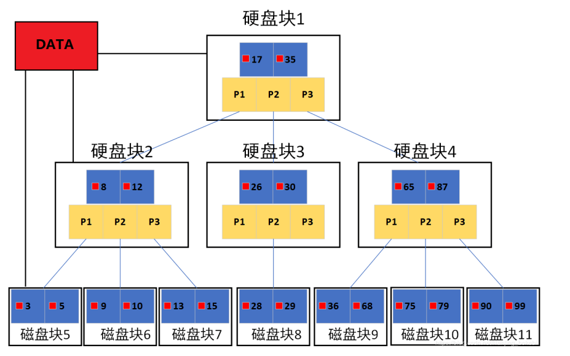

<!DOCTYPE html><html lang="zh-CN" data-theme="light"><head><meta charset="UTF-8"><meta http-equiv="X-UA-Compatible" content="IE=edge"><meta name="viewport" content="width=device-width, initial-scale=1.0,viewport-fit=cover"><title>MySQL | ૮(˶ᵔ ᵕ ᵔ˶)ა</title><meta name="author" content="૮(˶ᵔ ᵕ ᵔ˶)ა"><meta name="copyright" content="૮(˶ᵔ ᵕ ᵔ˶)ა"><meta name="format-detection" content="telephone=no"><meta name="theme-color" content="ffffff"><meta name="description" content="Site Reliability Engineering">
<meta property="og:type" content="article">
<meta property="og:title" content="MySQL">
<meta property="og:url" content="http://example.com/2025/02/17/SRE-MySQL/index.html">
<meta property="og:site_name" content="૮(˶ᵔ ᵕ ᵔ˶)ა">
<meta property="og:description" content="Site Reliability Engineering">
<meta property="og:locale" content="zh_CN">
<meta property="og:image" content="http://example.com/images/TITLE/mysql.jpg">
<meta property="article:published_time" content="2025-02-17T04:27:15.000Z">
<meta property="article:modified_time" content="2025-04-01T11:34:55.924Z">
<meta property="article:author" content="૮(˶ᵔ ᵕ ᵔ˶)ა">
<meta property="article:tag" content="MySQL">
<meta property="article:tag" content="SRE">
<meta name="twitter:card" content="summary">
<meta name="twitter:image" content="http://example.com/images/TITLE/mysql.jpg"><link rel="shortcut icon" href="/../images/TITLE/user.webp"><link rel="canonical" href="http://example.com/2025/02/17/SRE-MySQL/index.html"><link rel="preconnect" href="//cdn.jsdelivr.net"/><link rel="preconnect" href="//fonts.googleapis.com" crossorigin=""/><link rel="preconnect" href="//busuanzi.ibruce.info"/><link rel="stylesheet" href="/css/index.css"><link rel="stylesheet" href="https://cdn.jsdelivr.net/npm/@fortawesome/fontawesome-free/css/all.min.css" media="print" onload="this.media='all'"><link rel="stylesheet" href="https://cdn.jsdelivr.net/npm/node-snackbar/dist/snackbar.min.css" media="print" onload="this.media='all'"><link rel="stylesheet" href="https://cdn.jsdelivr.net/npm/@fancyapps/ui/dist/fancybox/fancybox.min.css" media="print" onload="this.media='all'"><link rel="stylesheet" href="https://fonts.googleapis.com/css?family=Titillium+Web&amp;display=swap" media="print" onload="this.media='all'"><script>const GLOBAL_CONFIG = { 
  root: '/',
  algolia: undefined,
  localSearch: undefined,
  translate: undefined,
  noticeOutdate: undefined,
  highlight: {"plugin":"highlighjs","highlightCopy":true,"highlightLang":false,"highlightHeightLimit":false},
  copy: {
    success: '复制成功',
    error: '复制错误',
    noSupport: '浏览器不支持'
  },
  relativeDate: {
    homepage: true,
    post: true
  },
  runtime: '天',
  dateSuffix: {
    just: '刚刚',
    min: '分钟前',
    hour: '小时前',
    day: '天前',
    month: '个月前'
  },
  copyright: undefined,
  lightbox: 'fancybox',
  Snackbar: {"chs_to_cht":"你已切换为繁体","cht_to_chs":"你已切换为简体","day_to_night":"你已切换为深色模式","night_to_day":"你已切换为浅色模式","bgLight":"#49b1f5","bgDark":"#1f1f1f","position":"top-center"},
  source: {
    justifiedGallery: {
      js: 'https://cdn.jsdelivr.net/npm/flickr-justified-gallery/dist/fjGallery.min.js',
      css: 'https://cdn.jsdelivr.net/npm/flickr-justified-gallery/dist/fjGallery.min.css'
    }
  },
  isPhotoFigcaption: false,
  islazyload: false,
  isAnchor: false,
  percent: {
    toc: true,
    rightside: true,
  }
}</script><script id="config-diff">var GLOBAL_CONFIG_SITE = {
  title: 'MySQL',
  isPost: true,
  isHome: false,
  isHighlightShrink: undefined,
  isToc: true,
  postUpdate: '2025-04-01 19:34:55'
}</script><noscript><style type="text/css">
  #nav {
    opacity: 1
  }
  .justified-gallery img {
    opacity: 1
  }

  #recent-posts time,
  #post-meta time {
    display: inline !important
  }
</style></noscript><script>(win=>{
    win.saveToLocal = {
      set: function setWithExpiry(key, value, ttl) {
        if (ttl === 0) return
        const now = new Date()
        const expiryDay = ttl * 86400000
        const item = {
          value: value,
          expiry: now.getTime() + expiryDay,
        }
        localStorage.setItem(key, JSON.stringify(item))
      },

      get: function getWithExpiry(key) {
        const itemStr = localStorage.getItem(key)

        if (!itemStr) {
          return undefined
        }
        const item = JSON.parse(itemStr)
        const now = new Date()

        if (now.getTime() > item.expiry) {
          localStorage.removeItem(key)
          return undefined
        }
        return item.value
      }
    }
  
    win.getScript = url => new Promise((resolve, reject) => {
      const script = document.createElement('script')
      script.src = url
      script.async = true
      script.onerror = reject
      script.onload = script.onreadystatechange = function() {
        const loadState = this.readyState
        if (loadState && loadState !== 'loaded' && loadState !== 'complete') return
        script.onload = script.onreadystatechange = null
        resolve()
      }
      document.head.appendChild(script)
    })
  
    win.getCSS = (url,id = false) => new Promise((resolve, reject) => {
      const link = document.createElement('link')
      link.rel = 'stylesheet'
      link.href = url
      if (id) link.id = id
      link.onerror = reject
      link.onload = link.onreadystatechange = function() {
        const loadState = this.readyState
        if (loadState && loadState !== 'loaded' && loadState !== 'complete') return
        link.onload = link.onreadystatechange = null
        resolve()
      }
      document.head.appendChild(link)
    })
  
      win.activateDarkMode = function () {
        document.documentElement.setAttribute('data-theme', 'dark')
        if (document.querySelector('meta[name="theme-color"]') !== null) {
          document.querySelector('meta[name="theme-color"]').setAttribute('content', '#0d0d0d')
        }
      }
      win.activateLightMode = function () {
        document.documentElement.setAttribute('data-theme', 'light')
        if (document.querySelector('meta[name="theme-color"]') !== null) {
          document.querySelector('meta[name="theme-color"]').setAttribute('content', 'ffffff')
        }
      }
      const t = saveToLocal.get('theme')
    
          if (t === 'dark') activateDarkMode()
          else if (t === 'light') activateLightMode()
        
      const asideStatus = saveToLocal.get('aside-status')
      if (asideStatus !== undefined) {
        if (asideStatus === 'hide') {
          document.documentElement.classList.add('hide-aside')
        } else {
          document.documentElement.classList.remove('hide-aside')
        }
      }
    
    const detectApple = () => {
      if(/iPad|iPhone|iPod|Macintosh/.test(navigator.userAgent)){
        document.documentElement.classList.add('apple')
      }
    }
    detectApple()
    })(window)</script><link rel="stylesheet" href="/css/custom.css"  media="defer" onload="this.media='all'"><meta name="generator" content="Hexo 5.4.2"></head><body><div id="web_bg"></div><div id="sidebar"><div id="menu-mask"></div><div id="sidebar-menus"><div class="avatar-img is-center"></div><div class="sidebar-site-data site-data is-center"><a href="/archives/"><div class="headline">文章</div><div class="length-num">102</div></a><a href="/tags/"><div class="headline">标签</div><div class="length-num">41</div></a><a href="/categories/"><div class="headline">分类</div><div class="length-num">34</div></a></div><hr/><div class="menus_items"><div class="menus_item"><a class="site-page" href="/"><i class="fa-fw fas fa-home"></i><span> 首页</span></a></div><div class="menus_item"><a class="site-page" href="/archives/"><i class="fa-fw fas fa-archive"></i><span> 时间线</span></a></div><div class="menus_item"><a class="site-page" href="/categories/"><i class="fa-fw fas fa-folder-open"></i><span> 分类</span></a></div><div class="menus_item"><a class="site-page" href="/tags/"><i class="fa-fw fas fa-tags"></i><span> 标签</span></a></div><div class="menus_item"><a class="site-page" href="/link/"><i class="fa-fw fas fa-link"></i><span> 友链</span></a></div></div></div></div><div class="post" id="body-wrap"><header class="post-bg" id="page-header" style="background-image: url('/../images/TITLE/mysql.jpg')"><nav id="nav"><span id="blog-info"><a href="/" title="૮(˶ᵔ ᵕ ᵔ˶)ა"><span class="site-name">૮(˶ᵔ ᵕ ᵔ˶)ა</span></a></span><div id="menus"><div class="menus_items"><div class="menus_item"><a class="site-page" href="/"><i class="fa-fw fas fa-home"></i><span> 首页</span></a></div><div class="menus_item"><a class="site-page" href="/archives/"><i class="fa-fw fas fa-archive"></i><span> 时间线</span></a></div><div class="menus_item"><a class="site-page" href="/categories/"><i class="fa-fw fas fa-folder-open"></i><span> 分类</span></a></div><div class="menus_item"><a class="site-page" href="/tags/"><i class="fa-fw fas fa-tags"></i><span> 标签</span></a></div><div class="menus_item"><a class="site-page" href="/link/"><i class="fa-fw fas fa-link"></i><span> 友链</span></a></div></div><div id="toggle-menu"><a class="site-page" href="javascript:void(0);"><i class="fas fa-bars fa-fw"></i></a></div></div></nav><div id="post-info"><h1 class="post-title">MySQL</h1><div id="post-meta"><div class="meta-firstline"><span class="post-meta-date"><i class="far fa-calendar-alt fa-fw post-meta-icon"></i><span class="post-meta-label">发表于</span><time class="post-meta-date-created" datetime="2025-02-17T04:27:15.000Z" title="发表于 2025-02-17 12:27:15">2025-02-17</time><span class="post-meta-separator">|</span><i class="fas fa-history fa-fw post-meta-icon"></i><span class="post-meta-label">更新于</span><time class="post-meta-date-updated" datetime="2025-04-01T11:34:55.924Z" title="更新于 2025-04-01 19:34:55">2025-04-01</time></span><span class="post-meta-categories"><span class="post-meta-separator">|</span><i class="fas fa-inbox fa-fw post-meta-icon"></i><a class="post-meta-categories" href="/categories/MySQL/">MySQL</a></span></div><div class="meta-secondline"><span class="post-meta-separator">|</span><span class="post-meta-wordcount"><i class="far fa-file-word fa-fw post-meta-icon"></i><span class="post-meta-label">字数总计:</span><span class="word-count">93.7k</span><span class="post-meta-separator">|</span><i class="far fa-clock fa-fw post-meta-icon"></i><span class="post-meta-label">阅读时长:</span><span>407分钟</span></span><span class="post-meta-separator">|</span><span class="post-meta-pv-cv" id="" data-flag-title="MySQL"><i class="far fa-eye fa-fw post-meta-icon"></i><span class="post-meta-label">阅读量:</span><span id="busuanzi_value_page_pv"><i class="fa-solid fa-spinner fa-spin"></i></span></span></div></div></div></header><main class="layout" id="content-inner"><div id="post"><article class="post-content" id="article-container"><h1 id="数据库原理"><a href="#数据库原理" class="headerlink" title="数据库原理"></a>数据库原理</h1><h2 id="数据的分类"><a href="#数据的分类" class="headerlink" title="数据的分类"></a>数据的分类</h2><ul>
<li>结构化的数据：即有固定格式和有限长度的数据。例如填的表格就是结构化的数据，国籍：中华人民共和国，民族：汉，性别：男，这都叫结构化数据</li>
<li>非结构化的数据：非结构化的数据越来越多，就是不定长、无固定格式的数据，例如: 网页,图片文件，有时候非常大，有时候很小；例如语音，视频都是非结构化的数据</li>
<li>半结构化数据：比如：XML或者HTML的格式的数据</li>
</ul>
<h2 id="数据库的发展史"><a href="#数据库的发展史" class="headerlink" title="数据库的发展史"></a>数据库的发展史</h2><p>数据库与芯片,操作系统并列为计算机技术的三大件,也是企业IT系统必不可少的核心技术</p>
<h3 id="数据库系统发展阶段"><a href="#数据库系统发展阶段" class="headerlink" title="数据库系统发展阶段"></a>数据库系统发展阶段</h3><ul>
<li><p>萌芽阶段：文件系统</p>
<p>使用磁盘文件来存储数据</p>
</li>
<li><p>初级阶段：第一代数据库</p>
<p>出现了网状模型、层次模型的数据库</p>
</li>
<li><p>中级阶段：第二代数据库</p>
<p>关系型数据库和结构化查询语言</p>
</li>
<li><p>高级阶段：新一代数据库</p>
<p>“关系-对象”型数据库</p>
</li>
</ul>
<h3 id="文件管理系统的缺点"><a href="#文件管理系统的缺点" class="headerlink" title="文件管理系统的缺点"></a>文件管理系统的缺点</h3><ul>
<li>编写应用程序不方便</li>
<li>不支持对文件的并发访问</li>
<li>无安全控制功能</li>
<li>难以按用户视图表示数据</li>
<li>数据间联系弱</li>
<li>数据冗余不可避免</li>
<li>应用程序依赖性 </li>
</ul>
<h2 id="数据库管理系统"><a href="#数据库管理系统" class="headerlink" title="数据库管理系统"></a>数据库管理系统</h2><h3 id="相关概念"><a href="#相关概念" class="headerlink" title="相关概念"></a>相关概念</h3><ul>
<li>Database：数据库是数据的汇集，它以一定的组织形式存于存储介质上</li>
<li>DBMS：Database Management System, 是管理数据库的系统软件，它实现数据库系统的各种功能。是数据库系统的核心 </li>
<li>DBA：Database Administrator, 负责数据库的规划、设计、协调、维护和管理等工作 </li>
<li>Application：应用程序,指以数据库为基础的应用程序 </li>
</ul>
<h3 id="数据库管理系统的优点"><a href="#数据库管理系统的优点" class="headerlink" title="数据库管理系统的优点"></a>数据库管理系统的优点</h3><ul>
<li>程序与数据相互独立 </li>
<li>保证数据的安全、可靠 </li>
<li>最大限度地保证数据的正确性 </li>
<li>数据可以并发使用并能同时保证一致性 </li>
<li>相互关联的数据的集合 </li>
<li>较少的数据冗余 </li>
</ul>
<h3 id="数据库管理系统的基本功能"><a href="#数据库管理系统的基本功能" class="headerlink" title="数据库管理系统的基本功能"></a>数据库管理系统的基本功能</h3><ul>
<li>数据定义</li>
<li>数据处理</li>
<li>数据安全</li>
<li>数据备份 </li>
</ul>
<h3 id="各种数据库管理系统"><a href="#各种数据库管理系统" class="headerlink" title="各种数据库管理系统"></a>各种数据库管理系统</h3><h4 id="层次数据库"><a href="#层次数据库" class="headerlink" title="层次数据库"></a>层次数据库</h4><p></p>
<p>分层结构由IBM在20世纪60年代开发，并在早期大型机DBMS中使用。记录的关系形成了一个树状模型。这种结构简单，但缺乏灵活性，因为这种关系仅限于一对多关系。</p>
<p>代表数据库：IBM IMS(信息管理系统)</p>
<h4 id="网状数据库"><a href="#网状数据库" class="headerlink" title="网状数据库"></a>网状数据库</h4><p></p>
<p>1964年通用电气GE公司的 Charles Bachman 成功地开发出世界上第一个网状数据库IDS(集成数据存储)，IDS 具有数据模式和日志的特征，只能在GE主机运行 </p>
<h4 id="关系型数据库-RDBMS"><a href="#关系型数据库-RDBMS" class="headerlink" title="关系型数据库 RDBMS"></a>关系型数据库 RDBMS</h4><p>Relational Database Management System,关系模型最初由IBM公司的英国计算机科学家埃德加·科德 (Edgar F. Codd) 于1969年描述</p>
<p>1974年，IBM开始开发系统R，这是一个开发RDBMS原型的研究项目。</p>
<p>然而，第一个商业上可用的RDBMS是甲骨文，于1979年由关系软件（现为甲骨文oracle公司）发布</p>
<h5 id="关系统型数据库相关概念"><a href="#关系统型数据库相关概念" class="headerlink" title="关系统型数据库相关概念"></a>关系统型数据库相关概念</h5><ul>
<li>关系Relational ：关系就是二维表，其中：表中的行、列次序并不重要 </li>
<li>行row：表中的每一行，又称为一条记录record  </li>
<li>列column：表中的每一列，称为属性，字段，域field  </li>
<li>主键Primary key：PK ,一个或多个字段的组合, 用于惟一确定一个记录的字段，一张表只有一个主键, 主键字段不能为空NULL </li>
<li>唯一键Unique key: 一个或多个字段的组合,用于惟一确定一个记录的字段,一张表可以有多个UK,而且UK字段可以为NULL </li>
<li>域domain：属性的取值范围，如，性别只能是’男’和’女’两个值，人类的年龄只能0-150 </li>
</ul>
<h5 id="常用关系数据库"><a href="#常用关系数据库" class="headerlink" title="常用关系数据库"></a>常用关系数据库</h5><ul>
<li>MySQL: MySQL, MariaDB, Percona Server </li>
<li>PostgreSQL: 简称为pgsql，EnterpriseDB </li>
<li>Oracle </li>
<li>MSSQL Server </li>
<li>DB2</li>
</ul>
<h3 id="数据库排名"><a href="#数据库排名" class="headerlink" title="数据库排名"></a>数据库排名</h3><figure class="highlight http"><table><tr><td class="gutter"><pre><span class="line">1</span><br></pre></td><td class="code"><pre><span class="line">https://db-engines.com/en/ranking</span><br></pre></td></tr></table></figure>

<p></p>
<h2 id="关系型数据库理论"><a href="#关系型数据库理论" class="headerlink" title="关系型数据库理论"></a>关系型数据库理论</h2><h3 id="实体-联系模型E-R"><a href="#实体-联系模型E-R" class="headerlink" title="实体-联系模型E-R"></a>实体-联系模型E-R</h3><p>E-R模型即实体-关系模型﹐E-R模型就是描述数据库存储数据的结构模型</p>
<p>对于大型公司开发项目﹐需要根据产品经理的设计﹐先使用建模工具,如:power designer ,db desinger 等这些软件来画出实体-关系模型(E-R模型)</p>
<ul>
<li><p>实体Entity：客观存在并可以相互区分的客观事物或抽象事件称为实体即表</p>
<p>在E-R图中用矩形表示实体，把实体名写在框内</p>
</li>
<li><p>属性Attribute：实体所具有的特征或性质,描述实体里面的单个信息, 使用椭圆形表示</p>
</li>
<li><p>联系Relationship：描述了实体的属性之间的关联规则 </p>
<ul>
<li>实体内部的联系：指组成同一个实体内的各属性之间的联系。如职工实体中，职工号和部门经理号之间有一种关联关系</li>
<li>实体之间的联系：指不同实体之间的属性的联系。例：学生选课实体和学生基本信息实体之间</li>
<li>实体之间的联系用菱形框表示 E-R 模型范例:</li>
</ul>
</li>
</ul>
<p>E-R 模型范例:</p>
<p></p>
<h3 id="联系类型"><a href="#联系类型" class="headerlink" title="联系类型"></a>联系类型</h3><ul>
<li>一对一联系(1:1): 在表A或表B中创建一个字段﹐存储另一个表的主键值 如: 一个人只有一个身份证</li>
<li>一对多联系(1:n)：外键,foreign key, 如: 部门和员工</li>
<li>多对多联系(m:n)：增加第三张表, 如: 学生和课程</li>
</ul>
<h3 id="数据的操作"><a href="#数据的操作" class="headerlink" title="数据的操作"></a>数据的操作</h3><p></p>
<p>开发工程师 CRUD (增加Create、查询Read或 Retrieve、更新Update、 删除Delete) </p>
<ul>
<li>数据提取：在数据集合中提取感兴趣的内容。SELECT</li>
<li>数据更新：变更数据库中的数据。INSERT、DELETE、UPDATE</li>
</ul>
<h3 id="数据库的正规化分析"><a href="#数据库的正规化分析" class="headerlink" title="数据库的正规化分析"></a>数据库的正规化分析</h3><p>数据库规范化，又称数据库或资料库的正规化、标准化，是数据库设计中的一系列原理和技术，以减少数据库中数据冗余，增进数据的一致性。关系模型的发明者埃德加·科德最早提出这一概念，并于1970年代初定义了第一范式、第二范式和第三范式的概念 </p>
<p>设计关系数据库时，遵从不同的规范要求，设计出合理的关系型数据库，不同的规范要求被称为不同范式，各种范式呈递次规范，越高的范式数据库冗余越小</p>
<p>目前关系数据库有六种范式：第一范式（1NF）、第二范式（2NF）、第三范式（3NF）、巴德斯科范式（BCNF）、第四范式(4NF）和第五范式（5NF，又称完美范式）。满足最低要求的范式是第一范式（1NF）。在第一范式的基础上进一步满足更多规范要求的称为第二范式（2NF），其余范式以次类推。一般数据库只需满足第三范式(3NF）即可</p>
<p>规则是死的,人是活的,所以范式是否必须遵守,要看业务需要而定</p>
<p>掌握范式的目的是为了在合适的场景下违反范式</p>
<h4 id="第一范式：1NF"><a href="#第一范式：1NF" class="headerlink" title="第一范式：1NF"></a>第一范式：1NF</h4><p>无重复的列，每一列都是不可分割的基本数据项，同一列中不能有多个值，即实体中的某个属性不能有多个值或者不能有重复的属性，确保每一列的原子性。除去同类型的字段，就是无重复的列</p>
<p>说明：第一范式（1NF）是对关系模式的基本要求，不满足第一范式（1NF）的数据库就不是关系数据库</p>
<h4 id="第二范式：2NF"><a href="#第二范式：2NF" class="headerlink" title="第二范式：2NF"></a>第二范式：2NF</h4><p>第二范式必须先满足第一范式，属性完全依赖于主键，要求表中的每个行必须可以被唯一地区分，通常为表加上每行的唯一标识主键PK，非PK的字段需要与整个PK有直接相关性,即非PK的字段不能依赖于部分主键</p>
<h4 id="第三范式：3NF"><a href="#第三范式：3NF" class="headerlink" title="第三范式：3NF"></a>第三范式：3NF</h4><p>满足第三范式必须先满足第二范式属性，非主键属性不依赖于其它非主键属性。第三范式要求一个数据表中不包含已在其它表中已包含的非主关键字信息，非PK的字段间不能有从属关系</p>
<h3 id="SQL-结构化查询语言简介"><a href="#SQL-结构化查询语言简介" class="headerlink" title="SQL 结构化查询语言简介"></a>SQL 结构化查询语言简介</h3><p>SQL：Structure Query Language,结构化查询语言是1974年由Boyce和Chamberlin提出的一个通用的、功能极强的关系性数据库语言</p>
<p>SQL解释器：将SQL语句解释成机器语言</p>
<p>数据存储协议：应用层协议，C/S</p>
<ul>
<li>S：server, 监听于套接字，接收并处理客户端的应用请求</li>
<li>C：Client</li>
</ul>
<p>客户端程序接口</p>
<ul>
<li>CLI</li>
<li>GUI</li>
</ul>
<p>应用编程接口</p>
<ul>
<li>ODBC：Open Database Connectivity</li>
<li>JDBC：Java Data Base Connectivity </li>
</ul>
<h1 id="MySQL安装和基本使用"><a href="#MySQL安装和基本使用" class="headerlink" title="MySQL安装和基本使用"></a>MySQL安装和基本使用</h1><h2 id="MySQL-介绍"><a href="#MySQL-介绍" class="headerlink" title="MySQL 介绍"></a>MySQL 介绍</h2><h3 id="MySQL-历史"><a href="#MySQL-历史" class="headerlink" title="MySQL 历史"></a>MySQL 历史</h3><p></p>
<p>MySQL的历史可以追溯到1979年，它的创始人叫作Michael Widenius，他在开发一个报表工具的时候，设计了一套API，后来他的客户要求他的API支持sql语句，他直接借助于mSQL（当时比较牛）的代码，将它集成到自己的存储引擎中。但是他总是感觉不满意，萌生了要自己做一套数据库的想法。</p>
<p>直到1996年，MySQL 1.0发布，Michael Widenius的大女儿的简称就是MY，Michael Widenius大概也是把MySQL当成自己的女儿一样来对待.仅仅过了几个月的时间，1996年10月MySQL 3.11.1当时发布了 Solaris 的版本，一个月后，linux的版本诞生，从那时候开始，MySQL慢慢的被人所接受。</p>
<p>1999年，Michael Widenius成立了MySQL AB公司，MySQL由个人开发转变为团队开发，2000年使用 GPL 协议开源。</p>
<p>2001年，MySQL生命中的大事发生了，那就是存储引擎InnoDB的诞生！Oracle在2005年收购了InnoDB，只不过InnoDB一直以来都只能作为第三方插件供用户选择。直到现在，MySQL可以选择的众多存储引擎中，InnoDB依然是第一选择</p>
<p>2008年1月，MySQL AB公司被Sun公司以10亿美金收购，MySQL数据库进入Sun时代。Sun为MySQL的发展提供了绝佳的环境，2008年11月，MySQL 5.1发布，MySQL成为了最受欢迎的小型数据库。</p>
<p>2009年4月，Oracle公司以74亿美元收购Sun公司，MySQL也随之进入Oracle 时代。</p>
<p>2010年12月，MySQL 5.5发布，Oracle终于把InnoDB做成了MySQL默认的存储引擎，MySQL从此进入了辉煌时代。 </p>
<p>然而，从那之后，Oracle对MySQL的态度渐渐发生了变化，Oracle虽然宣称MySQL依然遵从GPL协议，但却暗地里把开发人员全部换成了Oracle自己人，开源社区再也影响不了MySQL发展的脚步，真正有心做贡献的人也被拒之门外，MySQL随时都有闭源的可能……</p>
<p>看着自己辛苦养大的MySQL被Oracle搞成这样，Michael Widenius非常失望，决定在MySQL走向闭源前，将MySQL进行分支化，依然是使用了自己小女儿的名字MariaDB（玛莉亚DB）。</p>
<p>MariaDB数据库管理系统是MySQL的一个分支，主要由开源社区在维护，采用GPL授权许可 MariaDB的目的是完全兼容MySQL，包括API和命令行，使之能轻松成为MySQL的代替品。在存储引擎方面，使用XtraDB来代替MySQL的InnoDB。</p>
<p>MariaDB由MySQL的创始人Michael Widenius主导，由开源社区的大神们进行开发。因此，大家都认为，MariaDB拥有比MySQL更纯正的MySQL血脉。 最初的版本更新与MySQL同步，相对MySQL5以后的版本，MariaDB也有相应的5.1~5.5的版本。后来MariaDB终于摆脱了MySQL，它的版本号直接从10.0开始，以自己的步伐进行开发，当然，还是可以对MySQL完全兼容。 </p>
<p>MySQL大事记</p>
<figure class="highlight http"><table><tr><td class="gutter"><pre><span class="line">1</span><br><span class="line">2</span><br><span class="line">3</span><br><span class="line">4</span><br><span class="line">5</span><br><span class="line">6</span><br><span class="line">7</span><br></pre></td><td class="code"><pre><span class="line">1979年：TcX公司 Monty Widenius，Unireg</span><br><span class="line">1996年：发布MySQL1.0，Solaris版本，Linux版本</span><br><span class="line">1999年：MySQL AB公司，瑞典</span><br><span class="line">2003年：MySQL 5.0版本，提供视图、存储过程等功能</span><br><span class="line">2008年：Sun公司 以10亿美元收购MySQL</span><br><span class="line">2009年：Oracle公司以 74 亿美元收购 sun 公司</span><br><span class="line">2009年：Monty成立MariaDB</span><br></pre></td></tr></table></figure>

<h3 id="MySQL系列"><a href="#MySQL系列" class="headerlink" title="MySQL系列"></a>MySQL系列</h3><h4 id="MySQL-的三大主要分支"><a href="#MySQL-的三大主要分支" class="headerlink" title="MySQL 的三大主要分支"></a>MySQL 的三大主要分支</h4><ul>
<li>MySQL</li>
<li>Mariadb</li>
<li>Percona Server </li>
</ul>
<h4 id="官方网址"><a href="#官方网址" class="headerlink" title="官方网址"></a>官方网址</h4><figure class="highlight http"><table><tr><td class="gutter"><pre><span class="line">1</span><br><span class="line">2</span><br><span class="line">3</span><br></pre></td><td class="code"><pre><span class="line">https://www.mysql.com/</span><br><span class="line">http://mariadb.org/</span><br><span class="line">https://www.percona.com</span><br></pre></td></tr></table></figure>

<h4 id="官方文档"><a href="#官方文档" class="headerlink" title="官方文档"></a>官方文档</h4><figure class="highlight http"><table><tr><td class="gutter"><pre><span class="line">1</span><br><span class="line">2</span><br><span class="line">3</span><br></pre></td><td class="code"><pre><span class="line">https://dev.mysql.com/doc/</span><br><span class="line">https://mariadb.com/kb/en/  </span><br><span class="line">https://www.percona.com/software/mysql-database/percona-server</span><br></pre></td></tr></table></figure>

<h4 id="版本演变"><a href="#版本演变" class="headerlink" title="版本演变"></a>版本演变</h4><p>MySQL：5.1 –&gt; 5.5 –&gt; 5.6 –&gt; 5.7 –&gt;8.0 </p>
<p>MariaDB：5.1 –&gt;5.5 –&gt;10.0–&gt; 10.1 –&gt; 10.2 –&gt; 10.3 –&gt; 10.4 –&gt; 10.5</p>
<figure class="highlight http"><table><tr><td class="gutter"><pre><span class="line">1</span><br><span class="line">2</span><br></pre></td><td class="code"><pre><span class="line">MySQL被Sun收购后，搞了个过渡的6.0版本，没多久就下线了,后来被Oracle收购后，终于迎来了像样的5.6版本，</span><br><span class="line">之后就是5.7、8.0版本。由于6.0版本号已被用过，7.x系列版本专用于NDB Cluster，因而新版本号从8.0开始。</span><br></pre></td></tr></table></figure>

<h3 id="MySQL的特性"><a href="#MySQL的特性" class="headerlink" title="MySQL的特性"></a>MySQL的特性</h3><ul>
<li>开源免费</li>
<li>插件式存储引擎：也称为”表类型”，存储管理器有多种实现版本，功能和特性可能均略有差别；用户可根据需要灵活选择,MySQL5.5.5开始innoDB引擎是MYSQL默认引擎</li>
</ul>
<figure class="highlight http"><table><tr><td class="gutter"><pre><span class="line">1</span><br><span class="line">2</span><br></pre></td><td class="code"><pre><span class="line">MyISAM ==&gt; Aria </span><br><span class="line">InnoDB ==&gt; XtraDB</span><br></pre></td></tr></table></figure>

<ul>
<li>单进程，多线程</li>
<li>诸多扩展和新特性</li>
<li>提供了较多测试组件</li>
</ul>
<h2 id="MySQL-安装方式介绍和快速安装"><a href="#MySQL-安装方式介绍和快速安装" class="headerlink" title="MySQL 安装方式介绍和快速安装"></a>MySQL 安装方式介绍和快速安装</h2><h3 id="安装方式介绍"><a href="#安装方式介绍" class="headerlink" title="安装方式介绍"></a>安装方式介绍</h3><ul>
<li>程序包管理器管理的程序包</li>
<li>源代码编译安装</li>
<li>二进制格式的程序包：展开至特定路径，并经过简单配置后即可使用</li>
</ul>
<h3 id="RPM包安装MySQL"><a href="#RPM包安装MySQL" class="headerlink" title="RPM包安装MySQL"></a>RPM包安装MySQL</h3><p>CentOS 安装光盘</p>
<p>项目官方：<a target="_blank" rel="noopener" href="https://downloads.mariadb.org/mariadb/repositories/">https://downloads.mariadb.org/mariadb/repositories/</a></p>
<p>国内镜像：<a target="_blank" rel="noopener" href="https://mirrors.tuna.tsinghua.edu.cn/mariadb/yum/">https://mirrors.tuna.tsinghua.edu.cn/mariadb/yum/</a></p>
<p>​                     <a target="_blank" rel="noopener" href="https://mirrors.tuna.tsinghua.edu.cn/mysql/yum/">https://mirrors.tuna.tsinghua.edu.cn/mysql/yum/</a></p>
<p>CentOS 8：安装光盘直接提供</p>
<ul>
<li>mysql-server：8.0</li>
<li>mariadb-server : 10.3</li>
</ul>
<p>CentOS 7：安装光盘直接提供</p>
<ul>
<li>mariadb-server：5.5</li>
<li>服务器包 mariadb</li>
</ul>
<p>客户端工具包 CentOS 6：</p>
<ul>
<li>mysql-server：5.1</li>
<li>服务器包 mysql 客户端工具包</li>
</ul>
<p>范例: CentOS 7 利用yum源安装MySQL5.7 </p>
<figure class="highlight sh"><table><tr><td class="gutter"><pre><span class="line">1</span><br><span class="line">2</span><br><span class="line">3</span><br><span class="line">4</span><br><span class="line">5</span><br><span class="line">6</span><br><span class="line">7</span><br><span class="line">8</span><br><span class="line">9</span><br><span class="line">10</span><br><span class="line">11</span><br><span class="line">12</span><br><span class="line">13</span><br><span class="line">14</span><br><span class="line">15</span><br><span class="line">16</span><br><span class="line">17</span><br><span class="line">18</span><br><span class="line">19</span><br><span class="line">20</span><br><span class="line">21</span><br><span class="line">22</span><br><span class="line">23</span><br><span class="line">24</span><br><span class="line">25</span><br><span class="line">26</span><br><span class="line">27</span><br><span class="line">28</span><br><span class="line">29</span><br><span class="line">30</span><br><span class="line">31</span><br><span class="line">32</span><br><span class="line">33</span><br><span class="line">34</span><br><span class="line">35</span><br><span class="line">36</span><br><span class="line">37</span><br><span class="line">38</span><br><span class="line">39</span><br><span class="line">40</span><br><span class="line">41</span><br><span class="line">42</span><br><span class="line">43</span><br><span class="line">44</span><br><span class="line">45</span><br><span class="line">46</span><br><span class="line">47</span><br><span class="line">48</span><br><span class="line">49</span><br><span class="line">50</span><br><span class="line">51</span><br><span class="line">52</span><br><span class="line">53</span><br><span class="line">54</span><br><span class="line">55</span><br><span class="line">56</span><br><span class="line">57</span><br><span class="line">58</span><br><span class="line">59</span><br><span class="line">60</span><br><span class="line">61</span><br><span class="line">62</span><br><span class="line">63</span><br><span class="line">64</span><br><span class="line">65</span><br><span class="line">66</span><br><span class="line">67</span><br><span class="line">68</span><br><span class="line">69</span><br><span class="line">70</span><br><span class="line">71</span><br><span class="line">72</span><br><span class="line">73</span><br><span class="line">74</span><br><span class="line">75</span><br><span class="line">76</span><br><span class="line">77</span><br><span class="line">78</span><br><span class="line">79</span><br><span class="line">80</span><br><span class="line">81</span><br></pre></td><td class="code"><pre><span class="line">[root@centos7 ~]<span class="comment">#tee /etc/yum.repos.d/mysql.repo &lt;&lt;EOF</span></span><br><span class="line">[mysql]</span><br><span class="line">name=mysql5.7</span><br><span class="line">baseurl=https://mirrors.tuna.tsinghua.edu.cn/mysql/yum/mysql-5.7-community-el7-x86_64/</span><br><span class="line">gpgcheck=0</span><br><span class="line">EOF</span><br><span class="line"></span><br><span class="line">[root@centos7 ~]<span class="comment">#yum -y install mysql-community-server</span></span><br><span class="line">[root@centos7 ~]<span class="comment">#systemctl enable --now mysqld</span></span><br><span class="line">                </span><br><span class="line">[root@centos7 ~]<span class="comment">#ss -ntl</span></span><br><span class="line">State     Recv-Q Send-Q   Local Address:Port       Peer Address:Port           </span><br><span class="line">   </span><br><span class="line">LISTEN     0      128                   *:22                     *:*             </span><br><span class="line">     </span><br><span class="line">LISTEN     0      100           127.0.0.1:25                     *:*             </span><br><span class="line">     </span><br><span class="line">LISTEN     0      128               [::]:22                 [::]:*             </span><br><span class="line">     </span><br><span class="line">LISTEN     0      100               [::1]:25                 [::]:*             </span><br><span class="line">     </span><br><span class="line">LISTEN     0      80                 [::]:3306               [::]:*   </span><br><span class="line"></span><br><span class="line"></span><br><span class="line">[root@centos7 ~]<span class="comment">#mysql</span></span><br><span class="line">ERROR 1045 (28000): Access denied <span class="keyword">for</span> user <span class="string">&#x27;root&#x27;</span>@<span class="string">&#x27;localhost&#x27;</span> (using password: NO)</span><br><span class="line"></span><br><span class="line">[root@centos7 ~]<span class="comment">#grep password /var/log/mysqld.log</span></span><br><span class="line">2021-01-27T00:45:09.953242Z 1 [Note] A temporary password is generated <span class="keyword">for</span> root@localhost: pe%b<span class="comment">#S8ah)j-</span></span><br><span class="line">2021-01-27T00:46:09.491494Z 2 [Note] Access denied <span class="keyword">for</span> user <span class="string">&#x27;root&#x27;</span>@<span class="string">&#x27;localhost&#x27;</span></span><br><span class="line">(using password: NO)</span><br><span class="line"></span><br><span class="line"></span><br><span class="line"><span class="comment">#修改初始密码方法1</span></span><br><span class="line">[root@centos7 ~]<span class="comment">#mysql -uroot -p&#x27;pe%b#S8ah)j-&#x27;</span></span><br><span class="line"></span><br><span class="line"><span class="comment">#使用初始密码登录无法执行操作,需要修改密码后才可以</span></span><br><span class="line">mysql&gt; status</span><br><span class="line">ERROR 1820 (HY000): You must reset your password using ALTER USER statement before executing this statement.</span><br><span class="line"></span><br><span class="line"><span class="comment">#修改简单密码不符合密码策略</span></span><br><span class="line">mysql&gt; alter user root@<span class="string">&#x27;localhost&#x27;</span> identified by <span class="string">&#x27;wang2021&#x27;</span>;</span><br><span class="line">ERROR 1819 (HY000): Your password does not satisfy the current policy </span><br><span class="line">requirements</span><br><span class="line"></span><br><span class="line"><span class="comment">#修改为复杂密码</span></span><br><span class="line">mysql&gt; alter user root@<span class="string">&#x27;localhost&#x27;</span> identified by <span class="string">&#x27;wang0!&#x27;</span>;</span><br><span class="line">Query OK, 0 rows affected (0.00 sec)</span><br><span class="line"></span><br><span class="line">mysql&gt; status</span><br><span class="line">--------------</span><br><span class="line">mysql Ver 14.14 Distrib 5.7.33, <span class="keyword">for</span> Linux (x86_64) using EditLine wrapper</span><br><span class="line">Connection <span class="built_in">id</span>: 4</span><br><span class="line">Current database: </span><br><span class="line">Current user: root@localhost</span><br><span class="line">SSL: Not <span class="keyword">in</span> use</span><br><span class="line">Current pager: stdout</span><br><span class="line">Using outfile: <span class="string">&#x27;&#x27;</span></span><br><span class="line">Using delimiter: ;</span><br><span class="line">Server version: 5.7.33</span><br><span class="line">Protocol version: 10</span><br><span class="line">Connection: Localhost via UNIX socket</span><br><span class="line">Server characterset: latin1</span><br><span class="line">Db     characterset: latin1</span><br><span class="line">Client characterset: utf8</span><br><span class="line">Conn. characterset: utf8</span><br><span class="line">UNIX socket: /var/lib/mysql/mysql.sock</span><br><span class="line">Uptime: 3 min 38 sec</span><br><span class="line"></span><br><span class="line">Threads: 1 Questions: 8 Slow queries: 0 Opens: 106 Flush tables: 1 Open </span><br><span class="line">tables: 99 Queries per second avg: 0.036</span><br><span class="line">--------------</span><br><span class="line"></span><br><span class="line">mysql&gt; <span class="built_in">exit</span></span><br><span class="line"><span class="comment">#修改初始密码方法2</span></span><br><span class="line">[root@centos7 ~]<span class="comment">#mysqladmin -uroot -p&#x27;pe%b#S8ah)j-&#x27; password &#x27;wang0!&#x27;</span></span><br><span class="line"></span><br><span class="line">mysqladmin: [Warning] Using a password on the <span class="built_in">command</span> line interface can be </span><br><span class="line">insecure.</span><br><span class="line">Warning: Since password will be sent to server <span class="keyword">in</span> plain text, use ssl connection </span><br><span class="line">to ensure password safety.</span><br></pre></td></tr></table></figure>

<p>范例: CentOS 7 利用yum源安装Mariadb </p>
<figure class="highlight http"><table><tr><td class="gutter"><pre><span class="line">1</span><br></pre></td><td class="code"><pre><span class="line">https://mariadb.org/download/#mariadb-repositories</span><br></pre></td></tr></table></figure>

<p></p>
<p>参考网站信息,配置yum源</p>
<figure class="highlight sh"><table><tr><td class="gutter"><pre><span class="line">1</span><br><span class="line">2</span><br><span class="line">3</span><br><span class="line">4</span><br><span class="line">5</span><br><span class="line">6</span><br><span class="line">7</span><br><span class="line">8</span><br><span class="line">9</span><br><span class="line">10</span><br><span class="line">11</span><br><span class="line">12</span><br><span class="line">13</span><br><span class="line">14</span><br><span class="line">15</span><br><span class="line">16</span><br><span class="line">17</span><br><span class="line">18</span><br><span class="line">19</span><br><span class="line">20</span><br><span class="line">21</span><br><span class="line">22</span><br><span class="line">23</span><br><span class="line">24</span><br><span class="line">25</span><br><span class="line">26</span><br><span class="line">27</span><br><span class="line">28</span><br><span class="line">29</span><br><span class="line">30</span><br><span class="line">31</span><br><span class="line">32</span><br><span class="line">33</span><br><span class="line">34</span><br><span class="line">35</span><br><span class="line">36</span><br><span class="line">37</span><br><span class="line">38</span><br><span class="line">39</span><br><span class="line">40</span><br><span class="line">41</span><br></pre></td><td class="code"><pre><span class="line"><span class="comment">#创建yum仓库配置文件</span></span><br><span class="line">[root@centos7 ~]<span class="comment">#cat /etc/yum.repos.d/mariadb.repo </span></span><br><span class="line"><span class="comment"># MariaDB 10.5 CentOS repository list - created 2021-01-27 07:45 UTC</span></span><br><span class="line"><span class="comment"># https://mariadb.org/download/</span></span><br><span class="line">[mariadb]</span><br><span class="line">name = MariaDB</span><br><span class="line">baseurl = https://mirrors.nju.edu.cn/mariadb/yum/10.5/centos7-amd64</span><br><span class="line">gpgkey=https://mirrors.nju.edu.cn/mariadb/yum/RPM-GPG-KEY-MariaDB</span><br><span class="line">gpgcheck=1</span><br><span class="line"></span><br><span class="line">[root@centos7 ~]<span class="comment">#yum install MariaDB-server -y </span></span><br><span class="line">[root@centos7 ~]<span class="comment">#systemctl enable --now mariadb.service</span></span><br><span class="line"></span><br><span class="line">[root@centos7 ~]<span class="comment">#mysql</span></span><br><span class="line"></span><br><span class="line">MariaDB [(none)]&gt; status</span><br><span class="line">--------------</span><br><span class="line">mysql Ver 15.1 Distrib 10.5.8-MariaDB, <span class="keyword">for</span> Linux (x86_64) using readline 5.1</span><br><span class="line">Connection <span class="built_in">id</span>: 4</span><br><span class="line">Current database: </span><br><span class="line">Current user: root@localhost</span><br><span class="line">SSL: Not <span class="keyword">in</span> use</span><br><span class="line">Current pager: stdout</span><br><span class="line">Using outfile: <span class="string">&#x27;&#x27;</span></span><br><span class="line">Using delimiter: ;</span><br><span class="line">Server: MariaDB</span><br><span class="line">Server version: 10.5.8-MariaDB MariaDB Server</span><br><span class="line">Protocol version: 10</span><br><span class="line">Connection: Localhost via UNIX socket</span><br><span class="line">Server characterset: latin1</span><br><span class="line">Db     characterset: latin1</span><br><span class="line">Client characterset: utf8</span><br><span class="line">Conn. characterset: utf8</span><br><span class="line">UNIX socket: /var/lib/mysql/mysql.sock</span><br><span class="line">Uptime: 2 min 43 sec</span><br><span class="line"></span><br><span class="line">Threads: 2 Questions: 8 Slow queries: 0 Opens: 16 Open tables: 10 Queries </span><br><span class="line">per second avg: 0.049</span><br><span class="line">--------------</span><br><span class="line"></span><br><span class="line">MariaDB [(none)]&gt;</span><br></pre></td></tr></table></figure>

<p>范例: Ubuntu18.04 利用默认仓库安装 MySQL 5.7</p>
<figure class="highlight sh"><table><tr><td class="gutter"><pre><span class="line">1</span><br><span class="line">2</span><br><span class="line">3</span><br><span class="line">4</span><br><span class="line">5</span><br><span class="line">6</span><br><span class="line">7</span><br><span class="line">8</span><br><span class="line">9</span><br><span class="line">10</span><br><span class="line">11</span><br><span class="line">12</span><br><span class="line">13</span><br><span class="line">14</span><br><span class="line">15</span><br><span class="line">16</span><br><span class="line">17</span><br><span class="line">18</span><br><span class="line">19</span><br><span class="line">20</span><br><span class="line">21</span><br><span class="line">22</span><br><span class="line">23</span><br><span class="line">24</span><br><span class="line">25</span><br><span class="line">26</span><br><span class="line">27</span><br><span class="line">28</span><br><span class="line">29</span><br><span class="line">30</span><br><span class="line">31</span><br><span class="line">32</span><br><span class="line">33</span><br><span class="line">34</span><br><span class="line">35</span><br><span class="line">36</span><br><span class="line">37</span><br><span class="line">38</span><br><span class="line">39</span><br></pre></td><td class="code"><pre><span class="line">[root@ubuntu1804 ~]<span class="comment">#apt install mysql-server</span></span><br><span class="line">[root@ubuntu1804 ~]<span class="comment">#systemctl status mysql.service </span></span><br><span class="line">● mysql.service - MySQL Community Server</span><br><span class="line">   Loaded: loaded (/lib/systemd/system/mysql.service; enabled; vendor preset: </span><br><span class="line">enabled)</span><br><span class="line">   Active: active (running) since Wed 2021-01-27 15:41:33 CST; 10min ago</span><br><span class="line"> Main PID: 2115 (mysqld)</span><br><span class="line">   Tasks: 28 (<span class="built_in">limit</span>: 2290)</span><br><span class="line">   CGroup: /system.slice/mysql.service</span><br><span class="line">           └─2115 /usr/sbin/mysqld --daemonize --pid-file=/run/mysqld/mysqld.pid</span><br><span class="line">           </span><br><span class="line">Jan 27 15:41:33 ubuntu1804.wang.org systemd[1]: Starting MySQL Community Server...</span><br><span class="line">Jan 27 15:41:33 ubuntu1804.wang.org systemd[1]: Started MySQL Community Server.</span><br><span class="line"></span><br><span class="line"></span><br><span class="line">[root@ubuntu1804 ~]<span class="comment">#mysql</span></span><br><span class="line"></span><br><span class="line">mysql&gt; status</span><br><span class="line">--------------</span><br><span class="line">mysql Ver 14.14 Distrib 5.7.32, <span class="keyword">for</span> Linux (x86_64) using EditLine wrapper</span><br><span class="line">Connection <span class="built_in">id</span>: 3</span><br><span class="line">Current database: </span><br><span class="line">Current user: root@localhost</span><br><span class="line">SSL: Not <span class="keyword">in</span> use</span><br><span class="line">Current pager: stdout</span><br><span class="line">Using outfile: <span class="string">&#x27;&#x27;</span></span><br><span class="line">Using delimiter: ;</span><br><span class="line">Server version: 5.7.32-0ubuntu0.18.04.1 (Ubuntu)</span><br><span class="line">Protocol version: 10</span><br><span class="line">Connection: Localhost via UNIX socket</span><br><span class="line">Server characterset: latin1</span><br><span class="line">Db     characterset: latin1</span><br><span class="line">Client characterset: utf8</span><br><span class="line">Conn. characterset: utf8</span><br><span class="line">UNIX socket: /var/run/mysqld/mysqld.sock</span><br><span class="line">Uptime: 10 min 43 sec</span><br><span class="line">Threads: 1 Questions: 10 Slow queries: 0 Opens: 105 Flush tables: 1 Open </span><br><span class="line">tables: 98 Queries per second avg: 0.015</span><br><span class="line">--------------</span><br></pre></td></tr></table></figure>

<h3 id="初始化脚本提高安全性"><a href="#初始化脚本提高安全性" class="headerlink" title="初始化脚本提高安全性"></a>初始化脚本提高安全性</h3><p>运行脚本：mysql_secure_installation</p>
<figure class="highlight http"><table><tr><td class="gutter"><pre><span class="line">1</span><br><span class="line">2</span><br><span class="line">3</span><br><span class="line">4</span><br></pre></td><td class="code"><pre><span class="line">设置数据库管理员root口令</span><br><span class="line">禁止root远程登录</span><br><span class="line">删除anonymous用户帐号</span><br><span class="line">删除test数据库</span><br></pre></td></tr></table></figure>

<p>范例: 针对MySQL5.6前版本进行安全加固</p>
<figure class="highlight sh"><table><tr><td class="gutter"><pre><span class="line">1</span><br><span class="line">2</span><br><span class="line">3</span><br><span class="line">4</span><br><span class="line">5</span><br><span class="line">6</span><br><span class="line">7</span><br><span class="line">8</span><br><span class="line">9</span><br><span class="line">10</span><br><span class="line">11</span><br><span class="line">12</span><br><span class="line">13</span><br><span class="line">14</span><br><span class="line">15</span><br><span class="line">16</span><br><span class="line">17</span><br><span class="line">18</span><br><span class="line">19</span><br><span class="line">20</span><br><span class="line">21</span><br><span class="line">22</span><br><span class="line">23</span><br><span class="line">24</span><br><span class="line">25</span><br><span class="line">26</span><br><span class="line">27</span><br><span class="line">28</span><br><span class="line">29</span><br><span class="line">30</span><br><span class="line">31</span><br><span class="line">32</span><br><span class="line">33</span><br><span class="line">34</span><br><span class="line">35</span><br><span class="line">36</span><br><span class="line">37</span><br><span class="line">38</span><br><span class="line">39</span><br><span class="line">40</span><br><span class="line">41</span><br><span class="line">42</span><br><span class="line">43</span><br><span class="line">44</span><br><span class="line">45</span><br><span class="line">46</span><br><span class="line">47</span><br><span class="line">48</span><br><span class="line">49</span><br><span class="line">50</span><br><span class="line">51</span><br><span class="line">52</span><br><span class="line">53</span><br><span class="line">54</span><br><span class="line">55</span><br><span class="line">56</span><br><span class="line">57</span><br><span class="line">58</span><br><span class="line">59</span><br><span class="line">60</span><br><span class="line">61</span><br><span class="line">62</span><br><span class="line">63</span><br><span class="line">64</span><br><span class="line">65</span><br><span class="line">66</span><br><span class="line">67</span><br><span class="line">68</span><br><span class="line">69</span><br><span class="line">70</span><br><span class="line">71</span><br><span class="line">72</span><br><span class="line">73</span><br><span class="line">74</span><br><span class="line">75</span><br><span class="line">76</span><br><span class="line">77</span><br><span class="line">78</span><br><span class="line">79</span><br><span class="line">80</span><br><span class="line">81</span><br><span class="line">82</span><br><span class="line">83</span><br><span class="line">84</span><br><span class="line">85</span><br></pre></td><td class="code"><pre><span class="line">root@centos7 ~]<span class="comment">#mysql</span></span><br><span class="line"></span><br><span class="line">mysql&gt; show databases;</span><br><span class="line">+--------------------+</span><br><span class="line">| Database           |</span><br><span class="line">+--------------------+</span><br><span class="line">| information_schema |</span><br><span class="line">| mysql              |</span><br><span class="line">| performance_schema |</span><br><span class="line">+--------------------+</span><br><span class="line">3 rows <span class="keyword">in</span> <span class="built_in">set</span> (0.00 sec)</span><br><span class="line"></span><br><span class="line">mysql&gt; select user,host from mysql.user;</span><br><span class="line">+------+--------------------------+</span><br><span class="line">| user | host                     |</span><br><span class="line">+------+--------------------------+</span><br><span class="line">| root | 127.0.0.1                |</span><br><span class="line">| root | ::1                      |</span><br><span class="line">|      | centos7.wangxiaochun.com |</span><br><span class="line">| root | centos7.wangxiaochun.com |</span><br><span class="line">|      | localhost                |</span><br><span class="line">| root | localhost                |</span><br><span class="line">+------+--------------------------+</span><br><span class="line">6 rows <span class="keyword">in</span> <span class="built_in">set</span> (0.00 sec)</span><br><span class="line"></span><br><span class="line">mysql&gt; <span class="built_in">exit</span></span><br><span class="line">Bye</span><br><span class="line"></span><br><span class="line"></span><br><span class="line">[root@centos7 ~]<span class="comment">#mysql -uxxx </span></span><br><span class="line"></span><br><span class="line">mysql&gt; status</span><br><span class="line">--------------</span><br><span class="line">mysql Ver 14.14 Distrib 5.6.51, <span class="keyword">for</span> Linux (x86_64) using EditLine wrapper</span><br><span class="line">Connection <span class="built_in">id</span>: 3</span><br><span class="line">Current database: </span><br><span class="line">Current user: xxx@localhost</span><br><span class="line">SSL: Not <span class="keyword">in</span> use</span><br><span class="line">Current pager: stdout</span><br><span class="line">Using outfile: <span class="string">&#x27;&#x27;</span></span><br><span class="line">Using delimiter: ;</span><br><span class="line">Server version: 5.6.51 MySQL Community Server (GPL)</span><br><span class="line">Protocol version: 10</span><br><span class="line">Connection: Localhost via UNIX socket</span><br><span class="line">Server characterset: latin1</span><br><span class="line">Db     characterset: latin1</span><br><span class="line">Client characterset: utf8</span><br><span class="line">Conn. characterset: utf8</span><br><span class="line">UNIX socket: /var/lib/mysql/mysql.sock</span><br><span class="line">Uptime: 5 min 2 sec</span><br><span class="line">Threads: 1 Questions: 11 Slow queries: 0 Opens: 67 Flush tables: 1 Open </span><br><span class="line">tables: 60 Queries per second avg: 0.036</span><br><span class="line">--------------</span><br><span class="line"></span><br><span class="line">mysql&gt; <span class="built_in">exit</span></span><br><span class="line">Bye</span><br><span class="line"></span><br><span class="line">[root@centos7 ~]<span class="comment">#file `which mysql_secure_installation `</span></span><br><span class="line">/usr/bin/mysql_secure_installation: Perl script, ASCII text executable</span><br><span class="line"></span><br><span class="line">[root@centos7 ~]<span class="comment">#mysql_secure_installation </span></span><br><span class="line">······</span><br><span class="line">Set root password? [Y/n] y              <span class="comment"># 设置root密码</span></span><br><span class="line">New password: </span><br><span class="line">Re-enter new password: </span><br><span class="line">Password updated successfully!</span><br><span class="line">Reloading privilege tables..</span><br><span class="line"> ... Success!</span><br><span class="line"> </span><br><span class="line">······</span><br><span class="line">Remove anonymous <span class="built_in">users</span>? [Y/n] y        <span class="comment"># 删除匿名用户</span></span><br><span class="line"> ... Success!</span><br><span class="line"> </span><br><span class="line">······</span><br><span class="line">Disallow root login remotely? [Y/n] y  <span class="comment"># 禁止远程 root 登录</span></span><br><span class="line"> ... Success!</span><br><span class="line"> </span><br><span class="line">······</span><br><span class="line">Remove <span class="built_in">test</span> database and access to it? [Y/n] y <span class="comment"># 删除测试数据库并访问它？</span></span><br><span class="line"></span><br><span class="line">······</span><br><span class="line">Reload privilege tables now? [Y/n] y  <span class="comment"># 现在重新加载权限表？</span></span><br><span class="line"> ... Success!</span><br><span class="line"></span><br><span class="line">[root@centos7 ~]<span class="comment">#</span></span><br></pre></td></tr></table></figure>

<h2 id="MySQL-组成和常用工具"><a href="#MySQL-组成和常用工具" class="headerlink" title="MySQL 组成和常用工具"></a>MySQL 组成和常用工具</h2><h3 id="客户端程序"><a href="#客户端程序" class="headerlink" title="客户端程序"></a>客户端程序</h3><ul>
<li>mysql: 基于mysql协议交互式或非交互式的CLI工具</li>
<li>mysqladmin：基于mysql协议管理mysqld</li>
<li>mysqldump：备份工具，基于mysql协议向mysqld发起查询请求，并将查得的所有数据转换成</li>
<li>insert等写操作语句保存文本文件中</li>
<li>mysqlimport：数据导入工具</li>
</ul>
<p>MyISAM存储引擎的管理工具：</p>
<ul>
<li>myisamchk：检查MyISAM库</li>
<li>myisampack：打包MyISAM表，只读</li>
</ul>
<h3 id="服务器端程序"><a href="#服务器端程序" class="headerlink" title="服务器端程序"></a>服务器端程序</h3><ul>
<li>mysqld_safe</li>
<li>mysqld</li>
<li>mysqld_multi 多实例 ，示例：mysqld_multi –example </li>
</ul>
<h3 id="用户账号"><a href="#用户账号" class="headerlink" title="用户账号"></a>用户账号</h3><p>mysql用户账号由两部分组成：</p>
<figure class="highlight http"><table><tr><td class="gutter"><pre><span class="line">1</span><br><span class="line">2</span><br><span class="line">3</span><br><span class="line">4</span><br></pre></td><td class="code"><pre><span class="line">&#x27;USERNAME&#x27;@&#x27;HOST&#x27;</span><br><span class="line">wang@&#x27;10.0.0.100&#x27;</span><br><span class="line">wang@&#x27;10.0.0.%&#x27;</span><br><span class="line">wang@&#x27;%&#x27;</span><br></pre></td></tr></table></figure>

<p>说明：</p>
<p>HOST限制此用户可通过哪些远程主机连接mysql服务器</p>
<p>支持使用通配符：</p>
<figure class="highlight http"><table><tr><td class="gutter"><pre><span class="line">1</span><br><span class="line">2</span><br></pre></td><td class="code"><pre><span class="line">% 匹配任意长度的任意字符,相当于shell中*, 示例: 172.16.0.0/255.255.0.0 或 172.16.%.%</span><br><span class="line">_ 匹配任意单个字符,相当于shell中?</span><br></pre></td></tr></table></figure>

<h3 id="mysql-客户端命令"><a href="#mysql-客户端命令" class="headerlink" title="mysql 客户端命令"></a>mysql 客户端命令</h3><h4 id="mysql-运行命令类型"><a href="#mysql-运行命令类型" class="headerlink" title="mysql 运行命令类型"></a>mysql 运行命令类型</h4><ul>
<li>客户端命令：本地执行，每个命令都完整形式和简写格式</li>
</ul>
<p>范例: 查看版本</p>
<figure class="highlight sh"><table><tr><td class="gutter"><pre><span class="line">1</span><br><span class="line">2</span><br></pre></td><td class="code"><pre><span class="line">[root@centos8 ~]<span class="comment">#mysql -V</span></span><br><span class="line">mysql Ver 8.0.21 <span class="keyword">for</span> Linux on x86_64 (Source distribution)</span><br></pre></td></tr></table></figure>

<p>范例: </p>
<figure class="highlight http"><table><tr><td class="gutter"><pre><span class="line">1</span><br><span class="line">2</span><br><span class="line">3</span><br><span class="line">4</span><br></pre></td><td class="code"><pre><span class="line">mysql&gt; \h, help</span><br><span class="line">mysql&gt; \u，use</span><br><span class="line">mysql&gt; \s，status</span><br><span class="line">mysql&gt; \!，system</span><br></pre></td></tr></table></figure>

<ul>
<li>服务端命令：通过mysql协议发往服务器执行并取回结果，命令末尾都必须使用命令结束符号，默认为分号</li>
</ul>
<figure class="highlight sh"><table><tr><td class="gutter"><pre><span class="line">1</span><br><span class="line">2</span><br></pre></td><td class="code"><pre><span class="line"><span class="comment">#示例：</span></span><br><span class="line">mysql&gt;SELECT VERSION();</span><br></pre></td></tr></table></figure>

<h4 id="mysql-使用模式"><a href="#mysql-使用模式" class="headerlink" title="mysql 使用模式"></a>mysql 使用模式</h4><ul>
<li>交互模式</li>
<li>脚本模式：</li>
</ul>
<figure class="highlight plaintext"><table><tr><td class="gutter"><pre><span class="line">1</span><br><span class="line">2</span><br><span class="line">3</span><br><span class="line">4</span><br><span class="line">5</span><br></pre></td><td class="code"><pre><span class="line">mysql -uUSERNAME -pPASSWORD &lt; /path/somefile.sql</span><br><span class="line"></span><br><span class="line">cat /path/somefile.sql | mysql -uUSERNAME -pPASSWORD</span><br><span class="line"></span><br><span class="line">mysql&gt; source /path/from/somefile.sql</span><br></pre></td></tr></table></figure>

<h4 id="mysql命令使用格式"><a href="#mysql命令使用格式" class="headerlink" title="mysql命令使用格式"></a>mysql命令使用格式</h4><figure class="highlight http"><table><tr><td class="gutter"><pre><span class="line">1</span><br></pre></td><td class="code"><pre><span class="line">mysql [OPTIONS] [database]</span><br></pre></td></tr></table></figure>

<p>mysql客户端常用选项：</p>
<figure class="highlight sh"><table><tr><td class="gutter"><pre><span class="line">1</span><br><span class="line">2</span><br><span class="line">3</span><br><span class="line">4</span><br><span class="line">5</span><br><span class="line">6</span><br><span class="line">7</span><br><span class="line">8</span><br><span class="line">9</span><br><span class="line">10</span><br><span class="line">11</span><br><span class="line">12</span><br></pre></td><td class="code"><pre><span class="line">-A, --no-auto-rehash     <span class="comment">#禁止补全</span></span><br><span class="line">-u, --user=              <span class="comment">#用户名,默认为root</span></span><br><span class="line">-h, --host=              <span class="comment">#服务器主机,默认为localhost</span></span><br><span class="line">-p, --passowrd=          <span class="comment">#用户密码,建议使用-p,默认为空密码</span></span><br><span class="line">-P, --port=              <span class="comment">#服务器端口</span></span><br><span class="line">-S, --socket=            <span class="comment">#指定连接socket文件路径</span></span><br><span class="line">-D, --database=          <span class="comment">#指定默认数据库</span></span><br><span class="line">-C, --compress           <span class="comment">#启用压缩</span></span><br><span class="line">-e   <span class="string">&quot;CMD&quot;</span>               <span class="comment">#执行客户端或服务器端SQL命令</span></span><br><span class="line">-V, --version            <span class="comment">#显示版本</span></span><br><span class="line">-v  --verbose            <span class="comment">#显示详细信息</span></span><br><span class="line">--print-defaults         <span class="comment">#获取程序默认使用的配置</span></span><br></pre></td></tr></table></figure>

<p>登录系统：</p>
<figure class="highlight sh"><table><tr><td class="gutter"><pre><span class="line">1</span><br><span class="line">2</span><br></pre></td><td class="code"><pre><span class="line"><span class="comment">#默认空密码登录</span></span><br><span class="line">mysql  -uroot  -p</span><br></pre></td></tr></table></figure>

<p>范例: 运行mysql命令</p>
<figure class="highlight plaintext"><table><tr><td class="gutter"><pre><span class="line">1</span><br><span class="line">2</span><br><span class="line">3</span><br><span class="line">4</span><br><span class="line">5</span><br><span class="line">6</span><br></pre></td><td class="code"><pre><span class="line">mysql&gt;use mysql                            #切换数据库</span><br><span class="line">mysql&gt;select database();                   #查看当前数据库</span><br><span class="line">mysql&gt;select user();                       #查看当前用户</span><br><span class="line">mysql&gt;SELECT User,Host,Password FROM user;</span><br><span class="line">mysql&gt;system clear                         #清屏</span><br><span class="line">mysql&gt; ^DBye                               #ctrl+d 退出</span><br></pre></td></tr></table></figure>

<p>范例：客户端 mysql 的配置文件，修改提示符</p>
<figure class="highlight sh"><table><tr><td class="gutter"><pre><span class="line">1</span><br><span class="line">2</span><br><span class="line">3</span><br><span class="line">4</span><br><span class="line">5</span><br><span class="line">6</span><br><span class="line">7</span><br><span class="line">8</span><br><span class="line">9</span><br><span class="line">10</span><br><span class="line">11</span><br><span class="line">12</span><br><span class="line">13</span><br><span class="line">14</span><br><span class="line">15</span><br><span class="line">16</span><br><span class="line">17</span><br><span class="line">18</span><br><span class="line">19</span><br><span class="line">20</span><br><span class="line">21</span><br><span class="line">22</span><br><span class="line">23</span><br><span class="line">24</span><br><span class="line">25</span><br><span class="line">26</span><br></pre></td><td class="code"><pre><span class="line"><span class="comment">#查看mysql版本</span></span><br><span class="line">[root@centos8 ~]<span class="comment">#mysql -V</span></span><br><span class="line">mysql Ver 15.1 Distrib 10.3.11-MariaDB, <span class="keyword">for</span> Linux (x86_64) using readline 5.1</span><br><span class="line"></span><br><span class="line"><span class="comment">#临时修改mysql提示符</span></span><br><span class="line">[root@centos8 ~]<span class="comment">#mysql -uroot -pcentos --prompt=&quot;\\r:\\m:\\s(\\u@\\h) [\\d]&gt;\\_&quot; </span></span><br><span class="line"></span><br><span class="line"><span class="comment">#临时修改mysql提示符</span></span><br><span class="line">[root@centos8 ~]<span class="comment">#export MYSQL_PS1=&quot;\\r:\\m:\\s(\\u@\\h) [\\d]&gt;\\_&quot;  </span></span><br><span class="line"></span><br><span class="line"><span class="comment">#持久修改mysql提示符</span></span><br><span class="line">[root@centos8 ~]<span class="comment">#vim /etc/my.cnf.d/mysql-clients.cnf </span></span><br><span class="line">[mysql]</span><br><span class="line">prompt=<span class="string">&quot;\\r:\\m:\\s(\\u@\\h) [\\d]&gt;\\_&quot;</span>     <span class="comment">#12小进制      </span></span><br><span class="line">prompt=<span class="string">&quot;\\R:\\m:\\s(\\u@\\h) [\\d]&gt;\\_&quot;</span>     <span class="comment">#24小时制                             </span></span><br><span class="line">        </span><br><span class="line">[root@centos8 ~]<span class="comment">#mysql --print-defaults -v</span></span><br><span class="line">mysql would have been started with the following arguments:</span><br><span class="line">--prompt=\r:\m:\s(\u@\h) [\d]&gt;\_ -v </span><br><span class="line"></span><br><span class="line">[root@centos8 ~]<span class="comment">#mysql </span></span><br><span class="line"></span><br><span class="line">10:29:30(root@localhost) [(none)]&gt; use mysql</span><br><span class="line"></span><br><span class="line">10:29:34(root@localhost) [mysql]&gt; <span class="built_in">exit</span></span><br><span class="line"></span><br></pre></td></tr></table></figure>

<p>范例：配置所有MySQL 客户端的自动登录</p>
<figure class="highlight sh"><table><tr><td class="gutter"><pre><span class="line">1</span><br><span class="line">2</span><br><span class="line">3</span><br><span class="line">4</span><br><span class="line">5</span><br><span class="line">6</span><br><span class="line">7</span><br></pre></td><td class="code"><pre><span class="line">vim /etc/my.cnf.d/client.cnf</span><br><span class="line">[client]</span><br><span class="line">user=wang</span><br><span class="line">password=123456</span><br><span class="line">         </span><br><span class="line">[mysql]</span><br><span class="line">prompt=(\\u@\\h) [\\d]&gt;\\_</span><br></pre></td></tr></table></figure>

<h4 id="mysqladmin命令"><a href="#mysqladmin命令" class="headerlink" title="mysqladmin命令"></a>mysqladmin命令</h4><p>mysqladmin 命令格式</p>
<figure class="highlight http"><table><tr><td class="gutter"><pre><span class="line">1</span><br></pre></td><td class="code"><pre><span class="line">mysqladmin [OPTIONS] command command....</span><br></pre></td></tr></table></figure>

<p>范例：</p>
<figure class="highlight plaintext"><table><tr><td class="gutter"><pre><span class="line">1</span><br><span class="line">2</span><br><span class="line">3</span><br><span class="line">4</span><br><span class="line">5</span><br><span class="line">6</span><br><span class="line">7</span><br><span class="line">8</span><br><span class="line">9</span><br><span class="line">10</span><br><span class="line">11</span><br><span class="line">12</span><br><span class="line">13</span><br><span class="line">14</span><br><span class="line">15</span><br><span class="line">16</span><br><span class="line">17</span><br></pre></td><td class="code"><pre><span class="line">#查看mysql服务是否正常，如果正常提示mysqld is alive</span><br><span class="line">mysqladmin -uroot -pcentos   ping</span><br><span class="line"></span><br><span class="line">#关闭mysql服务，但mysqladmin命令无法开启</span><br><span class="line">mysqladmin -uroot -pcentos shutdown</span><br><span class="line"></span><br><span class="line">#创建数据库testdb</span><br><span class="line">mysqladmin -uroot -pcentos   create testdb </span><br><span class="line"></span><br><span class="line">#删除数据库testdb</span><br><span class="line">mysqladmin -uroot -pcentos   drop testdb</span><br><span class="line"></span><br><span class="line">#修改root密码</span><br><span class="line">mysqladmin -uroot -pcentos password &#x27;wang&#x27;</span><br><span class="line"></span><br><span class="line">#日志滚动,生成新文件/var/lib/mysql/mariadb-bin.00000N</span><br><span class="line">mysqladmin -uroot -pcentos flush-logs</span><br></pre></td></tr></table></figure>

<h4 id="mycli"><a href="#mycli" class="headerlink" title="mycli"></a>mycli</h4><p>MyCLI 是基于Python开发的MySQL的命令行工具，具有自动完成和语法突出显示功能</p>
<p>相当于增强版的mysql </p>
<p>范例: 安装 mycli</p>
<figure class="highlight sh"><table><tr><td class="gutter"><pre><span class="line">1</span><br><span class="line">2</span><br><span class="line">3</span><br><span class="line">4</span><br><span class="line">5</span><br><span class="line">6</span><br><span class="line">7</span><br><span class="line">8</span><br><span class="line">9</span><br><span class="line">10</span><br><span class="line">11</span><br><span class="line">12</span><br><span class="line">13</span><br><span class="line">14</span><br><span class="line">15</span><br></pre></td><td class="code"><pre><span class="line"><span class="comment">#python加速</span></span><br><span class="line">[root@centos8 ~]<span class="comment"># mkdir ~/.pip</span></span><br><span class="line">[root@centos8 ~]<span class="comment"># cat &gt; ~/.pip/pip.conf &lt;&lt;-EOF</span></span><br><span class="line">[global]</span><br><span class="line">index-url = https://pypi.tuna.tsinghua.edu.cn/simple</span><br><span class="line">EOF</span><br><span class="line"></span><br><span class="line"><span class="comment">#CentOS8安装</span></span><br><span class="line">[root@centos8 ~]<span class="comment">#yum install python3-pip -y</span></span><br><span class="line">[root@centos8 ~]<span class="comment">#pip3 install --upgrade pip</span></span><br><span class="line">[root@centos8 ~]<span class="comment">#pip3 install mycli</span></span><br><span class="line"></span><br><span class="line"><span class="comment">#ubuntu安装</span></span><br><span class="line">[root@ubuntu1804 ~]<span class="comment">#apt -y install mycli</span></span><br><span class="line">[root@ubuntu1804 ~]<span class="comment">#mycli -u root -S /var/run/mysqld/mysqld.sock</span></span><br></pre></td></tr></table></figure>

<p>范例: 使用Mycli</p>
<p></p>
<h3 id="服务器端配置"><a href="#服务器端配置" class="headerlink" title="服务器端配置"></a>服务器端配置</h3><h4 id="服务器端配置文件"><a href="#服务器端配置文件" class="headerlink" title="服务器端配置文件"></a>服务器端配置文件</h4><p>服务器端(mysqld)：工作特性有多种配置方式</p>
<p>1、命令行选项： </p>
<p>2、配置文件：类ini格式,集中式的配置，能够为mysql的各应用程序提供配置信息 </p>
<p>服务器端配置文件：</p>
<figure class="highlight http"><table><tr><td class="gutter"><pre><span class="line">1</span><br><span class="line">2</span><br><span class="line">3</span><br></pre></td><td class="code"><pre><span class="line">/etc/my.cnf          #Global选项</span><br><span class="line">/etc/mysql/my.cnf    #Global选项</span><br><span class="line">~/.my.cnf            #User-specific 选项</span><br></pre></td></tr></table></figure>

<p>配置文件格式：</p>
<figure class="highlight http"><table><tr><td class="gutter"><pre><span class="line">1</span><br><span class="line">2</span><br><span class="line">3</span><br><span class="line">4</span><br><span class="line">5</span><br><span class="line">6</span><br><span class="line">7</span><br><span class="line">8</span><br></pre></td><td class="code"><pre><span class="line">[mysqld]</span><br><span class="line">[mysqld_safe]</span><br><span class="line">[mysqld_multi]</span><br><span class="line">[mysql]</span><br><span class="line">[mysqladmin]</span><br><span class="line">[mysqldump]</span><br><span class="line">[server]</span><br><span class="line">[client]</span><br></pre></td></tr></table></figure>

<p>格式：</p>
<figure class="highlight http"><table><tr><td class="gutter"><pre><span class="line">1</span><br></pre></td><td class="code"><pre><span class="line">parameter = value</span><br></pre></td></tr></table></figure>

<p>说明：</p>
<figure class="highlight http"><table><tr><td class="gutter"><pre><span class="line">1</span><br><span class="line">2</span><br></pre></td><td class="code"><pre><span class="line">_和- 相同</span><br><span class="line">1，ON，TRUE意义相同， 0，OFF，FALSE意义相同,无区分大小写</span><br></pre></td></tr></table></figure>

<p>自动生成MySQL8.0配置文件参考链接</p>
<figure class="highlight http"><table><tr><td class="gutter"><pre><span class="line">1</span><br></pre></td><td class="code"><pre><span class="line">https://imysql.com/my-cnf-wizard.html</span><br></pre></td></tr></table></figure>

<h4 id="socket-连接说明"><a href="#socket-连接说明" class="headerlink" title="socket 连接说明"></a>socket 连接说明</h4><p>官方说明</p>
<figure class="highlight http"><table><tr><td class="gutter"><pre><span class="line">1</span><br></pre></td><td class="code"><pre><span class="line">https://dev.mysql.com/doc/mysql-port-reference/en/mysql-ports-reference-tables.html#mysql-client-server-ports</span><br></pre></td></tr></table></figure>

<p>服务器监听的两种 socket 地址：</p>
<ul>
<li><p>ip socket: 监听在tcp的3306端口，支持远程通信 ，侦听3306/tcp端口可以在绑定有一个或全部接口IP上</p>
</li>
<li><p>unix sock: 监听在sock文件上，仅支持本机通信, 如：/var/lib/mysql/mysql.sock)</p>
<p>说明：host为localhost 时自动使用unix sock </p>
</li>
</ul>
<p>范例: MySQL的端口</p>
<figure class="highlight plaintext"><table><tr><td class="gutter"><pre><span class="line">1</span><br><span class="line">2</span><br><span class="line">3</span><br><span class="line">4</span><br><span class="line">5</span><br><span class="line">6</span><br><span class="line">7</span><br><span class="line">8</span><br><span class="line">9</span><br><span class="line">10</span><br><span class="line">11</span><br><span class="line">12</span><br><span class="line">13</span><br><span class="line">14</span><br><span class="line">15</span><br><span class="line">16</span><br><span class="line">17</span><br><span class="line">18</span><br></pre></td><td class="code"><pre><span class="line">mysql&gt; SHOW VARIABLES LIKE &#x27;port&#x27;;</span><br><span class="line">+---------------+-------+</span><br><span class="line">| Variable_name | Value |</span><br><span class="line">+---------------+-------+</span><br><span class="line">| port          | 3306  |</span><br><span class="line">+---------------+-------+</span><br><span class="line">1 row in set (0.01 sec)</span><br><span class="line"></span><br><span class="line">#MySQL8.0增加了一个33060/tcp端口</span><br><span class="line">#Port 33060 is the default port for the MySQL Database Extended Interface (the MySQL X Protocol).</span><br><span class="line"></span><br><span class="line">mysql&gt; SHOW VARIABLES LIKE &#x27;mysqlx_port&#x27;;</span><br><span class="line">+---------------+-------+</span><br><span class="line">| Variable_name | Value |</span><br><span class="line">+---------------+-------+</span><br><span class="line">| mysqlx_port   | 33060 |</span><br><span class="line">+---------------+-------+</span><br><span class="line">1 row in set (0.00 sec)</span><br></pre></td></tr></table></figure>

<h4 id="关闭mysqld网络连接"><a href="#关闭mysqld网络连接" class="headerlink" title="关闭mysqld网络连接"></a>关闭mysqld网络连接</h4><p>只侦听本地客户端， 所有客户端和服务器的交互都通过一个socket文件实现，socket的配置存放在/var/lib/mysql/mysql.sock） 可在/etc/my.cnf修改</p>
<p>范例：</p>
<figure class="highlight sh"><table><tr><td class="gutter"><pre><span class="line">1</span><br><span class="line">2</span><br><span class="line">3</span><br><span class="line">4</span><br></pre></td><td class="code"><pre><span class="line">vim /etc/my.cnf</span><br><span class="line">[mysqld]</span><br><span class="line">skip-networking=1</span><br><span class="line">bind_address=127.0.0.1</span><br></pre></td></tr></table></figure>

<h2 id="通用二进制格式安装-MySQL"><a href="#通用二进制格式安装-MySQL" class="headerlink" title="通用二进制格式安装 MySQL"></a>通用二进制格式安装 MySQL</h2><h3 id="实战案例：通用二进制格式安装-MySQL-5-6"><a href="#实战案例：通用二进制格式安装-MySQL-5-6" class="headerlink" title="实战案例：通用二进制格式安装 MySQL 5.6"></a>实战案例：通用二进制格式安装 MySQL 5.6</h3><h4 id="准备用户"><a href="#准备用户" class="headerlink" title="准备用户"></a>准备用户</h4><figure class="highlight sh"><table><tr><td class="gutter"><pre><span class="line">1</span><br><span class="line">2</span><br></pre></td><td class="code"><pre><span class="line">groupadd -r -g 306 mysql</span><br><span class="line">useradd -r -g 306 -u 306 -d /data/mysql mysql</span><br></pre></td></tr></table></figure>

<h4 id="准备数据目录，建议使用逻辑卷"><a href="#准备数据目录，建议使用逻辑卷" class="headerlink" title="准备数据目录，建议使用逻辑卷"></a>准备数据目录，建议使用逻辑卷</h4><figure class="highlight sh"><table><tr><td class="gutter"><pre><span class="line">1</span><br><span class="line">2</span><br><span class="line">3</span><br></pre></td><td class="code"><pre><span class="line"><span class="comment">#可选做，后面的脚本mysql_install_db可自动生成此目录</span></span><br><span class="line"><span class="built_in">mkdir</span> -p /data/mysql</span><br><span class="line"><span class="built_in">chown</span> mysql:mysql /data/mysql</span><br></pre></td></tr></table></figure>

<h4 id="准备二进制程序"><a href="#准备二进制程序" class="headerlink" title="准备二进制程序"></a>准备二进制程序</h4><figure class="highlight sh"><table><tr><td class="gutter"><pre><span class="line">1</span><br><span class="line">2</span><br><span class="line">3</span><br><span class="line">4</span><br></pre></td><td class="code"><pre><span class="line">tar xf mysql-VERSION-linux-x86_64.tar.gz -C /usr/local</span><br><span class="line"><span class="built_in">cd</span> /usr/local</span><br><span class="line"><span class="built_in">ln</span> -sv mysql-VERSION mysql</span><br><span class="line"><span class="built_in">chown</span> -R root:root /usr/local/mysql/</span><br></pre></td></tr></table></figure>

<h4 id="准备配置文件"><a href="#准备配置文件" class="headerlink" title="准备配置文件"></a>准备配置文件</h4><figure class="highlight sh"><table><tr><td class="gutter"><pre><span class="line">1</span><br><span class="line">2</span><br><span class="line">3</span><br><span class="line">4</span><br><span class="line">5</span><br><span class="line">6</span><br><span class="line">7</span><br><span class="line">8</span><br><span class="line">9</span><br><span class="line">10</span><br></pre></td><td class="code"><pre><span class="line"><span class="built_in">cd</span> /usr/local/mysql</span><br><span class="line"><span class="built_in">cp</span> -b support-files/my-default.cnf   /etc/my.cnf</span><br><span class="line"></span><br><span class="line"></span><br><span class="line">vim /etc/my.cnf</span><br><span class="line"><span class="comment">#mysql语句块中添加以下三个选项</span></span><br><span class="line">[mysqld]</span><br><span class="line">datadir = /data/mysql</span><br><span class="line">innodb_file_per_table = on <span class="comment">#在mariadb5.5以上版的是默认值，可不加</span></span><br><span class="line">skip_name_resolve = on    <span class="comment">#禁止主机名解析，建议使用</span></span><br></pre></td></tr></table></figure>

<h4 id="创建数据库文件"><a href="#创建数据库文件" class="headerlink" title="创建数据库文件"></a>创建数据库文件</h4><figure class="highlight sh"><table><tr><td class="gutter"><pre><span class="line">1</span><br><span class="line">2</span><br><span class="line">3</span><br><span class="line">4</span><br><span class="line">5</span><br><span class="line">6</span><br><span class="line">7</span><br><span class="line">8</span><br><span class="line">9</span><br><span class="line">10</span><br><span class="line">11</span><br><span class="line">12</span><br></pre></td><td class="code"><pre><span class="line"><span class="built_in">cd</span> /usr/local/mysql/</span><br><span class="line">./scripts/mysql_install_db --datadir=/data/mysql --user=mysql</span><br><span class="line"></span><br><span class="line"></span><br><span class="line">[root@centos8 mysql]<span class="comment">#ls /data/mysql/ -l</span></span><br><span class="line">total 110604</span><br><span class="line">-rw-rw---- 1 mysql mysql 12582912 Jun  1 16:44 ibdata1</span><br><span class="line">-rw-rw---- 1 mysql mysql 50331648 Jun  1 16:44 ib_logfile0</span><br><span class="line">-rw-rw---- 1 mysql mysql 50331648 Jun  1 16:44 ib_logfile1</span><br><span class="line">drwx------ 2 mysql mysql     4096 Jun  1 16:44 mysql</span><br><span class="line">drwx------ 2 mysql mysql     4096 Jun  1 16:44 performance_schema</span><br><span class="line">drwx------ 2 mysql mysql     4096 Jun  1 16:44 <span class="built_in">test</span></span><br></pre></td></tr></table></figure>

<h4 id="准备服务脚本，并启动服务"><a href="#准备服务脚本，并启动服务" class="headerlink" title="准备服务脚本，并启动服务"></a>准备服务脚本，并启动服务</h4><figure class="highlight sh"><table><tr><td class="gutter"><pre><span class="line">1</span><br><span class="line">2</span><br><span class="line">3</span><br><span class="line">4</span><br><span class="line">5</span><br><span class="line">6</span><br><span class="line">7</span><br><span class="line">8</span><br><span class="line">9</span><br></pre></td><td class="code"><pre><span class="line"><span class="built_in">cp</span> /usr/local/mysql/support-files/mysql.server /etc/init.d/mysqld</span><br><span class="line">chkconfig --add mysqld</span><br><span class="line">service mysqld start</span><br><span class="line"></span><br><span class="line"><span class="comment">#如果有对应的service 文件可以执行下面</span></span><br><span class="line"><span class="built_in">cp</span> /usr/local/mysql/support-files/systemd/mariadb.service </span><br><span class="line">/usr/lib/systemd/system/</span><br><span class="line">systemctl daemon-reload</span><br><span class="line">systemctl <span class="built_in">enable</span> --now mariadb</span><br></pre></td></tr></table></figure>

<h4 id="PATH路径"><a href="#PATH路径" class="headerlink" title="PATH路径"></a>PATH路径</h4><figure class="highlight sh"><table><tr><td class="gutter"><pre><span class="line">1</span><br><span class="line">2</span><br></pre></td><td class="code"><pre><span class="line"><span class="built_in">echo</span> <span class="string">&#x27;PATH=/usr/local/mysql/bin:$PATH&#x27;</span> &gt; /etc/profile.d/mysql.sh</span><br><span class="line">. /etc/profile.d/mysql.sh</span><br></pre></td></tr></table></figure>

<h4 id="安全初始化"><a href="#安全初始化" class="headerlink" title="安全初始化"></a>安全初始化</h4><figure class="highlight http"><table><tr><td class="gutter"><pre><span class="line">1</span><br></pre></td><td class="code"><pre><span class="line">/usr/local/mysql/bin/mysql_secure_installation</span><br></pre></td></tr></table></figure>

<h3 id="实战案例：一键安装mysql-5-6二进制包的脚本"><a href="#实战案例：一键安装mysql-5-6二进制包的脚本" class="headerlink" title="实战案例：一键安装mysql-5.6二进制包的脚本"></a>实战案例：一键安装mysql-5.6二进制包的脚本</h3><h4 id="离线安装mysql-5-6二进制包的脚本"><a href="#离线安装mysql-5-6二进制包的脚本" class="headerlink" title="离线安装mysql-5.6二进制包的脚本"></a>离线安装mysql-5.6二进制包的脚本</h4><figure class="highlight sh"><table><tr><td class="gutter"><pre><span class="line">1</span><br><span class="line">2</span><br><span class="line">3</span><br><span class="line">4</span><br><span class="line">5</span><br><span class="line">6</span><br><span class="line">7</span><br><span class="line">8</span><br><span class="line">9</span><br><span class="line">10</span><br><span class="line">11</span><br><span class="line">12</span><br><span class="line">13</span><br><span class="line">14</span><br><span class="line">15</span><br><span class="line">16</span><br><span class="line">17</span><br><span class="line">18</span><br><span class="line">19</span><br><span class="line">20</span><br><span class="line">21</span><br><span class="line">22</span><br><span class="line">23</span><br><span class="line">24</span><br><span class="line">25</span><br><span class="line">26</span><br><span class="line">27</span><br><span class="line">28</span><br><span class="line">29</span><br><span class="line">30</span><br><span class="line">31</span><br><span class="line">32</span><br><span class="line">33</span><br><span class="line">34</span><br><span class="line">35</span><br><span class="line">36</span><br><span class="line">37</span><br><span class="line">38</span><br><span class="line">39</span><br><span class="line">40</span><br><span class="line">41</span><br><span class="line">42</span><br><span class="line">43</span><br><span class="line">44</span><br><span class="line">45</span><br><span class="line">46</span><br><span class="line">47</span><br><span class="line">48</span><br><span class="line">49</span><br><span class="line">50</span><br><span class="line">51</span><br><span class="line">52</span><br><span class="line">53</span><br><span class="line">54</span><br><span class="line">55</span><br><span class="line">56</span><br><span class="line">57</span><br><span class="line">58</span><br><span class="line">59</span><br></pre></td><td class="code"><pre><span class="line">[root@centos8 ~]<span class="comment">#vim install_mysql5.6.sh</span></span><br><span class="line"><span class="comment">#!/bin/bash</span></span><br><span class="line">DIR=`<span class="built_in">pwd</span>`</span><br><span class="line">NAME=<span class="string">&quot;mysql-5.6.47-linux-glibc2.12-x86_64.tar.gz&quot;</span></span><br><span class="line">FULL_NAME=<span class="variable">$&#123;DIR&#125;</span>/<span class="variable">$&#123;NAME&#125;</span></span><br><span class="line">DATA_DIR=<span class="string">&quot;/data/mysql&quot;</span></span><br><span class="line">yum install -y libaio perl-Data-Dumper  </span><br><span class="line"><span class="keyword">if</span> [ -f <span class="variable">$&#123;FULL_NAME&#125;</span> ];<span class="keyword">then</span></span><br><span class="line">    <span class="built_in">echo</span> <span class="string">&quot;安装文件存在&quot;</span></span><br><span class="line"><span class="keyword">else</span></span><br><span class="line">    <span class="built_in">echo</span> <span class="string">&quot;安装文件不存在&quot;</span></span><br><span class="line">    <span class="built_in">exit</span> 3</span><br><span class="line"><span class="keyword">fi</span></span><br><span class="line"><span class="keyword">if</span> [ -h /usr/local/mysql ];<span class="keyword">then</span></span><br><span class="line">    <span class="built_in">echo</span> <span class="string">&quot;Mysql 已经安装&quot;</span></span><br><span class="line">    <span class="built_in">exit</span> 3</span><br><span class="line"><span class="keyword">else</span></span><br><span class="line">   tar xvf <span class="variable">$&#123;FULL_NAME&#125;</span>   -C /usr/local/src</span><br><span class="line">   <span class="built_in">ln</span> -sv /usr/local/src/mysql-5.6.47-linux-glibc2.12-x86_64 /usr/local/mysql</span><br><span class="line">   <span class="keyword">if</span> <span class="built_in">id</span> mysql;<span class="keyword">then</span></span><br><span class="line">       <span class="built_in">echo</span> <span class="string">&quot;mysql 用户已经存在，跳过创建用户过程&quot;</span></span><br><span class="line">   <span class="keyword">else</span></span><br><span class="line">       useradd  -r   -s /sbin/nologin mysql</span><br><span class="line">   <span class="keyword">fi</span></span><br><span class="line">    </span><br><span class="line">   <span class="keyword">if</span> <span class="built_in">id</span> mysql;<span class="keyword">then</span></span><br><span class="line">       <span class="built_in">chown</span>  -R mysql.mysql /usr/local/mysql/* </span><br><span class="line">       <span class="keyword">if</span> [ ! -d /data/mysql ];<span class="keyword">then</span></span><br><span class="line">           <span class="built_in">mkdir</span> -pv /data/mysql &amp;&amp; <span class="built_in">chown</span>  -R mysql.mysql /data   -R /usr/local/mysql/scripts/mysql_install_db  --user=mysql --datadir=/data/mysql  --basedir=/usr/local/mysql/</span><br><span class="line">           <span class="built_in">cp</span> /usr/local/src/mysql-5.6.47-linux-glibc2.12-x86_64/support-files/mysql.server /etc/init.d/mysqld</span><br><span class="line">           <span class="built_in">chmod</span> a+x /etc/init.d/mysqld</span><br><span class="line">           <span class="built_in">cp</span> <span class="variable">$&#123;DIR&#125;</span>/my.cnf   /etc/my.cnf</span><br><span class="line">           <span class="built_in">ln</span> -sv /usr/local/mysql/bin/mysql /usr/bin/mysql</span><br><span class="line">           /etc/init.d/mysqld start</span><br><span class="line">           chkconfig --add mysqld</span><br><span class="line">       <span class="keyword">else</span></span><br><span class="line">           <span class="built_in">echo</span> <span class="string">&quot;MySQL数据目录已经存在,&quot;</span></span><br><span class="line">           <span class="built_in">exit</span> 3</span><br><span class="line">       <span class="keyword">fi</span></span><br><span class="line">   <span class="keyword">fi</span></span><br><span class="line"><span class="keyword">fi</span></span><br><span class="line"></span><br><span class="line"></span><br><span class="line">[root@centos8 ~]<span class="comment">#cat /etc/my.cnf</span></span><br><span class="line">[mysqld]</span><br><span class="line">socket=/data/mysql.sock</span><br><span class="line">user=mysql</span><br><span class="line">symbolic-links=0</span><br><span class="line">datadir=/data/mysql</span><br><span class="line">innodb_file_per_table=1</span><br><span class="line">[client]</span><br><span class="line">port=3306</span><br><span class="line">socket=/data/mysql.sock</span><br><span class="line">[mysqld_safe]</span><br><span class="line">log-error=/var/log/mysqld.log</span><br><span class="line">pid-file=/tmp/mysql.sock</span><br><span class="line"></span><br><span class="line">[root@centos8 ~]<span class="comment">#ls</span></span><br><span class="line">install_mysql5.6.sh my.cnf mysql-5.6.47-linux-glibc2.12-x86_64.tar.gz</span><br></pre></td></tr></table></figure>

<h4 id="在线安装mysql-5-6二进制包的脚本"><a href="#在线安装mysql-5-6二进制包的脚本" class="headerlink" title="在线安装mysql-5.6二进制包的脚本"></a>在线安装mysql-5.6二进制包的脚本</h4><figure class="highlight sh"><table><tr><td class="gutter"><pre><span class="line">1</span><br><span class="line">2</span><br><span class="line">3</span><br><span class="line">4</span><br><span class="line">5</span><br><span class="line">6</span><br><span class="line">7</span><br><span class="line">8</span><br><span class="line">9</span><br><span class="line">10</span><br><span class="line">11</span><br><span class="line">12</span><br><span class="line">13</span><br><span class="line">14</span><br><span class="line">15</span><br><span class="line">16</span><br><span class="line">17</span><br><span class="line">18</span><br><span class="line">19</span><br><span class="line">20</span><br><span class="line">21</span><br><span class="line">22</span><br><span class="line">23</span><br><span class="line">24</span><br><span class="line">25</span><br><span class="line">26</span><br><span class="line">27</span><br><span class="line">28</span><br><span class="line">29</span><br><span class="line">30</span><br><span class="line">31</span><br><span class="line">32</span><br><span class="line">33</span><br><span class="line">34</span><br><span class="line">35</span><br><span class="line">36</span><br><span class="line">37</span><br><span class="line">38</span><br><span class="line">39</span><br><span class="line">40</span><br><span class="line">41</span><br><span class="line">42</span><br><span class="line">43</span><br><span class="line">44</span><br><span class="line">45</span><br><span class="line">46</span><br><span class="line">47</span><br><span class="line">48</span><br><span class="line">49</span><br><span class="line">50</span><br><span class="line">51</span><br><span class="line">52</span><br><span class="line">53</span><br><span class="line">54</span><br><span class="line">55</span><br><span class="line">56</span><br><span class="line">57</span><br><span class="line">58</span><br><span class="line">59</span><br><span class="line">60</span><br><span class="line">61</span><br></pre></td><td class="code"><pre><span class="line"><span class="meta">#!/bin/bash</span></span><br><span class="line"></span><br><span class="line">. /etc/init.d/functions</span><br><span class="line">DIR=`<span class="built_in">pwd</span>`</span><br><span class="line">MYSQL_VERSION=5.6.51</span><br><span class="line">NAME=<span class="string">&quot;mysql-<span class="variable">$&#123;MYSQL_VERSION&#125;</span>-linux-glibc2.12-x86_64.tar.gz&quot;</span></span><br><span class="line">FULL_NAME=<span class="variable">$&#123;DIR&#125;</span>/<span class="variable">$&#123;NAME&#125;</span></span><br><span class="line">URL=http://mirrors.163.com/mysql/Downloads/MySQL-5.6</span><br><span class="line">DATA_DIR=<span class="string">&quot;/data/mysql&quot;</span></span><br><span class="line">rpm -q wget || yum -y -q install wget</span><br><span class="line">wget <span class="variable">$URL</span>/<span class="variable">$NAME</span> || &#123; action <span class="string">&quot;下载失败,异常退出&quot;</span> <span class="literal">false</span>;<span class="built_in">exit</span> 10; &#125;</span><br><span class="line"></span><br><span class="line">yum install -y -q libaio perl-Data-Dumper autoconf</span><br><span class="line"><span class="keyword">if</span> [ -f <span class="variable">$&#123;FULL_NAME&#125;</span> ];<span class="keyword">then</span></span><br><span class="line">    action <span class="string">&quot;安装文件存在&quot;</span></span><br><span class="line"><span class="keyword">else</span></span><br><span class="line">    action <span class="string">&quot;安装文件不存在&quot;</span> <span class="literal">false</span></span><br><span class="line">    <span class="built_in">exit</span> 3</span><br><span class="line"><span class="keyword">fi</span></span><br><span class="line"><span class="keyword">if</span> [ -e /usr/local/mysql ];<span class="keyword">then</span></span><br><span class="line">    action <span class="string">&quot;Mysql 已经安装&quot;</span> <span class="literal">false</span></span><br><span class="line">    <span class="built_in">exit</span> 3</span><br><span class="line"><span class="keyword">else</span></span><br><span class="line">    tar xf <span class="variable">$&#123;FULL_NAME&#125;</span> -C /usr/local/src</span><br><span class="line">    <span class="built_in">ln</span> -sv /usr/local/src/mysql-<span class="variable">$&#123;MYSQL_VERSION&#125;</span>-linux-glibc2.12-x86_64 /usr/local/mysql</span><br><span class="line">    <span class="keyword">if</span> <span class="built_in">id</span> mysql;<span class="keyword">then</span></span><br><span class="line">        action <span class="string">&quot;mysql 用户已经存在，跳过创建用户过程&quot;</span></span><br><span class="line">    <span class="keyword">else</span></span><br><span class="line">        useradd -r -s /sbin/nologin mysql</span><br><span class="line">    <span class="keyword">fi</span></span><br><span class="line">    <span class="keyword">if</span> <span class="built_in">id</span> mysql;<span class="keyword">then</span></span><br><span class="line">        <span class="built_in">chown</span> -R mysql.mysql /usr/local/mysql/*</span><br><span class="line">        <span class="keyword">if</span> [ ! -d /data/mysql ];<span class="keyword">then</span></span><br><span class="line">            <span class="built_in">mkdir</span> -pv /data/mysql &amp;&amp; <span class="built_in">chown</span> -R mysql.mysql /data </span><br><span class="line">            /usr/local/mysql/scripts/mysql_install_db --user=mysql --datadir=/data/mysql --basedir=/usr/local/mysql/</span><br><span class="line">            <span class="built_in">cp</span> /usr/local/src/mysql-<span class="variable">$&#123;MYSQL_VERSION&#125;</span>-linux-glibc2.12-x86_64/support-files/mysql.server /etc/init.d/mysqld</span><br><span class="line">            <span class="built_in">chmod</span> a+x /etc/init.d/mysqld</span><br><span class="line">            </span><br><span class="line"><span class="built_in">cat</span> &gt; /etc/my.cnf &lt;&lt;<span class="string">EOF</span></span><br><span class="line"><span class="string">[mysqld]</span></span><br><span class="line"><span class="string">socket=/data/mysql/mysql.sock</span></span><br><span class="line"><span class="string">user=mysql</span></span><br><span class="line"><span class="string">symbolic-links=0</span></span><br><span class="line"><span class="string">datadir=/data/mysql</span></span><br><span class="line"><span class="string">innodb_file_per_table=1</span></span><br><span class="line"><span class="string">[client]</span></span><br><span class="line"><span class="string">port=3306</span></span><br><span class="line"><span class="string">socket=/data/mysql/mysql.sock</span></span><br><span class="line"><span class="string">[mysqld_safe]</span></span><br><span class="line"><span class="string">log-error=/var/log/mysqld.log</span></span><br><span class="line"><span class="string">pid-file=/tmp/mysql.sock</span></span><br><span class="line"><span class="string">EOF</span></span><br><span class="line">            <span class="built_in">ln</span> -sv /usr/local/mysql/bin/mysql /usr/bin/mysql</span><br><span class="line">            /etc/init.d/mysqld start</span><br><span class="line">            chkconfig --add mysqld</span><br><span class="line">        <span class="keyword">else</span></span><br><span class="line">            action <span class="string">&quot;MySQL数据目录已经存在&quot;</span> <span class="literal">false</span></span><br><span class="line">            <span class="built_in">exit</span> 3</span><br><span class="line">        <span class="keyword">fi</span></span><br><span class="line">    <span class="keyword">fi</span></span><br><span class="line"><span class="keyword">fi</span></span><br></pre></td></tr></table></figure>

<h3 id="实战案例：通用二进制安装安装MySQL-5-7-和-MySQL8-0"><a href="#实战案例：通用二进制安装安装MySQL-5-7-和-MySQL8-0" class="headerlink" title="实战案例：通用二进制安装安装MySQL 5.7 和 MySQL8.0"></a>实战案例：通用二进制安装安装MySQL 5.7 和 MySQL8.0</h3><h4 id="安装相关包"><a href="#安装相关包" class="headerlink" title="安装相关包"></a>安装相关包</h4><figure class="highlight sh"><table><tr><td class="gutter"><pre><span class="line">1</span><br></pre></td><td class="code"><pre><span class="line">yum  -y install libaio numactl-libs ncurses-compat-libs</span><br></pre></td></tr></table></figure>

<h4 id="用户和组"><a href="#用户和组" class="headerlink" title="用户和组"></a>用户和组</h4><figure class="highlight sh"><table><tr><td class="gutter"><pre><span class="line">1</span><br><span class="line">2</span><br></pre></td><td class="code"><pre><span class="line">groupadd mysql</span><br><span class="line">useradd -r -g mysql -s /bin/false mysql</span><br></pre></td></tr></table></figure>

<h4 id="准备程序文件"><a href="#准备程序文件" class="headerlink" title="准备程序文件"></a>准备程序文件</h4><figure class="highlight sh"><table><tr><td class="gutter"><pre><span class="line">1</span><br><span class="line">2</span><br><span class="line">3</span><br><span class="line">4</span><br><span class="line">5</span><br></pre></td><td class="code"><pre><span class="line">wget https://downloads.mysql.com/archives/get/p/23/file/mysql-5.7.31-linux-glibc2.12-x86_64.tar.gz</span><br><span class="line">tar xf mysql-5.7.31-linux-glibc2.12-x86_64.tar.gz -C /usr/local</span><br><span class="line"><span class="built_in">cd</span> /usr/local/</span><br><span class="line"><span class="built_in">ln</span> -s mysql-5.7.31-linux-glibc2.12-x86_64/ mysql</span><br><span class="line"><span class="built_in">chown</span> -R root.root /usr/local/mysql/</span><br></pre></td></tr></table></figure>

<h4 id="准备环境变量"><a href="#准备环境变量" class="headerlink" title="准备环境变量"></a>准备环境变量</h4><figure class="highlight sh"><table><tr><td class="gutter"><pre><span class="line">1</span><br><span class="line">2</span><br></pre></td><td class="code"><pre><span class="line"><span class="built_in">echo</span> <span class="string">&#x27;PATH=/usr/local/mysql/bin:$PATH&#x27;</span> &gt; /etc/profile.d/mysql.sh</span><br><span class="line">. /etc/profile.d/mysql.sh</span><br></pre></td></tr></table></figure>

<h4 id="准备配置文件-1"><a href="#准备配置文件-1" class="headerlink" title="准备配置文件"></a>准备配置文件</h4><figure class="highlight sh"><table><tr><td class="gutter"><pre><span class="line">1</span><br><span class="line">2</span><br><span class="line">3</span><br><span class="line">4</span><br><span class="line">5</span><br><span class="line">6</span><br><span class="line">7</span><br><span class="line">8</span><br><span class="line">9</span><br><span class="line">10</span><br><span class="line">11</span><br></pre></td><td class="code"><pre><span class="line"><span class="built_in">cp</span> /etc/my.cnf&#123;,.bak&#125;</span><br><span class="line"></span><br><span class="line">vim /etc/my.cnf</span><br><span class="line">[mysqld]</span><br><span class="line">datadir=/data/mysql</span><br><span class="line">skip_name_resolve=1</span><br><span class="line">socket=/data/mysql/mysql.sock        </span><br><span class="line">log-error=/data/mysql/mysql.log</span><br><span class="line">pid-file=/data/mysql/mysql.pid</span><br><span class="line">[client]</span><br><span class="line">socket=/data/mysql/mysql.sock</span><br></pre></td></tr></table></figure>

<h4 id="初始化数据库文件并提取root密码"><a href="#初始化数据库文件并提取root密码" class="headerlink" title="初始化数据库文件并提取root密码"></a>初始化数据库文件并提取root密码</h4><figure class="highlight sh"><table><tr><td class="gutter"><pre><span class="line">1</span><br><span class="line">2</span><br></pre></td><td class="code"><pre><span class="line"><span class="comment">#/data/mysql   会自动生成,但是/data/必须事先存在</span></span><br><span class="line"><span class="built_in">mkdir</span> -pv /data/mysql</span><br></pre></td></tr></table></figure>

<h5 id="方式1-生成随机密码"><a href="#方式1-生成随机密码" class="headerlink" title="方式1: 生成随机密码"></a>方式1: 生成随机密码</h5><figure class="highlight sh"><table><tr><td class="gutter"><pre><span class="line">1</span><br><span class="line">2</span><br><span class="line">3</span><br><span class="line">4</span><br><span class="line">5</span><br><span class="line">6</span><br><span class="line">7</span><br><span class="line">8</span><br><span class="line">9</span><br><span class="line">10</span><br></pre></td><td class="code"><pre><span class="line">mysqld --initialize --user=mysql --datadir=/data/mysql </span><br><span class="line"></span><br><span class="line">...省略...</span><br><span class="line">2019-07-04T13:03:54.258140Z 1 [Note] A temporary password is generated <span class="keyword">for</span></span><br><span class="line">root@localhost: LufavlMka6,!  <span class="comment">#注意生成root的初始密码</span></span><br><span class="line">grep password /data/mysql/mysql.log</span><br><span class="line">2019-12-26T13:31:30.458826Z 1 [Note] A temporary password is generated <span class="keyword">for</span></span><br><span class="line">root@localhost: LufavlMka6,!</span><br><span class="line">awk <span class="string">&#x27;/temporary password/&#123;print $NF&#125;&#x27;</span> /data/mysql/mysql.log</span><br><span class="line">LufavlMka6,!</span><br></pre></td></tr></table></figure>

<h5 id="方式2-生成-root-空密码"><a href="#方式2-生成-root-空密码" class="headerlink" title="方式2: 生成 root 空密码"></a>方式2: 生成 root 空密码</h5><figure class="highlight http"><table><tr><td class="gutter"><pre><span class="line">1</span><br></pre></td><td class="code"><pre><span class="line">mysqld --initialize-insecure --user=mysql --datadir=/data/mysql</span><br></pre></td></tr></table></figure>

<h4 id="准备服务脚本和启动"><a href="#准备服务脚本和启动" class="headerlink" title="准备服务脚本和启动"></a>准备服务脚本和启动</h4><figure class="highlight sh"><table><tr><td class="gutter"><pre><span class="line">1</span><br><span class="line">2</span><br><span class="line">3</span><br></pre></td><td class="code"><pre><span class="line"><span class="built_in">cp</span> /usr/local/mysql/support-files/mysql.server /etc/init.d/mysqld</span><br><span class="line">chkconfig --add mysqld</span><br><span class="line">service mysqld start</span><br></pre></td></tr></table></figure>

<h4 id="修改口令"><a href="#修改口令" class="headerlink" title="修改口令"></a>修改口令</h4><figure class="highlight sh"><table><tr><td class="gutter"><pre><span class="line">1</span><br><span class="line">2</span><br><span class="line">3</span><br><span class="line">4</span><br><span class="line">5</span><br></pre></td><td class="code"><pre><span class="line"><span class="comment">#修改前面生成的随机密码为指定密码</span></span><br><span class="line">mysqladmin -uroot -p<span class="string">&#x27;LufavlMka6,!&#x27;</span>   password  123456</span><br><span class="line"></span><br><span class="line"><span class="comment">#修改前面生成的空密码为指定密码</span></span><br><span class="line">mysqladmin -uroot   password  123456</span><br></pre></td></tr></table></figure>

<h4 id="测试登录"><a href="#测试登录" class="headerlink" title="测试登录"></a>测试登录</h4><figure class="highlight sh"><table><tr><td class="gutter"><pre><span class="line">1</span><br></pre></td><td class="code"><pre><span class="line">mysql -uroot -p123456</span><br></pre></td></tr></table></figure>

<h3 id="实战案例：一键安装MySQL5-7-和-MySQL8-0-二进制包的脚本"><a href="#实战案例：一键安装MySQL5-7-和-MySQL8-0-二进制包的脚本" class="headerlink" title="实战案例：一键安装ＭySQL5.7 和 MySQL8.0 二进制包的脚本"></a>实战案例：一键安装ＭySQL5.7 和 MySQL8.0 二进制包的脚本</h3><h4 id="离线安装脚本"><a href="#离线安装脚本" class="headerlink" title="离线安装脚本"></a>离线安装脚本</h4><figure class="highlight sh"><table><tr><td class="gutter"><pre><span class="line">1</span><br><span class="line">2</span><br><span class="line">3</span><br><span class="line">4</span><br><span class="line">5</span><br><span class="line">6</span><br><span class="line">7</span><br><span class="line">8</span><br><span class="line">9</span><br><span class="line">10</span><br><span class="line">11</span><br><span class="line">12</span><br><span class="line">13</span><br><span class="line">14</span><br><span class="line">15</span><br><span class="line">16</span><br><span class="line">17</span><br><span class="line">18</span><br><span class="line">19</span><br><span class="line">20</span><br><span class="line">21</span><br><span class="line">22</span><br><span class="line">23</span><br><span class="line">24</span><br><span class="line">25</span><br><span class="line">26</span><br><span class="line">27</span><br><span class="line">28</span><br><span class="line">29</span><br><span class="line">30</span><br><span class="line">31</span><br><span class="line">32</span><br><span class="line">33</span><br><span class="line">34</span><br><span class="line">35</span><br><span class="line">36</span><br><span class="line">37</span><br><span class="line">38</span><br><span class="line">39</span><br><span class="line">40</span><br><span class="line">41</span><br><span class="line">42</span><br><span class="line">43</span><br><span class="line">44</span><br><span class="line">45</span><br><span class="line">46</span><br><span class="line">47</span><br><span class="line">48</span><br><span class="line">49</span><br><span class="line">50</span><br><span class="line">51</span><br><span class="line">52</span><br><span class="line">53</span><br><span class="line">54</span><br><span class="line">55</span><br><span class="line">56</span><br><span class="line">57</span><br><span class="line">58</span><br><span class="line">59</span><br><span class="line">60</span><br><span class="line">61</span><br><span class="line">62</span><br><span class="line">63</span><br><span class="line">64</span><br><span class="line">65</span><br><span class="line">66</span><br><span class="line">67</span><br></pre></td><td class="code"><pre><span class="line"><span class="meta">#!/bin/bash</span></span><br><span class="line">. /etc/init.d/functions </span><br><span class="line">SRC_DIR=`<span class="built_in">pwd</span>`</span><br><span class="line"><span class="comment">#MYSQL=&#x27;mysql-5.7.29-linux-glibc2.12-x86_64.tar.gz&#x27;</span></span><br><span class="line">MYSQL=<span class="string">&#x27;mysql-8.0.19-linux-glibc2.12-x86_64.tar.xz&#x27;</span></span><br><span class="line">COLOR=<span class="string">&#x27;echo -e \E[01;31m&#x27;</span></span><br><span class="line">END=<span class="string">&#x27;\E[0m&#x27;</span></span><br><span class="line">MYSQL_ROOT_PASSWORD=123456</span><br><span class="line"></span><br><span class="line"><span class="function"><span class="title">check</span></span> ()&#123;</span><br><span class="line"><span class="keyword">if</span> [ <span class="variable">$UID</span> -ne 0 ]; <span class="keyword">then</span></span><br><span class="line">  action <span class="string">&quot;当前用户不是root,安装失败&quot;</span> <span class="literal">false</span></span><br><span class="line">  <span class="built_in">exit</span> 1</span><br><span class="line"><span class="keyword">fi</span></span><br><span class="line"><span class="built_in">cd</span>  <span class="variable">$SRC_DIR</span></span><br><span class="line"><span class="keyword">if</span> [ !  -e <span class="variable">$MYSQL</span> ];<span class="keyword">then</span></span><br><span class="line">        <span class="variable">$COLOR</span><span class="string">&quot;缺少<span class="variable">$&#123;MYSQL&#125;</span>文件&quot;</span><span class="variable">$END</span></span><br><span class="line"> <span class="variable">$COLOR</span><span class="string">&quot;请将相关软件放在<span class="variable">$&#123;SRC_DIR&#125;</span>目录下&quot;</span><span class="variable">$END</span></span><br><span class="line">        <span class="built_in">exit</span></span><br><span class="line"><span class="keyword">elif</span> [ -e /usr/local/mysql ];<span class="keyword">then</span></span><br><span class="line">       action <span class="string">&quot;数据库已存在，安装失败&quot;</span> <span class="literal">false</span></span><br><span class="line">        <span class="built_in">exit</span></span><br><span class="line"><span class="keyword">else</span></span><br><span class="line"> <span class="built_in">return</span></span><br><span class="line"><span class="keyword">fi</span></span><br><span class="line">&#125; </span><br><span class="line"></span><br><span class="line"><span class="function"><span class="title">install_mysql</span></span>()&#123;</span><br><span class="line">    <span class="variable">$COLOR</span><span class="string">&quot;开始安装MySQL数据库...&quot;</span><span class="variable">$END</span></span><br><span class="line"> yum  -y -q install libaio numactl-libs ncurses-compat-libs</span><br><span class="line">    <span class="built_in">cd</span> <span class="variable">$SRC_DIR</span></span><br><span class="line">   tar xf <span class="variable">$MYSQL</span> -C /usr/local/</span><br><span class="line">    MYSQL_DIR=`<span class="built_in">echo</span> <span class="variable">$MYSQL</span>| sed -nr <span class="string">&#x27;s/^(.*[0-9]).*/\1/p&#x27;</span>`</span><br><span class="line">    <span class="built_in">ln</span> -s /usr/local/<span class="variable">$MYSQL_DIR</span> /usr/local/mysql</span><br><span class="line">    <span class="built_in">chown</span> -R root.root /usr/local/mysql/</span><br><span class="line">   <span class="built_in">id</span> mysql &amp;&gt; /dev/null || &#123; useradd -s /sbin/nologin -r mysql ; action <span class="string">&quot;创建mysql用户&quot;</span>; &#125;</span><br><span class="line">        </span><br><span class="line">    <span class="built_in">echo</span> <span class="string">&#x27;PATH=/usr/local/mysql/bin/:$PATH&#x27;</span> &gt; /etc/profile.d/mysql.sh</span><br><span class="line">   . /etc/profile.d/mysql.sh</span><br><span class="line">    <span class="built_in">ln</span> -s /usr/local/mysql/bin/* /usr/bin/</span><br><span class="line">    <span class="built_in">cat</span> &gt; /etc/my.cnf &lt;&lt;-<span class="string">EOF</span></span><br><span class="line"><span class="string">[mysqld]</span></span><br><span class="line"><span class="string">server-id=1</span></span><br><span class="line"><span class="string">log-bin</span></span><br><span class="line"><span class="string">datadir=/data/mysql</span></span><br><span class="line"><span class="string">socket=/data/mysql/mysql.sock                                                   </span></span><br><span class="line"><span class="string">                                                </span></span><br><span class="line"><span class="string">log-error=/data/mysql/mysql.log</span></span><br><span class="line"><span class="string">pid-file=/data/mysql/mysql.pid</span></span><br><span class="line"><span class="string">[client]</span></span><br><span class="line"><span class="string">socket=/data/mysql/mysql.sock</span></span><br><span class="line"><span class="string">EOF</span></span><br><span class="line">   [ -d /data ] || <span class="built_in">mkdir</span> /data </span><br><span class="line">   mysqld --initialize --user=mysql --datadir=/data/mysql </span><br><span class="line">    <span class="built_in">cp</span> /usr/local/mysql/support-files/mysql.server /etc/init.d/mysqld</span><br><span class="line">   chkconfig --add mysqld</span><br><span class="line">   chkconfig mysqld on</span><br><span class="line">    service mysqld start</span><br><span class="line">   [ $? -ne 0 ] &amp;&amp; &#123; <span class="variable">$COLOR</span><span class="string">&quot;数据库启动失败，退出!&quot;</span><span class="variable">$END</span>;<span class="built_in">exit</span>; &#125;</span><br><span class="line">    <span class="built_in">sleep</span> 3</span><br><span class="line">    MYSQL_OLDPASSWORD=`awk <span class="string">&#x27;/A temporary password/&#123;print $NF&#125;&#x27;</span> /data/mysql/mysql.log`</span><br><span class="line">   mysqladmin  -uroot -p<span class="variable">$MYSQL_OLDPASSWORD</span> password <span class="variable">$MYSQL_ROOT_PASSWORD</span></span><br><span class="line">&amp;&gt;/dev/null</span><br><span class="line">   action <span class="string">&quot;数据库安装完成&quot;</span></span><br><span class="line">&#125;</span><br><span class="line">check</span><br><span class="line">install_mysql</span><br></pre></td></tr></table></figure>

<h4 id="在线安装脚本"><a href="#在线安装脚本" class="headerlink" title="在线安装脚本"></a>在线安装脚本</h4><figure class="highlight sh"><table><tr><td class="gutter"><pre><span class="line">1</span><br><span class="line">2</span><br><span class="line">3</span><br><span class="line">4</span><br><span class="line">5</span><br><span class="line">6</span><br><span class="line">7</span><br><span class="line">8</span><br><span class="line">9</span><br><span class="line">10</span><br><span class="line">11</span><br><span class="line">12</span><br><span class="line">13</span><br><span class="line">14</span><br><span class="line">15</span><br><span class="line">16</span><br><span class="line">17</span><br><span class="line">18</span><br><span class="line">19</span><br><span class="line">20</span><br><span class="line">21</span><br><span class="line">22</span><br><span class="line">23</span><br><span class="line">24</span><br><span class="line">25</span><br><span class="line">26</span><br><span class="line">27</span><br><span class="line">28</span><br><span class="line">29</span><br><span class="line">30</span><br><span class="line">31</span><br><span class="line">32</span><br><span class="line">33</span><br><span class="line">34</span><br><span class="line">35</span><br><span class="line">36</span><br><span class="line">37</span><br><span class="line">38</span><br><span class="line">39</span><br><span class="line">40</span><br><span class="line">41</span><br><span class="line">42</span><br><span class="line">43</span><br><span class="line">44</span><br><span class="line">45</span><br><span class="line">46</span><br><span class="line">47</span><br><span class="line">48</span><br><span class="line">49</span><br><span class="line">50</span><br><span class="line">51</span><br><span class="line">52</span><br><span class="line">53</span><br><span class="line">54</span><br><span class="line">55</span><br><span class="line">56</span><br><span class="line">57</span><br><span class="line">58</span><br><span class="line">59</span><br><span class="line">60</span><br><span class="line">61</span><br><span class="line">62</span><br><span class="line">63</span><br><span class="line">64</span><br><span class="line">65</span><br><span class="line">66</span><br><span class="line">67</span><br><span class="line">68</span><br><span class="line">69</span><br><span class="line">70</span><br><span class="line">71</span><br></pre></td><td class="code"><pre><span class="line">[root@centos7 ~]<span class="comment">#cat install_online_mysql5.7or8.0_for_centos.sh </span></span><br><span class="line"><span class="comment">#!/bin/bash</span></span><br><span class="line"></span><br><span class="line">. /etc/init.d/functions </span><br><span class="line">SRC_DIR=`<span class="built_in">pwd</span>`</span><br><span class="line">MYSQL=<span class="string">&#x27;mysql-5.7.33-linux-glibc2.12-x86_64.tar.gz&#x27;</span></span><br><span class="line">URL=http://mirrors.163.com/mysql/Downloads/MySQL-5.7</span><br><span class="line"><span class="comment">#MYSQL=&#x27;mysql-8.0.23-linux-glibc2.12-x86_64.tar.xz&#x27;</span></span><br><span class="line"><span class="comment">#URL=http://mirrors.163.com/mysql/Downloads/MySQL-8.0</span></span><br><span class="line">COLOR=<span class="string">&#x27;echo -e \E[01;31m&#x27;</span></span><br><span class="line">END=<span class="string">&#x27;\E[0m&#x27;</span></span><br><span class="line">MYSQL_ROOT_PASSWORD=123456</span><br><span class="line"></span><br><span class="line"><span class="function"><span class="title">check</span></span> ()&#123;</span><br><span class="line"><span class="keyword">if</span> [ <span class="variable">$UID</span> -ne 0 ]; <span class="keyword">then</span></span><br><span class="line">    action <span class="string">&quot;当前用户不是root,安装失败&quot;</span> <span class="literal">false</span></span><br><span class="line">    <span class="built_in">exit</span> 1</span><br><span class="line"><span class="keyword">fi</span></span><br><span class="line"><span class="built_in">cd</span>  <span class="variable">$SRC_DIR</span></span><br><span class="line">rpm -q wget || yum -y -q install wget</span><br><span class="line">wget  <span class="variable">$URL</span>/<span class="variable">$MYSQL</span></span><br><span class="line"><span class="keyword">if</span> [ !  -e <span class="variable">$MYSQL</span> ];<span class="keyword">then</span></span><br><span class="line">    <span class="variable">$COLOR</span><span class="string">&quot;缺少<span class="variable">$&#123;MYSQL&#125;</span>文件&quot;</span><span class="variable">$END</span></span><br><span class="line">    <span class="variable">$COLOR</span><span class="string">&quot;请将相关软件放在<span class="variable">$&#123;SRC_DIR&#125;</span>目录下&quot;</span><span class="variable">$END</span></span><br><span class="line">    <span class="built_in">exit</span></span><br><span class="line"><span class="keyword">elif</span> [ -e /usr/local/mysql ];<span class="keyword">then</span></span><br><span class="line">    action <span class="string">&quot;数据库已存在，安装失败&quot;</span> <span class="literal">false</span></span><br><span class="line">    <span class="built_in">exit</span></span><br><span class="line"><span class="keyword">else</span></span><br><span class="line">    <span class="built_in">return</span></span><br><span class="line"><span class="keyword">fi</span></span><br><span class="line">&#125; </span><br><span class="line"></span><br><span class="line"><span class="function"><span class="title">install_mysql</span></span>()&#123;</span><br><span class="line">    <span class="variable">$COLOR</span><span class="string">&quot;开始安装MySQL数据库...&quot;</span><span class="variable">$END</span></span><br><span class="line">    yum  -y -q install libaio numactl-libs ncurses-compat-libs</span><br><span class="line">    <span class="built_in">cd</span> <span class="variable">$SRC_DIR</span></span><br><span class="line">    tar xf <span class="variable">$MYSQL</span> -C /usr/local/</span><br><span class="line">    MYSQL_DIR=`<span class="built_in">echo</span> <span class="variable">$MYSQL</span>| sed -nr <span class="string">&#x27;s/^(.*[0-9]).*/\1/p&#x27;</span>`</span><br><span class="line">    <span class="built_in">ln</span> -s /usr/local/<span class="variable">$MYSQL_DIR</span> /usr/local/mysql</span><br><span class="line">    <span class="built_in">chown</span> -R root.root /usr/local/mysql/</span><br><span class="line">    <span class="built_in">id</span> mysql &amp;&gt; /dev/null || &#123; useradd -s /sbin/nologin -r mysql ; action <span class="string">&quot;创建mysql用户&quot;</span>; &#125;</span><br><span class="line">    <span class="built_in">echo</span> <span class="string">&#x27;PATH=/usr/local/mysql/bin/:$PATH&#x27;</span> &gt; /etc/profile.d/mysql.sh</span><br><span class="line">    . /etc/profile.d/mysql.sh</span><br><span class="line">    <span class="built_in">ln</span> -s /usr/local/mysql/bin/* /usr/bin/</span><br><span class="line">    <span class="built_in">cat</span> &gt; /etc/my.cnf &lt;&lt;-<span class="string">EOF</span></span><br><span class="line"><span class="string">[mysqld]</span></span><br><span class="line"><span class="string">server-id=`hostname -I|cut -d. -f4`</span></span><br><span class="line"><span class="string">log-bin</span></span><br><span class="line"><span class="string">datadir=/data/mysql</span></span><br><span class="line"><span class="string">socket=/data/mysql/mysql.sock</span></span><br><span class="line"><span class="string">log-error=/data/mysql/mysql.log</span></span><br><span class="line"><span class="string">pid-file=/data/mysql/mysql.pid</span></span><br><span class="line"><span class="string">[client]</span></span><br><span class="line"><span class="string">socket=/data/mysql/mysql.sock</span></span><br><span class="line"><span class="string">EOF</span></span><br><span class="line">   [ -d /data ] || <span class="built_in">mkdir</span> /data </span><br><span class="line">   mysqld --initialize --user=mysql --datadir=/data/mysql </span><br><span class="line">   <span class="built_in">cp</span> /usr/local/mysql/support-files/mysql.server /etc/init.d/mysqld</span><br><span class="line">   chkconfig --add mysqld</span><br><span class="line">   chkconfig mysqld on</span><br><span class="line">   service mysqld start</span><br><span class="line">   [ $? -ne 0 ] &amp;&amp; &#123; <span class="variable">$COLOR</span><span class="string">&quot;数据库启动失败，退出!&quot;</span><span class="variable">$END</span>;<span class="built_in">exit</span>; &#125;</span><br><span class="line">   <span class="built_in">sleep</span> 3</span><br><span class="line">   MYSQL_OLDPASSWORD=`awk <span class="string">&#x27;/A temporary password/&#123;print $NF&#125;&#x27;</span> /data/mysql/mysql.log`</span><br><span class="line">   mysqladmin  -uroot -p<span class="variable">$MYSQL_OLDPASSWORD</span> password <span class="variable">$MYSQL_ROOT_PASSWORD</span> &amp;&gt;/dev/null</span><br><span class="line">   action <span class="string">&quot;数据库安装完成&quot;</span></span><br><span class="line">&#125;</span><br><span class="line"></span><br><span class="line">check</span><br><span class="line">install_mysql</span><br></pre></td></tr></table></figure>

<h2 id="源码编译安装-MySQL"><a href="#源码编译安装-MySQL" class="headerlink" title="源码编译安装 MySQL"></a>源码编译安装 MySQL</h2><h3 id="源码编译安装-MySQL-5-6"><a href="#源码编译安装-MySQL-5-6" class="headerlink" title="源码编译安装 MySQL 5.6"></a>源码编译安装 MySQL 5.6</h3><p>建议：内存6G以上,否则可能会编译出错,CPU 核数越多越好</p>
<p>说明:本操作过程适用于以下版本</p>
<figure class="highlight http"><table><tr><td class="gutter"><pre><span class="line">1</span><br><span class="line">2</span><br><span class="line">3</span><br></pre></td><td class="code"><pre><span class="line">mysql-5.6.51.tar.gz</span><br><span class="line">mariadb-10.2.18.tar.gz </span><br><span class="line">CentOS 7</span><br></pre></td></tr></table></figure>

<h4 id="安装相关依赖包"><a href="#安装相关依赖包" class="headerlink" title="安装相关依赖包"></a>安装相关依赖包</h4><figure class="highlight http"><table><tr><td class="gutter"><pre><span class="line">1</span><br><span class="line">2</span><br><span class="line">3</span><br></pre></td><td class="code"><pre><span class="line">yum -y install gcc gcc-c++ cmake bison bison-devel zlib-devel libcurl-devel \</span><br><span class="line">libarchive-devel boost-devel   ncurses-devel gnutls-devel libxml2-devel \</span><br><span class="line">openssl-devel libevent-devel libaio-devel perl-Data-Dumper</span><br></pre></td></tr></table></figure>

<h4 id="做准备用户和数据目录"><a href="#做准备用户和数据目录" class="headerlink" title="做准备用户和数据目录"></a>做准备用户和数据目录</h4><figure class="highlight http"><table><tr><td class="gutter"><pre><span class="line">1</span><br></pre></td><td class="code"><pre><span class="line">useradd -r -s /sbin/nologin -d /data/mysql mysql</span><br></pre></td></tr></table></figure>

<h4 id="准备数据库目录"><a href="#准备数据库目录" class="headerlink" title="准备数据库目录"></a>准备数据库目录</h4><figure class="highlight sh"><table><tr><td class="gutter"><pre><span class="line">1</span><br><span class="line">2</span><br></pre></td><td class="code"><pre><span class="line"><span class="built_in">mkdir</span>  -p /data/mysql</span><br><span class="line"><span class="built_in">chown</span> mysql.mysql /data/mysql</span><br></pre></td></tr></table></figure>

<h4 id="源码编译安装"><a href="#源码编译安装" class="headerlink" title="源码编译安装"></a>源码编译安装</h4><p><strong>编译安装说明</strong></p>
<p>利用cmake编译,而利用传统方法，cmake的重要特性之一是其独立于源码(out-of-source)的编译功能，即编译工作可以在另一个指定的目录中而非源码目录中进行，这可以保证源码目录不受任何一次编译的影响，因此在同一个源码树上可以进行多次不同的编译，如针对于不同平台编译</p>
<p>编译选项:</p>
<figure class="highlight http"><table><tr><td class="gutter"><pre><span class="line">1</span><br></pre></td><td class="code"><pre><span class="line">https://dev.mysql.com/doc/refman/5.7/en/source-configuration-options.html</span><br></pre></td></tr></table></figure>

<h5 id="下载并解压缩源码包"><a href="#下载并解压缩源码包" class="headerlink" title="下载并解压缩源码包"></a>下载并解压缩源码包</h5><figure class="highlight sh"><table><tr><td class="gutter"><pre><span class="line">1</span><br><span class="line">2</span><br></pre></td><td class="code"><pre><span class="line">tar xvf   mysql-5.6.51.tar.gz  -C /usr/local/src</span><br><span class="line"><span class="comment">#mariadb-10.2.18.tar.gz</span></span><br></pre></td></tr></table></figure>

<h5 id="源码编译安装-MySQL-1"><a href="#源码编译安装-MySQL-1" class="headerlink" title="源码编译安装 MySQL"></a>源码编译安装 MySQL</h5><figure class="highlight sh"><table><tr><td class="gutter"><pre><span class="line">1</span><br><span class="line">2</span><br><span class="line">3</span><br><span class="line">4</span><br><span class="line">5</span><br><span class="line">6</span><br><span class="line">7</span><br><span class="line">8</span><br><span class="line">9</span><br><span class="line">10</span><br><span class="line">11</span><br><span class="line">12</span><br><span class="line">13</span><br><span class="line">14</span><br><span class="line">15</span><br><span class="line">16</span><br><span class="line">17</span><br><span class="line">18</span><br><span class="line">19</span><br><span class="line">20</span><br><span class="line">21</span><br><span class="line">22</span><br><span class="line">23</span><br></pre></td><td class="code"><pre><span class="line"><span class="built_in">cd</span> mysql-5.6.51/</span><br><span class="line"></span><br><span class="line">cmake . \</span><br><span class="line">-DCMAKE_INSTALL_PREFIX=/apps/mysql \</span><br><span class="line">-DMYSQL_DATADIR=/data/mysql/ \</span><br><span class="line">-DSYSCONFDIR=/etc/ \</span><br><span class="line">-DMYSQL_USER=mysql \</span><br><span class="line">-DWITH_INNOBASE_STORAGE_ENGINE=1 \</span><br><span class="line">-DWITH_ARCHIVE_STORAGE_ENGINE=1 \</span><br><span class="line">-DWITH_BLACKHOLE_STORAGE_ENGINE=1 \</span><br><span class="line">-DWITH_PARTITION_STORAGE_ENGINE=1 \</span><br><span class="line">-DWITHOUT_MROONGA_STORAGE_ENGINE=1 \</span><br><span class="line">-DWITH_DEBUG=0 \</span><br><span class="line">-DWITH_READLINE=1 \</span><br><span class="line">-DWITH_SSL=system \</span><br><span class="line">-DWITH_ZLIB=system \</span><br><span class="line">-DWITH_LIBWRAP=0 \</span><br><span class="line">-DENABLED_LOCAL_INFILE=1 \</span><br><span class="line">-DMYSQL_UNIX_ADDR=/data/mysql/mysql.sock \</span><br><span class="line">-DDEFAULT_CHARSET=utf8 \</span><br><span class="line">-DDEFAULT_COLLATION=utf8_general_ci</span><br><span class="line"></span><br><span class="line">make -j 8 &amp;&amp; make install</span><br></pre></td></tr></table></figure>

<p>提示：如果出错，执行rm -f CMakeCache.txt</p>
<h4 id="准备环境变量-1"><a href="#准备环境变量-1" class="headerlink" title="准备环境变量"></a>准备环境变量</h4><figure class="highlight http"><table><tr><td class="gutter"><pre><span class="line">1</span><br><span class="line">2</span><br></pre></td><td class="code"><pre><span class="line">echo &#x27;PATH=/apps/mysql/bin:$PATH&#x27; &gt; /etc/profile.d/mysql.sh</span><br><span class="line">.     /etc/profile.d/mysql.sh</span><br></pre></td></tr></table></figure>

<h4 id="生成数据库文件"><a href="#生成数据库文件" class="headerlink" title="生成数据库文件"></a>生成数据库文件</h4><figure class="highlight sh"><table><tr><td class="gutter"><pre><span class="line">1</span><br><span class="line">2</span><br></pre></td><td class="code"><pre><span class="line"><span class="built_in">cd</span>   /apps/mysql/</span><br><span class="line">scripts/mysql_install_db --datadir=/data/mysql/ --user=mysql</span><br></pre></td></tr></table></figure>

<h4 id="准备配置文件-2"><a href="#准备配置文件-2" class="headerlink" title="准备配置文件"></a>准备配置文件</h4><figure class="highlight http"><table><tr><td class="gutter"><pre><span class="line">1</span><br><span class="line">2</span><br><span class="line">3</span><br><span class="line">4</span><br></pre></td><td class="code"><pre><span class="line">cp -b /apps/mysql/support-files/my-default.cnf /etc/my.cnf</span><br><span class="line"></span><br><span class="line">#针对旧版本或mariadb-10.2.18.tar.gz </span><br><span class="line">cp /apps/mysql/support-files/my-huge.cnf   /etc/my.cnf</span><br></pre></td></tr></table></figure>

<h4 id="准备启动脚本-并启动服务"><a href="#准备启动脚本-并启动服务" class="headerlink" title="准备启动脚本,并启动服务"></a>准备启动脚本,并启动服务</h4><figure class="highlight sh"><table><tr><td class="gutter"><pre><span class="line">1</span><br><span class="line">2</span><br><span class="line">3</span><br></pre></td><td class="code"><pre><span class="line"><span class="built_in">cp</span> /apps/mysql/support-files/mysql.server /etc/init.d/mysqld</span><br><span class="line">chkconfig --add mysqld</span><br><span class="line">service mysqld start</span><br></pre></td></tr></table></figure>

<h4 id="安全初始化-1"><a href="#安全初始化-1" class="headerlink" title="安全初始化"></a>安全初始化</h4><figure class="highlight http"><table><tr><td class="gutter"><pre><span class="line">1</span><br></pre></td><td class="code"><pre><span class="line">mysql_secure_installation</span><br></pre></td></tr></table></figure>

<h3 id="源码编译安装-MySQL-8-0"><a href="#源码编译安装-MySQL-8-0" class="headerlink" title="源码编译安装 MySQL 8.0"></a>源码编译安装 MySQL 8.0</h3><p>官方说明</p>
<figure class="highlight http"><table><tr><td class="gutter"><pre><span class="line">1</span><br></pre></td><td class="code"><pre><span class="line">https://dev.mysql.com/doc/refman/8.0/en/installing-source-distribution.html</span><br></pre></td></tr></table></figure>

<p>注意: 内存不能低于10G,否则会OOM,推荐16G以上,CPU核数多多益善 </p>
<p>范例: 基于rocky8.6 编译编译安装 MySQL 8.0.28</p>
<figure class="highlight sh"><table><tr><td class="gutter"><pre><span class="line">1</span><br><span class="line">2</span><br><span class="line">3</span><br><span class="line">4</span><br><span class="line">5</span><br><span class="line">6</span><br><span class="line">7</span><br><span class="line">8</span><br><span class="line">9</span><br><span class="line">10</span><br><span class="line">11</span><br><span class="line">12</span><br><span class="line">13</span><br><span class="line">14</span><br><span class="line">15</span><br><span class="line">16</span><br><span class="line">17</span><br><span class="line">18</span><br><span class="line">19</span><br><span class="line">20</span><br><span class="line">21</span><br><span class="line">22</span><br><span class="line">23</span><br><span class="line">24</span><br><span class="line">25</span><br><span class="line">26</span><br><span class="line">27</span><br><span class="line">28</span><br><span class="line">29</span><br><span class="line">30</span><br><span class="line">31</span><br><span class="line">32</span><br><span class="line">33</span><br><span class="line">34</span><br><span class="line">35</span><br><span class="line">36</span><br><span class="line">37</span><br><span class="line">38</span><br><span class="line">39</span><br><span class="line">40</span><br><span class="line">41</span><br><span class="line">42</span><br><span class="line">43</span><br><span class="line">44</span><br><span class="line">45</span><br><span class="line">46</span><br><span class="line">47</span><br><span class="line">48</span><br><span class="line">49</span><br><span class="line">50</span><br><span class="line">51</span><br><span class="line">52</span><br><span class="line">53</span><br><span class="line">54</span><br><span class="line">55</span><br><span class="line">56</span><br><span class="line">57</span><br><span class="line">58</span><br><span class="line">59</span><br><span class="line">60</span><br><span class="line">61</span><br><span class="line">62</span><br><span class="line">63</span><br><span class="line">64</span><br><span class="line">65</span><br><span class="line">66</span><br><span class="line">67</span><br><span class="line">68</span><br><span class="line">69</span><br><span class="line">70</span><br><span class="line">71</span><br><span class="line">72</span><br><span class="line">73</span><br><span class="line">74</span><br><span class="line">75</span><br><span class="line">76</span><br><span class="line">77</span><br><span class="line">78</span><br><span class="line">79</span><br><span class="line">80</span><br><span class="line">81</span><br><span class="line">82</span><br><span class="line">83</span><br><span class="line">84</span><br><span class="line">85</span><br><span class="line">86</span><br><span class="line">87</span><br><span class="line">88</span><br><span class="line">89</span><br><span class="line">90</span><br><span class="line">91</span><br><span class="line">92</span><br><span class="line">93</span><br><span class="line">94</span><br><span class="line">95</span><br><span class="line">96</span><br><span class="line">97</span><br><span class="line">98</span><br><span class="line">99</span><br></pre></td><td class="code"><pre><span class="line"><span class="comment">#以下基于Rocky8.6,内存16G,8核CPU实现,大约编译需要30分钟</span></span><br><span class="line">[root@rocky8 ~]<span class="comment">#yum install -y gcc gcc-c++ make cmake perl-Data-Dumper git \</span></span><br><span class="line">openssl-devel libtirpc-devel ncurses-devel gcc-toolset-10-gcc \</span><br><span class="line">gcc-toolset-10-gcc-c++ gcc-toolset-10-binutils</span><br><span class="line"></span><br><span class="line"><span class="comment">#创建组和用户</span></span><br><span class="line">[root@rocky8 ~]<span class="comment">#groupadd mysql</span></span><br><span class="line">[root@rocky8 ~]<span class="comment">#useradd -r -g mysql -s /bin/false mysql</span></span><br><span class="line"></span><br><span class="line"><span class="comment">#编译依赖的rpcsvc-proto</span></span><br><span class="line">[root@rocky8 ~]<span class="comment">#wget https://github.com/thkukuk/rpcsvc-proto/releases/download/v1.4/rpcsvc-proto-1.4.tar.gz</span></span><br><span class="line">[root@rocky8 ~]<span class="comment">#tar xvf rpcsvc-proto-1.4.tar.gz -C /usr/local/src/</span></span><br><span class="line">[root@rocky8 ~]<span class="comment">#cd /usr/local/src/rpcsvc-proto-1.4/</span></span><br><span class="line">[root@rocky8 rpcsvc-proto-1.4]<span class="comment">#./configure</span></span><br><span class="line">[root@rocky8 rpcsvc-proto-1.4]<span class="comment">#make &amp;&amp; make install &amp;&amp; cd</span></span><br><span class="line"></span><br><span class="line"><span class="comment">#下载MySQL源码</span></span><br><span class="line">[root@rocky8 ~]<span class="comment">#wget https://downloads.mysql.com/archives/get/p/23/file/mysql-boost-8.0.28.tar.gz</span></span><br><span class="line">[root@rocky8 ~]<span class="comment">#tar xvf mysql-boost-8.0.28.tar.gz -C /usr/local/src/</span></span><br><span class="line">[root@rocky8 ~]<span class="comment">#cd /usr/local/src/mysql-8.0.28/</span></span><br><span class="line"></span><br><span class="line"><span class="comment">#编译MySQL</span></span><br><span class="line">[root@rocky8 mysql-8.0.28]<span class="comment">#cmake -DCMAKE_INSTALL_PREFIX=/usr/local/mysql \ </span></span><br><span class="line">-DMYSQL_DATADIR=/data/mysql/ -DWITH_BOOST=boost \</span><br><span class="line">-DFORCE_INSOURCE_BUILD=ON</span><br><span class="line"></span><br><span class="line">[root@rocky8 mysql-8.0.28]<span class="comment">#make -j 8 &amp;&amp; make install</span></span><br><span class="line"></span><br><span class="line"><span class="comment">#准备PATH变量</span></span><br><span class="line">[root@rocky8 ~]<span class="comment">#echo &#x27;PATH=/usr/local/mysql/bin:$PATH&#x27; &gt;  /etc/profile.d/mysqld.sh</span></span><br><span class="line">[root@rocky8 ~]<span class="comment">#. /etc/profile.d/mysqld.sh</span></span><br><span class="line"></span><br><span class="line"><span class="comment">#生成配置文件</span></span><br><span class="line">[root@rocky8 ~]<span class="comment">#cat &gt; /etc/my.cnf &lt;&lt;EOF</span></span><br><span class="line">[mysqld]</span><br><span class="line">datadir=/data/mysql</span><br><span class="line">skip_name_resolve=1</span><br><span class="line">socket=/data/mysql/mysql.sock        </span><br><span class="line">log-error=/data/mysql/mysql.log</span><br><span class="line">pid-file=/data/mysql/mysql.pid</span><br><span class="line">[client]</span><br><span class="line">socket=/data/mysql/mysql.sock </span><br><span class="line">EOF</span><br><span class="line"></span><br><span class="line"><span class="comment">#准备数据目录</span></span><br><span class="line">[root@rocky8 ~]<span class="comment">#mkdir -pv /data/mysql</span></span><br><span class="line">[root@rocky8 ~]<span class="comment">#chown mysql.mysql /data/mysql</span></span><br><span class="line"></span><br><span class="line"></span><br><span class="line"></span><br><span class="line"><span class="comment">#初始化数据库</span></span><br><span class="line">[root@rocky8 ~]<span class="comment">#/usr/local/mysql/bin/mysqld --initialize-insecure --user=mysql --datadir=/data/mysql</span></span><br><span class="line"></span><br><span class="line">[root@rocky8 ~]<span class="comment">#ls /data/mysql</span></span><br><span class="line"> auto.cnf     client-cert.pem     <span class="string">&#x27;#ib_16384_1.dblwr&#x27;</span>   ib_logfile0     mysql   </span><br><span class="line">    performance_schema   server-cert.pem   undo_001</span><br><span class="line"> ca-key.pem   client-key.pem       ib_buffer_pool       ib_logfile1     mysql.ibd </span><br><span class="line">  private_key.pem     server-key.pem   undo_002</span><br><span class="line"> ca.pem      <span class="string">&#x27;#ib_16384_0.dblwr&#x27;</span>   ibdata1             <span class="string">&#x27;#innodb_temp&#x27;</span>   </span><br><span class="line">mysql.log   public_key.pem       sys</span><br><span class="line"></span><br><span class="line"><span class="comment">#准备启动脚本</span></span><br><span class="line">[root@rocky8 ~]<span class="comment">#cp /usr/local/mysql/support-files/mysql.server /etc/init.d/mysqld</span></span><br><span class="line">[root@rocky8 ~]<span class="comment">#chkconfig --add mysqld</span></span><br><span class="line">[root@rocky8 ~]<span class="comment">#chkconfig --list mysqld</span></span><br><span class="line">mysqld         0:off 1:off 2:on 3:on 4:on 5:on 6:off</span><br><span class="line"></span><br><span class="line"><span class="comment">#启动服务</span></span><br><span class="line">[root@rocky8 ~]<span class="comment">#service mysqld start</span></span><br><span class="line">Starting MySQL.                                        SUCCESS! </span><br><span class="line"></span><br><span class="line"><span class="comment">#修改密码</span></span><br><span class="line">[root@rocky8 ~]<span class="comment">#mysqladmin password 123456</span></span><br><span class="line"></span><br><span class="line"><span class="comment">#测试连接访问</span></span><br><span class="line">[root@rocky8 ~]<span class="comment">#mysql -uroot -p123456 -e status</span></span><br><span class="line">mysql: [Warning] Using a password on the <span class="built_in">command</span> line interface can be insecure.</span><br><span class="line">--------------</span><br><span class="line">mysql Ver 8.0.28 <span class="keyword">for</span> Linux on x86_64 (Source distribution)</span><br><span class="line">Connection <span class="built_in">id</span>: 10</span><br><span class="line">Current database: </span><br><span class="line">Current user: root@localhost</span><br><span class="line">SSL: Not <span class="keyword">in</span> use</span><br><span class="line">Current pager: stdout</span><br><span class="line">Using outfile: <span class="string">&#x27;&#x27;</span></span><br><span class="line">Using delimiter: ;</span><br><span class="line">Server version: 8.0.28 Source distribution</span><br><span class="line">Protocol version: 10</span><br><span class="line">Connection: Localhost via UNIX socket</span><br><span class="line">Server characterset: utf8mb4</span><br><span class="line">Db     characterset: utf8mb4</span><br><span class="line">Client characterset: utf8mb4</span><br><span class="line">Conn. characterset: utf8mb4</span><br><span class="line">UNIX socket: /data/mysql/mysql.sock</span><br><span class="line">Binary data as: Hexadecimal</span><br><span class="line">Uptime: 25 sec</span><br><span class="line"></span><br><span class="line">Threads: 2 Questions: 9 Slow queries: 0 Opens: 131 Flush tables: 3 Open </span><br><span class="line">tables: 47 Queries per second avg: 0.360</span><br></pre></td></tr></table></figure>

<h2 id="基于-Docker-容器创建-MySQL"><a href="#基于-Docker-容器创建-MySQL" class="headerlink" title="基于 Docker 容器创建 MySQL"></a>基于 Docker 容器创建 MySQL</h2><p>范例:</p>
<figure class="highlight sh"><table><tr><td class="gutter"><pre><span class="line">1</span><br><span class="line">2</span><br><span class="line">3</span><br><span class="line">4</span><br><span class="line">5</span><br></pre></td><td class="code"><pre><span class="line">[root@ubuntu2004 ~]<span class="comment">#apt update</span></span><br><span class="line">[root@ubuntu2004 ~]<span class="comment">#apt -y install docker.io</span></span><br><span class="line">[root@ubuntu2004 ~]<span class="comment">#docker run --name mysql -d -p 3306:3306 -e MYSQL_ROOT_PASSWORD=123456 mysql:8.0</span></span><br><span class="line">[root@ubuntu1804 ~]<span class="comment">#docker run --name mysql -d -p 3306:3306 -e MYSQL_ROOT_PASSWORD=123456 mysql:5.7.30</span></span><br><span class="line">[root@ubuntu1804 ~]<span class="comment">#mysql -uroot -p123456 -h127.0.0.1</span></span><br></pre></td></tr></table></figure>

<h1 id="SQL-语言"><a href="#SQL-语言" class="headerlink" title="SQL 语言"></a>SQL 语言</h1><h2 id="关系型数据库的常见组件"><a href="#关系型数据库的常见组件" class="headerlink" title="关系型数据库的常见组件"></a>关系型数据库的常见组件</h2><ul>
<li>数据库：database 表的集合，物理上表现为一个目录 </li>
<li>表：table，行：row 列：column </li>
<li>索引：index </li>
<li>视图：view，虚拟的表 </li>
<li>存储过程：procedure</li>
<li>存储函数：function</li>
<li>触发器：trigger</li>
<li>事件调度器：event scheduler，任务计划</li>
<li>用户：user</li>
<li>权限：privilege</li>
</ul>
<h2 id="SQL语言的兴起与语法标准"><a href="#SQL语言的兴起与语法标准" class="headerlink" title="SQL语言的兴起与语法标准"></a>SQL语言的兴起与语法标准</h2><p>SQL Structured Query Language 结构化查询语言是对IBM公司San Jose,California研究实验室的埃德加·科德的关系模型的第一个商业化语言实现，这一模型在其1970年的一篇具有影响力的论文《一个对于大型共享型数据库的关系模型》中被描述。尽管SQL并非完全按照科德的关系模型设计，但其依然成为最为广泛运用的数据库语言</p>
<p>1970年代初，由埃德加·科德发表将资料组成表格的应用原则（Codd’s Relational Algebra）</p>
<p>1974年，同一实验室的D.D.Chamberlin和R.F. Boyce对Codd’s Relational Algebra在研制关系数据库管理系统System R中，研制出一套规范语言-SEQUEL（Structured English Query Language）</p>
<p>1976年11月的IBM Journal of R&amp;D上公布新版本的SQL（叫SEQUEL/2）。1980年改名为SQL</p>
<p>1979年ORACLE公司首先提供商用的SQL，IBM公司在DB2和SQL/DS数据库系统中也实现了SQL</p>
<p>1986年10月美国国家标准学会ANSI采用SQL作为关系数据库管理系统的标准语言（ANSI X3. 135-1986）</p>
<p>1987年成为国际标准化组织（ISO）采纳为国际标准</p>
<p>1989年美国ANSI采纳在ANSI X3.135-1989报告中定义的关系数据库管理系统的SQL标准语言，称为 ANSI SQL 89</p>
<p>后续SQL标准经过了一系列的增订，加入了大量新特性,有各种版本: ANSI SQL，SQL-1986, SQL-1989,  SQL-1992, SQL-1999, SQL-2003,SQL-2008, SQL-2011</p>
<p>目前，所有主要的关系数据库管理系统支持某些形式的SQL，大部分数据库至少遵守ANSI SQL89标准</p>
<p>虽然有这一标准的存在，但大部分的SQL代码在不同的数据库系统中并不具有完全的跨平台性</p>
<p>业内标准微软和Sybase的T-SQL，Oracle的PL/SQL</p>
<h3 id="SQL-语言规范"><a href="#SQL-语言规范" class="headerlink" title="SQL 语言规范"></a>SQL 语言规范</h3><p>在数据库系统中，SQL 语句不区分大小写，建议用大写</p>
<p>SQL语句可单行或多行书写，默认以 “ ; “结尾 </p>
<p>关键词不能跨多行或简写</p>
<p>用空格和TAB 缩进来提高语句的可读性 </p>
<p>子句通常位于独立行，便于编辑，提高可读性 </p>
<p><strong>注释：</strong></p>
<ul>
<li>SQL标准：</li>
</ul>
<figure class="highlight sh"><table><tr><td class="gutter"><pre><span class="line">1</span><br><span class="line">2</span><br><span class="line">3</span><br><span class="line">4</span><br><span class="line">5</span><br><span class="line">6</span><br><span class="line">7</span><br></pre></td><td class="code"><pre><span class="line"><span class="comment">#单行注释，注意有空格</span></span><br><span class="line">-- 注释内容 </span><br><span class="line"></span><br><span class="line"><span class="comment">#多行注释</span></span><br><span class="line">/*注释内容</span><br><span class="line">注释内容</span><br><span class="line">注释内容*/</span><br></pre></td></tr></table></figure>

<ul>
<li>MySQL注释：</li>
</ul>
<figure class="highlight sh"><table><tr><td class="gutter"><pre><span class="line">1</span><br></pre></td><td class="code"><pre><span class="line"><span class="comment"># 注释内容</span></span><br></pre></td></tr></table></figure>

<h3 id="数据库对象和命名"><a href="#数据库对象和命名" class="headerlink" title="数据库对象和命名"></a>数据库对象和命名</h3><p><strong>数据库的组件(对象)：</strong></p>
<p>数据库、表、索引、视图、用户、存储过程、函数、触发器、事件调度器等</p>
<p><strong>命名规则：</strong></p>
<ul>
<li>必须以字母开头，后续可以包括字母,数字和三个特殊字符（# _ $）</li>
<li>不要使用MySQL的保留字</li>
</ul>
<h3 id="SQL语句分类"><a href="#SQL语句分类" class="headerlink" title="SQL语句分类"></a>SQL语句分类</h3><ul>
<li><p>DDL: Data Defination Language 数据定义语言</p>
<p>CREATE，DROP，ALTER</p>
</li>
<li><p>DML: Data Manipulation Language 数据操纵语言</p>
<p>INSERT，DELETE，UPDATE</p>
<p>软件开发：CRUD</p>
</li>
<li><p>DQL：Data Query Language 数据查询语言 </p>
<p>SELECT</p>
</li>
<li><p>DCL：Data Control Language 数据控制语言</p>
<p>GRANT，REVOKE</p>
</li>
<li><p>TCL：Transaction Control Language 事务控制语言</p>
<p>COMMIT，ROLLBACK，SAVEPOINT</p>
</li>
</ul>
<h3 id="SQL语句构成"><a href="#SQL语句构成" class="headerlink" title="SQL语句构成"></a>SQL语句构成</h3><p>关健字Keyword组成子句clause，多条clause组成语句</p>
<p>示例：</p>
<figure class="highlight sh"><table><tr><td class="gutter"><pre><span class="line">1</span><br><span class="line">2</span><br><span class="line">3</span><br></pre></td><td class="code"><pre><span class="line">SELECT *                  <span class="comment">#SELECT子句</span></span><br><span class="line">FROM products             <span class="comment">#FROM子句</span></span><br><span class="line">WHERE price&gt;666           <span class="comment">#WHERE子句</span></span><br></pre></td></tr></table></figure>

<p>说明：一组SQL语句由三个子句构成，SELECT,FROM和WHERE是关键字</p>
<p><strong>获取 SQL 命令使用帮助：</strong></p>
<p>官方帮助：</p>
<figure class="highlight http"><table><tr><td class="gutter"><pre><span class="line">1</span><br><span class="line">2</span><br></pre></td><td class="code"><pre><span class="line">https://dev.mysql.com/doc/refman/8.0/en/sql-statements.html</span><br><span class="line">https://dev.mysql.com/doc/refman/5.7/en/sql-statements.html</span><br></pre></td></tr></table></figure>

<p>范例： 查看SQL帮助</p>
<figure class="highlight plaintext"><table><tr><td class="gutter"><pre><span class="line">1</span><br><span class="line">2</span><br><span class="line">3</span><br><span class="line">4</span><br><span class="line">5</span><br><span class="line">6</span><br><span class="line">7</span><br><span class="line">8</span><br><span class="line">9</span><br><span class="line">10</span><br><span class="line">11</span><br><span class="line">12</span><br><span class="line">13</span><br><span class="line">14</span><br><span class="line">15</span><br><span class="line">16</span><br><span class="line">17</span><br><span class="line">18</span><br><span class="line">19</span><br><span class="line">20</span><br><span class="line">21</span><br><span class="line">22</span><br><span class="line">23</span><br><span class="line">24</span><br><span class="line">25</span><br><span class="line">26</span><br><span class="line">27</span><br><span class="line">28</span><br><span class="line">29</span><br><span class="line">30</span><br><span class="line">31</span><br><span class="line">32</span><br><span class="line">33</span><br><span class="line">34</span><br><span class="line">35</span><br><span class="line">36</span><br><span class="line">37</span><br><span class="line">38</span><br><span class="line">39</span><br><span class="line">40</span><br><span class="line">41</span><br><span class="line">42</span><br><span class="line">43</span><br><span class="line">44</span><br></pre></td><td class="code"><pre><span class="line">MariaDB [mysql]&gt; help contents</span><br><span class="line">You asked for help about help category: &quot;Contents&quot;</span><br><span class="line">For more information, type &#x27;help &lt;item&gt;&#x27;, where &lt;item&gt; is one of the following</span><br><span class="line">categories:</span><br><span class="line">   Account Management</span><br><span class="line">   Administration</span><br><span class="line">   Compound Statements</span><br><span class="line">   Data Definition</span><br><span class="line">   Data Manipulation</span><br><span class="line">   Data Types</span><br><span class="line">   Functions</span><br><span class="line">   Functions and Modifiers for Use with GROUP BY</span><br><span class="line">   Geographic Features</span><br><span class="line">   Help Metadata</span><br><span class="line">   Language Structure</span><br><span class="line">   Plugins</span><br><span class="line">   Procedures</span><br><span class="line">   Table Maintenance</span><br><span class="line">   Transactions</span><br><span class="line">   User-Defined Functions</span><br><span class="line">   Utility</span><br><span class="line">   </span><br><span class="line">   </span><br><span class="line">   </span><br><span class="line">MySQL [(none)]&gt; help Data Types</span><br><span class="line">You asked for help about help category: &quot;Data Types&quot;</span><br><span class="line">For more information, type &#x27;help &lt;item&gt;&#x27;, where &lt;item&gt; is one of the following</span><br><span class="line">topics:</span><br><span class="line">   AUTO_INCREMENT</span><br><span class="line">   BIGINT</span><br><span class="line">   BINARY</span><br><span class="line">   BIT</span><br><span class="line">   BLOB</span><br><span class="line">   BLOB DATA TYPE</span><br><span class="line">   </span><br><span class="line">   </span><br><span class="line">   </span><br><span class="line">MySQL [(none)]&gt; help bit</span><br><span class="line">Name: &#x27;BIT&#x27;</span><br><span class="line">Description:</span><br><span class="line">BIT[(M)]</span><br><span class="line">A bit-value type. M indicates the number of bits per value, from 1 to</span><br><span class="line">64. The default is 1 if M is omitted.</span><br><span class="line">URL: https://dev.mysql.com/doc/refman/5.7/en/numeric-type-syntax.html</span><br></pre></td></tr></table></figure>

<p>查看SQL帮助</p>
<figure class="highlight plaintext"><table><tr><td class="gutter"><pre><span class="line">1</span><br></pre></td><td class="code"><pre><span class="line">mysql&gt; HELP KEYWORD </span><br></pre></td></tr></table></figure>

<h3 id="字符集和排序"><a href="#字符集和排序" class="headerlink" title="字符集和排序"></a>字符集和排序</h3><p>早期MySQL版本默认为 latin1，从MySQL8.0开始默认字符集已经为 utf8mb4</p>
<p><strong>查看支持所有字符集：</strong></p>
<figure class="highlight plaintext"><table><tr><td class="gutter"><pre><span class="line">1</span><br><span class="line">2</span><br></pre></td><td class="code"><pre><span class="line">SHOW CHARACTER SET;</span><br><span class="line">SHOW CHARSET;</span><br></pre></td></tr></table></figure>

<p><strong>查看当前默认字符集</strong></p>
<figure class="highlight plaintext"><table><tr><td class="gutter"><pre><span class="line">1</span><br></pre></td><td class="code"><pre><span class="line">show variables like &#x27;character%&#x27;;</span><br></pre></td></tr></table></figure>

<p><strong>查看支持所有排序规则：</strong></p>
<figure class="highlight plaintext"><table><tr><td class="gutter"><pre><span class="line">1</span><br><span class="line">2</span><br><span class="line">3</span><br><span class="line">4</span><br><span class="line">5</span><br></pre></td><td class="code"><pre><span class="line">SHOW COLLATION;</span><br><span class="line"></span><br><span class="line">#注意</span><br><span class="line">utf8_general_ci不区分大小写</span><br><span class="line">utf8_bin 区分大小写</span><br></pre></td></tr></table></figure>

<p><strong>查看当前使用的排序规则</strong></p>
<figure class="highlight plaintext"><table><tr><td class="gutter"><pre><span class="line">1</span><br></pre></td><td class="code"><pre><span class="line">SHOW VARIABLES LIKE &#x27;collation%&#x27;;</span><br></pre></td></tr></table></figure>

<p><strong>设置服务器默认的字符集，</strong></p>
<figure class="highlight sh"><table><tr><td class="gutter"><pre><span class="line">1</span><br><span class="line">2</span><br><span class="line">3</span><br></pre></td><td class="code"><pre><span class="line">vim /etc/my.cnf</span><br><span class="line">[mysqld]</span><br><span class="line">character-set-server=utf8mb4</span><br></pre></td></tr></table></figure>

<p><strong>设置mysql客户端默认的字符集</strong></p>
<figure class="highlight sh"><table><tr><td class="gutter"><pre><span class="line">1</span><br><span class="line">2</span><br><span class="line">3</span><br><span class="line">4</span><br><span class="line">5</span><br><span class="line">6</span><br><span class="line">7</span><br><span class="line">8</span><br></pre></td><td class="code"><pre><span class="line">vim /etc/my.cnf</span><br><span class="line"></span><br><span class="line"><span class="comment">#针对mysql客户端</span></span><br><span class="line">[mysql]</span><br><span class="line">default-character-set=utf8mb4</span><br><span class="line"><span class="comment">#针对所有MySQL客户端</span></span><br><span class="line">[client]</span><br><span class="line">default-character-set=utf8mb4</span><br></pre></td></tr></table></figure>

<p>范例：字符集和相关文件</p>
<figure class="highlight plaintext"><table><tr><td class="gutter"><pre><span class="line">1</span><br><span class="line">2</span><br><span class="line">3</span><br><span class="line">4</span><br><span class="line">5</span><br><span class="line">6</span><br><span class="line">7</span><br><span class="line">8</span><br><span class="line">9</span><br><span class="line">10</span><br><span class="line">11</span><br><span class="line">12</span><br><span class="line">13</span><br><span class="line">14</span><br><span class="line">15</span><br><span class="line">16</span><br><span class="line">17</span><br><span class="line">18</span><br><span class="line">19</span><br><span class="line">20</span><br><span class="line">21</span><br><span class="line">22</span><br><span class="line">23</span><br><span class="line">24</span><br><span class="line">25</span><br><span class="line">26</span><br><span class="line">27</span><br><span class="line">28</span><br><span class="line">29</span><br><span class="line">30</span><br><span class="line">31</span><br><span class="line">32</span><br><span class="line">33</span><br><span class="line">34</span><br><span class="line">35</span><br><span class="line">36</span><br><span class="line">37</span><br><span class="line">38</span><br><span class="line">39</span><br><span class="line">40</span><br><span class="line">41</span><br><span class="line">42</span><br><span class="line">43</span><br><span class="line">44</span><br><span class="line">45</span><br><span class="line">46</span><br><span class="line">47</span><br><span class="line">48</span><br><span class="line">49</span><br><span class="line">50</span><br><span class="line">51</span><br><span class="line">52</span><br><span class="line">53</span><br><span class="line">54</span><br><span class="line">55</span><br><span class="line">56</span><br><span class="line">57</span><br><span class="line">58</span><br><span class="line">59</span><br><span class="line">60</span><br><span class="line">61</span><br><span class="line">62</span><br><span class="line">63</span><br><span class="line">64</span><br><span class="line">65</span><br><span class="line">66</span><br><span class="line">67</span><br><span class="line">68</span><br><span class="line">69</span><br><span class="line">70</span><br><span class="line">71</span><br><span class="line">72</span><br><span class="line">73</span><br><span class="line">74</span><br><span class="line">75</span><br><span class="line">76</span><br><span class="line">77</span><br></pre></td><td class="code"><pre><span class="line">mysql&gt; SHOW CHARACTER SET;</span><br><span class="line">+----------+---------------------------------+---------------------+--------+</span><br><span class="line">| Charset  | Description                     | Default collation   | Maxlen |</span><br><span class="line">+----------+---------------------------------+---------------------+--------+</span><br><span class="line">| armscii8 | ARMSCII-8 Armenian              | armscii8_general_ci |      1 |</span><br><span class="line">| ascii    | US ASCII                        | ascii_general_ci    |      1 |</span><br><span class="line">| big5     | Big5 Traditional Chinese        | big5_chinese_ci     |      2 |</span><br><span class="line">| binary   | Binary pseudo charset           | binary              |      1 |</span><br><span class="line">| cp1250   | Windows Central European        | cp1250_general_ci   |      1 |</span><br><span class="line">| cp1251   | Windows Cyrillic                | cp1251_general_ci   |      1 |</span><br><span class="line">| cp1256   | Windows Arabic                  | cp1256_general_ci   |      1 |</span><br><span class="line">| cp1257   | Windows Baltic                  | cp1257_general_ci   |      1 |</span><br><span class="line">| cp850    | DOS West European               | cp850_general_ci    |      1 |</span><br><span class="line">| cp852    | DOS Central European            | cp852_general_ci    |      1 |</span><br><span class="line">| cp866    | DOS Russian                     | cp866_general_ci    |      1 |</span><br><span class="line">| cp932    | SJIS for Windows Japanese       | cp932_japanese_ci   |      2 |</span><br><span class="line">| dec8     | DEC West European               | dec8_swedish_ci     |      1 |</span><br><span class="line">| eucjpms  | UJIS for Windows Japanese       | eucjpms_japanese_ci |      3 |</span><br><span class="line">| euckr    | EUC-KR Korean                   | euckr_korean_ci     |      2 |</span><br><span class="line">| gb18030  | China National Standard GB18030 | gb18030_chinese_ci  |      4 |</span><br><span class="line">| gb2312   | GB2312 Simplified Chinese       | gb2312_chinese_ci   |      2 |</span><br><span class="line">| gbk      | GBK Simplified Chinese          | gbk_chinese_ci      |      2 |</span><br><span class="line">| geostd8  | GEOSTD8 Georgian                | geostd8_general_ci  |      1 |</span><br><span class="line">| greek    | ISO 8859-7 Greek                | greek_general_ci    |      1 |</span><br><span class="line">| hebrew   | ISO 8859-8 Hebrew               | hebrew_general_ci   |      1 |</span><br><span class="line">| hp8      | HP West European                | hp8_english_ci      |      1 |</span><br><span class="line">| keybcs2  | DOS Kamenicky Czech-Slovak      | keybcs2_general_ci  |      1 |</span><br><span class="line">| koi8r    | KOI8-R Relcom Russian           | koi8r_general_ci    |      1 |</span><br><span class="line">| koi8u    | KOI8-U Ukrainian                | koi8u_general_ci    |      1 |</span><br><span class="line">| latin1   | cp1252 West European            | latin1_swedish_ci   |      1 |</span><br><span class="line">| latin2   | ISO 8859-2 Central European     | latin2_general_ci   |      1 |</span><br><span class="line">| latin5   | ISO 8859-9 Turkish              | latin5_turkish_ci   |      1 |</span><br><span class="line">| latin7   | ISO 8859-13 Baltic              | latin7_general_ci   |      1 |</span><br><span class="line">| macce    | Mac Central European            | macce_general_ci    |      1 |</span><br><span class="line">| macroman | Mac West European               | macroman_general_ci |      1 |</span><br><span class="line">| sjis     | Shift-JIS Japanese              | sjis_japanese_ci    |      2 |</span><br><span class="line">| swe7     | 7bit Swedish                    | swe7_swedish_ci     |      1 |</span><br><span class="line">| tis620   | TIS620 Thai                     | tis620_thai_ci      |      1 |</span><br><span class="line">| ucs2     | UCS-2 Unicode                   | ucs2_general_ci     |      2 |</span><br><span class="line">| ujis     | EUC-JP Japanese                 | ujis_japanese_ci    |      3 |</span><br><span class="line">| utf16    | UTF-16 Unicode                  | utf16_general_ci    |      4 |</span><br><span class="line">| utf16le  | UTF-16LE Unicode                | utf16le_general_ci  |      4 |</span><br><span class="line">| utf32    | UTF-32 Unicode                  | utf32_general_ci    |      4 |</span><br><span class="line">| utf8     | UTF-8 Unicode                   | utf8_general_ci     |      3 |</span><br><span class="line">| utf8mb4  | UTF-8 Unicode                   | utf8mb4_0900_ai_ci  |      4 |</span><br><span class="line">+----------+---------------------------------+---------------------+--------+</span><br><span class="line">41 rows in set (0.00 sec)</span><br><span class="line"></span><br><span class="line"></span><br><span class="line">[root@centos8 ~]#ll /usr/share/mysql/charsets/ </span><br><span class="line">total 240</span><br><span class="line">-rw-r--r-- 1 root root 5939 Jun 25 2019 armscii8.xml</span><br><span class="line">-rw-r--r-- 1 root root 5925 Jun 25 2019 ascii.xml</span><br><span class="line">-rw-r--r-- 1 root root 8654 Jun 25 2019 cp1250.xml</span><br><span class="line">-rw-r--r-- 1 root root 8783 Jun 25 2019 cp1251.xml</span><br><span class="line">-rw-r--r-- 1 root root 5982 Jun 25 2019 cp1256.xml</span><br><span class="line">-rw-r--r-- 1 root root 9315 Jun 25 2019 cp1257.xml</span><br><span class="line">-rw-r--r-- 1 root root 5919 Jun 25 2019 cp850.xml</span><br><span class="line">-rw-r--r-- 1 root root 5941 Jun 25 2019 cp852.xml</span><br><span class="line">-rw-r--r-- 1 root root 6026 Jun 25 2019 cp866.xml</span><br><span class="line">-rw-r--r-- 1 root root 6942 Jun 25 2019 dec8.xml</span><br><span class="line">-rw-r--r-- 1 root root 5929 Jun 25 2019 geostd8.xml</span><br><span class="line">-rw-r--r-- 1 root root 6141 Jun 25 2019 greek.xml</span><br><span class="line">-rw-r--r-- 1 root root 5930 Jun 25 2019 hebrew.xml</span><br><span class="line">-rw-r--r-- 1 root root 5915 Jun 25 2019 hp8.xml</span><br><span class="line">-rw-r--r-- 1 root root 19495 Jun 25 2019 Index.xml</span><br><span class="line">-rw-r--r-- 1 root root 5942 Jun 25 2019 keybcs2.xml</span><br><span class="line">-rw-r--r-- 1 root root 5923 Jun 25 2019 koi8r.xml</span><br><span class="line">-rw-r--r-- 1 root root 6945 Jun 25 2019 koi8u.xml</span><br><span class="line">-rw-r--r-- 1 root root 10229 Jun 25 2019 latin1.xml</span><br><span class="line">-rw-r--r-- 1 root root 7651 Jun 25 2019 latin2.xml</span><br><span class="line">-rw-r--r-- 1 root root 5928 Jun 25 2019 latin5.xml</span><br><span class="line">-rw-r--r-- 1 root root 7851 Jun 25 2019 latin7.xml</span><br><span class="line">-rw-r--r-- 1 root root 8460 Jun 25 2019 macce.xml</span><br><span class="line">-rw-r--r-- 1 root root 8471 Jun 25 2019 macroman.xml</span><br><span class="line">-rw-r--r-- 1 root root 1749 Jun 25 2019 README</span><br><span class="line">-rw-r--r-- 1 root root 6943 Jun 25 2019 swe7.xml</span><br></pre></td></tr></table></figure>

<p>范例：Mariadb10.3 默认的字符集和排序规则</p>
<figure class="highlight plaintext"><table><tr><td class="gutter"><pre><span class="line">1</span><br><span class="line">2</span><br><span class="line">3</span><br><span class="line">4</span><br><span class="line">5</span><br><span class="line">6</span><br><span class="line">7</span><br><span class="line">8</span><br><span class="line">9</span><br><span class="line">10</span><br><span class="line">11</span><br><span class="line">12</span><br><span class="line">13</span><br><span class="line">14</span><br><span class="line">15</span><br><span class="line">16</span><br><span class="line">17</span><br><span class="line">18</span><br><span class="line">19</span><br><span class="line">20</span><br><span class="line">21</span><br><span class="line">22</span><br><span class="line">23</span><br><span class="line">24</span><br><span class="line">25</span><br><span class="line">26</span><br><span class="line">27</span><br><span class="line">28</span><br><span class="line">29</span><br><span class="line">30</span><br><span class="line">31</span><br><span class="line">32</span><br></pre></td><td class="code"><pre><span class="line">MariaDB [(none)]&gt; SELECT VERSION();</span><br><span class="line">+-----------------+</span><br><span class="line">| VERSION()       |</span><br><span class="line">+-----------------+</span><br><span class="line">| 10.3.17-MariaDB |</span><br><span class="line">+-----------------+</span><br><span class="line">1 row in set (0.000 sec)</span><br><span class="line"></span><br><span class="line">MariaDB [(none)]&gt; show variables like &#x27;character%&#x27;;</span><br><span class="line">+--------------------------+------------------------------+</span><br><span class="line">| Variable_name            | Value                        |</span><br><span class="line">+--------------------------+------------------------------+</span><br><span class="line">| character_set_client     | utf8                         |</span><br><span class="line">| character_set_connection | utf8                         |</span><br><span class="line">| character_set_database   | latin1                       |</span><br><span class="line">| character_set_filesystem | binary                       |</span><br><span class="line">| character_set_results    | utf8                         |</span><br><span class="line">| character_set_server     | latin1                       |</span><br><span class="line">| character_set_system     | utf8                         |</span><br><span class="line">| character_sets_dir       | /usr/share/mariadb/charsets/ |</span><br><span class="line">+--------------------------+------------------------------+</span><br><span class="line">8 rows in set (0.003 sec)</span><br><span class="line"></span><br><span class="line">MariaDB [(none)]&gt; SHOW VARIABLES LIKE &#x27;collation%&#x27;;</span><br><span class="line">+----------------------+-------------------+</span><br><span class="line">| Variable_name        | Value             |</span><br><span class="line">+----------------------+-------------------+</span><br><span class="line">| collation_connection | utf8_general_ci   |  </span><br><span class="line">| collation_database   | latin1_swedish_ci |</span><br><span class="line">| collation_server     | latin1_swedish_ci |</span><br><span class="line">+----------------------+-------------------+</span><br><span class="line">3 rows in set (0.001 sec)</span><br></pre></td></tr></table></figure>

<p>范例：MySQL 8.0 默认的字符集和排序规则</p>
<figure class="highlight plaintext"><table><tr><td class="gutter"><pre><span class="line">1</span><br><span class="line">2</span><br><span class="line">3</span><br><span class="line">4</span><br><span class="line">5</span><br><span class="line">6</span><br><span class="line">7</span><br><span class="line">8</span><br><span class="line">9</span><br><span class="line">10</span><br><span class="line">11</span><br><span class="line">12</span><br><span class="line">13</span><br><span class="line">14</span><br><span class="line">15</span><br><span class="line">16</span><br><span class="line">17</span><br><span class="line">18</span><br><span class="line">19</span><br><span class="line">20</span><br><span class="line">21</span><br><span class="line">22</span><br><span class="line">23</span><br><span class="line">24</span><br><span class="line">25</span><br><span class="line">26</span><br><span class="line">27</span><br><span class="line">28</span><br><span class="line">29</span><br><span class="line">30</span><br><span class="line">31</span><br><span class="line">32</span><br><span class="line">33</span><br><span class="line">34</span><br></pre></td><td class="code"><pre><span class="line">mysql&gt; SELECT VERSION();</span><br><span class="line">+-----------+</span><br><span class="line">| VERSION() |</span><br><span class="line">+-----------+</span><br><span class="line">| 8.0.17    |</span><br><span class="line">+-----------+</span><br><span class="line">1 row in set (0.00 sec)</span><br><span class="line"></span><br><span class="line"></span><br><span class="line">mysql&gt; show variables like &#x27;character%&#x27;;</span><br><span class="line">+--------------------------+----------------------------+</span><br><span class="line">| Variable_name            | Value                      |</span><br><span class="line">+--------------------------+----------------------------+</span><br><span class="line">| character_set_client     | utf8mb4                    |</span><br><span class="line">| character_set_connection | utf8mb4                    |</span><br><span class="line">| character_set_database   | utf8mb4                    |</span><br><span class="line">| character_set_filesystem | binary                     |</span><br><span class="line">| character_set_results    | utf8mb4                    |</span><br><span class="line">| character_set_server     | utf8mb4                    |</span><br><span class="line">| character_set_system     | utf8                       |</span><br><span class="line">| character_sets_dir       | /usr/share/mysql/charsets/ |</span><br><span class="line">+--------------------------+----------------------------+</span><br><span class="line">8 rows in set (0.01 sec)</span><br><span class="line"></span><br><span class="line"></span><br><span class="line">mysql&gt; show variables like &#x27;collation%&#x27;;</span><br><span class="line">+----------------------+--------------------+</span><br><span class="line">| Variable_name        | Value              |</span><br><span class="line">+----------------------+--------------------+</span><br><span class="line">| collation_connection | utf8mb4_0900_ai_ci |</span><br><span class="line">| collation_database   | utf8mb4_0900_ai_ci |</span><br><span class="line">| collation_server     | utf8mb4_0900_ai_ci |</span><br><span class="line">+----------------------+--------------------+</span><br><span class="line">3 rows in set (0.00 sec)</span><br></pre></td></tr></table></figure>

<h2 id="管理数据库"><a href="#管理数据库" class="headerlink" title="管理数据库"></a>管理数据库</h2><h3 id="创建数据库"><a href="#创建数据库" class="headerlink" title="创建数据库"></a>创建数据库</h3><figure class="highlight plaintext"><table><tr><td class="gutter"><pre><span class="line">1</span><br><span class="line">2</span><br><span class="line">3</span><br></pre></td><td class="code"><pre><span class="line">CREATE DATABASE|SCHEMA [IF NOT EXISTS] &#x27;DB_NAME&#x27;</span><br><span class="line">CHARACTER SET &#x27;character set name&#x27;</span><br><span class="line">COLLATE &#x27;collate name&#x27;; </span><br></pre></td></tr></table></figure>

<p>范例：</p>
<figure class="highlight plaintext"><table><tr><td class="gutter"><pre><span class="line">1</span><br><span class="line">2</span><br><span class="line">3</span><br><span class="line">4</span><br><span class="line">5</span><br><span class="line">6</span><br><span class="line">7</span><br><span class="line">8</span><br><span class="line">9</span><br><span class="line">10</span><br><span class="line">11</span><br><span class="line">12</span><br><span class="line">13</span><br><span class="line">14</span><br><span class="line">15</span><br><span class="line">16</span><br><span class="line">17</span><br><span class="line">18</span><br><span class="line">19</span><br><span class="line">20</span><br><span class="line">21</span><br><span class="line">22</span><br><span class="line">23</span><br><span class="line">24</span><br><span class="line">25</span><br><span class="line">26</span><br><span class="line">27</span><br><span class="line">28</span><br></pre></td><td class="code"><pre><span class="line">MariaDB [(none)]&gt; create database db1;</span><br><span class="line">Query OK, 1 row affected (0.001 sec)</span><br><span class="line"></span><br><span class="line">MariaDB [(none)]&gt; show create database db1;</span><br><span class="line">+----------+----------------------------------------------------------------+</span><br><span class="line">| Database | Create Database                                                |</span><br><span class="line">+----------+----------------------------------------------------------------+</span><br><span class="line">| db1      | CREATE DATABASE `db1` /*!40100 DEFAULT CHARACTER SET latin1 */ |</span><br><span class="line">+----------+----------------------------------------------------------------+</span><br><span class="line">1 row in set (0.000 sec)</span><br><span class="line"></span><br><span class="line">[root@centos8 ~]#cat /var/lib/mysql/db1/db.opt </span><br><span class="line">default-character-set=latin1</span><br><span class="line">default-collation=latin1_swedish_ci</span><br><span class="line"></span><br><span class="line">MariaDB [(none)]&gt; create database db1;</span><br><span class="line">ERROR 1007 (HY000): Can&#x27;t create database &#x27;db1&#x27;; database exists</span><br><span class="line"></span><br><span class="line">MariaDB [(none)]&gt; create database IF NOT EXISTS db1;</span><br><span class="line">Query OK, 0 rows affected, 1 warning (0.001 sec)</span><br><span class="line"></span><br><span class="line">MariaDB [(none)]&gt; show warnings;</span><br><span class="line">+-------+------+----------------------------------------------+</span><br><span class="line">| Level | Code | Message                                      |</span><br><span class="line">+-------+------+----------------------------------------------+</span><br><span class="line">| Note  | 1007 | Can&#x27;t create database &#x27;db1&#x27;; database exists |</span><br><span class="line">+-------+------+----------------------------------------------+</span><br><span class="line">1 row in set (0.000 sec)</span><br></pre></td></tr></table></figure>

<p>范例：指定字符集创建新数据库</p>
<figure class="highlight plaintext"><table><tr><td class="gutter"><pre><span class="line">1</span><br><span class="line">2</span><br><span class="line">3</span><br><span class="line">4</span><br><span class="line">5</span><br><span class="line">6</span><br><span class="line">7</span><br><span class="line">8</span><br><span class="line">9</span><br><span class="line">10</span><br><span class="line">11</span><br><span class="line">12</span><br><span class="line">13</span><br><span class="line">14</span><br><span class="line">15</span><br><span class="line">16</span><br><span class="line">17</span><br><span class="line">18</span><br><span class="line">19</span><br><span class="line">20</span><br><span class="line">21</span><br><span class="line">22</span><br><span class="line">23</span><br><span class="line">24</span><br><span class="line">25</span><br><span class="line">26</span><br><span class="line">27</span><br></pre></td><td class="code"><pre><span class="line">MariaDB [(none)]&gt; create database IF NOT EXISTS db2 CHARACTER SET &#x27;utf8&#x27;;</span><br><span class="line">Query OK, 1 row affected (0.000 sec)</span><br><span class="line"></span><br><span class="line">MariaDB [(none)]&gt; SHOW CREATE DATABASE db2;</span><br><span class="line">+----------+--------------------------------------------------------------+</span><br><span class="line">| Database | Create Database                                              |</span><br><span class="line">+----------+--------------------------------------------------------------+</span><br><span class="line">| db2      | CREATE DATABASE `db2` /*!40100 DEFAULT CHARACTER SET utf8 */ |</span><br><span class="line">+----------+--------------------------------------------------------------+</span><br><span class="line">1 row in set (0.000 sec)</span><br><span class="line"></span><br><span class="line">MariaDB [(none)]&gt; </span><br><span class="line">[root@centos8 ~]#cat /mysql/3306/data/db2/db.opt</span><br><span class="line">default-character-set=utf8</span><br><span class="line">default-collation=utf8_general_ci</span><br><span class="line"></span><br><span class="line">#可以用以下简写</span><br><span class="line">mysql&gt; create database test charset=utf8;</span><br><span class="line">Query OK, 1 row affected, 1 warning (0.00 sec)</span><br><span class="line"></span><br><span class="line">mysql&gt; show create database test;</span><br><span class="line">+----------+--------------------------------------------------------------------------------------------------+</span><br><span class="line">| Database | Create Database                                                                                  |</span><br><span class="line">+----------+--------------------------------------------------------------------------------------------------+</span><br><span class="line">| test     | CREATE DATABASE `test` /*!40100 DEFAULT CHARACTER SET utf8 */ /*!80016 DEFAULT ENCRYPTION=&#x27;N&#x27; */ |</span><br><span class="line">+----------+--------------------------------------------------------------------------------------------------+</span><br><span class="line">1 row in set (0.00 sec)</span><br></pre></td></tr></table></figure>

<p>范例: 手动创建数据库</p>
<figure class="highlight plaintext"><table><tr><td class="gutter"><pre><span class="line">1</span><br></pre></td><td class="code"><pre><span class="line">mysql&gt; create database zabbix character set utf8 collate utf8_bin;</span><br></pre></td></tr></table></figure>

<p>范例: 以容器方式启动并创建数据库</p>
<figure class="highlight sh"><table><tr><td class="gutter"><pre><span class="line">1</span><br><span class="line">2</span><br><span class="line">3</span><br><span class="line">4</span><br><span class="line">5</span><br><span class="line">6</span><br><span class="line">7</span><br><span class="line">8</span><br><span class="line">9</span><br><span class="line">10</span><br><span class="line">11</span><br><span class="line">12</span><br><span class="line">13</span><br><span class="line">14</span><br><span class="line">15</span><br><span class="line">16</span><br><span class="line">17</span><br><span class="line">18</span><br></pre></td><td class="code"><pre><span class="line">[root@centos8 ~]<span class="comment">#docker run --name mysql-server -t \</span></span><br><span class="line">      -e MYSQL_DATABASE=<span class="string">&quot;zabbix&quot;</span> \</span><br><span class="line">      -e MYSQL_USER=<span class="string">&quot;zabbix&quot;</span> \</span><br><span class="line">      -e MYSQL_PASSWORD=<span class="string">&quot;zabbix_pwd&quot;</span> \</span><br><span class="line">      -e MYSQL_ROOT_PASSWORD=<span class="string">&quot;root_pwd&quot;</span> \</span><br><span class="line">      -p 3306:3306 \</span><br><span class="line">      -d mysql:8.0 \</span><br><span class="line">      --character-set-server=utf8 --collation-server=utf8_bin</span><br><span class="line"></span><br><span class="line"></span><br><span class="line">[root@centos8 ~]<span class="comment">#docker run -d -p 3306:3306 --name mysql \ </span></span><br><span class="line"> -e MYSQL_ROOT_PASSWORD=123456 \</span><br><span class="line"> -e MYSQL_DATABASE=jumpserver \</span><br><span class="line"> -e MYSQL_USER=jumpserver \</span><br><span class="line"> -e MYSQL_PASSWORD=123456  \</span><br><span class="line"> -v /data/mysql:/var/lib/mysql  \</span><br><span class="line"> -v /etc/mysql/mysql.conf.d/mysqld.cnf:/etc/mysql/mysql.conf.d/mysqld.cnf \</span><br><span class="line"> -v /etc/mysql/conf.d/mysql.cnf:/etc/mysql/conf.d/mysql.cnf  mysql:5.7.30</span><br></pre></td></tr></table></figure>

<h3 id="修改数据库"><a href="#修改数据库" class="headerlink" title="修改数据库"></a>修改数据库</h3><figure class="highlight plaintext"><table><tr><td class="gutter"><pre><span class="line">1</span><br></pre></td><td class="code"><pre><span class="line">ALTER DATABASE DB_NAME character set utf8;</span><br></pre></td></tr></table></figure>

<p>范例：</p>
<figure class="highlight plaintext"><table><tr><td class="gutter"><pre><span class="line">1</span><br><span class="line">2</span><br><span class="line">3</span><br><span class="line">4</span><br><span class="line">5</span><br><span class="line">6</span><br><span class="line">7</span><br><span class="line">8</span><br><span class="line">9</span><br><span class="line">10</span><br><span class="line">11</span><br><span class="line">12</span><br><span class="line">13</span><br><span class="line">14</span><br></pre></td><td class="code"><pre><span class="line">MariaDB [(none)]&gt; ALTER DATABASE db1 character set utf8 COLLATE utf8_bin;</span><br><span class="line">Query OK, 1 row affected (0.001 sec)</span><br><span class="line"></span><br><span class="line">MariaDB [(none)]&gt; show create database db1;</span><br><span class="line">+----------+-------------------------------------------------------------------------------+</span><br><span class="line">| Database | Create Database                                                               |</span><br><span class="line">+----------+-------------------------------------------------------------------------------+</span><br><span class="line">| db1      | CREATE DATABASE `db1` /*!40100 DEFAULT CHARACTER SET utf8 COLLATE utf8_bin */ |</span><br><span class="line">+----------+-------------------------------------------------------------------------------+</span><br><span class="line">1 row in set (0.000 sec)</span><br><span class="line"></span><br><span class="line">[root@centos8 ~]#cat /var/lib/mysql/db1/db.opt </span><br><span class="line">default-character-set=utf8</span><br><span class="line">default-collation=utf8_general_ci</span><br></pre></td></tr></table></figure>

<h3 id="删除数据库"><a href="#删除数据库" class="headerlink" title="删除数据库"></a>删除数据库</h3><figure class="highlight plaintext"><table><tr><td class="gutter"><pre><span class="line">1</span><br></pre></td><td class="code"><pre><span class="line">DROP DATABASE|SCHEMA [IF EXISTS] &#x27;DB_NAME&#x27;; </span><br></pre></td></tr></table></figure>

<figure class="highlight plaintext"><table><tr><td class="gutter"><pre><span class="line">1</span><br><span class="line">2</span><br><span class="line">3</span><br><span class="line">4</span><br><span class="line">5</span><br><span class="line">6</span><br><span class="line">7</span><br><span class="line">8</span><br><span class="line">9</span><br><span class="line">10</span><br><span class="line">11</span><br><span class="line">12</span><br><span class="line">13</span><br><span class="line">14</span><br><span class="line">15</span><br><span class="line">16</span><br><span class="line">17</span><br></pre></td><td class="code"><pre><span class="line">MariaDB [(none)]&gt; drop database db1;</span><br><span class="line">Query OK, 0 rows affected (0.002 sec)</span><br><span class="line"></span><br><span class="line">MariaDB [(none)]&gt; show databases;</span><br><span class="line">+--------------------+</span><br><span class="line">| Database           |</span><br><span class="line">+--------------------+</span><br><span class="line">| information_schema |</span><br><span class="line">| mysql              |</span><br><span class="line">| performance_schema |</span><br><span class="line">+--------------------+</span><br><span class="line">3 rows in set (0.000 sec)</span><br><span class="line"></span><br><span class="line"></span><br><span class="line">[root@centos8 ~]#ls /var/lib/mysql/</span><br><span class="line">aria_log.00000001 ib_buffer_pool ib_logfile0 ibtmp1             mysql      mysql_upgrade_info tc.log</span><br><span class="line">aria_log_control  ibdata1        ib_logfile1 multi-master.info  mysql.sock performance_schema</span><br></pre></td></tr></table></figure>

<h3 id="查看数据库列表"><a href="#查看数据库列表" class="headerlink" title="查看数据库列表"></a>查看数据库列表</h3><figure class="highlight plaintext"><table><tr><td class="gutter"><pre><span class="line">1</span><br></pre></td><td class="code"><pre><span class="line">SHOW DATABASES; </span><br></pre></td></tr></table></figure>

<p>范例：</p>
<figure class="highlight plaintext"><table><tr><td class="gutter"><pre><span class="line">1</span><br><span class="line">2</span><br><span class="line">3</span><br><span class="line">4</span><br><span class="line">5</span><br><span class="line">6</span><br><span class="line">7</span><br><span class="line">8</span><br><span class="line">9</span><br></pre></td><td class="code"><pre><span class="line">MariaDB [(none)]&gt; show databases;</span><br><span class="line">+--------------------+</span><br><span class="line">| Database           |</span><br><span class="line">+--------------------+</span><br><span class="line">| information_schema |</span><br><span class="line">| mysql              |</span><br><span class="line">| performance_schema |</span><br><span class="line">+--------------------+</span><br><span class="line">3 rows in set (0.000 sec)</span><br></pre></td></tr></table></figure>

<h2 id="数据类型"><a href="#数据类型" class="headerlink" title="数据类型"></a>数据类型</h2><p><strong>数据类型：</strong></p>
<ul>
<li>数据长什么样</li>
<li>数据需要多少空间来存放</li>
</ul>
<p><strong>数据类型</strong></p>
<ul>
<li>系统内置数据类型</li>
<li>用户定义数据类型</li>
</ul>
<p><strong>MySQL支持多种内置数据类型</strong></p>
<ul>
<li>数值类型</li>
<li>日期/时间类型</li>
<li>字符串(字符)类型</li>
</ul>
<p><strong>数据类型参考链接</strong></p>
<figure class="highlight http"><table><tr><td class="gutter"><pre><span class="line">1</span><br></pre></td><td class="code"><pre><span class="line">https://dev.mysql.com/doc/refman/8.0/en/data-types.html</span><br></pre></td></tr></table></figure>

<p></p>
<p><strong>选择正确的数据类型对于获得高性能至关重要，三大原则：</strong> </p>
<ol>
<li>更小的通常更好，尽量使用可正确存储数据的最小数据类型</li>
<li>简单就好，简单数据类型的操作通常需要更少的CPU周期</li>
<li>尽量避免NULL，包含为NULL的列，对MySQL更难优化 </li>
</ol>
<h3 id="整数型"><a href="#整数型" class="headerlink" title="整数型"></a>整数型</h3><p>tinyint(m) 1个字节 范围(-128~127)</p>
<p>smallint(m) 2个字节 范围(-32768~32767)</p>
<p>mediumint(m) 3个字节 范围(-8388608~8388607)</p>
<p>int(m) 4个字节 范围(-2147483648~2147483647)</p>
<p>bigint(m) 8个字节 范围(+-9.22*10的18次方)</p>
<p>上述数据类型，如果加修饰符unsigned后，则最大值翻倍</p>
<p>如：tinyint unsigned的取值范围为(0~255)</p>
<p>int(m)里的m是表示SELECT查询结果集中的显示宽度，并不影响实际的取值范围，规定了MySQL的一些交互工具（例如MySQL命令行客户端）用来显示字符的个数。对于存储和计算来说，Int(1)和Int(20)是相同的</p>
<p>BOOL，BOOLEAN：布尔型，是TINYINT(1)的同义词。zero值被视为假，非zero值视为真</p>
<p>浮点型(float和double)</p>
<p>浮点型为近似值，不精确，分为单精度和双精度</p>
<p>float(m,d) 单精度浮点型 8位精度(4字节) m总个数，d小数位, 注意: 小数点不占用总个数</p>
<p>double(m,d) 双精度浮点型16位精度(8字节) m总个数，d小数位, 注意: 小数点不占用总个数</p>
<p>示例: </p>
<p>设一个字段定义为float(6,3)，如果插入一个数123.45678,实际数据库里存的是123.457，但总个数还以实际为准，即6位</p>
<h3 id="定点数"><a href="#定点数" class="headerlink" title="定点数"></a>定点数</h3><p>在数据库中存放的是精确值，存为十进制</p>
<p>格式 decimal(m,d) 表示 最多 m 位数字,其中 d 个小数,小数点不算在长度内</p>
<p>比如: DECIMAL(6,2) 总共能存6位数字，末尾2位是小数，字段最大值 9999.99 （小数点不算在长度内）</p>
<p>参数m&lt;65 是总个数，d&lt;30且 d&lt;m 是小数位</p>
<p>MySQL5.0和更高版本将数字打包保存到一个二进制字符串中（每4个字节存9个数字）。</p>
<p>例如: decimal(18,9)小数点两边将各存储9个数字，一共使用9个字节：其中，小数点前的9个数字用4个字节，小数点后的9个数字用4个字节，小数点本身占1个字节</p>
<p>浮点类型在存储同样范围的值时，通常比decimal使用更少的空间。float使用4个字节存储。double占用 8个字节</p>
<p>因为需要额外的空间和计算开销，所以应该尽量只在对小数进行精确计算时才使用decimal，例如存储财务数据。但在数据量比较大的时候，可以考虑使用bigint代替decimal</p>
<h3 id="字符串-char-varchar-text"><a href="#字符串-char-varchar-text" class="headerlink" title="字符串(char,varchar,text)"></a>字符串(char,varchar,text)</h3><p>char(n) 固定长度，最多255个字符，注意不是字节</p>
<p>varchar(n) 可变长度，最多65535个字符</p>
<p>tinytext 可变长度，最多255个字符</p>
<p>text 可变长度，最多65535个字符</p>
<p>mediumtext 可变长度，最多2的24次方-1个字符</p>
<p>longtext 可变长度，最多2的32次方-1个字符</p>
<p>BINARY(M) 固定长度，可存二进制或字符，长度为0-M字节</p>
<p>VARBINARY(M) 可变长度，可存二进制或字符，允许长度为0-M字节</p>
<p>内建类型：ENUM枚举, SET集合</p>
<p><strong>char和varchar的比较：</strong></p>
<p>参考：<a target="_blank" rel="noopener" href="https://dev.mysql.com/doc/refman/8.0/en/char.html">https://dev.mysql.com/doc/refman/8.0/en/char.html</a></p>
<p></p>
<ol>
<li>char(n) 若存入字符数小于n，则以空格补于其后，查询之时再将空格去掉，所以char类型存储的字符串末尾不能有空格，varchar不限于此</li>
<li>char(n) 固定长度，char(4)不管是存入几个字符，都将占用4个字节，varchar是存入的实际字符数+1个字节（n&lt; n&gt;255)，所以varchar(4),存入3个字符将占用4个字节</li>
<li>char类型的字符串检索速度要比varchar类型的快</li>
</ol>
<p><strong>varchar 和 text：</strong> </p>
<ol>
<li>varchar可指定n，text不能指定，内部存储varchar是存入的实际字符数+1个字节（n&lt; n&gt;255)，text是实际字符数+2个字节。</li>
<li>text类型不能有默认值</li>
<li>varchar可直接创建索引，text创建索引要指定前多少个字符。varchar查询速度快于text</li>
</ol>
<p><strong>面试题: VARCHAR(50) 能存放几个 UTF8 编码的汉字？</strong></p>
<figure class="highlight http"><table><tr><td class="gutter"><pre><span class="line">1</span><br><span class="line">2</span><br><span class="line">3</span><br><span class="line">4</span><br><span class="line">5</span><br></pre></td><td class="code"><pre><span class="line">存放的汉字个数与版本相关。</span><br><span class="line">mysql 4.0以下版本，varchar(50) 指的是 50 字节，如果存放 UTF8 格式编码的汉字时（每个汉字3字</span><br><span class="line">节），只能存放16 个。</span><br><span class="line">mysql 5.0以上版本，varchar(50) 指的是 50 字符，无论存放的是数字、字母还是 UTF8 编码的汉字，</span><br><span class="line">都可以存放 50 个。</span><br></pre></td></tr></table></figure>


<h3 id="二进制数据BLOB"><a href="#二进制数据BLOB" class="headerlink" title="二进制数据BLOB"></a>二进制数据BLOB</h3><p>BLOB和text存储方式不同，TEXT以文本方式存储，英文存储区分大小写，而Blob以二进制方式存储，不分大小写</p>
<p>BLOB存储的数据只能整体读出</p>
<p>TEXT可以指定字符集，BLOB不用指定字符集 </p>
<h3 id="日期时间类型"><a href="#日期时间类型" class="headerlink" title="日期时间类型"></a>日期时间类型</h3><p>date 日期 ‘2008-12-2’</p>
<p>time 时间 ‘12:25:36’</p>
<p>datetime 日期时间 ‘2008-12-2 22:06:44’</p>
<p>timestamp 自动存储记录修改时间</p>
<p>YEAR(2), YEAR(4)：年份</p>
<p>timestamp 此字段里的时间数据会随其他字段修改的时候自动刷新，这个数据类型的字段可以存放这条记录最后被修改的时间</p>
<h3 id="修饰符"><a href="#修饰符" class="headerlink" title="修饰符"></a>修饰符</h3><p><strong>适用所有类型的修饰符：</strong></p>
<p>NULL 数据列可包含NULL值，默认值</p>
<p>NOT NULL 数据列不允许包含NULL值，相当于网站注册表中的 * 为必填选项</p>
<p>DEFAULT 默认值</p>
<p>PRIMARY KEY 主键，所有记录中此字段的值不能重复，且不能为 NULL</p>
<p>UNIQUE KEY 唯一键，所有记录中此字段的值不能重复，但可以为NULL</p>
<p>CHARACTER SET name 指定一个字符集</p>
<p><strong>适用数值型的修饰符：</strong></p>
<p>AUTO_INCREMENT 自动递增，适用于整数类型, 必须作用于某个 key 的字段,比如primary key</p>
<p>UNSIGNED 无符号</p>
<p>范例：关于AUTO_INCREMENT </p>
<figure class="highlight plaintext"><table><tr><td class="gutter"><pre><span class="line">1</span><br><span class="line">2</span><br><span class="line">3</span><br><span class="line">4</span><br><span class="line">5</span><br><span class="line">6</span><br><span class="line">7</span><br><span class="line">8</span><br><span class="line">9</span><br><span class="line">10</span><br><span class="line">11</span><br></pre></td><td class="code"><pre><span class="line">MariaDB [hellodb]&gt; SHOW VARIABLES LIKE &#x27;auto_inc%&#x27;;</span><br><span class="line">+--------------------------+-------+</span><br><span class="line">| Variable_name            | Value |</span><br><span class="line">+--------------------------+-------+</span><br><span class="line">| auto_increment_increment | 1     |</span><br><span class="line">| auto_increment_offset    | 1     |</span><br><span class="line">+--------------------------+-------+</span><br><span class="line">2 rows in set (0.001 sec)</span><br><span class="line"></span><br><span class="line"># auto_increment_offset 定义初始值</span><br><span class="line"># auto_increment_increment 定义步进</span><br></pre></td></tr></table></figure>

<p>范例：</p>
<figure class="highlight plaintext"><table><tr><td class="gutter"><pre><span class="line">1</span><br><span class="line">2</span><br><span class="line">3</span><br><span class="line">4</span><br><span class="line">5</span><br><span class="line">6</span><br><span class="line">7</span><br><span class="line">8</span><br><span class="line">9</span><br><span class="line">10</span><br><span class="line">11</span><br><span class="line">12</span><br><span class="line">13</span><br><span class="line">14</span><br><span class="line">15</span><br><span class="line">16</span><br><span class="line">17</span><br><span class="line">18</span><br><span class="line">19</span><br><span class="line">20</span><br><span class="line">21</span><br><span class="line">22</span><br><span class="line">23</span><br><span class="line">24</span><br><span class="line">25</span><br><span class="line">26</span><br><span class="line">27</span><br><span class="line">28</span><br><span class="line">29</span><br><span class="line">30</span><br><span class="line">31</span><br><span class="line">32</span><br><span class="line">33</span><br><span class="line">34</span><br><span class="line">35</span><br><span class="line">36</span><br><span class="line">37</span><br><span class="line">38</span><br><span class="line">39</span><br><span class="line">40</span><br><span class="line">41</span><br><span class="line">42</span><br><span class="line">43</span><br><span class="line">44</span><br><span class="line">45</span><br><span class="line">46</span><br><span class="line">47</span><br><span class="line">48</span><br><span class="line">49</span><br><span class="line">50</span><br><span class="line">51</span><br><span class="line">52</span><br><span class="line">53</span><br><span class="line">54</span><br><span class="line">55</span><br><span class="line">56</span><br><span class="line">57</span><br><span class="line">58</span><br><span class="line">59</span><br><span class="line">60</span><br><span class="line">61</span><br><span class="line">62</span><br><span class="line">63</span><br><span class="line">64</span><br><span class="line">65</span><br><span class="line">66</span><br><span class="line">67</span><br><span class="line">68</span><br><span class="line">69</span><br><span class="line">70</span><br><span class="line">71</span><br><span class="line">72</span><br><span class="line">73</span><br><span class="line">74</span><br><span class="line">75</span><br><span class="line">76</span><br><span class="line">77</span><br><span class="line">78</span><br><span class="line">79</span><br><span class="line">80</span><br><span class="line">81</span><br><span class="line">82</span><br><span class="line">83</span><br><span class="line">84</span><br><span class="line">85</span><br><span class="line">86</span><br><span class="line">87</span><br><span class="line">88</span><br><span class="line">89</span><br><span class="line">90</span><br><span class="line">91</span><br><span class="line">92</span><br><span class="line">93</span><br></pre></td><td class="code"><pre><span class="line">mysql&gt; create database test;</span><br><span class="line">Query OK, 1 row affected (0.00 sec)</span><br><span class="line"></span><br><span class="line"></span><br><span class="line">mysql&gt; use test</span><br><span class="line">Database changed</span><br><span class="line"></span><br><span class="line"></span><br><span class="line">mysql&gt; create table t1(id int unsigned auto_increment primary key) auto_increment = 4294967294;</span><br><span class="line">Query OK, 0 rows affected (0.01 sec)</span><br><span class="line"></span><br><span class="line"></span><br><span class="line">MariaDB [db1]&gt; show table status from db1 like &quot;t1&quot; \G</span><br><span class="line">*************************** 1. row ***************************</span><br><span class="line">            Name: t1</span><br><span class="line">          Engine: InnoDB</span><br><span class="line">         Version: 10</span><br><span class="line">      Row_format: Dynamic</span><br><span class="line">            Rows: 0</span><br><span class="line">  Avg_row_length: 0</span><br><span class="line">     Data_length: 16384</span><br><span class="line"> Max_data_length: 0</span><br><span class="line">    Index_length: 0</span><br><span class="line">       Data_free: 0</span><br><span class="line">  Auto_increment: 4294967294</span><br><span class="line">     Create_time: 2021-01-29 16:22:00</span><br><span class="line">     Update_time: NULL</span><br><span class="line">      Check_time: NULL</span><br><span class="line">       Collation: latin1_swedish_ci</span><br><span class="line">        Checksum: NULL</span><br><span class="line">  Create_options: </span><br><span class="line">         Comment: </span><br><span class="line">Max_index_length: 0</span><br><span class="line">       Temporary: N</span><br><span class="line">1 row in set (0.000 sec)</span><br><span class="line"></span><br><span class="line"></span><br><span class="line"></span><br><span class="line">mysql&gt; insert into t1 values(null);</span><br><span class="line">Query OK, 1 row affected (0.01 sec)</span><br><span class="line"></span><br><span class="line">mysql&gt; select * from t1;</span><br><span class="line">+------------+</span><br><span class="line">| id         |</span><br><span class="line">+------------+</span><br><span class="line">| 4294967294 |</span><br><span class="line">+------------+</span><br><span class="line">1 row in set (0.00 sec)</span><br><span class="line"></span><br><span class="line">mysql&gt; insert into t1 values(null);                                </span><br><span class="line">Query OK, 1 row affected (0.00 sec)</span><br><span class="line"></span><br><span class="line">mysql&gt; select * from t1;</span><br><span class="line">+------------+</span><br><span class="line">| id         |</span><br><span class="line">+------------+</span><br><span class="line">| 4294967294 |</span><br><span class="line">| 4294967295 |</span><br><span class="line">+------------+</span><br><span class="line">2 rows in set (0.00 sec)</span><br><span class="line"></span><br><span class="line">mysql&gt; insert into t1 values(null);                                </span><br><span class="line">ERROR 1062 (23000): Duplicate entry &#x27;4294967295&#x27; for key &#x27;PRIMARY&#x27;</span><br><span class="line"></span><br><span class="line">MariaDB [testdb]&gt; insert t1 value(null);</span><br><span class="line">ERROR 167 (22003): Out of range value for column &#x27;id&#x27; at row 1</span><br><span class="line"></span><br><span class="line"></span><br><span class="line">#上面表的数据类型无法存放所有数据,修改过数据类型实现</span><br><span class="line">MariaDB [db1]&gt; alter table t1 modify id bigint auto_increment ;</span><br><span class="line">Query OK, 2 rows affected (0.023 sec)              </span><br><span class="line">Records: 2 Duplicates: 0  Warnings: 0</span><br><span class="line"></span><br><span class="line">MariaDB [db1]&gt; desc t1;</span><br><span class="line">+-------+------------+------+-----+---------+----------------+</span><br><span class="line">| Field | Type       | Null | Key | Default | Extra          |</span><br><span class="line">+-------+------------+------+-----+---------+----------------+</span><br><span class="line">| id    | bigint(20) | NO   | PRI | NULL    | auto_increment |</span><br><span class="line">+-------+------------+------+-----+---------+----------------+</span><br><span class="line">1 row in set (0.001 sec)</span><br><span class="line"></span><br><span class="line">MariaDB [db1]&gt; insert t1 values(null);</span><br><span class="line">Query OK, 1 row affected (0.001 sec)</span><br><span class="line"></span><br><span class="line">MariaDB [db1]&gt; select * from t1;</span><br><span class="line">+------------+</span><br><span class="line">| id         |</span><br><span class="line">+------------+</span><br><span class="line">| 4294967294 |</span><br><span class="line">| 4294967295 |</span><br><span class="line">| 4294967296 |</span><br><span class="line">+------------+</span><br><span class="line">3 rows in set (0.000 sec)</span><br></pre></td></tr></table></figure>

<h2 id="DDL-语句"><a href="#DDL-语句" class="headerlink" title="DDL 语句"></a>DDL 语句</h2><p>表：二维关系</p>
<p>设计表：遵循规范</p>
<p>定义：字段，索引</p>
<ul>
<li>字段：字段名，字段数据类型，修饰符</li>
<li>约束，索引：应该创建在经常用作查询条件的字段上</li>
</ul>
<h3 id="创建表"><a href="#创建表" class="headerlink" title="创建表"></a>创建表</h3><p>参考文档:</p>
<figure class="highlight http"><table><tr><td class="gutter"><pre><span class="line">1</span><br></pre></td><td class="code"><pre><span class="line">https://dev.mysql.com/doc/refman/8.0/en/create-table.html</span><br></pre></td></tr></table></figure>

<p>创建表：</p>
<figure class="highlight plaintext"><table><tr><td class="gutter"><pre><span class="line">1</span><br></pre></td><td class="code"><pre><span class="line">CREATE TABLE</span><br></pre></td></tr></table></figure>

<p>获取帮助：</p>
<figure class="highlight plaintext"><table><tr><td class="gutter"><pre><span class="line">1</span><br></pre></td><td class="code"><pre><span class="line">HELP CREATE TABLE</span><br></pre></td></tr></table></figure>

<p>外键管理参考文档</p>
<figure class="highlight http"><table><tr><td class="gutter"><pre><span class="line">1</span><br></pre></td><td class="code"><pre><span class="line">https://dev.mysql.com/doc/refman/8.0/en/create-table-foreign-keys.html</span><br></pre></td></tr></table></figure>

<p>创建表的方法</p>
<p>(1) 直接创建</p>
<figure class="highlight plaintext"><table><tr><td class="gutter"><pre><span class="line">1</span><br><span class="line">2</span><br><span class="line">3</span><br><span class="line">4</span><br><span class="line">5</span><br><span class="line">6</span><br><span class="line">7</span><br><span class="line">8</span><br><span class="line">9</span><br><span class="line">10</span><br><span class="line">11</span><br></pre></td><td class="code"><pre><span class="line">CREATE TABLE [IF NOT EXISTS] &#x27;tbl_name&#x27; (col1 type1 修饰符, col2 type2 修饰符, ...)</span><br><span class="line"></span><br><span class="line">#字段信息</span><br><span class="line">col type1 </span><br><span class="line">PRIMARY KEY(col1,...)</span><br><span class="line">INDEX(col1, ...)</span><br><span class="line">UNIQUE KEY(col1, ...)</span><br><span class="line"></span><br><span class="line">#表选项：</span><br><span class="line">ENGINE [=] engine_name</span><br><span class="line">ROW_FORMAT [=] &#123;DEFAULT|DYNAMIC|FIXED|COMPRESSED|REDUNDANT|COMPACT&#125;</span><br></pre></td></tr></table></figure>

<p>注意：</p>
<ul>
<li>Storage Engine是指表类型，也即在表创建时指明其使用的存储引擎</li>
<li>同一库中不同表可以使用不同的存储引擎</li>
<li>同一个库中表建议要使用同一种存储引擎类型 </li>
</ul>
<p>范例：创建表</p>
<figure class="highlight plaintext"><table><tr><td class="gutter"><pre><span class="line">1</span><br><span class="line">2</span><br><span class="line">3</span><br><span class="line">4</span><br><span class="line">5</span><br><span class="line">6</span><br><span class="line">7</span><br><span class="line">8</span><br><span class="line">9</span><br><span class="line">10</span><br><span class="line">11</span><br><span class="line">12</span><br><span class="line">13</span><br><span class="line">14</span><br><span class="line">15</span><br><span class="line">16</span><br><span class="line">17</span><br><span class="line">18</span><br><span class="line">19</span><br><span class="line">20</span><br><span class="line">21</span><br><span class="line">22</span><br><span class="line">23</span><br><span class="line">24</span><br><span class="line">25</span><br><span class="line">26</span><br><span class="line">27</span><br><span class="line">28</span><br><span class="line">29</span><br><span class="line">30</span><br><span class="line">31</span><br><span class="line">32</span><br><span class="line">33</span><br><span class="line">34</span><br><span class="line">35</span><br><span class="line">36</span><br><span class="line">37</span><br><span class="line">38</span><br><span class="line">39</span><br><span class="line">40</span><br><span class="line">41</span><br><span class="line">42</span><br><span class="line">43</span><br><span class="line">44</span><br><span class="line">45</span><br><span class="line">46</span><br><span class="line">47</span><br><span class="line">48</span><br><span class="line">49</span><br><span class="line">50</span><br><span class="line">51</span><br><span class="line">52</span><br><span class="line">53</span><br></pre></td><td class="code"><pre><span class="line">CREATE TABLE student (</span><br><span class="line">id int UNSIGNED AUTO_INCREMENT PRIMARY KEY,</span><br><span class="line">name VARCHAR(20) NOT NULL,</span><br><span class="line">age tinyint UNSIGNED,</span><br><span class="line">#height DECIMAL(5,2),</span><br><span class="line">gender ENUM(&#x27;M&#x27;,&#x27;F&#x27;) default &#x27;M&#x27;</span><br><span class="line">)ENGINE=InnoDB AUTO_INCREMENT=10 DEFAULT CHARSET=utf8;</span><br><span class="line"></span><br><span class="line"></span><br><span class="line">#id字段以10初始值</span><br><span class="line">DESC student;</span><br><span class="line">+--------+---------------------+------+-----+---------+----------------+</span><br><span class="line">| Field  | Type                | Null | Key | Default | Extra          |</span><br><span class="line">+--------+---------------------+------+-----+---------+----------------+</span><br><span class="line">| id     | int(10) unsigned    | NO   | PRI | NULL    | auto_increment |</span><br><span class="line">| name   | varchar(20)         | NO   |     | NULL    |                |</span><br><span class="line">| age    | tinyint(3) unsigned | YES  |     | NULL    |                |</span><br><span class="line">| gender | enum(&#x27;M&#x27;,&#x27;F&#x27;)       | YES  |     | M       |                |</span><br><span class="line">+--------+---------------------+------+-----+---------+----------------+</span><br><span class="line"></span><br><span class="line"></span><br><span class="line">MariaDB [testdb]&gt; insert student (name,age)values(&#x27;xiaoming&#x27;,20);</span><br><span class="line">Query OK, 1 row affected (0.002 sec)</span><br><span class="line"></span><br><span class="line"></span><br><span class="line">MariaDB [testdb]&gt; select * from student;</span><br><span class="line">+----+----------+------+--------+</span><br><span class="line">| id | name     | age  | gender |</span><br><span class="line">+----+----------+------+--------+</span><br><span class="line">| 10 | xiaoming | 20   | M      |</span><br><span class="line">+----+----------+------+--------+</span><br><span class="line">1 row in set (0.001 sec)</span><br><span class="line"></span><br><span class="line"></span><br><span class="line">MariaDB [testdb]&gt; insert student (name,age,gender)values(&#x27;xiaohong&#x27;,18,&#x27;f&#x27;);</span><br><span class="line">Query OK, 1 row affected (0.001 sec)</span><br><span class="line"></span><br><span class="line"></span><br><span class="line">MariaDB [testdb]&gt; select * from student;</span><br><span class="line">+----+----------+------+--------+</span><br><span class="line">| id | name     |  age | gender |</span><br><span class="line">+----+----------+------+--------+</span><br><span class="line">| 10 | xiaoming |   20 | M      |</span><br><span class="line">| 11 | xiaohong |   18 | F      |</span><br><span class="line">+----+----------+------+--------+</span><br><span class="line">2 rows in set (0.001 sec)</span><br><span class="line"></span><br><span class="line"></span><br><span class="line">CREATE TABLE employee (</span><br><span class="line">    id int UNSIGNED NOT NULL ,</span><br><span class="line">    name VARCHAR(20) NOT NULL,</span><br><span class="line">    age tinyint UNSIGNED,PRIMARY KEY(id,name)</span><br><span class="line">);</span><br></pre></td></tr></table></figure>

<p>范例：auto_increment 属性</p>
<figure class="highlight plaintext"><table><tr><td class="gutter"><pre><span class="line">1</span><br><span class="line">2</span><br><span class="line">3</span><br><span class="line">4</span><br><span class="line">5</span><br><span class="line">6</span><br><span class="line">7</span><br><span class="line">8</span><br><span class="line">9</span><br><span class="line">10</span><br><span class="line">11</span><br><span class="line">12</span><br><span class="line">13</span><br><span class="line">14</span><br><span class="line">15</span><br><span class="line">16</span><br><span class="line">17</span><br><span class="line">18</span><br><span class="line">19</span><br><span class="line">20</span><br><span class="line">21</span><br><span class="line">22</span><br><span class="line">23</span><br><span class="line">24</span><br><span class="line">25</span><br><span class="line">26</span><br><span class="line">27</span><br><span class="line">28</span><br><span class="line">29</span><br><span class="line">30</span><br><span class="line">31</span><br><span class="line">32</span><br><span class="line">33</span><br><span class="line">34</span><br><span class="line">35</span><br><span class="line">36</span><br><span class="line">37</span><br><span class="line">38</span><br><span class="line">39</span><br><span class="line">40</span><br><span class="line">41</span><br><span class="line">42</span><br><span class="line">43</span><br><span class="line">44</span><br></pre></td><td class="code"><pre><span class="line">MariaDB [hellodb]&gt; SHOW VARIABLES LIKE &#x27;auto_inc%&#x27;;</span><br><span class="line">+--------------------------+-------+</span><br><span class="line">| Variable_name            | Value |</span><br><span class="line">+--------------------------+-------+</span><br><span class="line">| auto_increment_increment | 1     |</span><br><span class="line">| auto_increment_offset    | 1     |</span><br><span class="line">+--------------------------+-------+</span><br><span class="line">2 rows in set (0.001 sec)</span><br><span class="line"></span><br><span class="line">MariaDB [hellodb]&gt; SET @@auto_increment_increment=10;</span><br><span class="line">Query OK, 0 rows affected (0.001 sec)</span><br><span class="line"></span><br><span class="line">MariaDB [hellodb]&gt; SET @@auto_increment_offset=3;</span><br><span class="line">Query OK, 0 rows affected (0.000 sec)</span><br><span class="line"></span><br><span class="line"></span><br><span class="line">MariaDB [hellodb]&gt; SHOW VARIABLES LIKE &#x27;auto_inc%&#x27;;</span><br><span class="line">+--------------------------+-------+</span><br><span class="line">| Variable_name            | Value |</span><br><span class="line">+--------------------------+-------+</span><br><span class="line">| auto_increment_increment | 10    |</span><br><span class="line">| auto_increment_offset    | 3     |</span><br><span class="line">+--------------------------+-------+</span><br><span class="line">2 rows in set (0.001 sec)</span><br><span class="line"></span><br><span class="line"></span><br><span class="line">MariaDB [hellodb]&gt; CREATE TABLE autoinc1 (col INT NOT NULL AUTO_INCREMENT PRIMARY KEY);</span><br><span class="line">Query OK, 0 rows affected (0.004 sec)</span><br><span class="line"></span><br><span class="line">MariaDB [hellodb]&gt; INSERT INTO autoinc1 VALUES (NULL), (NULL), (NULL), (NULL);</span><br><span class="line">Query OK, 4 rows affected (0.001 sec)</span><br><span class="line">Records: 4 Duplicates: 0 Warnings: 0</span><br><span class="line"></span><br><span class="line"></span><br><span class="line">MariaDB [hellodb]&gt; SELECT col FROM autoinc1;</span><br><span class="line">+-----+</span><br><span class="line">| col |</span><br><span class="line">+-----+</span><br><span class="line">|   3 |</span><br><span class="line">|  13 |</span><br><span class="line">|  23 |</span><br><span class="line">|  33 |</span><br><span class="line">+-----+</span><br><span class="line">4 rows in set (0.000 sec)</span><br></pre></td></tr></table></figure>

<p>范例：时间类型</p>
<figure class="highlight plaintext"><table><tr><td class="gutter"><pre><span class="line">1</span><br><span class="line">2</span><br><span class="line">3</span><br><span class="line">4</span><br><span class="line">5</span><br><span class="line">6</span><br><span class="line">7</span><br><span class="line">8</span><br><span class="line">9</span><br><span class="line">10</span><br><span class="line">11</span><br><span class="line">12</span><br><span class="line">13</span><br><span class="line">14</span><br><span class="line">15</span><br><span class="line">16</span><br></pre></td><td class="code"><pre><span class="line">MariaDB [testdb1]&gt; create table testdate (</span><br><span class="line">    id int auto_increment primary key,</span><br><span class="line">    date timestamp DEFAULT CURRENT_TIMESTAMP NOT NULL</span><br><span class="line">);</span><br><span class="line"></span><br><span class="line"></span><br><span class="line">MariaDB [testdb1]&gt; insert testdate values(),(),();</span><br><span class="line">MariaDB [testdb1]&gt; select * from testdate;</span><br><span class="line">+----+---------------------+</span><br><span class="line">| id | date                |</span><br><span class="line">+----+---------------------+</span><br><span class="line">|  1 | 2020-09-23 08:41:43 |</span><br><span class="line">|  2 | 2020-09-23 08:41:43 |</span><br><span class="line">|  3 | 2020-09-23 08:41:43 |</span><br><span class="line">+----+---------------------+</span><br><span class="line">3 row in set (0.000 sec)</span><br></pre></td></tr></table></figure>

<p>(2) 通过查询现存表创建；新表会被直接插入查询而来的数据</p>
<figure class="highlight plaintext"><table><tr><td class="gutter"><pre><span class="line">1</span><br><span class="line">2</span><br></pre></td><td class="code"><pre><span class="line">CREATE [TEMPORARY] TABLE [IF NOT EXISTS] tbl_name   [(create_definition,...)]   [table_options]</span><br><span class="line">[partition_options]   select_statement </span><br></pre></td></tr></table></figure>

<p>范例：</p>
<figure class="highlight plaintext"><table><tr><td class="gutter"><pre><span class="line">1</span><br><span class="line">2</span><br><span class="line">3</span><br><span class="line">4</span><br><span class="line">5</span><br><span class="line">6</span><br><span class="line">7</span><br><span class="line">8</span><br><span class="line">9</span><br><span class="line">10</span><br><span class="line">11</span><br><span class="line">12</span><br><span class="line">13</span><br><span class="line">14</span><br><span class="line">15</span><br><span class="line">16</span><br><span class="line">17</span><br><span class="line">18</span><br><span class="line">19</span><br><span class="line">20</span><br><span class="line">21</span><br><span class="line">22</span><br><span class="line">23</span><br></pre></td><td class="code"><pre><span class="line">MariaDB [db1]&gt; create table user select user,host,password from mysql.user;</span><br><span class="line">Query OK, 4 rows affected (0.008 sec)</span><br><span class="line">Records: 4 Duplicates: 0  Warnings: 0</span><br><span class="line"></span><br><span class="line"></span><br><span class="line">MariaDB [db1]&gt; show tables;</span><br><span class="line">+---------------+</span><br><span class="line">| Tables_in_db1 |</span><br><span class="line">+---------------+</span><br><span class="line">| student       |</span><br><span class="line">| user          |</span><br><span class="line">+---------------+</span><br><span class="line">2 rows in set (0.000 sec)</span><br><span class="line"></span><br><span class="line"></span><br><span class="line">MariaDB [db1]&gt; desc user;</span><br><span class="line">+----------+----------+------+-----+---------+-------+</span><br><span class="line">| Field    | Type     | Null | Key | Default | Extra |</span><br><span class="line">+----------+----------+------+-----+---------+-------+</span><br><span class="line">| user     | char(80) | NO   |     |         |       |</span><br><span class="line">| host     | char(60) | NO   |     |         |       |</span><br><span class="line">| password | char(41) | NO   |     |         |       |</span><br><span class="line">+----------+----------+------+-----+---------+-------+</span><br></pre></td></tr></table></figure>

<p>(3) 通过复制现存的表的表结构创建，但不复制数据</p>
<figure class="highlight plaintext"><table><tr><td class="gutter"><pre><span class="line">1</span><br></pre></td><td class="code"><pre><span class="line">CREATE [TEMPORARY] TABLE [IF NOT EXISTS] tbl_name &#123; LIKE old_tbl_name | (LIKE old_tbl_name) &#125;</span><br></pre></td></tr></table></figure>

<p>范例：</p>
<figure class="highlight plaintext"><table><tr><td class="gutter"><pre><span class="line">1</span><br><span class="line">2</span><br><span class="line">3</span><br><span class="line">4</span><br><span class="line">5</span><br><span class="line">6</span><br><span class="line">7</span><br><span class="line">8</span><br><span class="line">9</span><br><span class="line">10</span><br><span class="line">11</span><br><span class="line">12</span><br><span class="line">13</span><br><span class="line">14</span><br><span class="line">15</span><br><span class="line">16</span><br><span class="line">17</span><br><span class="line">18</span><br><span class="line">19</span><br><span class="line">20</span><br><span class="line">21</span><br><span class="line">22</span><br><span class="line">23</span><br><span class="line">24</span><br><span class="line">25</span><br><span class="line">26</span><br></pre></td><td class="code"><pre><span class="line">MariaDB [db1]&gt; desc student;</span><br><span class="line">+--------+---------------------+------+-----+---------+----------------+</span><br><span class="line">| Field  | Type                | Null | Key | Default | Extra          |</span><br><span class="line">+--------+---------------------+------+-----+---------+----------------+</span><br><span class="line">| id     | int(10) unsigned    | NO   | PRI | NULL    | auto_increment |</span><br><span class="line">| name   | varchar(20)         | NO   |     | NULL    |                |</span><br><span class="line">| age    | tinyint(3) unsigned | YES  |     | NULL    |                |</span><br><span class="line">| gender | enum(&#x27;M&#x27;,&#x27;F&#x27;)       | YES  |     | M       |                |</span><br><span class="line">+--------+---------------------+------+-----+---------+----------------+</span><br><span class="line">4 rows in set (0.001 sec)</span><br><span class="line"></span><br><span class="line"></span><br><span class="line">MariaDB [db1]&gt; create table teacher like student;</span><br><span class="line">Query OK, 0 rows affected (0.006 sec)</span><br><span class="line"></span><br><span class="line"></span><br><span class="line">MariaDB [db1]&gt; desc teacher;</span><br><span class="line">+--------+---------------------+------+-----+---------+----------------+</span><br><span class="line">| Field  | Type                | Null | Key | Default | Extra          |</span><br><span class="line">+--------+---------------------+------+-----+---------+----------------+</span><br><span class="line">| id     | int(10) unsigned    | NO   | PRI | NULL    | auto_increment |</span><br><span class="line">| name   | varchar(20)         | NO   |     | NULL    |                |</span><br><span class="line">| age    | tinyint(3) unsigned | YES  |     | NULL    |                |</span><br><span class="line">| gender | enum(&#x27;M&#x27;,&#x27;F&#x27;)       | YES  |     | M       |                |</span><br><span class="line">+--------+---------------------+------+-----+---------+----------------+</span><br><span class="line">4 rows in set (0.001 sec)</span><br></pre></td></tr></table></figure>

<p>范例: 创建外键表</p>
<figure class="highlight plaintext"><table><tr><td class="gutter"><pre><span class="line">1</span><br><span class="line">2</span><br><span class="line">3</span><br><span class="line">4</span><br><span class="line">5</span><br><span class="line">6</span><br><span class="line">7</span><br><span class="line">8</span><br><span class="line">9</span><br><span class="line">10</span><br><span class="line">11</span><br><span class="line">12</span><br><span class="line">13</span><br><span class="line">14</span><br><span class="line">15</span><br><span class="line">16</span><br><span class="line">17</span><br><span class="line">18</span><br><span class="line">19</span><br><span class="line">20</span><br><span class="line">21</span><br><span class="line">22</span><br><span class="line">23</span><br><span class="line">24</span><br><span class="line">25</span><br><span class="line">26</span><br><span class="line">27</span><br><span class="line">28</span><br><span class="line">29</span><br><span class="line">30</span><br><span class="line">31</span><br><span class="line">32</span><br><span class="line">33</span><br><span class="line">34</span><br><span class="line">35</span><br><span class="line">36</span><br><span class="line">37</span><br><span class="line">38</span><br><span class="line">39</span><br><span class="line">40</span><br><span class="line">41</span><br><span class="line">42</span><br><span class="line">43</span><br><span class="line">44</span><br><span class="line">45</span><br><span class="line">46</span><br><span class="line">47</span><br><span class="line">48</span><br><span class="line">49</span><br><span class="line">50</span><br><span class="line">51</span><br><span class="line">52</span><br><span class="line">53</span><br><span class="line">54</span><br><span class="line">55</span><br><span class="line">56</span><br><span class="line">57</span><br><span class="line">58</span><br><span class="line">59</span><br><span class="line">60</span><br><span class="line">61</span><br><span class="line">62</span><br><span class="line">63</span><br><span class="line">64</span><br><span class="line">65</span><br><span class="line">66</span><br><span class="line">67</span><br><span class="line">68</span><br><span class="line">69</span><br><span class="line">70</span><br><span class="line">71</span><br><span class="line">72</span><br><span class="line">73</span><br><span class="line">74</span><br><span class="line">75</span><br><span class="line">76</span><br><span class="line">77</span><br><span class="line">78</span><br><span class="line">79</span><br><span class="line">80</span><br><span class="line">81</span><br><span class="line">82</span><br></pre></td><td class="code"><pre><span class="line">mysql&gt; create table school (</span><br><span class="line">    id int primary key auto_increment,</span><br><span class="line">    name varchar(10)</span><br><span class="line">);</span><br><span class="line"></span><br><span class="line">mysql&gt; create table teacher(</span><br><span class="line">    id int primary key auto_increment,</span><br><span class="line">    name varchar(10), </span><br><span class="line">    school_id int,</span><br><span class="line">    foreign key(school_id) references school(id)</span><br><span class="line">);</span><br><span class="line"></span><br><span class="line"></span><br><span class="line">mysql&gt; desc school;</span><br><span class="line">+-------+-------------+------+-----+---------+----------------+</span><br><span class="line">| Field | Type        | Null | Key | Default | Extra          |</span><br><span class="line">+-------+-------------+------+-----+---------+----------------+</span><br><span class="line">| id    | int         | NO   | PRI | NULL    | auto_increment |</span><br><span class="line">| name  | varchar(10) | YES  |     | NULL    |                |</span><br><span class="line">+-------+-------------+------+-----+---------+----------------+</span><br><span class="line">2 rows in set (0.00 sec)</span><br><span class="line"></span><br><span class="line"></span><br><span class="line">mysql&gt; desc teacher;</span><br><span class="line">+-----------+-------------+------+-----+---------+----------------+</span><br><span class="line">| Field     | Type        | Null | Key | Default | Extra          |</span><br><span class="line">+-----------+-------------+------+-----+---------+----------------+</span><br><span class="line">| id        | int         | NO   | PRI | NULL    | auto_increment |</span><br><span class="line">| name      | varchar(10) | YES  |     | NULL    |                |</span><br><span class="line">| school_id | int         | YES  | MUL | NULL    |                |</span><br><span class="line">+-----------+-------------+------+-----+---------+----------------+</span><br><span class="line">3 rows in set (0.00 sec)</span><br><span class="line"></span><br><span class="line"></span><br><span class="line"></span><br><span class="line">mysql&gt; show create table teacher;</span><br><span class="line">+---------+-------------------------------------------------------------------------------------------------------------------------------------------------------------------------------------------------------------------------------------------------------------------------------------------------------------------+</span><br><span class="line">| Table   | Create Table                                                                                                                                                                                                                                                                                                      |</span><br><span class="line">+---------+-------------------------------------------------------------------------------------------------------------------------------------------------------------------------------------------------------------------------------------------------------------------------------------------------------------------+</span><br><span class="line">| teacher | CREATE TABLE `teacher` (</span><br><span class="line">  `id` int NOT NULL AUTO_INCREMENT,</span><br><span class="line">  `name` varchar(10) DEFAULT NULL,</span><br><span class="line">  `school_id` int DEFAULT NULL,</span><br><span class="line">  PRIMARY KEY (`id`),</span><br><span class="line">  KEY `school_id` (`school_id`),</span><br><span class="line">  CONSTRAINT `teacher_ibfk_1` FOREIGN KEY (`school_id`) REFERENCES `school` (`id`)</span><br><span class="line">) ENGINE=InnoDB DEFAULT CHARSET=utf8    |</span><br><span class="line">+---------+-------------------------------------------------------------------------------------------------------------------------------------------------------------------------------------------------------------------------------------------------------------------------------------------------------------------+</span><br><span class="line">1 row in set (0.00 sec)</span><br><span class="line"></span><br><span class="line"></span><br><span class="line"></span><br><span class="line">mysql&gt; insert school values(0,&#x27;wang&#x27;),(0,&#x27;edu&#x27;);</span><br><span class="line">mysql&gt; select * from school;</span><br><span class="line">+----+------+</span><br><span class="line">| id | name |</span><br><span class="line">+----+------+</span><br><span class="line">|  1 | wang |</span><br><span class="line">|  2 | edu  |</span><br><span class="line">+----+------+</span><br><span class="line">2 rows in set (0.00 sec)</span><br><span class="line"></span><br><span class="line"></span><br><span class="line">mysql&gt; insert teacher values(0,&#x27;xiaoming&#x27;,1);</span><br><span class="line">Query OK, 1 row affected (0.01 sec)</span><br><span class="line"></span><br><span class="line"></span><br><span class="line">mysql&gt; insert teacher values(0,&#x27;xiaohong&#x27;,2);</span><br><span class="line">Query OK, 1 row affected (0.01 sec)</span><br><span class="line"></span><br><span class="line"></span><br><span class="line">mysql&gt; select * from teacher;</span><br><span class="line">+----+----------+-----------+</span><br><span class="line">| id | name     | school_id |</span><br><span class="line">+----+----------+-----------+</span><br><span class="line">|  1 | xiaoming |         1 |</span><br><span class="line">|  2 | xiaohong |         2 |</span><br><span class="line">+----+----------+-----------+</span><br><span class="line">2 rows in set (0.00 sec)</span><br><span class="line"></span><br><span class="line">mysql&gt; insert teacher values(0,&#x27;xiaobai&#x27;,3);</span><br><span class="line">ERROR 1452 (23000): Cannot add or update a child row: a foreign key constraint fails (`test`.`teacher`, CONSTRAINT `teacher_ibfk_1` FOREIGN KEY (`school_id`) REFERENCES `school` (`id`))</span><br></pre></td></tr></table></figure>

<p>范例: 生产表结构</p>
<p></p>
<p>范例: 生产表</p>
<p></p>
<h3 id="表查看"><a href="#表查看" class="headerlink" title="表查看"></a>表查看</h3><p>查看表：</p>
<figure class="highlight plaintext"><table><tr><td class="gutter"><pre><span class="line">1</span><br></pre></td><td class="code"><pre><span class="line">SHOW TABLES [FROM db_name]</span><br></pre></td></tr></table></figure>

<p>查看表创建命令：</p>
<figure class="highlight plaintext"><table><tr><td class="gutter"><pre><span class="line">1</span><br></pre></td><td class="code"><pre><span class="line">SHOW CREATE TABLE tbl_name</span><br></pre></td></tr></table></figure>

<p>查看表结构：</p>
<figure class="highlight plaintext"><table><tr><td class="gutter"><pre><span class="line">1</span><br><span class="line">2</span><br></pre></td><td class="code"><pre><span class="line">DESC [db_name.]tb_name</span><br><span class="line">SHOW COLUMNS FROM [db_name.]tb_name</span><br></pre></td></tr></table></figure>

<p>查看当前库里的所有表或指定表的状态：</p>
<figure class="highlight plaintext"><table><tr><td class="gutter"><pre><span class="line">1</span><br></pre></td><td class="code"><pre><span class="line">SHOW TABLE STATUS [LIKE &#x27;tbl_name&#x27;]</span><br></pre></td></tr></table></figure>

<p>查看支持的engine类型</p>
<figure class="highlight plaintext"><table><tr><td class="gutter"><pre><span class="line">1</span><br></pre></td><td class="code"><pre><span class="line">SHOW ENGINES;</span><br></pre></td></tr></table></figure>

<p>范例：</p>
<figure class="highlight plaintext"><table><tr><td class="gutter"><pre><span class="line">1</span><br><span class="line">2</span><br><span class="line">3</span><br><span class="line">4</span><br><span class="line">5</span><br><span class="line">6</span><br><span class="line">7</span><br></pre></td><td class="code"><pre><span class="line">MariaDB [db1]&gt; show tables;</span><br><span class="line">+---------------+</span><br><span class="line">| Tables_in_db1 |</span><br><span class="line">+---------------+</span><br><span class="line">| student       |</span><br><span class="line">+---------------+</span><br><span class="line">1 row in set (0.000 sec)</span><br></pre></td></tr></table></figure>

<p>范例：</p>
<figure class="highlight plaintext"><table><tr><td class="gutter"><pre><span class="line">1</span><br><span class="line">2</span><br><span class="line">3</span><br><span class="line">4</span><br><span class="line">5</span><br><span class="line">6</span><br><span class="line">7</span><br><span class="line">8</span><br><span class="line">9</span><br><span class="line">10</span><br><span class="line">11</span><br><span class="line">12</span><br><span class="line">13</span><br><span class="line">14</span><br><span class="line">15</span><br><span class="line">16</span><br><span class="line">17</span><br><span class="line">18</span><br><span class="line">19</span><br><span class="line">20</span><br><span class="line">21</span><br><span class="line">22</span><br><span class="line">23</span><br></pre></td><td class="code"><pre><span class="line">MariaDB [db1]&gt; desc student;</span><br><span class="line">+--------+---------------------+------+-----+---------+----------------+</span><br><span class="line">| Field  | Type                | Null | Key | Default | Extra          |</span><br><span class="line">+--------+---------------------+------+-----+---------+----------------+</span><br><span class="line">| id     | int(10) unsigned    | NO   | PRI | NULL    | auto_increment |</span><br><span class="line">| name   | varchar(20)         | NO   |     | NULL    |                |</span><br><span class="line">| age    | tinyint(3) unsigned | YES  |     | NULL    |                |</span><br><span class="line">| gender | enum(&#x27;M&#x27;,&#x27;F&#x27;)       | YES  |     | M       |                |</span><br><span class="line">+--------+---------------------+------+-----+---------+----------------+</span><br><span class="line">4 rows in set (0.001 sec)</span><br><span class="line"></span><br><span class="line"></span><br><span class="line"></span><br><span class="line">MariaDB [db1]&gt; SHOW COLUMNS FROM student;</span><br><span class="line">+--------+---------------------+------+-----+---------+----------------+</span><br><span class="line">| Field  | Type                | Null | Key | Default | Extra          |</span><br><span class="line">+--------+---------------------+------+-----+---------+----------------+</span><br><span class="line">| id     | int(10) unsigned    | NO   | PRI | NULL    | auto_increment |</span><br><span class="line">| name   | varchar(20)         | NO   |     | NULL    |                |</span><br><span class="line">| age    | tinyint(3) unsigned | YES  |     | NULL    |                |</span><br><span class="line">| gender | enum(&#x27;M&#x27;,&#x27;F&#x27;)       | YES  |     | M       |                |</span><br><span class="line">+--------+---------------------+------+-----+---------+----------------+</span><br><span class="line">4 rows in set (0.001 sec)</span><br></pre></td></tr></table></figure>

<p>范例：</p>
<figure class="highlight plaintext"><table><tr><td class="gutter"><pre><span class="line">1</span><br><span class="line">2</span><br><span class="line">3</span><br><span class="line">4</span><br><span class="line">5</span><br><span class="line">6</span><br><span class="line">7</span><br><span class="line">8</span><br><span class="line">9</span><br><span class="line">10</span><br><span class="line">11</span><br><span class="line">12</span><br><span class="line">13</span><br></pre></td><td class="code"><pre><span class="line">mysql&gt; show create table student;</span><br><span class="line">+---------+---------------------------------------------------------------------------------------------------------------------------------------------------------------------------------------------------------------------------------------------------------------------------+</span><br><span class="line">| Table   | Create Table                                                                                                                                                                                                                                                              |</span><br><span class="line">+---------+---------------------------------------------------------------------------------------------------------------------------------------------------------------------------------------------------------------------------------------------------------------------------+</span><br><span class="line">| student | CREATE TABLE `student` (</span><br><span class="line">  `id` int unsigned NOT NULL AUTO_INCREMENT,</span><br><span class="line">  `name` varchar(20) NOT NULL,</span><br><span class="line">  `age` tinyint unsigned DEFAULT NULL,</span><br><span class="line">  `gender` enum(&#x27;M&#x27;,&#x27;F&#x27;) DEFAULT &#x27;M&#x27;,</span><br><span class="line">  PRIMARY KEY (`id`)</span><br><span class="line">) ENGINE=InnoDB DEFAULT CHARSET=utf8mb4 COLLATE=utf8mb4_0900_ai_ci |</span><br><span class="line">+---------+---------------------------------------------------------------------------------------------------------------------------------------------------------------------------------------------------------------------------------------------------------------------------+</span><br><span class="line">1 row in set (0.00 sec)</span><br></pre></td></tr></table></figure>

<p>范例：</p>
<figure class="highlight plaintext"><table><tr><td class="gutter"><pre><span class="line">1</span><br><span class="line">2</span><br><span class="line">3</span><br><span class="line">4</span><br><span class="line">5</span><br><span class="line">6</span><br><span class="line">7</span><br><span class="line">8</span><br><span class="line">9</span><br><span class="line">10</span><br><span class="line">11</span><br><span class="line">12</span><br><span class="line">13</span><br><span class="line">14</span><br><span class="line">15</span><br><span class="line">16</span><br><span class="line">17</span><br><span class="line">18</span><br><span class="line">19</span><br><span class="line">20</span><br><span class="line">21</span><br></pre></td><td class="code"><pre><span class="line">mysql&gt; SHOW TABLE STATUS LIKE &#x27;student&#x27;\GG</span><br><span class="line">*************************** 1. row ***************************</span><br><span class="line">           Name: student</span><br><span class="line">         Engine: InnoDB</span><br><span class="line">        Version: 10</span><br><span class="line">     Row_format: Dynamic</span><br><span class="line">           Rows: 0</span><br><span class="line"> Avg_row_length: 0</span><br><span class="line">    Data_length: 16384</span><br><span class="line">Max_data_length: 0</span><br><span class="line">   Index_length: 0</span><br><span class="line">      Data_free: 0</span><br><span class="line"> Auto_increment: 1</span><br><span class="line">    Create_time: 2024-12-16 20:44:33</span><br><span class="line">    Update_time: NULL</span><br><span class="line">     Check_time: NULL</span><br><span class="line">      Collation: utf8mb4_0900_ai_ci</span><br><span class="line">       Checksum: NULL</span><br><span class="line"> Create_options: </span><br><span class="line">        Comment: </span><br><span class="line">1 row in set (0.00 sec)</span><br></pre></td></tr></table></figure>

<p>查看库中所有表状态</p>
<figure class="highlight plaintext"><table><tr><td class="gutter"><pre><span class="line">1</span><br></pre></td><td class="code"><pre><span class="line">SHOW TABLE STATUS FROM db_name</span><br></pre></td></tr></table></figure>

<p>范例：</p>
<figure class="highlight plaintext"><table><tr><td class="gutter"><pre><span class="line">1</span><br><span class="line">2</span><br><span class="line">3</span><br><span class="line">4</span><br><span class="line">5</span><br><span class="line">6</span><br><span class="line">7</span><br><span class="line">8</span><br><span class="line">9</span><br><span class="line">10</span><br><span class="line">11</span><br><span class="line">12</span><br><span class="line">13</span><br><span class="line">14</span><br><span class="line">15</span><br><span class="line">16</span><br><span class="line">17</span><br><span class="line">18</span><br><span class="line">19</span><br><span class="line">20</span><br><span class="line">21</span><br><span class="line">22</span><br><span class="line">23</span><br><span class="line">24</span><br><span class="line">25</span><br><span class="line">26</span><br><span class="line">27</span><br><span class="line">28</span><br><span class="line">29</span><br><span class="line">30</span><br><span class="line">31</span><br><span class="line">32</span><br><span class="line">33</span><br><span class="line">34</span><br><span class="line">35</span><br><span class="line">36</span><br><span class="line">37</span><br><span class="line">38</span><br><span class="line">39</span><br><span class="line">40</span><br><span class="line">41</span><br><span class="line">42</span><br><span class="line">43</span><br><span class="line">44</span><br><span class="line">45</span><br></pre></td><td class="code"><pre><span class="line">MariaDB [db1]&gt; SHOW TABLE STATUS FROM db1\G</span><br><span class="line">*************************** 1. row ***************************</span><br><span class="line">            Name: employee</span><br><span class="line">          Engine: InnoDB</span><br><span class="line">         Version: 10</span><br><span class="line">      Row_format: Dynamic</span><br><span class="line">            Rows: 0</span><br><span class="line">  Avg_row_length: 0</span><br><span class="line">     Data_length: 16384</span><br><span class="line"> Max_data_length: 0</span><br><span class="line">    Index_length: 0</span><br><span class="line">       Data_free: 0</span><br><span class="line">  Auto_increment: NULL</span><br><span class="line">     Create_time: 2020-02-17 11:43:21</span><br><span class="line">     Update_time: NULL</span><br><span class="line">      Check_time: NULL</span><br><span class="line">       Collation: latin1_swedish_ci</span><br><span class="line">        Checksum: NULL</span><br><span class="line">  Create_options: </span><br><span class="line">         Comment: </span><br><span class="line">Max_index_length: 0</span><br><span class="line">       Temporary: N</span><br><span class="line">*************************** 2. row ***************************</span><br><span class="line">            Name: student</span><br><span class="line">          Engine: InnoDB</span><br><span class="line">         Version: 10</span><br><span class="line">      Row_format: Dynamic</span><br><span class="line">            Rows: 0</span><br><span class="line">  Avg_row_length: 0</span><br><span class="line">     Data_length: 16384</span><br><span class="line"> Max_data_length: 0</span><br><span class="line">    Index_length: 0</span><br><span class="line">       Data_free: 0</span><br><span class="line">  Auto_increment: 10</span><br><span class="line">     Create_time: 2020-02-17 11:35:29</span><br><span class="line">     Update_time: NULL</span><br><span class="line">      Check_time: NULL</span><br><span class="line">       Collation: latin1_swedish_ci</span><br><span class="line">        Checksum: NULL</span><br><span class="line">  Create_options: </span><br><span class="line">         Comment: </span><br><span class="line">Max_index_length: 0</span><br><span class="line">       Temporary: N</span><br><span class="line">       </span><br><span class="line">2 rows in set (0.001 sec)</span><br></pre></td></tr></table></figure>

<h3 id="修改和删除表"><a href="#修改和删除表" class="headerlink" title="修改和删除表"></a>修改和删除表</h3><p><strong>修改表</strong></p>
<figure class="highlight plaintext"><table><tr><td class="gutter"><pre><span class="line">1</span><br><span class="line">2</span><br><span class="line">3</span><br><span class="line">4</span><br><span class="line">5</span><br><span class="line">6</span><br><span class="line">7</span><br><span class="line">8</span><br><span class="line">9</span><br><span class="line">10</span><br></pre></td><td class="code"><pre><span class="line">ALTER TABLE &#x27;tbl_name&#x27;</span><br><span class="line"></span><br><span class="line">#字段：</span><br><span class="line">#添加字段：add</span><br><span class="line">ADD col1 data_type [FIRST|AFTER col_name] </span><br><span class="line"></span><br><span class="line">#删除字段：drop</span><br><span class="line"></span><br><span class="line">#修改字段：</span><br><span class="line">alter（默认值）, change（字段名）, modify（字段属性）</span><br></pre></td></tr></table></figure>

<p><strong>查看修改表帮助</strong></p>
<figure class="highlight plaintext"><table><tr><td class="gutter"><pre><span class="line">1</span><br></pre></td><td class="code"><pre><span class="line">Help ALTER TABLE</span><br></pre></td></tr></table></figure>

<p><strong>删除表</strong></p>
<figure class="highlight plaintext"><table><tr><td class="gutter"><pre><span class="line">1</span><br></pre></td><td class="code"><pre><span class="line">DROP TABLE [IF EXISTS] &#x27;tbl_name&#x27;;</span><br></pre></td></tr></table></figure>

<p><strong>修改表范例</strong></p>
<figure class="highlight plaintext"><table><tr><td class="gutter"><pre><span class="line">1</span><br><span class="line">2</span><br><span class="line">3</span><br><span class="line">4</span><br><span class="line">5</span><br><span class="line">6</span><br><span class="line">7</span><br><span class="line">8</span><br><span class="line">9</span><br><span class="line">10</span><br><span class="line">11</span><br><span class="line">12</span><br><span class="line">13</span><br><span class="line">14</span><br><span class="line">15</span><br><span class="line">16</span><br><span class="line">17</span><br><span class="line">18</span><br><span class="line">19</span><br><span class="line">20</span><br><span class="line">21</span><br><span class="line">22</span><br><span class="line">23</span><br><span class="line">24</span><br><span class="line">25</span><br><span class="line">26</span><br><span class="line">27</span><br><span class="line">28</span><br><span class="line">29</span><br><span class="line">30</span><br><span class="line">31</span><br><span class="line">32</span><br><span class="line">33</span><br><span class="line">34</span><br><span class="line">35</span><br><span class="line">36</span><br><span class="line">37</span><br><span class="line">38</span><br><span class="line">39</span><br><span class="line">40</span><br><span class="line">41</span><br><span class="line">42</span><br><span class="line">43</span><br><span class="line">44</span><br><span class="line">45</span><br></pre></td><td class="code"><pre><span class="line">#修改表名</span><br><span class="line">ALTER TABLE students RENAME s1;</span><br><span class="line"></span><br><span class="line">#添加字段</span><br><span class="line">ALTER TABLE s1 ADD phone varchar(11) AFTER name;</span><br><span class="line"></span><br><span class="line">#修改字段类型</span><br><span class="line">ALTER TABLE s1 MODIFY phone int;</span><br><span class="line"></span><br><span class="line">#修改字段名称和类型</span><br><span class="line">ALTER TABLE s1 CHANGE COLUMN phone mobile char(11);</span><br><span class="line"></span><br><span class="line">#删除字段</span><br><span class="line">ALTER TABLE s1 DROP COLUMN mobile;</span><br><span class="line"></span><br><span class="line">#修改字符集</span><br><span class="line">ALTER TABLE s1 character set utf8;</span><br><span class="line"></span><br><span class="line">#修改数据类型和字符集</span><br><span class="line">ALTER TABLE s1 change name name varchar(20) character set utf8;</span><br><span class="line"></span><br><span class="line">#添加字段</span><br><span class="line">ALTER TABLE students ADD gender ENUM(&#x27;m&#x27;,&#x27;f&#x27;);</span><br><span class="line">alter table student modify is_del bool default false;</span><br><span class="line"></span><br><span class="line">#修改字段名和类型</span><br><span class="line">ALETR TABLE students CHANGE id sid int UNSIGNED NOT NULL PRIMARY KEY; </span><br><span class="line"></span><br><span class="line">#删除字段</span><br><span class="line">ALTER TABLE students DROP age;</span><br><span class="line"></span><br><span class="line">#查看表结构</span><br><span class="line">DESC students;</span><br><span class="line"></span><br><span class="line">#新建表无主键，添加和删除主键</span><br><span class="line">CREATE TABLE t1 SELECT * FROM students;</span><br><span class="line">ALTER TABLE t1 add primary key (stuid);</span><br><span class="line">ALTER TABLE t1 drop primary key ;</span><br><span class="line"></span><br><span class="line">#添加外键</span><br><span class="line">ALTER TABLE students add foreign key(TeacherID) references teachers(tid);</span><br><span class="line"></span><br><span class="line">#删除外键</span><br><span class="line">SHOW CREATE TABLE students #查看外键名</span><br><span class="line">ALTER TABLE students drop foreign key &lt;外键名&gt;;</span><br></pre></td></tr></table></figure>

<h2 id="DML-语句"><a href="#DML-语句" class="headerlink" title="DML 语句"></a>DML 语句</h2><p>DML: INSERT, DELETE, UPDATE</p>
<h3 id="INSERT-语句"><a href="#INSERT-语句" class="headerlink" title="INSERT 语句"></a>INSERT 语句</h3><p>功能：一次插入一行或多行数据</p>
<p>语法</p>
<figure class="highlight plaintext"><table><tr><td class="gutter"><pre><span class="line">1</span><br><span class="line">2</span><br><span class="line">3</span><br><span class="line">4</span><br><span class="line">5</span><br><span class="line">6</span><br><span class="line">7</span><br><span class="line">8</span><br><span class="line">9</span><br><span class="line">10</span><br><span class="line">11</span><br><span class="line">12</span><br><span class="line">13</span><br><span class="line">14</span><br><span class="line">15</span><br><span class="line">16</span><br><span class="line">17</span><br><span class="line">18</span><br><span class="line">19</span><br><span class="line">20</span><br></pre></td><td class="code"><pre><span class="line">INSERT [LOW_PRIORITY | DELAYED | HIGH_PRIORITY] [IGNORE]</span><br><span class="line">       [INTO] tbl_name [(col_name,...)]</span><br><span class="line">       &#123;VALUES | VALUE&#125; (&#123;expr | DEFAULT&#125;,...),(...),...</span><br><span class="line">       [ ON DUPLICATE KEY UPDATE #如果重复更新之</span><br><span class="line">          col_name=expr</span><br><span class="line">       [, col_name=expr] ... ]</span><br><span class="line">       </span><br><span class="line">INSERT [LOW_PRIORITY | DELAYED | HIGH_PRIORITY] [IGNORE]</span><br><span class="line">       [INTO] tbl_name</span><br><span class="line">       SET col_name=&#123;expr | DEFAULT&#125;, ...</span><br><span class="line">       [ ON DUPLICATE KEY UPDATE</span><br><span class="line">         col_name=expr</span><br><span class="line">       [, col_name=expr] ... ]</span><br><span class="line">       </span><br><span class="line">INSERT [LOW_PRIORITY | HIGH_PRIORITY] [IGNORE]</span><br><span class="line">       [INTO] tbl_name [(col_name,...)]</span><br><span class="line">       SELECT ...</span><br><span class="line">       [ ON DUPLICATE KEY UPDATE</span><br><span class="line">       col_name=expr</span><br><span class="line">       [, col_name=expr] ... ]</span><br></pre></td></tr></table></figure>

<p>简化写法：</p>
<figure class="highlight plaintext"><table><tr><td class="gutter"><pre><span class="line">1</span><br></pre></td><td class="code"><pre><span class="line">INSERT tbl_name [(col1,...)] VALUES (val1,...), (val21,...)</span><br></pre></td></tr></table></figure>

<p>范例: 全值插入</p>
<figure class="highlight plaintext"><table><tr><td class="gutter"><pre><span class="line">1</span><br><span class="line">2</span><br><span class="line">3</span><br><span class="line">4</span><br><span class="line">5</span><br><span class="line">6</span><br><span class="line">7</span><br><span class="line">8</span><br><span class="line">9</span><br><span class="line">10</span><br></pre></td><td class="code"><pre><span class="line">mysql&gt; insert student values(0,&#x27;wang&#x27;,18,default);</span><br><span class="line">Query OK, 1 row affected (0.01 sec)</span><br><span class="line"></span><br><span class="line">mysql&gt; select * from student;</span><br><span class="line">+----+------+------+--------+</span><br><span class="line">| id | name | age | gender  |</span><br><span class="line">+----+------+------+--------+</span><br><span class="line">|  1 | wang |   18 | M      |</span><br><span class="line">+----+------+------+--------+</span><br><span class="line">1 row in set (0.00 sec)</span><br></pre></td></tr></table></figure>

<p>范例: 部分列插入</p>
<figure class="highlight plaintext"><table><tr><td class="gutter"><pre><span class="line">1</span><br><span class="line">2</span><br><span class="line">3</span><br><span class="line">4</span><br><span class="line">5</span><br><span class="line">6</span><br><span class="line">7</span><br><span class="line">8</span><br><span class="line">9</span><br><span class="line">10</span><br><span class="line">11</span><br><span class="line">12</span><br><span class="line">13</span><br><span class="line">14</span><br><span class="line">15</span><br><span class="line">16</span><br><span class="line">17</span><br><span class="line">18</span><br><span class="line">19</span><br></pre></td><td class="code"><pre><span class="line">mysql&gt; insert student(name,age)values(&#x27;zhang&#x27;,20);</span><br><span class="line">Query OK, 1 row affected (0.01 sec)</span><br><span class="line"></span><br><span class="line">mysql&gt; insert student(id,name,age)values(default,&#x27;li&#x27;,19);</span><br><span class="line">Query OK, 1 row affected (0.00 sec)</span><br><span class="line"></span><br><span class="line">mysql&gt; insert student(id,name,gender)values(null,&#x27;zhao&#x27;,&#x27;F&#x27;);</span><br><span class="line">Query OK, 1 row affected (0.00 sec)</span><br><span class="line"></span><br><span class="line">mysql&gt; select * from student;</span><br><span class="line">+----+-------+------+--------+</span><br><span class="line">| id | name  | age  | gender |</span><br><span class="line">+----+-------+------+--------+</span><br><span class="line">|  1 | wang  |   18 | M      |</span><br><span class="line">|  2 | zhang |   20 | M      |</span><br><span class="line">|  3 | li    |   19 | M      |</span><br><span class="line">|  4 | zhao  | NULL | F      |</span><br><span class="line">+----+-------+------+--------+</span><br><span class="line">4 rows in set (0.00 sec)</span><br></pre></td></tr></table></figure>

<h3 id="UPDATE-语句"><a href="#UPDATE-语句" class="headerlink" title="UPDATE 语句"></a>UPDATE 语句</h3><p>语法：</p>
<figure class="highlight plaintext"><table><tr><td class="gutter"><pre><span class="line">1</span><br><span class="line">2</span><br><span class="line">3</span><br><span class="line">4</span><br><span class="line">5</span><br></pre></td><td class="code"><pre><span class="line">UPDATE [LOW_PRIORITY] [IGNORE] table_reference</span><br><span class="line">    SET col_name1=&#123;expr1|DEFAULT&#125; [, col_name2=&#123;expr2|DEFAULT&#125;] ...</span><br><span class="line">    [WHERE where_condition]</span><br><span class="line">    [ORDER BY ...]</span><br><span class="line">    [LIMIT row_count]</span><br></pre></td></tr></table></figure>

<p><strong>注意：一定要有限制条件，否则将修改所有行的指定字段</strong> </p>
<p>可利用mysql 选项避免此错误：</p>
<figure class="highlight sh"><table><tr><td class="gutter"><pre><span class="line">1</span><br><span class="line">2</span><br><span class="line">3</span><br><span class="line">4</span><br><span class="line">5</span><br></pre></td><td class="code"><pre><span class="line">mysql -U | --safe-updates| --i-am-a-dummy</span><br><span class="line"></span><br><span class="line">[root@centos8 ~]<span class="comment">#vim /etc/my.cnf</span></span><br><span class="line">[mysql]</span><br><span class="line">safe-updates</span><br></pre></td></tr></table></figure>

<h3 id="DELETE-语句"><a href="#DELETE-语句" class="headerlink" title="DELETE 语句"></a>DELETE 语句</h3><p>删除表中数据，但不会自动缩减数据文件的大小。</p>
<p>语法:</p>
<figure class="highlight plaintext"><table><tr><td class="gutter"><pre><span class="line">1</span><br><span class="line">2</span><br><span class="line">3</span><br><span class="line">4</span><br><span class="line">5</span><br></pre></td><td class="code"><pre><span class="line">DELETE [LOW_PRIORITY] [QUICK] [IGNORE] FROM tbl_name</span><br><span class="line">   [WHERE where_condition]</span><br><span class="line">   [ORDER BY ...]</span><br><span class="line">   [LIMIT row_count]</span><br><span class="line">#可先排序再指定删除的行数</span><br></pre></td></tr></table></figure>

<p><strong>注意：一定要有限制条件，否则将清空表中的所有数据</strong></p>
<p>如果想清空表，保留表结构，也可以使用下面语句，此语句会自动缩减数据文件的大小。</p>
<figure class="highlight plaintext"><table><tr><td class="gutter"><pre><span class="line">1</span><br></pre></td><td class="code"><pre><span class="line">TRUNCATE TABLE tbl_name;</span><br></pre></td></tr></table></figure>

<p><strong>缩减表大小</strong></p>
<figure class="highlight plaintext"><table><tr><td class="gutter"><pre><span class="line">1</span><br></pre></td><td class="code"><pre><span class="line">OPTIMIZE TABLE tb_name</span><br></pre></td></tr></table></figure>

<p>范例: 删除数据可以使用逻辑删除，添加一个标识字段实现,删除数据即修改标识字段</p>
<figure class="highlight plaintext"><table><tr><td class="gutter"><pre><span class="line">1</span><br><span class="line">2</span><br><span class="line">3</span><br><span class="line">4</span><br><span class="line">5</span><br><span class="line">6</span><br><span class="line">7</span><br><span class="line">8</span><br><span class="line">9</span><br><span class="line">10</span><br><span class="line">11</span><br><span class="line">12</span><br><span class="line">13</span><br><span class="line">14</span><br></pre></td><td class="code"><pre><span class="line">mysql&gt; alter table student add is_del bool default false;</span><br><span class="line">#mysql&gt; alter table student add is_del tinyint(1) default 0;</span><br><span class="line"></span><br><span class="line">mysql&gt; desc student;</span><br><span class="line">+--------+------------------+------+-----+---------+----------------+</span><br><span class="line">| Field  | Type             | Null | Key | Default | Extra          |</span><br><span class="line">+--------+------------------+------+-----+---------+----------------+</span><br><span class="line">| id     | int unsigned     | NO   | PRI | NULL    | auto_increment |</span><br><span class="line">| name   | varchar(20)      | NO   |     | NULL    |                |</span><br><span class="line">| age    | tinyint unsigned | YES  |     | NULL    |                |</span><br><span class="line">| gender | enum(&#x27;M&#x27;,&#x27;F&#x27;)    | YES  |     | M       |                |</span><br><span class="line">| is_del | tinyint(1)       | YES  |     | 0       |                |</span><br><span class="line">+--------+------------------+------+-----+---------+----------------+</span><br><span class="line">5 rows in set (0.00 sec)</span><br></pre></td></tr></table></figure>

<h2 id="DQL-语句"><a href="#DQL-语句" class="headerlink" title="DQL 语句"></a>DQL 语句</h2><h3 id="单表操作"><a href="#单表操作" class="headerlink" title="单表操作"></a>单表操作</h3><p>语法</p>
<figure class="highlight plaintext"><table><tr><td class="gutter"><pre><span class="line">1</span><br><span class="line">2</span><br><span class="line">3</span><br><span class="line">4</span><br><span class="line">5</span><br><span class="line">6</span><br><span class="line">7</span><br><span class="line">8</span><br><span class="line">9</span><br><span class="line">10</span><br><span class="line">11</span><br><span class="line">12</span><br><span class="line">13</span><br></pre></td><td class="code"><pre><span class="line">SELECT</span><br><span class="line">     [ALL | DISTINCT | DISTINCTROW ]</span><br><span class="line">     [SQL_CACHE | SQL_NO_CACHE] </span><br><span class="line">     select_expr [, select_expr ...]</span><br><span class="line">     [FROM table_references</span><br><span class="line">     [WHERE where_condition]</span><br><span class="line">     [GROUP BY &#123;col_name | expr | position&#125;</span><br><span class="line">     [ASC | DESC], ... [WITH ROLLUP]]</span><br><span class="line">     [HAVING where_condition]</span><br><span class="line">     [ORDER BY &#123;col_name | expr | position&#125;</span><br><span class="line">     [ASC | DESC], ...]</span><br><span class="line">     [LIMIT &#123;[offset,] row_count | row_count OFFSET offset&#125;]</span><br><span class="line">     [FOR UPDATE | LOCK IN SHARE MODE]</span><br></pre></td></tr></table></figure>

<p><strong>说明：</strong> </p>
<ul>
<li><p>字段显示可以使用别名：</p>
<p>col1 AS alias1, col2 AS alias2, …</p>
</li>
<li><p>WHERE子句：指明过滤条件以实现”选择”的功能：</p>
<p>过滤条件：布尔型表达式</p>
<p>算术操作符：+, -, *, /, %</p>
<p>比较操作符：=,&lt;=&gt;（相等或都为空）, &lt;&gt;, !=(非标准SQL), &gt;, &gt;=, &lt;, &lt;=</p>
<p>范例查询: BETWEEN min_num AND max_num </p>
<p>不连续的查询: IN (element1, element2, …)</p>
<p>空查询: IS NULL, IS NOT NULL </p>
<p>DISTINCT 去除重复行，范例：SELECT DISTINCT gender FROM students; </p>
<p>模糊查询: LIKE 使用 % 表示任意长度的任意字符 _ 表示任意单个字符 </p>
<p>RLIKE：正则表达式，索引失效，不建议使用</p>
<p>REGEXP：匹配字符串可用正则表达式书写模式，同上</p>
<p>逻辑操作符：NOT，AND，OR，XOR</p>
</li>
<li><p>GROUP BY：根据指定的条件把查询结果进行”分组”以用于做”聚合”运算 </p>
<p>常见聚合函数： count(), sum(), max(), min(), avg(),注意:聚合函数不对null统计</p>
<p>HAVING: 对分组聚合运算后的结果指定过滤条件</p>
<p>一旦分组 group by ，select语句后只跟分组的字段，聚合函数 </p>
</li>
<li><p>ORDER BY: 根据指定的字段对查询结果进行排序</p>
<p>升序：ASC</p>
<p>降序：DESC</p>
</li>
<li><p>LIMIT [[offset,]row_count]：对查询的结果进行输出行数数量限制,跳过offset,显示row_count行,offset默为值为0</p>
</li>
<li><p>对查询结果中的数据请求施加”锁” </p>
<p>FOR UPDATE: 写锁，独占或排它锁，只有一个读和写操作</p>
<p>LOCK IN SHARE MODE: 读锁，共享锁，同时多个读操作</p>
</li>
</ul>
<p>范例:</p>
<figure class="highlight plaintext"><table><tr><td class="gutter"><pre><span class="line">1</span><br><span class="line">2</span><br><span class="line">3</span><br><span class="line">4</span><br><span class="line">5</span><br><span class="line">6</span><br><span class="line">7</span><br><span class="line">8</span><br><span class="line">9</span><br><span class="line">10</span><br><span class="line">11</span><br><span class="line">12</span><br><span class="line">13</span><br><span class="line">14</span><br><span class="line">15</span><br></pre></td><td class="code"><pre><span class="line">MariaDB [hellodb]&gt; select password(&quot;hello world&quot;);</span><br><span class="line">+-------------------------------------------+</span><br><span class="line">| password(&quot;hello world&quot;)                   |</span><br><span class="line">+-------------------------------------------+</span><br><span class="line">| *67BECF85308ACF0261750DA1075681EE5C412F05 |</span><br><span class="line">+-------------------------------------------+</span><br><span class="line">1 row in set (0.000 sec)</span><br><span class="line"></span><br><span class="line">MariaDB [hellodb]&gt; select md5(&quot;hello world&quot;) ;</span><br><span class="line">+----------------------------------+</span><br><span class="line">| md5(&quot;hello world&quot;)               |</span><br><span class="line">+----------------------------------+</span><br><span class="line">| 5eb63bbbe01eeed093cb22bb8f5acdc3 |</span><br><span class="line">+----------------------------------+</span><br><span class="line">1 row in set (0.000 sec)</span><br></pre></td></tr></table></figure>

<p>范例：字段别名</p>
<figure class="highlight plaintext"><table><tr><td class="gutter"><pre><span class="line">1</span><br><span class="line">2</span><br><span class="line">3</span><br><span class="line">4</span><br><span class="line">5</span><br><span class="line">6</span><br><span class="line">7</span><br><span class="line">8</span><br><span class="line">9</span><br><span class="line">10</span><br><span class="line">11</span><br><span class="line">12</span><br><span class="line">13</span><br><span class="line">14</span><br><span class="line">15</span><br><span class="line">16</span><br><span class="line">17</span><br><span class="line">18</span><br><span class="line">19</span><br><span class="line">20</span><br><span class="line">21</span><br><span class="line">22</span><br><span class="line">23</span><br><span class="line">24</span><br><span class="line">25</span><br><span class="line">26</span><br><span class="line">27</span><br><span class="line">28</span><br><span class="line">29</span><br><span class="line">30</span><br><span class="line">31</span><br></pre></td><td class="code"><pre><span class="line">MariaDB [hellodb]&gt; select stuid 学员ID,name as 姓名,gender 性别  from students;</span><br><span class="line">+----------+---------------+--------+</span><br><span class="line">| 学员ID    | 姓名          | 性别    |</span><br><span class="line">+----------+---------------+--------+</span><br><span class="line">|        1 | Shi Zhongyu   | M      |</span><br><span class="line">|        2 | Shi Potian    | M      |</span><br><span class="line">|        3 | Xie Yanke     | M      |</span><br><span class="line">|        4 | Ding Dian     | M      |</span><br><span class="line">|        5 | Yu Yutong     | M      |</span><br><span class="line">|        6 | Shi Qing      | M      |</span><br><span class="line">|        7 | Xi Ren        | F      |</span><br><span class="line">|        8 | Lin Daiyu     | F      |</span><br><span class="line">|        9 | Ren Yingying  | F      |</span><br><span class="line">|       10 | Yue Lingshan  | F      |</span><br><span class="line">|       11 | Yuan Chengzhi | M      |</span><br><span class="line">|       12 | Wen Qingqing  | F      |</span><br><span class="line">|       13 | Tian Boguang  | M      |</span><br><span class="line">|       14 | Lu Wushuang   | F      |</span><br><span class="line">|       15 | Duan Yu       | M      |</span><br><span class="line">|       16 | Xu Zhu        | M      |</span><br><span class="line">|       17 | Lin Chong     | M      |</span><br><span class="line">|       18 | Hua Rong      | M      |</span><br><span class="line">|       19 | Xue Baochai   | F      |</span><br><span class="line">|       20 | Diao Chan     | F      |</span><br><span class="line">|       21 | Huang Yueying | F      |</span><br><span class="line">|       22 | Xiao Qiao     | F      |</span><br><span class="line">|       23 | Ma Chao       | M      |</span><br><span class="line">|       24 | Xu Xian       | M      |</span><br><span class="line">|       25 | Sun Dasheng   | M      |</span><br><span class="line">+----------+---------------+--------+</span><br><span class="line">25 rows in set (0.000 sec)</span><br></pre></td></tr></table></figure>

<p>范例：简单查询</p>
<figure class="highlight plaintext"><table><tr><td class="gutter"><pre><span class="line">1</span><br><span class="line">2</span><br><span class="line">3</span><br><span class="line">4</span><br><span class="line">5</span><br><span class="line">6</span><br><span class="line">7</span><br><span class="line">8</span><br><span class="line">9</span><br><span class="line">10</span><br><span class="line">11</span><br><span class="line">12</span><br><span class="line">13</span><br><span class="line">14</span><br><span class="line">15</span><br><span class="line">16</span><br><span class="line">17</span><br><span class="line">18</span><br></pre></td><td class="code"><pre><span class="line">DESC students;</span><br><span class="line">INSERT INTO students VALUES(1,&#x27;tom&#x27;，&#x27;m&#x27;),(2,&#x27;alice&#x27;,&#x27;f&#x27;);</span><br><span class="line">INSERT INTO students(id,name) VALUES(3,&#x27;jack&#x27;),(4,&#x27;allen&#x27;);</span><br><span class="line"></span><br><span class="line">SELECT * FROM students WHERE id &lt; 3;</span><br><span class="line">SELECT * FROM students WHERE gender=&#x27;m&#x27;;</span><br><span class="line">SELECT * FROM students WHERE gender IS NULL;</span><br><span class="line">SELECT * FROM students WHERE gender IS NOT NULL;</span><br><span class="line">SELECT * FROM students ORDER BY name DESC LIMIT 2;</span><br><span class="line">SELECT * FROM students ORDER BY name DESC LIMIT 1,2;</span><br><span class="line">SELECT * FROM students WHERE id &gt;=2 and id &lt;=4</span><br><span class="line">SELECT * FROM students WHERE BETWEEN 2 AND 4</span><br><span class="line">SELECT * FROM students WHERE name LIKE &#x27;t%&#x27;</span><br><span class="line">SELECT * FROM students WHERE name RLIKE &#x27;.*[lo].*&#x27;;</span><br><span class="line">SELECT id,stuid,name as stuname FROM students</span><br><span class="line"></span><br><span class="line">select * from students where classid in (1,3,5);</span><br><span class="line">select * from students where classid not in (1,3,5);</span><br></pre></td></tr></table></figure>

<p>范例：判断是否为NULL</p>
<figure class="highlight plaintext"><table><tr><td class="gutter"><pre><span class="line">1</span><br><span class="line">2</span><br><span class="line">3</span><br><span class="line">4</span><br><span class="line">5</span><br><span class="line">6</span><br><span class="line">7</span><br><span class="line">8</span><br><span class="line">9</span><br><span class="line">10</span><br><span class="line">11</span><br><span class="line">12</span><br><span class="line">13</span><br><span class="line">14</span><br><span class="line">15</span><br><span class="line">16</span><br><span class="line">17</span><br><span class="line">18</span><br><span class="line">19</span><br><span class="line">20</span><br><span class="line">21</span><br><span class="line">22</span><br><span class="line">23</span><br><span class="line">24</span><br><span class="line">25</span><br><span class="line">26</span><br><span class="line">27</span><br><span class="line">28</span><br><span class="line">29</span><br><span class="line">30</span><br></pre></td><td class="code"><pre><span class="line">MariaDB [hellodb]&gt; select * from students where classid is null;</span><br><span class="line">+-------+-------------+-----+--------+---------+-----------+</span><br><span class="line">| StuID | Name        | Age | Gender | ClassID | TeacherID |</span><br><span class="line">+-------+-------------+-----+--------+---------+-----------+</span><br><span class="line">|    24 | Xu Xian     |  27 | M      |    NULL |      NULL |</span><br><span class="line">|    25 | Sun Dasheng | 100 | M      |    NULL |      NULL |</span><br><span class="line">+-------+-------------+-----+--------+---------+-----------+</span><br><span class="line">2 rows in set (0.002 sec)</span><br><span class="line"></span><br><span class="line">MariaDB [hellodb]&gt; select * from students where classid &lt;=&gt; null;</span><br><span class="line">+-------+-------------+-----+--------+---------+-----------+</span><br><span class="line">| StuID | Name        | Age | Gender | ClassID | TeacherID |</span><br><span class="line">+-------+-------------+-----+--------+---------+-----------+</span><br><span class="line">|    24 | Xu Xian     |  27 | M      |    NULL |      NULL |</span><br><span class="line">|    25 | Sun Dasheng | 100 | M      |    NULL |      NULL |</span><br><span class="line">+-------+-------------+-----+--------+---------+-----------+</span><br><span class="line">2 rows in set (0.000 sec)</span><br><span class="line"></span><br><span class="line">MariaDB [hellodb]&gt; select * from students where classid is not null;</span><br><span class="line"></span><br><span class="line"></span><br><span class="line">#ifnull函数判断指定的字段是否为空值,如果空值则使用指定默认值</span><br><span class="line">mysql&gt; select stuid,name,ifnull(classID,&#x27;无班级&#x27;) from students where classid is null;</span><br><span class="line">+-------+-------------+-----------------------------+</span><br><span class="line">| stuid | name        | ifnull(classID,&#x27;无班级&#x27;)     |</span><br><span class="line">+-------+-------------+-----------------------------+</span><br><span class="line">|    24 | Xu Xian     | 无班级                       |</span><br><span class="line">|    25 | Sun Dasheng | 无班级                       |</span><br><span class="line">+-------+-------------+-----------------------------+</span><br><span class="line">2 rows in set (0.00 sec)</span><br></pre></td></tr></table></figure>

<p>范例： 记录去重</p>
<figure class="highlight plaintext"><table><tr><td class="gutter"><pre><span class="line">1</span><br><span class="line">2</span><br><span class="line">3</span><br><span class="line">4</span><br><span class="line">5</span><br><span class="line">6</span><br><span class="line">7</span><br><span class="line">8</span><br><span class="line">9</span><br><span class="line">10</span><br><span class="line">11</span><br></pre></td><td class="code"><pre><span class="line">MariaDB [hellodb]&gt; select distinct gender from students ;</span><br><span class="line">+--------+</span><br><span class="line">| gender |</span><br><span class="line">+--------+</span><br><span class="line">| M      |</span><br><span class="line">| F      |</span><br><span class="line">+--------+</span><br><span class="line">2 rows in set (0.001 sec)</span><br><span class="line"></span><br><span class="line">#将age和gender多个字段重复的记录去重</span><br><span class="line">mysql&gt; select distinct age,gender from students;</span><br></pre></td></tr></table></figure>

<p>范例：SQL 注入攻击</p>
<figure class="highlight plaintext"><table><tr><td class="gutter"><pre><span class="line">1</span><br><span class="line">2</span><br><span class="line">3</span><br><span class="line">4</span><br><span class="line">5</span><br><span class="line">6</span><br></pre></td><td class="code"><pre><span class="line">create table user (id int auto_increment primary key,name varchar(20),password varchar(30));</span><br><span class="line">insert into user (name,password) values(&#x27;admin&#x27;,&#x27;123456&#x27;),(&#x27;wang&#x27;,&#x27;654321&#x27;);</span><br><span class="line">select * from user where name=&#x27;admin&#x27; and password=&#x27;&#x27; or &#x27;1&#x27;=&#x27;1&#x27;;</span><br><span class="line">select * from user where name=&#x27;admin&#x27; and password=&#x27;&#x27; or &#x27;1=1&#x27;;</span><br><span class="line">select * from user where name=&#x27;admin&#x27;; -- &#x27; and password=&#x27;wang123&#x27;;</span><br><span class="line">select * from user where name=&#x27;admin&#x27;; # &#x27; and password=&#x27;wang123&#x27;;</span><br></pre></td></tr></table></figure>

<p>范例: 分页查询</p>
<figure class="highlight plaintext"><table><tr><td class="gutter"><pre><span class="line">1</span><br><span class="line">2</span><br><span class="line">3</span><br><span class="line">4</span><br><span class="line">5</span><br><span class="line">6</span><br><span class="line">7</span><br><span class="line">8</span><br><span class="line">9</span><br><span class="line">10</span><br><span class="line">11</span><br><span class="line">12</span><br><span class="line">13</span><br><span class="line">14</span><br><span class="line">15</span><br><span class="line">16</span><br><span class="line">17</span><br><span class="line">18</span><br><span class="line">19</span><br><span class="line">20</span><br><span class="line">21</span><br><span class="line">22</span><br><span class="line">23</span><br><span class="line">24</span><br></pre></td><td class="code"><pre><span class="line">#只取前3个</span><br><span class="line">mysql&gt; select * from students limit 0,3;</span><br><span class="line">mysql&gt; select * from students limit 3;</span><br><span class="line">+-------+-------------+-----+--------+---------+-----------+</span><br><span class="line">| StuID | Name        | Age | Gender | ClassID | TeacherID |</span><br><span class="line">+-------+-------------+-----+--------+---------+-----------+</span><br><span class="line">|     1 | Shi Zhongyu |  22 | M      |       2 |         3 |</span><br><span class="line">|     2 | Shi Potian  |  22 | M      |       1 |         7 |</span><br><span class="line">|     3 | Xie Yanke   |  53 | M      |       2 |        16 |</span><br><span class="line">+-------+-------------+-----+--------+---------+-----------+</span><br><span class="line">3 rows in set (0.00 sec)</span><br><span class="line"></span><br><span class="line">mysql&gt; select * from students limit 1,3;</span><br><span class="line">+-------+------------+-----+--------+---------+-----------+</span><br><span class="line">| StuID | Name       | Age | Gender | ClassID | TeacherID |</span><br><span class="line">+-------+------------+-----+--------+---------+-----------+</span><br><span class="line">|     2 | Shi Potian |  22 | M      |       1 |         7 |</span><br><span class="line">|     3 | Xie Yanke  |  53 | M      |       2 |        16 |</span><br><span class="line">|     4 | Ding Dian  |  32 | M      |       4 |         4 |</span><br><span class="line">+-------+------------+-----+--------+---------+-----------+</span><br><span class="line">3 rows in set (0.00 sec)</span><br><span class="line"></span><br><span class="line"># 查询第n页的数据,每页显示m条记录</span><br><span class="line">mysql&gt; select * from students limit (n-1) * m,m;</span><br></pre></td></tr></table></figure>

<p>范例: 聚合函数</p>
<figure class="highlight plaintext"><table><tr><td class="gutter"><pre><span class="line">1</span><br><span class="line">2</span><br><span class="line">3</span><br><span class="line">4</span><br><span class="line">5</span><br><span class="line">6</span><br><span class="line">7</span><br><span class="line">8</span><br><span class="line">9</span><br><span class="line">10</span><br><span class="line">11</span><br><span class="line">12</span><br><span class="line">13</span><br><span class="line">14</span><br><span class="line">15</span><br><span class="line">16</span><br></pre></td><td class="code"><pre><span class="line">mysql&gt; select sum(age)/count(*) from students where gender =&#x27;M&#x27;;</span><br><span class="line">+-------------------+</span><br><span class="line">| sum(age)/count(*) |</span><br><span class="line">+-------------------+</span><br><span class="line">|           33.0000 |</span><br><span class="line">+-------------------+</span><br><span class="line">1 row in set (0.00 sec)</span><br><span class="line"></span><br><span class="line"></span><br><span class="line">mysql&gt; select sum(age)/count(*) from students where gender =&#x27;F&#x27;;</span><br><span class="line">+-------------------+</span><br><span class="line">| sum(age)/count(*) |</span><br><span class="line">+-------------------+</span><br><span class="line">|           19.0000 |</span><br><span class="line">+-------------------+</span><br><span class="line">1 row in set (0.00 sec)</span><br></pre></td></tr></table></figure>

<p>范例：分组统计</p>
<figure class="highlight plaintext"><table><tr><td class="gutter"><pre><span class="line">1</span><br><span class="line">2</span><br><span class="line">3</span><br><span class="line">4</span><br><span class="line">5</span><br><span class="line">6</span><br><span class="line">7</span><br><span class="line">8</span><br><span class="line">9</span><br><span class="line">10</span><br><span class="line">11</span><br><span class="line">12</span><br><span class="line">13</span><br><span class="line">14</span><br><span class="line">15</span><br><span class="line">16</span><br><span class="line">17</span><br><span class="line">18</span><br><span class="line">19</span><br><span class="line">20</span><br><span class="line">21</span><br><span class="line">22</span><br><span class="line">23</span><br><span class="line">24</span><br><span class="line">25</span><br><span class="line">26</span><br><span class="line">27</span><br><span class="line">28</span><br><span class="line">29</span><br><span class="line">30</span><br><span class="line">31</span><br><span class="line">32</span><br><span class="line">33</span><br><span class="line">34</span><br><span class="line">35</span><br><span class="line">36</span><br><span class="line">37</span><br><span class="line">38</span><br><span class="line">39</span><br><span class="line">40</span><br><span class="line">41</span><br><span class="line">42</span><br><span class="line">43</span><br><span class="line">44</span><br><span class="line">45</span><br></pre></td><td class="code"><pre><span class="line">mysql&gt; select classid, count(*) 数量 from students group by classid;</span><br><span class="line">+---------+--------+</span><br><span class="line">| classid | 数量    |</span><br><span class="line">+---------+--------+</span><br><span class="line">|       2 |      3 |</span><br><span class="line">|       1 |      4 |</span><br><span class="line">|       4 |      4 |</span><br><span class="line">|       3 |      4 |</span><br><span class="line">|       5 |      1 |</span><br><span class="line">|       7 |      3 |</span><br><span class="line">|       6 |      4 |</span><br><span class="line">|    NULL |      2 |</span><br><span class="line">+---------+--------+</span><br><span class="line">8 rows in set (0.00 sec)</span><br><span class="line"></span><br><span class="line"></span><br><span class="line">MariaDB [hellodb]&gt; select classid,gender, count(*)   数量 from students group by classid,gender;</span><br><span class="line">+---------+--------+--------+</span><br><span class="line">| classid | gender | 数量    |</span><br><span class="line">+---------+--------+--------+</span><br><span class="line">|    NULL | M      |      2 |</span><br><span class="line">|       1 | F      |      2 |</span><br><span class="line">|       1 | M      |      2 |</span><br><span class="line">|       2 | M      |      3 |</span><br><span class="line">|       3 | F      |      3 |</span><br><span class="line">|       3 | M      |      1 |</span><br><span class="line">|       4 | M      |      4 |</span><br><span class="line">|       5 | M      |      1 |</span><br><span class="line">|       6 | F      |      3 |</span><br><span class="line">|       6 | M      |      1 |</span><br><span class="line">|       7 | F      |      2 |</span><br><span class="line">|       7 | M      |      1 |</span><br><span class="line">+---------+--------+--------+</span><br><span class="line">12 rows in set (0.001 sec)</span><br><span class="line"></span><br><span class="line">#分组统计</span><br><span class="line">select classid,avg(age) as 平均年龄  from students where classid &gt; 3  group by classid having 平均年龄 &gt;30 ;</span><br><span class="line"></span><br><span class="line">select gender,avg(age) 平均年龄  from students group by gender having gender=&#x27;M&#x27;;</span><br><span class="line"></span><br><span class="line"></span><br><span class="line">#多个字段分组统计</span><br><span class="line">select classid,gender,count(*) 数量 from students group by classid,gender; </span><br><span class="line"></span><br><span class="line">select classid,gender,count(*) 数量 from students group by gender,classid;</span><br></pre></td></tr></table></figure>

<p>范例: group_concat函数实现分组信息的集合</p>
<figure class="highlight plaintext"><table><tr><td class="gutter"><pre><span class="line">1</span><br><span class="line">2</span><br><span class="line">3</span><br><span class="line">4</span><br><span class="line">5</span><br><span class="line">6</span><br><span class="line">7</span><br><span class="line">8</span><br></pre></td><td class="code"><pre><span class="line">mysql&gt; select gender,group_concat(name) from students group by gender;</span><br><span class="line">+--------+--------------------------------------------------------------------------------------------------------------------------------------------------------+</span><br><span class="line">| gender | group_concat(name)                                                                                                                                     |</span><br><span class="line">+--------+--------------------------------------------------------------------------------------------------------------------------------------------------------+</span><br><span class="line">| F      | Xiao Qiao,Huang Yueying,Xi Ren,Lin Daiyu,Ren Yingying,Yue Lingshan,Diao Chan,Wen Qingqing,Xue Baochai,Lu Wushuang                                      |</span><br><span class="line">| M      | Tian Boguang,Sun Dasheng,Xu Xian,Ma Chao,Hua Rong,Lin Chong,Xu Zhu,Duan Yu,Shi Zhongyu,Yuan Chengzhi,Shi Qing,Yu Yutong,Ding Dian,Xie Yanke,Shi Potian |</span><br><span class="line">+--------+--------------------------------------------------------------------------------------------------------------------------------------------------------+</span><br><span class="line">2 rows in set (0.00 sec)</span><br></pre></td></tr></table></figure>

<p>范例: 分组统计</p>
<figure class="highlight plaintext"><table><tr><td class="gutter"><pre><span class="line">1</span><br><span class="line">2</span><br><span class="line">3</span><br><span class="line">4</span><br><span class="line">5</span><br><span class="line">6</span><br><span class="line">7</span><br><span class="line">8</span><br><span class="line">9</span><br><span class="line">10</span><br><span class="line">11</span><br><span class="line">12</span><br></pre></td><td class="code"><pre><span class="line"># with rollup 分组后聚合函数统计后再做汇总</span><br><span class="line">mysql&gt; select gender,count(*) from students group by gender with rollup;</span><br><span class="line">+--------+----------+</span><br><span class="line">| gender | count(*) |</span><br><span class="line">+--------+----------+</span><br><span class="line">| F      |       10 |</span><br><span class="line">| M      |       15 |</span><br><span class="line">| NULL   |       25 |</span><br><span class="line">+--------+----------+</span><br><span class="line">3 rows in set (0.00 sec)</span><br><span class="line"></span><br><span class="line">mysql&gt; select gender,group_concat(name) from students group by gender with rollup;</span><br></pre></td></tr></table></figure>

<p>范例: 分组统计</p>
<figure class="highlight plaintext"><table><tr><td class="gutter"><pre><span class="line">1</span><br><span class="line">2</span><br><span class="line">3</span><br><span class="line">4</span><br><span class="line">5</span><br><span class="line">6</span><br><span class="line">7</span><br><span class="line">8</span><br><span class="line">9</span><br><span class="line">10</span><br><span class="line">11</span><br><span class="line">12</span><br><span class="line">13</span><br><span class="line">14</span><br><span class="line">15</span><br><span class="line">16</span><br><span class="line">17</span><br><span class="line">18</span><br><span class="line">19</span><br><span class="line">20</span><br><span class="line">21</span><br><span class="line">22</span><br><span class="line">23</span><br><span class="line">24</span><br><span class="line">25</span><br><span class="line">26</span><br><span class="line">27</span><br><span class="line">28</span><br><span class="line">29</span><br><span class="line">30</span><br><span class="line">31</span><br><span class="line">32</span><br><span class="line">33</span><br><span class="line">34</span><br><span class="line">35</span><br><span class="line">36</span><br><span class="line">37</span><br><span class="line">38</span><br><span class="line">39</span><br><span class="line">40</span><br><span class="line">41</span><br><span class="line">42</span><br><span class="line">43</span><br><span class="line">44</span><br><span class="line">45</span><br><span class="line">46</span><br><span class="line">47</span><br><span class="line">48</span><br><span class="line">49</span><br><span class="line">50</span><br><span class="line">51</span><br><span class="line">52</span><br><span class="line">53</span><br><span class="line">54</span><br><span class="line">55</span><br><span class="line">56</span><br><span class="line">57</span><br><span class="line">58</span><br></pre></td><td class="code"><pre><span class="line">#注意:一旦使用分组group by,在select 后面的只能采用分组的列和聚合函数,其它的列不能放在select后面,否则根据系统变量SQL_MODE的值不同而不同的结果</span><br><span class="line"></span><br><span class="line">#以下为MySQL8.0.17 的执行结果</span><br><span class="line">mysql&gt; use hellodb</span><br><span class="line">mysql&gt; select classid,count(*) 数量 from students group by classid;</span><br><span class="line">+---------+--------+</span><br><span class="line">| classid | 数量    |</span><br><span class="line">+---------+--------+</span><br><span class="line">|       2 |      3 |</span><br><span class="line">|       1 |      4 |</span><br><span class="line">|       4 |      4 |</span><br><span class="line">|       3 |      4 |</span><br><span class="line">|       5 |      1 |</span><br><span class="line">|       7 |      3 |</span><br><span class="line">|       6 |      4 |</span><br><span class="line">|    NULL |      2 |</span><br><span class="line">+---------+--------+</span><br><span class="line">8 rows in set (0.00 sec)</span><br><span class="line"></span><br><span class="line">mysql&gt; select classid,count(*),stuid 数量 from students group by classid;</span><br><span class="line">ERROR 1055 (42000): Expression #3 of SELECT list is not in GROUP BY clause and </span><br><span class="line">contains nonaggregated column &#x27;hellodb.students.StuID&#x27; which is not functionally </span><br><span class="line">dependent on columns in GROUP BY clause; this is incompatible with </span><br><span class="line">sql_mode=only_full_group_by</span><br><span class="line"></span><br><span class="line"></span><br><span class="line">mysql&gt; select @@sql_mode;</span><br><span class="line">+-----------------------------------------------------------------------------------------------------------------------+</span><br><span class="line">| @@sql_mode                                                                                                            |</span><br><span class="line">+-----------------------------------------------------------------------------------------------------------------------+</span><br><span class="line">| ONLY_FULL_GROUP_BY,STRICT_TRANS_TABLES,NO_ZERO_IN_DATE,NO_ZERO_DATE,ERROR_FOR_DIVISION_BY_ZERO,NO_ENGINE_SUBSTITUTION |</span><br><span class="line">+-----------------------------------------------------------------------------------------------------------------------+</span><br><span class="line">1 row in set (0.00 sec)</span><br><span class="line"></span><br><span class="line"></span><br><span class="line">#以下是Mariadb10.3.17的执行结果</span><br><span class="line">MariaDB [hellodb]&gt; select classid, count(*), stuid  from students group by classid;</span><br><span class="line">+---------+----------+-------+</span><br><span class="line">| classid | count(*) | stuid |</span><br><span class="line">+---------+----------+-------+</span><br><span class="line">|    NULL |        2 |    24 |</span><br><span class="line">|       1 |        4 |     2 |</span><br><span class="line">|       2 |        3 |     1 |</span><br><span class="line">|       3 |        4 |     5 |</span><br><span class="line">|       4 |        4 |     4 |</span><br><span class="line">|       5 |        1 |     6 |</span><br><span class="line">|       6 |        4 |     9 |</span><br><span class="line">|       7 |        3 |     8 |</span><br><span class="line">+---------+----------+-------+</span><br><span class="line">8 rows in set (0.001 sec)</span><br><span class="line"></span><br><span class="line">MariaDB [hellodb]&gt; select @@sql_mode;</span><br><span class="line">+------------------------------------------------------------------------------------------ +</span><br><span class="line">| @@sql_mode                                                                                |</span><br><span class="line">+------------------------------------------------------------------------------------------+</span><br><span class="line">| STRICT_TRANS_TABLES,ERROR_FOR_DIVISION_BY_ZERO,NO_AUTO_CREATE_USER,NO_ENGINE_SUB STITUTION |</span><br><span class="line">+-------------------------------------------------------------------------------------------+</span><br><span class="line">1 row in set (0.000 sec)</span><br></pre></td></tr></table></figure>

<p>范例: 排序</p>
<figure class="highlight plaintext"><table><tr><td class="gutter"><pre><span class="line">1</span><br><span class="line">2</span><br><span class="line">3</span><br><span class="line">4</span><br><span class="line">5</span><br><span class="line">6</span><br><span class="line">7</span><br><span class="line">8</span><br><span class="line">9</span><br><span class="line">10</span><br><span class="line">11</span><br><span class="line">12</span><br><span class="line">13</span><br><span class="line">14</span><br><span class="line">15</span><br><span class="line">16</span><br><span class="line">17</span><br><span class="line">18</span><br><span class="line">19</span><br><span class="line">20</span><br></pre></td><td class="code"><pre><span class="line">#只取前3个</span><br><span class="line">mysql&gt; select * from students order by age desc limit 3;</span><br><span class="line">+-------+-------------+-----+--------+---------+-----------+</span><br><span class="line">| StuID | Name        | Age | Gender | ClassID | TeacherID |</span><br><span class="line">+-------+-------------+-----+--------+---------+-----------+</span><br><span class="line">|    25 | Sun Dasheng | 100 | M      |   NULL  |     NULL  |</span><br><span class="line">|     3 | Xie Yanke   |  53 | M      |       2 |        16 |</span><br><span class="line">|     6 | Shi Qing    |  46 | M      |       5 |     NULL  |</span><br><span class="line">+-------+-------------+-----+--------+---------+-----------+</span><br><span class="line">3 rows in set (0.00 sec)</span><br><span class="line"></span><br><span class="line">#跳过前3个只显示后续的2个</span><br><span class="line">mysql&gt; select * from students order by age desc limit 3,2;</span><br><span class="line">+-------+--------------+-----+--------+---------+-----------+</span><br><span class="line">| StuID | Name         | Age | Gender | ClassID | TeacherID |</span><br><span class="line">+-------+--------------+-----+--------+---------+-----------+</span><br><span class="line">|    13 | Tian Boguang |  33 | M      |       2 |      NULL |</span><br><span class="line">|     4 | Ding Dian    |  32 | M      |       4 |         4 |</span><br><span class="line">+-------+--------------+-----+--------+---------+-----------+</span><br><span class="line">2 rows in set (0.00 sec)</span><br></pre></td></tr></table></figure>

<p>范例：排序</p>
<figure class="highlight plaintext"><table><tr><td class="gutter"><pre><span class="line">1</span><br><span class="line">2</span><br><span class="line">3</span><br><span class="line">4</span><br><span class="line">5</span><br><span class="line">6</span><br><span class="line">7</span><br><span class="line">8</span><br><span class="line">9</span><br><span class="line">10</span><br><span class="line">11</span><br></pre></td><td class="code"><pre><span class="line">select classid,sum(age) from students where classid is not null  group by classid   order by classid;</span><br><span class="line"></span><br><span class="line">select classid,sum(age) from students group by classid  having classid is not null  order by classid;</span><br><span class="line"></span><br><span class="line">select classid,sum(age) from students where classid is not null  group by classid   order by classid limit 2,3;</span><br><span class="line"></span><br><span class="line">#必须先过滤，再排序</span><br><span class="line">select * from students where classid is not null order by gender desc, age asc ;</span><br><span class="line"></span><br><span class="line">#多列排序</span><br><span class="line">select * from students order by gender desc, age asc;</span><br></pre></td></tr></table></figure>

<p>范例：正序排序时将NULL记录排在最后</p>
<figure class="highlight plaintext"><table><tr><td class="gutter"><pre><span class="line">1</span><br><span class="line">2</span><br></pre></td><td class="code"><pre><span class="line">#对classid 正序排序，NULL记录排在最后</span><br><span class="line">select * from students order by -classid desc ;</span><br></pre></td></tr></table></figure>

<p>范例：分组和排序</p>
<figure class="highlight plaintext"><table><tr><td class="gutter"><pre><span class="line">1</span><br><span class="line">2</span><br><span class="line">3</span><br><span class="line">4</span><br><span class="line">5</span><br><span class="line">6</span><br><span class="line">7</span><br><span class="line">8</span><br><span class="line">9</span><br><span class="line">10</span><br><span class="line">11</span><br><span class="line">12</span><br><span class="line">13</span><br><span class="line">14</span><br><span class="line">15</span><br><span class="line">16</span><br><span class="line">17</span><br><span class="line">18</span><br><span class="line">19</span><br><span class="line">20</span><br><span class="line">21</span><br><span class="line">22</span><br><span class="line">23</span><br><span class="line">24</span><br><span class="line">25</span><br><span class="line">26</span><br><span class="line">27</span><br><span class="line">28</span><br><span class="line">29</span><br><span class="line">30</span><br><span class="line">31</span><br><span class="line">32</span><br><span class="line">33</span><br><span class="line">34</span><br><span class="line">35</span><br><span class="line">36</span><br><span class="line">37</span><br><span class="line">38</span><br><span class="line">39</span><br><span class="line">40</span><br><span class="line">41</span><br><span class="line">42</span><br><span class="line">43</span><br><span class="line">44</span><br><span class="line">45</span><br><span class="line">46</span><br><span class="line">47</span><br><span class="line">48</span><br><span class="line">49</span><br><span class="line">50</span><br><span class="line">51</span><br><span class="line">52</span><br><span class="line">53</span><br><span class="line">54</span><br><span class="line">55</span><br><span class="line">56</span><br><span class="line">57</span><br><span class="line">58</span><br><span class="line">59</span><br><span class="line">60</span><br><span class="line">61</span><br><span class="line">62</span><br><span class="line">63</span><br><span class="line">64</span><br><span class="line">65</span><br><span class="line">66</span><br><span class="line">67</span><br><span class="line">68</span><br><span class="line">69</span><br><span class="line">70</span><br><span class="line">71</span><br><span class="line">72</span><br><span class="line">73</span><br><span class="line">74</span><br><span class="line">75</span><br><span class="line">76</span><br><span class="line">77</span><br><span class="line">78</span><br><span class="line">79</span><br><span class="line">80</span><br><span class="line">81</span><br><span class="line">82</span><br><span class="line">83</span><br><span class="line">84</span><br><span class="line">85</span><br><span class="line">86</span><br><span class="line">87</span><br><span class="line">88</span><br><span class="line">89</span><br><span class="line">90</span><br><span class="line">91</span><br><span class="line">92</span><br><span class="line">93</span><br><span class="line">94</span><br><span class="line">95</span><br><span class="line">96</span><br><span class="line">97</span><br></pre></td><td class="code"><pre><span class="line">mysql&gt; select classid,count(*) 数量  from students group by classid order by 数量;</span><br><span class="line">+---------+--------+</span><br><span class="line">| classid | 数量    |</span><br><span class="line">+---------+--------+</span><br><span class="line">|       5 |      1 |</span><br><span class="line">|    NULL |      2 |</span><br><span class="line">|       2 |      3 |</span><br><span class="line">|       7 |      3 |</span><br><span class="line">|       1 |      4 |</span><br><span class="line">|       4 |      4 |</span><br><span class="line">|       3 |      4 |</span><br><span class="line">|       6 |      4 |</span><br><span class="line">+---------+--------+</span><br><span class="line">8 rows in set (0.00 sec)</span><br><span class="line"></span><br><span class="line"></span><br><span class="line">#分组后再排序</span><br><span class="line">MariaDB [hellodb]&gt; select gender,classid,avg(age) from students where classid is not null group by gender,classid order by gender,classid;</span><br><span class="line">+--------+---------+----------+</span><br><span class="line">| gender | classid | avg(age) |</span><br><span class="line">+--------+---------+----------+</span><br><span class="line">| F      |       1 |  19.0000 |</span><br><span class="line">| F      |       3 |  18.3333 |</span><br><span class="line">| F      |       6 |  20.0000 |</span><br><span class="line">| F      |       7 |  18.0000 |</span><br><span class="line">| F      |      77 |  18.0000 |</span><br><span class="line">| F      |      93 |  18.0000 |</span><br><span class="line">| M      |       1 |  21.5000 |</span><br><span class="line">| M      |       2 |  35.2000 |</span><br><span class="line">| M      |       3 |  23.0000 |</span><br><span class="line">| M      |       4 |  23.6000 |</span><br><span class="line">| M      |       5 |  46.0000 |</span><br><span class="line">| M      |       6 |  23.0000 |</span><br><span class="line">| M      |       7 |  23.0000 |</span><br><span class="line">| M      |      94 |  18.0000 |</span><br><span class="line">+--------+---------+----------+</span><br><span class="line">14 rows in set (0.001 sec)</span><br><span class="line"></span><br><span class="line"></span><br><span class="line">MariaDB [hellodb]&gt; select * from students order by age limit 10;</span><br><span class="line">+-------+---------------+-----+--------+---------+-----------+</span><br><span class="line">| StuID | Name          | Age | Gender | ClassID | TeacherID |</span><br><span class="line">+-------+---------------+-----+--------+---------+-----------+</span><br><span class="line">|    14 | Lu Wushuang   |  17 | F      |       3 |      NULL |</span><br><span class="line">|     8 | Lin Daiyu     |  17 | F      |       7 |      NULL |</span><br><span class="line">|    33 | Miejue Shitai |  18 | F      |      77 |      NULL |</span><br><span class="line">|    32 | Zhang Sanfeng |  18 | M      |      94 |      NULL |</span><br><span class="line">|    27 | liudehua      |  18 | F      |       1 |      NULL |</span><br><span class="line">|    34 | Lin Chaoying  |  18 | F      |      93 |      NULL |</span><br><span class="line">|    19 | Xue Baochai   |  18 | F      |       6 |      NULL |</span><br><span class="line">|     7 | Xi Ren        |  19 | F      |       3 |      NULL |</span><br><span class="line">|    12 | Wen Qingqing  |  19 | F      |       1 |      NULL |</span><br><span class="line">|    20 | Diao Chan     |  19 | F      |       7 |      NULL |</span><br><span class="line">+-------+---------------+-----+--------+---------+-----------+</span><br><span class="line">10 rows in set (0.001 sec)</span><br><span class="line"></span><br><span class="line"></span><br><span class="line">MariaDB [hellodb]&gt; select * from students order by age limit 3,10;</span><br><span class="line">+-------+---------------+-----+--------+---------+-----------+</span><br><span class="line">| StuID | Name          | Age | Gender | ClassID | TeacherID |</span><br><span class="line">+-------+---------------+-----+--------+---------+-----------+</span><br><span class="line">|    34 | Lin Chaoying  |  18 | F      |      93 |      NULL |</span><br><span class="line">|    19 | Xue Baochai   |  18 | F      |       6 |      NULL |</span><br><span class="line">|    32 | Zhang Sanfeng |  18 | M      |      94 |      NULL |</span><br><span class="line">|    27 | liudehua      |  18 | F      |       1 |      NULL |</span><br><span class="line">|    20 | Diao Chan     |  19 | F      |       7 |      NULL |</span><br><span class="line">|    12 | Wen Qingqing  |  19 | F      |       1 |      NULL |</span><br><span class="line">|    10 | Yue Lingshan  |  19 | F      |       3 |      NULL |</span><br><span class="line">|    15 | Duan Yu       |  19 | M      |       4 |      NULL |</span><br><span class="line">|     7 | Xi Ren        |  19 | F      |       3 |      NULL |</span><br><span class="line">|    29 | wuyanzu       |  19 | M      |       4 |      NULL |</span><br><span class="line">+-------+---------------+-----+--------+---------+-----------+</span><br><span class="line">10 rows in set (0.000 sec)</span><br><span class="line"></span><br><span class="line"></span><br><span class="line">MariaDB [hellodb]&gt; select distinct age  from students order by age limit 3 ;</span><br><span class="line">+-----+</span><br><span class="line">| age |</span><br><span class="line">+-----+</span><br><span class="line">|  17 |</span><br><span class="line">|  18 |</span><br><span class="line">|  19 |</span><br><span class="line">+-----+</span><br><span class="line">3 rows in set (0.001 sec)</span><br><span class="line"></span><br><span class="line"></span><br><span class="line">MariaDB [hellodb]&gt; select distinct age  from students order by age limit 3,5 ;</span><br><span class="line">+-----+</span><br><span class="line">| age |</span><br><span class="line">+-----+</span><br><span class="line">|  20 |</span><br><span class="line">|  21 |</span><br><span class="line">|  22 |</span><br><span class="line">|  23 |</span><br><span class="line">|  25 |</span><br><span class="line">+-----+</span><br><span class="line">5 rows in set (0.001 sec)</span><br></pre></td></tr></table></figure>

<p>范例: 分组和排序的次序</p>
<figure class="highlight plaintext"><table><tr><td class="gutter"><pre><span class="line">1</span><br><span class="line">2</span><br><span class="line">3</span><br><span class="line">4</span><br><span class="line">5</span><br><span class="line">6</span><br><span class="line">7</span><br><span class="line">8</span><br><span class="line">9</span><br><span class="line">10</span><br><span class="line">11</span><br><span class="line">12</span><br><span class="line">13</span><br><span class="line">14</span><br><span class="line">15</span><br><span class="line">16</span><br><span class="line">17</span><br><span class="line">18</span><br><span class="line">19</span><br><span class="line">20</span><br><span class="line">21</span><br><span class="line">22</span><br><span class="line">23</span><br><span class="line">24</span><br><span class="line">25</span><br><span class="line">26</span><br><span class="line">27</span><br></pre></td><td class="code"><pre><span class="line">#顺序: group by,having,order by</span><br><span class="line">mysql&gt; select classid,count(*) from students group by classid having classid is not null  order by classid;</span><br><span class="line">+---------+----------+</span><br><span class="line">| classid | count(*) |</span><br><span class="line">+---------+----------+</span><br><span class="line">|       1 |        4 |</span><br><span class="line">|       2 |        3 |</span><br><span class="line">|       3 |        4 |</span><br><span class="line">|       4 |        4 |</span><br><span class="line">|       5 |        1 |</span><br><span class="line">|       6 |        4 |</span><br><span class="line">|       7 |        3 |</span><br><span class="line">+---------+----------+</span><br><span class="line"></span><br><span class="line"></span><br><span class="line">#以下顺序会出错,group by,order by,having</span><br><span class="line">mysql&gt; select classid,count(*) from students group by classid  order by classid  having classid is not null;</span><br><span class="line">ERROR 1064 (42000): You have an error in your SQL syntax; check the manual that </span><br><span class="line">corresponds to your MySQL server version for the right syntax to use near </span><br><span class="line">&#x27;having classid is not null&#x27; at line 1</span><br><span class="line"></span><br><span class="line"></span><br><span class="line">#以下顺序会出错,order by,group by,having</span><br><span class="line">mysql&gt; select classid,count(*) from students order by classid group by classid having classid is not null; </span><br><span class="line">ERROR 1064 (42000): You have an error in your SQL syntax; check the manual that </span><br><span class="line">corresponds to your MySQL server version for the right syntax to use near &#x27;group </span><br><span class="line">by classid having classid is not null&#x27; at line 1</span><br></pre></td></tr></table></figure>

<p>范例：时间字段进行过滤查询,并且timestamp可以随其它字段的更新自动更新</p>
<figure class="highlight plaintext"><table><tr><td class="gutter"><pre><span class="line">1</span><br><span class="line">2</span><br><span class="line">3</span><br><span class="line">4</span><br><span class="line">5</span><br><span class="line">6</span><br><span class="line">7</span><br><span class="line">8</span><br><span class="line">9</span><br><span class="line">10</span><br><span class="line">11</span><br><span class="line">12</span><br><span class="line">13</span><br><span class="line">14</span><br><span class="line">15</span><br><span class="line">16</span><br><span class="line">17</span><br><span class="line">18</span><br><span class="line">19</span><br><span class="line">20</span><br><span class="line">21</span><br><span class="line">22</span><br><span class="line">23</span><br><span class="line">24</span><br><span class="line">25</span><br><span class="line">26</span><br><span class="line">27</span><br><span class="line">28</span><br><span class="line">29</span><br><span class="line">30</span><br><span class="line">31</span><br><span class="line">32</span><br><span class="line">33</span><br><span class="line">34</span><br><span class="line">35</span><br><span class="line">36</span><br><span class="line">37</span><br><span class="line">38</span><br><span class="line">39</span><br><span class="line">40</span><br><span class="line">41</span><br><span class="line">42</span><br><span class="line">43</span><br><span class="line">44</span><br><span class="line">45</span><br><span class="line">46</span><br><span class="line">47</span><br><span class="line">48</span><br><span class="line">49</span><br><span class="line">50</span><br><span class="line">51</span><br><span class="line">52</span><br><span class="line">53</span><br></pre></td><td class="code"><pre><span class="line">MariaDB [testdb]&gt;  create table testdate (id int auto_increment primary key,date timestamp DEFAULT CURRENT_TIMESTAMP ON UPDATE CURRENT_TIMESTAMP);</span><br><span class="line"></span><br><span class="line">MariaDB [testdb]&gt;  insert testdate () values();</span><br><span class="line">MariaDB [testdb]&gt;  insert testdate values(),(),();</span><br><span class="line">MariaDB [testdb]&gt;  select * from testdate;</span><br><span class="line">+----+---------------------+</span><br><span class="line">| id | date                |</span><br><span class="line">+----+---------------------+</span><br><span class="line">|  1 | 2020-06-03 15:21:03 |</span><br><span class="line">|  2 | 2020-06-03 15:21:12 |</span><br><span class="line">|  3 | 2020-06-03 15:21:14 |</span><br><span class="line">|  4 | 2020-06-03 15:21:17 |</span><br><span class="line">|  5 | 2020-06-03 18:27:39 |</span><br><span class="line">|  6 | 2020-06-03 18:27:44 |</span><br><span class="line">+----+---------------------+</span><br><span class="line">6 rows in set (0.001 sec)</span><br><span class="line"></span><br><span class="line">MariaDB [testdb]&gt; select * from testdate where date between &#x27;2020-06-03 15:21:12&#x27; and &#x27;2020-06-03 18:27:40&#x27;;</span><br><span class="line">+----+---------------------+</span><br><span class="line">| id | date                |</span><br><span class="line">+----+---------------------+</span><br><span class="line">|  2 | 2020-06-03 15:21:12 |</span><br><span class="line">|  3 | 2020-06-03 15:21:14 |</span><br><span class="line">|  4 | 2020-06-03 15:21:17 |</span><br><span class="line">|  5 | 2020-06-03 18:27:39 |</span><br><span class="line">+----+---------------------+</span><br><span class="line">4 rows in set (0.000 sec)</span><br><span class="line"></span><br><span class="line">MariaDB [testdb]&gt; select * from testdate where date &gt;= &#x27;2020-06-03 15:21:12&#x27; and date &lt;= &#x27;2020-06-03 18:27:40&#x27;;</span><br><span class="line">+----+---------------------+</span><br><span class="line">| id | date                |</span><br><span class="line">+----+---------------------+</span><br><span class="line">|  2 | 2020-06-03 15:21:12 |</span><br><span class="line">|  3 | 2020-06-03 15:21:14 |</span><br><span class="line">|  4 | 2020-06-03 15:21:17 |</span><br><span class="line">|  5 | 2020-06-03 18:27:39 |</span><br><span class="line">+----+---------------------+</span><br><span class="line">4 rows in set (0.001 sec)</span><br><span class="line"></span><br><span class="line">#修改其它字段,会自动更新timestamp字段</span><br><span class="line">mysql&gt; update testdate set id=10 where id=1;</span><br><span class="line">mysql&gt; select * from testdate3;</span><br><span class="line">+----+---------------------+</span><br><span class="line">| id | date                |</span><br><span class="line">+----+---------------------+</span><br><span class="line">|  2 | 2020-06-03 15:21:12 |</span><br><span class="line">|  3 | 2020-06-03 15:21:14 |</span><br><span class="line">|  4 | 2020-06-03 15:21:17 |</span><br><span class="line">|  5 | 2020-06-03 18:27:39 |</span><br><span class="line">|  6 | 2020-06-03 18:27:44 |</span><br><span class="line">| 10 | 2020-06-03 18:34:51 |</span><br><span class="line">+----+---------------------+</span><br><span class="line">6 rows in set (0.001 sec)</span><br></pre></td></tr></table></figure>

<h3 id="多表查询"><a href="#多表查询" class="headerlink" title="多表查询"></a>多表查询</h3><p>多表查询，即查询结果来自于多张表</p>
<p></p>
<ul>
<li><p>子查询：在SQL语句嵌套着查询语句，性能较差，基于某语句的查询结果再次进行的查询</p>
</li>
<li><p>联合查询：UNION</p>
</li>
<li><p>交叉连接：笛卡尔乘积 CROSS JOIN</p>
</li>
<li><p>内连接：</p>
<p>等值连接：让表之间的字段以”等值”建立连接关系</p>
<p>不等值连接</p>
<p>自然连接：去掉重复列的等值连接 , 语法: FROM table1 NATURAL JOIN table2;</p>
</li>
<li><p>外连接：</p>
<p>左外连接：FROM tb1 LEFT JOIN tb2 ON tb1.col=tb2.col</p>
<p>右外连接：FROM tb1 RIGHT JOIN tb2 ON tb1.col=tb2.col</p>
<p>完全外连接: FROM tb1 FULL OUTER JOIN tb2 ON tb1.col=tb2.col 注意:MySQL 不支持此SQL 语法 </p>
</li>
<li><p>自连接：本表和本表进行连接查询</p>
</li>
</ul>
<h4 id="子查询"><a href="#子查询" class="headerlink" title="子查询"></a>子查询</h4><p>子查询 subquery 即SQL语句调用另一个SELECT子句，可以是对同一张表，也可以是对不同表，主要有以下四种常见的用法. </p>
<ol>
<li>用于比较表达式中的子查询；子查询仅能返回单个值</li>
</ol>
<figure class="highlight plaintext"><table><tr><td class="gutter"><pre><span class="line">1</span><br><span class="line">2</span><br></pre></td><td class="code"><pre><span class="line">SELECT Name,Age FROM students WHERE Age&gt;(SELECT avg(Age) FROM teachers);</span><br><span class="line">update students set Age=(SELECT avg(Age) FROM teachers) where stuid=25;</span><br></pre></td></tr></table></figure>

<ol start="2">
<li>用于IN中的子查询：子查询应该单独查询并返回一个或多个值重新构成列表</li>
</ol>
<figure class="highlight plaintext"><table><tr><td class="gutter"><pre><span class="line">1</span><br></pre></td><td class="code"><pre><span class="line">SELECT Name,Age FROM students WHERE Age IN (SELECT Age FROM teachers);</span><br></pre></td></tr></table></figure>

<ol start="3">
<li><p>用于EXISTS 和 Not EXISTS </p>
<p>参考链接：<a target="_blank" rel="noopener" href="https://dev.mysql.com/doc/refman/8.0/en/exists-and-not-exists-subqueries.html">https://dev.mysql.com/doc/refman/8.0/en/exists-and-not-exists-subqueries.html</a></p>
<p>EXISTS(包括 NOT EXISTS )子句的返回值是一个BOOL值。 EXISTS 内部有一个子查询语句(SELECT … FROM…)， 将其称为EXIST的内查询语句。其内查询语句返回一个结果集。 EXISTS子句根据其内查询语句的结果集空或者非空，返回一个布尔值。将外查询表的每一行，代入内查询作为检验，如果内查询返回的结果为非空值，则EXISTS子句返回TRUE，外查询的这一行数据便可作为外查询的结果行返回，否则不能作为结果</p>
</li>
</ol>
<figure class="highlight plaintext"><table><tr><td class="gutter"><pre><span class="line">1</span><br><span class="line">2</span><br><span class="line">3</span><br><span class="line">4</span><br><span class="line">5</span><br><span class="line">6</span><br><span class="line">7</span><br><span class="line">8</span><br><span class="line">9</span><br><span class="line">10</span><br><span class="line">11</span><br><span class="line">12</span><br><span class="line">13</span><br><span class="line">14</span><br><span class="line">15</span><br><span class="line">16</span><br><span class="line">17</span><br><span class="line">18</span><br><span class="line">19</span><br><span class="line">20</span><br><span class="line">21</span><br><span class="line">22</span><br><span class="line">23</span><br><span class="line">24</span><br><span class="line">25</span><br><span class="line">26</span><br><span class="line">27</span><br><span class="line">28</span><br><span class="line">29</span><br><span class="line">30</span><br><span class="line">31</span><br><span class="line">32</span><br><span class="line">33</span><br><span class="line">34</span><br><span class="line">35</span><br><span class="line">36</span><br><span class="line">37</span><br><span class="line">38</span><br><span class="line">39</span><br><span class="line">40</span><br><span class="line">41</span><br><span class="line">42</span><br><span class="line">43</span><br><span class="line">44</span><br></pre></td><td class="code"><pre><span class="line">MariaDB [hellodb]&gt; select * from students s where  EXISTS (select * from teachers t where s.teacherid=t.tid);</span><br><span class="line">+-------+-------------+-----+--------+---------+-----------+</span><br><span class="line">| StuID | Name        | Age | Gender | ClassID | TeacherID |</span><br><span class="line">+-------+-------------+-----+--------+---------+-----------+</span><br><span class="line">|     1 | Shi Zhongyu |  22 | M      |       2 |         3 |</span><br><span class="line">|     4 | Ding Dian   |  32 | M      |       4 |         4 |</span><br><span class="line">|     5 | Yu Yutong   |  26 | M      |       3 |         1 |</span><br><span class="line">+-------+-------------+-----+--------+---------+-----------+</span><br><span class="line"></span><br><span class="line"></span><br><span class="line">#说明：</span><br><span class="line">1、EXISTS (或 NOT EXISTS) 用在 where之后，且后面紧跟子查询语句（带括号）</span><br><span class="line">2、EXISTS (或 NOT EXISTS) 只关心子查询有没有结果,并不关心子查询的结果具体是什么</span><br><span class="line">3、上述语句把students的记录逐条代入到Exists后面的子查询中，如果子查询结果集不为空，即说明存在，那么这条students的记录出现在最终结果集，否则被排除</span><br><span class="line"></span><br><span class="line"></span><br><span class="line">MariaDB [hellodb]&gt; select * from students s where NOT EXISTS (select * from teachers t where s.teacherid=t.tid);</span><br><span class="line">+-------+---------------+-----+--------+---------+-----------+</span><br><span class="line">| StuID | Name          | Age | Gender | ClassID | TeacherID |</span><br><span class="line">+-------+---------------+-----+--------+---------+-----------+</span><br><span class="line">|     2 | Shi Potian    |  22 | M      |       1 |         7 |</span><br><span class="line">|     3 | Xie Yanke     |  53 | M      |       2 |        16 |</span><br><span class="line">|     6 | Shi Qing      |  46 | M      |       5 |      NULL |</span><br><span class="line">|     7 | Xi Ren        |  19 | F      |       3 |      NULL |</span><br><span class="line">|     8 | Lin Daiyu     |  17 | F      |       7 |      NULL |</span><br><span class="line">|     9 | Ren Yingying  |  20 | F      |       6 |      NULL |</span><br><span class="line">|    10 | Yue Lingshan  |  19 | F      |       3 |      NULL |</span><br><span class="line">|    11 | Yuan Chengzhi |  23 | M      |       6 |      NULL |</span><br><span class="line">|    12 | Wen Qingqing  |  19 | F      |       1 |      NULL |</span><br><span class="line">|    13 | Tian Boguang  |  33 | M      |       2 |      NULL |</span><br><span class="line">|    14 | Lu Wushuang   |  17 | F      |       3 |      NULL |</span><br><span class="line">|    15 | Duan Yu       |  19 | M      |       4 |      NULL |</span><br><span class="line">|    16 | Xu Zhu        |  21 | M      |       1 |      NULL |</span><br><span class="line">|    17 | Lin Chong     |  25 | M      |       4 |      NULL |</span><br><span class="line">|    18 | Hua Rong      |  23 | M      |       7 |      NULL |</span><br><span class="line">|    19 | Xue Baochai   |  18 | F      |       6 |      NULL |</span><br><span class="line">|    20 | Diao Chan     |  19 | F      |       7 |      NULL |</span><br><span class="line">|    21 | Huang Yueying |  22 | F      |       6 |      NULL |</span><br><span class="line">|    22 | Xiao Qiao     |  20 | F      |       1 |      NULL |</span><br><span class="line">|    23 | Ma Chao       |  23 | M      |       4 |      NULL |</span><br><span class="line">|    24 | Xu Xian       |  27 | M      |    NULL |      NULL |</span><br><span class="line">|    25 | Sun Dasheng   | 100 | M      |    NULL |      NULL |</span><br><span class="line">+-------+---------------+-----+--------+---------+-----------+</span><br><span class="line">22 rows in set (0.001 sec)</span><br></pre></td></tr></table></figure>

<ol start="4">
<li><p>用于FROM子句中的子查询</p>
<p>使用格式：</p>
</li>
</ol>
<figure class="highlight plaintext"><table><tr><td class="gutter"><pre><span class="line">1</span><br></pre></td><td class="code"><pre><span class="line">SELECT tb_alias.col1,... FROM (SELECT clause) AS tb_alias WHERE Clause; </span><br></pre></td></tr></table></figure>

<p>范例：</p>
<figure class="highlight plaintext"><table><tr><td class="gutter"><pre><span class="line">1</span><br></pre></td><td class="code"><pre><span class="line">SELECT s.ClassID,s.aage FROM (SELECT ClassID,avg(Age) AS aage FROM students WHERE ClassID IS NOT NULL GROUP BY ClassID) AS s WHERE s.aage&gt;30;</span><br></pre></td></tr></table></figure>

<p>范例：子查询</p>
<figure class="highlight plaintext"><table><tr><td class="gutter"><pre><span class="line">1</span><br><span class="line">2</span><br><span class="line">3</span><br><span class="line">4</span><br><span class="line">5</span><br><span class="line">6</span><br><span class="line">7</span><br><span class="line">8</span><br><span class="line">9</span><br><span class="line">10</span><br><span class="line">11</span><br><span class="line">12</span><br></pre></td><td class="code"><pre><span class="line">#子查询：select 的执行结果，被其它SQL调用</span><br><span class="line">MariaDB [hellodb]&gt; select stuid,name,age from students where age &gt; (select avg(age) from students);</span><br><span class="line">+-------+--------------+-----+</span><br><span class="line">| stuid | name         | age |</span><br><span class="line">+-------+--------------+-----+</span><br><span class="line">|     3 | Xie Yanke    |  53 |</span><br><span class="line">|     4 | Ding Dian    |  32 |</span><br><span class="line">|     6 | Shi Qing     |  46 |</span><br><span class="line">|    13 | Tian Boguang |  33 |</span><br><span class="line">|    25 | Sun Dasheng  | 100 |</span><br><span class="line">+-------+--------------+-----+</span><br><span class="line">5 rows in set (0.00 sec)</span><br></pre></td></tr></table></figure>

<p>范例：子查询用于更新表</p>
<figure class="highlight plaintext"><table><tr><td class="gutter"><pre><span class="line">1</span><br><span class="line">2</span><br><span class="line">3</span><br><span class="line">4</span><br><span class="line">5</span><br><span class="line">6</span><br><span class="line">7</span><br><span class="line">8</span><br><span class="line">9</span><br><span class="line">10</span><br><span class="line">11</span><br><span class="line">12</span><br><span class="line">13</span><br><span class="line">14</span><br><span class="line">15</span><br></pre></td><td class="code"><pre><span class="line">MariaDB [hellodb]&gt; update teachers set age=(select avg(age) from students) where tid=4;</span><br><span class="line">Query OK, 1 row affected (0.00 sec)</span><br><span class="line">Rows matched: 1  Changed: 1  Warnings: 0</span><br><span class="line"></span><br><span class="line"></span><br><span class="line">MariaDB [hellodb]&gt; select * from teachers;</span><br><span class="line">+-----+---------------+-----+--------+</span><br><span class="line">| TID | Name          | Age | Gender |</span><br><span class="line">+-----+---------------+-----+--------+</span><br><span class="line">|   1 | Song Jiang    |  45 | M      |</span><br><span class="line">|   2 | Zhang Sanfeng |  94 | M      |</span><br><span class="line">|   3 | Miejue Shitai |  77 | F      |</span><br><span class="line">|   4 | Lin Chaoying  |  27 | F      |</span><br><span class="line">+-----+---------------+-----+--------+</span><br><span class="line">4 rows in set (0.00 sec)</span><br></pre></td></tr></table></figure>

<p>子查询优化</p>
<p><code>子查询可以一次性完成很多逻辑上需要多个步骤才能完成的SQL操作。子查询虽然可以使查询语句很灵活，但执行效率不高。执行子查询时，需要为内层查询语句的查询结果建立一个临时表。然后外层查询语句从临时表中查询记录。查询完毕后，再撤销这些临时表。因此，子查询的速度会受到一定的影响。如果查询的数据量比 较大，这种影响就会随之增大。</code></p>
<p><code>可以使用连接(JOIN)查询来替代子查询。连接查询不需要建立临时表，其速度比子查询要快，如果查询中使用 到索引的话，性能会更好。</code></p>
<h4 id="联合查询"><a href="#联合查询" class="headerlink" title="联合查询"></a>联合查询</h4><p>联合查询 Union 实现的条件,多个表的字段数量相同,字段名和数据类型可以不同,但一般数据类型是相同的.</p>
<figure class="highlight plaintext"><table><tr><td class="gutter"><pre><span class="line">1</span><br></pre></td><td class="code"><pre><span class="line">SELECT Name,Age FROM students UNION SELECT Name,Age FROM teachers;</span><br></pre></td></tr></table></figure>

<p>范例：联合查询</p>
<figure class="highlight plaintext"><table><tr><td class="gutter"><pre><span class="line">1</span><br><span class="line">2</span><br><span class="line">3</span><br><span class="line">4</span><br><span class="line">5</span><br><span class="line">6</span><br><span class="line">7</span><br><span class="line">8</span><br><span class="line">9</span><br><span class="line">10</span><br><span class="line">11</span><br><span class="line">12</span><br><span class="line">13</span><br><span class="line">14</span><br><span class="line">15</span><br><span class="line">16</span><br><span class="line">17</span><br><span class="line">18</span><br><span class="line">19</span><br><span class="line">20</span><br><span class="line">21</span><br><span class="line">22</span><br><span class="line">23</span><br><span class="line">24</span><br><span class="line">25</span><br><span class="line">26</span><br><span class="line">27</span><br><span class="line">28</span><br><span class="line">29</span><br><span class="line">30</span><br><span class="line">31</span><br><span class="line">32</span><br><span class="line">33</span><br><span class="line">34</span><br><span class="line">35</span><br><span class="line">36</span><br><span class="line">37</span><br><span class="line">38</span><br><span class="line">39</span><br><span class="line">40</span><br><span class="line">41</span><br><span class="line">42</span><br><span class="line">43</span><br><span class="line">44</span><br><span class="line">45</span><br><span class="line">46</span><br><span class="line">47</span><br><span class="line">48</span><br><span class="line">49</span><br><span class="line">50</span><br><span class="line">51</span><br><span class="line">52</span><br><span class="line">53</span><br><span class="line">54</span><br><span class="line">55</span><br><span class="line">56</span><br><span class="line">57</span><br><span class="line">58</span><br><span class="line">59</span><br><span class="line">60</span><br><span class="line">61</span><br><span class="line">62</span><br><span class="line">63</span><br><span class="line">64</span><br><span class="line">65</span><br><span class="line">66</span><br><span class="line">67</span><br><span class="line">68</span><br><span class="line">69</span><br><span class="line">70</span><br><span class="line">71</span><br><span class="line">72</span><br><span class="line">73</span><br><span class="line">74</span><br><span class="line">75</span><br><span class="line">76</span><br><span class="line">77</span><br><span class="line">78</span><br><span class="line">79</span><br><span class="line">80</span><br><span class="line">81</span><br><span class="line">82</span><br><span class="line">83</span><br><span class="line">84</span><br><span class="line">85</span><br><span class="line">86</span><br><span class="line">87</span><br><span class="line">88</span><br><span class="line">89</span><br><span class="line">90</span><br><span class="line">91</span><br><span class="line">92</span><br><span class="line">93</span><br><span class="line">94</span><br><span class="line">95</span><br><span class="line">96</span><br><span class="line">97</span><br></pre></td><td class="code"><pre><span class="line">#多表纵向合并union</span><br><span class="line">MariaDB [hellodb]&gt; select * from teachers union select * from students;</span><br><span class="line"></span><br><span class="line">MariaDB [hellodb]&gt; select tid as id,name,age,gender from teachers union select stuid,name,age,gender from students;</span><br><span class="line">+----+---------------+-----+--------+</span><br><span class="line">| id | name          | age | gender |</span><br><span class="line">+----+---------------+-----+--------+</span><br><span class="line">|  1 | Song Jiang    |  45 | M      |</span><br><span class="line">|  2 | Zhang Sanfeng |  94 | M      |</span><br><span class="line">|  3 | Miejue Shitai |  77 | F      |</span><br><span class="line">|  4 | Lin Chaoying  |  26 | F      |</span><br><span class="line">|  1 | Shi Zhongyu   |  22 | M      |</span><br><span class="line">|  2 | Shi Potian    |  22 | M      |</span><br><span class="line">|  3 | Xie Yanke     |  53 | M      |</span><br><span class="line">|  4 | Ding Dian     |  32 | M      |</span><br><span class="line">|  5 | Yu Yutong     |  26 | M      |</span><br><span class="line">|  6 | Shi Qing      |  46 | M      |</span><br><span class="line">|  7 | Xi Ren        |  19 | F      |</span><br><span class="line">|  8 | Lin Daiyu     |  17 | F      |</span><br><span class="line">|  9 | Ren Yingying  |  20 | F      |</span><br><span class="line">| 10 | Yue Lingshan  |  19 | F      |</span><br><span class="line">| 11 | Yuan Chengzhi |  23 | M      |</span><br><span class="line">| 12 | Wen Qingqing  |  19 | F      |</span><br><span class="line">| 13 | Tian Boguang  |  33 | M      |</span><br><span class="line">| 14 | Lu Wushuang   |  17 | F      |</span><br><span class="line">| 15 | Duan Yu       |  19 | M      |</span><br><span class="line">| 16 | Xu Zhu        |  21 | M      |</span><br><span class="line">| 17 | Lin Chong     |  25 | M      |</span><br><span class="line">| 18 | Hua Rong      |  23 | M      |</span><br><span class="line">| 19 | Xue Baochai   |  18 | F      |</span><br><span class="line">| 20 | Diao Chan     |  19 | F      |</span><br><span class="line">| 21 | Huang Yueying |  22 | F      |</span><br><span class="line">| 22 | Xiao Qiao     |  20 | F      |</span><br><span class="line">| 23 | Ma Chao       |  23 | M      |</span><br><span class="line">| 24 | Xu Xian       |  27 | M      |</span><br><span class="line">| 25 | Sun Dasheng   | 100 | M      |</span><br><span class="line">| 26 | xietingfeng   |  23 | M      |</span><br><span class="line">| 27 | liudehua      |  18 | F      |</span><br><span class="line">| 28 | mahuateng     |  20 | M      |</span><br><span class="line">| 29 | wuyanzu       |  19 | M      |</span><br><span class="line">| 30 | wuxin         |  21 | M      |</span><br><span class="line">| 31 | Song Jiang    |  45 | M      |</span><br><span class="line">| 32 | Zhang Sanfeng |  18 | M      |</span><br><span class="line">| 33 | Miejue Shitai |  18 | F      |</span><br><span class="line">| 34 | Lin Chaoying  |  18 | F      |</span><br><span class="line">| 35 | 巴西可         |  20 | M      |</span><br><span class="line">| 36 | abc           |  20 | M      |</span><br><span class="line">+----+---------------+-----+--------+</span><br><span class="line">40 rows in set (0.001 sec)</span><br><span class="line"></span><br><span class="line"></span><br><span class="line">MariaDB [hellodb]&gt; select * from teachers union select * from teachers;</span><br><span class="line">+-----+---------------+-----+--------+</span><br><span class="line">| TID | Name          | Age | Gender |</span><br><span class="line">+-----+---------------+-----+--------+</span><br><span class="line">|   1 | Song Jiang    |  45 | M      |</span><br><span class="line">|   2 | Zhang Sanfeng |  94 | M      |</span><br><span class="line">|   3 | Miejue Shitai |  77 | F      |</span><br><span class="line">|   4 | Lin Chaoying  |  93 | F      |</span><br><span class="line">+-----+---------------+-----+--------+</span><br><span class="line">4 rows in set (0.00 sec)</span><br><span class="line"></span><br><span class="line">MariaDB [hellodb]&gt; select * from teachers union all  select * from teachers;</span><br><span class="line">+-----+---------------+-----+--------+</span><br><span class="line">| TID | Name          | Age | Gender |</span><br><span class="line">+-----+---------------+-----+--------+</span><br><span class="line">|   1 | Song Jiang    |  45 | M      |</span><br><span class="line">|   2 | Zhang Sanfeng |  94 | M      |</span><br><span class="line">|   3 | Miejue Shitai |  77 | F      |</span><br><span class="line">|   4 | Lin Chaoying  |  93 | F      |</span><br><span class="line">|   1 | Song Jiang    |  45 | M      |</span><br><span class="line">|   2 | Zhang Sanfeng |  94 | M      |</span><br><span class="line">|   3 | Miejue Shitai |  77 | F      |</span><br><span class="line">|   4 | Lin Chaoying  |  93 | F      |</span><br><span class="line">+-----+---------------+-----+--------+</span><br><span class="line"></span><br><span class="line"></span><br><span class="line">MariaDB [hellodb]&gt; select * from user union select * from user;</span><br><span class="line">+------+----------+----------+</span><br><span class="line">| id   | username | password |</span><br><span class="line">+------+----------+----------+</span><br><span class="line">|    1 | admin    | wang     |</span><br><span class="line">|    2 | mage     | wang     |</span><br><span class="line">|    3 | wang     | centos   |</span><br><span class="line">+------+----------+----------+</span><br><span class="line">3 rows in set (0.00 sec)</span><br><span class="line"></span><br><span class="line"></span><br><span class="line">MariaDB [hellodb]&gt; select distinct * from user ;</span><br><span class="line">+------+----------+----------+</span><br><span class="line">| id   | username | password |</span><br><span class="line">+------+----------+----------+</span><br><span class="line">|    1 | admin    | wang     |</span><br><span class="line">|    2 | mage     | wang     |</span><br><span class="line">|    3 | wang     | centos   |</span><br><span class="line">+------+----------+----------+</span><br><span class="line">3 rows in set (0.00 sec)</span><br></pre></td></tr></table></figure>

<p>范例: 去重记录</p>
<figure class="highlight plaintext"><table><tr><td class="gutter"><pre><span class="line">1</span><br><span class="line">2</span><br><span class="line">3</span><br><span class="line">4</span><br><span class="line">5</span><br><span class="line">6</span><br><span class="line">7</span><br><span class="line">8</span><br><span class="line">9</span><br><span class="line">10</span><br><span class="line">11</span><br><span class="line">12</span><br><span class="line">13</span><br><span class="line">14</span><br><span class="line">15</span><br><span class="line">16</span><br><span class="line">17</span><br><span class="line">18</span><br><span class="line">19</span><br><span class="line">20</span><br><span class="line">21</span><br><span class="line">22</span><br><span class="line">23</span><br><span class="line">24</span><br><span class="line">25</span><br><span class="line">26</span><br><span class="line">27</span><br><span class="line">28</span><br><span class="line">29</span><br><span class="line">30</span><br><span class="line">31</span><br><span class="line">32</span><br><span class="line">33</span><br><span class="line">34</span><br><span class="line">35</span><br><span class="line">36</span><br><span class="line">37</span><br><span class="line">38</span><br><span class="line">39</span><br><span class="line">40</span><br><span class="line">41</span><br><span class="line">42</span><br><span class="line">43</span><br><span class="line">44</span><br><span class="line">45</span><br><span class="line">46</span><br><span class="line">47</span><br><span class="line">48</span><br><span class="line">49</span><br><span class="line">50</span><br><span class="line">51</span><br><span class="line">52</span><br><span class="line">53</span><br><span class="line">54</span><br></pre></td><td class="code"><pre><span class="line">mysql&gt; select * from emp;</span><br><span class="line">+-----+---------------+-----+--------+</span><br><span class="line">| TID | Name          | Age | Gender |</span><br><span class="line">+-----+---------------+-----+--------+</span><br><span class="line">|   1 | Song Jiang    |  45 | M      |</span><br><span class="line">|   2 | Zhang Sanfeng |  94 | M      |</span><br><span class="line">|   3 | mage          |  20 | M      |</span><br><span class="line">|   4 | li            |  22 | F      |</span><br><span class="line">|   3 | mage          |  20 | M      |</span><br><span class="line">+-----+---------------+-----+--------+</span><br><span class="line">5 rows in set (0.00 sec)</span><br><span class="line"></span><br><span class="line"></span><br><span class="line">mysql&gt; select distinct * from emp;</span><br><span class="line">+-----+---------------+-----+--------+</span><br><span class="line">| TID | Name          | Age | Gender |</span><br><span class="line">+-----+---------------+-----+--------+</span><br><span class="line">|   1 | Song Jiang    |  45 | M      |</span><br><span class="line">|   2 | Zhang Sanfeng |  94 | M      |</span><br><span class="line">|   3 | mage          |  20 | M      |</span><br><span class="line">|   4 | li            |  22 | F      |</span><br><span class="line">+-----+---------------+-----+--------+</span><br><span class="line">4 rows in set (0.00 sec)</span><br><span class="line"></span><br><span class="line"></span><br><span class="line">mysql&gt; select * from emp  union  select * from emp;</span><br><span class="line">+-----+---------------+-----+--------+</span><br><span class="line">| TID | Name          | Age | Gender |</span><br><span class="line">+-----+---------------+-----+--------+</span><br><span class="line">|   1 | Song Jiang    |  45 | M      |</span><br><span class="line">|   2 | Zhang Sanfeng |  94 | M      |</span><br><span class="line">|   3 | mage          |  20 | M      |</span><br><span class="line">|   4 | li            |  22 | F      |</span><br><span class="line">+-----+---------------+-----+--------+</span><br><span class="line">4 rows in set (0.00 sec)</span><br><span class="line"></span><br><span class="line"></span><br><span class="line">#union all 不去重</span><br><span class="line">mysql&gt; select * from emp  union all select * from emp;</span><br><span class="line">+-----+---------------+-----+--------+</span><br><span class="line">| TID | Name          | Age | Gender |</span><br><span class="line">+-----+---------------+-----+--------+</span><br><span class="line">|   1 | Song Jiang    |  45 | M      |</span><br><span class="line">|   2 | Zhang Sanfeng |  94 | M      |</span><br><span class="line">|   3 | mage          |  20 | M      |</span><br><span class="line">|   4 | li            |  22 | F      |</span><br><span class="line">|   3 | mage          |  20 | M      |</span><br><span class="line">|   1 | Song Jiang    |  45 | M      |</span><br><span class="line">|   2 | Zhang Sanfeng |  94 | M      |</span><br><span class="line">|   3 | mage          |  20 | M      |</span><br><span class="line">|   4 | li            |  22 | F      |</span><br><span class="line">|   3 | mage          |  20 | M      |</span><br><span class="line">+-----+---------------+-----+--------+</span><br><span class="line">10 rows in set (0.00 sec)</span><br></pre></td></tr></table></figure>

<h4 id="交叉连接"><a href="#交叉连接" class="headerlink" title="交叉连接"></a>交叉连接</h4><p>cross join 即多表的记录之间做笛卡尔乘积组合，并且多个表的列横向合并相加, “雨露均沾”</p>
<p>比如: 第一个表3行4列,第二个表5行6列,cross join后的结果为3*5=15行,4+6=10列</p>
<p>交叉连接生成的记录可能会非常多,建议慎用</p>
<p>范例：交叉连接</p>
<figure class="highlight plaintext"><table><tr><td class="gutter"><pre><span class="line">1</span><br><span class="line">2</span><br><span class="line">3</span><br><span class="line">4</span><br><span class="line">5</span><br><span class="line">6</span><br><span class="line">7</span><br><span class="line">8</span><br><span class="line">9</span><br><span class="line">10</span><br><span class="line">11</span><br><span class="line">12</span><br><span class="line">13</span><br><span class="line">14</span><br><span class="line">15</span><br><span class="line">16</span><br><span class="line">17</span><br><span class="line">18</span><br><span class="line">19</span><br><span class="line">20</span><br><span class="line">21</span><br><span class="line">22</span><br><span class="line">23</span><br><span class="line">24</span><br><span class="line">25</span><br></pre></td><td class="code"><pre><span class="line">#横向合并，交叉连接（横向笛卡尔）</span><br><span class="line">mysql&gt; select * from students cross join teachers;</span><br><span class="line">mysql&gt; select * from students, teachers;</span><br><span class="line">+-------+---------------+-----+--------+---------+-----------+-----+---------------+-----+--------+</span><br><span class="line">| StuID | Name          | Age | Gender | ClassID | TeacherID | TID | Name          | Age | Gender |</span><br><span class="line">+-------+---------------+-----+--------+---------+-----------+-----+---------------+-----+--------+</span><br><span class="line">|     1 | Shi Zhongyu   |  22 | M      |       2 |         3 |   4 | Lin Chaoying  |  93 | F      |</span><br><span class="line">|     1 | Shi Zhongyu   |  22 | M      |       2 |         3 |   3 | Miejue Shitai |  77 | F      |</span><br><span class="line">|     1 | Shi Zhongyu   |  22 | M      |       2 |         3 |   2 | Zhang Sanfeng |  94 | M      |</span><br><span class="line"></span><br><span class="line">......  ......</span><br><span class="line"></span><br><span class="line"></span><br><span class="line">mysql&gt; select stuid , students.name student_name ,</span><br><span class="line">       students.age , tid , teachers.name teacher_name ,</span><br><span class="line">       teachers.age from teachers cross join students;</span><br><span class="line">+-------+---------------+-----+-----+---------------+-----+</span><br><span class="line">| stuid | student_name  | age | tid | teacher_name  | age |</span><br><span class="line">+-------+---------------+-----+-----+---------------+-----+</span><br><span class="line">|     1 | Shi Zhongyu   |  22 |   4 | Lin Chaoying  |  93 |</span><br><span class="line">|     1 | Shi Zhongyu   |  22 |   3 | Miejue Shitai |  77 |</span><br><span class="line">|     1 | Shi Zhongyu   |  22 |   2 | Zhang Sanfeng |  94 |</span><br><span class="line">|     1 | Shi Zhongyu   |  22 |   1 | Song Jiang    |  45 |</span><br><span class="line"></span><br><span class="line">...... ......</span><br></pre></td></tr></table></figure>

<h4 id="内连接"><a href="#内连接" class="headerlink" title="内连接"></a>内连接</h4><p>inner join 内连接取多个表的交集</p>
<p>范例：内连接</p>
<figure class="highlight plaintext"><table><tr><td class="gutter"><pre><span class="line">1</span><br><span class="line">2</span><br><span class="line">3</span><br><span class="line">4</span><br><span class="line">5</span><br><span class="line">6</span><br><span class="line">7</span><br><span class="line">8</span><br><span class="line">9</span><br><span class="line">10</span><br><span class="line">11</span><br><span class="line">12</span><br><span class="line">13</span><br><span class="line">14</span><br><span class="line">15</span><br><span class="line">16</span><br><span class="line">17</span><br><span class="line">18</span><br><span class="line">19</span><br><span class="line">20</span><br><span class="line">21</span><br><span class="line">22</span><br><span class="line">23</span><br><span class="line">24</span><br><span class="line">25</span><br><span class="line">26</span><br><span class="line">27</span><br><span class="line">28</span><br><span class="line">29</span><br><span class="line">30</span><br><span class="line">31</span><br><span class="line">32</span><br><span class="line">33</span><br><span class="line">34</span><br><span class="line">35</span><br><span class="line">36</span><br><span class="line">37</span><br><span class="line">38</span><br><span class="line">39</span><br><span class="line">40</span><br><span class="line">41</span><br><span class="line">42</span><br><span class="line">43</span><br><span class="line">44</span><br><span class="line">45</span><br><span class="line">46</span><br><span class="line">47</span><br><span class="line">48</span><br><span class="line">49</span><br><span class="line">50</span><br><span class="line">51</span><br><span class="line">52</span><br><span class="line">53</span><br><span class="line">54</span><br><span class="line">55</span><br><span class="line">56</span><br><span class="line">57</span><br><span class="line">58</span><br><span class="line">59</span><br><span class="line">60</span><br><span class="line">61</span><br><span class="line">62</span><br><span class="line">63</span><br><span class="line">64</span><br><span class="line">65</span><br><span class="line">66</span><br><span class="line">67</span><br><span class="line">68</span><br><span class="line">69</span><br><span class="line">70</span><br><span class="line">71</span><br><span class="line">72</span><br><span class="line">73</span><br><span class="line">74</span><br><span class="line">75</span><br><span class="line">76</span><br><span class="line">77</span><br><span class="line">78</span><br><span class="line">79</span><br><span class="line">80</span><br><span class="line">81</span><br><span class="line">82</span><br><span class="line">83</span><br><span class="line">84</span><br><span class="line">85</span><br><span class="line">86</span><br><span class="line">87</span><br><span class="line">88</span><br><span class="line">89</span><br><span class="line">90</span><br><span class="line">91</span><br><span class="line">92</span><br><span class="line">93</span><br><span class="line">94</span><br><span class="line">95</span><br><span class="line">96</span><br><span class="line">97</span><br><span class="line">98</span><br><span class="line">99</span><br></pre></td><td class="code"><pre><span class="line">#内连接inner join</span><br><span class="line">mysql&gt; select * from students inner join teachers on students.teacherid=teachers.tid;</span><br><span class="line">+-------+-------------+-----+--------+---------+-----------+-----+---------------+-----+--------+</span><br><span class="line">| StuID | Name        | Age | Gender | ClassID | TeacherID | TID | Name          | Age | Gender |</span><br><span class="line">+-------+-------------+-----+--------+---------+-----------+-----+---------------+-----+--------+</span><br><span class="line">|     1 | Shi Zhongyu |  22 | M      |       2 |         3 |   3 | Miejue Shitai |  77 | F      |</span><br><span class="line">|     4 | Ding Dian   |  32 | M      |       4 |         4 |   4 | Lin Chaoying  |  93 | F      |</span><br><span class="line">|     5 | Yu Yutong   |  26 | M      |       3 |         1 |   1 | Song Jiang    |  45 | M      |</span><br><span class="line">+-------+-------------+-----+--------+---------+-----------+-----+---------------+-----+--------+</span><br><span class="line">3 rows in set (0.00 sec)</span><br><span class="line"></span><br><span class="line"></span><br><span class="line">#如果表定义了别名，原表名将无法使用</span><br><span class="line">mysql&gt; select stuid,s.name as student_name ,tid,t.name as</span><br><span class="line">       teacher_name from students as s  inner join teachers as t on s.teacherid=t.tid;</span><br><span class="line">+-------+--------------+-----+---------------+</span><br><span class="line">| stuid | student_name | tid | teacher_name  |</span><br><span class="line">+-------+--------------+-----+---------------+</span><br><span class="line">|     1 | Shi Zhongyu  |   3 | Miejue Shitai |</span><br><span class="line">|     4 | Ding Dian    |   4 | Lin Chaoying  |</span><br><span class="line">|     5 | Yu Yutong    |   1 | Song Jiang    |</span><br><span class="line">+-------+--------------+-----+---------------+</span><br><span class="line">3 rows in set (0.00 sec)</span><br><span class="line"></span><br><span class="line"></span><br><span class="line">mysql&gt; select stuid,s.name studentname,s.age studentage,tid,</span><br><span class="line">       t.name as teachername,t.age teacherage  </span><br><span class="line">       from students as s inner join teachers t on s.teacherid=t.tid;</span><br><span class="line">+-------+-------------+------------+-----+---------------+------------+</span><br><span class="line">| stuid | studentname | studentage | tid | teachername   | teacherage |</span><br><span class="line">+-------+-------------+------------+-----+---------------+------------+</span><br><span class="line">|     1 | Shi Zhongyu |         22 |   3 | Miejue Shitai |         77 |</span><br><span class="line">|     4 | Ding Dian   |         32 |   4 | Lin Chaoying  |         93 |</span><br><span class="line">|     5 | Yu Yutong   |         26 |   1 | Song Jiang    |         45 |</span><br><span class="line">+-------+-------------+------------+-----+---------------+------------+</span><br><span class="line">3 rows in set (0.00 sec)</span><br><span class="line"></span><br><span class="line"></span><br><span class="line">mysql&gt; select * from students , teachers where</span><br><span class="line">       students.teacherid=teachers.tid; </span><br><span class="line">+-------+-------------+-----+--------+---------+-----------+-----+---------------+-----+--------+</span><br><span class="line">| StuID | Name        | Age | Gender | ClassID | TeacherID | TID | Name          | Age | Gender |</span><br><span class="line">+-------+-------------+-----+--------+---------+-----------+-----+---------------+-----+--------+</span><br><span class="line">|     1 | Shi Zhongyu |  22 | M      |       2 |         3 |   3 | Miejue Shitai |  77 | F      |</span><br><span class="line">|     4 | Ding Dian   |  32 | M      |       4 |         4 |   4 | Lin Chaoying  |  93 | F      |</span><br><span class="line">|     5 | Yu Yutong   |  26 | M      |       3 |         1 |   1 | Song Jiang    |  45 | M      |</span><br><span class="line">+-------+-------------+-----+--------+---------+-----------+-----+---------------+-----+--------+</span><br><span class="line">3 rows in set (0.00 sec)</span><br><span class="line"></span><br><span class="line"></span><br><span class="line"># &lt;&gt; 是 SQL 中的不等于运算符，表示“不等于”。</span><br><span class="line">mysql&gt; select s.name 学生姓名,s.age 学生年龄,s.gender 学生性别,</span><br><span class="line">       t.name 老师姓名,t.age .师年龄,t.gender 老师性别 </span><br><span class="line">       from students s  inner join teachers t on s.gender &lt;&gt; t.gender;</span><br><span class="line">+---------------+--------------+--------------+---------------+--------------+-------------+</span><br><span class="line">| 学生姓名       | 学生年龄       | 学生性别      | 老师姓名        | 老师年龄      | 老师性别     |</span><br><span class="line">+---------------+--------------+--------------+---------------+--------------+-------------+</span><br><span class="line">| Shi Zhongyu   |           22 | M            | Lin Chaoying  |           93 | F           |</span><br><span class="line">| Shi Zhongyu   |           22 | M            | Miejue Shitai |           77 | F           |</span><br><span class="line">| Shi Potian    |           22 | M            | Lin Chaoying  |           93 | F           |</span><br><span class="line">| Shi Potian    |           22 | M            | Miejue Shitai |           77 | F           |</span><br><span class="line">| Xie Yanke     |           53 | M            | Lin Chaoying  |           93 | F           |</span><br><span class="line">| Xie Yanke     |           53 | M            | Miejue Shitai |           77 | F           |</span><br><span class="line"></span><br><span class="line"></span><br><span class="line"></span><br><span class="line">mysql&gt; select stuid,s.name,tid,t.name  from students s,teachers t </span><br><span class="line">       where s.teacherid=t.tid;</span><br><span class="line">+-------+-------------+-----+---------------+</span><br><span class="line">| stuid | name        | tid | name          |</span><br><span class="line">+-------+-------------+-----+---------------+</span><br><span class="line">|     1 | Shi Zhongyu |   3 | Miejue Shitai |</span><br><span class="line">|     4 | Ding Dian   |   4 | Lin Chaoying  |</span><br><span class="line">|     5 | Yu Yutong   |   1 | Song Jiang    |</span><br><span class="line">+-------+-------------+-----+---------------+</span><br><span class="line">3 rows in set (0.01 sec)</span><br><span class="line"></span><br><span class="line"></span><br><span class="line"></span><br><span class="line">#内连接后过滤数据</span><br><span class="line">mysql&gt; select * from students s inner join teachers t  on</span><br><span class="line">       s.teacherid=t.tid and s.age &gt; 30 ;</span><br><span class="line">+-------+-----------+-----+--------+---------+-----------+-----+--------------+-----+--------+</span><br><span class="line">| StuID | Name      | Age | Gender | ClassID | TeacherID | TID | Name         | Age | Gender |</span><br><span class="line">+-------+-----------+-----+--------+---------+-----------+-----+--------------+-----+--------+</span><br><span class="line">|     4 | Ding Dian |  32 | M      |       4 |         4 |   4 | Lin Chaoying |  93 | F      |</span><br><span class="line">+-------+-----------+-----+--------+---------+-----------+-----+--------------+-----+--------+</span><br><span class="line">1 row in set (0.00 sec)</span><br><span class="line"></span><br><span class="line"></span><br><span class="line"></span><br><span class="line">mysql&gt; select * from students s inner join teachers t  on</span><br><span class="line">       s.teacherid=t.tid where s.age &gt; 30 ;</span><br><span class="line">+-------+-----------+-----+--------+---------+-----------+-----+--------------+-----+--------+</span><br><span class="line">| StuID | Name      | Age | Gender | ClassID | TeacherID | TID | Name         | Age | Gender |</span><br><span class="line">+-------+-----------+-----+--------+---------+-----------+-----+--------------+-----+--------+</span><br><span class="line">|     4 | Ding Dian |  32 | M      |       4 |         4 |   4 | Lin Chaoying |  93 | F      |</span><br><span class="line">+-------+-----------+-----+--------+---------+-----------+-----+--------------+-----+--------+</span><br><span class="line">1 row in set (0.00 sec)</span><br></pre></td></tr></table></figure>

<p>自然连接</p>
<ul>
<li>当源表和目标表共享相同名称的列时，就可以在它们之间执行自然连接，而无需指定连接列。</li>
<li>在使用纯自然连接时，如没有相同的列时，会产生交叉连接（笛卡尔乘积）</li>
<li>语法：(SQL:1999) <strong>SELECT</strong> table1.column, table2.column <strong>FROM</strong> table1 <strong>NATURAL JOIN</strong> table2;</li>
</ul>
<p>范例: </p>
<figure class="highlight plaintext"><table><tr><td class="gutter"><pre><span class="line">1</span><br><span class="line">2</span><br><span class="line">3</span><br><span class="line">4</span><br><span class="line">5</span><br><span class="line">6</span><br><span class="line">7</span><br><span class="line">8</span><br><span class="line">9</span><br><span class="line">10</span><br><span class="line">11</span><br><span class="line">12</span><br><span class="line">13</span><br><span class="line">14</span><br><span class="line">15</span><br><span class="line">16</span><br><span class="line">17</span><br><span class="line">18</span><br><span class="line">19</span><br><span class="line">20</span><br><span class="line">21</span><br><span class="line">22</span><br><span class="line">23</span><br><span class="line">24</span><br><span class="line">25</span><br><span class="line">26</span><br><span class="line">27</span><br><span class="line">28</span><br><span class="line">29</span><br><span class="line">30</span><br><span class="line">31</span><br><span class="line">32</span><br><span class="line">33</span><br><span class="line">34</span><br><span class="line">35</span><br><span class="line">36</span><br><span class="line">37</span><br><span class="line">38</span><br><span class="line">39</span><br><span class="line">40</span><br><span class="line">41</span><br><span class="line">42</span><br><span class="line">43</span><br><span class="line">44</span><br><span class="line">45</span><br><span class="line">46</span><br></pre></td><td class="code"><pre><span class="line">MariaDB [db1]&gt; create table t1 ( id int,name char(20));</span><br><span class="line">MariaDB [db1]&gt; create table t2 ( id int,title char(20));</span><br><span class="line">MariaDB [db1]&gt; insert t1 values(1,&#x27;mage&#x27;),(2,&#x27;wang&#x27;),(3,&#x27;zhang&#x27;);</span><br><span class="line">MariaDB [db1]&gt; insert t2 values(1,&#x27;ceo&#x27;),(2,&#x27;cto&#x27;);</span><br><span class="line"></span><br><span class="line"></span><br><span class="line">MariaDB [db1]&gt; select * from t1;</span><br><span class="line">+------+-------+</span><br><span class="line">| id   | name  |</span><br><span class="line">+------+-------+</span><br><span class="line">|    1 | mage  |</span><br><span class="line">|    2 | wang  |</span><br><span class="line">|    3 | zhang |</span><br><span class="line">+------+-------+</span><br><span class="line">3 rows in set (0.00 sec)</span><br><span class="line"></span><br><span class="line"></span><br><span class="line"></span><br><span class="line">MariaDB [db1]&gt; select * from t2;</span><br><span class="line">+------+-------+</span><br><span class="line">| id   | title |</span><br><span class="line">+------+-------+</span><br><span class="line">|    1 | ceo   |</span><br><span class="line">|    2 | cto   |</span><br><span class="line">+------+-------+</span><br><span class="line">2 rows in set (0.00 sec)</span><br><span class="line"></span><br><span class="line"></span><br><span class="line">MariaDB [db1]&gt; select *  from t1 NATURAL JOIN t2;</span><br><span class="line">+------+------+-------+</span><br><span class="line">| id   | name | title |</span><br><span class="line">+------+------+-------+</span><br><span class="line">|    1 | mage | ceo   |</span><br><span class="line">|    2 | wang | cto   |</span><br><span class="line">+------+------+-------+</span><br><span class="line">2 rows in set (0.00 sec)</span><br><span class="line"></span><br><span class="line"></span><br><span class="line">MariaDB [db1]&gt; select t1.name,t2.title from t1 NATURAL JOIN t2;</span><br><span class="line">+------+-------+</span><br><span class="line">| name | title |</span><br><span class="line">+------+-------+</span><br><span class="line">| mage | ceo   |</span><br><span class="line">| wang | cto   |</span><br><span class="line">+------+-------+</span><br><span class="line">2 rows in set (0.00 sec)</span><br></pre></td></tr></table></figure>

<h4 id="左和右外连接"><a href="#左和右外连接" class="headerlink" title="左和右外连接"></a>左和右外连接</h4><p>左连接: 以左表为主根据条件查询右表数据﹐如果根据条件查询右表数据不存在使用null值填充</p>
<p>右连接: 以右表为主根据条件查询左表数据﹐如果根据条件查询左表数据不存在使用null值填充</p>
<p>范例：左，右外连接</p>
<figure class="highlight plaintext"><table><tr><td class="gutter"><pre><span class="line">1</span><br><span class="line">2</span><br><span class="line">3</span><br><span class="line">4</span><br><span class="line">5</span><br><span class="line">6</span><br><span class="line">7</span><br><span class="line">8</span><br><span class="line">9</span><br><span class="line">10</span><br><span class="line">11</span><br><span class="line">12</span><br><span class="line">13</span><br><span class="line">14</span><br><span class="line">15</span><br><span class="line">16</span><br><span class="line">17</span><br><span class="line">18</span><br><span class="line">19</span><br><span class="line">20</span><br><span class="line">21</span><br><span class="line">22</span><br><span class="line">23</span><br><span class="line">24</span><br><span class="line">25</span><br><span class="line">26</span><br><span class="line">27</span><br><span class="line">28</span><br><span class="line">29</span><br><span class="line">30</span><br><span class="line">31</span><br><span class="line">32</span><br><span class="line">33</span><br><span class="line">34</span><br><span class="line">35</span><br><span class="line">36</span><br><span class="line">37</span><br><span class="line">38</span><br><span class="line">39</span><br><span class="line">40</span><br><span class="line">41</span><br><span class="line">42</span><br><span class="line">43</span><br><span class="line">44</span><br><span class="line">45</span><br><span class="line">46</span><br><span class="line">47</span><br><span class="line">48</span><br><span class="line">49</span><br><span class="line">50</span><br><span class="line">51</span><br><span class="line">52</span><br><span class="line">53</span><br><span class="line">54</span><br><span class="line">55</span><br><span class="line">56</span><br><span class="line">57</span><br><span class="line">58</span><br><span class="line">59</span><br><span class="line">60</span><br><span class="line">61</span><br><span class="line">62</span><br><span class="line">63</span><br><span class="line">64</span><br><span class="line">65</span><br><span class="line">66</span><br><span class="line">67</span><br><span class="line">68</span><br><span class="line">69</span><br><span class="line">70</span><br><span class="line">71</span><br><span class="line">72</span><br><span class="line">73</span><br><span class="line">74</span><br><span class="line">75</span><br><span class="line">76</span><br><span class="line">77</span><br><span class="line">78</span><br><span class="line">79</span><br><span class="line">80</span><br><span class="line">81</span><br><span class="line">82</span><br><span class="line">83</span><br><span class="line">84</span><br><span class="line">85</span><br><span class="line">86</span><br><span class="line">87</span><br><span class="line">88</span><br><span class="line">89</span><br><span class="line">90</span><br><span class="line">91</span><br><span class="line">92</span><br><span class="line">93</span><br><span class="line">94</span><br><span class="line">95</span><br><span class="line">96</span><br><span class="line">97</span><br><span class="line">98</span><br><span class="line">99</span><br><span class="line">100</span><br><span class="line">101</span><br><span class="line">102</span><br><span class="line">103</span><br><span class="line">104</span><br><span class="line">105</span><br><span class="line">106</span><br><span class="line">107</span><br><span class="line">108</span><br></pre></td><td class="code"><pre><span class="line">#左外连接</span><br><span class="line">mysql&gt; select s.stuid,s.name,s.age,s.teacherid,t.tid,t.name,t.age from students as s left outer join teachers as t on s.teacherid=t.tid;</span><br><span class="line">+-------+---------------+-----+-----------+------+---------------+------+</span><br><span class="line">| stuid | name          | age | teacherid | tid  | name          | age  |</span><br><span class="line">+-------+---------------+-----+-----------+------+---------------+------+</span><br><span class="line">|     1 | Shi Zhongyu   |  22 |         3 |    3 | Miejue Shitai |   77 |</span><br><span class="line">|     2 | Shi Potian    |  22 |         7 | NULL | NULL          | NULL |</span><br><span class="line">|     3 | Xie Yanke     |  53 |        16 | NULL | NULL          | NULL |</span><br><span class="line">|     4 | Ding Dian     |  32 |         4 |    4 | Lin Chaoying  |   93 |</span><br><span class="line">|     5 | Yu Yutong     |  26 |         1 |    1 | Song Jiang    |   45 |</span><br><span class="line">|     6 | Shi Qing      |  46 |      NULL | NULL | NULL          | NULL |</span><br><span class="line">|     7 | Xi Ren        |  19 |      NULL | NULL | NULL          | NULL |</span><br><span class="line">|     8 | Lin Daiyu     |  17 |      NULL | NULL | NULL          | NULL |</span><br><span class="line">|     9 | Ren Yingying  |  20 |      NULL | NULL | NULL          | NULL |</span><br><span class="line">|    10 | Yue Lingshan  |  19 |      NULL | NULL | NULL          | NULL |</span><br><span class="line">|    11 | Yuan Chengzhi |  23 |      NULL | NULL | NULL          | NULL |</span><br><span class="line">|    12 | Wen Qingqing  |  19 |      NULL | NULL | NULL          | NULL |</span><br><span class="line">|    13 | Tian Boguang  |  33 |      NULL | NULL | NULL          | NULL |</span><br><span class="line">|    14 | Lu Wushuang   |  17 |      NULL | NULL | NULL          | NULL |</span><br><span class="line">|    15 | Duan Yu       |  19 |      NULL | NULL | NULL          | NULL |</span><br><span class="line">|    16 | Xu Zhu        |  21 |      NULL | NULL | NULL          | NULL |</span><br><span class="line">|    17 | Lin Chong     |  25 |      NULL | NULL | NULL          | NULL |</span><br><span class="line">|    18 | Hua Rong      |  23 |      NULL | NULL | NULL          | NULL |</span><br><span class="line">|    19 | Xue Baochai   |  18 |      NULL | NULL | NULL          | NULL |</span><br><span class="line">|    20 | Diao Chan     |  19 |      NULL | NULL | NULL          | NULL |</span><br><span class="line">|    21 | Huang Yueying |  22 |      NULL | NULL | NULL          | NULL |</span><br><span class="line">|    22 | Xiao Qiao     |  20 |      NULL | NULL | NULL          | NULL |</span><br><span class="line">|    23 | Ma Chao       |  23 |      NULL | NULL | NULL          | NULL |</span><br><span class="line">|    24 | Xu Xian       |  27 |      NULL | NULL | NULL          | NULL |</span><br><span class="line">|    25 | Sun Dasheng   | 100 |      NULL | NULL | NULL          | NULL |</span><br><span class="line">+-------+---------------+-----+-----------+------+---------------+------+</span><br><span class="line">25 rows in set (0.00 sec)</span><br><span class="line"></span><br><span class="line">mysql&gt; select s.stuid,s.name,s.age,s.teacherid,t.tid,t.name,t.age from students as s left outer join teachers as t on s.teacherid=t.tid where t.tid is null;</span><br><span class="line">+-------+---------------+-----+-----------+------+------+------+</span><br><span class="line">| stuid | name          | age | teacherid | tid  | name | age  |</span><br><span class="line">+-------+---------------+-----+-----------+------+------+------+</span><br><span class="line">|     2 | Shi Potian    |  22 |         7 | NULL | NULL | NULL |</span><br><span class="line">|     3 | Xie Yanke     |  53 |        16 | NULL | NULL | NULL |</span><br><span class="line">|     6 | Shi Qing      |  46 |      NULL | NULL | NULL | NULL |</span><br><span class="line">|     7 | Xi Ren        |  19 |      NULL | NULL | NULL | NULL |</span><br><span class="line">|     8 | Lin Daiyu     |  17 |      NULL | NULL | NULL | NULL |</span><br><span class="line">|     9 | Ren Yingying  |  20 |      NULL | NULL | NULL | NULL |</span><br><span class="line">|    10 | Yue Lingshan  |  19 |      NULL | NULL | NULL | NULL |</span><br><span class="line">|    11 | Yuan Chengzhi |  23 |      NULL | NULL | NULL | NULL |</span><br><span class="line">|    12 | Wen Qingqing  |  19 |      NULL | NULL | NULL | NULL |</span><br><span class="line">|    13 | Tian Boguang  |  33 |      NULL | NULL | NULL | NULL |</span><br><span class="line">|    14 | Lu Wushuang   |  17 |      NULL | NULL | NULL | NULL |</span><br><span class="line">|    15 | Duan Yu       |  19 |      NULL | NULL | NULL | NULL |</span><br><span class="line">|    16 | Xu Zhu        |  21 |      NULL | NULL | NULL | NULL |</span><br><span class="line">|    17 | Lin Chong     |  25 |      NULL | NULL | NULL | NULL |</span><br><span class="line">|    18 | Hua Rong      |  23 |      NULL | NULL | NULL | NULL |</span><br><span class="line">|    19 | Xue Baochai   |  18 |      NULL | NULL | NULL | NULL |</span><br><span class="line">|    20 | Diao Chan     |  19 |      NULL | NULL | NULL | NULL |</span><br><span class="line">|    21 | Huang Yueying |  22 |      NULL | NULL | NULL | NULL |</span><br><span class="line">|    22 | Xiao Qiao     |  20 |      NULL | NULL | NULL | NULL |</span><br><span class="line">|    23 | Ma Chao       |  23 |      NULL | NULL | NULL | NULL |</span><br><span class="line">|    24 | Xu Xian       |  27 |      NULL | NULL | NULL | NULL |</span><br><span class="line">|    25 | Sun Dasheng   | 100 |      NULL | NULL | NULL | NULL |</span><br><span class="line">+-------+---------------+-----+-----------+------+------+------+</span><br><span class="line">22 rows in set (0.00 sec)</span><br><span class="line"></span><br><span class="line"></span><br><span class="line">#多个条件的左外连接</span><br><span class="line">mysql&gt; select * from students s left outer join teachers t on s.teacherid=t.tid and s.teacherid is null;</span><br><span class="line">+-------+---------------+-----+--------+---------+-----------+------+------+------+--------+</span><br><span class="line">| StuID | Name          | Age | Gender | ClassID | TeacherID | TID  | Name | Age  | Gender |</span><br><span class="line">+-------+---------------+-----+--------+---------+-----------+------+------+------+--------+</span><br><span class="line">|     1 | Shi Zhongyu   |  22 | M      |       2 |         3 | NULL | NULL | NULL | NULL   |</span><br><span class="line">|     2 | Shi Potian    |  22 | M      |       1 |         7 | NULL | NULL | NULL | NULL   |</span><br><span class="line">|     3 | Xie Yanke     |  53 | M      |       2 |        16 | NULL | NULL | NULL | NULL   |</span><br><span class="line">|     4 | Ding Dian     |  32 | M      |       4 |         4 | NULL | NULL | NULL | NULL   |</span><br><span class="line">|     5 | Yu Yutong     |  26 | M      |       3 |         1 | NULL | NULL | NULL | NULL   |</span><br><span class="line">|     6 | Shi Qing      |  46 | M      |       5 |      NULL | NULL | NULL | NULL | NULL   |</span><br><span class="line">|     7 | Xi Ren        |  19 | F      |       3 |      NULL | NULL | NULL | NULL | NULL   |</span><br><span class="line">|     8 | Lin Daiyu     |  17 | F      |       7 |      NULL | NULL | NULL | NULL | NULL   |</span><br><span class="line">|     9 | Ren Yingying  |  20 | F      |       6 |      NULL | NULL | NULL | NULL | NULL   |</span><br><span class="line">|    10 | Yue Lingshan  |  19 | F      |       3 |      NULL | NULL | NULL | NULL | NULL   |</span><br><span class="line">|    11 | Yuan Chengzhi |  23 | M      |       6 |      NULL | NULL | NULL | NULL | NULL   |</span><br><span class="line">|    12 | Wen Qingqing  |  19 | F      |       1 |      NULL | NULL | NULL | NULL | NULL   |</span><br><span class="line">|    13 | Tian Boguang  |  33 | M      |       2 |      NULL | NULL | NULL | NULL | NULL   |</span><br><span class="line">|    14 | Lu Wushuang   |  17 | F      |       3 |      NULL | NULL | NULL | NULL | NULL   |</span><br><span class="line">|    15 | Duan Yu       |  19 | M      |       4 |      NULL | NULL | NULL | NULL | NULL   |</span><br><span class="line">|    16 | Xu Zhu        |  21 | M      |       1 |      NULL | NULL | NULL | NULL | NULL   |</span><br><span class="line">|    17 | Lin Chong     |  25 | M      |       4 |      NULL | NULL | NULL | NULL | NULL   |</span><br><span class="line">|    18 | Hua Rong      |  23 | M      |       7 |      NULL | NULL | NULL | NULL | NULL   |</span><br><span class="line">|    19 | Xue Baochai   |  18 | F      |       6 |      NULL | NULL | NULL | NULL | NULL   |</span><br><span class="line">|    20 | Diao Chan     |  19 | F      |       7 |      NULL | NULL | NULL | NULL | NULL   |</span><br><span class="line">|    21 | Huang Yueying |  22 | F      |       6 |      NULL | NULL | NULL | NULL | NULL   |</span><br><span class="line">|    22 | Xiao Qiao     |  20 | F      |       1 |      NULL | NULL | NULL | NULL | NULL   |</span><br><span class="line">|    23 | Ma Chao       |  23 | M      |       4 |      NULL | NULL | NULL | NULL | NULL   |</span><br><span class="line">|    24 | Xu Xian       |  27 | M      |    NULL |      NULL | NULL | NULL | NULL | NULL   |</span><br><span class="line">|    25 | Sun Dasheng   | 100 | M      |    NULL |      NULL | NULL | NULL | NULL | NULL   |</span><br><span class="line">+-------+---------------+-----+--------+---------+-----------+------+------+------+--------+</span><br><span class="line">25 rows in set (0.00 sec)</span><br><span class="line"></span><br><span class="line"></span><br><span class="line">#右外连接</span><br><span class="line">mysql&gt; select * from students as s right outer join teachers as t on s.teacherid=t.tid;</span><br><span class="line">+-------+-------------+------+--------+---------+-----------+-----+---------------+-----+--------+</span><br><span class="line">| StuID | Name        | Age  | Gender | ClassID | TeacherID | TID | Name          | Age | Gender |</span><br><span class="line">+-------+-------------+------+--------+---------+-----------+-----+---------------+-----+--------+</span><br><span class="line">|     5 | Yu Yutong   |   26 | M      |       3 |         1 |   1 | Song Jiang    |  45 | M      |</span><br><span class="line">|  NULL | NULL        | NULL | NULL   |    NULL |      NULL |   2 | Zhang Sanfeng |  94 | M      |</span><br><span class="line">|     1 | Shi Zhongyu |   22 | M      |       2 |         3 |   3 | Miejue Shitai |  77 | F      |</span><br><span class="line">|     4 | Ding Dian   |   32 | M      |       4 |         4 |   4 | Lin Chaoying  |  93 | F      |</span><br><span class="line">+-------+-------------+------+--------+---------+-----------+-----+---------------+-----+--------+</span><br><span class="line">4 rows in set (0.00 sec)</span><br></pre></td></tr></table></figure>

<h4 id="完全外连接"><a href="#完全外连接" class="headerlink" title="完全外连接"></a>完全外连接</h4><p>MySQL 不支持完全外连接full outer join语法</p>
<p>范例：完全外连接</p>
<figure class="highlight plaintext"><table><tr><td class="gutter"><pre><span class="line">1</span><br><span class="line">2</span><br><span class="line">3</span><br><span class="line">4</span><br><span class="line">5</span><br><span class="line">6</span><br><span class="line">7</span><br><span class="line">8</span><br><span class="line">9</span><br><span class="line">10</span><br><span class="line">11</span><br><span class="line">12</span><br><span class="line">13</span><br><span class="line">14</span><br><span class="line">15</span><br><span class="line">16</span><br><span class="line">17</span><br><span class="line">18</span><br><span class="line">19</span><br><span class="line">20</span><br><span class="line">21</span><br><span class="line">22</span><br><span class="line">23</span><br><span class="line">24</span><br><span class="line">25</span><br><span class="line">26</span><br><span class="line">27</span><br><span class="line">28</span><br><span class="line">29</span><br><span class="line">30</span><br><span class="line">31</span><br><span class="line">32</span><br><span class="line">33</span><br><span class="line">34</span><br><span class="line">35</span><br><span class="line">36</span><br><span class="line">37</span><br><span class="line">38</span><br><span class="line">39</span><br><span class="line">40</span><br><span class="line">41</span><br><span class="line">42</span><br><span class="line">43</span><br><span class="line">44</span><br><span class="line">45</span><br><span class="line">46</span><br><span class="line">47</span><br><span class="line">48</span><br><span class="line">49</span><br><span class="line">50</span><br><span class="line">51</span><br><span class="line">52</span><br><span class="line">53</span><br><span class="line">54</span><br><span class="line">55</span><br><span class="line">56</span><br><span class="line">57</span><br><span class="line">58</span><br><span class="line">59</span><br><span class="line">60</span><br><span class="line">61</span><br><span class="line">62</span><br><span class="line">63</span><br><span class="line">64</span><br><span class="line">65</span><br><span class="line">66</span><br><span class="line">67</span><br><span class="line">68</span><br><span class="line">69</span><br><span class="line">70</span><br><span class="line">71</span><br><span class="line">72</span><br><span class="line">73</span><br><span class="line">74</span><br><span class="line">75</span><br><span class="line">76</span><br><span class="line">77</span><br><span class="line">78</span><br><span class="line">79</span><br><span class="line">80</span><br><span class="line">81</span><br><span class="line">82</span><br><span class="line">83</span><br><span class="line">84</span><br><span class="line">85</span><br><span class="line">86</span><br><span class="line">87</span><br><span class="line">88</span><br><span class="line">89</span><br><span class="line">90</span><br><span class="line">91</span><br><span class="line">92</span><br><span class="line">93</span><br><span class="line">94</span><br><span class="line">95</span><br><span class="line">96</span><br><span class="line">97</span><br><span class="line">98</span><br><span class="line">99</span><br><span class="line">100</span><br><span class="line">101</span><br><span class="line">102</span><br><span class="line">103</span><br><span class="line">104</span><br><span class="line">105</span><br><span class="line">106</span><br><span class="line">107</span><br><span class="line">108</span><br><span class="line">109</span><br><span class="line">110</span><br><span class="line">111</span><br></pre></td><td class="code"><pre><span class="line">#MySQL不支持完全外连接 full outer join,利用以下方式法代替</span><br><span class="line">MariaDB [hellodb]&gt; select * from students left join teachers  on</span><br><span class="line">students.teacherid=teachers.tid</span><br><span class="line">   -&gt; union</span><br><span class="line">   -&gt; select * from students right join teachers  on students.teacherid=teachers.tid;</span><br><span class="line">   </span><br><span class="line">MariaDB [hellodb]&gt; select s.stuid,s.name,s.age,t.tid,t.name,t.age  from students </span><br><span class="line">as s left   join teachers as t on s.teacherid=t.tid</span><br><span class="line">   -&gt; union</span><br><span class="line">   -&gt; select s.stuid,s.name,s.age,t.tid,t.name,t.age  from students as s right join teachers as t on s.teacherid=t.tid;</span><br><span class="line">+-------+---------------+------+------+---------------+------+</span><br><span class="line">| stuid | name          | age  | tid  | name          | age  |</span><br><span class="line">+-------+---------------+------+------+---------------+------+</span><br><span class="line">|     1 | Shi Zhongyu   |   22 |    3 | Miejue Shitai |   77 |</span><br><span class="line">|     2 | Shi Potian    |   22 | NULL | NULL          | NULL |</span><br><span class="line">|     3 | Xie Yanke     |   53 | NULL | NULL          | NULL |</span><br><span class="line">|     4 | Ding Dian     |   32 |    4 | Lin Chaoying  |   93 |</span><br><span class="line">|     5 | Yu Yutong     |   26 |    1 | Song Jiang    |   45 |</span><br><span class="line">|     6 | Shi Qing      |   46 | NULL | NULL          | NULL |</span><br><span class="line">|     7 | Xi Ren        |   19 | NULL | NULL          | NULL |</span><br><span class="line">|     8 | Lin Daiyu     |   17 | NULL | NULL          | NULL |</span><br><span class="line">|     9 | Ren Yingying  |   20 | NULL | NULL          | NULL |</span><br><span class="line">|    10 | Yue Lingshan  |   19 | NULL | NULL          | NULL |</span><br><span class="line">|    11 | Yuan Chengzhi |   23 | NULL | NULL          | NULL |</span><br><span class="line">|    12 | Wen Qingqing  |   19 | NULL | NULL          | NULL |</span><br><span class="line">|    13 | Tian Boguang  |   33 | NULL | NULL          | NULL |</span><br><span class="line">|    14 | Lu Wushuang   |   17 | NULL | NULL          | NULL |</span><br><span class="line">|    15 | Duan Yu       |   19 | NULL | NULL          | NULL |</span><br><span class="line">|    16 | Xu Zhu        |   21 | NULL | NULL          | NULL |</span><br><span class="line">|    17 | Lin Chong     |   25 | NULL | NULL          | NULL |</span><br><span class="line">|    18 | Hua Rong      |   23 | NULL | NULL          | NULL |</span><br><span class="line">|    19 | Xue Baochai   |   18 | NULL | NULL          | NULL |</span><br><span class="line">|    20 | Diao Chan     |   19 | NULL | NULL          | NULL |</span><br><span class="line">|    21 | Huang Yueying |   22 | NULL | NULL          | NULL |</span><br><span class="line">|    22 | Xiao Qiao     |   20 | NULL | NULL          | NULL |</span><br><span class="line">|    23 | Ma Chao       |   23 | NULL | NULL          | NULL |</span><br><span class="line">|    24 | Xu Xian       |   27 | NULL | NULL          | NULL |</span><br><span class="line">|    25 | Sun Dasheng   |  100 | NULL | NULL          | NULL |</span><br><span class="line">|  NULL | NULL          | NULL |    2 | Zhang Sanfeng |   94 |</span><br><span class="line">+-------+---------------+------+------+---------------+------+</span><br><span class="line">26 rows in set (0.01 sec)</span><br><span class="line"></span><br><span class="line"></span><br><span class="line">#完全外连接的扩展示例</span><br><span class="line">MariaDB [hellodb]&gt; select * from students s left outer join teachers t on</span><br><span class="line">s.teacherid=t.tid where t.tid is null union </span><br><span class="line">select * from students s right outer join teachers t on </span><br><span class="line">s.teacherid=t.tid where s.teacherid is null;</span><br><span class="line">+-------+---------------+------+--------+---------+-----------+------+---------------+------+--------+</span><br><span class="line">| StuID | Name          | Age  | Gender | ClassID | TeacherID | TID  | Name          | Age  | Gender |</span><br><span class="line">+-------+---------------+------+--------+---------+-----------+------+---------------+------+--------+</span><br><span class="line">|     2 | Shi Potian    |   22 | M      |       1 |         7 | NULL | NULL          | NULL | NULL   |</span><br><span class="line">|     3 | Xie Yanke     |   53 | M      |       2 |        16 | NULL | NULL          | NULL | NULL   |</span><br><span class="line">|     6 | Shi Qing      |   46 | M      |       5 |      NULL | NULL | NULL          | NULL | NULL   |</span><br><span class="line">|     7 | Xi Ren        |   19 | F      |       3 |      NULL | NULL | NULL          | NULL | NULL   |</span><br><span class="line">|     8 | Lin Daiyu     |   17 | F      |       7 |      NULL | NULL | NULL          | NULL | NULL   |</span><br><span class="line">|     9 | Ren Yingying  |   20 | F      |       6 |      NULL | NULL | NULL          | NULL | NULL   |</span><br><span class="line">|    10 | Yue Lingshan  |   19 | F      |       3 |      NULL | NULL | NULL          | NULL | NULL   |</span><br><span class="line">|    11 | Yuan Chengzhi |   23 | M      |       6 |      NULL | NULL | NULL          | NULL | NULL   |</span><br><span class="line">|    12 | Wen Qingqing  |   19 | F      |       1 |      NULL | NULL | NULL          | NULL | NULL   |</span><br><span class="line">|    13 | Tian Boguang  |   33 | M      |       2 |      NULL | NULL | NULL          | NULL | NULL   |</span><br><span class="line">|    14 | Lu Wushuang   |   17 | F      |       3 |      NULL | NULL | NULL          | NULL | NULL   |</span><br><span class="line">|    15 | Duan Yu       |   19 | M      |       4 |      NULL | NULL | NULL          | NULL | NULL   |</span><br><span class="line">|    16 | Xu Zhu        |   21 | M      |       1 |      NULL | NULL | NULL          | NULL | NULL   |</span><br><span class="line">|    17 | Lin Chong     |   25 | M      |       4 |      NULL | NULL | NULL          | NULL | NULL   |</span><br><span class="line">|    18 | Hua Rong      |   23 | M      |       7 |      NULL | NULL | NULL          | NULL | NULL   |</span><br><span class="line">|    19 | Xue Baochai   |   18 | F      |       6 |      NULL | NULL | NULL          | NULL | NULL   |</span><br><span class="line">|    20 | Diao Chan     |   19 | F      |       7 |      NULL | NULL | NULL          | NULL | NULL   |</span><br><span class="line">|    21 | Huang Yueying |   22 | F      |       6 |      NULL | NULL | NULL          | NULL | NULL   |</span><br><span class="line">|    22 | Xiao Qiao     |   20 | F      |       1 |      NULL | NULL | NULL          | NULL | NULL   |</span><br><span class="line">|    23 | Ma Chao       |   23 | M      |       4 |      NULL | NULL | NULL          | NULL | NULL   |</span><br><span class="line">|    24 | Xu Xian       |   27 | M      |    NULL |      NULL | NULL | NULL          | NULL | NULL   |</span><br><span class="line">|    25 | Sun Dasheng   |  100 | M      |    NULL |      NULL | NULL | NULL          | NULL | NULL   |</span><br><span class="line">|  NULL | NULL          | NULL | NULL   |    NULL |      NULL |    2 | Zhang Sanfeng |   94 | M      |</span><br><span class="line">+-------+---------------+------+--------+---------+-----------+------+---------------+------+--------+</span><br><span class="line">23 rows in set (0.00 sec)</span><br><span class="line"></span><br><span class="line"></span><br><span class="line">MariaDB [hellodb]&gt; select * from (select s.stuid,s.name s_name,s.teacherid,t.tid,</span><br><span class="line">   t.name t_name from students s left outer join teachers t on</span><br><span class="line">   s.teacherid=t.tid union select s.stuid,s.name,s.teacherid,t.tid,t.name</span><br><span class="line">   from students s right outer join teachers t on s.teacherid=t.tid) as a </span><br><span class="line">   where a.teacherid is null or a.tid is null;</span><br><span class="line">+-------+---------------+-----------+------+---------------+</span><br><span class="line">| stuid | s_name        | teacherid | tid  | t_name        |</span><br><span class="line">+-------+---------------+-----------+------+---------------+</span><br><span class="line">|     2 | Shi Potian    |         7 | NULL | NULL          |</span><br><span class="line">|     3 | Xie Yanke     |        16 | NULL | NULL          |</span><br><span class="line">|     6 | Shi Qing      |      NULL | NULL | NULL          |</span><br><span class="line">|     7 | Xi Ren        |      NULL | NULL | NULL          |</span><br><span class="line">|     8 | Lin Daiyu     |      NULL | NULL | NULL          |</span><br><span class="line">|     9 | Ren Yingying  |      NULL | NULL | NULL          |</span><br><span class="line">|    10 | Yue Lingshan  |      NULL | NULL | NULL          |</span><br><span class="line">|    11 | Yuan Chengzhi |      NULL | NULL | NULL          |</span><br><span class="line">|    12 | Wen Qingqing  |      NULL | NULL | NULL          |</span><br><span class="line">|    13 | Tian Boguang  |      NULL | NULL | NULL          |</span><br><span class="line">|    14 | Lu Wushuang   |      NULL | NULL | NULL          |</span><br><span class="line">|    15 | Duan Yu       |      NULL | NULL | NULL          |</span><br><span class="line">|    16 | Xu Zhu        |      NULL | NULL | NULL          |</span><br><span class="line">|    17 | Lin Chong     |      NULL | NULL | NULL          |</span><br><span class="line">|    18 | Hua Rong      |      NULL | NULL | NULL          |</span><br><span class="line">|    19 | Xue Baochai   |      NULL | NULL | NULL          |</span><br><span class="line">|    20 | Diao Chan     |      NULL | NULL | NULL          |</span><br><span class="line">|    21 | Huang Yueying |      NULL | NULL | NULL          |</span><br><span class="line">|    22 | Xiao Qiao     |      NULL | NULL | NULL          |</span><br><span class="line">|    23 | Ma Chao       |      NULL | NULL | NULL          |</span><br><span class="line">|    24 | Xu Xian       |      NULL | NULL | NULL          |</span><br><span class="line">|    25 | Sun Dasheng   |      NULL | NULL | NULL          |</span><br><span class="line">|  NULL | NULL          |      NULL |    2 | Zhang Sanfeng |</span><br><span class="line">+-------+---------------+-----------+------+---------------+</span><br><span class="line">23 rows in set (0.00 sec)</span><br></pre></td></tr></table></figure>

<h4 id="自连接"><a href="#自连接" class="headerlink" title="自连接"></a>自连接</h4><p>自连接, 即表自身连接自身</p>
<p>范例：自连接</p>
<figure class="highlight plaintext"><table><tr><td class="gutter"><pre><span class="line">1</span><br><span class="line">2</span><br><span class="line">3</span><br><span class="line">4</span><br><span class="line">5</span><br><span class="line">6</span><br><span class="line">7</span><br><span class="line">8</span><br><span class="line">9</span><br><span class="line">10</span><br><span class="line">11</span><br><span class="line">12</span><br><span class="line">13</span><br><span class="line">14</span><br><span class="line">15</span><br><span class="line">16</span><br><span class="line">17</span><br><span class="line">18</span><br><span class="line">19</span><br><span class="line">20</span><br><span class="line">21</span><br><span class="line">22</span><br><span class="line">23</span><br><span class="line">24</span><br><span class="line">25</span><br><span class="line">26</span><br><span class="line">27</span><br><span class="line">28</span><br><span class="line">29</span><br><span class="line">30</span><br><span class="line">31</span><br><span class="line">32</span><br><span class="line">33</span><br><span class="line">34</span><br><span class="line">35</span><br><span class="line">36</span><br><span class="line">37</span><br><span class="line">38</span><br><span class="line">39</span><br></pre></td><td class="code"><pre><span class="line">#自连接</span><br><span class="line">mysql&gt; create table emp (id int,name varchar(10),leaderid int);</span><br><span class="line">Query OK, 0 rows affected (0.02 sec)</span><br><span class="line"></span><br><span class="line">mysql&gt; insert emp values (1,&#x27;mage&#x27;,null),(2,&#x27;zhangsir&#x27;,1),(3,&#x27;wang&#x27;,2),(4,&#x27;zhang&#x27;,3);</span><br><span class="line"></span><br><span class="line"></span><br><span class="line">mysql&gt; select * from emp;</span><br><span class="line">+------+----------+----------+</span><br><span class="line">| id   | name     | leaderid |</span><br><span class="line">+------+----------+----------+</span><br><span class="line">|    1 | mage     |     NULL |</span><br><span class="line">|    2 | zhangsir |        1 |</span><br><span class="line">|    3 | wang     |        2 |</span><br><span class="line">|    4 | zhang    |        3 |</span><br><span class="line">+------+----------+----------+</span><br><span class="line">4 rows in set (0.00 sec)</span><br><span class="line"></span><br><span class="line"></span><br><span class="line">mysql&gt; select e.name,l.name from emp as e inner join emp as l on e.leaderid=l.id;</span><br><span class="line">+----------+----------+</span><br><span class="line">| name     | name     |</span><br><span class="line">+----------+----------+</span><br><span class="line">| zhangsir | mage     |</span><br><span class="line">| wang     | zhangsir |</span><br><span class="line">| zhang    | wang     |</span><br><span class="line">+----------+----------+</span><br><span class="line">3 rows in set (0.00 sec)</span><br><span class="line"></span><br><span class="line">mysql&gt; select e.name emp,IFNULL(l.name,&#x27;无上级&#x27;) leader from emp as e left join emp as lon e.leaderid=l.id;</span><br><span class="line">+----------+-----------+</span><br><span class="line">| emp      | leader    |</span><br><span class="line">+----------+-----------+</span><br><span class="line">| mage     | 无上级     |</span><br><span class="line">| zhangsir | mage      |</span><br><span class="line">| wang     | zhangsir  |</span><br><span class="line">| zhang    | wang      |</span><br><span class="line">+----------+-----------+</span><br><span class="line">4 rows in set (0.00 sec)</span><br></pre></td></tr></table></figure>

<p>范例：三表连接</p>
<figure class="highlight plaintext"><table><tr><td class="gutter"><pre><span class="line">1</span><br><span class="line">2</span><br><span class="line">3</span><br><span class="line">4</span><br><span class="line">5</span><br><span class="line">6</span><br><span class="line">7</span><br><span class="line">8</span><br><span class="line">9</span><br><span class="line">10</span><br><span class="line">11</span><br><span class="line">12</span><br><span class="line">13</span><br><span class="line">14</span><br><span class="line">15</span><br><span class="line">16</span><br><span class="line">17</span><br><span class="line">18</span><br><span class="line">19</span><br><span class="line">20</span><br><span class="line">21</span><br><span class="line">22</span><br><span class="line">23</span><br><span class="line">24</span><br><span class="line">25</span><br><span class="line">26</span><br><span class="line">27</span><br><span class="line">28</span><br><span class="line">29</span><br><span class="line">30</span><br><span class="line">31</span><br><span class="line">32</span><br><span class="line">33</span><br><span class="line">34</span><br><span class="line">35</span><br><span class="line">36</span><br><span class="line">37</span><br><span class="line">38</span><br><span class="line">39</span><br><span class="line">40</span><br><span class="line">41</span><br><span class="line">42</span><br><span class="line">43</span><br><span class="line">44</span><br><span class="line">45</span><br><span class="line">46</span><br></pre></td><td class="code"><pre><span class="line">#三张表连接示例</span><br><span class="line">mysql&gt; select name,course,score from students st  inner join scores sc  on </span><br><span class="line">st.stuid=sc.stuid inner join courses co on sc.courseid=co.CourseID;</span><br><span class="line">+-------------+----------------+-------+</span><br><span class="line">| name        | course         | score |</span><br><span class="line">+-------------+----------------+-------+</span><br><span class="line">| Shi Zhongyu | Kuihua Baodian |    77 |</span><br><span class="line">| Shi Zhongyu | Weituo Zhang   |    93 |</span><br><span class="line">| Shi Potian  | Kuihua Baodian |    47 |</span><br><span class="line">| Shi Potian  | Daiyu Zanghua  |    97 |</span><br><span class="line">| Xie Yanke   | Kuihua Baodian |    88 |</span><br><span class="line">| Xie Yanke   | Weituo Zhang   |    75 |</span><br><span class="line">| Ding Dian   | Daiyu Zanghua  |    71 |</span><br><span class="line">| Ding Dian   | Kuihua Baodian |    89 |</span><br><span class="line">| Yu Yutong   | Hamo Gong      |    39 |</span><br><span class="line">| Yu Yutong   | Dagou Bangfa   |    63 |</span><br><span class="line">| Shi Qing    | Hamo Gong      |    96 |</span><br><span class="line">| Xi Ren      | Hamo Gong      |    86 |</span><br><span class="line">| Xi Ren      | Dagou Bangfa   |    83 |</span><br><span class="line">| Lin Daiyu   | Taiji Quan     |    57 |</span><br><span class="line">| Lin Daiyu   | Jinshe Jianfa  |    93 |</span><br><span class="line">+-------------+----------------+-------+</span><br><span class="line">15 rows in set (0.01 sec)</span><br><span class="line"></span><br><span class="line">mysql&gt; select st.name,co.Course,sc.score from courses co inner join scores sc on co.courseid=sc.courseid </span><br><span class="line">inner join students st on sc.stuid=st.stuid;</span><br><span class="line">+-------------+----------------+-------+</span><br><span class="line">| name        | Course         | score |</span><br><span class="line">+-------------+----------------+-------+</span><br><span class="line">| Shi Zhongyu | Kuihua Baodian |    77 |</span><br><span class="line">| Shi Zhongyu | Weituo Zhang   |    93 |</span><br><span class="line">| Shi Potian  | Kuihua Baodian |    47 |</span><br><span class="line">| Shi Potian  | Daiyu Zanghua  |    97 |</span><br><span class="line">| Xie Yanke   | Kuihua Baodian |    88 |</span><br><span class="line">| Xie Yanke   | Weituo Zhang   |    75 |</span><br><span class="line">| Ding Dian   | Daiyu Zanghua  |    71 |</span><br><span class="line">| Ding Dian   | Kuihua Baodian |    89 |</span><br><span class="line">| Yu Yutong   | Hamo Gong      |    39 |</span><br><span class="line">| Yu Yutong   | Dagou Bangfa   |    63 |</span><br><span class="line">| Shi Qing    | Hamo Gong      |    96 |</span><br><span class="line">| Xi Ren      | Hamo Gong      |    86 |</span><br><span class="line">| Xi Ren      | Dagou Bangfa   |    83 |</span><br><span class="line">| Lin Daiyu   | Taiji Quan     |    57 |</span><br><span class="line">| Lin Daiyu   | Jinshe Jianfa  |    93 |</span><br><span class="line">+-------------+----------------+-------+</span><br><span class="line">15 rows in set (0.00 sec)</span><br></pre></td></tr></table></figure>

<h3 id="SELECT-语句处理的顺序"><a href="#SELECT-语句处理的顺序" class="headerlink" title="SELECT 语句处理的顺序"></a>SELECT 语句处理的顺序</h3><p></p>
<p>查询执行路径中的组件：查询缓存、解析器、预处理器、优化器、查询执行引擎、存储引擎</p>
<p>SELECT语句的执行流程：</p>
<figure class="highlight http"><table><tr><td class="gutter"><pre><span class="line">1</span><br></pre></td><td class="code"><pre><span class="line">FROM Clause --&gt; WHERE Clause --&gt; GROUP BY --&gt; HAVING Clause --&gt;SELECT --&gt; ORDER BY --&gt; LIMIT</span><br></pre></td></tr></table></figure>

<h2 id="VIEW-视图"><a href="#VIEW-视图" class="headerlink" title="VIEW 视图"></a>VIEW 视图</h2><p>视图：虚拟表，保存有实表的查询结果，相当于别名</p>
<p>利用视图,可以隐藏表的真实结构,在程序中利用视图进行查询,可以避免表结构的变化,而修改程序,降低程序和数据库之间的耦合度</p>
<p>创建方法：</p>
<figure class="highlight plaintext"><table><tr><td class="gutter"><pre><span class="line">1</span><br><span class="line">2</span><br><span class="line">3</span><br></pre></td><td class="code"><pre><span class="line">CREATE   VIEW view_name [(column_list)]</span><br><span class="line">         AS select_statement</span><br><span class="line">         [WITH [CASCADED | LOCAL] CHECK OPTION]</span><br></pre></td></tr></table></figure>

<p>查看视图定义：</p>
<figure class="highlight plaintext"><table><tr><td class="gutter"><pre><span class="line">1</span><br><span class="line">2</span><br></pre></td><td class="code"><pre><span class="line">SHOW CREATE VIEW view_name #只能看视图定义</span><br><span class="line">SHOW CREATE TABLE view_name # 可以查看表和视图</span><br></pre></td></tr></table></figure>

<p>删除视图：</p>
<figure class="highlight plaintext"><table><tr><td class="gutter"><pre><span class="line">1</span><br><span class="line">2</span><br><span class="line">3</span><br></pre></td><td class="code"><pre><span class="line">DROP VIEW [IF EXISTS]</span><br><span class="line">     view_name [, view_name] ...</span><br><span class="line">     [RESTRICT | CASCADE]</span><br></pre></td></tr></table></figure>

<p>注意：视图中的数据事实上存储于”基表”中，因此，其修改操作也会针对基表实现；其修改操作受基表限制 </p>
<p>范例：</p>
<figure class="highlight plaintext"><table><tr><td class="gutter"><pre><span class="line">1</span><br><span class="line">2</span><br><span class="line">3</span><br><span class="line">4</span><br><span class="line">5</span><br><span class="line">6</span><br><span class="line">7</span><br><span class="line">8</span><br><span class="line">9</span><br><span class="line">10</span><br><span class="line">11</span><br><span class="line">12</span><br><span class="line">13</span><br><span class="line">14</span><br><span class="line">15</span><br><span class="line">16</span><br><span class="line">17</span><br><span class="line">18</span><br><span class="line">19</span><br><span class="line">20</span><br><span class="line">21</span><br><span class="line">22</span><br><span class="line">23</span><br><span class="line">24</span><br><span class="line">25</span><br><span class="line">26</span><br><span class="line">27</span><br><span class="line">28</span><br><span class="line">29</span><br><span class="line">30</span><br><span class="line">31</span><br><span class="line">32</span><br><span class="line">33</span><br><span class="line">34</span><br><span class="line">35</span><br><span class="line">36</span><br><span class="line">37</span><br><span class="line">38</span><br><span class="line">39</span><br><span class="line">40</span><br><span class="line">41</span><br><span class="line">42</span><br><span class="line">43</span><br><span class="line">44</span><br><span class="line">45</span><br><span class="line">46</span><br><span class="line">47</span><br><span class="line">48</span><br><span class="line">49</span><br><span class="line">50</span><br><span class="line">51</span><br><span class="line">52</span><br><span class="line">53</span><br><span class="line">54</span><br><span class="line">55</span><br><span class="line">56</span><br><span class="line">57</span><br><span class="line">58</span><br><span class="line">59</span><br><span class="line">60</span><br><span class="line">61</span><br><span class="line">62</span><br><span class="line">63</span><br><span class="line">64</span><br><span class="line">65</span><br><span class="line">66</span><br></pre></td><td class="code"><pre><span class="line">mysql&gt; create view v_st_co_sc as select st.name,co.Course,sc.score </span><br><span class="line">    -&gt; from students st inner join scores sc on st.stuid=sc.stuid inner join courses co </span><br><span class="line">    -&gt; on sc.courseid=co.CourseID;</span><br><span class="line">Query OK, 0 rows affected (0.00 sec)</span><br><span class="line"></span><br><span class="line"></span><br><span class="line">mysql&gt; SHOW TABLE STATUS LIKE &#x27;v_st_co_sc&#x27;\G</span><br><span class="line">*************************** 1. row ***************************</span><br><span class="line">           Name: v_st_co_sc</span><br><span class="line">         Engine: NULL</span><br><span class="line">        Version: NULL</span><br><span class="line">     Row_format: NULL</span><br><span class="line">           Rows: NULL</span><br><span class="line"> Avg_row_length: NULL</span><br><span class="line">    Data_length: NULL</span><br><span class="line">Max_data_length: NULL</span><br><span class="line">   Index_length: NULL</span><br><span class="line">      Data_free: NULL</span><br><span class="line"> Auto_increment: NULL</span><br><span class="line">    Create_time: 2024-12-22 16:34:08</span><br><span class="line">    Update_time: NULL</span><br><span class="line">     Check_time: NULL</span><br><span class="line">      Collation: NULL</span><br><span class="line">       Checksum: NULL</span><br><span class="line"> Create_options: NULL</span><br><span class="line">        Comment: VIEW</span><br><span class="line">1 row in set (0.00 sec)</span><br><span class="line"></span><br><span class="line">mysql&gt; show tables;</span><br><span class="line">+-------------------+</span><br><span class="line">| Tables_in_hellodb |</span><br><span class="line">+-------------------+</span><br><span class="line">| classes           |</span><br><span class="line">| coc               |</span><br><span class="line">| courses           |</span><br><span class="line">| emp               |</span><br><span class="line">| scores            |</span><br><span class="line">| students          |</span><br><span class="line">| teachers          |</span><br><span class="line">| testdate          |</span><br><span class="line">| toc               |</span><br><span class="line">| v_st_co_sc        |</span><br><span class="line">+-------------------+</span><br><span class="line">10 rows in set (0.00 sec)</span><br><span class="line"></span><br><span class="line">mysql&gt; select * from v_st_co_sc;</span><br><span class="line">+-------------+----------------+-------+</span><br><span class="line">| name        | Course         | score |</span><br><span class="line">+-------------+----------------+-------+</span><br><span class="line">| Shi Zhongyu | Kuihua Baodian |    77 |</span><br><span class="line">| Shi Zhongyu | Weituo Zhang   |    93 |</span><br><span class="line">| Shi Potian  | Kuihua Baodian |    47 |</span><br><span class="line">| Shi Potian  | Daiyu Zanghua  |    97 |</span><br><span class="line">| Xie Yanke   | Kuihua Baodian |    88 |</span><br><span class="line">| Xie Yanke   | Weituo Zhang   |    75 |</span><br><span class="line">| Ding Dian   | Daiyu Zanghua  |    71 |</span><br><span class="line">| Ding Dian   | Kuihua Baodian |    89 |</span><br><span class="line">| Yu Yutong   | Hamo Gong      |    39 |</span><br><span class="line">| Yu Yutong   | Dagou Bangfa   |    63 |</span><br><span class="line">| Shi Qing    | Hamo Gong      |    96 |</span><br><span class="line">| Xi Ren      | Hamo Gong      |    86 |</span><br><span class="line">| Xi Ren      | Dagou Bangfa   |    83 |</span><br><span class="line">| Lin Daiyu   | Taiji Quan     |    57 |</span><br><span class="line">| Lin Daiyu   | Jinshe Jianfa  |    93 |</span><br><span class="line">+-------------+----------------+-------+</span><br><span class="line">15 rows in set (0.00 sec)</span><br></pre></td></tr></table></figure>

<h2 id="FUNCTION-函数"><a href="#FUNCTION-函数" class="headerlink" title="FUNCTION 函数"></a>FUNCTION 函数</h2><p>函数：分为系统内置函数和自定义函数</p>
<ul>
<li>系统内置函数参考：</li>
</ul>
<figure class="highlight http"><table><tr><td class="gutter"><pre><span class="line">1</span><br><span class="line">2</span><br><span class="line">3</span><br></pre></td><td class="code"><pre><span class="line">https://dev.mysql.com/doc/refman/8.0/en/built-in-function-reference.html</span><br><span class="line">https://dev.mysql.com/doc/refman/8.0/en/sql-function-reference.html</span><br><span class="line">https://dev.mysql.com/doc/refman/5.7/en/sql-function-reference.html</span><br></pre></td></tr></table></figure>

<ul>
<li>自定义函数：user-defined function UDF，保存在mysql.proc (MySQL8.0 中已经取消此表)表中</li>
</ul>
<p><strong>创建UDF语法</strong></p>
<figure class="highlight plaintext"><table><tr><td class="gutter"><pre><span class="line">1</span><br><span class="line">2</span><br><span class="line">3</span><br></pre></td><td class="code"><pre><span class="line">CREATE [AGGREGATE] FUNCTION function_name(parameter_name type,[parameter_name type,...]) </span><br><span class="line">   RETURNS &#123;STRING|INTEGER|REAL&#125;</span><br><span class="line">   runtime_body</span><br></pre></td></tr></table></figure>

<p>说明： </p>
<ul>
<li>参数可以有多个,也可以没有参数</li>
<li>无论有无参数，小括号（）是必须的</li>
<li>必须有且只有一个返回值</li>
</ul>
<p><strong>查看函数列表：</strong></p>
<figure class="highlight plaintext"><table><tr><td class="gutter"><pre><span class="line">1</span><br></pre></td><td class="code"><pre><span class="line">SHOW FUNCTION STATUS;</span><br></pre></td></tr></table></figure>

<p><strong>查看函数定义</strong></p>
<figure class="highlight plaintext"><table><tr><td class="gutter"><pre><span class="line">1</span><br></pre></td><td class="code"><pre><span class="line">SHOW CREATE FUNCTION function_name</span><br></pre></td></tr></table></figure>

<p><strong>删除UDF</strong></p>
<figure class="highlight plaintext"><table><tr><td class="gutter"><pre><span class="line">1</span><br></pre></td><td class="code"><pre><span class="line">DROP FUNCTION function_name</span><br></pre></td></tr></table></figure>

<p><strong>调用自定义函数语法</strong></p>
<figure class="highlight plaintext"><table><tr><td class="gutter"><pre><span class="line">1</span><br></pre></td><td class="code"><pre><span class="line">SELECT function_name(parameter_value,...)</span><br></pre></td></tr></table></figure>

<p>范例：</p>
<figure class="highlight plaintext"><table><tr><td class="gutter"><pre><span class="line">1</span><br><span class="line">2</span><br><span class="line">3</span><br><span class="line">4</span><br><span class="line">5</span><br><span class="line">6</span><br><span class="line">7</span><br><span class="line">8</span><br><span class="line">9</span><br><span class="line">10</span><br><span class="line">11</span><br><span class="line">12</span><br><span class="line">13</span><br><span class="line">14</span><br><span class="line">15</span><br><span class="line">16</span><br><span class="line">17</span><br><span class="line">18</span><br><span class="line">19</span><br><span class="line">20</span><br></pre></td><td class="code"><pre><span class="line">#无参UDF</span><br><span class="line">CREATE FUNCTION simpleFun() RETURNS VARCHAR(20) RETURN &quot;Hello World&quot;;</span><br><span class="line"></span><br><span class="line">#有参数UDF</span><br><span class="line">DELIMITER //</span><br><span class="line">CREATE FUNCTION deleteById(id SMALLINT UNSIGNED) RETURNS VARCHAR(20) </span><br><span class="line">BEGIN</span><br><span class="line">   DELETE FROM students WHERE stuid = id;</span><br><span class="line">   RETURN (SELECT COUNT(*) FROM students);</span><br><span class="line">END//</span><br><span class="line">DELIMITER ;</span><br><span class="line"></span><br><span class="line"># 调用，删除id为24的行</span><br><span class="line">mysql&gt; select deleteByid(24);</span><br><span class="line">+----------------+</span><br><span class="line">| deleteByid(24) |</span><br><span class="line">+----------------+</span><br><span class="line">| 23             |</span><br><span class="line">+----------------+</span><br><span class="line">1 row in set (0.00 sec)</span><br></pre></td></tr></table></figure>

<p>范例: MySQL8.0 默认开启二进制不允许创建函数</p>
<figure class="highlight plaintext"><table><tr><td class="gutter"><pre><span class="line">1</span><br><span class="line">2</span><br><span class="line">3</span><br><span class="line">4</span><br><span class="line">5</span><br><span class="line">6</span><br><span class="line">7</span><br><span class="line">8</span><br><span class="line">9</span><br><span class="line">10</span><br><span class="line">11</span><br><span class="line">12</span><br><span class="line">13</span><br><span class="line">14</span><br><span class="line">15</span><br><span class="line">16</span><br><span class="line">17</span><br><span class="line">18</span><br><span class="line">19</span><br><span class="line">20</span><br><span class="line">21</span><br><span class="line">22</span><br><span class="line">23</span><br><span class="line">24</span><br><span class="line">25</span><br><span class="line">26</span><br><span class="line">27</span><br><span class="line">28</span><br><span class="line">29</span><br><span class="line">30</span><br><span class="line">31</span><br><span class="line">32</span><br><span class="line">33</span><br><span class="line">34</span><br><span class="line">35</span><br><span class="line">36</span><br><span class="line">37</span><br><span class="line">38</span><br><span class="line">39</span><br><span class="line">40</span><br><span class="line">41</span><br><span class="line">42</span><br><span class="line">43</span><br></pre></td><td class="code"><pre><span class="line">#默认MySQL8.0开启二进制日志,而不允许创建函数</span><br><span class="line">mysql&gt; CREATE FUNCTION simpleFun() RETURNS VARCHAR(20) RETURN &quot;Hello World&quot;;</span><br><span class="line">ERROR 1418 (HY000): This function has none of DETERMINISTIC, NO SQL, or READS SQL DATA in its declaration and binary </span><br><span class="line">logging is enabled (you *might* want to use the less safe log_bin_trust_function_creators variable)</span><br><span class="line"></span><br><span class="line">mysql&gt; select @@log_bin;</span><br><span class="line">+-----------+</span><br><span class="line">| @@log_bin |</span><br><span class="line">+-----------+</span><br><span class="line">|         1 |</span><br><span class="line">+-----------+</span><br><span class="line">1 row in set (0.00 sec)</span><br><span class="line"></span><br><span class="line">mysql&gt; show variables like &#x27;log_bin_trust_function_creators&#x27;;</span><br><span class="line">+---------------------------------+-------+</span><br><span class="line">| Variable_name                   | Value |</span><br><span class="line">+---------------------------------+-------+</span><br><span class="line">| log_bin_trust_function_creators | OFF   |</span><br><span class="line">+---------------------------------+-------+</span><br><span class="line">1 row in set (0.01 sec)</span><br><span class="line"></span><br><span class="line"></span><br><span class="line">#打开此变量允许二进制日志信息函数创建</span><br><span class="line">mysql&gt; set global log_bin_trust_function_creators=ON;</span><br><span class="line">Query OK, 0 rows affected (0.00 sec)</span><br><span class="line"></span><br><span class="line">mysql&gt; CREATE FUNCTION simpleFun() RETURNS VARCHAR(20) RETURN &quot;Hello World&quot;;</span><br><span class="line">Query OK, 0 rows affected (0.01 sec)</span><br><span class="line"></span><br><span class="line">mysql&gt; SHOW FUNCTION STATUS like &#x27;simple%&#x27;\G</span><br><span class="line">*************************** 1. row ***************************</span><br><span class="line">                  Db: hellodb</span><br><span class="line">                Name: simpleFun</span><br><span class="line">                Type: FUNCTION</span><br><span class="line">             Definer: root@localhost</span><br><span class="line">            Modified: 2024-12-22 18:22:58</span><br><span class="line">             Created: 2024-12-22 18:22:58</span><br><span class="line">       Security_type: DEFINER</span><br><span class="line">             Comment: </span><br><span class="line">character_set_client: utf8mb4</span><br><span class="line">collation_connection: utf8mb4_0900_ai_ci</span><br><span class="line">  Database Collation: utf8mb4_0900_ai_ci</span><br><span class="line">1 row in set (0.01 sec)</span><br></pre></td></tr></table></figure>

<p>范例: Mariadb10.3 默认没有开启二进制日志,所以可以创建函数</p>
<figure class="highlight plaintext"><table><tr><td class="gutter"><pre><span class="line">1</span><br><span class="line">2</span><br><span class="line">3</span><br><span class="line">4</span><br><span class="line">5</span><br><span class="line">6</span><br><span class="line">7</span><br><span class="line">8</span><br><span class="line">9</span><br><span class="line">10</span><br><span class="line">11</span><br><span class="line">12</span><br><span class="line">13</span><br><span class="line">14</span><br><span class="line">15</span><br><span class="line">16</span><br><span class="line">17</span><br><span class="line">18</span><br><span class="line">19</span><br><span class="line">20</span><br><span class="line">21</span><br><span class="line">22</span><br><span class="line">23</span><br><span class="line">24</span><br><span class="line">25</span><br><span class="line">26</span><br><span class="line">27</span><br><span class="line">28</span><br><span class="line">29</span><br><span class="line">30</span><br><span class="line">31</span><br><span class="line">32</span><br><span class="line">33</span><br><span class="line">34</span><br><span class="line">35</span><br><span class="line">36</span><br><span class="line">37</span><br><span class="line">38</span><br><span class="line">39</span><br><span class="line">40</span><br><span class="line">41</span><br><span class="line">42</span><br><span class="line">43</span><br><span class="line">44</span><br><span class="line">45</span><br><span class="line">46</span><br><span class="line">47</span><br><span class="line">48</span><br><span class="line">49</span><br></pre></td><td class="code"><pre><span class="line">#Mariadb默认没有开启二进制日志,所以可以创建函数</span><br><span class="line">[root@centos8 ~]#vim /etc/my.cnf.d/mariadb-server.cnf</span><br><span class="line">[mysqld]</span><br><span class="line">log-bin </span><br><span class="line"></span><br><span class="line">[root@centos8 ~]#systemctl restart mariadb</span><br><span class="line">MariaDB [hellodb]&gt; select @@log_bin;</span><br><span class="line">+-----------+</span><br><span class="line">| @@log_bin |</span><br><span class="line">+-----------+</span><br><span class="line">|         1 |</span><br><span class="line">+-----------+</span><br><span class="line">1 row in set (0.000 sec)</span><br><span class="line"></span><br><span class="line">#开启二进制功能后,也不能创建函数</span><br><span class="line">MariaDB [hellodb]&gt; CREATE FUNCTION simpleFun() RETURNS VARCHAR(20) RETURN &quot;Hello World&quot;;</span><br><span class="line">ERROR 1418 (HY000): This function has none of DETERMINISTIC, NO SQL, or READS</span><br><span class="line">SQL DATA in its declaration and binary logging is enabled (you *might* want to</span><br><span class="line">use the less safe log_bin_trust_function_creators variable)</span><br><span class="line"></span><br><span class="line">MariaDB [hellodb]&gt; show variables like &#x27;log_bin_trust_function_creators&#x27;;</span><br><span class="line">+---------------------------------+-------+</span><br><span class="line">| Variable_name                   | Value |</span><br><span class="line">+---------------------------------+-------+</span><br><span class="line">| log_bin_trust_function_creators | OFF   |</span><br><span class="line">+---------------------------------+-------+</span><br><span class="line">1 row in set (0.001 sec)</span><br><span class="line"></span><br><span class="line">#修改变量允许创建函数</span><br><span class="line">MariaDB [hellodb]&gt; set  global log_bin_trust_function_creators=ON;</span><br><span class="line">Query OK, 0 rows affected (0.000 sec)</span><br><span class="line"></span><br><span class="line">MariaDB [hellodb]&gt; CREATE FUNCTION simpleFun() RETURNS VARCHAR(20) RETURN &quot;Hello World&quot;;</span><br><span class="line">Query OK, 0 rows affected (0.000 sec)</span><br><span class="line"></span><br><span class="line">MariaDB [hellodb]&gt; SHOW FUNCTION STATUS\G</span><br><span class="line">*************************** 1. row ***************************</span><br><span class="line">                  Db: hellodb</span><br><span class="line">                Name: simpleFun</span><br><span class="line">                Type: FUNCTION</span><br><span class="line">             Definer: root@localhost</span><br><span class="line">            Modified: 2021-02-01 21:32:23</span><br><span class="line">             Created: 2021-02-01 21:32:23</span><br><span class="line">       Security_type: DEFINER</span><br><span class="line">             Comment: </span><br><span class="line">character_set_client: utf8</span><br><span class="line">collation_connection: utf8_general_ci</span><br><span class="line">  Database Collation: utf8_general_ci</span><br><span class="line">1 row in set (0.001 sec)</span><br></pre></td></tr></table></figure>

<p><strong>MySQL中的变量</strong></p>
<p>两种变量：系统内置变量和用户自定义变量</p>
<ul>
<li>系统变量：MySQL数据库中内置的变量，可用@@var_name引用</li>
<li>用户自定义变量分为以下两种<ul>
<li>普通变量：在当前会话中有效，可用@var_name引用</li>
<li>局部变量：在函数或存储过程内才有效，需要用DECLARE 声明，之后直接用 var_name引用 </li>
</ul>
</li>
</ul>
<p><strong>自定义函数中定义局部变量语法</strong></p>
<figure class="highlight plaintext"><table><tr><td class="gutter"><pre><span class="line">1</span><br></pre></td><td class="code"><pre><span class="line">DECLARE 变量1[,变量2,... ]变量类型 [DEFAULT 默认值]</span><br></pre></td></tr></table></figure>

<p>说明：局部变量的作用范围是在BEGIN…END程序中,而且定义局部变量语句必须在BEGIN…END的第一行定义 </p>
<p><strong>为变量赋值语法</strong></p>
<figure class="highlight plaintext"><table><tr><td class="gutter"><pre><span class="line">1</span><br><span class="line">2</span><br></pre></td><td class="code"><pre><span class="line">SET parameter_name = value[,parameter_name = value...]</span><br><span class="line">SELECT INTO parameter_name</span><br></pre></td></tr></table></figure>

<p>范例:</p>
<figure class="highlight plaintext"><table><tr><td class="gutter"><pre><span class="line">1</span><br><span class="line">2</span><br><span class="line">3</span><br><span class="line">4</span><br><span class="line">5</span><br><span class="line">6</span><br><span class="line">7</span><br><span class="line">8</span><br><span class="line">9</span><br></pre></td><td class="code"><pre><span class="line">DELIMITER //</span><br><span class="line">CREATE FUNCTION addTwoNumber(x SMALLINT UNSIGNED, y SMALLINT UNSIGNED) </span><br><span class="line">RETURNS SMALLINT</span><br><span class="line">BEGIN</span><br><span class="line">   DECLARE a, b SMALLINT UNSIGNED;</span><br><span class="line">   SET a = x, b = y;</span><br><span class="line">   RETURN a+b;</span><br><span class="line">END//</span><br><span class="line">DELIMITER ;</span><br></pre></td></tr></table></figure>

<p>范例:</p>
<figure class="highlight plaintext"><table><tr><td class="gutter"><pre><span class="line">1</span><br><span class="line">2</span><br><span class="line">3</span><br><span class="line">4</span><br><span class="line">5</span><br></pre></td><td class="code"><pre><span class="line">.....</span><br><span class="line">DECLARE x int;</span><br><span class="line">SELECT COUNT(*) FROM tdb_name INTO x;</span><br><span class="line">RETURN x;</span><br><span class="line">END//</span><br></pre></td></tr></table></figure>

<p>范例：自定义的普通变量</p>
<figure class="highlight plaintext"><table><tr><td class="gutter"><pre><span class="line">1</span><br><span class="line">2</span><br><span class="line">3</span><br><span class="line">4</span><br><span class="line">5</span><br><span class="line">6</span><br><span class="line">7</span><br><span class="line">8</span><br><span class="line">9</span><br><span class="line">10</span><br><span class="line">11</span><br><span class="line">12</span><br><span class="line">13</span><br><span class="line">14</span><br></pre></td><td class="code"><pre><span class="line">#方法1</span><br><span class="line">MariaDB [hellodb]&gt; select count(*) from students into @num ;</span><br><span class="line"></span><br><span class="line">#方法2</span><br><span class="line">MariaDB [hellodb]&gt; select count(*) into @num from students;</span><br><span class="line"></span><br><span class="line">#查看变量</span><br><span class="line">MariaDB [hellodb]&gt; select @num;</span><br><span class="line">+------+</span><br><span class="line">| @num |</span><br><span class="line">+------+</span><br><span class="line">|   24 |</span><br><span class="line">+------+</span><br><span class="line">1 row in set (0.000 sec)</span><br></pre></td></tr></table></figure>

<h2 id="PROCEDURE-存储过程"><a href="#PROCEDURE-存储过程" class="headerlink" title="PROCEDURE 存储过程"></a>PROCEDURE 存储过程</h2><p>存储过程：多表SQL的语句的集合，可以独立执行，存储过程保存在mysql.proc表中</p>
<p><strong>存储过程优势</strong></p>
<p>存储过程把经常使用的SQL语句或业务逻辑封装起来,预编译保存在数据库中,当需要时从数据库中直接调用,省去了编译的过程，提高了运行速度，同时降低网络数据传输量</p>
<p><strong>存储过程与自定义函数的区别</strong></p>
<p>存储过程实现的过程要复杂一些,而函数的针对性较强</p>
<p>存储过程可以有多个返回值,而自定义函数只有一个返回值</p>
<p>存储过程一般可独立执行,而函数往往是作为其他SQL语句的一部分来使用 </p>
<p>无参数的存储过程执行过程中可以不加(),函数必须加 ( ) 创建存储过程</p>
<p><strong>创建存储过程</strong></p>
<figure class="highlight plaintext"><table><tr><td class="gutter"><pre><span class="line">1</span><br><span class="line">2</span><br><span class="line">3</span><br></pre></td><td class="code"><pre><span class="line">CREATE PROCEDURE sp_name ([ proc_parameter [,proc_parameter ...]]) routime_body </span><br><span class="line"></span><br><span class="line">proc_parameter : [IN|OUT|INOUT] parameter_name type</span><br></pre></td></tr></table></figure>

<p>说明：其中IN表示输入参数，OUT表示输出参数，INOUT表示既可以输入也可以输出；param_name表示参数名称；type表示参数的类型</p>
<p><strong>查看存储过程列表</strong></p>
<figure class="highlight plaintext"><table><tr><td class="gutter"><pre><span class="line">1</span><br></pre></td><td class="code"><pre><span class="line">SHOW PROCEDURE  STATUS;</span><br></pre></td></tr></table></figure>

<p><strong>查看存储过程定义</strong></p>
<figure class="highlight plaintext"><table><tr><td class="gutter"><pre><span class="line">1</span><br></pre></td><td class="code"><pre><span class="line">SHOW CREATE PROCEDURE sp_name </span><br></pre></td></tr></table></figure>

<p><strong>调用存储过程</strong></p>
<figure class="highlight plaintext"><table><tr><td class="gutter"><pre><span class="line">1</span><br></pre></td><td class="code"><pre><span class="line">CALL sp_name ([ proc_parameter [,proc_parameter ...]])</span><br></pre></td></tr></table></figure>

<p>说明:当无参时,可以省略”()”,当有参数时,不可省略”()”</p>
<p><strong>存储过程修改</strong></p>
<p>ALTER语句修改存储过程只能修改存储过程的注释等无关紧要的东西,不能修改存储过程体,所以要修改 存储过程,方法就是删除重建</p>
<p><strong>删除存储过程</strong></p>
<figure class="highlight plaintext"><table><tr><td class="gutter"><pre><span class="line">1</span><br></pre></td><td class="code"><pre><span class="line">DROP PROCEDURE [IF EXISTS] sp_name</span><br></pre></td></tr></table></figure>

<p>范例</p>
<figure class="highlight plaintext"><table><tr><td class="gutter"><pre><span class="line">1</span><br><span class="line">2</span><br><span class="line">3</span><br><span class="line">4</span><br><span class="line">5</span><br><span class="line">6</span><br><span class="line">7</span><br><span class="line">8</span><br><span class="line">9</span><br></pre></td><td class="code"><pre><span class="line"># 创建无参存储过程</span><br><span class="line">delimiter //</span><br><span class="line">CREATE PROCEDURE showTime()</span><br><span class="line">BEGIN</span><br><span class="line">  SELECT now();</span><br><span class="line">END//</span><br><span class="line">delimiter ;</span><br><span class="line"></span><br><span class="line">CALL showTime;</span><br></pre></td></tr></table></figure>

<p>范例</p>
<figure class="highlight plaintext"><table><tr><td class="gutter"><pre><span class="line">1</span><br><span class="line">2</span><br><span class="line">3</span><br><span class="line">4</span><br><span class="line">5</span><br><span class="line">6</span><br><span class="line">7</span><br><span class="line">8</span><br><span class="line">9</span><br></pre></td><td class="code"><pre><span class="line">#创建含参存储过程：只有一个IN参数</span><br><span class="line">delimiter //</span><br><span class="line">CREATE PROCEDURE selectById(IN id SMALLINT UNSIGNED)</span><br><span class="line">BEGIN</span><br><span class="line">   SELECT * FROM students WHERE stuid = id;</span><br><span class="line">END//</span><br><span class="line">delimiter ;</span><br><span class="line"></span><br><span class="line">call selectById(2);</span><br></pre></td></tr></table></figure>

<p>范例</p>
<figure class="highlight plaintext"><table><tr><td class="gutter"><pre><span class="line">1</span><br><span class="line">2</span><br><span class="line">3</span><br><span class="line">4</span><br><span class="line">5</span><br><span class="line">6</span><br><span class="line">7</span><br><span class="line">8</span><br><span class="line">9</span><br><span class="line">10</span><br><span class="line">11</span><br><span class="line">12</span><br></pre></td><td class="code"><pre><span class="line">delimiter //</span><br><span class="line">CREATE PROCEDURE dorepeat(n INT)</span><br><span class="line">BEGIN</span><br><span class="line">  SET @i = 0;</span><br><span class="line">  SET @sum = 0;</span><br><span class="line">  REPEAT SET @sum = @sum+@i; </span><br><span class="line">  SET @i = @i + 1;</span><br><span class="line">  UNTIL @i &gt; n END REPEAT;</span><br><span class="line">END//</span><br><span class="line">delimiter ;</span><br><span class="line">CALL dorepeat(100);</span><br><span class="line">SELECT @sum;</span><br></pre></td></tr></table></figure>

<p>范例</p>
<figure class="highlight plaintext"><table><tr><td class="gutter"><pre><span class="line">1</span><br><span class="line">2</span><br><span class="line">3</span><br><span class="line">4</span><br><span class="line">5</span><br><span class="line">6</span><br><span class="line">7</span><br><span class="line">8</span><br><span class="line">9</span><br><span class="line">10</span><br><span class="line">11</span><br><span class="line">12</span><br></pre></td><td class="code"><pre><span class="line">#创建含参存储过程:包含IN参数和OUT参数</span><br><span class="line">delimiter //</span><br><span class="line">CREATE PROCEDURE deleteById(IN id SMALLINT UNSIGNED, OUT num SMALLINT UNSIGNED)</span><br><span class="line">BEGIN</span><br><span class="line">  DELETE FROM students WHERE stuid &gt;= id;</span><br><span class="line">  SELECT row_count() into num;</span><br><span class="line">END//</span><br><span class="line">delimiter ;</span><br><span class="line">call deleteById(20,@Line);</span><br><span class="line">SELECT @Line;</span><br><span class="line">#说明:创建存储过程deleteById,包含一个IN参数和一个OUT参数.调用时,传入删除的ID和保存被修改的行数值的用户变量@Line,select @Line;输出被影响行数</span><br><span class="line">#row_count() 系统内置函数，用于存放前一条SQL修改过的表的记录数</span><br></pre></td></tr></table></figure>

<p><strong>流程控制</strong></p>
<p>存储过程和函数中可以使用流程控制来控制语句的执行</p>
<ul>
<li>IF：用来进行条件判断。根据是否满足条件，执行不同语句</li>
<li>CASE：用来进行条件判断，可实现比IF语句更复杂的条件判断</li>
<li>LOOP：重复执行特定的语句，实现一个简单的循环</li>
<li>LEAVE：用于跳出循环控制，相当于SHELL中break </li>
<li>ITERATE：跳出本次循环，然后直接进入下一次循环，相当于SHELL中continue </li>
<li>REPEAT：有条件控制的循环语句。当满足特定条件时，就会跳出循环语句 </li>
<li>WHILE：有条件控制的循环语句</li>
</ul>
<h2 id="TRIGGER-触发器"><a href="#TRIGGER-触发器" class="headerlink" title="TRIGGER 触发器"></a>TRIGGER 触发器</h2><p>触发器的执行不是由程序调用，也不是由手工启动，而是由事件来触发、激活从而实现执行</p>
<p><strong>创建触发器</strong></p>
<figure class="highlight plaintext"><table><tr><td class="gutter"><pre><span class="line">1</span><br><span class="line">2</span><br><span class="line">3</span><br><span class="line">4</span><br><span class="line">5</span><br></pre></td><td class="code"><pre><span class="line">CREATE [DEFINER = &#123; user | CURRENT_USER &#125;]</span><br><span class="line">    TRIGGER trigger_name</span><br><span class="line">    trigger_time trigger_event</span><br><span class="line">    ON tbl_name FOR EACH ROW</span><br><span class="line">    trigger_body</span><br></pre></td></tr></table></figure>

<p>说明：</p>
<p>trigger_name：触发器的名称</p>
<p>trigger_time：{ BEFORE | AFTER }，表示在事件之前或之后触发</p>
<p>trigger_event:：{ INSERT |UPDATE | DELETE }，触发的具体事件</p>
<p>tbl_name：该触发器作用在表名</p>
<p>范例：</p>
<figure class="highlight plaintext"><table><tr><td class="gutter"><pre><span class="line">1</span><br><span class="line">2</span><br><span class="line">3</span><br><span class="line">4</span><br><span class="line">5</span><br><span class="line">6</span><br><span class="line">7</span><br><span class="line">8</span><br><span class="line">9</span><br><span class="line">10</span><br><span class="line">11</span><br><span class="line">12</span><br><span class="line">13</span><br><span class="line">14</span><br><span class="line">15</span><br><span class="line">16</span><br><span class="line">17</span><br><span class="line">18</span><br><span class="line">19</span><br><span class="line">20</span><br><span class="line">21</span><br><span class="line">22</span><br><span class="line">23</span><br><span class="line">24</span><br></pre></td><td class="code"><pre><span class="line">#创建触发器，在向学生表INSERT数据时，学生数增加，DELETE学生时，学生数减少</span><br><span class="line">CREATE TABLE student_info (</span><br><span class="line">   stu_id INT(11) NOT NULL AUTO_INCREMENT ,</span><br><span class="line">   stu_name VARCHAR(255) DEFAULT NULL,</span><br><span class="line">   PRIMARY KEY (stu_id)</span><br><span class="line">);</span><br><span class="line"></span><br><span class="line">CREATE TABLE student_count (</span><br><span class="line">   student_count  INT(11) DEFAULT 0</span><br><span class="line">);</span><br><span class="line"></span><br><span class="line">INSERT INTO student_count VALUES(0);</span><br><span class="line"></span><br><span class="line"></span><br><span class="line">CREATE TRIGGER trigger_student_count_insert</span><br><span class="line">AFTER INSERT</span><br><span class="line">ON student_info FOR EACH ROW</span><br><span class="line">UPDATE student_count SET student_count=student_count+1;</span><br><span class="line"></span><br><span class="line"></span><br><span class="line">CREATE TRIGGER trigger_student_count_delete</span><br><span class="line">AFTER DELETE</span><br><span class="line">ON student_info FOR EACH ROW</span><br><span class="line">UPDATE student_count SET student_count=student_count-1;</span><br></pre></td></tr></table></figure>

<figure class="highlight plaintext"><table><tr><td class="gutter"><pre><span class="line">1</span><br><span class="line">2</span><br><span class="line">3</span><br><span class="line">4</span><br><span class="line">5</span><br><span class="line">6</span><br><span class="line">7</span><br><span class="line">8</span><br><span class="line">9</span><br><span class="line">10</span><br><span class="line">11</span><br><span class="line">12</span><br><span class="line">13</span><br><span class="line">14</span><br><span class="line">15</span><br><span class="line">16</span><br><span class="line">17</span><br><span class="line">18</span><br><span class="line">19</span><br></pre></td><td class="code"><pre><span class="line">[root@centos8 ~]#cat /var/lib/mysql/hellodb/trigger_student_count_delete.TRN</span><br><span class="line">TYPE=TRIGGERNAME</span><br><span class="line">trigger_table=student_info</span><br><span class="line">[root@centos8 ~]#cat /var/lib/mysql/hellodb/trigger_student_count_insert.TRN </span><br><span class="line">TYPE=TRIGGERNAME</span><br><span class="line">trigger_table=student_info</span><br><span class="line">[root@centos8 ~]#cat /var/lib/mysql/hellodb/student_info.TRG </span><br><span class="line">TYPE=TRIGGERS</span><br><span class="line">triggers=&#x27;CREATE DEFINER=`root`@`localhost` TRIGGER </span><br><span class="line">trigger_student_count_insert\nAFTER INSERT\nON student_info FOR EACH ROW\nUPDATE </span><br><span class="line">student_count SET student_count=student_count+1&#x27; &#x27;CREATE </span><br><span class="line">DEFINER=`root`@`localhost` TRIGGER trigger_student_count_delete\nAFTER DELETE\nON </span><br><span class="line">student_info FOR EACH ROW\nUPDATE student_count SET student_count=student_count1&#x27;</span><br><span class="line">sql_modes=1411383296 1411383296</span><br><span class="line">definers=&#x27;root@localhost&#x27; &#x27;root@localhost&#x27;</span><br><span class="line">client_cs_names=&#x27;utf8&#x27; &#x27;utf8&#x27;</span><br><span class="line">connection_cl_names=&#x27;utf8_general_ci&#x27; &#x27;utf8_general_ci&#x27;</span><br><span class="line">db_cl_names=&#x27;utf8_general_ci&#x27; &#x27;utf8_general_ci&#x27;</span><br><span class="line">created=158207907828 158207907970</span><br></pre></td></tr></table></figure>

<p><strong>查看触发器</strong></p>
<figure class="highlight plaintext"><table><tr><td class="gutter"><pre><span class="line">1</span><br><span class="line">2</span><br><span class="line">3</span><br><span class="line">4</span><br><span class="line">5</span><br></pre></td><td class="code"><pre><span class="line">#在当前数据库对应的目录下，可以查看到新生成的相关文件：trigger_name.TRN,table_name.TRG</span><br><span class="line">SHOW TRIGGERS;</span><br><span class="line">#查询系统表information_schema.triggers的方式指定查询条件，查看指定的触发器信息。</span><br><span class="line">USE information_schema;</span><br><span class="line">SELECT * FROM triggers WHERE trigger_name=&#x27;trigger_student_count_insert&#x27;;</span><br></pre></td></tr></table></figure>

<p><strong>删除触发器</strong></p>
<figure class="highlight plaintext"><table><tr><td class="gutter"><pre><span class="line">1</span><br></pre></td><td class="code"><pre><span class="line">DROP TRIGGER trigger_name;</span><br></pre></td></tr></table></figure>

<h2 id="Event-事件"><a href="#Event-事件" class="headerlink" title="Event 事件"></a>Event 事件</h2><h3 id="Event-事件介绍"><a href="#Event-事件介绍" class="headerlink" title="Event 事件介绍"></a>Event 事件介绍</h3><p>事件（event）是MySQL在相应的时刻调用的过程式数据库对象。一个事件可调用一次，也可周期性的启动，它由一个特定的线程来管理的，也就是所谓的”事件调度器”。</p>
<p>事件和触发器类似，都是在某些事情发生的时候启动。当数据库上启动一条语句的时候，触发器就启动了，而事件是根据调度事件来启动的。由于它们彼此相似，所以事件也称为临时性触发器。</p>
<p>事件取代了原先只能由操作系统的计划任务来执行的工作，而且MySQL的事件调度器可以精确到每秒钟执行一个任务，而操作系统的计划任务（如：Linux下的CRON或Windows下的任务计划）只能精确到每分钟执行一次。</p>
<p><strong>事件的优缺点</strong></p>
<p>优点：一些对数据定时性操作不再依赖外部程序，而直接使用数据库本身提供的功能，可以实现每秒钟执行一个任务，这在一些对实时性要求较高的环境下就非常实用</p>
<p>缺点：定时触发，不可以直接调用</p>
<h3 id="Event-管理"><a href="#Event-管理" class="headerlink" title="Event 管理"></a>Event 管理</h3><h4 id="相关变量和服务器选项"><a href="#相关变量和服务器选项" class="headerlink" title="相关变量和服务器选项"></a>相关变量和服务器选项</h4><p>MySQL事件调度器event_scheduler负责调用事件，它默认是关闭的。这个调度器不断地监视一个事件是否要调用， 要创建事件，必须打开调度器</p>
<p>服务器系统变量和服务器选项：</p>
<p>event_scheduler：在MySQL8.0默认是ON，在MariaDB默认值为OFF，设置为ON才支持Event，并且系统自动打开专用的线程</p>
<p>范例：开启和关闭event_scheduler</p>
<figure class="highlight plaintext"><table><tr><td class="gutter"><pre><span class="line">1</span><br><span class="line">2</span><br><span class="line">3</span><br><span class="line">4</span><br><span class="line">5</span><br><span class="line">6</span><br><span class="line">7</span><br><span class="line">8</span><br><span class="line">9</span><br><span class="line">10</span><br><span class="line">11</span><br><span class="line">12</span><br><span class="line">13</span><br><span class="line">14</span><br><span class="line">15</span><br><span class="line">16</span><br><span class="line">17</span><br><span class="line">18</span><br><span class="line">19</span><br><span class="line">20</span><br><span class="line">21</span><br><span class="line">22</span><br><span class="line">23</span><br><span class="line">24</span><br><span class="line">25</span><br><span class="line">26</span><br><span class="line">27</span><br><span class="line">28</span><br><span class="line">29</span><br><span class="line">30</span><br><span class="line">31</span><br><span class="line">32</span><br><span class="line">33</span><br><span class="line">34</span><br><span class="line">35</span><br></pre></td><td class="code"><pre><span class="line">#默认事件调度功能是关闭的,MySQL8.0默认是开启的</span><br><span class="line">MariaDB [(none)]&gt; select @@event_scheduler;</span><br><span class="line">+-------------------+</span><br><span class="line">| @@event_scheduler |</span><br><span class="line">+-------------------+</span><br><span class="line">| OFF               |</span><br><span class="line">+-------------------+</span><br><span class="line">1 row in set (0.000 sec)</span><br><span class="line"></span><br><span class="line">#临时开启事件调度功能</span><br><span class="line">MariaDB [(none)]&gt; set global event_scheduler=1;</span><br><span class="line">Query OK, 0 rows affected (0.000 sec)</span><br><span class="line"></span><br><span class="line">#开启事件调度功能后,自启动一个event_scheduler线程</span><br><span class="line">MariaDB [(none)]&gt; show processlist;</span><br><span class="line">+----+-----------------+-----------+--------------------+---------+-------+------------------------+------------------+</span><br><span class="line">| Id | User            | Host      | db                 | Command | Time  | State                  | Info             |</span><br><span class="line">+----+-----------------+-----------+--------------------+---------+-------+------------------------+------------------+</span><br><span class="line">|  5 | event_scheduler | localhost | NULL               | Daemon  | 37023 | Waiting on empty queue | NULL             |</span><br><span class="line">| 11 | root            | localhost | information_schema | Query   |     0 | init                   | show processlist |</span><br><span class="line">+----+-----------------+-----------+--------------------+---------+-------+------------------------+------------------+</span><br><span class="line">2 rows in set (0.00 sec)</span><br><span class="line"></span><br><span class="line">#临时关闭事件调度功能</span><br><span class="line">MariaDB [(none)]&gt; set global event_scheduler=0;</span><br><span class="line">Query OK, 0 rows affected (0.000 sec)</span><br><span class="line"></span><br><span class="line">MariaDB [(none)]&gt; show processlist;</span><br><span class="line"></span><br><span class="line">#持久开启事件调度</span><br><span class="line">[root@centos8 ~]#vim /etc/my.cnf.d/mariadb-server.cnf</span><br><span class="line">[mysqld]</span><br><span class="line">event_scheduler=ON</span><br><span class="line"></span><br><span class="line">[root@centos8 ~]#systemctl restart mariadb</span><br></pre></td></tr></table></figure>

<h4 id="管理事件"><a href="#管理事件" class="headerlink" title="管理事件"></a>管理事件</h4><p>create event 语句创建一个事件。每个事件由两个主要部分组成，第一部分是事件调度（event schedule），表示事件何时启动以及按什么频率启动，第二部分是事件动作（event action ），这是事件启动时执行的代码，事件的动作包含一条SQL语句，它可能是一个简单地insert或者update语句，也可以使一个存储过程或者 benin…end语句块，这两种情况允许我们执行多条SQL</p>
<p>一个事件可以是活动（打开）的或停止（关闭）的，活动意味着事件调度器检查事件动作是否必须调用，停止意味着事件的声明存储在目录中，但调度器不会检查它是否应该调用。在一个事件创建之后，它立即变为活动的，一个活动的事件可以执行一次或者多次</p>
<p><strong>创建Event</strong></p>
<figure class="highlight plaintext"><table><tr><td class="gutter"><pre><span class="line">1</span><br><span class="line">2</span><br><span class="line">3</span><br><span class="line">4</span><br><span class="line">5</span><br><span class="line">6</span><br><span class="line">7</span><br><span class="line">8</span><br><span class="line">9</span><br><span class="line">10</span><br><span class="line">11</span><br><span class="line">12</span><br><span class="line">13</span><br><span class="line">14</span><br><span class="line">15</span><br><span class="line">16</span><br><span class="line">17</span><br><span class="line">18</span><br><span class="line">19</span><br><span class="line">20</span><br><span class="line">21</span><br><span class="line">22</span><br><span class="line">23</span><br><span class="line">24</span><br><span class="line">25</span><br><span class="line">26</span><br><span class="line">27</span><br><span class="line">28</span><br><span class="line">29</span><br><span class="line">30</span><br><span class="line">31</span><br><span class="line">32</span><br></pre></td><td class="code"><pre><span class="line">CREATE</span><br><span class="line">    [DEFINER = &#123; user | CURRENT_USER &#125;] </span><br><span class="line">    EVENT</span><br><span class="line">    [IF NOT EXISTS] </span><br><span class="line">    event_name </span><br><span class="line">    ON SCHEDULE schedule</span><br><span class="line">    [ON COMPLETION [NOT] PRESERVE] </span><br><span class="line">    [ENABLE | DISABLE | DISABLE ON SLAVE] </span><br><span class="line">    [COMMENT &#x27;comment&#x27;] </span><br><span class="line">    DO event_body; </span><br><span class="line"></span><br><span class="line">schedule: </span><br><span class="line">    AT timestamp [+ INTERVAL interval] ... </span><br><span class="line">    | EVERY interval</span><br><span class="line">    [STARTS timestamp [+ INTERVAL interval] ...] </span><br><span class="line">    [ENDS timestamp [+ INTERVAL interval] ...] </span><br><span class="line"></span><br><span class="line">interval: </span><br><span class="line">    quantity &#123;YEAR | QUARTER | MONTH | DAY | HOUR | MINUTE | </span><br><span class="line">              WEEK | SECOND | YEAR_MONTH | DAY_HOUR | DAY_MINUTE | </span><br><span class="line">              DAY_SECOND | HOUR_MINUTE | HOUR_SECOND | MINUTE_SECOND&#125; </span><br><span class="line"></span><br><span class="line">#说明：</span><br><span class="line">event_name：创建的event名字，必须是唯一确定的</span><br><span class="line">ON SCHEDULE：计划任务</span><br><span class="line">schedule: 决定event的执行时间和频率（注意时间一定要是将来的时间，过去的时间会出错），有两种形式 AT和EVERY</span><br><span class="line">[ON COMPLETION [NOT] PRESERVE]： 可选项，默认是ON COMPLETION NOT PRESERVE 即计划任务执行完毕后自动drop该事件；ON COMPLETION  PRESERVE则不会drop掉</span><br><span class="line">[COMMENT &#x27;comment&#x27;] ：可选项，comment 用来描述event；相当注释，最大长度64个字节</span><br><span class="line">[ENABLE | DISABLE] ：设定event的状态，默认ENABLE：表示系统尝试执行这个事件， DISABLE：关闭该事情，可以用alter修改</span><br><span class="line">DO event_body: 需要执行的sql语句，可以是复合语句</span><br><span class="line"></span><br><span class="line">#提示：event事件是存放在mysql.event表中</span><br></pre></td></tr></table></figure>

<p><strong>查看Event</strong></p>
<figure class="highlight plaintext"><table><tr><td class="gutter"><pre><span class="line">1</span><br><span class="line">2</span><br></pre></td><td class="code"><pre><span class="line">SHOW EVENTS [&#123;FROM | IN&#125; schema_name]</span><br><span class="line">   [LIKE &#x27;pattern&#x27; | WHERE expr]</span><br></pre></td></tr></table></figure>

<p>注意：事件执行完即释放，如立即执行事件，执行完后，事件便自动删除，多次调用事件或等待执行事件,才可以用上述命令查看到。</p>
<p><strong>修改Event</strong></p>
<figure class="highlight plaintext"><table><tr><td class="gutter"><pre><span class="line">1</span><br><span class="line">2</span><br><span class="line">3</span><br><span class="line">4</span><br><span class="line">5</span><br><span class="line">6</span><br><span class="line">7</span><br><span class="line">8</span><br><span class="line">9</span><br></pre></td><td class="code"><pre><span class="line">ALTER</span><br><span class="line">    [DEFINER = &#123; user | CURRENT_USER &#125;]</span><br><span class="line">    EVENT event_name</span><br><span class="line">    [ON SCHEDULE schedule]</span><br><span class="line">    [ON COMPLETION [NOT] PRESERVE]</span><br><span class="line">    [RENAME TO new_event_name]</span><br><span class="line">    [ENABLE | DISABLE | DISABLE ON SLAVE]</span><br><span class="line">    [COMMENT &#x27;comment&#x27;]</span><br><span class="line">    [DO event_body]</span><br></pre></td></tr></table></figure>

<p>注意：alter event语句可以修改事件的定义和属性。可以让一个事件成为停止的或者再次让它活动，也可以修改一个事件的名字或者整个调度。然而当一个使用 ON COMPLETION NOT PRESERVE 属性定义的事件最后一次执行后，事件直接就不存在了，不能修改</p>
<p><strong>删除Event</strong></p>
<figure class="highlight plaintext"><table><tr><td class="gutter"><pre><span class="line">1</span><br></pre></td><td class="code"><pre><span class="line">DROP EVENT [IF EXISTS] event_name</span><br></pre></td></tr></table></figure>

<h4 id="范例"><a href="#范例" class="headerlink" title="范例"></a>范例</h4><p>范例：创建每秒启动的事件</p>
<figure class="highlight plaintext"><table><tr><td class="gutter"><pre><span class="line">1</span><br><span class="line">2</span><br><span class="line">3</span><br><span class="line">4</span><br><span class="line">5</span><br><span class="line">6</span><br><span class="line">7</span><br><span class="line">8</span><br><span class="line">9</span><br><span class="line">10</span><br><span class="line">11</span><br><span class="line">12</span><br><span class="line">13</span><br><span class="line">14</span><br><span class="line">15</span><br><span class="line">16</span><br><span class="line">17</span><br><span class="line">18</span><br><span class="line">19</span><br><span class="line">20</span><br><span class="line">21</span><br><span class="line">22</span><br><span class="line">23</span><br><span class="line">24</span><br><span class="line">25</span><br><span class="line">26</span><br><span class="line">27</span><br><span class="line">28</span><br><span class="line">29</span><br><span class="line">30</span><br><span class="line">31</span><br><span class="line">32</span><br><span class="line">33</span><br><span class="line">34</span><br><span class="line">35</span><br><span class="line">36</span><br><span class="line">37</span><br><span class="line">38</span><br><span class="line">39</span><br><span class="line">40</span><br><span class="line">41</span><br><span class="line">42</span><br><span class="line">43</span><br><span class="line">44</span><br><span class="line">45</span><br><span class="line">46</span><br><span class="line">47</span><br><span class="line">48</span><br><span class="line">49</span><br><span class="line">50</span><br><span class="line">51</span><br><span class="line">52</span><br><span class="line">53</span><br><span class="line">54</span><br><span class="line">55</span><br><span class="line">56</span><br><span class="line">57</span><br><span class="line">58</span><br><span class="line">59</span><br><span class="line">60</span><br><span class="line">61</span><br><span class="line">62</span><br><span class="line">63</span><br><span class="line">64</span><br><span class="line">65</span><br><span class="line">66</span><br><span class="line">67</span><br><span class="line">68</span><br><span class="line">69</span><br><span class="line">70</span><br><span class="line">71</span><br><span class="line">72</span><br><span class="line">73</span><br><span class="line">74</span><br><span class="line">75</span><br><span class="line">76</span><br><span class="line">77</span><br><span class="line">78</span><br><span class="line">79</span><br><span class="line">80</span><br><span class="line">81</span><br><span class="line">82</span><br><span class="line">83</span><br><span class="line">84</span><br><span class="line">85</span><br><span class="line">86</span><br><span class="line">87</span><br><span class="line">88</span><br><span class="line">89</span><br><span class="line">90</span><br><span class="line">91</span><br><span class="line">92</span><br><span class="line">93</span><br><span class="line">94</span><br><span class="line">95</span><br><span class="line">96</span><br><span class="line">97</span><br><span class="line">98</span><br><span class="line">99</span><br><span class="line">100</span><br><span class="line">101</span><br><span class="line">102</span><br><span class="line">103</span><br><span class="line">104</span><br><span class="line">105</span><br><span class="line">106</span><br><span class="line">107</span><br><span class="line">108</span><br><span class="line">109</span><br><span class="line">110</span><br><span class="line">111</span><br><span class="line">112</span><br><span class="line">113</span><br><span class="line">114</span><br><span class="line">115</span><br><span class="line">116</span><br><span class="line">117</span><br><span class="line">118</span><br><span class="line">119</span><br><span class="line">120</span><br><span class="line">121</span><br><span class="line">122</span><br><span class="line">123</span><br><span class="line">124</span><br><span class="line">125</span><br><span class="line">126</span><br><span class="line">127</span><br><span class="line">128</span><br><span class="line">129</span><br><span class="line">130</span><br></pre></td><td class="code"><pre><span class="line">MariaDB [(none)]&gt; create database testdb;</span><br><span class="line">Query OK, 1 row affected (0.000 sec)</span><br><span class="line"></span><br><span class="line">MariaDB [(none)]&gt; use testdb</span><br><span class="line">Database changed</span><br><span class="line"></span><br><span class="line">#创建一个表记录每次事件调度的名字和事件戳</span><br><span class="line">MariaDB [testdb]&gt; create table events_list(event_name varchar(20) not null, event_started timestamp not null);</span><br><span class="line">Query OK, 0 rows affected (0.005 sec)</span><br><span class="line"></span><br><span class="line">#任务计划存放在mysql.event表中</span><br><span class="line">MariaDB [testdb]&gt; select * from mysql.event\G</span><br><span class="line">*************************** 1. row ***************************</span><br><span class="line">                 db: testdb</span><br><span class="line">               name: event_now</span><br><span class="line">               body: insert into events_list values(&#x27;event_now&#x27;, now())</span><br><span class="line">             definer: root@localhost</span><br><span class="line">         execute_at: 2020-02-19 02:46:04</span><br><span class="line">     interval_value: NULL</span><br><span class="line">     interval_field: NULL</span><br><span class="line">             created: 2020-02-19 10:46:04</span><br><span class="line">           modified: 2020-02-19 10:46:04</span><br><span class="line">       last_executed: NULL</span><br><span class="line">              starts: NULL</span><br><span class="line">                ends: NULL</span><br><span class="line">              status: ENABLED</span><br><span class="line">       on_completion: DROP</span><br><span class="line">           sql_mode: </span><br><span class="line">STRICT_TRANS_TABLES,ERROR_FOR_DIVISION_BY_ZERO,NO_AUTO_CREATE_USER,NO_ENGINE_SUB</span><br><span class="line">STITUTION</span><br><span class="line">             comment: </span><br><span class="line">         originator: 1</span><br><span class="line">           time_zone: SYSTEM</span><br><span class="line">character_set_client: utf8</span><br><span class="line">collation_connection: utf8_general_ci</span><br><span class="line">       db_collation: latin1_swedish_ci</span><br><span class="line">           body_utf8: insert into events_list values(&#x27;event_now&#x27;, now())</span><br><span class="line">1 row in set (0.000 sec)</span><br><span class="line"></span><br><span class="line">#开启事件调度功能</span><br><span class="line">MariaDB [testdb]&gt; set global event_scheduler=1;</span><br><span class="line">MariaDB [testdb]&gt; CREATE EVENT event_every_second   ON SCHEDULE   EVERY 1 SECOND </span><br><span class="line">DO INSERT INTO events_list VALUES(&#x27;event_now&#x27;, now());</span><br><span class="line"></span><br><span class="line"></span><br><span class="line">MariaDB [testdb]&gt; SHOW EVENTS\G</span><br><span class="line">*************************** 1. row ***************************</span><br><span class="line">                 Db: testdb</span><br><span class="line">               Name: event_every_second</span><br><span class="line">             Definer: root@localhost</span><br><span class="line">           Time zone: SYSTEM</span><br><span class="line">               Type: RECURRING</span><br><span class="line">          Execute at: NULL</span><br><span class="line">      Interval value: 1</span><br><span class="line">      Interval field: SECOND</span><br><span class="line">              Starts: 2019-12-02 22:26:52</span><br><span class="line">                Ends: NULL</span><br><span class="line">              Status: ENABLED</span><br><span class="line">         Originator: 1</span><br><span class="line">character_set_client: utf8</span><br><span class="line">collation_connection: utf8_general_ci</span><br><span class="line">  Database Collation: latin1_swedish_ci</span><br><span class="line">1 row in set (0.002 sec)</span><br><span class="line"></span><br><span class="line"></span><br><span class="line">#事件是存放在mysql.event表中</span><br><span class="line">MariaDB [testdb]&gt; select * from mysql.event\G</span><br><span class="line">*************************** 1. row ***************************</span><br><span class="line">                 db: testdb</span><br><span class="line">               name: event_every_second</span><br><span class="line">               body: INSERT INTO events_list VALUES(&#x27;event_now&#x27;, now())</span><br><span class="line">             definer: root@localhost</span><br><span class="line">         execute_at: NULL</span><br><span class="line">     interval_value: 1</span><br><span class="line">     interval_field: SECOND</span><br><span class="line">             created: 2019-12-02 22:26:52</span><br><span class="line">           modified: 2019-12-02 22:26:52</span><br><span class="line">       last_executed: 2019-12-02 14:30:06</span><br><span class="line">              starts: 2019-12-02 14:26:52</span><br><span class="line">                ends: NULL</span><br><span class="line">              status: ENABLED</span><br><span class="line">       on_completion: DROP</span><br><span class="line">           sql_mode: </span><br><span class="line">STRICT_TRANS_TABLES,ERROR_FOR_DIVISION_BY_ZERO,NO_AUTO_CREATE_USER,NO_ENGINE_SUB</span><br><span class="line">STITUTION</span><br><span class="line">             comment: </span><br><span class="line">         originator: 1</span><br><span class="line">           time_zone: SYSTEM</span><br><span class="line">character_set_client: utf8</span><br><span class="line">collation_connection: utf8_general_ci</span><br><span class="line">       db_collation: latin1_swedish_ci</span><br><span class="line">           body_utf8: INSERT INTO events_list VALUES(&#x27;event_now&#x27;, now())</span><br><span class="line">1 row in set (0.000 sec)</span><br><span class="line"></span><br><span class="line"></span><br><span class="line">MariaDB [testdb]&gt; select *from events_list;</span><br><span class="line">+------------+---------------------+</span><br><span class="line">| event_name | event_started       |</span><br><span class="line">+------------+---------------------+</span><br><span class="line">| event_now  | 2019-12-02 22:07:11 |</span><br><span class="line">| event_now  | 2019-12-02 22:26:52 |</span><br><span class="line">| event_now  | 2019-12-02 22:26:53 |</span><br><span class="line">| event_now  | 2019-12-02 22:26:54 |</span><br><span class="line">| event_now  | 2019-12-02 22:26:55 |</span><br><span class="line">| event_now  | 2019-12-02 22:26:56 |</span><br><span class="line">| event_now  | 2019-12-02 22:26:57 |</span><br><span class="line">| event_now  | 2019-12-02 22:26:58 |</span><br><span class="line">| event_now  | 2019-12-02 22:26:59 |</span><br><span class="line">| event_now  | 2019-12-02 22:27:00 |</span><br><span class="line">| event_now  | 2019-12-02 22:27:01 |</span><br><span class="line">| event_now  | 2019-12-02 22:27:02 |</span><br><span class="line">| event_now  | 2019-12-02 22:27:03 |</span><br><span class="line">| event_now  | 2019-12-02 22:27:04 |</span><br><span class="line">| event_now  | 2019-12-02 22:27:05 |</span><br><span class="line">| event_now  | 2019-12-02 22:27:06 |</span><br><span class="line">| event_now  | 2019-12-02 22:27:07 |</span><br><span class="line">| event_now  | 2019-12-02 22:27:08 |</span><br><span class="line">| event_now  | 2019-12-02 22:27:09 |</span><br><span class="line">| event_now  | 2019-12-02 22:27:10 |</span><br><span class="line">+------------+---------------------+</span><br><span class="line">20 rows in set (0.000 sec)</span><br><span class="line"></span><br><span class="line">MariaDB [testdb]&gt; drop event event_every_second;</span><br><span class="line">Query OK, 0 rows affected (0.000 sec)</span><br><span class="line"></span><br><span class="line">MariaDB [testdb]&gt; SHOW EVENTS\G</span><br><span class="line">Empty set (0.001 sec)</span><br><span class="line"></span><br><span class="line">MariaDB [testdb]&gt; select * from mysql.event\G</span><br><span class="line">Empty set (0.000 sec)</span><br></pre></td></tr></table></figure>

<h2 id="MySQL-用户管理"><a href="#MySQL-用户管理" class="headerlink" title="MySQL 用户管理"></a>MySQL 用户管理</h2><p><strong>相关数据库和表</strong></p>
<figure class="highlight http"><table><tr><td class="gutter"><pre><span class="line">1</span><br><span class="line">2</span><br></pre></td><td class="code"><pre><span class="line">元数据数据库：mysql</span><br><span class="line">系统授权表：db, host, user,columns_priv, tables_priv, procs_priv, proxies_priv</span><br></pre></td></tr></table></figure>

<p><strong>用户帐号:</strong></p>
<figure class="highlight plaintext"><table><tr><td class="gutter"><pre><span class="line">1</span><br><span class="line">2</span><br><span class="line">3</span><br><span class="line">4</span><br><span class="line">5</span><br><span class="line">6</span><br><span class="line">7</span><br><span class="line">8</span><br><span class="line">9</span><br><span class="line">10</span><br><span class="line">11</span><br><span class="line">12</span><br></pre></td><td class="code"><pre><span class="line">&#x27;USERNAME&#x27;@&#x27;HOST&#x27;</span><br><span class="line"></span><br><span class="line">@&#x27;HOST&#x27;:可以是下面形式</span><br><span class="line">主机名：</span><br><span class="line">IP地址或Network </span><br><span class="line">通配符： %   _</span><br><span class="line"></span><br><span class="line">#示例：</span><br><span class="line">wang@&#x27;web1.wang.org&#x27;</span><br><span class="line">wang@&#x27;172.16.%.%&#x27;  </span><br><span class="line">wang@&#x27;10.0.0.%&#x27;</span><br><span class="line">wang@&#x27;10.0.0.0/255.255.0.0&#x27;</span><br></pre></td></tr></table></figure>

<p><strong>创建用户：CREATE USER</strong></p>
<figure class="highlight plaintext"><table><tr><td class="gutter"><pre><span class="line">1</span><br><span class="line">2</span><br><span class="line">3</span><br><span class="line">4</span><br><span class="line">5</span><br></pre></td><td class="code"><pre><span class="line">CREATE USER &#x27;USERNAME&#x27;@&#x27;HOST&#x27; [IDENTIFIED BY &#x27;password&#x27;];</span><br><span class="line"></span><br><span class="line">#示例:</span><br><span class="line">create user test@&#x27;10.0.0.0/255.255.255.0&#x27; identified by &#x27;123456&#x27;;</span><br><span class="line">create user test2@&#x27;10.0.0.%&#x27; identified by 123456;</span><br></pre></td></tr></table></figure>

<p>新建用户的默认权限：USAGE </p>
<p><strong>用户重命名：RENAME USER</strong></p>
<figure class="highlight http"><table><tr><td class="gutter"><pre><span class="line">1</span><br></pre></td><td class="code"><pre><span class="line">RENAME USER old_user_name TO new_user_name;</span><br></pre></td></tr></table></figure>

<p><strong>删除用户：</strong></p>
<figure class="highlight plaintext"><table><tr><td class="gutter"><pre><span class="line">1</span><br></pre></td><td class="code"><pre><span class="line">DROP USER &#x27;USERNAME&#x27;@&#x27;HOST&#x27;</span><br></pre></td></tr></table></figure>

<p>范例：删除默认的空用户</p>
<figure class="highlight plaintext"><table><tr><td class="gutter"><pre><span class="line">1</span><br></pre></td><td class="code"><pre><span class="line">DROP USER &#x27;&#x27;@&#x27;localhost&#x27;;</span><br></pre></td></tr></table></figure>

<p><strong>修改密码：</strong></p>
<p>注意：</p>
<ul>
<li>新版mysql中用户密码可以保存在mysql.user表的authentication_string字段中</li>
<li>如果mysql.user表的authentication_string和password字段都保存密码，authentication_string 优先生效</li>
</ul>
<figure class="highlight plaintext"><table><tr><td class="gutter"><pre><span class="line">1</span><br><span class="line">2</span><br><span class="line">3</span><br><span class="line">4</span><br><span class="line">5</span><br><span class="line">6</span><br><span class="line">7</span><br><span class="line">8</span><br><span class="line">9</span><br><span class="line">10</span><br><span class="line">11</span><br><span class="line">12</span><br><span class="line">13</span><br><span class="line">14</span><br><span class="line">15</span><br><span class="line">16</span><br><span class="line">17</span><br><span class="line">18</span><br><span class="line">19</span><br><span class="line">20</span><br><span class="line">21</span><br><span class="line">22</span><br><span class="line">23</span><br><span class="line">24</span><br><span class="line">25</span><br><span class="line">26</span><br></pre></td><td class="code"><pre><span class="line">#方法1,用户可以也可通过此方式修改自已的密码</span><br><span class="line"></span><br><span class="line">#MySQL8.0 版本不支持此方法,因为password函数被取消</span><br><span class="line">SET PASSWORD FOR &#x27;user&#x27;@&#x27;host&#x27; = PASSWORD(&#x27;password&#x27;);  </span><br><span class="line"></span><br><span class="line">#MySQL8.0版本支持此方法,此方式直接将密码123456加密后存放在mysql.user表的authentication_string字段</span><br><span class="line">set password for root@&#x27;localhost&#x27;=&#x27;123456&#x27; ;  </span><br><span class="line"></span><br><span class="line"></span><br><span class="line">#方法2</span><br><span class="line"></span><br><span class="line">#通用改密码方法, 用户可以也可通过此方式修改自已的密码,MySQL8 版本修改密码</span><br><span class="line">ALTER  USER test@&#x27;%&#x27; IDENTIFIED BY &#x27;centos&#x27;;  </span><br><span class="line"></span><br><span class="line">#方法3 此方式MySQL8.0不支持,因为password函数被取消</span><br><span class="line">UPDATE mysql.user SET password=PASSWORD(&#x27;password&#x27;) WHERE clause;</span><br><span class="line"></span><br><span class="line">#mariadb 10.3</span><br><span class="line">update mysql.user set authentication_string=password(&#x27;ubuntu&#x27;) where user=&#x27;mage&#x27;;</span><br><span class="line"></span><br><span class="line">#此方法需要执行下面指令才能生效：</span><br><span class="line">FLUSH PRIVILEGES;</span><br><span class="line"></span><br><span class="line"></span><br><span class="line">#方法4</span><br><span class="line">mysqladmin -uroot -p&lt;oldpassword&gt; password &lt;newpassword&gt;</span><br></pre></td></tr></table></figure>

<p><strong>忘记管理员密码的解决办法：</strong> </p>
<ol>
<li>启动mysqld进程时，为其使用如下选项：</li>
</ol>
<figure class="highlight http"><table><tr><td class="gutter"><pre><span class="line">1</span><br><span class="line">2</span><br></pre></td><td class="code"><pre><span class="line">--skip-grant-tables </span><br><span class="line">--skip-networking</span><br></pre></td></tr></table></figure>

<ol start="2">
<li>使用UPDATE命令修改管理员密码 </li>
<li>关闭mysqld进程，移除上述两个选项，重启mysqld </li>
</ol>
<p>范例：Mariadb 和MySQL5.6版之前破解root密码</p>
<figure class="highlight sh"><table><tr><td class="gutter"><pre><span class="line">1</span><br><span class="line">2</span><br><span class="line">3</span><br><span class="line">4</span><br><span class="line">5</span><br><span class="line">6</span><br><span class="line">7</span><br><span class="line">8</span><br><span class="line">9</span><br><span class="line">10</span><br><span class="line">11</span><br><span class="line">12</span><br><span class="line">13</span><br><span class="line">14</span><br><span class="line">15</span><br><span class="line">16</span><br><span class="line">17</span><br><span class="line">18</span><br><span class="line">19</span><br><span class="line">20</span><br><span class="line">21</span><br><span class="line">22</span><br><span class="line">23</span><br><span class="line">24</span><br><span class="line">25</span><br><span class="line">26</span><br></pre></td><td class="code"><pre><span class="line">[root@centos8 ~]<span class="comment"># vim /etc/my.cnf</span></span><br><span class="line">[mysqld]</span><br><span class="line">skip-grant-tables  </span><br><span class="line">skip-networking  </span><br><span class="line"></span><br><span class="line">[root@centos8 ~]<span class="comment"># systemctl restart mysqld|mariadb</span></span><br><span class="line">[root@centos8 ~]<span class="comment"># mysql</span></span><br><span class="line"></span><br><span class="line"><span class="comment">#方法1</span></span><br><span class="line"><span class="comment">#mariadb 旧版和MySQL5.6版之前</span></span><br><span class="line">MariaDB [(none)]&gt; update mysql.user <span class="built_in">set</span> password=password(<span class="string">&#x27;ubuntu&#x27;</span>) <span class="built_in">where</span> user=<span class="string">&#x27;root&#x27;</span>;</span><br><span class="line"></span><br><span class="line"><span class="comment">#mariadb 新版</span></span><br><span class="line">MariaDB [(none)]&gt; update mysql.user <span class="built_in">set</span> authentication_string=password(<span class="string">&#x27;ubuntu&#x27;</span>) <span class="built_in">where</span> user=<span class="string">&#x27;root&#x27;</span>;</span><br><span class="line"></span><br><span class="line"><span class="comment">#方法2</span></span><br><span class="line">MariaDB [(none)]&gt; flush privileges;</span><br><span class="line">MariaDB [(none)]&gt; alter user root@<span class="string">&#x27;localhost&#x27;</span> identified by <span class="string">&#x27;ubuntu&#x27;</span>;</span><br><span class="line"></span><br><span class="line">[root@centos8 ~]<span class="comment">#vim /etc/my.cnf</span></span><br><span class="line">[mysqld]</span><br><span class="line"><span class="comment">#skip-grant-tables         </span></span><br><span class="line"><span class="comment">#skip-networking</span></span><br><span class="line"></span><br><span class="line">[root@centos8 ~]<span class="comment">#systemctl restart mysqld|mariadb</span></span><br><span class="line">[root@centos8 ~]<span class="comment">#mysql -uroot -pubuntu</span></span><br></pre></td></tr></table></figure>

<p>范例: MySQL5.7和8.0 破解root密码</p>
<figure class="highlight plaintext"><table><tr><td class="gutter"><pre><span class="line">1</span><br><span class="line">2</span><br><span class="line">3</span><br><span class="line">4</span><br><span class="line">5</span><br><span class="line">6</span><br><span class="line">7</span><br><span class="line">8</span><br><span class="line">9</span><br><span class="line">10</span><br><span class="line">11</span><br><span class="line">12</span><br><span class="line">13</span><br><span class="line">14</span><br><span class="line">15</span><br><span class="line">16</span><br><span class="line">17</span><br><span class="line">18</span><br><span class="line">19</span><br><span class="line">20</span><br><span class="line">21</span><br><span class="line">22</span><br><span class="line">23</span><br></pre></td><td class="code"><pre><span class="line">[root@centos8 ~]#vim /etc/my.cnf</span><br><span class="line">[mysqld]</span><br><span class="line">skip-grant-tables  </span><br><span class="line">skip-networking  #MySQL8.0不需要</span><br><span class="line"></span><br><span class="line">[root@centos8 ~]#systemctl restart mysqld</span><br><span class="line"></span><br><span class="line">#方法1</span><br><span class="line">mysql&gt; update mysql.user set authentication_string=&#x27;&#x27; where user=&#x27;root&#x27; and host=&#x27;localhost&#x27;; </span><br><span class="line"></span><br><span class="line">#方法2</span><br><span class="line">mysql&gt; flush privileges;</span><br><span class="line">#再执行下面任意一个命令</span><br><span class="line">mysql&gt; alter user root@&#x27;localhost&#x27; identified by &#x27;ubuntu&#x27;;</span><br><span class="line">mysql&gt; set password for root@&#x27;localhost&#x27;=&#x27;ubuntu&#x27;;</span><br><span class="line"></span><br><span class="line">[root@centos8 ~]# vim /etc/my.cnf</span><br><span class="line">[mysqld]</span><br><span class="line">#skip-grant-tables</span><br><span class="line">#skip-networking</span><br><span class="line"></span><br><span class="line">[root@centos8 ~]# systemctl restart mysqld</span><br><span class="line">[root@centos8 ~]# mysql -uroot -pubuntu</span><br></pre></td></tr></table></figure>

<p>范例: 删库跑路之清空root密码方法</p>
<figure class="highlight plaintext"><table><tr><td class="gutter"><pre><span class="line">1</span><br><span class="line">2</span><br><span class="line">3</span><br><span class="line">4</span><br></pre></td><td class="code"><pre><span class="line">#此方法适用于包安装方式的MySQL或Mariadb</span><br><span class="line">[root@centos8 ~]# systemctl stop mysqld</span><br><span class="line">[root@centos8 ~]# rm -rf /var/lib/mysql/*</span><br><span class="line">[root@centos8 ~]# systemctl start mysqld</span><br></pre></td></tr></table></figure>

<p><strong>MySQL8.0的密码验证方式</strong></p>
<p>MySQL8.0的密码验证方式发生了变化，添加了caching_sha2_password，导致旧的客户端使用 mysql_native_password旧的验证方式连接失败，可以修改连接</p>
<figure class="highlight plaintext"><table><tr><td class="gutter"><pre><span class="line">1</span><br><span class="line">2</span><br><span class="line">3</span><br><span class="line">4</span><br><span class="line">5</span><br><span class="line">6</span><br><span class="line">7</span><br><span class="line">8</span><br><span class="line">9</span><br><span class="line">10</span><br><span class="line">11</span><br><span class="line">12</span><br><span class="line">13</span><br><span class="line">14</span><br><span class="line">15</span><br><span class="line">16</span><br><span class="line">17</span><br><span class="line">18</span><br><span class="line">19</span><br><span class="line">20</span><br><span class="line">21</span><br><span class="line">22</span><br></pre></td><td class="code"><pre><span class="line">#由服务器选项和系统变量default_authentication_plugin可以指定如下值</span><br><span class="line">mysql_native_password #Rocky8默认值</span><br><span class="line">caching_sha2_password #Ubuntu20.04默认值</span><br><span class="line"></span><br><span class="line">#方法一</span><br><span class="line">#对已存在的用户也可以修改指定用户的密码验证方式</span><br><span class="line">alter user wang@&#x27;10.0.0.%&#x27; identified with mysql_native_password by &#x27;123456&#x27;;</span><br><span class="line"></span><br><span class="line">#方法二</span><br><span class="line">systemctl stop mysql</span><br><span class="line">rm -rf /data/mysql/*</span><br><span class="line"></span><br><span class="line"># 添加</span><br><span class="line">vim /etc/my.cnf</span><br><span class="line">[mysqld]</span><br><span class="line">default_authentication_plugin=mysql_native_password</span><br><span class="line"></span><br><span class="line">mysqld --initialize-insecure --user=mysql --datadir=/data/mysql</span><br><span class="line">systemctl start mysql</span><br><span class="line"></span><br><span class="line">mysql</span><br><span class="line">mysql&gt; alter user &#x27;root&#x27;@&#x27;localhost&#x27; identified by &#x27;000000&#x27;;</span><br></pre></td></tr></table></figure>

<h2 id="权限管理和DCL语句"><a href="#权限管理和DCL语句" class="headerlink" title="权限管理和DCL语句"></a>权限管理和DCL语句</h2><h3 id="权限类别"><a href="#权限类别" class="headerlink" title="权限类别"></a>权限类别</h3><p><strong>权限类别：</strong></p>
<ul>
<li>管理类</li>
<li>程序类</li>
<li>数据库级别</li>
<li>表级别</li>
<li>字段级别</li>
</ul>
<p><strong>管理类：</strong></p>
<ul>
<li>CREATE</li>
<li>USER</li>
<li>FILE</li>
<li>SUPER</li>
<li>SHOW DATABASES</li>
<li>RELOAD</li>
<li>SHUTDOWN</li>
<li>REPLICATION SLAVE</li>
<li>REPLICATION CLIENT </li>
<li>LOCK TABLES</li>
<li>PROCESS</li>
<li>CREATE TEMPORARY TABLES </li>
</ul>
<p><strong>程序类：针对 FUNCTION、PROCEDURE、TRIGGER</strong></p>
<ul>
<li>CREATE</li>
<li>ALTER</li>
<li>DROP</li>
<li>EXCUTE</li>
</ul>
<p><strong>库和表级别：针对 DATABASE、TABLE</strong></p>
<ul>
<li>ALTER</li>
<li>CREATE</li>
<li>CREATE VIEW</li>
<li>DROP INDEX</li>
<li>SHOW VIEW</li>
<li>WITH GRANT OPTION：能将自己获得的权限转赠给其他用户</li>
</ul>
<p><strong>数据操作</strong></p>
<ul>
<li>SELECT</li>
<li>INSERT</li>
<li>DELETE</li>
<li>UPDATE</li>
</ul>
<p><strong>字段级别</strong></p>
<ul>
<li>SELECT(col1,col2,…)</li>
<li>UPDATE(col1,col2,…)</li>
<li>INSERT(col1,col2,…) </li>
</ul>
<p><strong>所有权限</strong></p>
<ul>
<li>ALL PRIVILEGES 或 ALL</li>
</ul>
<p><strong>授权</strong></p>
<p>授权：GRANT</p>
<figure class="highlight plaintext"><table><tr><td class="gutter"><pre><span class="line">1</span><br><span class="line">2</span><br><span class="line">3</span><br><span class="line">4</span><br><span class="line">5</span><br><span class="line">6</span><br><span class="line">7</span><br><span class="line">8</span><br><span class="line">9</span><br></pre></td><td class="code"><pre><span class="line">GRANT priv_type [(column_list)],... ON [object_type] priv_level TO &#x27;user&#x27;@&#x27;host&#x27; [IDENTIFIED BY &#x27;password&#x27;] [WITH GRANT OPTION];</span><br><span class="line">priv_type: ALL [PRIVILEGES]</span><br><span class="line">object_type:TABLE | FUNCTION | PROCEDURE</span><br><span class="line">priv_level: *(所有库) |*.*   | db_name.* | db_name.tbl_name | tbl_name(当前库的表) | db_name.routine_name(指定库的函数,存储过程,触发器)</span><br><span class="line">with_option: GRANT OPTION</span><br><span class="line"> | MAX_QUERIES_PER_HOUR count</span><br><span class="line"> | MAX_UPDATES_PER_HOUR count</span><br><span class="line"> | MAX_CONNECTIONS_PER_HOUR count</span><br><span class="line"> | MAX_USER_CONNECTIONS count</span><br></pre></td></tr></table></figure>

<p>参考：<a target="_blank" rel="noopener" href="https://dev.mysql.com/doc/refman/5.7/en/grant.html">https://dev.mysql.com/doc/refman/5.7/en/grant.html</a></p>
<p>范例：</p>
<figure class="highlight plaintext"><table><tr><td class="gutter"><pre><span class="line">1</span><br><span class="line">2</span><br><span class="line">3</span><br><span class="line">4</span><br><span class="line">5</span><br><span class="line">6</span><br><span class="line">7</span><br><span class="line">8</span><br><span class="line">9</span><br></pre></td><td class="code"><pre><span class="line">GRANT SELECT (col1), INSERT (col1,col2) ON mydb.mytbl TO &#x27;someuser&#x27;@&#x27;somehost&#x27;;</span><br><span class="line">GRANT ALL ON wordpress.* TO wordpress@&#x27;10.0.0.%&#x27; ;</span><br><span class="line">GRANT ALL PRIVILEGES ON *.* TO &#x27;root&#x27;@&#x27;10.0.0.%&#x27;  WITH GRANT OPTION;</span><br><span class="line"></span><br><span class="line"></span><br><span class="line">#创建用户和授权同时执行的方式在MySQL8.0取消了</span><br><span class="line">GRANT ALL ON wordpress.* TO wordpress@&#x27;192.168.8.%&#x27; IDENTIFIED BY &#x27;wang&#x27;;</span><br><span class="line">GRANT ALL PRIVILEGES ON *.* TO &#x27;root&#x27;@&#x27;192.168.8.%&#x27; IDENTIFIED BY &#x27;wang&#x27;  WITH</span><br><span class="line">GRANT OPTION;</span><br></pre></td></tr></table></figure>

<p>范例: 针对一个电商项目创建项目的管理员用户</p>
<figure class="highlight plaintext"><table><tr><td class="gutter"><pre><span class="line">1</span><br><span class="line">2</span><br><span class="line">3</span><br><span class="line">4</span><br><span class="line">5</span><br><span class="line">6</span><br><span class="line">7</span><br><span class="line">8</span><br><span class="line">9</span><br><span class="line">10</span><br><span class="line">11</span><br></pre></td><td class="code"><pre><span class="line">mysql&gt; create database eshop;</span><br><span class="line">Query OK, 1 row affected (0.00 sec)</span><br><span class="line"></span><br><span class="line">mysql&gt; create user eshop@&#x27;10.0.0.%&#x27; identified by &#x27;123456&#x27;;</span><br><span class="line">Query OK, 0 rows affected (0.00 sec)</span><br><span class="line"></span><br><span class="line">mysql&gt; grant all on eshop.* to eshop@&#x27;10.0.0.%&#x27;;</span><br><span class="line">Query OK, 0 rows affected (0.00 sec)</span><br><span class="line"></span><br><span class="line">#MySQL5.7版本之前支持</span><br><span class="line">mysql&gt; grant all on eshop.* to eshop@&#x27;10.0.0.%&#x27; identified by &#x27;123456&#x27;;</span><br></pre></td></tr></table></figure>

<h3 id="取消权限"><a href="#取消权限" class="headerlink" title="取消权限"></a>取消权限</h3><p><strong>取消授权：REVOKE</strong></p>
<figure class="highlight plaintext"><table><tr><td class="gutter"><pre><span class="line">1</span><br></pre></td><td class="code"><pre><span class="line">REVOKE priv_type [(column_list)] [, priv_type [(column_list)]] ... ON [object_type] priv_level FROM user [, user] ...</span><br></pre></td></tr></table></figure>

<p>参考：<a target="_blank" rel="noopener" href="https://dev.mysql.com/doc/refman/5.7/en/revoke.html">https://dev.mysql.com/doc/refman/5.7/en/revoke.html</a> </p>
<p>范例：</p>
<figure class="highlight plaintext"><table><tr><td class="gutter"><pre><span class="line">1</span><br></pre></td><td class="code"><pre><span class="line">REVOKE DELETE ON *.* FROM &#x27;testuser&#x27;@&#x27;172.16.0.%&#x27;;</span><br></pre></td></tr></table></figure>

<h3 id="查看指定用户获得的授权"><a href="#查看指定用户获得的授权" class="headerlink" title="查看指定用户获得的授权"></a>查看指定用户获得的授权</h3><figure class="highlight plaintext"><table><tr><td class="gutter"><pre><span class="line">1</span><br><span class="line">2</span><br><span class="line">3</span><br></pre></td><td class="code"><pre><span class="line">Help SHOW GRANTS</span><br><span class="line">SHOW GRANTS FOR &#x27;user&#x27;@&#x27;host&#x27;; </span><br><span class="line">SHOW GRANTS FOR CURRENT_USER[()];</span><br></pre></td></tr></table></figure>

<p><strong>注意：</strong></p>
<p>MariaDB服务进程启动时会读取mysql库中所有授权表至内存</p>
<p> (1) GRANT或REVOKE等执行权限操作会保存于系统表中，MariaDB的服务进程通常会自动重读授权表，使之生效 </p>
<p>(2) 对于不能够或不能及时重读授权表的命令，可手动让MariaDB的服务进程重读授权表： </p>
<p>​          mysql&gt; FLUSH PRIVILEGES;</p>
<h2 id="MySQL的图形化的远程管理工具"><a href="#MySQL的图形化的远程管理工具" class="headerlink" title="MySQL的图形化的远程管理工具"></a>MySQL的图形化的远程管理工具</h2><p>在MySQL数据库中创建用户并授权后，可以使用相关图形化工具进行远程的管理。 </p>
<p>常见的图形化管理工具：</p>
<ul>
<li>Navicat</li>
<li>SQLyog</li>
<li>DBeaver <a target="_blank" rel="noopener" href="https://dbeaver.io/">https://dbeaver.io/</a></li>
</ul>
<h3 id="Navicat-工具"><a href="#Navicat-工具" class="headerlink" title="Navicat 工具"></a>Navicat 工具</h3><figure class="highlight plaintext"><table><tr><td class="gutter"><pre><span class="line">1</span><br><span class="line">2</span><br></pre></td><td class="code"><pre><span class="line">#先创建用户并授权</span><br><span class="line">GRANT ALL PRIVILEGES ON *.* TO &#x27;root&#x27;@&#x27;192.168.8.%&#x27; IDENTIFIED BY &#x27;wang&#x27; WITH GRANT OPTION;</span><br></pre></td></tr></table></figure>

<p></p>
<h2 id="实现基于LAMP架构的类京东电商网站实战案例"><a href="#实现基于LAMP架构的类京东电商网站实战案例" class="headerlink" title="实现基于LAMP架构的类京东电商网站实战案例"></a>实现基于LAMP架构的类京东电商网站实战案例</h2><h3 id="电商网站软件说明"><a href="#电商网站软件说明" class="headerlink" title="电商网站软件说明"></a>电商网站软件说明</h3><p>ShopXO 安全、稳定、高性能企业级B2C开源电商系统,基于php开发</p>
<p>遵循MIT开源协议发布，无需授权、可商用、可二次开发、满足99%的电商运营需求，安装超过100万+</p>
<p>官方网站: </p>
<figure class="highlight http"><table><tr><td class="gutter"><pre><span class="line">1</span><br></pre></td><td class="code"><pre><span class="line">http://shopxo.net</span><br></pre></td></tr></table></figure>

<p></p>
<h3 id="PHP-简介"><a href="#PHP-简介" class="headerlink" title="PHP 简介"></a>PHP 简介</h3><p></p>
<p>PHP 是世界上”最好”的编程语言,尤其是在WEB开发领域,下图为证</p>
<p></p>
<p>PHP官网：</p>
<figure class="highlight http"><table><tr><td class="gutter"><pre><span class="line">1</span><br></pre></td><td class="code"><pre><span class="line">http://www.php.net/</span><br></pre></td></tr></table></figure>

<p>PHP(Hypertext Preprocessor 超文本预处理器)是通用服务器端脚本编程语言，主要用于web开发实现动态web页面，也是最早实现将脚本嵌入HTML源码文档中的服务器端脚本语言之一。同时，php还提供了一个命令行接口，因此，其也可以在大多数系统上作为一个独立的shell来使用 </p>
<p>Rasmus Lerdorf于1994年开始开发PHP，最初是一组被Rasmus Lerdorf称作“Personal Home Page Tool” 的Perl脚本，可以用于显示作者的简历并记录用户对其网站的访问。后来，Rasmus Lerdorf使用 C 语言将这些Perl脚本重写为CGI程序，还为其增加了运行Web forms的能力以及与数据库交互的特性，并将其重命名为“Personal Home Page/Forms Interpreter”或“PHP/FI”。此时，PHP/FI已经可以用于开发简单的动态web程序了，这即PHP1.0。1995年6月，Rasmus Lerdorf把它的PHP发布于 comp.infosystems.<a target="_blank" rel="noopener" href="http://www.authoring.cgi/">www.authoring.cgi</a>  Usenet讨论组，从此PHP开始走进人们的视野。1997年， 其2.0版本发布 </p>
<p>1997年，两名以色列程序员Zeev Suraski和Andi Gutmans重写的PHP的分析器(parser)成为PHP发展到3.0的基础，而且从此将PHP重命名为PHP: Hypertext Preprocessor。此后，这两名程序员开始重写整个PHP核心，并于1999年发布了Zend Engine 1.0，这也意味着PHP 4.0的诞生。2004年7月，Zend Engine 2.0发布，由此也将PHP带入了PHP 5时代。PHP5包含了许多重要的新特性，如增强的面向对象编程的支持、支持PDO(PHP Data Objects)扩展机制以及一系列对PHP性能的改进 </p>
<p>Zend Engine是开源的、PHP脚本语言的解释器，它最早是由以色列理工学院(Technion)的学生Andi Gutmans和 Zeev Suraski 所开发，Zend也正是此二人名字的合称。后来两人联合创立了Zend  Technologies公司 </p>
<p>Zend Engine 1.0于1999年随PHP 4发布，由C语言开发且经过高度优化，并能够做为PHP的后端模块使用。Zend Engine为PHP提供了内存和资源管理的功能以及其它的一些标准服务，其高性能、可靠性和可扩展性在促进PHP成为一种流行的语言方面发挥了重要作用</p>
<p>Zend Engine的出现将PHP代码的处理过程分成了两个阶段：首先是分析PHP代码并将其转换为称作Zend opcode的二进制格式opcode(类似Java的字节码)，并将其存储于内存中；第二阶段是使用Zend Engine去执行这些转换后的Opcode</p>
<p>php各种版本官方支持时间：</p>
<p><a target="_blank" rel="noopener" href="https://www.php.net/supported-versions.php">https://www.php.net/supported-versions.php</a></p>
<p></p>
<p>/etc/php.ini配置文件格式：</p>
<figure class="highlight http"><table><tr><td class="gutter"><pre><span class="line">1</span><br><span class="line">2</span><br></pre></td><td class="code"><pre><span class="line">[foo]：Section Header</span><br><span class="line">directive = value </span><br></pre></td></tr></table></figure>

<p>注释符：</p>
<ul>
<li>以#开头，纯粹的注释信息</li>
<li>以 ; 开头，用于注释可启用的directive</li>
</ul>
<p>提示：较新的版本中，已经完全使用 “ ; ” 进行注释</p>
<p><strong>php.ini 配置参考文档：</strong></p>
<p>php.ini的核心配置选项文档： <a target="_blank" rel="noopener" href="http://php.net/manual/zh/ini.core.php">http://php.net/manual/zh/ini.core.php</a></p>
<p>php.ini配置选项列表：<a target="_blank" rel="noopener" href="http://php.net/manual/zh/ini.list.php">http://php.net/manual/zh/ini.list.php</a></p>
<p><strong>php常见设置：</strong></p>
<figure class="highlight php"><table><tr><td class="gutter"><pre><span class="line">1</span><br><span class="line">2</span><br><span class="line">3</span><br><span class="line">4</span><br><span class="line">5</span><br><span class="line">6</span><br><span class="line">7</span><br><span class="line">8</span><br><span class="line">9</span><br><span class="line">10</span><br></pre></td><td class="code"><pre><span class="line">expose_php = On                    <span class="comment">#响应报文显示首部字段x-powered-by: PHP/x.y.z，暴露php版本，建议为off </span></span><br><span class="line">max_execution_time= <span class="number">30</span>             <span class="comment">#最长执行时间30s</span></span><br><span class="line">memory_limit=<span class="number">128</span>M                  <span class="comment">#生产不够，可调大</span></span><br><span class="line">display_errors=off                 <span class="comment">#调试使用，不要打开，否则可能暴露重要信息</span></span><br><span class="line">display_startup_errors=off         <span class="comment">#建议关闭</span></span><br><span class="line">post_max_size=<span class="number">8</span>M                   <span class="comment">#最大上传数据大小，生产可能调大，比下面项大</span></span><br><span class="line">upload_max_filesize =<span class="number">2</span>M            <span class="comment">#最大上传文件，生产可能要调大</span></span><br><span class="line">max_file_uploads = <span class="number">20</span>              <span class="comment">#同时上传最多文件数</span></span><br><span class="line">date.timezone = Asia/Shanghai      <span class="comment">#指定时区</span></span><br><span class="line">short_open_tag = On                <span class="comment">#支持短标签</span></span><br></pre></td></tr></table></figure>

<h3 id="实现过程"><a href="#实现过程" class="headerlink" title="实现过程"></a>实现过程</h3><figure class="highlight sh"><table><tr><td class="gutter"><pre><span class="line">1</span><br><span class="line">2</span><br><span class="line">3</span><br><span class="line">4</span><br><span class="line">5</span><br><span class="line">6</span><br><span class="line">7</span><br><span class="line">8</span><br><span class="line">9</span><br><span class="line">10</span><br><span class="line">11</span><br><span class="line">12</span><br><span class="line">13</span><br><span class="line">14</span><br><span class="line">15</span><br><span class="line">16</span><br><span class="line">17</span><br><span class="line">18</span><br><span class="line">19</span><br><span class="line">20</span><br><span class="line">21</span><br></pre></td><td class="code"><pre><span class="line"><span class="comment">#shopxo-2.2.3版本以前支持php7.2,直接利用系统仓库安装下面包即可</span></span><br><span class="line">[root@rocky8 ~]<span class="comment">#yum -y install httpd php php-mysqlnd php-json php-gd php-xml php-pecl-zip</span></span><br><span class="line"></span><br><span class="line"></span><br><span class="line"><span class="comment">#shopxo-2.2.7以上版本要求必须是php7.4以上,所以rocky8.5自身的Php7.2不支持,可以选择安装remi提供的更高版本的php</span></span><br><span class="line">[root@rocky8 ~]<span class="comment">#yum -y install https://mirrors.aliyun.com/remi/enterprise/remi-release-8.rpm</span></span><br><span class="line">[root@rocky8 ~]<span class="comment">#yum -y install httpd php74-php php74-php-mysqlnd php74-php-gd php74-php-pecl-zip</span></span><br><span class="line"></span><br><span class="line"></span><br><span class="line"><span class="comment">#以上因为有依赖会自动安装php74-php-json和php74-php-xml包</span></span><br><span class="line">[root@rocky8 ~]<span class="comment">#systemctl enable --now httpd</span></span><br><span class="line">[root@rocky8 ~]<span class="comment">#wget https://gitee.com/zongzhige/shopxo/repository/archive/v2.2.7.zip</span></span><br><span class="line">[root@rocky8 ~]<span class="comment">#unzip v2.2.7.zip</span></span><br><span class="line">[root@rocky8 ~]<span class="comment">#mv shopxo-v2.2.7/* /var/www/html/</span></span><br><span class="line">[root@rocky8 ~]<span class="comment">#chown -R apache.apache /var/www/html</span></span><br><span class="line">[root@rocky8 ~]<span class="comment">#yum -y install mysql-server</span></span><br><span class="line">[root@rocky8 ~]<span class="comment">#systemctl enable --now mysqld</span></span><br><span class="line"></span><br><span class="line">mysql&gt; create database shopxo;</span><br><span class="line">mysql&gt; create user shopxo@localhost identified by <span class="string">&#x27;123456&#x27;</span>;</span><br><span class="line">mysql&gt; grant all on shopxo.* to shopxo@localhost;</span><br></pre></td></tr></table></figure>

<p>打开浏览器进行初始化</p>
<p>注意: 本实例先通过DNS解析域名: eshop.wang.org,过程略</p>
<p>如果出错可以查看php日志</p>
<figure class="highlight sh"><table><tr><td class="gutter"><pre><span class="line">1</span><br><span class="line">2</span><br><span class="line">3</span><br><span class="line">4</span><br><span class="line">5</span><br></pre></td><td class="code"><pre><span class="line"><span class="comment">#系统仓库安装查看以下日志</span></span><br><span class="line">[root@rocky8 ~]<span class="comment">#cat /var/log/php-fpm/www-error.log</span></span><br><span class="line"></span><br><span class="line"><span class="comment">#remi仓库安装查看以下日志</span></span><br><span class="line">[root@rocky8 ~]<span class="comment">#cat /var/opt/remi/php74/log/php-fpm/www-error.log</span></span><br></pre></td></tr></table></figure>

<p></p>
<p></p>
<p>输入前面创建的数据库信息</p>
<p></p>
<p></p>
<p></p>
<p>登录后台管理页面,默认用户名和密码:admin/shopxo</p>
<figure class="highlight http"><table><tr><td class="gutter"><pre><span class="line">1</span><br></pre></td><td class="code"><pre><span class="line">http://eshop.wang.org/admin.php</span><br></pre></td></tr></table></figure>

<p></p>
<p></p>
<p>初始化完成后,安全考虑执行下面操作</p>
<figure class="highlight sh"><table><tr><td class="gutter"><pre><span class="line">1</span><br></pre></td><td class="code"><pre><span class="line">[root@rocky8 ~]<span class="comment">#rm -rf /var/www/html/app/install/</span></span><br></pre></td></tr></table></figure>

<h3 id="opcache-加速"><a href="#opcache-加速" class="headerlink" title="opcache 加速"></a>opcache 加速</h3><p>php的加速器：基于PHP的特殊扩展机制如opcode缓存扩展也可以将opcode缓存于php的共享内存中，从而可以让同一段代码的后续重复执行时跳过编译阶段以提高性能。这些加速器并非真正提高了opcode的运行速度，而仅是通过分析opcode后并将它们重新排列以达到快速执行的目的</p>
<p>加速opcode的实现有多种方案,从PHP的7.X版本后官方提供了opcache组件实现加速</p>
<figure class="highlight sh"><table><tr><td class="gutter"><pre><span class="line">1</span><br><span class="line">2</span><br><span class="line">3</span><br><span class="line">4</span><br><span class="line">5</span><br><span class="line">6</span><br><span class="line">7</span><br><span class="line">8</span><br></pre></td><td class="code"><pre><span class="line"><span class="comment">#使用内置源,默认安装即开启opache功能,无需修改配置</span></span><br><span class="line">[root@rocky8 ~]<span class="comment">#yum -y install php-opcache</span></span><br><span class="line"></span><br><span class="line"><span class="comment">#使用remi源</span></span><br><span class="line">[root@rocky8 ~]<span class="comment">#vim /etc/opt/remi/php74/php.d/10-opcache.ini</span></span><br><span class="line">opcache.enable=0 默认开启opache加速,修改为0表示关闭,测试性能变化</span><br><span class="line"></span><br><span class="line">[root@rocky8 ~]<span class="comment">#systemctl restart php74-php-fpm.service</span></span><br></pre></td></tr></table></figure>

<h2 id="实现基于LAMP架构的wordpress博客网站"><a href="#实现基于LAMP架构的wordpress博客网站" class="headerlink" title="实现基于LAMP架构的wordpress博客网站"></a>实现基于LAMP架构的wordpress博客网站</h2><figure class="highlight sh"><table><tr><td class="gutter"><pre><span class="line">1</span><br><span class="line">2</span><br><span class="line">3</span><br><span class="line">4</span><br><span class="line">5</span><br><span class="line">6</span><br><span class="line">7</span><br><span class="line">8</span><br><span class="line">9</span><br><span class="line">10</span><br><span class="line">11</span><br><span class="line">12</span><br><span class="line">13</span><br><span class="line">14</span><br><span class="line">15</span><br><span class="line">16</span><br><span class="line">17</span><br><span class="line">18</span><br><span class="line">19</span><br></pre></td><td class="code"><pre><span class="line">[root@rocky8 ~]<span class="comment"># yum -y install https://mirrors.aliyun.com/remi/enterprise/remi-release-8.rpm</span></span><br><span class="line">[root@rocky8 ~]<span class="comment"># yum -y install httpd php74-php php74-php-mysqlnd php74-php-gd php74-php-pecl-zip mysql-server</span></span><br><span class="line">[root@rocky8 ~]<span class="comment"># wget https://cn.wordpress.org/wordpress-6.7.1-zh_CN.tar.gz</span></span><br><span class="line">[root@rocky8 ~]<span class="comment"># systemctl start httpd mysqld</span></span><br><span class="line">[root@rocky8 ~]<span class="comment"># tar xf wordpress-6.7.1-zh_CN.tar.gz</span></span><br><span class="line">[root@rocky8 ~]<span class="comment"># mv wordpress/* /var/www/html/</span></span><br><span class="line">[root@rocky8 ~]<span class="comment"># chown -R apache.apache /var/www/html/</span></span><br><span class="line"></span><br><span class="line">[root@rocky8 ~]<span class="comment"># vim /etc/my.cnf</span></span><br><span class="line">[mysqld]</span><br><span class="line">validate_password.policy=LOW</span><br><span class="line">validate_password.length=6</span><br><span class="line"></span><br><span class="line">[root@rocky8 ~]<span class="comment"># systemctl restart mysqld</span></span><br><span class="line"></span><br><span class="line">[root@rocky8 ~]<span class="comment"># mysql</span></span><br><span class="line">mysql&gt; create database wordpress;</span><br><span class="line">mysql&gt; create user wordpress.* to <span class="string">&#x27;wordpress&#x27;</span>@<span class="string">&#x27;%&#x27;</span> identified by <span class="string">&#x27;000000&#x27;</span>;</span><br><span class="line">mysql&gt; grant all on wordpress.* to <span class="string">&#x27;wordpress&#x27;</span>@<span class="string">&#x27;%&#x27;</span>;</span><br></pre></td></tr></table></figure>

<p>打开浏览器进行初始化</p>
<h1 id="MySQL-架构和性能优化"><a href="#MySQL-架构和性能优化" class="headerlink" title="MySQL 架构和性能优化"></a>MySQL 架构和性能优化</h1><p></p>
<p>MySQL是C/S 架构的，connectors是连接器；可供Native C API、JDBC、ODBC、NET、PHP、Perl、 Python、Ruby、Cobol等连接mysql；ODBC叫开放数据库（系统）互联，open database connection；JDBC是主要用于java语言利用较为底层的驱动连接数据库；以上这些，站在编程角度可以理解为连入数据库管理系统的驱动，站在mysql角度称作专用语言对应的链接器. </p>
<p>任何链接器连入mysql以后，mysql是单进程多线程模型的，因此，每个用户连接，都会创建一个单独的连接线程；其实mysql连接也有长短连接两种方式，使用mysql客户端连入数据库后，直到使用quit命令才退出，可认为是长连接；使用mysql中的-e选项，在mysql客户端向服务器端申请运行一个命令后则立即退出，也就意味着连接会立即断开；所以，mysql也支持长短连接类似于两种类型；所以，用户连入mysql后，创建一个连接线程，完成之后，能够通过这个连接线程完成接收客户端发来的请求，为其处理请求，构建响应报文并发给客户端；由于是单进程模型，就意味着必须要维持一个线程池，跟之前介绍过的varnish很接近，需要一个线程池来管理这众多线程是如何对众多客户端的并发请求，完成并发响应的，组件connection pool就是实现这样功能；connection pool对于mysql而言，它所实现的功能，包括authentication认证，用户发来的账号密码是否正确要完成认证功能；thread reuse线程重用功能，一般当一个用户连接进来以后要用一个线程来响应它，而后当用户退出这个线程有可能并非被销毁，而是把它清理完以后，重新收归到线程池当中的空闲线程中去，以完成所谓的线程重用；</p>
<p>connection limit 线程池的大小决定了连接并发数量的上限，例如，最多容纳100线程，一旦到达此上限后续到达的连接请求则只能排队或拒绝连接；check memory用来检测内存，caches实现线程缓存；整个都属于线程池的功能.当用户请求之后，通过线程池建立一个用户连接，这个线程一直存在，然后用户就通过这个会话，发送对应的SQL语句到服务器端.</p>
<p>服务器收到SQL语句后，要对语句完成执行，首先要能理解sql语句需要有sql解释器或叫sql接口sql interface就可理解为是整个mysql的外壳，就像shell是linux操作系统的外壳一样；用户无论通过哪种链接器发来的基本的SQL请求，当然，事实上通过native C API也有发过来的不是SQL 请求，而仅仅是对 API中的传递参数后的调用；不是SQL语句不过都统统理解为sql语句罢了；对SQL而言分为DDL 和DML 两种类型，但是无论哪种类型，提交以后必须交给内核，让内核来运行，在这之前必须要告诉内核哪个是命令，哪个是选项，哪些是参数，是否存在语法错误等等；因此，这个整个SQL 接口就是一个完完整整的sql命令的解释器，并且这个sql接口还有提供完整的sql接口应该具备的功能，比如支持所谓过程式编程，支持代码块的实现像存储过程、存储函数，触发器、必要时还要实现部署一个关系型数据库应该具备的基本组件例如视图等等，其实都在sql interface这个接口实现的；SQL接口做完词法分析、句法分析后，要分析语句如何执行让parser解析器或分析器实现</p>
<p>parser是专门的分析器，这个分析器并不是分析语法问题的，语法问题在sql接口时就能发现是否有错误了，一个语句没有问题，就要做执行分析，所谓叫查询翻译，把一个查询语句给它转换成对应的能够在本地执行的特定操作；比如说看上去是语句而背后可能是执行的一段二进制指令，这个时候就完成对应的指令，还要根据用户请求的对象，比如某一字段查询内容是否有对应数据的访问权限，或叫对象访问权限；在数据库中库、表、字段、字段中的数据有时都称为object，叫一个数据库的对象，用户认证的通过，并不意味着就能一定能访问数据库上的所有数据，所以说，mysql的认证大概分为两过程都要完成，第一是连入时需要认证账号密码是否正确这是authentication，然后，验证成功后用户发来sql语句还要验证用户是否有权限获取它期望请求获取的数据；这个称为object privilege，这一切都是由parser分析器进行的</p>
<p>分析器分析完成之后，可能会生成多个执行树，这意味着为了能够达到访问期望访问到的目的，可能有多条路径都可实现，就像文件系统一样可以使用相对路径也可使用绝对路径；它有多种方式，在多种路径当中一定有一个是最优的，类似路由选择，因此，优化器就要去衡量多个访问路径中哪一个代价或开销是最小的，这个开销的计算要依赖于索引等各种内部组件来进行评估；而且这个评估的只是近似值， 同时还要考虑到当前mysql内部在实现资源访问时统计数据，比如，根据判断认为是1号路径的开销最小的，但是众多统计数据表明发往1号路径的访问的资源开销并不小，并且比3号路径大的多，因此，可能会依据3号路径访问；这就是所谓的优化器它负责检查多条路径，每条路径的开销，然后评估开销，这个评估根据内部的静态数据，索引，根域根据动态生成的统计数据来判定每条路径的开销大小，因此这里还有statics；一旦优化完成之后，还要生成统计数据，这就是优化器的作用；如果没有优化器mysql执行语句是最慢的，其实优化还包括一种功能，一旦选择完一条路径后，例如用户给的这个命令执行起来，大概需要100个开销，如果通过改写语句能够达到同样目的可能只需要30个开销；于是，优化器还要试图改写sql语句；所以优化本身还包括查询语句的改写；一旦优化完成，接下来就交给存储引擎完成.</p>
<p>mysql是插件式存储引擎，它就能够替换使用选择多种不同的引擎，MyISAM是MySQL 经典的存储引擎之一，InnoDB是由Innobase Oy公司所开发，2006年五月由甲骨文公司并购提供给MySQL的，NDB主要用于MySQL Cluster 分布式集群环境，archive做归档的等等，还有许多第三方开发的存储引擎；存储引擎负责把具体分析的结果完成对磁盘上文件路径访问的转换，数据库中的行数据都是存储在磁盘块上的，因此存储引擎要把数据库数据映射为磁盘块，并把磁盘块加载至内存中；进程实现数据处理时，是不可能直接访问磁盘上的数据的，因为它没有权限，只有让内核来把它所访问的数据加载至内存中以后，进程在内存中完成修改，由内核再负责把数据存回磁盘；对于文件系统而言，数据的存储都是以磁盘块方式存储的，但是，mysql在实现数据组织时，不完全依赖于磁盘，而是把磁盘块再次组织成更大一级的逻辑单位，类似于lvm中的PE或LE的形式；其实，MySQL的存储引擎在实现数据管理时，也是在文件系统之上布设文件格式，对于文件而言在逻辑层上还会再次组织成一个逻辑单位，这个逻辑单位称为mysql的数据块datablock 一般为16k ，对于关系型数据库，数据是按行存储的；一般一行数据都是存储在一起的，因此，MySQL 在内部有一个datablock，在datablock可能存储一行数据，也可能存放了n 行数据；将来在查询加载一行数据时，内核会把整个一个数据数据块加载至内存中，而mysql存储引擎，就从中挑出来某一行返回给查询者，是这样实现的；所以整个存储是以datablock在底层为其最终级别的.</p>
<p>事实上，整个存取过程，尤其是访问比较热点的数据，也不可能每一次当用户访问时或当某SQL语句用到时再临时从磁盘加载到内存中，因此，为了能够加上整个性能，mysql的有些存储引擎可以实现，把频繁访问到的热点数据，统统装入内存，用户访问、修改时直接在内存中操作，只不过周期性的写入磁盘上而已，比如像InnoDB，所以caches和buffers组件就是实现此功能的；MySQL为了执行加速，因为它会不断访问数据，而随计算机来说io是最慢的一环，尤其是磁盘io，所以为了加速都载入内存中管理；这就需要MySQL 维护cache和buffer缓存或缓冲；这是由MySQL 服务器自己维护的；有很多存储引擎自己也有cache和buffer</p>
<p>一个数据库提供了3种视图，物理视图就是看到的对应的文件系统存储为一个个的文件，MySQL的数据文件类型，常见的有redo log重做日志，undo log撤销日志，data是真正的数据文件，index是索引文件，binary log是二进制日志文件，error log错误日志，query log查询日志，slow query log慢查询日志，在复制架构中还存在中继日志文件，跟二进制属于同种格式；这是mysql数据文件类型，也就是物理视图；逻辑视图这是在mysql接口上通过存储引擎把mysql文件尤其是data文件，给它映射为一个个关系型数据库应该具备组成部分，比如表，一张表在底层是一个数据文件而已，里面组织的就是datablock，最终映射为磁盘上文件系统的block，然后再次映射为本地扇区的存储，但是整个mysql需要把他们映射成一个二维关系表的形式，需要依赖sql接口以及存储引擎共同实现；所以，把底层数据文件映射成关系型数据库的组件就是逻辑视图；DBA 就是关注内部组件是如何运作的，并且定义、配置其运作模式，而链接器都是终端用户通过链接器的模式进入数据库来访问数据；数据集可能非常大，每一类用户可能只有一部分数据的访问权限，这个时候，最终的终端用户所能访问到的数据集合称作用户视图；</p>
<p>为了保证MySQL运作还提供了管理和服务工具，例如:备份恢复工具，安全工具，复制工具，集群服务，管理、配置、迁移、元数据等工具</p>
<h2 id="存储引擎"><a href="#存储引擎" class="headerlink" title="存储引擎"></a>存储引擎</h2><p></p>
<p>MySQL中的数据用各种不同的技术存储在文件（或者内存）中。这些技术中的每一种技术都使用不同的存储机制、索引技巧、锁定水平并且最终提供广泛的不同的功能和能力,此种技术称为存储擎,MySQL 支持多种存储引擎其中目前应用最广泛的是InnoDB和MyISAM两种</p>
<p>官方参考资料：</p>
<figure class="highlight http"><table><tr><td class="gutter"><pre><span class="line">1</span><br><span class="line">2</span><br></pre></td><td class="code"><pre><span class="line">https://docs.oracle.com/cd/E17952_01/mysql-8.0-en/storage-engines.html</span><br><span class="line">https://docs.oracle.com/cd/E17952_01/mysql-5.7-en/storage-engines.html</span><br></pre></td></tr></table></figure>

<h3 id="MyISAM-存储引擎"><a href="#MyISAM-存储引擎" class="headerlink" title="MyISAM 存储引擎"></a>MyISAM 存储引擎</h3><p><strong>MyISAM 引擎特点</strong></p>
<ul>
<li>不支持事务</li>
<li>表级锁定</li>
<li>读写相互阻塞，写入不能读，读时不能写</li>
<li>只缓存索引</li>
<li>不支持外键约束</li>
<li>不支持聚簇索引</li>
<li>读取数据较快，占用资源较少</li>
<li>不支持MVCC（多版本并发控制机制）高并发</li>
<li>崩溃恢复性较差</li>
<li>MySQL5.5.5 前默认的数据库引擎</li>
</ul>
<p><strong>MyISAM 存储引擎适用场景</strong></p>
<ul>
<li>只读（或者写较少）</li>
<li>表较小（可以接受长时间进行修复操作）</li>
</ul>
<p><strong>MyISAM 引擎文件</strong></p>
<ul>
<li>tbl_name.frm 表格式定义</li>
<li>tbl_name.MYD 数据文件</li>
<li>tbl_name.MYI 索引文件</li>
</ul>
<h3 id="InnoDB-引擎"><a href="#InnoDB-引擎" class="headerlink" title="InnoDB 引擎"></a>InnoDB 引擎</h3><p><strong>InnoDB引擎特点</strong></p>
<ul>
<li>行级锁</li>
<li>支持事务，适合处理大量短期事务</li>
<li>读写阻塞与事务隔离级别相关</li>
<li>可缓存数据和索引</li>
<li>支持聚簇索引</li>
<li>崩溃恢复性更好</li>
<li>支持MVCC高并发</li>
<li>从MySQL5.5后支持全文索引</li>
<li>从MySQL5.5.5开始为默认的数据库引擎</li>
</ul>
<p><strong>InnoDB 逻辑存储结构</strong></p>
<p></p>
<ul>
<li>所有InnoDB表的数据和索引放置于同一个表空间中（MySQL5.6.6和MariaDB 5.5以前版）</li>
</ul>
<figure class="highlight http"><table><tr><td class="gutter"><pre><span class="line">1</span><br><span class="line">2</span><br></pre></td><td class="code"><pre><span class="line">数据文件：ibdata1, ibdata2,存放在datadir定义的目录下</span><br><span class="line">表格式定义：tb_name.frm,存放在datadir定义的每个数据库对应的目录下</span><br></pre></td></tr></table></figure>

<ul>
<li>每个表单独使用一个表空间存储表的数据和索引（MySQL5.6.6和MariaDB 5.5以后版）</li>
</ul>
<figure class="highlight http"><table><tr><td class="gutter"><pre><span class="line">1</span><br><span class="line">2</span><br><span class="line">3</span><br><span class="line">4</span><br><span class="line">5</span><br></pre></td><td class="code"><pre><span class="line">两类文件放在对应每个数据库独立目录中</span><br><span class="line">数据文件(存储数据和索引)：tb_name.ibd </span><br><span class="line">表格式定义：tb_name.frm</span><br><span class="line">启用：innodb_file_per_table=ON (MySQL5.6.6和MariaDB 5.5以后版是默认值)</span><br><span class="line">参看：https://mariadb.com/kb/en/library/xtradbinnodb-server-system-variables/#innodb_file_per_table</span><br></pre></td></tr></table></figure>

<h3 id="其它存储引擎"><a href="#其它存储引擎" class="headerlink" title="其它存储引擎"></a>其它存储引擎</h3><ul>
<li>Performance_Schema：Performance_Schema数据库使用</li>
<li>Memory ：将所有数据存储在RAM中，以便在需要快速查找参考和其他类似数据的环境中进行快速访问。适用存放临时数据。引擎以前被称为HEAP引擎</li>
<li>MRG_MyISAM：使MySQL DBA或开发人员能够对一系列相同的MyISAM表进行逻辑分组，并将它们作为一个对象引用。适用于VLDB(Very Large Data Base)环境，如数据仓库</li>
<li>Archive ：为存储和检索大量很少参考的存档或安全审核信息，只支持SELECT和INSERT操作；支持行级锁和专用缓存区</li>
<li>Federated联合：用于访问其它远程MySQL服务器一个代理，它通过创建一个到远程MySQL服务器的客户端连接，并将查询传输到远程服务器执行，而后完成数据存取，提供链接单独MySQL服务器的能力，以便从多个物理服务器创建一个逻辑数据库。非常适合分布式或数据集市环境</li>
<li>BDB：可替代InnoDB的事务引擎，支持COMMIT、ROLLBACK和其他事务特性</li>
<li>Cluster/NDB：MySQL的簇式数据库引擎，尤其适合于具有高性能查找要求的应用程序，这类查找需求还要求具有最高的正常工作时间和可用性</li>
<li>CSV：CSV存储引擎使用逗号分隔值格式将数据存储在文本文件中。可以使用CSV引擎以CSV格式导入和导出其他软件和应用程序之间的数据交换</li>
<li>BLACKHOLE：黑洞存储引擎接受但不存储数据，检索总是返回一个空集。该功能可用于分布式数据库设计，数据自动复制，但不是本地存储 </li>
<li>example：”stub”引擎，它什么都不做。可以使用此引擎创建表，但不能将数据存储在其中或从中检索。目的是作为例子来说明如何开始编写新的存储引擎</li>
</ul>
<h3 id="管理存储引擎"><a href="#管理存储引擎" class="headerlink" title="管理存储引擎"></a>管理存储引擎</h3><p>查看mysql支持的存储引擎</p>
<figure class="highlight plaintext"><table><tr><td class="gutter"><pre><span class="line">1</span><br></pre></td><td class="code"><pre><span class="line">show engines;</span><br></pre></td></tr></table></figure>

<p>查看当前默认的存储引擎</p>
<figure class="highlight plaintext"><table><tr><td class="gutter"><pre><span class="line">1</span><br></pre></td><td class="code"><pre><span class="line">show variables like &#x27;%storage_engine%&#x27;;</span><br></pre></td></tr></table></figure>

<p>设置默认的存储引擎</p>
<figure class="highlight sh"><table><tr><td class="gutter"><pre><span class="line">1</span><br><span class="line">2</span><br><span class="line">3</span><br></pre></td><td class="code"><pre><span class="line">vim /etc/my.cnf</span><br><span class="line">[mysqld]</span><br><span class="line">default_storage_engine= InnoDB</span><br></pre></td></tr></table></figure>

<p>查看库中所有表使用的存储引擎</p>
<figure class="highlight plaintext"><table><tr><td class="gutter"><pre><span class="line">1</span><br></pre></td><td class="code"><pre><span class="line">show table status from db_name;</span><br></pre></td></tr></table></figure>

<p>查看库中指定表的存储引擎</p>
<figure class="highlight plaintext"><table><tr><td class="gutter"><pre><span class="line">1</span><br><span class="line">2</span><br></pre></td><td class="code"><pre><span class="line">show table status like &#x27;tb_name&#x27;;</span><br><span class="line">show create table tb_name;</span><br></pre></td></tr></table></figure>

<p>设置表的存储引擎：</p>
<figure class="highlight plaintext"><table><tr><td class="gutter"><pre><span class="line">1</span><br><span class="line">2</span><br></pre></td><td class="code"><pre><span class="line">CREATE TABLE tb_name(... ) ENGINE=InnoDB;</span><br><span class="line">ALTER TABLE tb_name ENGINE=InnoDB;</span><br></pre></td></tr></table></figure>

<h2 id="MySQL-中的系统数据库"><a href="#MySQL-中的系统数据库" class="headerlink" title="MySQL 中的系统数据库"></a>MySQL 中的系统数据库</h2><ul>
<li>mysql 数据库</li>
</ul>
<p>是mysql的核心数据库，类似于Sql Server中的master库，主要负责存储数据库的用户、权限设置、关键字等mysql自己需要使用的控制和管理信息 </p>
<ul>
<li>information_schema 数据库</li>
</ul>
<p>MySQL 5.0之后产生的，一个虚拟数据库，物理上并不存在information_schema数据库类似与”数据字典”，提供了访问数据库元数据的方式，即数据的数据。比如数据库名或表名，列类型，访问权限（更加细化的访问方式） </p>
<ul>
<li>performance_schema 数据库</li>
</ul>
<p>MySQL 5.5开始新增的数据库，主要用于收集数据库服务器性能参数,库里表的存储引擎均为 PERFORMANCE_SCHEMA，用户不能创建存储引擎为PERFORMANCE_SCHEMA的表</p>
<ul>
<li>sys 数据库</li>
</ul>
<p>MySQL5.7之后新增加的数据库，库中所有数据源来自performance_schema。目标是把 performance_schema的把复杂度降低，让DBA能更好的阅读这个库里的内容。让DBA更快的了解 DataBase的运行情况</p>
<h2 id="服务器配置和状态"><a href="#服务器配置和状态" class="headerlink" title="服务器配置和状态"></a>服务器配置和状态</h2><p>可以通过mysqld选项，服务器系统变量和服务器状态变量进行MySQL的配置和查看状态</p>
<p><strong>官方帮助：</strong></p>
<figure class="highlight http"><table><tr><td class="gutter"><pre><span class="line">1</span><br><span class="line">2</span><br><span class="line">3</span><br></pre></td><td class="code"><pre><span class="line">https://dev.mysql.com/doc/refman/8.0/en/server-option-variable-reference.html</span><br><span class="line">https://dev.mysql.com/doc/refman/5.7/en/server-option-variable-reference.html</span><br><span class="line">https://mariadb.com/kb/en/library/full-list-of-mariadb-options-system-and-status-variables/</span><br></pre></td></tr></table></figure>

<p><strong>注意：</strong></p>
<ul>
<li>其中有些参数支持运行时修改，会立即生效</li>
<li>有些参数不支持动态修改，且只能通过修改配置文件，并重启服务器程序生效</li>
<li>有些参数作用域是全局的，为所有会话设置</li>
<li>有些可以为每个用户提供单独（会话）的设置</li>
</ul>
<h3 id="服务器选项"><a href="#服务器选项" class="headerlink" title="服务器选项"></a>服务器选项</h3><p><strong>注意: 服务器选项用横线,不用下划线</strong></p>
<p>获取mysqld的可用选项列表：</p>
<figure class="highlight plaintext"><table><tr><td class="gutter"><pre><span class="line">1</span><br><span class="line">2</span><br><span class="line">3</span><br><span class="line">4</span><br><span class="line">5</span><br></pre></td><td class="code"><pre><span class="line">#查看mysqld可用选项列表和及当前值</span><br><span class="line">mysqld --verbose --help</span><br><span class="line"></span><br><span class="line">#获取mysqld当前启动选项</span><br><span class="line">mysqld --print-defaults</span><br></pre></td></tr></table></figure>

<p>范例:</p>
<figure class="highlight plaintext"><table><tr><td class="gutter"><pre><span class="line">1</span><br><span class="line">2</span><br><span class="line">3</span><br><span class="line">4</span><br><span class="line">5</span><br><span class="line">6</span><br><span class="line">7</span><br></pre></td><td class="code"><pre><span class="line">#查看可用选项列表和当前值</span><br><span class="line">[root@centos8 ~]#/usr/libexec/mysqld --verbose --help</span><br><span class="line"></span><br><span class="line">#查看mysqld的当前启动选项</span><br><span class="line">[root@centos8 ~]#/usr/libexec/mysqld --print-defaults</span><br><span class="line">/usr/libexec/mysqld would have been started with the following arguments:</span><br><span class="line">--plugin-load-add=auth_gssapi.so --datadir=/var/lib/mysql --socket=/var/lib/mysql/mysql.sock --log-error=/var/log/mariadb/mariadb.log --pid-file=/run/mariadb/mariadb.pid</span><br></pre></td></tr></table></figure>

<p>设置服务器选项方法：</p>
<ol>
<li>在命令行中设置</li>
</ol>
<figure class="highlight sh"><table><tr><td class="gutter"><pre><span class="line">1</span><br><span class="line">2</span><br></pre></td><td class="code"><pre><span class="line">shell&gt; /usr/bin/mysqld_safe --skip-name-resolve=1</span><br><span class="line">shell&gt; /usr/libexec/mysqld --basedir=/usr</span><br></pre></td></tr></table></figure>

<ol start="2">
<li>在配置文件my.cnf中设置</li>
</ol>
<p>范例：</p>
<figure class="highlight sh"><table><tr><td class="gutter"><pre><span class="line">1</span><br><span class="line">2</span><br><span class="line">3</span><br><span class="line">4</span><br></pre></td><td class="code"><pre><span class="line">vim /etc/my.cnf</span><br><span class="line">[mysqld]</span><br><span class="line">skip_name_resolve=1</span><br><span class="line">skip-grant-tables</span><br></pre></td></tr></table></figure>

<p>范例: skip-grant-tables是服务器选项,但不是系统变量</p>
<figure class="highlight plaintext"><table><tr><td class="gutter"><pre><span class="line">1</span><br><span class="line">2</span><br><span class="line">3</span><br><span class="line">4</span><br><span class="line">5</span><br><span class="line">6</span><br><span class="line">7</span><br><span class="line">8</span><br><span class="line">9</span><br><span class="line">10</span><br><span class="line">11</span><br><span class="line">12</span><br></pre></td><td class="code"><pre><span class="line">[root@centos8 ~]#mysqladmin variables |grep skip_grant_tables</span><br><span class="line">[root@centos8 ~]#mysql </span><br><span class="line">Welcome to the MariaDB monitor. Commands end with ; or \g.</span><br><span class="line">Your MariaDB connection id is 12</span><br><span class="line">Server version: 10.3.17-MariaDB MariaDB Server</span><br><span class="line"></span><br><span class="line">Copyright (c) 2000, 2018, Oracle, MariaDB Corporation Ab and others.</span><br><span class="line"></span><br><span class="line">Type &#x27;help;&#x27; or &#x27;\h&#x27; for help. Type &#x27;\c&#x27; to clear the current input statement.</span><br><span class="line"></span><br><span class="line">MariaDB [(none)]&gt; show variables like &#x27;skip_grant_tables&#x27;;</span><br><span class="line">Empty set (0.001 sec)</span><br></pre></td></tr></table></figure>

<h3 id="服务器系统变量"><a href="#服务器系统变量" class="headerlink" title="服务器系统变量"></a>服务器系统变量</h3><p>服务器系统变量：可以分全局和会话两种</p>
<p><strong>注意: 系统变量使用下划线,不使用横线</strong></p>
<p>获取系统变量</p>
<figure class="highlight plaintext"><table><tr><td class="gutter"><pre><span class="line">1</span><br><span class="line">2</span><br><span class="line">3</span><br><span class="line">4</span><br><span class="line">5</span><br><span class="line">6</span><br><span class="line">7</span><br><span class="line">8</span><br><span class="line">9</span><br></pre></td><td class="code"><pre><span class="line">SHOW GLOBAL VARIABLES; #只查看global变量</span><br><span class="line">SHOW [SESSION] VARIABLES;#查看所有变量(包括global和session)</span><br><span class="line"></span><br><span class="line">#查看指定的系统变量</span><br><span class="line">SHOW VARIABLES LIKE &#x27;VAR_NAME&#x27;;</span><br><span class="line">SELECT @@VAR_NAME;</span><br><span class="line"></span><br><span class="line">#查看选项和部分变量</span><br><span class="line">[root@centos8 ~]#mysqladmin variables</span><br></pre></td></tr></table></figure>

<p>修改服务器变量的值：</p>
<figure class="highlight plaintext"><table><tr><td class="gutter"><pre><span class="line">1</span><br></pre></td><td class="code"><pre><span class="line">help SET</span><br></pre></td></tr></table></figure>

<p>修改全局变量：仅对修改后新创建的会话有效；对已经建立的会话无效</p>
<figure class="highlight plaintext"><table><tr><td class="gutter"><pre><span class="line">1</span><br><span class="line">2</span><br></pre></td><td class="code"><pre><span class="line">SET GLOBAL system_var_name=value;</span><br><span class="line">SET @@global.system_var_name=value;</span><br></pre></td></tr></table></figure>

<p>修改会话变量：</p>
<figure class="highlight plaintext"><table><tr><td class="gutter"><pre><span class="line">1</span><br><span class="line">2</span><br></pre></td><td class="code"><pre><span class="line">SET [SESSION] system_var_name=value;</span><br><span class="line">SET @@[session.]system_var_name=value;</span><br></pre></td></tr></table></figure>

<p>范例: character_set_results是系统变量并非服务器选项</p>
<figure class="highlight plaintext"><table><tr><td class="gutter"><pre><span class="line">1</span><br><span class="line">2</span><br><span class="line">3</span><br><span class="line">4</span><br><span class="line">5</span><br><span class="line">6</span><br><span class="line">7</span><br><span class="line">8</span><br><span class="line">9</span><br><span class="line">10</span><br><span class="line">11</span><br><span class="line">12</span><br><span class="line">13</span><br><span class="line">14</span><br><span class="line">15</span><br><span class="line">16</span><br><span class="line">17</span><br><span class="line">18</span><br><span class="line">19</span><br><span class="line">20</span><br><span class="line">21</span><br><span class="line">22</span><br><span class="line">23</span><br><span class="line">24</span><br><span class="line">25</span><br><span class="line">26</span><br><span class="line">27</span><br><span class="line">28</span><br><span class="line">29</span><br><span class="line">30</span><br><span class="line">31</span><br></pre></td><td class="code"><pre><span class="line">[root@centos8 ~]#mysql </span><br><span class="line">MariaDB [(none)]&gt; show variables like &#x27;character_set_results&#x27;;</span><br><span class="line">+-----------------------+-------+</span><br><span class="line">| Variable_name         | Value |</span><br><span class="line">+-----------------------+-------+</span><br><span class="line">| character_set_results | utf8  |</span><br><span class="line">+-----------------------+-------+</span><br><span class="line">1 row in set (0.001 sec)</span><br><span class="line"></span><br><span class="line"></span><br><span class="line">MariaDB [(none)]&gt; set character_set_results=&quot;utf8mb4&quot;;</span><br><span class="line">Query OK, 0 rows affected (0.000 sec)</span><br><span class="line"></span><br><span class="line"></span><br><span class="line">MariaDB [(none)]&gt; show variables like &#x27;character_set_results&#x27;;</span><br><span class="line">+-----------------------+---------+</span><br><span class="line">| Variable_name         | Value   |</span><br><span class="line">+-----------------------+---------+</span><br><span class="line">| character_set_results | utf8mb4 |</span><br><span class="line">+-----------------------+---------+</span><br><span class="line">1 row in set (0.001 sec)</span><br><span class="line"></span><br><span class="line"></span><br><span class="line">[root@centos8 ~]#vim /etc/my.cnf.d/mariadb-server.cnf </span><br><span class="line">[mysqld]</span><br><span class="line">character_set_results=utf8mb4</span><br><span class="line"></span><br><span class="line">#character_set_results不是服务器选项,写入配置文件将导致无法启动</span><br><span class="line">[root@centos8 ~]#systemctl restart mariadb</span><br><span class="line">Job for mariadb.service failed because the control process exited with error code.</span><br><span class="line">See &quot;systemctl status mariadb.service&quot; and &quot;journalctl -xe&quot; for details.</span><br></pre></td></tr></table></figure>

<p>范例：修改mysql的最大并发连接数</p>
<p><strong>注意: CentOS 8.2 已无此问题,CentOS7 仍有此问题</strong></p>
<figure class="highlight plaintext"><table><tr><td class="gutter"><pre><span class="line">1</span><br><span class="line">2</span><br><span class="line">3</span><br><span class="line">4</span><br><span class="line">5</span><br><span class="line">6</span><br><span class="line">7</span><br><span class="line">8</span><br><span class="line">9</span><br><span class="line">10</span><br><span class="line">11</span><br><span class="line">12</span><br><span class="line">13</span><br><span class="line">14</span><br><span class="line">15</span><br><span class="line">16</span><br><span class="line">17</span><br><span class="line">18</span><br><span class="line">19</span><br><span class="line">20</span><br><span class="line">21</span><br><span class="line">22</span><br><span class="line">23</span><br><span class="line">24</span><br><span class="line">25</span><br><span class="line">26</span><br><span class="line">27</span><br><span class="line">28</span><br><span class="line">29</span><br><span class="line">30</span><br><span class="line">31</span><br><span class="line">32</span><br><span class="line">33</span><br><span class="line">34</span><br><span class="line">35</span><br><span class="line">36</span><br><span class="line">37</span><br><span class="line">38</span><br><span class="line">39</span><br><span class="line">40</span><br><span class="line">41</span><br><span class="line">42</span><br><span class="line">43</span><br><span class="line">44</span><br><span class="line">45</span><br><span class="line">46</span><br><span class="line">47</span><br><span class="line">48</span><br><span class="line">49</span><br><span class="line">50</span><br><span class="line">51</span><br><span class="line">52</span><br><span class="line">53</span><br><span class="line">54</span><br><span class="line">55</span><br><span class="line">56</span><br><span class="line">57</span><br><span class="line">58</span><br><span class="line">59</span><br><span class="line">60</span><br><span class="line">61</span><br><span class="line">62</span><br><span class="line">63</span><br><span class="line">64</span><br><span class="line">65</span><br><span class="line">66</span><br><span class="line">67</span><br><span class="line">68</span><br></pre></td><td class="code"><pre><span class="line">#默认值为151</span><br><span class="line">[root@centos8 ~]#mysqladmin variables |grep &#x27;max_connections&#x27;</span><br><span class="line">| max_connections                                       | 151</span><br><span class="line"></span><br><span class="line">[root@centos8 ~]#mysql</span><br><span class="line">MariaDB [(none)]&gt; show variables like &#x27;max_connections&#x27;;</span><br><span class="line">+-----------------+-------+</span><br><span class="line">| Variable_name   | Value |</span><br><span class="line">+-----------------+-------+</span><br><span class="line">| max_connections | 151   |</span><br><span class="line">+-----------------+-------+</span><br><span class="line">1 row in set (0.001 sec)</span><br><span class="line"></span><br><span class="line">MariaDB [hellodb]&gt; set global max_connections=2000;</span><br><span class="line">Query OK, 0 rows affected (0.000 sec)</span><br><span class="line"></span><br><span class="line">MariaDB [hellodb]&gt; show variables like &#x27;max_connections&#x27;;</span><br><span class="line">+-----------------+-------+</span><br><span class="line">| Variable_name   | Value |</span><br><span class="line">+-----------------+-------+</span><br><span class="line">| max_connections | 2000  |</span><br><span class="line">+-----------------+-------+</span><br><span class="line">1 row in set (0.001 sec)</span><br><span class="line"></span><br><span class="line">[root@centos8 ~]#vim /etc/my.cnf.d/mariadb-server.cnf </span><br><span class="line">[mysqld]</span><br><span class="line">max_connections = 8000</span><br><span class="line"></span><br><span class="line">[root@centos8 ~]#systemctl restart mariadb</span><br><span class="line"></span><br><span class="line">#验证结果,因为系统限制无法生效</span><br><span class="line">[root@centos8 ~]#mysql -uroot -p</span><br><span class="line">Server version: 10.3.11-MariaDB-log MariaDB Server</span><br><span class="line">.....</span><br><span class="line"></span><br><span class="line">MariaDB [(none)]&gt; select @@max_connections;</span><br><span class="line">+-------------------+</span><br><span class="line">| @@max_connections |</span><br><span class="line">+-------------------+</span><br><span class="line">|               594 |</span><br><span class="line">+-------------------+</span><br><span class="line">1 row in set (0.000 sec)</span><br><span class="line"></span><br><span class="line"></span><br><span class="line">#修改系统限制</span><br><span class="line"></span><br><span class="line">#方法1</span><br><span class="line">[root@centos8 ~]#vim /usr/lib/systemd/system/mariadb.service </span><br><span class="line">[Service]</span><br><span class="line">#加下面一行</span><br><span class="line">LimitNOFILE=65535</span><br><span class="line"></span><br><span class="line"></span><br><span class="line">#方法2</span><br><span class="line">[root@centos8 ~]#mkdir /etc/systemd/system/mariadb.service.d/</span><br><span class="line">[root@node3 ~]#vim /etc/systemd/system/mariadb.service.d/limits.conf</span><br><span class="line">[Service]</span><br><span class="line">LimitNOFILE=65535</span><br><span class="line"></span><br><span class="line">[root@centos8 ~]#systemctl daemon-reload</span><br><span class="line">[root@centos8 ~]#systemctl restart mariadb</span><br><span class="line">[root@centos8 ~]#mysql -uroot -p -e &quot;select @@max_connections&quot;</span><br><span class="line">Enter password: </span><br><span class="line">+-------------------+</span><br><span class="line">| @@max_connections |</span><br><span class="line">+-------------------+</span><br><span class="line">|              8000 |</span><br><span class="line">+-------------------+</span><br></pre></td></tr></table></figure>

<p>范例：修改页大小</p>
<p>参看：<a target="_blank" rel="noopener" href="https://mariadb.com/kb/en/innodb-system-variables/#innodb_page_size">https://mariadb.com/kb/en/innodb-system-variables/#innodb_page_size</a></p>
<p>说明：初始化数据目录后，不能更改此系统变量的值。 在MariaDB实例启动时设置InnoDB的页面大小，此后保持不变。</p>
<figure class="highlight sh"><table><tr><td class="gutter"><pre><span class="line">1</span><br><span class="line">2</span><br><span class="line">3</span><br><span class="line">4</span><br><span class="line">5</span><br><span class="line">6</span><br><span class="line">7</span><br><span class="line">8</span><br><span class="line">9</span><br><span class="line">10</span><br><span class="line">11</span><br><span class="line">12</span><br><span class="line">13</span><br><span class="line">14</span><br><span class="line">15</span><br><span class="line">16</span><br><span class="line">17</span><br><span class="line">18</span><br><span class="line">19</span><br><span class="line">20</span><br><span class="line">21</span><br><span class="line">22</span><br><span class="line">23</span><br><span class="line">24</span><br><span class="line">25</span><br><span class="line">26</span><br><span class="line">27</span><br><span class="line">28</span><br><span class="line">29</span><br><span class="line">30</span><br><span class="line">31</span><br><span class="line">32</span><br></pre></td><td class="code"><pre><span class="line">[root@centos8 ~]<span class="comment">#mysqladmin variables |grep innodb_page_size</span></span><br><span class="line">| innodb_page_size                                       | 16384</span><br><span class="line"></span><br><span class="line">[root@centos8 ~]<span class="comment">#mysql</span></span><br><span class="line">MariaDB [(none)]&gt; show variables like <span class="string">&quot;innodb_page_size&quot;</span>;</span><br><span class="line">+------------------+-------+</span><br><span class="line">| Variable_name    | Value |</span><br><span class="line">+------------------+-------+</span><br><span class="line">| innodb_page_size | 16384 |</span><br><span class="line">+------------------+-------+</span><br><span class="line">1 row <span class="keyword">in</span> <span class="built_in">set</span> (0.001 sec)</span><br><span class="line"></span><br><span class="line">[root@centos8 ~]<span class="comment">#vim /etc/my.cnf.d/mariadb-server.cnf</span></span><br><span class="line">[mysqld]</span><br><span class="line">innodb_page_size=64k </span><br><span class="line"></span><br><span class="line">[root@centos8 ~]<span class="comment">#rm -rf /var/lib/mysql/*</span></span><br><span class="line">[root@centos8 ~]<span class="comment">#systemctl restart mariadb</span></span><br><span class="line">[root@centos8 ~]<span class="comment">#mysql</span></span><br><span class="line">Welcome to the MariaDB monitor. Commands end with ; or \g.</span><br><span class="line">Your MariaDB connection <span class="built_in">id</span> is 9</span><br><span class="line">Server version: 10.3.11-MariaDB MariaDB Server</span><br><span class="line">Copyright (c) 2000, 2018, Oracle, MariaDB Corporation Ab and others.</span><br><span class="line">Type <span class="string">&#x27;help;&#x27;</span> or <span class="string">&#x27;\h&#x27;</span> <span class="keyword">for</span> <span class="built_in">help</span>. Type <span class="string">&#x27;\c&#x27;</span> to clear the current input statement.</span><br><span class="line"></span><br><span class="line">MariaDB [(none)]&gt; show variables like <span class="string">&quot;innodb_page_size&quot;</span>;</span><br><span class="line">+------------------+-------+</span><br><span class="line">| Variable_name    | Value |</span><br><span class="line">+------------------+-------+</span><br><span class="line">| innodb_page_size | 65536 |</span><br><span class="line">+------------------+-------+</span><br><span class="line">1 row <span class="keyword">in</span> <span class="built_in">set</span> (0.001 sec)</span><br></pre></td></tr></table></figure>

<h3 id="服务器状态变量"><a href="#服务器状态变量" class="headerlink" title="服务器状态变量"></a>服务器状态变量</h3><p>服务器状态变量：分全局和会话两种</p>
<p>状态变量（只读）：用于保存mysqld运行中的统计数据的变量，不可更改</p>
<figure class="highlight plaintext"><table><tr><td class="gutter"><pre><span class="line">1</span><br><span class="line">2</span><br></pre></td><td class="code"><pre><span class="line">SHOW GLOBAL STATUS;</span><br><span class="line">SHOW [SESSION] STATUS;</span><br></pre></td></tr></table></figure>

<p>范例：</p>
<figure class="highlight plaintext"><table><tr><td class="gutter"><pre><span class="line">1</span><br><span class="line">2</span><br><span class="line">3</span><br><span class="line">4</span><br><span class="line">5</span><br><span class="line">6</span><br><span class="line">7</span><br><span class="line">8</span><br><span class="line">9</span><br><span class="line">10</span><br><span class="line">11</span><br><span class="line">12</span><br><span class="line">13</span><br><span class="line">14</span><br><span class="line">15</span><br><span class="line">16</span><br></pre></td><td class="code"><pre><span class="line">MariaDB [(none)]&gt; show status like &quot;innodb_page_size&quot;;</span><br><span class="line">+------------------+-------+</span><br><span class="line">| Variable_name    | Value |</span><br><span class="line">+------------------+-------+</span><br><span class="line">| Innodb_page_size | 16384 |</span><br><span class="line">+------------------+-------+</span><br><span class="line">1 row in set (0.001 sec)</span><br><span class="line"></span><br><span class="line"></span><br><span class="line">MariaDB [hellodb]&gt; SHOW GLOBAL STATUS like &#x27;com_select&#x27;;</span><br><span class="line">+---------------+-------+</span><br><span class="line">| Variable_name | Value |</span><br><span class="line">+---------------+-------+</span><br><span class="line">| Com_select    | 5     |</span><br><span class="line">+---------------+-------+</span><br><span class="line">1 row in set (0.001 sec)</span><br></pre></td></tr></table></figure>

<h3 id="服务器变量-SQL-MODE"><a href="#服务器变量-SQL-MODE" class="headerlink" title="服务器变量 SQL_MODE"></a>服务器变量 SQL_MODE</h3><p>SQL_MODE：对其设置可以完成一些约束检查的工作,可分别进行全局的设置或当前会话的设置</p>
<p><strong>参考：</strong></p>
<figure class="highlight http"><table><tr><td class="gutter"><pre><span class="line">1</span><br><span class="line">2</span><br></pre></td><td class="code"><pre><span class="line">https://mariadb.com/kb/en/library/sql-mode/</span><br><span class="line">https://dev.mysql.com/doc/refman/5.7/en/server-options.html#option_mysqld_sql-mode</span><br></pre></td></tr></table></figure>

<p><strong>常见MODE:</strong> </p>
<ul>
<li>NO_AUTO_CREATE_USER： 禁止GRANT创建密码为空的用户 </li>
<li>NO_ZERO_DATE：在严格模式，不允许使用’0000-00-00’的时间 </li>
<li>ONLY_FULL_GROUP_BY： 对于GROUP BY聚合操作，如果在SELECT中的列，没有在GROUP BY中出现，那么将认为这个SQL是不合法的</li>
<li>NO_BACKSLASH_ESCAPES： 反斜杠”&quot;作为普通字符而非转义字符 </li>
<li>PIPES_AS_CONCAT： 将”||”视为连接操作符而非”或”运算符 </li>
</ul>
<p>范例：CentOS 8 修改SQL_MODE变量实现分组语句控制</p>
<figure class="highlight plaintext"><table><tr><td class="gutter"><pre><span class="line">1</span><br><span class="line">2</span><br><span class="line">3</span><br><span class="line">4</span><br><span class="line">5</span><br><span class="line">6</span><br><span class="line">7</span><br><span class="line">8</span><br><span class="line">9</span><br><span class="line">10</span><br><span class="line">11</span><br><span class="line">12</span><br><span class="line">13</span><br><span class="line">14</span><br><span class="line">15</span><br><span class="line">16</span><br><span class="line">17</span><br><span class="line">18</span><br><span class="line">19</span><br><span class="line">20</span><br><span class="line">21</span><br><span class="line">22</span><br><span class="line">23</span><br><span class="line">24</span><br><span class="line">25</span><br><span class="line">26</span><br><span class="line">27</span><br><span class="line">28</span><br><span class="line">29</span><br><span class="line">30</span><br><span class="line">31</span><br><span class="line">32</span><br><span class="line">33</span><br><span class="line">34</span><br><span class="line">35</span><br><span class="line">36</span><br><span class="line">37</span><br><span class="line">38</span><br><span class="line">39</span><br><span class="line">40</span><br><span class="line">41</span><br><span class="line">42</span><br><span class="line">43</span><br><span class="line">44</span><br><span class="line">45</span><br><span class="line">46</span><br><span class="line">47</span><br><span class="line">48</span><br></pre></td><td class="code"><pre><span class="line">mysql&gt; show variables like &#x27;sql_mode&#x27;;</span><br><span class="line">+---------------+-----------------------------------------------------------------------------------------------------------------------+</span><br><span class="line">| Variable_name | Value                                                                                                                 |</span><br><span class="line">+---------------+-----------------------------------------------------------------------------------------------------------------------+</span><br><span class="line">| sql_mode      | ONLY_FULL_GROUP_BY,STRICT_TRANS_TABLES,NO_ZERO_IN_DATE,NO_ZERO_DATE,ERROR_FOR_DIVISION_BY_ZERO,NO_ENGINE_SUBSTITUTION |</span><br><span class="line">+---------------+-----------------------------------------------------------------------------------------------------------------------+</span><br><span class="line">1 row in set (0.02 sec)</span><br><span class="line"></span><br><span class="line">mysql&gt; select classid,count(*) from students group by classid;</span><br><span class="line">+---------+----------+</span><br><span class="line">| classid | count(*) |</span><br><span class="line">+---------+----------+</span><br><span class="line">|       2 |        3 |</span><br><span class="line">|       1 |        4 |</span><br><span class="line">|       4 |        4 |</span><br><span class="line">|       3 |        4 |</span><br><span class="line">|       5 |        1 |</span><br><span class="line">|       7 |        3 |</span><br><span class="line">|       6 |        4 |</span><br><span class="line">|    NULL |        2 |</span><br><span class="line">+---------+----------+</span><br><span class="line">8 rows in set (0.00 sec)</span><br><span class="line"></span><br><span class="line">mysql&gt; select stuid,classid,count(*) from students group by classid;</span><br><span class="line"></span><br><span class="line">ERROR 1055 (42000): Expression #1 of SELECT list is not in GROUP BY clause and contains nonaggregated column </span><br><span class="line">&#x27;hellodb.students.StuID&#x27; which is not functionally dependent on columns in GROUP BY clause; this is incompatible with </span><br><span class="line">sql_mode=only_full_group_by</span><br><span class="line"></span><br><span class="line"></span><br><span class="line">#修改SQL_MODE</span><br><span class="line">mysql&gt; set sql_mode=&quot;STRICT_TRANS_TABLES,NO_ZERO_IN_DATE,NO_ZERO_DATE,ERROR_FOR_DIVISION_BY_ZERO,NO_ENGINE_SUBSTITUTION&quot;;</span><br><span class="line">Query OK, 0 rows affected (0.00 sec)</span><br><span class="line"></span><br><span class="line">mysql&gt; select stuid,classid,count(*) from students group by classid;</span><br><span class="line">+-------+---------+----------+</span><br><span class="line">| stuid | classid | count(*) |</span><br><span class="line">+-------+---------+----------+</span><br><span class="line">|     1 |       2 |        3 |</span><br><span class="line">|     2 |       1 |        4 |</span><br><span class="line">|     4 |       4 |        4 |</span><br><span class="line">|     5 |       3 |        4 |</span><br><span class="line">|     6 |       5 |        1 |</span><br><span class="line">|     8 |       7 |        3 |</span><br><span class="line">|     9 |       6 |        4 |</span><br><span class="line">|    24 |    NULL |        2 |</span><br><span class="line">+-------+---------+----------+</span><br><span class="line">8 rows in set (0.00 sec)</span><br></pre></td></tr></table></figure>

<p>范例：CentOS 7 修改SQL_MODE变量</p>
<figure class="highlight plaintext"><table><tr><td class="gutter"><pre><span class="line">1</span><br><span class="line">2</span><br><span class="line">3</span><br><span class="line">4</span><br><span class="line">5</span><br><span class="line">6</span><br><span class="line">7</span><br><span class="line">8</span><br><span class="line">9</span><br><span class="line">10</span><br><span class="line">11</span><br><span class="line">12</span><br><span class="line">13</span><br><span class="line">14</span><br><span class="line">15</span><br><span class="line">16</span><br><span class="line">17</span><br><span class="line">18</span><br><span class="line">19</span><br><span class="line">20</span><br><span class="line">21</span><br><span class="line">22</span><br><span class="line">23</span><br><span class="line">24</span><br><span class="line">25</span><br><span class="line">26</span><br><span class="line">27</span><br><span class="line">28</span><br><span class="line">29</span><br><span class="line">30</span><br><span class="line">31</span><br><span class="line">32</span><br><span class="line">33</span><br><span class="line">34</span><br><span class="line">35</span><br><span class="line">36</span><br><span class="line">37</span><br><span class="line">38</span><br><span class="line">39</span><br><span class="line">40</span><br><span class="line">41</span><br><span class="line">42</span><br><span class="line">43</span><br><span class="line">44</span><br><span class="line">45</span><br><span class="line">46</span><br><span class="line">47</span><br></pre></td><td class="code"><pre><span class="line">MariaDB [hellodb]&gt; create table test (id int ,name varchar(3));</span><br><span class="line">Query OK, 0 rows affected (0.04 sec)</span><br><span class="line"></span><br><span class="line">MariaDB [hellodb]&gt; insert test values(1,&#x27;abcde&#x27;);</span><br><span class="line">Query OK, 1 row affected, 1 warning (0.00 sec)</span><br><span class="line"></span><br><span class="line">MariaDB [hellodb]&gt; show warnings;</span><br><span class="line">+---------+------+-------------------------------------------+</span><br><span class="line">| Level   | Code | Message                                   |</span><br><span class="line">+---------+------+-------------------------------------------+</span><br><span class="line">| Warning | 1265 | Data truncated for column &#x27;name&#x27; at row 1 |</span><br><span class="line">+---------+------+-------------------------------------------+</span><br><span class="line">1 row in set (0.00 sec)</span><br><span class="line"></span><br><span class="line">MariaDB [hellodb]&gt; select * from test;</span><br><span class="line">+------+------+</span><br><span class="line">| id   | name |</span><br><span class="line">+------+------+</span><br><span class="line">|    1 | abc  |</span><br><span class="line">+------+------+</span><br><span class="line">1 row in set (0.00 sec)</span><br><span class="line"></span><br><span class="line">MariaDB [hellodb]&gt; show variables like &#x27;SQL_MODE&#x27;;</span><br><span class="line">+---------------+-------+</span><br><span class="line">| Variable_name | Value |</span><br><span class="line">+---------------+-------+</span><br><span class="line">| sql_mode      |       |</span><br><span class="line">+---------------+-------+</span><br><span class="line">1 row in set (0.00 sec)</span><br><span class="line"></span><br><span class="line">MariaDB [hellodb]&gt; SET SQL_MODE=TRADITIONAL;</span><br><span class="line">Query OK, 0 rows affected (0.00 sec)</span><br><span class="line"></span><br><span class="line">MariaDB [hellodb]&gt; show variables like &#x27;SQL_MODE&#x27;;</span><br><span class="line">+---------------+------------------------------------------------------------------------------------------------------------------------------------------------------+</span><br><span class="line">| Variable_name | Value                                                         </span><br><span class="line">                                                                                  </span><br><span class="line">                                                                           |</span><br><span class="line">+---------------+------------------------------------------------------------------------------------------------------------------------------------------------------+</span><br><span class="line">| sql_mode      | </span><br><span class="line">STRICT_TRANS_TABLES,STRICT_ALL_TABLES,NO_ZERO_IN_DATE,NO_ZERO_DATE,ERROR_FOR_DIV</span><br><span class="line">ISION_BY_ZERO,TRADITIONAL,NO_AUTO_CREATE_USER,NO_ENGINE_SUBSTITUTION       |</span><br><span class="line">+---------------+------------------------------------------------------------------------------------------------------------------------------------------------------+</span><br><span class="line">1 row in set (0.00 sec)</span><br><span class="line"></span><br><span class="line">MariaDB [hellodb]&gt; insert test values(2,&#x27;wang&#x27;);</span><br><span class="line">ERROR 1406 (22001): Data too long for column &#x27;name&#x27; at row 1</span><br></pre></td></tr></table></figure>

<h2 id="INDEX-索引"><a href="#INDEX-索引" class="headerlink" title="INDEX 索引"></a>INDEX 索引</h2><h3 id="索引介绍"><a href="#索引介绍" class="headerlink" title="索引介绍"></a>索引介绍</h3><p>索引：是排序的快速查找的特殊数据结构，定义作为查找条件的字段上，又称为键key，索引通过存储引擎实现</p>
<p><strong>优点：</strong></p>
<ul>
<li>索引可以降低服务需要扫描的数据量，减少了IO次数</li>
<li>索引可以帮助服务器避免排序和使用临时表</li>
<li>索引可以帮助将随机I/O转为顺序 I/O</li>
</ul>
<p><strong>缺点：</strong></p>
<ul>
<li>占用额外空间</li>
<li>影响插入速度</li>
</ul>
<p><strong>索引类型：</strong></p>
<ul>
<li>B+ TREE、HASH、R TREE、FULL TEXT</li>
<li>聚簇（集）索引、非聚簇索引：数据和索引是否存储在一起</li>
<li>主键索引、二级（辅助）索引</li>
<li>稠密索引、稀疏索引：是否索引了每一个数据项</li>
<li>简单索引、组合索引: 是否是多个字段的索引</li>
<li>左前缀索引：取前面的字符做索引</li>
<li>覆盖索引：从索引中即可取出要查询的数据，性能高</li>
</ul>
<h3 id="索引结构"><a href="#索引结构" class="headerlink" title="索引结构"></a>索引结构</h3><p>参考链接 : <a target="_blank" rel="noopener" href="https://www.cs.usfca.edu/~galles/visualization/Algorithms.html">https://www.cs.usfca.edu/~galles/visualization/Algorithms.html</a> </p>
<p>二叉树</p>
<p>参考链接: <a target="_blank" rel="noopener" href="https://www.cs.usfca.edu/~galles/visualization/BST.html">https://www.cs.usfca.edu/~galles/visualization/BST.html</a></p>
<p></p>
<p><strong>红黑树</strong></p>
<p>参考链接:<a target="_blank" rel="noopener" href="https://www.cs.usfca.edu/~galles/visualization/RedBlack.html">https://www.cs.usfca.edu/~galles/visualization/RedBlack.html</a></p>
<p></p>
<ul>
<li>根节点是黑色的, 叶节点是不存储数据的黑色空节点,图中叶节点为正方形的黑色节点</li>
<li>任何相邻的两个节点不能同时为红色,红色节点被黑色节点隔开,红色节点的子节点是黑色的</li>
<li>任意节点到其可到达的叶节点间包含相同数量的黑色节点,保证任何路径相差不会超出2倍,从而实现基本平衡</li>
</ul>
<p><strong>B-Tree 索引</strong></p>
<p>参考链接: <a target="_blank" rel="noopener" href="https://www.cs.usfca.edu/~galles/visualization/BTree.html">https://www.cs.usfca.edu/~galles/visualization/BTree.html</a></p>
<p></p>
<p><strong>B+Tree索引</strong></p>
<p>参考链接: <a target="_blank" rel="noopener" href="https://www.cs.usfca.edu/~galles/visualization/BPlusTree.html">https://www.cs.usfca.edu/~galles/visualization/BPlusTree.html</a></p>
<p></p>
<p>B+Tree索引：按顺序存储，每一个叶子节点到根结点的距离是相同的；左前缀索引，适合查询范围类的数据</p>
<p><strong>面试题: InnoDB中一颗的B+树可以存放多少行数据？</strong></p>
<figure class="highlight http"><table><tr><td class="gutter"><pre><span class="line">1</span><br><span class="line">2</span><br><span class="line">3</span><br><span class="line">4</span><br><span class="line">5</span><br></pre></td><td class="code"><pre><span class="line">假设定义一颗B+树高度为2，即一个根节点和若干叶子节点。那么这棵B+树的存放总行记录数=根节点指针数*单个叶子记录的行数。</span><br><span class="line">这里先计算叶子节点，B+树中的单个叶子节点的大小为16K，假设每一条目为1K，那么记录数即为16(16k/1K=16)，</span><br><span class="line">然后计算非叶子节点能够存放多少个指针，假设主键ID为bigint类型，那么长度为8字节，而指针大小在InnoDB中是设置为6个字节，</span><br><span class="line">这样加起来一共是14个字节。那么通过页大小/(主键ID大小+指针大小），即16384/14=1170个指针，所以一颗高度为2的B+树能存放16*1170=18720条这样的记录。</span><br><span class="line">根据这个原理就可以算出一颗高度为3的B+树可以存放16*1170*1170=21902400条记录。所以在InnoDB中B+树高度一般为2-3层，它就能满足千万级的数据存储</span><br></pre></td></tr></table></figure>

<p><strong>可以使用B+Tree索引的查询类型：</strong>(假设前提: 姓,名,年龄三个字段建立了一个复合索引)</p>
<ul>
<li>全值匹配：精确所有索引列，如：姓wang，名xiaochun，年龄30 </li>
<li>匹配最左前缀：即只使用索引的第一列，如：姓wang </li>
<li>匹配列前缀：只匹配一列值开头部分，如：姓以w开头的记录 </li>
<li>匹配范围值：如：姓ma和姓wang之间 </li>
<li>精确匹配某一列并范围匹配另一列：如：姓wang,名以x开头的记录 </li>
<li>只访问索引的查询</li>
</ul>
<p><strong>B+Tree索引的限制：</strong> </p>
<ul>
<li>如不从最左列开始，则无法使用索引，如：查找名为xiaochun，或姓为g结尾</li>
<li>不能跳过索引中的列：如：查找姓wang，年龄30的，只能使用索引第一列 </li>
</ul>
<p><strong>特别提示：</strong></p>
<p>索引列的顺序和查询语句的写法应相匹配，才能更好的利用索引</p>
<p>为优化性能，可能需要针对相同的列但顺序不同创建不同的索引来满足不同类型的查询需求</p>
<p><strong>Hash索引</strong></p>
<p>Hash索引：基于哈希表实现，只有精确匹配索引中的所有列的查询才有效，索引自身只存储索引列对应的哈希值和数据指针，索引结构紧凑，查询性能好</p>
<p>Memory存储引擎支持显式hash索引，InnoDB和MyISAM存储引擎不支持</p>
<p>适用场景：只支持等值比较查询，包括=, &lt;=&gt;, IN()</p>
<p><strong>不适合使用hash索引的场景</strong></p>
<ul>
<li>不适用于顺序查询：索引存储顺序的不是值的顺序</li>
<li>不支持模糊匹配</li>
<li>不支持范围查询</li>
<li>不支持部分索引列匹配查找：如A，B列索引，只查询A列索引无效</li>
</ul>
<p><strong>地理空间数据索引R-Tree（ Geospatial indexing ）</strong></p>
<p>MyISAM支持地理空间索引，可使用任意维度组合查询，使用特有的函数访问，常用于做地理数据存储，使用不多</p>
<p>InnoDB从MySQL5.7之后也开始支持</p>
<p><strong>全文索引(FULLTEXT)</strong></p>
<p>在文本中查找关键词，而不是直接比较索引中的值，类似搜索引擎</p>
<p>InnoDB从MySQL 5.6之后也开始支持</p>
<p><strong>聚簇和非聚簇索引，主键和二级索引</strong></p>
<p></p>
<p></p>
<p><strong>冗余和重复索引：</strong> </p>
<ul>
<li>冗余索引：（A），（A，B）,注意如果同时存在,仍可能会使用(A)索引 </li>
<li>重复索引：已经有索引，再次建立索引</li>
</ul>
<h3 id="索引优化"><a href="#索引优化" class="headerlink" title="索引优化"></a>索引优化</h3><p>参考资料: 阿里的《Java开发手册》</p>
<figure class="highlight http"><table><tr><td class="gutter"><pre><span class="line">1</span><br></pre></td><td class="code"><pre><span class="line">https://developer.aliyun.com/topic/java2020</span><br></pre></td></tr></table></figure>

<ul>
<li>独立地使用列：尽量避免其参与运算，独立的列指索引列不能是表达式的一部分，也不能是函数的参数，在where条件中，始终将索引列单独放在比较符号的一侧，尽量不要在列上进行运算（函数操作和表达式操作）</li>
<li>左前缀索引：构建指定索引字段的左侧的字符数，要通过索引选择性（不重复的索引值和数据表的记录总数的比值）来评估，尽量使用短索引，如果可以，应该制定一个前缀长度</li>
<li>多列索引：AND操作时更适合使用多列索引，而非为每个列创建单独的索引</li>
<li>选择合适的索引列顺序：无排序和分组时，将选择性最高放左侧</li>
<li>只要列中含有NULL值，就最好不要在此列设置索引，复合索引如果有NULL值，此列在使用时也不会使用索引</li>
<li>对于经常在where子句使用的列，最好设置索引</li>
<li>对于有多个列where或者order by子句，应该建立复合索引</li>
<li>对于like语句，以 % 或者 _ 开头的不会使用索引，以 % 结尾会使用索引 </li>
<li>尽量不要使用not in和&lt;&gt;操作,虽然可能使用索引,但性能不高 </li>
<li>不要使用RLIKE正则表达式会导致索引失效 </li>
<li>查询时，能不要*就不用*，尽量写全字段名，比如:select id,name,age from students; </li>
<li>大部分情况连接效率远大于子查询 </li>
<li>在有大量记录的表分页时使用limit </li>
<li>对于经常使用的查询，可以开启查询缓存 </li>
<li>多使用explain和profile分析查询语句 </li>
<li>查看慢查询日志，找出执行时间长的sql语句优化</li>
</ul>
<h3 id="管理索引"><a href="#管理索引" class="headerlink" title="管理索引"></a>管理索引</h3><p><strong>创建索引：</strong></p>
<figure class="highlight plaintext"><table><tr><td class="gutter"><pre><span class="line">1</span><br><span class="line">2</span><br><span class="line">3</span><br></pre></td><td class="code"><pre><span class="line">CREATE [UNIQUE] INDEX index_name ON tbl_name (index_col_name[(length)],...);</span><br><span class="line">ALTER TABLE tbl_name ADD INDEX index_name(index_col_name[(length)]);</span><br><span class="line">help CREATE INDEX;</span><br></pre></td></tr></table></figure>

<p><strong>删除索引：</strong></p>
<figure class="highlight plaintext"><table><tr><td class="gutter"><pre><span class="line">1</span><br><span class="line">2</span><br></pre></td><td class="code"><pre><span class="line">DROP INDEX index_name ON tbl_name;</span><br><span class="line">ALTER TABLE tbl_name DROP INDEX index_name(index_col_name);</span><br></pre></td></tr></table></figure>

<p><strong>查看索引：</strong></p>
<figure class="highlight plaintext"><table><tr><td class="gutter"><pre><span class="line">1</span><br></pre></td><td class="code"><pre><span class="line">SHOW INDEX FROM [db_name.]tbl_name;</span><br></pre></td></tr></table></figure>

<p><strong>优化表空间：</strong></p>
<figure class="highlight plaintext"><table><tr><td class="gutter"><pre><span class="line">1</span><br></pre></td><td class="code"><pre><span class="line">OPTIMIZE TABLE tb_name;</span><br></pre></td></tr></table></figure>

<p><strong>查看索引的使用</strong></p>
<figure class="highlight plaintext"><table><tr><td class="gutter"><pre><span class="line">1</span><br><span class="line">2</span><br></pre></td><td class="code"><pre><span class="line">SET GLOBAL userstat=1;  #MySQL无此变量</span><br><span class="line">SHOW INDEX_STATISTICS;</span><br></pre></td></tr></table></figure>

<p>范例:</p>
<figure class="highlight plaintext"><table><tr><td class="gutter"><pre><span class="line">1</span><br><span class="line">2</span><br><span class="line">3</span><br><span class="line">4</span><br><span class="line">5</span><br><span class="line">6</span><br><span class="line">7</span><br><span class="line">8</span><br><span class="line">9</span><br><span class="line">10</span><br><span class="line">11</span><br><span class="line">12</span><br><span class="line">13</span><br><span class="line">14</span><br><span class="line">15</span><br><span class="line">16</span><br><span class="line">17</span><br><span class="line">18</span><br><span class="line">19</span><br><span class="line">20</span><br><span class="line">21</span><br><span class="line">22</span><br><span class="line">23</span><br><span class="line">24</span><br><span class="line">25</span><br><span class="line">26</span><br><span class="line">27</span><br><span class="line">28</span><br><span class="line">29</span><br><span class="line">30</span><br><span class="line">31</span><br><span class="line">32</span><br><span class="line">33</span><br><span class="line">34</span><br><span class="line">35</span><br><span class="line">36</span><br><span class="line">37</span><br><span class="line">38</span><br><span class="line">39</span><br><span class="line">40</span><br><span class="line">41</span><br><span class="line">42</span><br><span class="line">43</span><br><span class="line">44</span><br><span class="line">45</span><br><span class="line">46</span><br><span class="line">47</span><br><span class="line">48</span><br><span class="line">49</span><br><span class="line">50</span><br><span class="line">51</span><br><span class="line">52</span><br><span class="line">53</span><br><span class="line">54</span><br><span class="line">55</span><br><span class="line">56</span><br><span class="line">57</span><br><span class="line">58</span><br><span class="line">59</span><br><span class="line">60</span><br><span class="line">61</span><br><span class="line">62</span><br><span class="line">63</span><br><span class="line">64</span><br><span class="line">65</span><br><span class="line">66</span><br><span class="line">67</span><br><span class="line">68</span><br><span class="line">69</span><br></pre></td><td class="code"><pre><span class="line">MariaDB [hellodb]&gt; SET GLOBAL userstat=1;</span><br><span class="line">Query OK, 0 rows affected (0.000 sec)</span><br><span class="line"></span><br><span class="line">MariaDB [hellodb]&gt; SHOW INDEX_STATISTICS;</span><br><span class="line">Empty set (0.000 sec)</span><br><span class="line"></span><br><span class="line">MariaDB [hellodb]&gt; desc students;</span><br><span class="line">+-----------+---------------------+------+-----+---------+----------------+</span><br><span class="line">| Field     | Type                | Null | Key | Default | Extra          |</span><br><span class="line">+-----------+---------------------+------+-----+---------+----------------+</span><br><span class="line">| StuID     | int(10) unsigned    | NO   | PRI | NULL    | auto_increment |</span><br><span class="line">| Name      | varchar(50)         | NO   |     | NULL    |                |</span><br><span class="line">| Age       | tinyint(3) unsigned | NO   |     | NULL    |                |</span><br><span class="line">| Gender    | enum(&#x27;F&#x27;,&#x27;M&#x27;)       | NO   |     | NULL    |                |</span><br><span class="line">| ClassID   | tinyint(3) unsigned | YES  |     | NULL    |                |</span><br><span class="line">| TeacherID | int(10) unsigned    | YES  |     | NULL    |                |</span><br><span class="line">+-----------+---------------------+------+-----+---------+----------------+</span><br><span class="line">6 rows in set (0.001 sec)</span><br><span class="line"></span><br><span class="line">MariaDB [hellodb]&gt; show index from students\G</span><br><span class="line">*************************** 1. row ***************************</span><br><span class="line">             Table: students</span><br><span class="line">        Non_unique: 0</span><br><span class="line">          Key_name: PRIMARY</span><br><span class="line">      Seq_in_index: 1</span><br><span class="line">       Column_name: StuID</span><br><span class="line">         Collation: A</span><br><span class="line">       Cardinality: 25</span><br><span class="line">          Sub_part: NULL</span><br><span class="line">            Packed: NULL</span><br><span class="line">              Null: </span><br><span class="line">        Index_type: BTREE</span><br><span class="line">           Comment: </span><br><span class="line">     Index_comment: </span><br><span class="line">1 row in set (0.000 sec)</span><br><span class="line"></span><br><span class="line">MariaDB [hellodb]&gt; SHOW INDEX_STATISTICS;</span><br><span class="line">Empty set (0.000 sec)</span><br><span class="line"></span><br><span class="line">MariaDB [hellodb]&gt; select * from students where stuid=10;</span><br><span class="line">+-------+--------------+-----+--------+---------+-----------+</span><br><span class="line">| StuID | Name         | Age | Gender | ClassID | TeacherID |</span><br><span class="line">+-------+--------------+-----+--------+---------+-----------+</span><br><span class="line">|    10 | Yue Lingshan |  19 | F      |       3 |      NULL |</span><br><span class="line">+-------+--------------+-----+--------+---------+-----------+</span><br><span class="line">1 row in set (0.000 sec)</span><br><span class="line"></span><br><span class="line">MariaDB [hellodb]&gt; SHOW INDEX_STATISTICS;</span><br><span class="line">+--------------+------------+------------+-----------+</span><br><span class="line">| Table_schema | Table_name | Index_name | Rows_read |</span><br><span class="line">+--------------+------------+------------+-----------+</span><br><span class="line">| hellodb      | students   | PRIMARY    |         1 |</span><br><span class="line">+--------------+------------+------------+-----------+</span><br><span class="line"></span><br><span class="line">MariaDB [hellodb]&gt; select * from students where stuid=10;</span><br><span class="line">+-------+--------------+-----+--------+---------+-----------+</span><br><span class="line">| StuID | Name         | Age | Gender | ClassID | TeacherID |</span><br><span class="line">+-------+--------------+-----+--------+---------+-----------+</span><br><span class="line">|    10 | Yue Lingshan |  19 | F      |       3 |      NULL |</span><br><span class="line">+-------+--------------+-----+--------+---------+-----------+</span><br><span class="line">1 row in set (0.000 sec)</span><br><span class="line"></span><br><span class="line">MariaDB [hellodb]&gt; SHOW INDEX_STATISTICS;</span><br><span class="line">+--------------+------------+------------+-----------+</span><br><span class="line">| Table_schema | Table_name | Index_name | Rows_read |</span><br><span class="line">+--------------+------------+------------+-----------+</span><br><span class="line">| hellodb      | students   | PRIMARY    |         2 |</span><br><span class="line">+--------------+------------+------------+-----------+</span><br><span class="line">1 row in set (0.000 sec)</span><br></pre></td></tr></table></figure>

<h3 id="EXPLAIN-工具"><a href="#EXPLAIN-工具" class="headerlink" title="EXPLAIN 工具"></a>EXPLAIN 工具</h3><p>可以通过EXPLAIN来分析索引的有效性,获取查询执行计划信息，用来查看查询优化器如何执行查询</p>
<p>参考资料： <a target="_blank" rel="noopener" href="https://dev.mysql.com/doc/refman/5.7/en/explain-output.html">https://dev.mysql.com/doc/refman/5.7/en/explain-output.html</a></p>
<p>语法：</p>
<figure class="highlight plaintext"><table><tr><td class="gutter"><pre><span class="line">1</span><br></pre></td><td class="code"><pre><span class="line">EXPLAIN SELECT clause</span><br></pre></td></tr></table></figure>

<p><strong>EXPLAIN输出信息说明：</strong></p>
<p></p>
<p>说明： type显示的是访问类型，是较为重要的一个指标，结果值从好到坏依次是：</p>
<p>NULL&gt; system &gt; const &gt; eq_ref &gt; ref &gt; fulltext &gt; ref_or_null &gt; index_merge &gt; unique_subquery &gt; index_subquery &gt; range &gt; index &gt; ALL </p>
<p>一般来说，得保证查询至少达到range级别，最好能达到ref</p>
<figure class="highlight http"><table><tr><td class="gutter"><pre><span class="line">1</span><br><span class="line">2</span><br><span class="line">3</span><br></pre></td><td class="code"><pre><span class="line">NULL&gt;system&gt;const&gt;eq_ref&gt;ref&gt;fulltext&gt;ref_or_null&gt;index_merge&gt;unique_subquery&gt;index_subquery&gt;range&gt;index&gt;ALL //最好到最差</span><br><span class="line">备注：掌握以下10种常见的即可</span><br><span class="line">NULL&gt;system&gt;const&gt;eq_ref&gt;ref&gt;ref_or_null&gt;index_merge&gt;range&gt;index&gt;ALL</span><br></pre></td></tr></table></figure>

<p></p>
<p>范例：</p>
<figure class="highlight plaintext"><table><tr><td class="gutter"><pre><span class="line">1</span><br><span class="line">2</span><br><span class="line">3</span><br><span class="line">4</span><br><span class="line">5</span><br><span class="line">6</span><br><span class="line">7</span><br><span class="line">8</span><br><span class="line">9</span><br><span class="line">10</span><br><span class="line">11</span><br><span class="line">12</span><br><span class="line">13</span><br><span class="line">14</span><br><span class="line">15</span><br><span class="line">16</span><br><span class="line">17</span><br><span class="line">18</span><br><span class="line">19</span><br><span class="line">20</span><br><span class="line">21</span><br><span class="line">22</span><br><span class="line">23</span><br></pre></td><td class="code"><pre><span class="line">MariaDB [hellodb]&gt; explain select * from students where stuid not in (5,10,20);</span><br><span class="line">+------+-------------+----------+------+---------------+------+---------+------+------+-----------------+</span><br><span class="line">| id   | select_type | table    | type | possible_keys | key  | key_len | ref  | rows | Extra   |</span><br><span class="line">+------+-------------+----------+------+---------------+------+---------+------+------+-----------------+</span><br><span class="line">|    1 | SIMPLE      | students | ALL  | PRIMARY       | NULL | NULL    | NULL |  25  | Using where |</span><br><span class="line">+------+-------------+----------+------+---------------+------+---------+------+------+-----------------+</span><br><span class="line"></span><br><span class="line"></span><br><span class="line">MariaDB [hellodb]&gt; explain select * from students where stuid &lt;&gt; 10 ;</span><br><span class="line">+------+-------------+----------+-------+---------------+---------+---------+------+------+-------------+</span><br><span class="line">| id   | select_type | table    | type  | possible_keys | key     | key_len | ref  | rows | Extra       |</span><br><span class="line">+------+-------------+----------+-------+---------------+---------+---------+------+------+-------------+</span><br><span class="line">|    1 | SIMPLE      | students | range | PRIMARY       | PRIMARY | 4       | NULL |   24 | Using where |</span><br><span class="line">+------+-------------+----------+-------+---------------+---------+---------+------+------+-------------+</span><br><span class="line">1 row in set (0.000 sec)</span><br><span class="line"></span><br><span class="line">MariaDB [hellodb]&gt; explain select * from students where age &gt; (select avg(age) from teachers);</span><br><span class="line">+------+-------------+----------+-------+---------------+---------+---------+------+------+-------------+</span><br><span class="line">| id   | select_type | table    | type  | possible_keys | key     | key_len | ref  | rows | Extra       |</span><br><span class="line">+------+-------------+----------+-------+---------------+---------+---------+------+------+-------------+</span><br><span class="line">|    1 | PRIMARY     | students | range | idx_age       | idx_age | 1       | NULL |    1 | Using where |</span><br><span class="line">|    2 | SUBQUERY    | teachers | ALL   | NULL          | NULL    | NULL    | NULL |    4 |             |</span><br><span class="line">+------+-------------+----------+-------+---------------+---------+---------+------+------+-------------+</span><br></pre></td></tr></table></figure>

<p>范例:创建索引和使用索引</p>
<figure class="highlight plaintext"><table><tr><td class="gutter"><pre><span class="line">1</span><br><span class="line">2</span><br><span class="line">3</span><br><span class="line">4</span><br><span class="line">5</span><br><span class="line">6</span><br><span class="line">7</span><br><span class="line">8</span><br><span class="line">9</span><br><span class="line">10</span><br><span class="line">11</span><br><span class="line">12</span><br><span class="line">13</span><br><span class="line">14</span><br><span class="line">15</span><br><span class="line">16</span><br><span class="line">17</span><br><span class="line">18</span><br><span class="line">19</span><br><span class="line">20</span><br><span class="line">21</span><br><span class="line">22</span><br><span class="line">23</span><br><span class="line">24</span><br><span class="line">25</span><br><span class="line">26</span><br><span class="line">27</span><br><span class="line">28</span><br><span class="line">29</span><br><span class="line">30</span><br><span class="line">31</span><br><span class="line">32</span><br><span class="line">33</span><br><span class="line">34</span><br><span class="line">35</span><br><span class="line">36</span><br><span class="line">37</span><br><span class="line">38</span><br><span class="line">39</span><br><span class="line">40</span><br><span class="line">41</span><br><span class="line">42</span><br><span class="line">43</span><br><span class="line">44</span><br><span class="line">45</span><br><span class="line">46</span><br><span class="line">47</span><br><span class="line">48</span><br><span class="line">49</span><br><span class="line">50</span><br><span class="line">51</span><br></pre></td><td class="code"><pre><span class="line">MariaDB [hellodb]&gt; create index idx_name on students(name(10));</span><br><span class="line">Query OK, 0 rows affected (0.009 sec)</span><br><span class="line">Records: 0 Duplicates: 0  Warnings: 0</span><br><span class="line"></span><br><span class="line">MariaDB [hellodb]&gt; show indexes from students\G</span><br><span class="line">*************************** 1. row ***************************</span><br><span class="line">        Table: students</span><br><span class="line">   Non_unique: 0</span><br><span class="line">     Key_name: PRIMARY</span><br><span class="line"> Seq_in_index: 1</span><br><span class="line">  Column_name: StuID</span><br><span class="line">    Collation: A</span><br><span class="line">  Cardinality: 25</span><br><span class="line">     Sub_part: NULL</span><br><span class="line">       Packed: NULL</span><br><span class="line">         Null: </span><br><span class="line">   Index_type: BTREE</span><br><span class="line">      Comment: </span><br><span class="line">Index_comment: </span><br><span class="line">*************************** 2. row ***************************</span><br><span class="line">        Table: students</span><br><span class="line">   Non_unique: 1</span><br><span class="line">     Key_name: idx_name</span><br><span class="line"> Seq_in_index: 1</span><br><span class="line">  Column_name: Name</span><br><span class="line">    Collation: A</span><br><span class="line">  Cardinality: 25</span><br><span class="line">     Sub_part: 10</span><br><span class="line">       Packed: NULL</span><br><span class="line">         Null: </span><br><span class="line">   Index_type: BTREE</span><br><span class="line">      Comment: </span><br><span class="line">Index_comment: </span><br><span class="line">2 rows in set (0.000 sec)</span><br><span class="line"></span><br><span class="line"></span><br><span class="line">MariaDB [hellodb]&gt; explain select * from students where name like &#x27;w%&#x27;;</span><br><span class="line">+------+-------------+----------+-------+---------------+----------+---------+------+------+-----------------------+</span><br><span class="line">| id   | select_type | table    | type  | possible_keys | key      | key_len | ref  | rows  | Extra                 |</span><br><span class="line">+------+-------------+----------+-------+---------------+----------+---------+------+------+-----------------------+</span><br><span class="line">|    1 | SIMPLE      | students | range | idx_name      | idx_name | 152     | NULL |    1  | Using index condition |</span><br><span class="line">+------+-------------+----------+-------+---------------+----------+---------+------+------+-----------------------+</span><br><span class="line">1 row in set (0.000 sec)</span><br><span class="line"></span><br><span class="line">MariaDB [hellodb]&gt; explain select * from students where name like &#x27;x%&#x27;;</span><br><span class="line">+------+-------------+----------+------+---------------+------+---------+------+------+-----------------+</span><br><span class="line">| id   | select_type | table    | type | possible_keys | key  | key_len | ref  | rows | Extra       |</span><br><span class="line">+------+-------------+----------+------+---------------+------+---------+------+------+-----------------+</span><br><span class="line">|    1 | SIMPLE      | students | ALL  | idx_name      | NULL | NULL    | NULL |   25 | Using where |</span><br><span class="line">+------+-------------+----------+------+---------------+------+---------+------+------+-----------------+</span><br><span class="line">1 row in set (0.000 sec)</span><br></pre></td></tr></table></figure>

<p>范例: 复合索引</p>
<figure class="highlight plaintext"><table><tr><td class="gutter"><pre><span class="line">1</span><br><span class="line">2</span><br><span class="line">3</span><br><span class="line">4</span><br><span class="line">5</span><br><span class="line">6</span><br><span class="line">7</span><br><span class="line">8</span><br><span class="line">9</span><br><span class="line">10</span><br><span class="line">11</span><br><span class="line">12</span><br><span class="line">13</span><br><span class="line">14</span><br><span class="line">15</span><br><span class="line">16</span><br><span class="line">17</span><br><span class="line">18</span><br><span class="line">19</span><br><span class="line">20</span><br><span class="line">21</span><br><span class="line">22</span><br><span class="line">23</span><br><span class="line">24</span><br><span class="line">25</span><br><span class="line">26</span><br><span class="line">27</span><br><span class="line">28</span><br><span class="line">29</span><br><span class="line">30</span><br><span class="line">31</span><br><span class="line">32</span><br><span class="line">33</span><br><span class="line">34</span><br><span class="line">35</span><br><span class="line">36</span><br><span class="line">37</span><br><span class="line">38</span><br><span class="line">39</span><br><span class="line">40</span><br><span class="line">41</span><br><span class="line">42</span><br><span class="line">43</span><br><span class="line">44</span><br><span class="line">45</span><br><span class="line">46</span><br><span class="line">47</span><br><span class="line">48</span><br><span class="line">49</span><br><span class="line">50</span><br><span class="line">51</span><br><span class="line">52</span><br><span class="line">53</span><br><span class="line">54</span><br><span class="line">55</span><br><span class="line">56</span><br><span class="line">57</span><br><span class="line">58</span><br><span class="line">59</span><br><span class="line">60</span><br><span class="line">61</span><br><span class="line">62</span><br><span class="line">63</span><br><span class="line">64</span><br><span class="line">65</span><br><span class="line">66</span><br><span class="line">67</span><br><span class="line">68</span><br><span class="line">69</span><br><span class="line">70</span><br><span class="line">71</span><br><span class="line">72</span><br><span class="line">73</span><br><span class="line">74</span><br><span class="line">75</span><br><span class="line">76</span><br><span class="line">77</span><br><span class="line">78</span><br><span class="line">79</span><br><span class="line">80</span><br><span class="line">81</span><br><span class="line">82</span><br><span class="line">83</span><br><span class="line">84</span><br><span class="line">85</span><br><span class="line">86</span><br><span class="line">87</span><br><span class="line">88</span><br><span class="line">89</span><br><span class="line">90</span><br><span class="line">91</span><br></pre></td><td class="code"><pre><span class="line">mysql&gt; desc students;</span><br><span class="line">+-----------+---------------------+------+-----+---------+----------------+</span><br><span class="line">| Field     | Type                | Null | Key | Default | Extra          |</span><br><span class="line">+-----------+---------------------+------+-----+---------+----------------+</span><br><span class="line">| StuID     | int(10) unsigned    | NO   | PRI | NULL    | auto_increment |</span><br><span class="line">| Name      | varchar(50)         | NO   |     | NULL    |                |</span><br><span class="line">| Age       | tinyint(3) unsigned | NO   |     | NULL    |                |</span><br><span class="line">| Gender    | enum(&#x27;F&#x27;,&#x27;M&#x27;)       | NO   |     | NULL    |                |</span><br><span class="line">| ClassID   | tinyint(3) unsigned | YES  |     | NULL    |                |</span><br><span class="line">| TeacherID | int(10) unsigned    | YES  |     | NULL    |                |</span><br><span class="line">+-----------+---------------------+------+-----+---------+----------------+</span><br><span class="line">6 rows in set (0.00 sec)</span><br><span class="line"></span><br><span class="line"></span><br><span class="line">#创建复合索引</span><br><span class="line">mysql&gt; create index idx_name_age on students(name,age);</span><br><span class="line">Query OK, 0 rows affected (0.01 sec)</span><br><span class="line">Records: 0 Duplicates: 0  Warnings: 0</span><br><span class="line"></span><br><span class="line">mysql&gt; desc students;</span><br><span class="line">+-----------+---------------------+------+-----+---------+----------------+</span><br><span class="line">| Field     | Type                | Null | Key | Default | Extra          |</span><br><span class="line">+-----------+---------------------+------+-----+---------+----------------+</span><br><span class="line">| StuID     | int(10) unsigned    | NO   | PRI | NULL    | auto_increment |</span><br><span class="line">| Name      | varchar(50)         | NO   | MUL | NULL    |                |</span><br><span class="line">| Age       | tinyint(3) unsigned | NO   |     | NULL    |                |</span><br><span class="line">| Gender    | enum(&#x27;F&#x27;,&#x27;M&#x27;)       | NO   |     | NULL    |                |</span><br><span class="line">| ClassID   | tinyint(3) unsigned | YES  |     | NULL    |                |</span><br><span class="line">| TeacherID | int(10) unsigned    | YES  |     | NULL    |                |</span><br><span class="line">+-----------+---------------------+------+-----+---------+----------------+</span><br><span class="line">6 rows in set (0.00 sec)</span><br><span class="line"></span><br><span class="line">mysql&gt; show indexes from students\G</span><br><span class="line">*************************** 1. row ***************************</span><br><span class="line">        Table: students</span><br><span class="line">   Non_unique: 0</span><br><span class="line">     Key_name: PRIMARY</span><br><span class="line"> Seq_in_index: 1</span><br><span class="line">  Column_name: StuID</span><br><span class="line">    Collation: A</span><br><span class="line">  Cardinality: 25</span><br><span class="line">     Sub_part: NULL</span><br><span class="line">       Packed: NULL</span><br><span class="line">         Null: </span><br><span class="line">   Index_type: BTREE</span><br><span class="line">      Comment: </span><br><span class="line">Index_comment: </span><br><span class="line">     Visible: YES</span><br><span class="line">   Expression: NULL</span><br><span class="line">*************************** 2. row ***************************</span><br><span class="line">        Table: students</span><br><span class="line">   Non_unique: 1</span><br><span class="line">     Key_name: idx_name_age</span><br><span class="line"> Seq_in_index: 1</span><br><span class="line">  Column_name: Name</span><br><span class="line">    Collation: A</span><br><span class="line">  Cardinality: 25</span><br><span class="line">     Sub_part: NULL</span><br><span class="line">       Packed: NULL</span><br><span class="line">         Null: </span><br><span class="line">   Index_type: BTREE</span><br><span class="line">      Comment: </span><br><span class="line">Index_comment: </span><br><span class="line">     Visible: YES</span><br><span class="line">   Expression: NULL</span><br><span class="line">*************************** 3. row ***************************</span><br><span class="line">        Table: students</span><br><span class="line">   Non_unique: 1</span><br><span class="line">     Key_name: idx_name_age</span><br><span class="line"> Seq_in_index: 2</span><br><span class="line"> Column_name: Age</span><br><span class="line">    Collation: A</span><br><span class="line"> Cardinality: 25</span><br><span class="line">     Sub_part: NULL</span><br><span class="line">       Packed: NULL</span><br><span class="line">         Null: </span><br><span class="line">   Index_type: BTREE</span><br><span class="line">      Comment: </span><br><span class="line">Index_comment: </span><br><span class="line">     Visible: YES</span><br><span class="line">   Expression: NULL</span><br><span class="line">3 rows in set (0.01 sec)</span><br><span class="line"></span><br><span class="line">#跳过查询复合索引的前面字段,后续字段的条件查询无法利用复合索引</span><br><span class="line">mysql&gt; explain select * from students where age=20;</span><br><span class="line">+----+-------------+----------+------------+------+---------------+------+---------+------+------+----------+-------------+</span><br><span class="line">| id | select_type | table    | partitions | type | possible_keys | key  | key_len | ref  | rows | filtered | Extra       |</span><br><span class="line">+----+-------------+----------+------------+------+---------------+------+---------+------+------+----------+-------------+</span><br><span class="line">|  1 | SIMPLE      | students | NULL       | ALL  | NULL          | NULL | NULL    | NULL |   25 |    10.00 | Using where |</span><br><span class="line">+----+-------------+----------+------------+------+---------------+------+---------+------+------+----------+-------------+</span><br><span class="line">1 row in set, 1 warning (0.00 sec)</span><br></pre></td></tr></table></figure>

<p>范例: 复合索引和覆盖索引</p>
<figure class="highlight plaintext"><table><tr><td class="gutter"><pre><span class="line">1</span><br><span class="line">2</span><br><span class="line">3</span><br><span class="line">4</span><br><span class="line">5</span><br><span class="line">6</span><br><span class="line">7</span><br><span class="line">8</span><br><span class="line">9</span><br><span class="line">10</span><br><span class="line">11</span><br><span class="line">12</span><br><span class="line">13</span><br><span class="line">14</span><br><span class="line">15</span><br><span class="line">16</span><br><span class="line">17</span><br><span class="line">18</span><br><span class="line">19</span><br><span class="line">20</span><br><span class="line">21</span><br><span class="line">22</span><br><span class="line">23</span><br><span class="line">24</span><br><span class="line">25</span><br><span class="line">26</span><br><span class="line">27</span><br><span class="line">28</span><br><span class="line">29</span><br><span class="line">30</span><br><span class="line">31</span><br><span class="line">32</span><br><span class="line">33</span><br><span class="line">34</span><br><span class="line">35</span><br><span class="line">36</span><br><span class="line">37</span><br><span class="line">38</span><br><span class="line">39</span><br><span class="line">40</span><br><span class="line">41</span><br><span class="line">42</span><br><span class="line">43</span><br><span class="line">44</span><br><span class="line">45</span><br><span class="line">46</span><br><span class="line">47</span><br><span class="line">48</span><br><span class="line">49</span><br><span class="line">50</span><br><span class="line">51</span><br><span class="line">52</span><br><span class="line">53</span><br><span class="line">54</span><br><span class="line">55</span><br><span class="line">56</span><br><span class="line">57</span><br><span class="line">58</span><br><span class="line">59</span><br><span class="line">60</span><br><span class="line">61</span><br><span class="line">62</span><br><span class="line">63</span><br><span class="line">64</span><br><span class="line">65</span><br><span class="line">66</span><br><span class="line">67</span><br><span class="line">68</span><br><span class="line">69</span><br><span class="line">70</span><br><span class="line">71</span><br><span class="line">72</span><br><span class="line">73</span><br><span class="line">74</span><br><span class="line">75</span><br><span class="line">76</span><br><span class="line">77</span><br><span class="line">78</span><br><span class="line">79</span><br><span class="line">80</span><br><span class="line">81</span><br><span class="line">82</span><br><span class="line">83</span><br><span class="line">84</span><br></pre></td><td class="code"><pre><span class="line">mysql&gt; desc testlog;</span><br><span class="line">+--------+----------+------+-----+---------+----------------+</span><br><span class="line">| Field  | Type     | Null | Key | Default | Extra          |</span><br><span class="line">+--------+----------+------+-----+---------+----------------+</span><br><span class="line">| id     | int(11)  | NO   | PRI | NULL    | auto_increment |</span><br><span class="line">| name   | char(10) | YES  |     | NULL    |                |</span><br><span class="line">| salary | int(11)  | YES  |     | 20      |                |</span><br><span class="line">+--------+----------+------+-----+---------+----------------+</span><br><span class="line">3 rows in set (0.00 sec)</span><br><span class="line"></span><br><span class="line">#创建复合索引</span><br><span class="line">mysql&gt; create index idx_name_salary on testlog(name,salary);</span><br><span class="line">Query OK, 0 rows affected (0.25 sec)</span><br><span class="line">Records: 0 Duplicates: 0  Warnings: 0</span><br><span class="line"></span><br><span class="line">mysql&gt; desc testlog;</span><br><span class="line">+--------+----------+------+-----+---------+----------------+</span><br><span class="line">| Field  | Type     | Null | Key | Default | Extra          |</span><br><span class="line">+--------+----------+------+-----+---------+----------------+</span><br><span class="line">| id     | int(11)  | NO   | PRI | NULL    | auto_increment |</span><br><span class="line">| name   | char(10) | YES  | MUL | NULL    |                |</span><br><span class="line">| salary | int(11)  | YES  |     | 20      |                |</span><br><span class="line">+--------+----------+------+-----+---------+----------------+</span><br><span class="line">3 rows in set (0.01 sec)</span><br><span class="line"></span><br><span class="line">mysql&gt; show indexes from testlog\G</span><br><span class="line">*************************** 1. row ***************************</span><br><span class="line">        Table: testlog</span><br><span class="line">   Non_unique: 0</span><br><span class="line">     Key_name: PRIMARY</span><br><span class="line"> Seq_in_index: 1</span><br><span class="line">  Column_name: id</span><br><span class="line">    Collation: A</span><br><span class="line">  Cardinality: 90620</span><br><span class="line">     Sub_part: NULL</span><br><span class="line">       Packed: NULL</span><br><span class="line">         Null: </span><br><span class="line">   Index_type: BTREE</span><br><span class="line">      Comment: </span><br><span class="line">Index_comment: </span><br><span class="line">     Visible: YES</span><br><span class="line">   Expression: NULL</span><br><span class="line">*************************** 2. row ***************************</span><br><span class="line">        Table: testlog</span><br><span class="line">   Non_unique: 1</span><br><span class="line">     Key_name: idx_name_salary</span><br><span class="line"> Seq_in_index: 1</span><br><span class="line">  Column_name: name</span><br><span class="line">    Collation: A</span><br><span class="line">  Cardinality: 95087</span><br><span class="line">     Sub_part: NULL</span><br><span class="line">       Packed: NULL</span><br><span class="line">         Null: YES</span><br><span class="line">   Index_type: BTREE</span><br><span class="line">      Comment: </span><br><span class="line">Index_comment: </span><br><span class="line">     Visible: YES</span><br><span class="line">   Expression: NULL</span><br><span class="line">*************************** 3. row ***************************</span><br><span class="line">        Table: testlog</span><br><span class="line">   Non_unique: 1</span><br><span class="line">     Key_name: idx_name_salary</span><br><span class="line"> Seq_in_index: 2</span><br><span class="line">  Column_name: salary</span><br><span class="line">    Collation: A</span><br><span class="line">  Cardinality: 99852</span><br><span class="line">     Sub_part: NULL</span><br><span class="line">       Packed: NULL</span><br><span class="line">         Null: YES</span><br><span class="line">   Index_type: BTREE</span><br><span class="line">      Comment: </span><br><span class="line">Index_comment: </span><br><span class="line">     Visible: YES</span><br><span class="line">   Expression: NULL</span><br><span class="line">3 rows in set (0.00 sec)</span><br><span class="line"></span><br><span class="line">#覆盖索引</span><br><span class="line">mysql&gt; explain select * from testlog where salary=66666;</span><br><span class="line">+----+-------------+---------+------------+-------+-----------------+-----------------+----------+------+--------+----------+--------------------------+</span><br><span class="line">| id | select_type | table   | partitions | type  | possible_keys   | key             | key_len | ref  | rows   | filtered | Extra                   |</span><br><span class="line">+----+-------------+---------+------------+-------+-----------------+-----------------+---------+------+--------+----------+--------------------------+</span><br><span class="line">|  1 | SIMPLE      | testlog | NULL       | index | idx_name_salary | idx_name_salary | 36       | NULL | 100290 |    10.00 | Using where; Using index |</span><br><span class="line">+----+-------------+---------+------------+-------+-----------------+-----------------+---------+------+--------+----------+--------------------------+</span><br><span class="line">1 row in set, 1 warning (0.00 sec)</span><br></pre></td></tr></table></figure>

<h3 id="使用-profile-工具"><a href="#使用-profile-工具" class="headerlink" title="使用 profile 工具"></a>使用 profile 工具</h3><figure class="highlight plaintext"><table><tr><td class="gutter"><pre><span class="line">1</span><br><span class="line">2</span><br><span class="line">3</span><br><span class="line">4</span><br><span class="line">5</span><br><span class="line">6</span><br><span class="line">7</span><br><span class="line">8</span><br><span class="line">9</span><br><span class="line">10</span><br><span class="line">11</span><br><span class="line">12</span><br><span class="line">13</span><br><span class="line">14</span><br><span class="line">15</span><br><span class="line">16</span><br><span class="line">17</span><br><span class="line">18</span><br><span class="line">19</span><br><span class="line">20</span><br><span class="line">21</span><br><span class="line">22</span><br><span class="line">23</span><br><span class="line">24</span><br><span class="line">25</span><br><span class="line">26</span><br><span class="line">27</span><br><span class="line">28</span><br><span class="line">29</span><br><span class="line">30</span><br><span class="line">31</span><br><span class="line">32</span><br><span class="line">33</span><br><span class="line">34</span><br><span class="line">35</span><br><span class="line">36</span><br><span class="line">37</span><br><span class="line">38</span><br><span class="line">39</span><br><span class="line">40</span><br><span class="line">41</span><br><span class="line">42</span><br><span class="line">43</span><br><span class="line">44</span><br><span class="line">45</span><br><span class="line">46</span><br><span class="line">47</span><br><span class="line">48</span><br><span class="line">49</span><br><span class="line">50</span><br><span class="line">51</span><br><span class="line">52</span><br><span class="line">53</span><br><span class="line">54</span><br><span class="line">55</span><br><span class="line">56</span><br><span class="line">57</span><br><span class="line">58</span><br><span class="line">59</span><br><span class="line">60</span><br><span class="line">61</span><br><span class="line">62</span><br><span class="line">63</span><br><span class="line">64</span><br><span class="line">65</span><br><span class="line">66</span><br><span class="line">67</span><br><span class="line">68</span><br><span class="line">69</span><br><span class="line">70</span><br><span class="line">71</span><br><span class="line">72</span><br><span class="line">73</span><br><span class="line">74</span><br><span class="line">75</span><br><span class="line">76</span><br><span class="line">77</span><br><span class="line">78</span><br><span class="line">79</span><br><span class="line">80</span><br><span class="line">81</span><br><span class="line">82</span><br><span class="line">83</span><br><span class="line">84</span><br><span class="line">85</span><br><span class="line">86</span><br><span class="line">87</span><br><span class="line">88</span><br><span class="line">89</span><br><span class="line">90</span><br><span class="line">91</span><br><span class="line">92</span><br><span class="line">93</span><br></pre></td><td class="code"><pre><span class="line">#打开后，会显示语句执行详细的过程</span><br><span class="line">set profiling = ON;</span><br><span class="line"></span><br><span class="line">#查看语句,注意结果中的query_id值</span><br><span class="line">show profiles ; </span><br><span class="line"></span><br><span class="line">MariaDB [hellodb]&gt; show profiles ;</span><br><span class="line">+----------+------------+-------------------------------------+</span><br><span class="line">| Query_ID | Duration   | Query                               |</span><br><span class="line">+----------+------------+-------------------------------------+</span><br><span class="line">|        1 | 0.00019238 | select  @@profiling                 |</span><br><span class="line">|        2 | 0.00115590 | select * from students where age=20 |</span><br><span class="line">|        3 | 0.00006616 | show profiles for query 2           |</span><br><span class="line">|        4 | 4.00319568 | select sleep(1) from teachers       |</span><br><span class="line">+----------+------------+-------------------------------------+</span><br><span class="line">4 rows in set (0.000 sec)</span><br><span class="line"></span><br><span class="line">#显示语句的详细执行步骤和时长</span><br><span class="line">Show profile for query # </span><br><span class="line"></span><br><span class="line">MariaDB [hellodb]&gt; show profile for query 4;</span><br><span class="line">+------------------------+----------+</span><br><span class="line">| Status                 | Duration |</span><br><span class="line">+------------------------+----------+</span><br><span class="line">| Starting               | 0.000157 |</span><br><span class="line">| Checking permissions   | 0.000009 |</span><br><span class="line">| Opening tables         | 0.000025 |</span><br><span class="line">| After opening tables   | 0.000005 |</span><br><span class="line">| System lock            | 0.000004 |</span><br><span class="line">| Table lock             | 0.000006 |</span><br><span class="line">| Init                   | 0.000017 |</span><br><span class="line">| Optimizing             | 0.000009 |</span><br><span class="line">| Statistics             | 0.000018 |</span><br><span class="line">| Preparing              | 0.000028 |</span><br><span class="line">| Executing              | 0.000003 |</span><br><span class="line">| Sending data           | 0.000070 |</span><br><span class="line">| User sleep             | 1.001128 |</span><br><span class="line">| User sleep             | 1.000313 |</span><br><span class="line">| User sleep             | 1.000834 |</span><br><span class="line">| User sleep             | 1.000348 |</span><br><span class="line">| End of update loop     | 0.000032 |</span><br><span class="line">| Query end              | 0.000003 |</span><br><span class="line">| Commit                 | 0.000014 |</span><br><span class="line">| Closing tables         | 0.000004 |</span><br><span class="line">| Unlocking tables       | 0.000003 |</span><br><span class="line">| Closing tables         | 0.000012 |</span><br><span class="line">| Starting cleanup       | 0.000003 |</span><br><span class="line">| Freeing items          | 0.000056 |</span><br><span class="line">| Updating status        | 0.000024 |</span><br><span class="line">| Logging slow query     | 0.000069 |</span><br><span class="line">| Reset for next command | 0.000004 |</span><br><span class="line">+------------------------+----------+</span><br><span class="line">27 rows in set (0.000 sec)</span><br><span class="line"></span><br><span class="line">MariaDB [hellodb]&gt;</span><br><span class="line"></span><br><span class="line">#显示cpu使用情况</span><br><span class="line">Show profile cpu for query # </span><br><span class="line"></span><br><span class="line"></span><br><span class="line">MariaDB [hellodb]&gt; Show profile cpu for query 4;</span><br><span class="line">+------------------------+----------+----------+------------+</span><br><span class="line">| Status                 | Duration | CPU_user | CPU_system |</span><br><span class="line">+------------------------+----------+----------+------------+</span><br><span class="line">| Starting               | 0.000157 | 0.000090 |   0.000065 |</span><br><span class="line">| Checking permissions   | 0.000009 | 0.000005 |   0.000004 |</span><br><span class="line">| Opening tables         | 0.000025 | 0.000014 |   0.000010 |</span><br><span class="line">| After opening tables   | 0.000005 | 0.000003 |   0.000002 |</span><br><span class="line">| System lock            | 0.000004 | 0.000002 |   0.000002 |</span><br><span class="line">| Table lock             | 0.000006 | 0.000004 |   0.000002 |</span><br><span class="line">| Init                   | 0.000017 | 0.000010 |   0.000007 |</span><br><span class="line">| Optimizing             | 0.000009 | 0.000005 |   0.000004 |</span><br><span class="line">| Statistics             | 0.000018 | 0.000010 |   0.000007 |</span><br><span class="line">| Preparing              | 0.000028 | 0.000016 |   0.000012 |</span><br><span class="line">| Executing              | 0.000003 | 0.000002 |   0.000002 |</span><br><span class="line">| Sending data           | 0.000070 | 0.000059 |   0.000000 |</span><br><span class="line">| User sleep             | 1.001128 | 0.000665 |   0.000000 |</span><br><span class="line">| User sleep             | 1.000313 | 0.000716 |   0.000000 |</span><br><span class="line">| User sleep             | 1.000834 | 0.000379 |   0.000100 |</span><br><span class="line">| User sleep             | 1.000348 | 0.000319 |   0.000231 |</span><br><span class="line">| End of update loop     | 0.000032 | 0.000017 |   0.000012 |</span><br><span class="line">| Query end              | 0.000003 | 0.000002 |   0.000002 |</span><br><span class="line">| Commit                 | 0.000014 | 0.000008 |   0.000005 |</span><br><span class="line">| Closing tables         | 0.000004 | 0.000002 |   0.000002 |</span><br><span class="line">| Unlocking tables       | 0.000003 | 0.000002 |   0.000001 |</span><br><span class="line">| Closing tables         | 0.000012 | 0.000007 |   0.000005 |</span><br><span class="line">| Starting cleanup       | 0.000003 | 0.000001 |   0.000001 |</span><br><span class="line">| Freeing items          | 0.000056 | 0.000034 |   0.000024 |</span><br><span class="line">| Updating status        | 0.000024 | 0.000013 |   0.000010 |</span><br><span class="line">| Logging slow query     | 0.000069 | 0.000040 |   0.000029 |</span><br><span class="line">| Reset for next command | 0.000004 | 0.000002 |   0.000001 |</span><br><span class="line">+------------------------+----------+----------+------------+</span><br><span class="line">27 rows in set (0.000 sec)</span><br></pre></td></tr></table></figure>

<h2 id="并发控制"><a href="#并发控制" class="headerlink" title="并发控制"></a>并发控制</h2><h3 id="锁机制"><a href="#锁机制" class="headerlink" title="锁机制"></a>锁机制</h3><p>锁类型：</p>
<ul>
<li>读锁：共享锁，也称为 S 锁,只读不可写（包括当前事务） ，多个读互不阻塞</li>
<li>写锁：独占锁，排它锁，也称为 X 锁,写锁会阻塞其它事务（不包括当前事务）的读和写</li>
<li>S 锁和 S 锁是<strong>兼容</strong>的，X 锁和其它锁都<strong>不兼容</strong>，举个例子，事务 T1 获取了一个行 r1 的 S 锁，另外事务 T2 可以立即获得行 r1 的 S 锁，此时 T1 和 T2 共同获得行 r1 的 S 锁，此种情况称为锁兼容，但是另外一个事务 T2 此时如果想获得行 r1 的 X 锁，则必须等待 T1 对行 r1 锁的释放，此种情况也称为<strong>锁冲突</strong></li>
</ul>
<p>锁粒度：</p>
<ul>
<li>表级锁：MyISAM</li>
<li>行级锁：InnoDB </li>
</ul>
<p>实现</p>
<ul>
<li>存储引擎：自行实现其锁策略和锁粒度</li>
<li>服务器级：实现了锁，表级锁，用户可显式请求</li>
</ul>
<p>分类：</p>
<ul>
<li>隐式锁：由存储引擎自动施加锁</li>
<li>显式锁：用户手动请求</li>
</ul>
<p>锁策略：在锁粒度及数据安全性寻求的平衡机制</p>
<h3 id="显式使用锁"><a href="#显式使用锁" class="headerlink" title="显式使用锁"></a>显式使用锁</h3><p>帮助:<a target="_blank" rel="noopener" href="https://mariadb.com/kb/en/lock-tables/">https://mariadb.com/kb/en/lock-tables/</a></p>
<p>加锁</p>
<figure class="highlight plaintext"><table><tr><td class="gutter"><pre><span class="line">1</span><br><span class="line">2</span><br><span class="line">3</span><br><span class="line">4</span><br><span class="line">5</span><br></pre></td><td class="code"><pre><span class="line">LOCK TABLES tbl_name [[AS] alias] lock_type [, tbl_name [[AS] alias] lock_type] ...</span><br><span class="line"></span><br><span class="line">lock_type: </span><br><span class="line">READ   #读锁</span><br><span class="line">WRITE  #写锁</span><br></pre></td></tr></table></figure>

<p>解锁</p>
<figure class="highlight plaintext"><table><tr><td class="gutter"><pre><span class="line">1</span><br></pre></td><td class="code"><pre><span class="line">UNLOCK TABLES</span><br></pre></td></tr></table></figure>

<p>关闭正在打开的表（清除查询缓存），通常在备份前加全局读锁</p>
<figure class="highlight plaintext"><table><tr><td class="gutter"><pre><span class="line">1</span><br></pre></td><td class="code"><pre><span class="line">FLUSH TABLES [tb_name[,...]] [WITH READ LOCK]</span><br></pre></td></tr></table></figure>

<p>查询时加写或读锁</p>
<figure class="highlight plaintext"><table><tr><td class="gutter"><pre><span class="line">1</span><br></pre></td><td class="code"><pre><span class="line">SELECT clause [FOR UPDATE | LOCK IN SHARE MODE]</span><br></pre></td></tr></table></figure>

<p>范例: 加读锁</p>
<figure class="highlight plaintext"><table><tr><td class="gutter"><pre><span class="line">1</span><br><span class="line">2</span><br><span class="line">3</span><br><span class="line">4</span><br><span class="line">5</span><br><span class="line">6</span><br><span class="line">7</span><br><span class="line">8</span><br><span class="line">9</span><br><span class="line">10</span><br></pre></td><td class="code"><pre><span class="line">mysql&gt; lock tables students read ;</span><br><span class="line">Query OK, 0 rows affected (0.00 sec)</span><br><span class="line"></span><br><span class="line">mysql&gt; update students set classid=2 where stuid=24;</span><br><span class="line">ERROR 1099 (HY000): Table &#x27;students&#x27; was locked with a READ lock and can&#x27;t be updated</span><br><span class="line"></span><br><span class="line">mysql&gt; unlock tables ;</span><br><span class="line">mysql&gt; update students set classid=2 where stuid=24;</span><br><span class="line">Query OK, 1 row affected (1 min 45.52 sec)</span><br><span class="line">Rows matched: 1 Changed: 1 Warnings: 0</span><br></pre></td></tr></table></figure>

<p>范例: 同时在两个终端对同一行记录修改</p>
<figure class="highlight plaintext"><table><tr><td class="gutter"><pre><span class="line">1</span><br><span class="line">2</span><br><span class="line">3</span><br><span class="line">4</span><br><span class="line">5</span><br><span class="line">6</span><br><span class="line">7</span><br><span class="line">8</span><br><span class="line">9</span><br><span class="line">10</span><br></pre></td><td class="code"><pre><span class="line">#同时对同一行记录执行update</span><br><span class="line">#在第一终端提示1行成功</span><br><span class="line">MariaDB [hellodb]&gt; update students set classid=1 where stuid=24;</span><br><span class="line">Query OK, 1 row affected (0.002 sec)</span><br><span class="line">Rows matched: 1 Changed: 1 Warnings: 0</span><br><span class="line"></span><br><span class="line">#在第二终端提示0行修改</span><br><span class="line">MariaDB [hellodb]&gt; update students set classid=1 where stuid=24;</span><br><span class="line">Query OK, 0 rows affected (0.000 sec)</span><br><span class="line">Rows matched: 1 Changed: 0 Warnings: 0</span><br></pre></td></tr></table></figure>

<h3 id="事务"><a href="#事务" class="headerlink" title="事务"></a>事务</h3><p>事务 Transactions：一组原子性的 SQL语句，或一个独立工作单元</p>
<p>事务日志：记录事务信息，实现undo,redo等故障恢复功能</p>
<h4 id="事务特性"><a href="#事务特性" class="headerlink" title="事务特性"></a>事务特性</h4><p><strong>ACID特性：</strong></p>
<ul>
<li>A：atomicity 原子性；整个事务中的所有操作要么全部成功执行，要么全部失败后回滚</li>
<li>C：consistency一致性；数据库总是从一个一致性状态转换为另一个一致性状态,类似于能量守恒定律(N50周启皓语录) </li>
<li>I：Isolation隔离性；一个事务所做出的操作在提交之前，是不能为其它事务所见；隔离有多种隔离级别，实现并发</li>
<li>D：durability持久性；一旦事务提交，其所做的修改会永久保存于数据库中</li>
</ul>
<p><strong>Transaction 生命周期</strong></p>
<p></p>
<h4 id="管理事务"><a href="#管理事务" class="headerlink" title="管理事务"></a>管理事务</h4><p><strong>显式启动事务：</strong></p>
<figure class="highlight plaintext"><table><tr><td class="gutter"><pre><span class="line">1</span><br><span class="line">2</span><br><span class="line">3</span><br></pre></td><td class="code"><pre><span class="line">BEGIN</span><br><span class="line">BEGIN WORK</span><br><span class="line">START TRANSACTION</span><br></pre></td></tr></table></figure>

<p><strong>结束事务：</strong></p>
<figure class="highlight plaintext"><table><tr><td class="gutter"><pre><span class="line">1</span><br><span class="line">2</span><br><span class="line">3</span><br><span class="line">4</span><br><span class="line">5</span><br></pre></td><td class="code"><pre><span class="line">#提交,相当于vi中的wq保存退出</span><br><span class="line">COMMIT</span><br><span class="line"></span><br><span class="line">#回滚,相当于vi中的q!不保存退出</span><br><span class="line">ROLLBACK</span><br></pre></td></tr></table></figure>

<p><strong>注意：只有事务型存储引擎中的DML语句方能支持此类操作</strong></p>
<p><strong>自动提交：</strong></p>
<figure class="highlight plaintext"><table><tr><td class="gutter"><pre><span class="line">1</span><br></pre></td><td class="code"><pre><span class="line">set autocommit=&#123;1|0&#125;</span><br></pre></td></tr></table></figure>

<p>默认为1，为0时设为非自动提交</p>
<p>建议：显式请求和提交事务，而不要使用”自动提交”功能 </p>
<p><strong>事务支持保存点：</strong></p>
<figure class="highlight plaintext"><table><tr><td class="gutter"><pre><span class="line">1</span><br><span class="line">2</span><br><span class="line">3</span><br></pre></td><td class="code"><pre><span class="line">SAVEPOINT identifier</span><br><span class="line">ROLLBACK [WORK] TO [SAVEPOINT] identifier</span><br><span class="line">RELEASE SAVEPOINT identifier</span><br></pre></td></tr></table></figure>

<p><strong>查看事务：</strong></p>
<figure class="highlight plaintext"><table><tr><td class="gutter"><pre><span class="line">1</span><br><span class="line">2</span><br><span class="line">3</span><br><span class="line">4</span><br><span class="line">5</span><br><span class="line">6</span><br><span class="line">7</span><br><span class="line">8</span><br></pre></td><td class="code"><pre><span class="line">#查看当前正在进行的事务</span><br><span class="line">SELECT * FROM INFORMATION_SCHEMA.INNODB_TRX;</span><br><span class="line"></span><br><span class="line">#以下两张表在MySQL8.0中已取消</span><br><span class="line">#查看当前锁定的事务</span><br><span class="line">SELECT * FROM INFORMATION_SCHEMA.INNODB_LOCKS;</span><br><span class="line">#查看当前等锁的事务</span><br><span class="line">SELECT * FROM INFORMATION_SCHEMA.INNODB_LOCK_WAITS;</span><br></pre></td></tr></table></figure>

<p><strong>死锁：</strong></p>
<p>两个或多个事务在同一资源相互占用，并请求锁定对方占用的资源的状态</p>
<p>范例：找到未完成的导致阻塞的事务(支持Mariadb)</p>
<figure class="highlight plaintext"><table><tr><td class="gutter"><pre><span class="line">1</span><br><span class="line">2</span><br><span class="line">3</span><br><span class="line">4</span><br><span class="line">5</span><br><span class="line">6</span><br><span class="line">7</span><br><span class="line">8</span><br><span class="line">9</span><br><span class="line">10</span><br><span class="line">11</span><br><span class="line">12</span><br><span class="line">13</span><br><span class="line">14</span><br><span class="line">15</span><br><span class="line">16</span><br><span class="line">17</span><br><span class="line">18</span><br><span class="line">19</span><br><span class="line">20</span><br><span class="line">21</span><br><span class="line">22</span><br><span class="line">23</span><br><span class="line">24</span><br><span class="line">25</span><br><span class="line">26</span><br><span class="line">27</span><br><span class="line">28</span><br><span class="line">29</span><br><span class="line">30</span><br><span class="line">31</span><br><span class="line">32</span><br><span class="line">33</span><br><span class="line">34</span><br><span class="line">35</span><br><span class="line">36</span><br><span class="line">37</span><br><span class="line">38</span><br><span class="line">39</span><br><span class="line">40</span><br><span class="line">41</span><br><span class="line">42</span><br><span class="line">43</span><br><span class="line">44</span><br><span class="line">45</span><br><span class="line">46</span><br><span class="line">47</span><br><span class="line">48</span><br><span class="line">49</span><br><span class="line">50</span><br><span class="line">51</span><br><span class="line">52</span><br><span class="line">53</span><br><span class="line">54</span><br><span class="line">55</span><br><span class="line">56</span><br><span class="line">57</span><br><span class="line">58</span><br><span class="line">59</span><br><span class="line">60</span><br><span class="line">61</span><br><span class="line">62</span><br><span class="line">63</span><br><span class="line">64</span><br><span class="line">65</span><br><span class="line">66</span><br><span class="line">67</span><br><span class="line">68</span><br><span class="line">69</span><br><span class="line">70</span><br><span class="line">71</span><br><span class="line">72</span><br><span class="line">73</span><br><span class="line">74</span><br><span class="line">75</span><br><span class="line">76</span><br><span class="line">77</span><br><span class="line">78</span><br><span class="line">79</span><br><span class="line">80</span><br><span class="line">81</span><br><span class="line">82</span><br><span class="line">83</span><br><span class="line">84</span><br><span class="line">85</span><br><span class="line">86</span><br><span class="line">87</span><br><span class="line">88</span><br><span class="line">89</span><br><span class="line">90</span><br><span class="line">91</span><br><span class="line">92</span><br><span class="line">93</span><br><span class="line">94</span><br><span class="line">95</span><br><span class="line">96</span><br><span class="line">97</span><br><span class="line">98</span><br><span class="line">99</span><br><span class="line">100</span><br><span class="line">101</span><br><span class="line">102</span><br><span class="line">103</span><br><span class="line">104</span><br><span class="line">105</span><br><span class="line">106</span><br><span class="line">107</span><br><span class="line">108</span><br><span class="line">109</span><br><span class="line">110</span><br><span class="line">111</span><br><span class="line">112</span><br><span class="line">113</span><br><span class="line">114</span><br><span class="line">115</span><br><span class="line">116</span><br><span class="line">117</span><br><span class="line">118</span><br></pre></td><td class="code"><pre><span class="line">#在第一会话中执行</span><br><span class="line">MariaDB [hellodb]&gt; begin;</span><br><span class="line">Query OK, 0 rows affected (0.000 sec)</span><br><span class="line"></span><br><span class="line">MariaDB [hellodb]&gt; update students set classid=10;</span><br><span class="line"></span><br><span class="line"></span><br><span class="line">#在第二个会话中执行</span><br><span class="line">MariaDB [hellodb]&gt; update students set classid=20; #因为上面的会话加锁，所以此处卡动不动，无法执行</span><br><span class="line"></span><br><span class="line">#在第三个会话中执行</span><br><span class="line">MariaDB [hellodb]&gt; show engine innodb status;</span><br><span class="line">...省略...</span><br><span class="line">---TRANSACTION 120, ACTIVE 673 sec</span><br><span class="line">2 lock struct(s), heap size 1136, 28 row lock(s), undo log entries 27</span><br><span class="line">MySQL thread id 13, OS thread handle 139719808595712, query id 206 localhost root </span><br><span class="line">...省略...</span><br><span class="line"></span><br><span class="line"></span><br><span class="line">#此指令不支持MySQL8.0</span><br><span class="line">MariaDB [hellodb]&gt; SELECT * FROM INFORMATION_SCHEMA.INNODB_LOCKS;</span><br><span class="line">+-----------+-------------+-----------+-----------+----------------------+------------+------------+-----------+----------+-----------+</span><br><span class="line">| lock_id   | lock_trx_id | lock_mode | lock_type | lock_table           | lock_index | lock_space | lock_page | lock_rec | lock_data |</span><br><span class="line">+-----------+-------------+-----------+-----------+----------------------+------------+------------+-----------+----------+-----------+</span><br><span class="line">| 123:9:3:2 | 123         | X         | RECORD    | `hellodb`.`students` | PRIMARY   |          9 |         3 |        2 | 1         |</span><br><span class="line">| 120:9:3:2 | 120         | X         | RECORD    | `hellodb`.`students` | PRIMARY   |          9 |         3 |        2 | 1         |</span><br><span class="line">+-----------+-------------+-----------+-----------+----------------------+------------+------------+-----------+----------+-----------+</span><br><span class="line">2 rows in set (0.001 sec)</span><br><span class="line"></span><br><span class="line"></span><br><span class="line">#此指令不支持MySQL8.0</span><br><span class="line">MariaDB [hellodb]&gt; SELECT * FROM INFORMATION_SCHEMA.INNODB_LOCK_WAITS;</span><br><span class="line">+-------------------+-------------------+-----------------+------------------+</span><br><span class="line">| requesting_trx_id | requested_lock_id | blocking_trx_id | blocking_lock_id |</span><br><span class="line">+-------------------+-------------------+-----------------+------------------+</span><br><span class="line">| 123               | 123:9:3:2         | 120             | 120:9:3:2        |</span><br><span class="line">+-------------------+-------------------+-----------------+------------------+</span><br><span class="line">1 row in set (0.000 sec)</span><br><span class="line"></span><br><span class="line">#查看正在进行的事务</span><br><span class="line">MariaDB [hellodb]&gt; SELECT * FROM information_schema.INNODB_TRX\G</span><br><span class="line">*************************** 1. row ***************************</span><br><span class="line">                    trx_id: 123</span><br><span class="line">                 trx_state: LOCK WAIT</span><br><span class="line">               trx_started: 2019-11-22 19:17:06</span><br><span class="line">     trx_requested_lock_id: 123:9:3:2</span><br><span class="line">          trx_wait_started: 2019-11-22 19:18:50</span><br><span class="line">                trx_weight: 2</span><br><span class="line">       trx_mysql_thread_id: 15 #线程ID</span><br><span class="line">                 trx_query: update students set classid=20</span><br><span class="line">       trx_operation_state: starting index read</span><br><span class="line">         trx_tables_in_use: 1</span><br><span class="line">         trx_tables_locked: 1</span><br><span class="line">          trx_lock_structs: 2</span><br><span class="line">     trx_lock_memory_bytes: 1136</span><br><span class="line">           trx_rows_locked: 2</span><br><span class="line">         trx_rows_modified: 0</span><br><span class="line">   trx_concurrency_tickets: 0</span><br><span class="line">       trx_isolation_level: REPEATABLE READ</span><br><span class="line">         trx_unique_checks: 1</span><br><span class="line">   trx_foreign_key_checks: 1</span><br><span class="line">trx_last_foreign_key_error: NULL</span><br><span class="line">         trx_is_read_only: 0</span><br><span class="line">trx_autocommit_non_locking: 0</span><br><span class="line">*************************** 2. row ***************************</span><br><span class="line">                   trx_id: 120</span><br><span class="line">                 trx_state: RUNNING</span><br><span class="line">               trx_started: 2019-11-22 19:08:51</span><br><span class="line">     trx_requested_lock_id: NULL</span><br><span class="line">         trx_wait_started: NULL</span><br><span class="line">               trx_weight: 29</span><br><span class="line">       trx_mysql_thread_id: 13                                    #线程ID</span><br><span class="line">                 trx_query: NULL</span><br><span class="line">       trx_operation_state: NULL</span><br><span class="line">         trx_tables_in_use: 0</span><br><span class="line">         trx_tables_locked: 1</span><br><span class="line">         trx_lock_structs: 2</span><br><span class="line">     trx_lock_memory_bytes: 1136</span><br><span class="line">           trx_rows_locked: 28</span><br><span class="line">         trx_rows_modified: 27</span><br><span class="line">   trx_concurrency_tickets: 0</span><br><span class="line">       trx_isolation_level: REPEATABLE READ</span><br><span class="line">         trx_unique_checks: 1</span><br><span class="line">   trx_foreign_key_checks: 1</span><br><span class="line">trx_last_foreign_key_error: NULL</span><br><span class="line">         trx_is_read_only: 0</span><br><span class="line">trx_autocommit_non_locking: 0</span><br><span class="line">2 rows in set (0.000 sec)</span><br><span class="line"></span><br><span class="line"></span><br><span class="line">MariaDB [hellodb]&gt; show processlist;</span><br><span class="line">+----+-------------+-----------+---------+---------+------+--------------------------+------------------+----------+</span><br><span class="line">| Id | User        | Host      | db      | Command | Time | State                    | Info             | Progress |</span><br><span class="line">+----+-------------+-----------+---------+---------+------+--------------------------+------------------+----------+</span><br><span class="line">|  1 | system user |           | NULL    | Daemon  | NULL | InnoDB purge coordinator | NULL             |    0.000 |</span><br><span class="line">|  3 | system user |           | NULL    | Daemon  | NULL | InnoDB purge worker      | NULL             |    0.000 |</span><br><span class="line">|  4 | system user |           | NULL    | Daemon  | NULL | InnoDB purge worker      | NULL             |    0.000 |</span><br><span class="line">|  2 | system user |           | NULL    | Daemon  | NULL | InnoDB purge worker      | NULL             |    0.000 |</span><br><span class="line">|  5 | system user |           | NULL    | Daemon  | NULL | InnoDB shutdown handler  | NULL             |    0.000 |</span><br><span class="line">| 11 | root        | localhost | hellodb | Query   |    0 | Init                     | show processlist |    0.000 |</span><br><span class="line">| 13 | root        | localhost | hellodb | Sleep   |   38 |                          | NULL             |    0.000 |</span><br><span class="line">| 15 | root        | localhost | hellodb | Query   |   10 | Updating                 | update students set classid=20 |    0.000</span><br><span class="line">+----+-------------+-----------+---------+---------+------+--------------------------+------------------+----------+</span><br><span class="line">7 rows in set (0.000 sec)</span><br><span class="line"></span><br><span class="line"></span><br><span class="line">#杀掉未完成的事务</span><br><span class="line">MariaDB [hellodb]&gt; kill 13;</span><br><span class="line">Query OK, 0 rows affected (0.000 sec)</span><br><span class="line"></span><br><span class="line">#查看事务锁的超时时长，默认50s</span><br><span class="line">MariaDB [hellodb]&gt; show global variables like &#x27;innodb_lock_wait_timeout&#x27;;</span><br><span class="line">+--------------------------+-------+</span><br><span class="line">| Variable_name            | Value |</span><br><span class="line">+--------------------------+-------+</span><br><span class="line">| innodb_lock_wait_timeout | 50    |</span><br><span class="line">+--------------------------+-------+</span><br><span class="line">1 row in set (0.001 sec)</span><br></pre></td></tr></table></figure>

<h4 id="事务隔离级别"><a href="#事务隔离级别" class="headerlink" title="事务隔离级别"></a>事务隔离级别</h4><p>MySQL 支持四种隔离级别，事务隔离级别从上至下更加严格</p>
<p></p>
<ul>
<li><p>READ UNCOMMITTED</p>
<p>可读取到未提交数据，产生<strong>脏读</strong></p>
</li>
<li><p>READ COMMITTED</p>
<p>可读取到提交数据，但未提交数据不可读，产生<strong>不可重复读</strong>，即可读取到多个提交数据，导致每次读取数据不一致</p>
</li>
<li><p>REPEATABLE READ </p>
<p>可重复读，多次读取数据都一致，产生<strong>幻读</strong>，即读取过程中，即使有其它提交的事务修改数据，仍只能读取到未修改前的旧数据。此为MySQL默认设置</p>
</li>
<li><p>SERIALIZABLE</p>
<p>可串行化，未提交的读事务阻塞写事务（加读锁，但不阻塞读事务），或者未提交的写事务阻塞读和写事务（加写锁，其它事务的读，写都不可以执行）。会导致<strong>并发性能差</strong></p>
</li>
</ul>
<p><strong>MVCC和事务的隔离级别：</strong></p>
<p>MVCC（多版本并发控制机制）只在READ COMMITTED和REPEATABLE READ两个隔离级别下工作。其他两个隔离级别都和MVCC不兼容，因为READ UNCOMMITTED总是读取最新的数据行，而不是符合当前事务版本的数据行。而SERIALIZABLE则会对所有读取的行都加锁</p>
<p><strong>指定事务隔离级别：</strong></p>
<ul>
<li>服务器变量tx_isolation(MySQL8.0改名为transaction_isolation)指定，默认为REPEATABLE-READ，可在GLOBAL和SESSION级进行设置</li>
</ul>
<figure class="highlight plaintext"><table><tr><td class="gutter"><pre><span class="line">1</span><br><span class="line">2</span><br><span class="line">3</span><br><span class="line">4</span><br><span class="line">5</span><br><span class="line">6</span><br></pre></td><td class="code"><pre><span class="line">#MySQL8.0之前版本</span><br><span class="line">SET tx_isolation=&#x27;READ-UNCOMMITTED|READ-COMMITTED|REPEATABLE-READ|SERIALIZABLE&#x27;</span><br><span class="line"></span><br><span class="line"></span><br><span class="line">#MySQL8.0</span><br><span class="line">SET transaction_isolation=&#x27;READ-UNCOMMITTED|READ-COMMITTED|REPEATABLE-READ|SERIALIZABLE&#x27;</span><br></pre></td></tr></table></figure>

<ul>
<li>服务器选项中指定</li>
</ul>
<figure class="highlight plaintext"><table><tr><td class="gutter"><pre><span class="line">1</span><br><span class="line">2</span><br><span class="line">3</span><br></pre></td><td class="code"><pre><span class="line">vim /etc/my.cnf</span><br><span class="line">[mysqld]</span><br><span class="line">transaction-isolation=SERIALIZABLE</span><br></pre></td></tr></table></figure>

<p>范例: MySQL8.0 事务隔离级别系统变量tx_isolation已取消</p>
<figure class="highlight plaintext"><table><tr><td class="gutter"><pre><span class="line">1</span><br><span class="line">2</span><br><span class="line">3</span><br><span class="line">4</span><br><span class="line">5</span><br><span class="line">6</span><br><span class="line">7</span><br><span class="line">8</span><br><span class="line">9</span><br><span class="line">10</span><br></pre></td><td class="code"><pre><span class="line">mysql&gt; select @@tx_isolation;</span><br><span class="line">ERROR 1193 (HY000): Unknown system variable &#x27;tx_isolation&#x27;</span><br><span class="line"></span><br><span class="line">mysql&gt; select @@transaction_isolation;</span><br><span class="line">+-------------------------+</span><br><span class="line">| @@transaction_isolation |</span><br><span class="line">+-------------------------+</span><br><span class="line">| REPEATABLE-READ         |</span><br><span class="line">+-------------------------+</span><br><span class="line">1 row in set (0.00 sec)</span><br></pre></td></tr></table></figure>

<h2 id="日志管理"><a href="#日志管理" class="headerlink" title="日志管理"></a>日志管理</h2><p>MySQL 支持丰富的日志类型，如下：</p>
<ul>
<li><p>事务日志：transaction log</p>
<p>事务日志的写入类型为”追加”，因此其操作为”顺序IO”；通常也被称为：预写式日志 write ahead logging</p>
<p>事务日志文件： ib_logfile0， ib_logfile1</p>
</li>
<li><p>错误日志 error log</p>
</li>
<li><p>通用日志 general log</p>
</li>
<li><p>慢查询日志 slow query log</p>
</li>
<li><p>二进制日志 binary log</p>
</li>
<li><p>中继日志 reley log，在主从复制架构中，从服务器用于保存从主服务器的二进制日志中读取的事件</p>
</li>
</ul>
<h3 id="事务日志"><a href="#事务日志" class="headerlink" title="事务日志"></a>事务日志</h3><p><strong>事务日志：transaction log</strong></p>
<ul>
<li>redo log：记录某数据块被修改后的值，数据更新前先记录redo log( WALWrite Ahead Log ),可以用来恢复未写入data file的已成功事务更新的数据 </li>
<li>undo log：保存与执行的操作相反的操作,即记录某数据被修改前的值，可以用来在事务失败时进行rollback </li>
</ul>
<p><strong>事务执行过程</strong></p>
<p></p>
<p>事务型存储引擎自行管理和使用，建议和数据文件分开存放</p>
<p><strong>Innodb事务日志相关配置：</strong></p>
<figure class="highlight plaintext"><table><tr><td class="gutter"><pre><span class="line">1</span><br><span class="line">2</span><br><span class="line">3</span><br><span class="line">4</span><br><span class="line">5</span><br></pre></td><td class="code"><pre><span class="line">show variables like &#x27;%innodb_log%&#x27;;</span><br><span class="line"></span><br><span class="line">innodb_log_file_size   50331648   #每个日志文件大小</span><br><span class="line">innodb_log_files_in_group 2       #日志组成员个数</span><br><span class="line">innodb_log_group_home_dir ./      #事务文件路径</span><br></pre></td></tr></table></figure>

<p><strong>事务日志性能优化</strong></p>
<figure class="highlight http"><table><tr><td class="gutter"><pre><span class="line">1</span><br></pre></td><td class="code"><pre><span class="line">innodb_flush_log_at_trx_commit=0|1|2</span><br></pre></td></tr></table></figure>

<p></p>
<figure class="highlight http"><table><tr><td class="gutter"><pre><span class="line">1</span><br><span class="line">2</span><br><span class="line">3</span><br></pre></td><td class="code"><pre><span class="line">1 此为默认值，日志缓冲区将写入日志文件，并在每次事务后执行刷新到磁盘。 这是完全遵守ACID特性</span><br><span class="line">0 提交时没有写磁盘的操作; 而是每秒执行一次将日志缓冲区的提交的事务写入刷新到磁盘。 这样可提供更好的性能，但服务器崩溃可能丢失最后一秒的事务</span><br><span class="line">2 每次提交后都会写入OS的缓冲区，但每秒才会进行一次刷新到磁盘文件中。 性能比0略差一些，但操作系统或停电可能导致最后一秒的交易丢失</span><br></pre></td></tr></table></figure>

<p>高并发业务行业最佳实践，是使用第三种折衷配置（=2）：</p>
<figure class="highlight http"><table><tr><td class="gutter"><pre><span class="line">1</span><br><span class="line">2</span><br></pre></td><td class="code"><pre><span class="line">1.配置为2和配置为0，性能差异并不大，因为将数据从Log Buffer拷贝到OS cache，虽然跨越用户态与内核态，但毕竟只是内存的数据拷贝，速度很快</span><br><span class="line">2.配置为2和配置为0，安全性差异巨大，操作系统崩溃的概率相比MySQL应用程序崩溃的概率，小很多，设置为2，只要操作系统不奔溃，也绝对不会丢数据</span><br></pre></td></tr></table></figure>

<p>说明：</p>
<ul>
<li>设置为1，同时sync_binlog = 1表示最高级别的容错 </li>
<li>innodb_use_global_flush_log_at_trx_commit=0 时，将不能用SET语句重置此变量（ MariaDB 10.2.6 后废弃）</li>
</ul>
<h3 id="错误日志"><a href="#错误日志" class="headerlink" title="错误日志"></a>错误日志</h3><p><strong>错误日志</strong></p>
<ul>
<li>mysqld启动和关闭过程中输出的事件信息</li>
<li>mysqld运行中产生的错误信息</li>
<li>event scheduler运行一个event时产生的日志信息</li>
<li>在主从复制架构中的从服务器上启动从服务器线程时产生的信息</li>
</ul>
<p><strong>错误文件路径</strong></p>
<figure class="highlight plaintext"><table><tr><td class="gutter"><pre><span class="line">1</span><br></pre></td><td class="code"><pre><span class="line">SHOW GLOBAL VARIABLES LIKE &#x27;log_error&#x27; ;</span><br></pre></td></tr></table></figure>

<p>范例：</p>
<figure class="highlight plaintext"><table><tr><td class="gutter"><pre><span class="line">1</span><br><span class="line">2</span><br><span class="line">3</span><br><span class="line">4</span><br><span class="line">5</span><br><span class="line">6</span><br><span class="line">7</span><br></pre></td><td class="code"><pre><span class="line">MariaDB [hellodb]&gt; SHOW GLOBAL VARIABLES LIKE &#x27;log_error&#x27;; </span><br><span class="line">+---------------+------------------------------+</span><br><span class="line">| Variable_name | Value                        |</span><br><span class="line">+---------------+------------------------------+</span><br><span class="line">| log_error     | /var/log/mariadb/mariadb.log |</span><br><span class="line">+---------------+------------------------------+</span><br><span class="line">1 row in set (0.001 sec)</span><br></pre></td></tr></table></figure>

<p><strong>记录哪些警告信息至错误日志文件</strong></p>
<figure class="highlight plaintext"><table><tr><td class="gutter"><pre><span class="line">1</span><br><span class="line">2</span><br><span class="line">3</span><br><span class="line">4</span><br></pre></td><td class="code"><pre><span class="line">#CentOS7 mariadb 5.5 默认值为1</span><br><span class="line">#CentOS8 mariadb 10.3 默认值为2</span><br><span class="line">log_warnings=0|1|2|3...          #MySQL5.7之前</span><br><span class="line">log_error_verbosity=0|1|2|3...   #MySQL8.0</span><br></pre></td></tr></table></figure>

<p>范例：</p>
<figure class="highlight plaintext"><table><tr><td class="gutter"><pre><span class="line">1</span><br><span class="line">2</span><br><span class="line">3</span><br><span class="line">4</span><br><span class="line">5</span><br><span class="line">6</span><br><span class="line">7</span><br></pre></td><td class="code"><pre><span class="line">MariaDB [hellodb]&gt; SHOW GLOBAL VARIABLES LIKE &#x27;log_warnings&#x27;; </span><br><span class="line">+---------------+-------+</span><br><span class="line">| Variable_name | Value |</span><br><span class="line">+---------------+-------+</span><br><span class="line">| log_warnings  | 2     |</span><br><span class="line">+---------------+-------+</span><br><span class="line">1 row in set (0.001 sec)</span><br></pre></td></tr></table></figure>

<p>范例: MySQL8.0变量变化</p>
<figure class="highlight http"><table><tr><td class="gutter"><pre><span class="line">1</span><br></pre></td><td class="code"><pre><span class="line">https://dev.mysql.com/doc/refman/8.0/en/server-system-variables.html#sysvar_log_error_verbosity</span><br></pre></td></tr></table></figure>

<p></p>
<figure class="highlight plaintext"><table><tr><td class="gutter"><pre><span class="line">1</span><br><span class="line">2</span><br><span class="line">3</span><br><span class="line">4</span><br><span class="line">5</span><br><span class="line">6</span><br><span class="line">7</span><br></pre></td><td class="code"><pre><span class="line">mysql&gt; SHOW GLOBAL VARIABLES LIKE &#x27;log_error_verbosity&#x27;;</span><br><span class="line">+---------------------+-------+</span><br><span class="line">| Variable_name       | Value |</span><br><span class="line">+---------------------+-------+</span><br><span class="line">| log_error_verbosity | 2     |</span><br><span class="line">+---------------------+-------+</span><br><span class="line">1 row in set (0.00 sec)</span><br></pre></td></tr></table></figure>

<h3 id="通用日志"><a href="#通用日志" class="headerlink" title="通用日志"></a>通用日志</h3><p>通用日志：记录对数据库的通用操作，包括:错误的SQL语句</p>
<p>通用日志可以保存在：file（默认值）或 table（mysql.general_log表）</p>
<p>通用日志相关设置</p>
<figure class="highlight http"><table><tr><td class="gutter"><pre><span class="line">1</span><br><span class="line">2</span><br><span class="line">3</span><br></pre></td><td class="code"><pre><span class="line">general_log=ON|OFF</span><br><span class="line">general_log_file=HOSTNAME.log</span><br><span class="line">log_output=TABLE|FILE|NONE</span><br></pre></td></tr></table></figure>

<p>范例: 启用通用日志并记录至文件中</p>
<figure class="highlight plaintext"><table><tr><td class="gutter"><pre><span class="line">1</span><br><span class="line">2</span><br><span class="line">3</span><br><span class="line">4</span><br><span class="line">5</span><br><span class="line">6</span><br><span class="line">7</span><br><span class="line">8</span><br><span class="line">9</span><br><span class="line">10</span><br><span class="line">11</span><br><span class="line">12</span><br><span class="line">13</span><br><span class="line">14</span><br><span class="line">15</span><br><span class="line">16</span><br><span class="line">17</span><br><span class="line">18</span><br><span class="line">19</span><br><span class="line">20</span><br><span class="line">21</span><br><span class="line">22</span><br><span class="line">23</span><br><span class="line">24</span><br><span class="line">25</span><br><span class="line">26</span><br><span class="line">27</span><br><span class="line">28</span><br><span class="line">29</span><br><span class="line">30</span><br><span class="line">31</span><br><span class="line">32</span><br><span class="line">33</span><br><span class="line">34</span><br><span class="line">35</span><br><span class="line">36</span><br><span class="line">37</span><br><span class="line">38</span><br><span class="line">39</span><br><span class="line">40</span><br><span class="line">41</span><br></pre></td><td class="code"><pre><span class="line">#默认没有启用通用日志</span><br><span class="line">mysql&gt; select @@general_log;</span><br><span class="line">+---------------+</span><br><span class="line">| @@general_log |</span><br><span class="line">+---------------+</span><br><span class="line">|             0 |</span><br><span class="line">+---------------+</span><br><span class="line">1 row in set (0.00 sec)</span><br><span class="line"></span><br><span class="line"></span><br><span class="line">#启用</span><br><span class="line">mysql&gt; set global general_log=1;</span><br><span class="line">Query OK, 0 rows affected (0.01 sec)</span><br><span class="line"></span><br><span class="line">mysql&gt; select @@general_log;</span><br><span class="line">+---------------+</span><br><span class="line">| @@general_log |</span><br><span class="line">+---------------+</span><br><span class="line">|             1 |</span><br><span class="line">+---------------+</span><br><span class="line">1 row in set (0.00 sec)</span><br><span class="line"></span><br><span class="line"></span><br><span class="line">#默认通用日志存放在文件中</span><br><span class="line">mysql&gt; SHOW GLOBAL VARIABLES LIKE &#x27;log_output&#x27;; </span><br><span class="line">+---------------+-------+</span><br><span class="line">| Variable_name | Value |</span><br><span class="line">+---------------+-------+</span><br><span class="line">| log_output    | FILE  |</span><br><span class="line">+---------------+-------+</span><br><span class="line">1 row in set (0.00 sec)</span><br><span class="line"></span><br><span class="line"></span><br><span class="line">#通用日志存放的文件路径</span><br><span class="line">mysql&gt; select @@general_log_file;</span><br><span class="line">+----------------------------+</span><br><span class="line">| @@general_log_file         |</span><br><span class="line">+----------------------------+</span><br><span class="line">| /var/lib/mysql/centos8.log |</span><br><span class="line">+----------------------------+</span><br><span class="line">1 row in set (0.00 sec)</span><br></pre></td></tr></table></figure>

<p>范例：通用日志记录到表中</p>
<figure class="highlight plaintext"><table><tr><td class="gutter"><pre><span class="line">1</span><br><span class="line">2</span><br><span class="line">3</span><br><span class="line">4</span><br><span class="line">5</span><br><span class="line">6</span><br><span class="line">7</span><br><span class="line">8</span><br><span class="line">9</span><br><span class="line">10</span><br><span class="line">11</span><br><span class="line">12</span><br><span class="line">13</span><br><span class="line">14</span><br><span class="line">15</span><br><span class="line">16</span><br><span class="line">17</span><br><span class="line">18</span><br><span class="line">19</span><br><span class="line">20</span><br><span class="line">21</span><br><span class="line">22</span><br><span class="line">23</span><br><span class="line">24</span><br><span class="line">25</span><br><span class="line">26</span><br><span class="line">27</span><br><span class="line">28</span><br><span class="line">29</span><br><span class="line">30</span><br><span class="line">31</span><br><span class="line">32</span><br><span class="line">33</span><br><span class="line">34</span><br><span class="line">35</span><br><span class="line">36</span><br><span class="line">37</span><br><span class="line">38</span><br><span class="line">39</span><br><span class="line">40</span><br><span class="line">41</span><br><span class="line">42</span><br><span class="line">43</span><br><span class="line">44</span><br><span class="line">45</span><br><span class="line">46</span><br><span class="line">47</span><br><span class="line">48</span><br><span class="line">49</span><br><span class="line">50</span><br><span class="line">51</span><br><span class="line">52</span><br><span class="line">53</span><br><span class="line">54</span><br><span class="line">55</span><br><span class="line">56</span><br><span class="line">57</span><br><span class="line">58</span><br><span class="line">59</span><br><span class="line">60</span><br><span class="line">61</span><br><span class="line">62</span><br><span class="line">63</span><br><span class="line">64</span><br><span class="line">65</span><br><span class="line">66</span><br></pre></td><td class="code"><pre><span class="line">#修改通用日志，记录通用日志至mysql.general_log表中</span><br><span class="line">MariaDB [mysql]&gt; set global log_output=&quot;table&quot;;</span><br><span class="line">MariaDB [mysql]&gt; SHOW GLOBAL VARIABLES LIKE &#x27;log_output&#x27;; </span><br><span class="line">+---------------+-------+</span><br><span class="line">| Variable_name | Value |</span><br><span class="line">+---------------+-------+</span><br><span class="line">| log_output    | TABLE |</span><br><span class="line">+---------------+-------+</span><br><span class="line">1 row in set (0.002 sec)</span><br><span class="line"></span><br><span class="line">#general_log表是CSV格式的存储引擎</span><br><span class="line">mysql&gt; show table status like &#x27;general_log&#x27;\G</span><br><span class="line">*************************** 1. row ***************************</span><br><span class="line">           Name: general_log</span><br><span class="line">         Engine: CSV</span><br><span class="line">        Version: 10</span><br><span class="line">     Row_format: Dynamic</span><br><span class="line">           Rows: 1</span><br><span class="line"> Avg_row_length: 0</span><br><span class="line">    Data_length: 0</span><br><span class="line">Max_data_length: 0</span><br><span class="line">   Index_length: 0</span><br><span class="line">      Data_free: 0</span><br><span class="line"> Auto_increment: NULL</span><br><span class="line">    Create_time: 2021-01-30 08:56:13</span><br><span class="line">    Update_time: NULL</span><br><span class="line">     Check_time: NULL</span><br><span class="line">      Collation: utf8_general_ci</span><br><span class="line">       Checksum: NULL</span><br><span class="line"> Create_options: </span><br><span class="line">        Comment: General log</span><br><span class="line">1 row in set (0.01 sec)</span><br><span class="line"></span><br><span class="line">#general_log表是CSV的文本文件</span><br><span class="line">[root@centos8 ~]#file /var/lib/mysql/mysql/general_log.CSV</span><br><span class="line">/var/lib/mysql/mysql/general_log.CSV: ASCII text</span><br><span class="line"></span><br><span class="line">[root@centos8 ~]#head /var/lib/mysql/mysql/general_log.CSV</span><br><span class="line">&quot;2021-02-05 10:01:42.506955&quot;,&quot;root[root] @ localhost []&quot;,8,1,&quot;Query&quot;,&quot;select count(*) from general_log&quot;</span><br><span class="line">&quot;2021-02-05 10:01:48.436410&quot;,&quot;root[root] @ localhost []&quot;,8,1,&quot;Query&quot;,&quot;select * from general_log&quot;</span><br><span class="line">&quot;2021-02-05 10:01:57.619597&quot;,&quot;root[root] @ localhost []&quot;,8,1,&quot;Query&quot;,&quot;select * from students&quot;</span><br><span class="line">&quot;2021-02-05 10:02:03.628124&quot;,&quot;root[root] @ localhost []&quot;,8,1,&quot;Query&quot;,&quot;SELECT DATABASE()&quot;</span><br><span class="line">&quot;2021-02-05 10:02:03.628309&quot;,&quot;root[root] @ localhost []&quot;,8,1,&quot;Init DB&quot;,&quot;hellodb&quot;</span><br><span class="line">&quot;2021-02-05 10:02:03.629031&quot;,&quot;root[root] @ localhost []&quot;,8,1,&quot;Query&quot;,&quot;show databases&quot;</span><br><span class="line">&quot;2021-02-05 10:02:03.629901&quot;,&quot;root[root] @ localhost []&quot;,8,1,&quot;Query&quot;,&quot;show tables&quot;</span><br><span class="line"></span><br><span class="line"></span><br><span class="line">MariaDB [mysql]&gt; select * from mysql.general_log\G</span><br><span class="line">...省略...</span><br><span class="line">*************************** 6. row ***************************</span><br><span class="line">  event_time: 2019-11-25 11:03:41.163896</span><br><span class="line">   user_host: root[root] @ localhost []</span><br><span class="line">   thread_id: 9</span><br><span class="line">   server_id: 1</span><br><span class="line">command_type: Query</span><br><span class="line">    argument: xxx</span><br><span class="line">*************************** 7. row ***************************</span><br><span class="line">  event_time: 2019-11-25 11:03:44.549211</span><br><span class="line">   user_host: root[root] @ localhost []</span><br><span class="line">   thread_id: 8</span><br><span class="line">   server_id: 1</span><br><span class="line">command_type: Query</span><br><span class="line">   argument: select * from general_log</span><br><span class="line">7 rows in set (0.000 sec)</span><br><span class="line"></span><br><span class="line">#注意:MySQL8.0 argument字段是加密形式</span><br></pre></td></tr></table></figure>

<p>范例: 查找执行次数最多的前三条语句</p>
<figure class="highlight plaintext"><table><tr><td class="gutter"><pre><span class="line">1</span><br><span class="line">2</span><br><span class="line">3</span><br><span class="line">4</span><br><span class="line">5</span><br><span class="line">6</span><br><span class="line">7</span><br><span class="line">8</span><br><span class="line">9</span><br></pre></td><td class="code"><pre><span class="line">MariaDB [mysql]&gt; select argument,count(argument) num from mysql.general_log group by argument order by num desc limit 3;</span><br><span class="line">+---------------------------+-----------------+</span><br><span class="line">| argument                  |             num |</span><br><span class="line">+---------------------------+-----------------+</span><br><span class="line">| select * from teachers    |               6 |</span><br><span class="line">| select * from general_log |               4 |</span><br><span class="line">| select * from students    |               3 |</span><br><span class="line">+---------------------------+-----------------+</span><br><span class="line">3 rows in set (0.002 sec)</span><br></pre></td></tr></table></figure>

<p>范例: Mariadb对访问的语句进行排序</p>
<figure class="highlight plaintext"><table><tr><td class="gutter"><pre><span class="line">1</span><br><span class="line">2</span><br></pre></td><td class="code"><pre><span class="line">[root@centos8 ~]#mysql -e &#x27;select argument from mysql.general_log&#x27; | awk &#x27;&#123;sql[$0]++&#125;END&#123;for(i in sql)&#123;print sql[i],i&#125;&#125;&#x27;|sort -nr</span><br><span class="line">[root@centos8 ~]#mysql -e &#x27;select argument from mysql.general_log&#x27; |sort |uniq -c |sort -nr</span><br></pre></td></tr></table></figure>

<p>范例: MySQL8.0对访问的语句进行排序</p>
<figure class="highlight sh"><table><tr><td class="gutter"><pre><span class="line">1</span><br><span class="line">2</span><br><span class="line">3</span><br><span class="line">4</span><br><span class="line">5</span><br><span class="line">6</span><br><span class="line">7</span><br><span class="line">8</span><br><span class="line">9</span><br><span class="line">10</span><br><span class="line">11</span><br></pre></td><td class="code"><pre><span class="line">[root@rocky8 ~]<span class="comment">#awk -F&quot;,&quot; &#x27;&#123;sql[$NF]++&#125;END&#123;for(i in sql)&#123;print sql[i],i&#125;&#125;&#x27; /var/lib/mysql/mysql/general_log.CSV |sort -nr|head</span></span><br><span class="line">7 <span class="string">&quot;select * from students&quot;</span></span><br><span class="line">3 <span class="string">&quot;show tables&quot;</span></span><br><span class="line">3 <span class="string">&quot;select * from teachers&quot;</span></span><br><span class="line">2 <span class="string">&quot;show table status like &#x27;general_log&#x27;&quot;</span></span><br><span class="line">2 <span class="string">&quot;show databases&quot;</span></span><br><span class="line">2 <span class="string">&quot;SELECT DATABASE()&quot;</span></span><br><span class="line">1 <span class="string">&quot;user &quot;</span></span><br><span class="line">1 <span class="string">&quot;toc &quot;</span></span><br><span class="line">1 <span class="string">&quot;time_zone_transition_type &quot;</span></span><br><span class="line">1 <span class="string">&quot;time_zone_transition &quot;</span></span><br></pre></td></tr></table></figure>

<h3 id="慢查询日志"><a href="#慢查询日志" class="headerlink" title="慢查询日志"></a>慢查询日志</h3><p>慢查询日志：记录执行查询时长超出指定时长的操作</p>
<p>慢查询相关变量</p>
<figure class="highlight plaintext"><table><tr><td class="gutter"><pre><span class="line">1</span><br><span class="line">2</span><br><span class="line">3</span><br><span class="line">4</span><br><span class="line">5</span><br><span class="line">6</span><br><span class="line">7</span><br><span class="line">8</span><br><span class="line">9</span><br></pre></td><td class="code"><pre><span class="line">slow_query_log=ON|OFF                         #开启或关闭慢查询，支持全局和会话，只有全局设置才会生成慢查询文件</span><br><span class="line">long_query_time=N                             #慢查询的阀值，单位秒,默认为10s</span><br><span class="line">slow_query_log_file=HOSTNAME-slow.log         #慢查询日志文件</span><br><span class="line">log_slow_filter = admin,filesort,filesort_on_disk,full_join,full_scan, query_cache,query_cache_miss,tmp_table,tmp_table_on_disk </span><br><span class="line">#上述查询类型且查询时长超过long_query_time，则记录日志</span><br><span class="line">log_queries_not_using_indexes=ON              #不使用索引或使用全索引扫描，不论是否达到慢查询阀值的语句是否记录日志，默认OFF，即不记录</span><br><span class="line">log_slow_rate_limit = 1                       #多少次查询才记录，mariadb特有</span><br><span class="line">log_slow_verbosity= Query_plan,explain        #记录内容</span><br><span class="line">log_slow_queries = OFF                        #同slow_query_log，MariaDB 10.0/MySQL 5.6.1 版后已删除</span><br></pre></td></tr></table></figure>

<p>范例: 慢查询分析工具mysqldumpslow</p>
<figure class="highlight plaintext"><table><tr><td class="gutter"><pre><span class="line">1</span><br><span class="line">2</span><br><span class="line">3</span><br><span class="line">4</span><br><span class="line">5</span><br><span class="line">6</span><br><span class="line">7</span><br><span class="line">8</span><br><span class="line">9</span><br><span class="line">10</span><br><span class="line">11</span><br><span class="line">12</span><br><span class="line">13</span><br><span class="line">14</span><br><span class="line">15</span><br><span class="line">16</span><br><span class="line">17</span><br><span class="line">18</span><br><span class="line">19</span><br><span class="line">20</span><br><span class="line">21</span><br><span class="line">22</span><br><span class="line">23</span><br><span class="line">24</span><br><span class="line">25</span><br><span class="line">26</span><br><span class="line">27</span><br><span class="line">28</span><br><span class="line">29</span><br><span class="line">30</span><br><span class="line">31</span><br><span class="line">32</span><br><span class="line">33</span><br><span class="line">34</span><br><span class="line">35</span><br><span class="line">36</span><br><span class="line">37</span><br><span class="line">38</span><br><span class="line">39</span><br><span class="line">40</span><br><span class="line">41</span><br><span class="line">42</span><br></pre></td><td class="code"><pre><span class="line">[root@centos8 ~]#mysqldumpslow --help</span><br><span class="line">Usage: mysqldumpslow [ OPTS... ] [ LOGS... ]</span><br><span class="line"></span><br><span class="line">Parse and summarize the MySQL slow query log. Options are</span><br><span class="line">  --verbose    verbose</span><br><span class="line">  --debug      debug</span><br><span class="line">  --help       write this text to standard output</span><br><span class="line">  -v           verbose</span><br><span class="line">  -d           debug</span><br><span class="line">  -s ORDER     what to sort by (aa, ae, al, ar, at, a, c, e, l, r, t), &#x27;at&#x27; is </span><br><span class="line">default</span><br><span class="line">               aa: average rows affected</span><br><span class="line">               ae: aggregated rows examined</span><br><span class="line">               al: average lock time</span><br><span class="line">               ar: average rows sent</span><br><span class="line">               at: average query time</span><br><span class="line">                a: rows affected</span><br><span class="line">                c: count</span><br><span class="line">                e: rows examined </span><br><span class="line">                l: lock time</span><br><span class="line">                r: rows sent</span><br><span class="line">                t: query time  </span><br><span class="line">  -r           reverse the sort order (largest last instead of first)</span><br><span class="line">  -t NUM       just show the top n queries</span><br><span class="line">  -a           don&#x27;t abstract all numbers to N and strings to &#x27;S&#x27;</span><br><span class="line">  -n NUM       abstract numbers with at least n digits within names</span><br><span class="line">  -g PATTERN   grep: only consider stmts that include this string</span><br><span class="line">  -h HOSTNAME  hostname of db server for *-slow.log filename (can be wildcard),</span><br><span class="line">               default is &#x27;*&#x27;, i.e. match all</span><br><span class="line">  -i NAME      name of server instance (if using mysql.server startup script)</span><br><span class="line">  -l           don&#x27;t subtract lock time from total time</span><br><span class="line">  </span><br><span class="line">  </span><br><span class="line">[root@centos8 ~]#mysqldumpslow -s c -t 2 /var/lib/mysql/centos8-slow.log</span><br><span class="line">Reading mysql slow query log from /var/lib/mysql/centos8-slow.log</span><br><span class="line">Count: 1  Time=0.00s (0s)  Lock=0.00s (0s)  Rows_sent=2.0 (2), </span><br><span class="line">Rows_examined=25.0 (25), Rows_affected=0.0 (0), root[root]@localhost</span><br><span class="line">  select * from students where age=N</span><br><span class="line">  </span><br><span class="line">Count: 1  Time=4.00s (4s)  Lock=0.00s (0s)  Rows_sent=4.0 (4), Rows_examined=4.0 </span><br><span class="line">(4), Rows_affected=0.0 (0), root[root]@localhost</span><br><span class="line">  select sleep(N) from teachers</span><br></pre></td></tr></table></figure>

<h3 id="二进制日志-备份"><a href="#二进制日志-备份" class="headerlink" title="二进制日志(备份)"></a>二进制日志(备份)</h3><ul>
<li>记录导致数据改变或潜在导致数据改变的SQL语句</li>
<li>记录已提交的日志</li>
<li>不依赖于存储引擎类型 </li>
</ul>
<p>事务日志和二进制日志区别</p>
<ul>
<li>事务日志在线,二进制离线</li>
<li>事务日志记录事务执行的过程,包括提交和未提交,二进制日志记录只记提交的过程</li>
<li>事务日志只支持innodb,二进制都支持MyiSAM和innoDB </li>
</ul>
<p>功能：通过”重放”日志文件中的事件来生成数据副本</p>
<p>注意：建议二进制日志和数据文件分开存放</p>
<p><strong>二进制日志记录三种格式</strong></p>
<ul>
<li>基于”语句”记录：statement，记录语句，默认模式（ MariaDB 10.2.3 版本以下 ），日志量较少</li>
<li>基于”行”记录：row，记录数据，日志量较大，更加安全，建议使用的格式,MySQL8.0默认格式</li>
<li>混合模式：mixed, 让系统自行判定该基于哪种方式进行，默认模式（ MariaDB 10.2.4及版本以上 ）</li>
</ul>
<p><strong>格式配置</strong></p>
<figure class="highlight plaintext"><table><tr><td class="gutter"><pre><span class="line">1</span><br><span class="line">2</span><br><span class="line">3</span><br><span class="line">4</span><br><span class="line">5</span><br><span class="line">6</span><br><span class="line">7</span><br><span class="line">8</span><br><span class="line">9</span><br><span class="line">10</span><br><span class="line">11</span><br><span class="line">12</span><br><span class="line">13</span><br><span class="line">14</span><br><span class="line">15</span><br><span class="line">16</span><br><span class="line">17</span><br><span class="line">18</span><br><span class="line">19</span><br><span class="line">20</span><br><span class="line">21</span><br><span class="line">22</span><br><span class="line">23</span><br><span class="line">24</span><br><span class="line">25</span><br><span class="line">26</span><br><span class="line">27</span><br><span class="line">28</span><br><span class="line">29</span><br><span class="line">30</span><br><span class="line">31</span><br></pre></td><td class="code"><pre><span class="line">#MySQL 8.0 默认使用ROW方式</span><br><span class="line">mysql&gt; show variables like &#x27;binlog_format&#x27;;</span><br><span class="line">+---------------+-------+</span><br><span class="line">| Variable_name | Value |</span><br><span class="line">+---------------+-------+</span><br><span class="line">| binlog_format | ROW   |</span><br><span class="line">+---------------+-------+</span><br><span class="line">1 row in set (0.07 sec)</span><br><span class="line"></span><br><span class="line">#Mariadb10.3 默认使用MIXED方式</span><br><span class="line">MariaDB [hellodb]&gt; show variables like &#x27;binlog_format&#x27;;</span><br><span class="line">+---------------+-------+</span><br><span class="line">| Variable_name | Value |</span><br><span class="line">+---------------+-------+</span><br><span class="line">| binlog_format | MIXED |</span><br><span class="line">+---------------+-------+</span><br><span class="line">1 row in set (0.001 sec)</span><br><span class="line"></span><br><span class="line">#Mariadb5.5 默认使用STATEMENT方式</span><br><span class="line">[root@centos7 ~]#mysql </span><br><span class="line">Welcome to the MariaDB monitor. Commands end with ; or \g.</span><br><span class="line">Your MariaDB connection id is 2</span><br><span class="line">Server version: 5.5.68-MariaDB MariaDB Server</span><br><span class="line"></span><br><span class="line">MariaDB [(none)]&gt; show variables like &#x27;binlog_format&#x27;;</span><br><span class="line">+---------------+-----------+</span><br><span class="line">| Variable_name | Value     |</span><br><span class="line">+---------------+-----------+</span><br><span class="line">| binlog_format | STATEMENT |</span><br><span class="line">+---------------+-----------+</span><br><span class="line">1 row in set (0.00 sec)</span><br></pre></td></tr></table></figure>

<p><strong>二进制日志文件的构成</strong></p>
<figure class="highlight http"><table><tr><td class="gutter"><pre><span class="line">1</span><br><span class="line">2</span><br><span class="line">3</span><br></pre></td><td class="code"><pre><span class="line">有两类文件</span><br><span class="line">1.日志文件：mysql|mariadb-bin.文件名后缀，二进制格式,如： on.000001,mariadb-bin.000002</span><br><span class="line">2.索引文件：mysql|mariadb-bin.index，文本格式,记录当前已有的二进制日志文件列表</span><br></pre></td></tr></table></figure>

<p><strong>二进制日志相关的服务器变量：</strong></p>
<figure class="highlight plaintext"><table><tr><td class="gutter"><pre><span class="line">1</span><br><span class="line">2</span><br><span class="line">3</span><br><span class="line">4</span><br><span class="line">5</span><br><span class="line">6</span><br><span class="line">7</span><br><span class="line">8</span><br><span class="line">9</span><br></pre></td><td class="code"><pre><span class="line">sql_log_bin=ON|OFF：                         #是否记录二进制日志，默认ON，支持动态修改，系统变量，而非服务器选项</span><br><span class="line">log_bin=/PATH/BIN_LOG_FILE：                 #指定文件位置；默认OFF，表示不启用二进制日志功能，上述两项都开启才可以</span><br><span class="line">binlog_format=STATEMENT|ROW|MIXED：          #二进制日志记录的格式，mariadb5.5默认STATEMENT</span><br><span class="line">max_binlog_size=1073741824：                 #单个二进制日志文件的最大体积，到达最大值会自动滚动，默认为1G</span><br><span class="line">#说明：文件达到上限时的大小未必为指定的精确值</span><br><span class="line">binlog_cache_size=4m                         #此变量确定在每次事务中保存二进制日志更改记录的缓存的大小（每次连接）</span><br><span class="line">max_binlog_cache_size=512m                   #限制用于缓存多事务查询的字节大小。</span><br><span class="line">sync_binlog=1|0：                            #设定是否启动二进制日志即时同步磁盘功能，默认0，由操作系统负责同步日志到磁盘</span><br><span class="line">expire_logs_days=N：                         #二进制日志可以自动删除的天数。 默认为0，即不自动删除</span><br></pre></td></tr></table></figure>

<p><strong>二进制日志相关配置</strong></p>
<p><strong>查看mariadb自行管理使用中的二进制日志文件列表，及大小</strong></p>
<figure class="highlight plaintext"><table><tr><td class="gutter"><pre><span class="line">1</span><br></pre></td><td class="code"><pre><span class="line">SHOW &#123;BINARY | MASTER&#125; LOGS </span><br></pre></td></tr></table></figure>

<p><strong>查看使用中的二进制日志文件</strong></p>
<figure class="highlight plaintext"><table><tr><td class="gutter"><pre><span class="line">1</span><br></pre></td><td class="code"><pre><span class="line">SHOW MASTER STATUS</span><br></pre></td></tr></table></figure>

<p><strong>在线查看二进制文件中的指定内容</strong></p>
<figure class="highlight plaintext"><table><tr><td class="gutter"><pre><span class="line">1</span><br></pre></td><td class="code"><pre><span class="line">SHOW BINLOG EVENTS [IN &#x27;log_name&#x27;] [FROM pos] [LIMIT [offset,] row_count]</span><br></pre></td></tr></table></figure>

<p>范例：</p>
<figure class="highlight plaintext"><table><tr><td class="gutter"><pre><span class="line">1</span><br></pre></td><td class="code"><pre><span class="line">show binlog events in &#x27;mysql-bin.000001&#x27; from 6516 limit 2,3</span><br></pre></td></tr></table></figure>

<p>范例: </p>
<figure class="highlight plaintext"><table><tr><td class="gutter"><pre><span class="line">1</span><br><span class="line">2</span><br><span class="line">3</span><br><span class="line">4</span><br><span class="line">5</span><br><span class="line">6</span><br><span class="line">7</span><br><span class="line">8</span><br><span class="line">9</span><br><span class="line">10</span><br><span class="line">11</span><br><span class="line">12</span><br><span class="line">13</span><br><span class="line">14</span><br><span class="line">15</span><br><span class="line">16</span><br><span class="line">17</span><br><span class="line">18</span><br><span class="line">19</span><br><span class="line">20</span><br><span class="line">21</span><br><span class="line">22</span><br><span class="line">23</span><br><span class="line">24</span><br><span class="line">25</span><br><span class="line">26</span><br><span class="line">27</span><br><span class="line">28</span><br><span class="line">29</span><br><span class="line">30</span><br><span class="line">31</span><br><span class="line">32</span><br><span class="line">33</span><br><span class="line">34</span><br><span class="line">35</span><br><span class="line">36</span><br><span class="line">37</span><br><span class="line">38</span><br><span class="line">39</span><br><span class="line">40</span><br><span class="line">41</span><br><span class="line">42</span><br><span class="line">43</span><br><span class="line">44</span><br><span class="line">45</span><br><span class="line">46</span><br><span class="line">47</span><br><span class="line">48</span><br><span class="line">49</span><br><span class="line">50</span><br><span class="line">51</span><br><span class="line">52</span><br><span class="line">53</span><br><span class="line">54</span><br><span class="line">55</span><br><span class="line">56</span><br><span class="line">57</span><br><span class="line">58</span><br><span class="line">59</span><br><span class="line">60</span><br><span class="line">61</span><br><span class="line">62</span><br><span class="line">63</span><br><span class="line">64</span><br><span class="line">65</span><br><span class="line">66</span><br><span class="line">67</span><br><span class="line">68</span><br><span class="line">69</span><br><span class="line">70</span><br><span class="line">71</span><br><span class="line">72</span><br></pre></td><td class="code"><pre><span class="line">MariaDB [hellodb]&gt; SHOW BINLOG EVENTS;</span><br><span class="line">+------------------+-----+-------------------+-----------+-------------+------------------------------------------------+</span><br><span class="line">| Log_name         | Pos | Event_type        | Server_id | End_log_pos | Info     </span><br><span class="line">                                        |</span><br><span class="line">+------------------+-----+-------------------+-----------+-------------+------------------------------------------------+</span><br><span class="line">| mysql-bin.000001 |   4 | Format_desc       |         1 |         256 | Server</span><br><span class="line">ver: 10.3.17-MariaDB-log, Binlog ver: 4 |</span><br><span class="line">| mysql-bin.000001 | 256 | Gtid_list         |         1 |         285 | []     </span><br><span class="line">                                        |</span><br><span class="line">| mysql-bin.000001 | 285 | Binlog_checkpoint |         1 |         328 | mysql-bin.000001                                           |</span><br><span class="line">| mysql-bin.000001 | 328 | Rotate            |         1 |         375 | mysql-bin.000002;pos=4                        |</span><br><span class="line">+------------------+-----+-------------------+-----------+-------------+------------------------------------------------+</span><br><span class="line">4 rows in set (0.000 sec)</span><br><span class="line"></span><br><span class="line">MariaDB [hellodb]&gt; SHOW BINLOG EVENTS in &#x27;mysql-bin.000002&#x27; from 614 limit 2,3\G</span><br><span class="line">*************************** 1. row ***************************</span><br><span class="line">   Log_name: mysql-bin.000002</span><br><span class="line">        Pos: 782</span><br><span class="line"> Event_type: Query</span><br><span class="line">  Server_id: 1</span><br><span class="line">End_log_pos: 1098</span><br><span class="line">       Info: use `hellodb`; CREATE TABLE `classes` (</span><br><span class="line">  `ClassID` tinyint(3) unsigned NOT NULL AUTO_INCREMENT,</span><br><span class="line">  `Class` varchar(100) DEFAULT NULL,</span><br><span class="line">  `NumOfStu` smallint(5) unsigned DEFAULT NULL,</span><br><span class="line">  PRIMARY KEY (`ClassID`)</span><br><span class="line">) ENGINE=InnoDB AUTO_INCREMENT=9 DEFAULT CHARSET=utf8</span><br><span class="line">*************************** 2. row ***************************</span><br><span class="line">   Log_name: mysql-bin.000002</span><br><span class="line">        Pos: 1098</span><br><span class="line"> Event_type: Gtid</span><br><span class="line">  Server_id: 1</span><br><span class="line">End_log_pos: 1140</span><br><span class="line">       Info: GTID 0-1-4</span><br><span class="line">*************************** 3. row ***************************</span><br><span class="line">   Log_name: mysql-bin.000002</span><br><span class="line">        Pos: 1140</span><br><span class="line"> Event_type: Query</span><br><span class="line">  Server_id: 1</span><br><span class="line">End_log_pos: 1256</span><br><span class="line">       Info: use `hellodb`; /*!40000 ALTER TABLE `classes` DISABLE KEYS */</span><br><span class="line">3 rows in set (0.000 sec)</span><br><span class="line"></span><br><span class="line"></span><br><span class="line">MariaDB [hellodb]&gt; SHOW BINLOG EVENTS in &#x27;mysql-bin.000002&#x27; from 614 limit 2,3\G</span><br><span class="line">*************************** 1. row ***************************</span><br><span class="line">   Log_name: mysql-bin.000002</span><br><span class="line">        Pos: 782</span><br><span class="line"> Event_type: Query</span><br><span class="line">  Server_id: 1</span><br><span class="line">End_log_pos: 1098</span><br><span class="line">       Info: use `hellodb`; CREATE TABLE `classes` (</span><br><span class="line">  `ClassID` tinyint(3) unsigned NOT NULL AUTO_INCREMENT,</span><br><span class="line">  `Class` varchar(100) DEFAULT NULL,</span><br><span class="line">  `NumOfStu` smallint(5) unsigned DEFAULT NULL,</span><br><span class="line">  PRIMARY KEY (`ClassID`)</span><br><span class="line">) ENGINE=InnoDB AUTO_INCREMENT=9 DEFAULT CHARSET=utf8</span><br><span class="line">*************************** 2. row ***************************</span><br><span class="line">   Log_name: mysql-bin.000002</span><br><span class="line">        Pos: 1098</span><br><span class="line"> Event_type: Gtid</span><br><span class="line">  Server_id: 1</span><br><span class="line">End_log_pos: 1140</span><br><span class="line">       Info: GTID 0-1-4</span><br><span class="line">*************************** 3. row ***************************</span><br><span class="line">   Log_name: mysql-bin.000002</span><br><span class="line">        Pos: 1140</span><br><span class="line"> Event_type: Query</span><br><span class="line">  Server_id: 1</span><br><span class="line">End_log_pos: 1256</span><br><span class="line">       Info: use `hellodb`; /*!40000 ALTER TABLE `classes` DISABLE KEYS */</span><br><span class="line">3 rows in set (0.000 sec)</span><br></pre></td></tr></table></figure>

<p><strong>mysqlbinlog</strong>：二进制日志的客户端命令工具，支持离线查看二进制日志</p>
<p>命令格式：</p>
<figure class="highlight plaintext"><table><tr><td class="gutter"><pre><span class="line">1</span><br><span class="line">2</span><br><span class="line">3</span><br><span class="line">4</span><br><span class="line">5</span><br><span class="line">6</span><br><span class="line">7</span><br></pre></td><td class="code"><pre><span class="line">mysqlbinlog [OPTIONS] log_file…</span><br><span class="line">          --start-position=# 指定开始位置</span><br><span class="line">          --stop-position=#</span><br><span class="line">          --start-datetime=  #时间格式：YYYY-MM-DD hh:mm:ss</span><br><span class="line">          --stop-datetime= </span><br><span class="line">          --base64-output[=name]</span><br><span class="line">          -v -vvv</span><br></pre></td></tr></table></figure>

<p>范例：</p>
<figure class="highlight plaintext"><table><tr><td class="gutter"><pre><span class="line">1</span><br><span class="line">2</span><br><span class="line">3</span><br></pre></td><td class="code"><pre><span class="line">mysqlbinlog --start-position=678 --stop-position=752 /var/lib/mysql/mariadb-bin.000003 -v</span><br><span class="line"></span><br><span class="line">mysqlbinlog  --start-datetime=&quot;2018-01-30 20:30:10&quot;   --stop-datetime=&quot;2018-01-30 20:35:22&quot; mariadb-bin.000003 -vvv</span><br></pre></td></tr></table></figure>

<p>范例： 同步远程主机的二进制日志</p>
<figure class="highlight sh"><table><tr><td class="gutter"><pre><span class="line">1</span><br><span class="line">2</span><br><span class="line">3</span><br><span class="line">4</span><br><span class="line">5</span><br><span class="line">6</span><br><span class="line">7</span><br><span class="line">8</span><br><span class="line">9</span><br><span class="line">10</span><br><span class="line">11</span><br></pre></td><td class="code"><pre><span class="line"><span class="comment">#从10.0.0.8远程主机实时同步从指定的二进制日志binlog.000002开始向后进行同步到当前目录</span></span><br><span class="line"><span class="comment">#先在10.0.0.8的MySQL创建用户并授权</span></span><br><span class="line">[root@centos8 ~]<span class="comment"># mysql -uroot -p123456</span></span><br><span class="line">mysql&gt; create user <span class="built_in">test</span>@<span class="string">&#x27;10.0.0.%&#x27;</span> identified by <span class="string">&#x27;123456&#x27;</span>;</span><br><span class="line">mysql&gt; grant REPLICATION SLAVE on *.* to <span class="built_in">test</span>@<span class="string">&#x27;10.0.0.%&#x27;</span> ;</span><br><span class="line"></span><br><span class="line"><span class="comment">#安装和MySQL服务器相同版本的客户端</span></span><br><span class="line">[root@centos8 ~]<span class="comment"># yum -y install mysql</span></span><br><span class="line"></span><br><span class="line"><span class="comment">#前台执行,自动同步二进制日志</span></span><br><span class="line">[root@centos8 data]<span class="comment">#mysqlbinlog -R --host=10.0.0.8 --user=test --password=123456 --raw --stop-never binlog.000002</span></span><br></pre></td></tr></table></figure>

<p><strong>二进制日志事件的格式：</strong></p>
<figure class="highlight plaintext"><table><tr><td class="gutter"><pre><span class="line">1</span><br><span class="line">2</span><br><span class="line">3</span><br><span class="line">4</span><br><span class="line">5</span><br><span class="line">6</span><br><span class="line">7</span><br><span class="line">8</span><br><span class="line">9</span><br><span class="line">10</span><br><span class="line">11</span><br><span class="line">12</span><br><span class="line">13</span><br><span class="line">14</span><br><span class="line">15</span><br></pre></td><td class="code"><pre><span class="line"># at 328</span><br><span class="line">#151105 16:31:40 server id 1 end_log_pos 431   Query   thread_id=1     exec_time=0     error_code=0</span><br><span class="line">use `mydb`/*!*/;</span><br><span class="line">SET TIMESTAMP=1446712300/*!*/;</span><br><span class="line">CREATE TABLE tb1 (id int, name char(30))</span><br><span class="line">/*!*/;  </span><br><span class="line">事件发生的日期和时间：151105 16:31:40</span><br><span class="line">事件发生的服务器标识：server id 1</span><br><span class="line">事件的结束位置：end_log_pos 431</span><br><span class="line">事件的类型：Query </span><br><span class="line">事件发生时所在服务器执行此事件的线程的ID：thread_id=1</span><br><span class="line">语句的时间戳与将其写入二进制文件中的时间差：exec_time=0</span><br><span class="line">错误代码：error_code=0</span><br><span class="line">事件内容：</span><br><span class="line">GTID：Global Transaction ID，mysql5.6以mariadb10以上版本专属属性：GTID</span><br></pre></td></tr></table></figure>

<p><strong>清除指定二进制日志</strong></p>
<figure class="highlight plaintext"><table><tr><td class="gutter"><pre><span class="line">1</span><br></pre></td><td class="code"><pre><span class="line">PURGE &#123; BINARY | MASTER &#125; LOGS &#123; TO &#x27;log_name&#x27; | BEFORE datetime_expr &#125;</span><br></pre></td></tr></table></figure>

<p>范例：</p>
<figure class="highlight plaintext"><table><tr><td class="gutter"><pre><span class="line">1</span><br><span class="line">2</span><br><span class="line">3</span><br></pre></td><td class="code"><pre><span class="line">PURGE BINARY LOGS TO &#x27;mariadb-bin.000003&#x27;; #删除mariadb-bin.000003之前的日志</span><br><span class="line">PURGE BINARY LOGS BEFORE &#x27;2017-01-23&#x27;;</span><br><span class="line">PURGE BINARY LOGS BEFORE &#x27;2017-03-22 09:25:30&#x27;;</span><br></pre></td></tr></table></figure>

<p><strong>删除所有二进制日志，index文件重新记数</strong></p>
<figure class="highlight plaintext"><table><tr><td class="gutter"><pre><span class="line">1</span><br><span class="line">2</span><br></pre></td><td class="code"><pre><span class="line">RESET MASTER [TO #]; </span><br><span class="line">#删除所有二进制日志文件，并重新生成日志文件，文件名从#开始记数，默认从1开始，一般是master主机第一次启动时执行，MariaDB 10.1.6开始支持TO #</span><br></pre></td></tr></table></figure>

<p><strong>切换日志文件：</strong></p>
<figure class="highlight plaintext"><table><tr><td class="gutter"><pre><span class="line">1</span><br></pre></td><td class="code"><pre><span class="line">FLUSH LOGS;</span><br></pre></td></tr></table></figure>

<p>范例:</p>
<figure class="highlight plaintext"><table><tr><td class="gutter"><pre><span class="line">1</span><br><span class="line">2</span><br></pre></td><td class="code"><pre><span class="line">[root@master ~]#file /var/lib/mysql/mariadb-bin.000001</span><br><span class="line">/var/lib/mysql/mariadb-bin.000001: MySQL replication log, server id 18 MySQL V5+, server version 10.3.17-MariaDB-log</span><br></pre></td></tr></table></figure>

<p>范例: 切换二进制日志</p>
<figure class="highlight plaintext"><table><tr><td class="gutter"><pre><span class="line">1</span><br><span class="line">2</span><br><span class="line">3</span><br><span class="line">4</span><br></pre></td><td class="code"><pre><span class="line">[root@centos8 ~]# mysqladmin   flush-binary-log</span><br><span class="line">[root@centos8 ~]# mysqladmin   flush-logs</span><br><span class="line">[root@centos8 ~]# mysql</span><br><span class="line">MariaDB [hellodb]&gt; flush logs;</span><br></pre></td></tr></table></figure>

<h1 id="MySQL-备份和恢复"><a href="#MySQL-备份和恢复" class="headerlink" title="MySQL 备份和恢复"></a>MySQL 备份和恢复</h1><h2 id="备份恢复概述"><a href="#备份恢复概述" class="headerlink" title="备份恢复概述"></a>备份恢复概述</h2><h3 id="为什么要备份"><a href="#为什么要备份" class="headerlink" title="为什么要备份"></a>为什么要备份</h3><p>灾难恢复：硬件故障、软件故障、自然灾害、黑客攻击、误操作测试等数据丢失场景</p>
<p>参考链接: <a target="_blank" rel="noopener" href="https://www.toutiao.com/a6939518201961251359/">https://www.toutiao.com/a6939518201961251359/</a></p>
<h3 id="备份类型"><a href="#备份类型" class="headerlink" title="备份类型"></a>备份类型</h3><ul>
<li><p>完全备份，部分备份</p>
<p>​        完全备份：整个数据集</p>
<p>​        部分备份：只备份数据子集，如部分库或表</p>
</li>
<li><p>完全备份、增量备份、差异备份</p>
<p>​        增量备份：仅备份最近一次完全备份或增量备份（如果存在增量）以来变化的数据，备份较快， 还原复杂</p>
</li>
</ul>
<p></p>
<p>差异备份：仅备份最近一次完全备份以来变化的数据，备份较慢，还原简单</p>
<p></p>
<p>增量和差异备份的基础和前提是完全备份 </p>
<p>注意：二进制日志文件不应该与数据文件放在同一磁盘</p>
<ul>
<li><p>冷、温、热备份</p>
<p>​        冷备：读、写操作均不可进行，数据库停止服务</p>
<p>​        温备：读操作可执行；但写操作不可执行</p>
<p>​        热备：读、写操作均可执行</p>
<p>​                MyISAM：温备，不支持热备</p>
<p>​                InnoDB：都支持</p>
</li>
<li><p>物理和逻辑备份</p>
<p>物理备份：直接复制数据文件进行备份，与存储引擎有关，占用较多的空间，速度快</p>
<p>逻辑备份：从数据库中”导出”数据另存而进行的备份，与存储引擎无关，占用空间少，速度慢，可能丢失精度</p>
</li>
</ul>
<h3 id="备份什么"><a href="#备份什么" class="headerlink" title="备份什么"></a>备份什么</h3><ul>
<li>数据</li>
<li>二进制日志、InnoDB的事务日志</li>
<li>用户帐号，权限设置，程序代码（存储过程、函数、触发器、事件调度器）</li>
<li>服务器的配置文件</li>
</ul>
<h3 id="备份注意要点"><a href="#备份注意要点" class="headerlink" title="备份注意要点"></a>备份注意要点</h3><ul>
<li>能容忍最多丢失多少数据</li>
<li>备份产生的负载</li>
<li>备份过程的时长</li>
<li>温备的持锁多久</li>
<li>恢复数据需要在多长时间内完成</li>
<li>需要备份和恢复哪些数据</li>
</ul>
<h3 id="还原要点"><a href="#还原要点" class="headerlink" title="还原要点"></a>还原要点</h3><ul>
<li><strong>做还原测试，用于测试备份的可用性</strong></li>
<li>还原演练，写成规范的技术文档</li>
</ul>
<h3 id="备份工具"><a href="#备份工具" class="headerlink" title="备份工具"></a>备份工具</h3><ul>
<li>cp, tar等复制归档工具：物理备份工具，适用所有存储引擎；只支持冷备；完全和部分备份</li>
<li>LVM的快照：先加读锁，做快照后解锁，几乎热备；借助文件系统工具进行备份</li>
<li>mysqldump：逻辑备份工具，适用所有存储引擎，对MyISAM存储引擎进行温备；支持完全或部分备份；对InnoDB存储引擎支持热备，结合binlog的增量备份</li>
<li>xtrabackup：由Percona提供支持对InnoDB做热备(物理备份)的工具，支持完全备份、增量备份</li>
<li>MariaDB Backup：从MariaDB 10.1.26开始集成，基于Percona XtraBackup 2.3.8实现</li>
<li>mysqlbackup：热备份， MySQL Enterprise Edition 组件</li>
<li>mysqlhotcopy：PERL 语言实现，几乎冷备，仅适用于MyISAM存储引擎，使用LOCK TABLES、FLUSH TABLES和cp或scp来快速备份数据库</li>
</ul>
<h3 id="实战案例：数据库冷备份和还原"><a href="#实战案例：数据库冷备份和还原" class="headerlink" title="实战案例：数据库冷备份和还原"></a>实战案例：数据库冷备份和还原</h3><p>MySQL8.0</p>
<figure class="highlight plaintext"><table><tr><td class="gutter"><pre><span class="line">1</span><br><span class="line">2</span><br><span class="line">3</span><br><span class="line">4</span><br><span class="line">5</span><br><span class="line">6</span><br><span class="line">7</span><br><span class="line">8</span><br><span class="line">9</span><br><span class="line">10</span><br><span class="line">11</span><br><span class="line">12</span><br></pre></td><td class="code"><pre><span class="line">#备份过程</span><br><span class="line">[root@centos8 ~]# systemctl stop mysqld</span><br><span class="line"></span><br><span class="line">#备份数据</span><br><span class="line">[root@centos8 ~]# rsync -a /var/lib/mysql 10.0.0.28:/data/</span><br><span class="line">#如果配置及二进制文件相关有特殊设置也需要备份</span><br><span class="line"></span><br><span class="line"></span><br><span class="line">#还原</span><br><span class="line">[root@centos8 ~]# yum -y install mysql-server</span><br><span class="line">[root@centos8 ~]# cp -a /data/mysql/* /var/lib/mysql/</span><br><span class="line">[root@centos8 ~]# systemctl start mysqld</span><br></pre></td></tr></table></figure>

<p>Mariadb10.3</p>
<figure class="highlight plaintext"><table><tr><td class="gutter"><pre><span class="line">1</span><br><span class="line">2</span><br><span class="line">3</span><br><span class="line">4</span><br><span class="line">5</span><br><span class="line">6</span><br><span class="line">7</span><br><span class="line">8</span><br><span class="line">9</span><br><span class="line">10</span><br><span class="line">11</span><br><span class="line">12</span><br><span class="line">13</span><br><span class="line">14</span><br><span class="line">15</span><br><span class="line">16</span><br><span class="line">17</span><br><span class="line">18</span><br><span class="line">19</span><br><span class="line">20</span><br><span class="line">21</span><br><span class="line">22</span><br><span class="line">23</span><br></pre></td><td class="code"><pre><span class="line">#在目标服务器（10.0.0.18）安装mariadb-server，不启动服务</span><br><span class="line">[root@centos8 ~]# dnf install mariadb-server</span><br><span class="line"></span><br><span class="line">#在源主机（10.0.0.8）执行</span><br><span class="line">[root@centos8 ~]# systemctl stop mariadb</span><br><span class="line"></span><br><span class="line"></span><br><span class="line">#复制相关文件</span><br><span class="line">[root@centos8 ~]# scp -r /var/lib/mysql/* 10.0.0.18:/var/lib/mysql/</span><br><span class="line">[root@centos8 ~]# scp /etc/my.cnf.d/mariadb-server.cnf 10.0.0.18:/etc/my.cnf.d/</span><br><span class="line">[root@centos8 ~]# scp -r /data/logbin/ 10.0.0.18:/data/   #10.0.0.18须事先存在/data/目录</span><br><span class="line"></span><br><span class="line"></span><br><span class="line">#复制相关文件并保留属性：可以用rsync</span><br><span class="line">[root@centos8 ~]# rsync /etc/my.cnf.d/mariadb-server.cnf 10.0.0.18:/etc/my.cnf.d/</span><br><span class="line">[root@centos8 ~]# rsync -av /var/lib/mysql/ 10.0.0.18:/var/lib/mysql/ </span><br><span class="line">[root@centos8 ~]# rsync -av/data/logbin/ 10.0.0.18:/data/   #10.0.0.18 须事先存在/data/目录</span><br><span class="line"></span><br><span class="line"></span><br><span class="line">#在目标主机（10.0.0.18）执行</span><br><span class="line">[root@centos8 ~]# chown -R mysql.mysql /var/lib/mysql/</span><br><span class="line">[root@centos8 ~]# chown -R mysql.mysql /data/logbin/</span><br><span class="line">[root@centos8 ~]# systemctl start mariadb</span><br></pre></td></tr></table></figure>

<h2 id="mysqldump-备份工具"><a href="#mysqldump-备份工具" class="headerlink" title="mysqldump 备份工具"></a>mysqldump 备份工具</h2><h3 id="mysqldump-说明"><a href="#mysqldump-说明" class="headerlink" title="mysqldump 说明"></a>mysqldump 说明</h3><p><strong>逻辑备份工具：</strong></p>
<p>mysqldump, mydumper, phpMyAdmin</p>
<p>Schema和数据存储在一起、巨大的SQL语句、单个巨大的备份文件</p>
<p>mysqldump是MySQL的客户端命令，通过mysql协议连接至mysql服务器进行备份 </p>
<p><strong>命令格式:</strong></p>
<figure class="highlight plaintext"><table><tr><td class="gutter"><pre><span class="line">1</span><br><span class="line">2</span><br><span class="line">3</span><br></pre></td><td class="code"><pre><span class="line">mysqldump [OPTIONS] database [tables]   #支持指定数据库和指定多表的备份，但数据库本身定义不备份</span><br><span class="line">mysqldump [OPTIONS] -B DB1 [DB2 DB3...] #支持指定数据库备份，包含数据库本身定义也会备份</span><br><span class="line">mysqldump [OPTIONS] -A [OPTIONS]        #备份所有数据库，包含数据库本身定义也会备份</span><br></pre></td></tr></table></figure>

<p>mysqldump参考：</p>
<figure class="highlight http"><table><tr><td class="gutter"><pre><span class="line">1</span><br></pre></td><td class="code"><pre><span class="line">https://dev.mysql.com/doc/refman/5.7/en/mysqldump.html</span><br></pre></td></tr></table></figure>

<p><strong>mysqldump 常见通用选项：</strong></p>
<figure class="highlight plaintext"><table><tr><td class="gutter"><pre><span class="line">1</span><br><span class="line">2</span><br><span class="line">3</span><br><span class="line">4</span><br><span class="line">5</span><br><span class="line">6</span><br><span class="line">7</span><br><span class="line">8</span><br><span class="line">9</span><br><span class="line">10</span><br><span class="line">11</span><br><span class="line">12</span><br><span class="line">13</span><br><span class="line">14</span><br><span class="line">15</span><br><span class="line">16</span><br><span class="line">17</span><br><span class="line">18</span><br><span class="line">19</span><br><span class="line">20</span><br><span class="line">21</span><br><span class="line">22</span><br><span class="line">23</span><br><span class="line">24</span><br><span class="line">25</span><br><span class="line">26</span><br></pre></td><td class="code"><pre><span class="line">-u, --user=name     User for login if not current user</span><br><span class="line">-p, --password[=name]  Password to use when connecting to server</span><br><span class="line">-A, --all-databases           #备份所有数据库，含create database</span><br><span class="line">-B, --databases db_name…      #指定备份的数据库，包括create database语句</span><br><span class="line">-E, --events                  #备份相关的所有event scheduler</span><br><span class="line">-R, --routines                #备份所有存储过程和自定义函数</span><br><span class="line">--triggers                    #备份表相关触发器，默认启用,用--skip-triggers，不备份触发器</span><br><span class="line">--default-character-set=utf8  #指定字符集</span><br><span class="line"></span><br><span class="line">--master-data[=#]             #注意：MySQL8.0.26版以后，此选项变为--source-data</span><br><span class="line">#此选项须启用二进制日志</span><br><span class="line">#1：所备份的数据之前加一条记录为CHANGE MASTER TO语句，非注释，不指定#，默认为1，适合于主从复制多机使用</span><br><span class="line">#2：记录为被注释的#CHANGE MASTER TO语句，适合于单机使用,适用于备份还原</span><br><span class="line">#此选项会自动关闭--lock-tables功能，自动打开-x | --lock-all-tables功能（除非开启--single-transaction）</span><br><span class="line"></span><br><span class="line">-F, --flush-logs #备份前滚动日志，锁定表完成后，执行flush logs命令,生成新的二进制日志文件，配合-A 或 -B 选项时，会导致刷新多次数据库。</span><br><span class="line">                 #建议在同一时刻执行转储和日志刷新，可通过和--single-transaction或-x，--master-data 一起使用实现，此时只刷新一次二进制日志</span><br><span class="line">              </span><br><span class="line">--compact                  #去掉注释，适合调试，节约备份占用的空间,生产不使用</span><br><span class="line">-d, --no-data              #只备份表结构,不备份数据,即只备份create table </span><br><span class="line">-t, --no-create-info       #只备份数据,不备份表结构,即不备份create table </span><br><span class="line">-n,--no-create-db          #不备份create database，可被-A或-B覆盖</span><br><span class="line">--flush-privileges         #备份mysql或相关时需要使用</span><br><span class="line">-f, --force                #忽略SQL错误，继续执行</span><br><span class="line">--hex-blob                 #使用十六进制符号转储二进制列，当有包括BINARY,VARBINARY,BLOB，BIT的数据类型的列时使用，避免乱码</span><br><span class="line">-q, --quick                #不缓存查询，直接输出，加快备份速度</span><br></pre></td></tr></table></figure>

<p><strong>mysqldump的MyISAM存储引擎相关的备份选项：</strong></p>
<p>MyISAM不支持事务，只能支持温备；不支持热备，所以必须先锁定要备份的库，而后启动备份操作</p>
<figure class="highlight plaintext"><table><tr><td class="gutter"><pre><span class="line">1</span><br><span class="line">2</span><br><span class="line">3</span><br><span class="line">4</span><br><span class="line">5</span><br></pre></td><td class="code"><pre><span class="line">-x,--lock-all-tables #加全局读锁，锁定所有库的所有表，同时加--single-transaction或--lock-tables选项会关闭此选项功能，注意：数据量大时，可能会导致长时间无法并发访问数据库</span><br><span class="line"></span><br><span class="line">-l,--lock-tables #对于需要备份的每个数据库，在启动备份之前分别锁定其所有表，默认为on,--skip-lock-tables选项可禁用,对备份MyISAM的多个库,可能会造成数据不一致</span><br><span class="line"></span><br><span class="line">#注：以上选项对InnoDB表一样生效，实现温备，但不推荐使用</span><br></pre></td></tr></table></figure>

<p><strong>mysqldump的InnoDB存储引擎相关的备份选项：</strong></p>
<p>InnoDB 存储引擎支持事务,可以利用事务的相应的隔离级别,实现热备，也可以实现温备但不建议用</p>
<figure class="highlight plaintext"><table><tr><td class="gutter"><pre><span class="line">1</span><br><span class="line">2</span><br><span class="line">3</span><br><span class="line">4</span><br><span class="line">5</span><br></pre></td><td class="code"><pre><span class="line">--single-transaction</span><br><span class="line">#此选项Innodb中推荐使用，不适用MyISAM，此选项会开始备份前，先执行START TRANSACTION指令开启事务</span><br><span class="line">#此选项通过在单个事务中转储所有表来创建一致的快照。 仅适用于存储在支持多版本控制的存储引擎中的表（目前只有InnoDB可以）; 转储不保证与其他存储引擎保持一致。</span><br><span class="line">#在进行单事务转储时，要确保有效的转储文件（正确的表内容和二进制日志位置），没有其他连接应该使用以下语句：</span><br><span class="line">#ALTER TABLE，DROP TABLE，RENAME TABLE，TRUNCATE TABLE,此选项和--lock-tables（此选项隐含提交挂起的事务）选项是相互排斥,备份大型表时，建议将--single-transaction选项和--quick结合一起使用</span><br></pre></td></tr></table></figure>

<h3 id="生产环境实战备份策略"><a href="#生产环境实战备份策略" class="headerlink" title="生产环境实战备份策略"></a>生产环境实战备份策略</h3><p><strong>InnoDB建议备份策略</strong></p>
<figure class="highlight plaintext"><table><tr><td class="gutter"><pre><span class="line">1</span><br><span class="line">2</span><br><span class="line">3</span><br><span class="line">4</span><br><span class="line">5</span><br></pre></td><td class="code"><pre><span class="line">mysqldump -uroot -p123456 -A -F -E -R --triggers --single-transaction --master-data=2 --flush-privileges --default-character-set=utf8 --hex-blob &gt;$&#123;BACKUP&#125;/fullbak_$&#123;BACKUP_TIME&#125;.sql</span><br><span class="line"></span><br><span class="line"></span><br><span class="line">#新版8.0.26以上</span><br><span class="line">mysqldump -uroot -p123456 -A -F -E -R --triggers --single-transaction --source-data=2 --flush-privileges --default-character-set=utf8 --hex-blob &gt;$&#123;BACKUP&#125;/fullbak_$&#123;BACKUP_TIME&#125;.sql</span><br></pre></td></tr></table></figure>

<p><strong>MyISAM建议备份策略</strong></p>
<figure class="highlight plaintext"><table><tr><td class="gutter"><pre><span class="line">1</span><br></pre></td><td class="code"><pre><span class="line">mysqldump -uroot -p123456 -A -F -E -R -x --master-data=1 --flush-privileges --triggers --default-character-set=utf8 --hex-blob &gt;$&#123;BACKUP&#125;/fullbak_$&#123;BACKUP_TIME&#125;.sql</span><br></pre></td></tr></table></figure>

<h3 id="mysqldump-备份还原实战案例"><a href="#mysqldump-备份还原实战案例" class="headerlink" title="mysqldump 备份还原实战案例"></a>mysqldump 备份还原实战案例</h3><h4 id="实战案例：特定数据库的备份脚本"><a href="#实战案例：特定数据库的备份脚本" class="headerlink" title="实战案例：特定数据库的备份脚本"></a>实战案例：特定数据库的备份脚本</h4><figure class="highlight plaintext"><table><tr><td class="gutter"><pre><span class="line">1</span><br><span class="line">2</span><br><span class="line">3</span><br><span class="line">4</span><br><span class="line">5</span><br><span class="line">6</span><br><span class="line">7</span><br><span class="line">8</span><br><span class="line">9</span><br><span class="line">10</span><br><span class="line">11</span><br></pre></td><td class="code"><pre><span class="line">[root@centos8 ~]# cat mysql_backup.sh </span><br><span class="line">#!/bin/bash</span><br><span class="line">TIME=`date +%F_%H-%M-%S`</span><br><span class="line">DIR=/backup</span><br><span class="line">DB=hellodb</span><br><span class="line">PASS=wang</span><br><span class="line"></span><br><span class="line">[ -d $DIR ] || mkdir $DIR</span><br><span class="line"></span><br><span class="line">mysqldump -uroot -p &quot;$PASS&quot; -F -E -R --triggers  --single-transaction --master-data=2 --default-character-set=utf8 -q  -B $DB | gzip &gt; </span><br><span class="line">$&#123;DIR&#125;/$&#123;DB&#125;_$&#123;TIME&#125;.sql.gz</span><br></pre></td></tr></table></figure>

<h4 id="实战案例：分库备份并压缩"><a href="#实战案例：分库备份并压缩" class="headerlink" title="实战案例：分库备份并压缩"></a>实战案例：分库备份并压缩</h4><figure class="highlight plaintext"><table><tr><td class="gutter"><pre><span class="line">1</span><br><span class="line">2</span><br><span class="line">3</span><br><span class="line">4</span><br><span class="line">5</span><br><span class="line">6</span><br><span class="line">7</span><br></pre></td><td class="code"><pre><span class="line">[root@centos8 ~]# for db in `mysql -uroot -p000000 -e &#x27;show databases&#x27;|grep -Ewv  &#x27;^(Database|information_schema|performance_schema|sys)$&#x27;`;do mysqldump  -uroot -p000000 -B $db | gzip &gt; /backup/$db.sql.gz;done</span><br><span class="line"></span><br><span class="line">[root@centos8 ~]# mysql -uroot -p000000 -e &#x27;show databases&#x27;|grep -Ewv  &#x27;^(Database|information_schema|performance_schema\sys)$&#x27;|while read db;do mysqldump -uroot -p000000  -B $db | gzip &gt; /backup/$db.sql.gz;done</span><br><span class="line"></span><br><span class="line">[root@centos8 ~]# mysql -uroot -p000000 -e &#x27;show databases&#x27;|grep -Ewv  &#x27;^(Database|information_schema|performance_schema|sys)$&#x27; | sed -rn &#x27;s#(.*)#mysqldump  -uroot -p000000 -B \1 | gzip &gt; /backup/\1.sql.gz#p&#x27; |bash</span><br><span class="line"></span><br><span class="line">[root@centos8 ~]# mysql -uroot -p000000 -e &#x27;show databases&#x27;|sed -rn  &#x27;/^(Database|information_schema|performance_schema|sys)$/!s#(.*)#mysqldump -uroot -p000000  -B \1 | gzip &gt; /backup/\1.sql.gz#p&#x27; |bash</span><br></pre></td></tr></table></figure>

<h4 id="实战案例：分库备份的实战脚本"><a href="#实战案例：分库备份的实战脚本" class="headerlink" title="实战案例：分库备份的实战脚本"></a>实战案例：分库备份的实战脚本</h4><figure class="highlight sh"><table><tr><td class="gutter"><pre><span class="line">1</span><br><span class="line">2</span><br><span class="line">3</span><br><span class="line">4</span><br><span class="line">5</span><br><span class="line">6</span><br><span class="line">7</span><br><span class="line">8</span><br></pre></td><td class="code"><pre><span class="line"><span class="meta">#!/bin/bash</span></span><br><span class="line">TIME=`<span class="built_in">date</span> +%F_%H-%M-%S`</span><br><span class="line">DIR=/backup</span><br><span class="line">PASS=000000</span><br><span class="line"></span><br><span class="line">[ -d <span class="string">&quot;<span class="variable">$DIR</span>&quot;</span> ] || <span class="built_in">mkdir</span> <span class="variable">$DIR</span></span><br><span class="line"><span class="keyword">for</span> DB <span class="keyword">in</span> `mysql -uroot -p<span class="string">&quot;<span class="variable">$PASS</span>&quot;</span> -e <span class="string">&#x27;show databases&#x27;</span> | grep -Ewv <span class="string">&quot;^Database|.*schema$&quot;</span>`;<span class="keyword">do</span>          mysqldump -uroot -p<span class="string">&quot;<span class="variable">$PASS</span>&quot;</span> -F --single-transaction --master-data=2 --default-character-set=utf8 -q -B <span class="variable">$DB</span> | gzip &gt;  <span class="variable">$&#123;DIR&#125;</span>/<span class="variable">$&#123;DB&#125;</span>_<span class="variable">$&#123;TIME&#125;</span>.sql.gz</span><br><span class="line"><span class="keyword">done</span></span><br></pre></td></tr></table></figure>

<h4 id="实战案例：完全备份和还原"><a href="#实战案例：完全备份和还原" class="headerlink" title="实战案例：完全备份和还原"></a>实战案例：完全备份和还原</h4><figure class="highlight sh"><table><tr><td class="gutter"><pre><span class="line">1</span><br><span class="line">2</span><br><span class="line">3</span><br><span class="line">4</span><br><span class="line">5</span><br><span class="line">6</span><br><span class="line">7</span><br><span class="line">8</span><br><span class="line">9</span><br><span class="line">10</span><br><span class="line">11</span><br><span class="line">12</span><br><span class="line">13</span><br><span class="line">14</span><br><span class="line">15</span><br></pre></td><td class="code"><pre><span class="line"><span class="comment">#开启二进制日志</span></span><br><span class="line">[root@centos8 ~]<span class="comment"># vim /etc/my.cnf.d/mariadb-server.cnf</span></span><br><span class="line">[mysqld]</span><br><span class="line">log-bin</span><br><span class="line"></span><br><span class="line"><span class="comment">#备份</span></span><br><span class="line">[root@centos8 ~]<span class="comment"># mysqldump -uroot -p000000 -A -F --single-transaction --master-data=2 |gzip &gt; /backup/all-`date +%F`.sql.gz</span></span><br><span class="line"></span><br><span class="line"><span class="comment">#还原</span></span><br><span class="line">[root@centos8 backup]<span class="comment"># dnf install mariadb-server</span></span><br><span class="line">[root@centos8 backup]<span class="comment"># gzip -d all-2019-11-27.sql.gz</span></span><br><span class="line">[root@centos8 ~]<span class="comment"># mysql</span></span><br><span class="line">MariaDB [(none)]&gt; <span class="built_in">set</span> sql_log_bin=off;</span><br><span class="line">MariaDB [(none)]&gt; <span class="built_in">source</span> /backup/all-2019-11-27.sql</span><br><span class="line">MariaDB [(none)]&gt; <span class="built_in">set</span> sql_log_bin=on;</span><br></pre></td></tr></table></figure>

<h4 id="实战案例：利用二进制日志，还原数据库最新状态"><a href="#实战案例：利用二进制日志，还原数据库最新状态" class="headerlink" title="实战案例：利用二进制日志，还原数据库最新状态"></a>实战案例：利用二进制日志，还原数据库最新状态</h4><figure class="highlight sh"><table><tr><td class="gutter"><pre><span class="line">1</span><br><span class="line">2</span><br><span class="line">3</span><br><span class="line">4</span><br><span class="line">5</span><br><span class="line">6</span><br><span class="line">7</span><br><span class="line">8</span><br><span class="line">9</span><br><span class="line">10</span><br><span class="line">11</span><br><span class="line">12</span><br><span class="line">13</span><br><span class="line">14</span><br><span class="line">15</span><br><span class="line">16</span><br><span class="line">17</span><br><span class="line">18</span><br><span class="line">19</span><br><span class="line">20</span><br><span class="line">21</span><br><span class="line">22</span><br><span class="line">23</span><br><span class="line">24</span><br><span class="line">25</span><br><span class="line">26</span><br><span class="line">27</span><br><span class="line">28</span><br><span class="line">29</span><br><span class="line">30</span><br><span class="line">31</span><br><span class="line">32</span><br><span class="line">33</span><br><span class="line">34</span><br><span class="line">35</span><br><span class="line">36</span><br><span class="line">37</span><br><span class="line">38</span><br><span class="line">39</span><br><span class="line">40</span><br><span class="line">41</span><br><span class="line">42</span><br><span class="line">43</span><br><span class="line">44</span><br><span class="line">45</span><br><span class="line">46</span><br></pre></td><td class="code"><pre><span class="line"><span class="comment">#二进制日志独立存放</span></span><br><span class="line">[mysqld]</span><br><span class="line">log-bin=/data/mysql/mysql-bin</span><br><span class="line"></span><br><span class="line"><span class="comment">#完全备份，并记录备份的二进制位置</span></span><br><span class="line">mysqldump  -uroot -p123456 -A -F --default-character-set=utf8  --single-transaction --master-data=2 | gzip &gt; /backup/all_`<span class="built_in">date</span> +%F`.sql.gz</span><br><span class="line"></span><br><span class="line"><span class="comment">#修改数据库</span></span><br><span class="line">insert students (name,age,gender) value(<span class="string">&#x27;mage&#x27;</span>,20,<span class="string">&#x27;M&#x27;</span>);</span><br><span class="line">insert students (name,age,gender) value(<span class="string">&#x27;wang&#x27;</span>,22,<span class="string">&#x27;M&#x27;</span>);</span><br><span class="line"></span><br><span class="line"><span class="comment">#损坏数据库</span></span><br><span class="line"><span class="built_in">rm</span> -rf /var/lib/mysql/*</span><br><span class="line"></span><br><span class="line"><span class="comment">#还原</span></span><br><span class="line"><span class="built_in">cd</span> /backup</span><br><span class="line">gzip -d all_2019-11-25.sql.gz</span><br><span class="line"></span><br><span class="line"><span class="comment">#CentOS 8 需要事先生成数据库相关文件，CentOS7 不需要执行此步</span></span><br><span class="line">mysql_install_db  --user=mysql</span><br><span class="line"></span><br><span class="line">systemctl restart mariadb</span><br><span class="line"></span><br><span class="line">MariaDB [(none)]&gt; show master logs;</span><br><span class="line">+------------------+-----------+</span><br><span class="line">| Log_name         | File_size |</span><br><span class="line">+------------------+-----------+</span><br><span class="line">| mysql-bin.000001 |       998 |</span><br><span class="line">| mysql-bin.000002 |     28090 |</span><br><span class="line">| mysql-bin.000003 |       342 |</span><br><span class="line">+------------------+-----------+</span><br><span class="line">3 rows <span class="keyword">in</span> <span class="built_in">set</span> (0.000 sec)</span><br><span class="line"></span><br><span class="line">MariaDB [(none)]&gt;<span class="built_in">set</span> sql_log_bin=0;</span><br><span class="line">MariaDB [(none)]&gt;<span class="built_in">source</span> /data/all_2019-11-25.sql</span><br><span class="line"></span><br><span class="line">[root@centos8 ~]<span class="comment"># grep &#x27;^-- CHANGE MASTER TO&#x27; /data/all_2019-11-25.sql</span></span><br><span class="line">-- CHANGE MASTER TO MASTER_LOG_FILE=<span class="string">&#x27;mysql-bin.000001&#x27;</span>, MASTER_LOG_POS=328;</span><br><span class="line"></span><br><span class="line"></span><br><span class="line"><span class="comment">#二进制日志的备份</span></span><br><span class="line">[root@centos8 mysql]<span class="comment"># mysqlbinlog mysql-bin.000001 --start-position=328 &gt; /backup/inc.sql</span></span><br><span class="line">[root@centos8 mysql]<span class="comment"># mysqlbinlog mysql-bin.000002 &gt;&gt; /backup/inc.sql</span></span><br><span class="line">MariaDB [(none)]&gt;<span class="built_in">set</span> sql_log_bin=0;</span><br><span class="line">MariaDB [(none)]&gt;<span class="built_in">source</span> /backup/inc.sql</span><br><span class="line">MariaDB [(none)]&gt;<span class="built_in">set</span> sql_log_bin=1;</span><br></pre></td></tr></table></figure>

<h4 id="实战案例：mysqldump-和二进制日志结合实现差异-增量-备份"><a href="#实战案例：mysqldump-和二进制日志结合实现差异-增量-备份" class="headerlink" title="实战案例：mysqldump 和二进制日志结合实现差异(增量)备份"></a>实战案例：mysqldump 和二进制日志结合实现差异(增量)备份</h4><figure class="highlight sh"><table><tr><td class="gutter"><pre><span class="line">1</span><br><span class="line">2</span><br><span class="line">3</span><br><span class="line">4</span><br><span class="line">5</span><br><span class="line">6</span><br><span class="line">7</span><br></pre></td><td class="code"><pre><span class="line">[root@centos8 ~]<span class="comment">#mysqldump -uroot -p -A -F --single-transaction --master-data=2 |gzip &gt; /backup/all-`date +%F`.sql.gz</span></span><br><span class="line"></span><br><span class="line"><span class="comment">#观察上面备份文件中记录的二进制文件和位置，定期将其之后生成的所有二进制日志进行复制备份</span></span><br><span class="line">[root@centos8 ~]<span class="comment">#cp /var/lib/mysql/mariadb-bin.000003 /backup </span></span><br><span class="line"><span class="comment">#假设mariadb-bin.000003是后续生成的二进制日志</span></span><br><span class="line"></span><br><span class="line">[root@centos8 ~]<span class="comment">#mysqlbinlog backup/mariadb-bin.000003 &gt; /backup/inc.sql</span></span><br></pre></td></tr></table></figure>

<h4 id="实战案例：恢复误删除的表"><a href="#实战案例：恢复误删除的表" class="headerlink" title="实战案例：恢复误删除的表"></a>实战案例：恢复误删除的表</h4><p>案例说明：每天2：30做完全备份，早上10：00误删除了表students，10：10才发现故障，现需要将数据库还原到10：10的状态，且恢复被删除的students表</p>
<figure class="highlight plaintext"><table><tr><td class="gutter"><pre><span class="line">1</span><br><span class="line">2</span><br><span class="line">3</span><br><span class="line">4</span><br><span class="line">5</span><br><span class="line">6</span><br><span class="line">7</span><br><span class="line">8</span><br><span class="line">9</span><br><span class="line">10</span><br><span class="line">11</span><br><span class="line">12</span><br><span class="line">13</span><br><span class="line">14</span><br><span class="line">15</span><br><span class="line">16</span><br><span class="line">17</span><br><span class="line">18</span><br><span class="line">19</span><br><span class="line">20</span><br><span class="line">21</span><br><span class="line">22</span><br><span class="line">23</span><br><span class="line">24</span><br><span class="line">25</span><br><span class="line">26</span><br><span class="line">27</span><br><span class="line">28</span><br><span class="line">29</span><br><span class="line">30</span><br><span class="line">31</span><br><span class="line">32</span><br><span class="line">33</span><br><span class="line">34</span><br><span class="line">35</span><br><span class="line">36</span><br><span class="line">37</span><br><span class="line">38</span><br><span class="line">39</span><br><span class="line">40</span><br><span class="line">41</span><br><span class="line">42</span><br><span class="line">43</span><br><span class="line">44</span><br><span class="line">45</span><br><span class="line">46</span><br><span class="line">47</span><br><span class="line">48</span><br><span class="line">49</span><br><span class="line">50</span><br><span class="line">51</span><br><span class="line">52</span><br><span class="line">53</span><br><span class="line">54</span><br><span class="line">55</span><br><span class="line">56</span><br><span class="line">57</span><br><span class="line">58</span><br><span class="line">59</span><br><span class="line">60</span><br><span class="line">61</span><br><span class="line">62</span><br><span class="line">63</span><br><span class="line">64</span><br></pre></td><td class="code"><pre><span class="line"># 完全备份,要求必须开启二进制日志</span><br><span class="line">[root@centos8 ~]# mysqldump -uroot -p -A -F --single-transaction --master-data=2 &gt; /backup/allbackup_`date +%F_%T`.sql</span><br><span class="line"></span><br><span class="line">#完全备份后数据更新</span><br><span class="line">MariaDB [testdb]&gt; insert students (name,age,gender) values(&#x27;rose&#x27;,20,&#x27;f&#x27;);</span><br><span class="line">Query OK, 1 row affected (0.001 sec)</span><br><span class="line"></span><br><span class="line">MariaDB [testdb]&gt; insert students (name,age,gender) values(&#x27;jack&#x27;,22,&#x27;M&#x27;);</span><br><span class="line">Query OK, 1 row affected (0.001 sec)</span><br><span class="line"></span><br><span class="line">#10：00误删除了一个重要的表</span><br><span class="line">MariaDB [testdb]&gt; drop table students;</span><br><span class="line">Query OK, 0 rows affected (0.021 sec)</span><br><span class="line"></span><br><span class="line">#后续其它表继续更新</span><br><span class="line">MariaDB [testdb]&gt; use hellodb;</span><br><span class="line">Reading table information for completion of table and column names</span><br><span class="line">You can turn off this feature to get a quicker startup with -A</span><br><span class="line">Database changed</span><br><span class="line"></span><br><span class="line">MariaDB [hellodb]&gt; insert teachers (name,age,gender)values(&#x27;wang&#x27;,30,&#x27;M&#x27;);</span><br><span class="line">Query OK, 1 row affected (0.002 sec)</span><br><span class="line"></span><br><span class="line">MariaDB [hellodb]&gt; insert teachers (name,age,gender)values(&#x27;mage&#x27;,28,&#x27;M&#x27;);</span><br><span class="line">Query OK, 1 row affected (0.002 sec)</span><br><span class="line"></span><br><span class="line">MariaDB [hellodb]&gt; select * from teachers;</span><br><span class="line">+-----+---------------+-----+--------+</span><br><span class="line">| TID | Name          | Age | Gender |</span><br><span class="line">+-----+---------------+-----+--------+</span><br><span class="line">|   1 | Song Jiang    |  45 | M      |</span><br><span class="line">|   2 | Zhang Sanfeng |  94 | M      |</span><br><span class="line">|   3 | Miejue Shitai |  77 | F      |</span><br><span class="line">|   4 | Lin Chaoying  |  93 | F      |</span><br><span class="line">|   5 | wang          |  30 | M      |</span><br><span class="line">|   6 | mage          |  28 | M      |</span><br><span class="line">+-----+---------------+-----+--------+</span><br><span class="line">6 rows in set (0.001 sec)</span><br><span class="line"></span><br><span class="line"></span><br><span class="line">#10：10发现表删除，进行还原</span><br><span class="line">#停止数据库访问</span><br><span class="line"></span><br><span class="line">#从完全备份中，找到二进制位置</span><br><span class="line">[root@centos8 ~]# grep &#x27;\-\- CHANGE MASTER TO&#x27; /backup/allbackup_2019-11-27_10\:20\:08.sql</span><br><span class="line">-- CHANGE MASTER TO MASTER_LOG_FILE=&#x27;mariadb-bin.000003&#x27;, MASTER_LOG_POS=389;</span><br><span class="line"></span><br><span class="line">#备份从完全备份后的二进制日志</span><br><span class="line">[root@centos8 ~]# mysqlbinlog --start-position=389 /var/lib/mysql/mariadb-bin.000003 &gt; /backup/inc.sql</span><br><span class="line">[root@centos8 ~]# mysqlbinlog /var/lib/mysql/mariadb-bin.000004 &gt;&gt; /backup/inc.sql</span><br><span class="line">[root@centos8 ~]# mysqlbinlog /var/lib/mysql/mariadb-bin.000005 &gt;&gt; /backup/inc.sql</span><br><span class="line"></span><br><span class="line">#找到误删除的语句，从备份中删除此语句</span><br><span class="line">[root@centos8 ~]# vim /backup/inc.sql</span><br><span class="line">#DROP TABLE `students` /* generated by server */</span><br><span class="line"></span><br><span class="line">#如果文件过大，可以使用sed实现</span><br><span class="line">[root@centos8 ~]# sed -i &#x27;/DROP TABLE `students`/d&#x27; /backup/inc.sql</span><br><span class="line">#利用完全备份和修改过的二进制日志进行还原</span><br><span class="line">[root@centos8 ~]# mysql -uroot -p</span><br><span class="line">MariaDB [hellodb]&gt; set sql_log_bin=0;</span><br><span class="line">MariaDB [hellodb]&gt; source /backup/allbackup_2019-11-27_10:20:08.sql;</span><br><span class="line">MariaDB [hellodb]&gt; source /backup/inc.sql</span><br><span class="line">MariaDB [hellodb]&gt; set sql_log_bin=1;</span><br></pre></td></tr></table></figure>

<h2 id="xtrabackup-备份工具"><a href="#xtrabackup-备份工具" class="headerlink" title="xtrabackup 备份工具"></a>xtrabackup 备份工具</h2><h3 id="xtrabackup-工具介绍"><a href="#xtrabackup-工具介绍" class="headerlink" title="xtrabackup 工具介绍"></a>xtrabackup 工具介绍</h3><p><strong>Percona 公司</strong></p>
<p>官网：<a target="_blank" rel="noopener" href="http://www.percona.com/">www.percona.com</a><br>            percona-server<br>            InnoDB –&gt; XtraDB </p>
<p><strong>Xtrabackup备份工具</strong></p>
<p>percona提供的mysql数据库备份工具，惟一开源的能够对innodb和xtradb数据库进行热备的工具</p>
<p>手册：<a target="_blank" rel="noopener" href="https://www.percona.com/doc/percona-xtrabackup/LATEST/index.html">https://www.percona.com/doc/percona-xtrabackup/LATEST/index.html</a> </p>
<p>下载: <a target="_blank" rel="noopener" href="https://www.percona.com/downloads/">https://www.percona.com/downloads/</a></p>
<p>xtrabackup 特点：</p>
<ul>
<li>备份还原过程快速、可靠</li>
<li>备份过程不会打断正在执行的事务</li>
<li>能够基于压缩等功能节约磁盘空间和流量</li>
<li>自动实现备份检验</li>
<li>开源，免费</li>
</ul>
<p><strong>xtrabackup工具文件组成</strong></p>
<p>Xtrabackup2.2 版之前包括4个可执行文件：</p>
<ul>
<li>innobackupex:             Perl 脚本,新版本取消此工具</li>
<li>xtrabackup:                  C/C++，编译的二进制程序</li>
<li>xbcrypt:                        加解密</li>
<li>xbstream:                     支持并发写的流文件格式</li>
</ul>
<p>说明: </p>
<p>xtrabackup 是用来备份 InnoDB 表的，不能备份非 InnoDB 表，和 MySQL Server 没有交互 </p>
<p>innobackupex 脚本用来备份非 InnoDB 表，同时会调用 xtrabackup 命令来备份 InnoDB 表，还会和 MySQL Server 发送命令进行交互，如加全局读锁（FTWRL）、获取位点（SHOW SLAVE STATUS）等。即innobackupex是在 xtrabackup 之上做了一层封装实现的</p>
<p><strong>xtrabackup的新版变化</strong></p>
<p>xtrabackup版本升级到2.4后，相比之前的2.1有了比较大的变化：innobackupex 功能全部集成到 xtrabackup 里面，只有一个名为xtrabackup的 binary程序，另外为了兼容考虑，innobackupex作为 xtrabackup 的软链接，即xtrabackup现在支持非Innodb表备份，并且 Innobackupex 在下一版本中移 除，建议通过xtrabackup替换innobackupex</p>
<p><strong>xtrabackup备份过程</strong></p>
<p></p>
<p><strong>备份生成的相关文件</strong> </p>
<p>使用innobackupex备份时，其会调用xtrabackup备份所有的InnoDB表，复制所有关于表结构定义的相关文件(.frm)、以及MyISAM、MERGE、CSV和ARCHIVE表的相关文件，同时还会备份触发器和数据库配置信息相关的文件。这些文件会被保存至一个以时间命名的目录中,在备份时，innobackupex还会在备份目录中创建如下文件：</p>
<ul>
<li>xtrabackup_info：文本文件，innobackupex工具执行时的相关信息，包括版本，备份选项，备份时长，备份LSN(log sequence number日志序列号)，BINLOG的位置</li>
<li>xtrabackup_checkpoints：文本文件，备份类型（如完全或增量）、备份状态（如是否已经为 prepared状态）和LSN范围信息,每个InnoDB页(通常为16k大小)都会包含一个日志序列号LSN。LSN是整个数据库系统的系统版本号，每个页面相关的LSN能够表明此页面最近是如何发生改变的 </li>
<li>xtrabackup_binlog_info：文本文件，MySQL服务器当前正在使用的二进制日志文件及至备份这一刻为止二进制日志事件的位置，可利用实现基于binlog的恢复</li>
<li>backup-my.cnf：文本文件，备份命令用到的配置选项信息</li>
<li>xtrabackup_logfile：备份生成的二进制日志文件</li>
</ul>
<p>范例:相关文件</p>
<figure class="highlight sh"><table><tr><td class="gutter"><pre><span class="line">1</span><br><span class="line">2</span><br><span class="line">3</span><br><span class="line">4</span><br><span class="line">5</span><br><span class="line">6</span><br><span class="line">7</span><br><span class="line">8</span><br><span class="line">9</span><br><span class="line">10</span><br><span class="line">11</span><br><span class="line">12</span><br><span class="line">13</span><br><span class="line">14</span><br><span class="line">15</span><br><span class="line">16</span><br><span class="line">17</span><br><span class="line">18</span><br><span class="line">19</span><br><span class="line">20</span><br><span class="line">21</span><br><span class="line">22</span><br><span class="line">23</span><br><span class="line">24</span><br><span class="line">25</span><br><span class="line">26</span><br><span class="line">27</span><br><span class="line">28</span><br><span class="line">29</span><br><span class="line">30</span><br><span class="line">31</span><br><span class="line">32</span><br><span class="line">33</span><br><span class="line">34</span><br><span class="line">35</span><br><span class="line">36</span><br><span class="line">37</span><br><span class="line">38</span><br><span class="line">39</span><br><span class="line">40</span><br><span class="line">41</span><br><span class="line">42</span><br><span class="line">43</span><br><span class="line">44</span><br><span class="line">45</span><br><span class="line">46</span><br><span class="line">47</span><br><span class="line">48</span><br><span class="line">49</span><br><span class="line">50</span><br><span class="line">51</span><br><span class="line">52</span><br><span class="line">53</span><br><span class="line">54</span><br><span class="line">55</span><br><span class="line">56</span><br><span class="line">57</span><br><span class="line">58</span><br><span class="line">59</span><br><span class="line">60</span><br><span class="line">61</span><br><span class="line">62</span><br><span class="line">63</span><br><span class="line">64</span><br><span class="line">65</span><br><span class="line">66</span><br><span class="line">67</span><br><span class="line">68</span><br><span class="line">69</span><br><span class="line">70</span><br></pre></td><td class="code"><pre><span class="line">[root@centos8 ~]<span class="comment">#ll /backup/</span></span><br><span class="line">total 12340</span><br><span class="line">-rw-r----- 1 root root      487 Jun 12 15:07 backup-my.cnf</span><br><span class="line">drwxr-x--- 2 root root      272 Jun 12 15:07 hellodb</span><br><span class="line">-rw-r----- 1 root root      425 Jun 12 15:07 ib_buffer_pool</span><br><span class="line">-rw-r----- 1 root root 12582912 Jun 12 15:07 ibdata1</span><br><span class="line">drwxr-x--- 2 root root     4096 Jun 12 15:07 mysql</span><br><span class="line">drwxr-x--- 2 root root     8192 Jun 12 15:07 performance_schema</span><br><span class="line">drwxr-x--- 2 root root     8192 Jun 12 15:07 sys</span><br><span class="line">-rw-r----- 1 root root       25 Jun 12 15:07 xtrabackup_binlog_info</span><br><span class="line">-rw-r----- 1 root root      135 Jun 12 15:07 xtrabackup_checkpoints</span><br><span class="line">-rw-r----- 1 root root      479 Jun 12 15:07 xtrabackup_info</span><br><span class="line">-rw-r----- 1 root root     2560 Jun 12 15:07 xtrabackup_logfile</span><br><span class="line"></span><br><span class="line"></span><br><span class="line">[root@centos8 ~]<span class="comment">#cat /backup/xtrabackup_info </span></span><br><span class="line">uuid = 55a26ea0-ac7b-11ea-a8ab-000c293f7395</span><br><span class="line">name =</span><br><span class="line">tool_name = xtrabackup</span><br><span class="line">tool_command = -uroot -p123456 --backup --target-dir=/backup/</span><br><span class="line">tool_version = 2.4.20</span><br><span class="line">ibbackup_version = 2.4.20</span><br><span class="line">server_version = 5.7.29-<span class="built_in">log</span></span><br><span class="line">start_time = 2020-06-12 15:07:08</span><br><span class="line">end_time = 2020-06-12 15:07:10</span><br><span class="line">lock_time = 1</span><br><span class="line">binlog_pos = filename <span class="string">&#x27;centos8-bin.000002&#x27;</span>, position <span class="string">&#x27;10185&#x27;</span></span><br><span class="line">innodb_from_lsn = 0</span><br><span class="line">innodb_to_lsn = 2687527</span><br><span class="line">partial = N</span><br><span class="line">incremental = N</span><br><span class="line">format = file</span><br><span class="line">compact = N</span><br><span class="line">compressed = N</span><br><span class="line">encrypted = N</span><br><span class="line">[root@centos8 ~]<span class="comment">#cat /backup/xtrabackup_checkpoints </span></span><br><span class="line">backup_type = full-backuped</span><br><span class="line">from_lsn = 0</span><br><span class="line">to_lsn = 2687527</span><br><span class="line">last_lsn = 2687536</span><br><span class="line">compact = 0</span><br><span class="line">recover_binlog_info = 0</span><br><span class="line">flushed_lsn = 2687536</span><br><span class="line"></span><br><span class="line"></span><br><span class="line">[root@centos8 ~]<span class="comment">#cat /backup/xtrabackup_binlog_info</span></span><br><span class="line">centos8-bin.000002 10185</span><br><span class="line"></span><br><span class="line">[root@centos8 ~]<span class="comment">#cat /backup/backup-my.cnf</span></span><br><span class="line"><span class="comment"># This MySQL options file was generated by innobackupex.</span></span><br><span class="line"><span class="comment"># The MySQL server</span></span><br><span class="line">[mysqld]</span><br><span class="line">innodb_checksum_algorithm=crc32</span><br><span class="line">innodb_log_checksum_algorithm=strict_crc32</span><br><span class="line">innodb_data_file_path=ibdata1:12M:autoextend</span><br><span class="line">innodb_log_files_in_group=2</span><br><span class="line">innodb_log_file_size=50331648</span><br><span class="line">innodb_fast_checksum=<span class="literal">false</span></span><br><span class="line">innodb_page_size=16384</span><br><span class="line">innodb_log_block_size=512</span><br><span class="line">innodb_undo_directory=./</span><br><span class="line">innodb_undo_tablespaces=0</span><br><span class="line">server_id=1</span><br><span class="line">redo_log_version=1</span><br><span class="line">server_uuid=6fb9641a-ac79-11ea-8bed-000c293f7395</span><br><span class="line">master_key_id=0</span><br><span class="line"></span><br><span class="line"></span><br><span class="line">[root@centos8 ~]<span class="comment">#file /backup/xtrabackup_logfile</span></span><br><span class="line">/backup/xtrabackup_logfile: data</span><br></pre></td></tr></table></figure>

<h3 id="xtrabackup-安装"><a href="#xtrabackup-安装" class="headerlink" title="xtrabackup 安装"></a>xtrabackup 安装</h3><p>在EPEL源中</p>
<figure class="highlight http"><table><tr><td class="gutter"><pre><span class="line">1</span><br></pre></td><td class="code"><pre><span class="line">yum install percona-xtrabackup</span><br></pre></td></tr></table></figure>

<p>范例: CentOS 8没有提供</p>
<figure class="highlight sh"><table><tr><td class="gutter"><pre><span class="line">1</span><br><span class="line">2</span><br><span class="line">3</span><br><span class="line">4</span><br><span class="line">5</span><br><span class="line">6</span><br><span class="line">7</span><br><span class="line">8</span><br><span class="line">9</span><br><span class="line">10</span><br><span class="line">11</span><br><span class="line">12</span><br></pre></td><td class="code"><pre><span class="line">[root@centos7 ~]<span class="comment">#yum info percona-xtrabackup </span></span><br><span class="line">Available Packages</span><br><span class="line">Name       : percona-xtrabackup</span><br><span class="line">Arch       : x86_64</span><br><span class="line">Version     : 2.3.6</span><br><span class="line">Release     : 1.el7</span><br><span class="line">Size       : 4.6 M</span><br><span class="line">Repo       : epel/7/x86_64</span><br><span class="line">Summary     : Online backup <span class="keyword">for</span> InnoDB/XtraDB <span class="keyword">in</span> MySQL, Percona Server and MariaDB</span><br><span class="line">URL         : http://www.percona.com/software/percona-xtrabackup/</span><br><span class="line">License     : GPLv2</span><br><span class="line">Description : Online backup <span class="keyword">for</span> InnoDB/XtraDB <span class="keyword">in</span> MySQL, MariaDB and Percona Server.</span><br></pre></td></tr></table></figure>

<p>范例: 最新版本下载安装：</p>
<p><a target="_blank" rel="noopener" href="https://www.percona.com/downloads/XtraBackup/LATEST/">https://www.percona.com/downloads/XtraBackup/LATEST/</a></p>
<figure class="highlight sh"><table><tr><td class="gutter"><pre><span class="line">1</span><br><span class="line">2</span><br><span class="line">3</span><br><span class="line">4</span><br><span class="line">5</span><br><span class="line">6</span><br><span class="line">7</span><br><span class="line">8</span><br><span class="line">9</span><br><span class="line">10</span><br><span class="line">11</span><br><span class="line">12</span><br><span class="line">13</span><br><span class="line">14</span><br><span class="line">15</span><br><span class="line">16</span><br><span class="line">17</span><br><span class="line">18</span><br><span class="line">19</span><br><span class="line">20</span><br><span class="line">21</span><br><span class="line">22</span><br><span class="line">23</span><br><span class="line">24</span><br><span class="line">25</span><br><span class="line">26</span><br><span class="line">27</span><br><span class="line">28</span><br><span class="line">29</span><br><span class="line">30</span><br><span class="line">31</span><br><span class="line">32</span><br><span class="line">33</span><br><span class="line">34</span><br><span class="line">35</span><br><span class="line">36</span><br><span class="line">37</span><br><span class="line">38</span><br><span class="line">39</span><br><span class="line">40</span><br></pre></td><td class="code"><pre><span class="line">[root@centos8 ~]<span class="comment">#ll percona-xtrabackup-24-2.4.20-1.el8.x86_64.rpm</span></span><br><span class="line">-rw-r--r-- 1 root root 8045696 Oct 12 08:42 percona-xtrabackup-24-2.4.20-1.el8.x86_64.rpm</span><br><span class="line"></span><br><span class="line">[root@centos8 ~]<span class="comment">#yum -y install percona-xtrabackup-24-2.4.20-1.el8.x86_64.rpm</span></span><br><span class="line"></span><br><span class="line">[root@centos8 ~]<span class="comment">#rpm -ql percona-xtrabackup-24-2.4.20</span></span><br><span class="line">/usr/bin/innobackupex</span><br><span class="line">/usr/bin/xbcloud</span><br><span class="line">/usr/bin/xbcloud_osenv</span><br><span class="line">/usr/bin/xbcrypt</span><br><span class="line">/usr/bin/xbstream</span><br><span class="line">/usr/bin/xtrabackup</span><br><span class="line">/usr/lib/.build-id</span><br><span class="line">/usr/lib/.build-id/07</span><br><span class="line">/usr/lib/.build-id/07/7cff02ee26ea646a822a3f936194758707edd1</span><br><span class="line">/usr/lib/.build-id/39</span><br><span class="line">/usr/lib/.build-id/39/f3e9ba1bfa15a43b78bca58bc6ae9c3b15f1b5</span><br><span class="line">/usr/lib/.build-id/3a</span><br><span class="line">/usr/lib/.build-id/3a/911c034513e809c6752d5297c9d69c9c19bc9a</span><br><span class="line">/usr/lib/.build-id/85</span><br><span class="line">/usr/lib/.build-id/85/3597a47905af2ef200a6def4fb2582dc3ff60b</span><br><span class="line">/usr/lib/.build-id/ad</span><br><span class="line">/usr/lib/.build-id/ad/45538c7f190bf3875f39562c7e33c39ef9425c</span><br><span class="line">/usr/lib/.build-id/ea</span><br><span class="line">/usr/lib/.build-id/ea/0e60d4d718a1127d337df206d7004656433ebc</span><br><span class="line">/usr/lib64/xtrabackup/plugin/keyring_file.so</span><br><span class="line">/usr/lib64/xtrabackup/plugin/keyring_vault.so</span><br><span class="line">/usr/share/doc/percona-xtrabackup-24</span><br><span class="line">/usr/share/doc/percona-xtrabackup-24/COPYING</span><br><span class="line">/usr/share/man/man1/innobackupex.1.gz</span><br><span class="line">/usr/share/man/man1/xbcrypt.1.gz</span><br><span class="line">/usr/share/man/man1/xbstream.1.gz</span><br><span class="line">/usr/share/man/man1/xtrabackup.1.gz</span><br><span class="line"></span><br><span class="line">[root@centos8 ~]<span class="comment">#ll /usr/bin/innobackupex</span></span><br><span class="line">lrwxrwxrwx 1 root root 10 Apr 21 04:42 /usr/bin/innobackupex -&gt; xtrabackup</span><br><span class="line"></span><br><span class="line">[root@centos8 ~]<span class="comment">#file /usr/bin/xtrabackup </span></span><br><span class="line">/usr/bin/xtrabackup: ELF 64-bit LSB executable, x86-64, version 1 (GNU/Linux), </span><br><span class="line">dynamically linked, interpreter /lib64/ld-linux-x86-64.so.2, <span class="keyword">for</span> GNU/Linux 3.2.0, BuildID[sha1]=ad45538c7f190bf3875f39562c7e33c39ef9425c, stripped</span><br></pre></td></tr></table></figure>

<h3 id="xtrabackup-用法"><a href="#xtrabackup-用法" class="headerlink" title="xtrabackup 用法"></a>xtrabackup 用法</h3><p>xtrabackup工具备份和还原，需要三步实现</p>
<ol>
<li>备份：对数据库做完全或增量备份</li>
<li>预准备： 还原前，先对备份的数据，整理至一个临时目录</li>
<li>还原：将整理好的数据，复制回数据库目录中 </li>
</ol>
<p><strong>xtrabackup 选项参考：</strong></p>
<p><a target="_blank" rel="noopener" href="https://www.percona.com/doc/percona-xtrabackup/LATEST/genindex.html">https://www.percona.com/doc/percona-xtrabackup/LATEST/genindex.html</a> </p>
<p><strong>备份：</strong></p>
<figure class="highlight sh"><table><tr><td class="gutter"><pre><span class="line">1</span><br></pre></td><td class="code"><pre><span class="line">innobackupex [option] BACKUP-ROOT-DIR</span><br></pre></td></tr></table></figure>

<p>选项说明：</p>
<figure class="highlight sh"><table><tr><td class="gutter"><pre><span class="line">1</span><br><span class="line">2</span><br><span class="line">3</span><br><span class="line">4</span><br><span class="line">5</span><br><span class="line">6</span><br><span class="line">7</span><br><span class="line">8</span><br><span class="line">9</span><br><span class="line">10</span><br><span class="line">11</span><br></pre></td><td class="code"><pre><span class="line">--user                  <span class="comment">#该选项表示备份账号</span></span><br><span class="line">--password              <span class="comment">#该选项表示备份的密码</span></span><br><span class="line">--host                  <span class="comment">#该选项表示备份数据库的地址</span></span><br><span class="line">--databases             <span class="comment">#该选项接受的参数为数据库名，如果要指定多个数据库，彼此间需要以空格隔开</span></span><br><span class="line">                        <span class="comment">#如：&quot;xtra_test dba_test&quot;，同时，在指定某数据库时，也可以只指定其中的某张表。</span></span><br><span class="line">                        <span class="comment">#如：&quot;mydatabase.mytable&quot;。该选项对innodb引擎表无效，还是会备份所有innodb表</span></span><br><span class="line">--defaults-file         <span class="comment">#该选项指定从哪个文件读取MySQL配置，必须放在命令行第一个选项位置</span></span><br><span class="line">--incremental           <span class="comment">#该选项表示创建一个增量备份，需要指定--incremental-basedir</span></span><br><span class="line">--incremental-basedir   <span class="comment">#该选项指定为前一次全备份或增量备份的目录，与--incremental同时使用</span></span><br><span class="line">--incremental-dir       <span class="comment">#该选项表示还原时增量备份的目录</span></span><br><span class="line">--include=name          <span class="comment">#指定表名，格式：databasename.tablename</span></span><br></pre></td></tr></table></figure>

<p><strong>Prepare预准备：</strong></p>
<figure class="highlight sh"><table><tr><td class="gutter"><pre><span class="line">1</span><br></pre></td><td class="code"><pre><span class="line">innobackupex --apply-log [option] BACKUP-DIR</span><br></pre></td></tr></table></figure>

<p>选项说明：</p>
<figure class="highlight sh"><table><tr><td class="gutter"><pre><span class="line">1</span><br><span class="line">2</span><br><span class="line">3</span><br><span class="line">4</span><br><span class="line">5</span><br></pre></td><td class="code"><pre><span class="line">--apply-log         <span class="comment">#一般情况下,在备份完成后，数据尚且不能用于恢复操作，因为备份的数据中可能会包含尚未提交的事务或已经提交但尚未同步至数据文件中的事务。</span></span><br><span class="line">                    <span class="comment">#因此，此时数据文件仍处理不一致状态。此选项作用是通过回滚未提交的事务及同步已经提交的事务至数据文件使数据文件处于一致性状态</span></span><br><span class="line">--use-memory        <span class="comment">#和--apply-log选项一起使用，当prepare 备份时，做crash recovery分配的内存大小，单位字节，也可1MB,1M,1G,1GB等，推荐1G</span></span><br><span class="line">--<span class="built_in">export</span>            <span class="comment">#表示开启可导出单独的表之后再导入其他Mysql中</span></span><br><span class="line">--redo-only         <span class="comment">#此选项在prepare base full backup，往其中合并增量备份时候使用，但不包括对最后一个增量备份的合并</span></span><br></pre></td></tr></table></figure>

<p><strong>还原：</strong></p>
<figure class="highlight sh"><table><tr><td class="gutter"><pre><span class="line">1</span><br><span class="line">2</span><br></pre></td><td class="code"><pre><span class="line">innobackupex --copy-back [选项] BACKUP-DIR</span><br><span class="line">innobackupex --move-back [选项] [--defaults-group=GROUP-NAME] BACKUP-DIR</span><br></pre></td></tr></table></figure>

<p>选项说明：</p>
<figure class="highlight plaintext"><table><tr><td class="gutter"><pre><span class="line">1</span><br><span class="line">2</span><br><span class="line">3</span><br></pre></td><td class="code"><pre><span class="line">--copy-back                         #做数据恢复时将备份数据文件拷贝到MySQL服务器的datadir</span><br><span class="line">--move-back                         #这个选项与--copy-back相似，唯一的区别是它不拷贝文件，而是移动文件到目的地。这个选项移除backup文件，用时候必须小心。使用场景：没有足够的磁盘空间同事保留数据文件和Backup副本</span><br><span class="line">--force-non-empty-directories       #指定该参数时候，使得innobackupex --copy-back或--move-back选项转移文件到非空目录，已存在的文件不会被覆盖。如果--copy-back和--move-back文件需要从备份目录拷贝一个在datadir已经存在的文件，会报错失败</span><br></pre></td></tr></table></figure>

<p><strong>还原注意事项：</strong></p>
<ol>
<li>datadir 目录必须为空。除非指定innobackupex –force-non-empty-directorires选项指定，否则–copy-back选项不会覆盖 </li>
<li>在restore之前,必须shutdown MySQL实例，不能将一个运行中的实例restore到datadir目录中</li>
<li>由于文件属性会被保留，大部分情况下需要在启动实例之前将文件的属主改为mysql，这些文件将属于创建备份的用户, 执行chown -R mysql:mysql /data/mysql,以上需要在用户调用innobackupex之前完成</li>
</ol>
<h3 id="实战案例：利用-xtrabackup-实现完全备份及还原"><a href="#实战案例：利用-xtrabackup-实现完全备份及还原" class="headerlink" title="实战案例：利用 xtrabackup 实现完全备份及还原"></a>实战案例：利用 xtrabackup 实现完全备份及还原</h3><p>注意：目前percona-xtrabackup-24-2.4.18-1.el8.x86_64.rpm不支持CentOS 8上的mariadb-10.3版本</p>
<p><strong>案例: 利用xtrabackup8.0 完全备份和还原MySQL8.0</strong></p>
<figure class="highlight sh"><table><tr><td class="gutter"><pre><span class="line">1</span><br><span class="line">2</span><br><span class="line">3</span><br><span class="line">4</span><br><span class="line">5</span><br><span class="line">6</span><br><span class="line">7</span><br><span class="line">8</span><br><span class="line">9</span><br><span class="line">10</span><br><span class="line">11</span><br><span class="line">12</span><br><span class="line">13</span><br><span class="line">14</span><br><span class="line">15</span><br><span class="line">16</span><br><span class="line">17</span><br><span class="line">18</span><br><span class="line">19</span><br><span class="line">20</span><br><span class="line">21</span><br><span class="line">22</span><br><span class="line">23</span><br><span class="line">24</span><br><span class="line">25</span><br></pre></td><td class="code"><pre><span class="line">1 安装xtrabackup包</span><br><span class="line">[root@centos8 ~]<span class="comment">#yum -y install percona-xtrabackup-80-8.0.23-16.1.el8.x86_64.rpm</span></span><br><span class="line"></span><br><span class="line">2 在原主机做完全备份到/backup</span><br><span class="line">[root@centos8 ~]<span class="comment">#mkdir /backup</span></span><br><span class="line">[root@centos8 ~]<span class="comment">#xtrabackup -uroot -p123456 --backup --target-dir=/backup/base</span></span><br><span class="line"></span><br><span class="line"><span class="comment">#目标主机无需创建/backup目录,直接复制目录本身</span></span><br><span class="line">[root@centos8 ~]<span class="comment">#scp -r /backup/   目标主机:/</span></span><br><span class="line"></span><br><span class="line">3 在目标主机上还原</span><br><span class="line">注意：恢复主机MySQL服务停止，并且数据目录为空</span><br><span class="line">1）预准备：确保数据一致，提交完成的事务，回滚未完成的事务</span><br><span class="line">[root@centos8 ~]<span class="comment">#yum -y install percona-xtrabackup-80-8.0.23-16.1.el8.x86_64.rpm</span></span><br><span class="line">[root@centos8 ~]<span class="comment">#xtrabackup --prepare --target-dir=/backup/base</span></span><br><span class="line"></span><br><span class="line">2）复制到数据库目录</span><br><span class="line">注意：数据库目录必须为空，MySQL服务不能启动</span><br><span class="line">[root@centos8 ~]<span class="comment">#xtrabackup --copy-back --target-dir=/backup/base</span></span><br><span class="line"></span><br><span class="line">3）还原属性</span><br><span class="line">[root@centos8 ~]<span class="comment">#chown -R mysql:mysql /var/lib/mysql</span></span><br><span class="line"></span><br><span class="line">4）启动服务</span><br><span class="line">[root@centos8 ~]<span class="comment">#service mysqld start</span></span><br></pre></td></tr></table></figure>

<p><strong>案例：新版 xtrabackup完全备份及还原</strong></p>
<p>本案例基于CentOS 8 的 MySQL5.7 实现,也支持MySQL5.5和Mariadb5.5,和上面案例步骤相同</p>
<figure class="highlight sh"><table><tr><td class="gutter"><pre><span class="line">1</span><br><span class="line">2</span><br><span class="line">3</span><br><span class="line">4</span><br><span class="line">5</span><br><span class="line">6</span><br><span class="line">7</span><br><span class="line">8</span><br><span class="line">9</span><br><span class="line">10</span><br><span class="line">11</span><br><span class="line">12</span><br><span class="line">13</span><br><span class="line">14</span><br><span class="line">15</span><br><span class="line">16</span><br><span class="line">17</span><br><span class="line">18</span><br><span class="line">19</span><br><span class="line">20</span><br><span class="line">21</span><br><span class="line">22</span><br><span class="line">23</span><br><span class="line">24</span><br><span class="line">25</span><br><span class="line">26</span><br></pre></td><td class="code"><pre><span class="line">1 安装xtrabackup包</span><br><span class="line"><span class="comment">#先安装MySQL5.7和xtrabackup包</span></span><br><span class="line">[root@centos8 ~]<span class="comment">#yum -y install percona-xtrabackup-24-2.4.20-1.el8.x86_64.rpm</span></span><br><span class="line"></span><br><span class="line"></span><br><span class="line">2 在原主机做完全备份到/backup</span><br><span class="line">[root@centos8 ~]<span class="comment">#mkdir /backup</span></span><br><span class="line">[root@centos8 ~]<span class="comment">#xtrabackup -uroot -p123456 --backup --target-dir=/backup/base</span></span><br><span class="line"><span class="comment">#目标主机无需创建/backup目录,直接复制目录本身</span></span><br><span class="line">[root@centos8 ~]<span class="comment">#scp -r /backup/   目标主机:/</span></span><br><span class="line"></span><br><span class="line"></span><br><span class="line">3 在目标主机上还原</span><br><span class="line">1）预准备：确保数据一致，提交完成的事务，回滚未完成的事务</span><br><span class="line">[root@centos8 ~]<span class="comment">#yum -y install percona-xtrabackup-24-2.4.20-1.el8.x86_64.rpm</span></span><br><span class="line">[root@centos8 ~]<span class="comment">#xtrabackup --prepare --target-dir=/backup/base</span></span><br><span class="line"></span><br><span class="line">2）复制到数据库目录</span><br><span class="line">注意：数据库目录必须为空，MySQL服务不能启动</span><br><span class="line">[root@centos8 ~]<span class="comment">#xtrabackup --copy-back --target-dir=/backup/base</span></span><br><span class="line"></span><br><span class="line">3）还原属性</span><br><span class="line">[root@centos8 ~]<span class="comment">#chown -R mysql:mysql /var/lib/mysql</span></span><br><span class="line"></span><br><span class="line">4）启动服务</span><br><span class="line">[root@centos8 ~]<span class="comment">#service mysqld start </span></span><br></pre></td></tr></table></figure>

<p><strong>案例：旧版xtrabackup完全备份及还原</strong></p>
<p>1 在源主机备份</p>
<figure class="highlight http"><table><tr><td class="gutter"><pre><span class="line">1</span><br><span class="line">2</span><br></pre></td><td class="code"><pre><span class="line">innobackupex --user=root /backup</span><br><span class="line">scp -r /backup/2018-02-23_11-55-57/     目标主机:/data/</span><br></pre></td></tr></table></figure>

<p>2 在目标主机预准备并还原</p>
<figure class="highlight sh"><table><tr><td class="gutter"><pre><span class="line">1</span><br><span class="line">2</span><br><span class="line">3</span><br><span class="line">4</span><br><span class="line">5</span><br><span class="line">6</span><br><span class="line">7</span><br><span class="line">8</span><br><span class="line">9</span><br></pre></td><td class="code"><pre><span class="line"><span class="comment">#预准备</span></span><br><span class="line">innobackupex --apply-log /data/2018-02-23_11-55-57/</span><br><span class="line"></span><br><span class="line"><span class="comment">#还原过程</span></span><br><span class="line">systemctl stop mariadb</span><br><span class="line"><span class="built_in">rm</span>  -rf /var/lib/mysql/*</span><br><span class="line">innobackupex  --copy-back /data/2018-02-23_11-55-57/</span><br><span class="line"><span class="built_in">chown</span> -R mysql.mysql /var/lib/mysql/</span><br><span class="line">systemctl start mariadb</span><br></pre></td></tr></table></figure>

<h3 id="实战案例：利用xtrabackup完全，增量备份及还原"><a href="#实战案例：利用xtrabackup完全，增量备份及还原" class="headerlink" title="实战案例：利用xtrabackup完全，增量备份及还原"></a>实战案例：利用xtrabackup完全，增量备份及还原</h3><p><strong>案例: 利用xtrabackup8.0 完全，增量备份及还原MySQL8.0</strong></p>
<figure class="highlight sh"><table><tr><td class="gutter"><pre><span class="line">1</span><br><span class="line">2</span><br><span class="line">3</span><br><span class="line">4</span><br><span class="line">5</span><br><span class="line">6</span><br><span class="line">7</span><br><span class="line">8</span><br><span class="line">9</span><br><span class="line">10</span><br><span class="line">11</span><br><span class="line">12</span><br><span class="line">13</span><br><span class="line">14</span><br><span class="line">15</span><br><span class="line">16</span><br><span class="line">17</span><br><span class="line">18</span><br><span class="line">19</span><br><span class="line">20</span><br><span class="line">21</span><br><span class="line">22</span><br><span class="line">23</span><br><span class="line">24</span><br><span class="line">25</span><br><span class="line">26</span><br><span class="line">27</span><br><span class="line">28</span><br><span class="line">29</span><br><span class="line">30</span><br><span class="line">31</span><br><span class="line">32</span><br><span class="line">33</span><br><span class="line">34</span><br><span class="line">35</span><br><span class="line">36</span><br><span class="line">37</span><br><span class="line">38</span><br><span class="line">39</span><br><span class="line">40</span><br><span class="line">41</span><br><span class="line">42</span><br><span class="line">43</span><br><span class="line">44</span><br><span class="line">45</span><br><span class="line">46</span><br><span class="line">47</span><br><span class="line">48</span><br><span class="line">49</span><br><span class="line">50</span><br><span class="line">51</span><br><span class="line">52</span><br><span class="line">53</span><br><span class="line">54</span><br><span class="line">55</span><br><span class="line">56</span><br><span class="line">57</span><br><span class="line">58</span><br><span class="line">59</span><br><span class="line">60</span><br><span class="line">61</span><br><span class="line">62</span><br><span class="line">63</span><br><span class="line">64</span><br><span class="line">65</span><br><span class="line">66</span><br></pre></td><td class="code"><pre><span class="line">1 备份过程</span><br><span class="line"></span><br><span class="line">1）完全备份：</span><br><span class="line">[root@centos8 ~]<span class="comment"># yum -y install percona-xtrabackup-24-2.4.20-1.el8.x86_64.rpm</span></span><br><span class="line">[root@centos8 ~]<span class="comment"># mkdir /backup/</span></span><br><span class="line">[root@centos8 ~]<span class="comment"># xtrabackup -uroot -p123456 --backup --target-dir=/backup/base</span></span><br><span class="line"></span><br><span class="line">2）第一次修改数据</span><br><span class="line">mysql&gt;insert students (name,age,gender) values(<span class="string">&#x27;rose&#x27;</span>,20,<span class="string">&#x27;f&#x27;</span>);</span><br><span class="line"></span><br><span class="line">3）第一次增量备份</span><br><span class="line">[root@centos8 ~]<span class="comment">#xtrabackup -uroot -p123456 --backup --target-dir=/backup/inc1 --incremental-basedir=/backup/base</span></span><br><span class="line"></span><br><span class="line">4）第二次修改数据</span><br><span class="line">mysql&gt;insert students (name,age,gender) values(<span class="string">&#x27;jack&#x27;</span>,22,<span class="string">&#x27;m&#x27;</span>);</span><br><span class="line"></span><br><span class="line">5）第二次增量</span><br><span class="line">[root@centos8 ~]<span class="comment">#xtrabackup -uroot -p123456 --backup --target-dir=/backup/inc2 --incremental-basedir=/backup/inc1</span></span><br><span class="line"></span><br><span class="line"><span class="comment">#观察目录文件的大小</span></span><br><span class="line">[root@centos8 ~]<span class="comment">#du -sh /backup/*</span></span><br><span class="line">62M /backup/base</span><br><span class="line">2.0M /backup/inc1</span><br><span class="line">2.0M /backup/inc2</span><br><span class="line"></span><br><span class="line"></span><br><span class="line">6）[root@centos8 ~]<span class="comment">#scp -r /backup/* 目标主机:/backup/</span></span><br><span class="line"><span class="comment">#备份过程生成三个备份目录</span></span><br><span class="line">/backup/&#123;base，inc1，inc2&#125;</span><br><span class="line"></span><br><span class="line"></span><br><span class="line">2还原过程</span><br><span class="line">1）预准备完成备份，此选项--apply-log-only 阻止回滚未完成的事务</span><br><span class="line">[root@centos8 ~]<span class="comment"># yum -y install percona-xtrabackup-24-2.4.20-1.el8.x86_64.rpm</span></span><br><span class="line">[root@centos8 ~]<span class="comment"># xtrabackup --prepare --apply-log-only --target-dir=/backup/base</span></span><br><span class="line">[root@centos8 ~]<span class="comment"># du -sh /backup/*</span></span><br><span class="line">82M /backup/base</span><br><span class="line">2.0M /backup/inc1</span><br><span class="line">2.0M /backup/inc2</span><br><span class="line"></span><br><span class="line">2）合并第1次增量备份到完全备份</span><br><span class="line">[root@centos8 ~]<span class="comment"># xtrabackup --prepare --apply-log-only --target-dir=/backup/base --incremental-dir=/backup/inc1</span></span><br><span class="line">[root@centos8 ~]<span class="comment"># du -sh /backup/*</span></span><br><span class="line">82M /backup/base</span><br><span class="line">9.9M /backup/inc1</span><br><span class="line">2.0M /backup/inc2</span><br><span class="line"></span><br><span class="line">3）合并第2次增量备份到完全备份：最后一次还原不需要加选项--apply-log-only</span><br><span class="line">[root@centos8 ~]<span class="comment"># xtrabackup --prepare --target-dir=/backup/base --incremental-dir=/backup/inc2</span></span><br><span class="line">[root@centos8 ~]<span class="comment"># du -sh /backup/*</span></span><br><span class="line">178M /backup/base</span><br><span class="line">9.9M /backup/inc1</span><br><span class="line">9.9M /backup/inc2</span><br><span class="line"></span><br><span class="line">4）复制到数据库目录，注意数据库目录必须为空，MySQL服务不能启动</span><br><span class="line">[root@centos8 ~]<span class="comment"># systemctl stop mysqld</span></span><br><span class="line">[root@centos8 ~]<span class="comment"># rm -rf /var/lib/mysql/*</span></span><br><span class="line">[root@centos8 ~]<span class="comment"># xtrabackup --copy-back --target-dir=/backup/base</span></span><br><span class="line"><span class="comment">#或者执行下面操作也可以</span></span><br><span class="line">[root@centos8 ~]<span class="comment"># cp -r /backup/base/* /var/lib/mysql</span></span><br><span class="line"></span><br><span class="line">5）还原属性：</span><br><span class="line">[root@centos8 ~]<span class="comment"># chown -R mysql:mysql /var/lib/mysql</span></span><br><span class="line"></span><br><span class="line">6）启动服务：</span><br><span class="line">[root@centos8 ~]<span class="comment"># service mysqld start </span></span><br></pre></td></tr></table></figure>

<p><strong>案例：新版xtrabackup完全，增量备份及还原</strong></p>
<p>和上面案例步骤相同</p>
<figure class="highlight sh"><table><tr><td class="gutter"><pre><span class="line">1</span><br><span class="line">2</span><br><span class="line">3</span><br><span class="line">4</span><br><span class="line">5</span><br><span class="line">6</span><br><span class="line">7</span><br><span class="line">8</span><br><span class="line">9</span><br><span class="line">10</span><br><span class="line">11</span><br><span class="line">12</span><br><span class="line">13</span><br><span class="line">14</span><br><span class="line">15</span><br><span class="line">16</span><br><span class="line">17</span><br><span class="line">18</span><br><span class="line">19</span><br><span class="line">20</span><br><span class="line">21</span><br><span class="line">22</span><br><span class="line">23</span><br><span class="line">24</span><br><span class="line">25</span><br><span class="line">26</span><br><span class="line">27</span><br><span class="line">28</span><br><span class="line">29</span><br><span class="line">30</span><br><span class="line">31</span><br><span class="line">32</span><br><span class="line">33</span><br><span class="line">34</span><br><span class="line">35</span><br><span class="line">36</span><br><span class="line">37</span><br><span class="line">38</span><br><span class="line">39</span><br><span class="line">40</span><br><span class="line">41</span><br><span class="line">42</span><br><span class="line">43</span><br><span class="line">44</span><br><span class="line">45</span><br><span class="line">46</span><br><span class="line">47</span><br><span class="line">48</span><br><span class="line">49</span><br><span class="line">50</span><br><span class="line">51</span><br><span class="line">52</span><br><span class="line">53</span><br><span class="line">54</span><br><span class="line">55</span><br><span class="line">56</span><br><span class="line">57</span><br><span class="line">58</span><br><span class="line">59</span><br><span class="line">60</span><br><span class="line">61</span><br><span class="line">62</span><br><span class="line">63</span><br><span class="line">64</span><br><span class="line">65</span><br><span class="line">66</span><br><span class="line">67</span><br><span class="line">68</span><br><span class="line">69</span><br><span class="line">70</span><br><span class="line">71</span><br><span class="line">72</span><br><span class="line">73</span><br><span class="line">74</span><br><span class="line">75</span><br><span class="line">76</span><br><span class="line">77</span><br><span class="line">78</span><br><span class="line">79</span><br><span class="line">80</span><br><span class="line">81</span><br><span class="line">82</span><br><span class="line">83</span><br><span class="line">84</span><br><span class="line">85</span><br><span class="line">86</span><br><span class="line">87</span><br><span class="line">88</span><br><span class="line">89</span><br><span class="line">90</span><br><span class="line">91</span><br><span class="line">92</span><br><span class="line">93</span><br><span class="line">94</span><br><span class="line">95</span><br><span class="line">96</span><br><span class="line">97</span><br><span class="line">98</span><br><span class="line">99</span><br><span class="line">100</span><br><span class="line">101</span><br><span class="line">102</span><br><span class="line">103</span><br><span class="line">104</span><br></pre></td><td class="code"><pre><span class="line">1 备份过程</span><br><span class="line">1）完全备份：</span><br><span class="line">[root@centos8 ~]<span class="comment">#mkdir /backup/</span></span><br><span class="line">[root@centos8 ~]<span class="comment">#xtrabackup -uroot -p123456 --backup --target-dir=/backup/base</span></span><br><span class="line"></span><br><span class="line">2）第一次修改数据</span><br><span class="line">3）第一次增量备份</span><br><span class="line">[root@centos8 ~]<span class="comment">#xtrabackup -uroot -p123456 --backup --target-dir=/backup/inc1 --incremental-basedir=/backup/base</span></span><br><span class="line"><span class="comment">#查看xtrabackup相关文件</span></span><br><span class="line">[root@centos8 ~]<span class="comment">#cat /backup/inc1/xtrabackup_info </span></span><br><span class="line">uuid = 90be5bf4-0c32-11eb-b285-000c29e10e53</span><br><span class="line">name =</span><br><span class="line">tool_name = xtrabackup</span><br><span class="line">tool_command = -uroot -p123456 --backup --target-dir=/backup/inc1 --incremental-basedir=/backup/base</span><br><span class="line">tool_version = 2.4.20</span><br><span class="line">ibbackup_version = 2.4.20</span><br><span class="line">server_version = 5.7.29-<span class="built_in">log</span></span><br><span class="line">start_time = 2020-10-12 10:28:06</span><br><span class="line">end_time = 2020-10-12 10:28:08</span><br><span class="line">lock_time = 1</span><br><span class="line">binlog_pos = filename <span class="string">&#x27;centos8-bin.000002&#x27;</span>, position <span class="string">&#x27;10735&#x27;</span></span><br><span class="line">innodb_from_lsn = 2686016</span><br><span class="line">innodb_to_lsn = 2691308</span><br><span class="line">partial = N</span><br><span class="line">incremental = Y</span><br><span class="line">format = file</span><br><span class="line">compact = N</span><br><span class="line">compressed = N</span><br><span class="line">encrypted = N</span><br><span class="line"></span><br><span class="line">[root@centos8 ~]<span class="comment">#cat /backup/inc1/xtrabackup_checkpoints </span></span><br><span class="line">backup_type = incremental</span><br><span class="line">from_lsn = 2686016</span><br><span class="line">to_lsn = 2691308</span><br><span class="line">last_lsn = 2691317</span><br><span class="line">compact = 0</span><br><span class="line">recover_binlog_info = 0</span><br><span class="line">flushed_lsn = 2691317</span><br><span class="line"></span><br><span class="line">[root@centos8 ~]<span class="comment">#cat /backup/inc1/xtrabackup_binlog_info</span></span><br><span class="line">centos8-bin.000002 10735</span><br><span class="line"></span><br><span class="line"></span><br><span class="line">4）第二次修改数据</span><br><span class="line">5）第二次增量</span><br><span class="line">[root@centos8 ~]<span class="comment">#xtrabackup -uroot -p123456 --backup --target-dir=/backup/inc2 --incremental-basedir=/backup/inc1</span></span><br><span class="line"></span><br><span class="line"><span class="comment">#查看xtrabackup相关文件</span></span><br><span class="line">root@centos8 ~]<span class="comment">#cat /backup/inc2/xtrabackup_info</span></span><br><span class="line">uuid = 21b215ee-0c33-11eb-b285-000c29e10e53</span><br><span class="line">name =</span><br><span class="line">tool_name = xtrabackup</span><br><span class="line">tool_command = -uroot -p123456 --backup --target-dir=/backup/inc2 --incremental-basedir=/backup/inc1</span><br><span class="line">tool_version = 2.4.20</span><br><span class="line">ibbackup_version = 2.4.20</span><br><span class="line">server_version = 5.7.29-<span class="built_in">log</span></span><br><span class="line">start_time = 2020-10-12 10:32:09</span><br><span class="line">end_time = 2020-10-12 10:32:11</span><br><span class="line">lock_time = 1</span><br><span class="line">binlog_pos = filename <span class="string">&#x27;centos8-bin.000002&#x27;</span>, position <span class="string">&#x27;11285&#x27;</span></span><br><span class="line">innodb_from_lsn = 2691308</span><br><span class="line">innodb_to_lsn = 2696589</span><br><span class="line">partial = N</span><br><span class="line">incremental = Y</span><br><span class="line">format = file</span><br><span class="line">compact = N</span><br><span class="line">compressed = N</span><br><span class="line">encrypted = N</span><br><span class="line"></span><br><span class="line">[root@centos8 ~]<span class="comment">#cat /backup/inc2/xtrabackup_checkpoints </span></span><br><span class="line">backup_type = incremental</span><br><span class="line">from_lsn = 2691308</span><br><span class="line">to_lsn = 2696589</span><br><span class="line">last_lsn = 2696598</span><br><span class="line">compact = 0</span><br><span class="line">recover_binlog_info = 0</span><br><span class="line">flushed_lsn = 2696598</span><br><span class="line"></span><br><span class="line">[root@centos8 ~]<span class="comment">#cat /backup/inc2/xtrabackup_binlog_info </span></span><br><span class="line">centos8-bin.000002 11285</span><br><span class="line"></span><br><span class="line">6）[root@centos8 ~]<span class="comment">#scp -r /backup/* 目标主机:/backup/</span></span><br><span class="line"><span class="comment">#备份过程生成三个备份目录</span></span><br><span class="line">/backup/&#123;base，inc1，inc2&#125;</span><br><span class="line"></span><br><span class="line"></span><br><span class="line">2还原过程</span><br><span class="line">1）预准备完成备份，此选项--apply-log-only 阻止回滚未完成的事务</span><br><span class="line">[root@centos8 ~]<span class="comment">#xtrabackup --prepare --apply-log-only --target-dir=/backup/base</span></span><br><span class="line"></span><br><span class="line">2）合并第1次增量备份到完全备份</span><br><span class="line">[root@centos8 ~]<span class="comment">#xtrabackup --prepare --apply-log-only --target-dir=/backup/base --incremental-dir=/backup/inc1</span></span><br><span class="line"></span><br><span class="line">3）合并第2次增量备份到完全备份：最后一次还原不需要加选项--apply-log-only</span><br><span class="line">[root@centos8 ~]<span class="comment">#xtrabackup --prepare --target-dir=/backup/base --incremental-dir=/backup/inc2</span></span><br><span class="line"></span><br><span class="line">4）复制到数据库目录，注意数据库目录必须为空，MySQL服务不能启动</span><br><span class="line">[root@centos8 ~]<span class="comment">#xtrabackup --copy-back --target-dir=/backup/base</span></span><br><span class="line"></span><br><span class="line">5）还原属性：</span><br><span class="line">[root@centos8 ~]<span class="comment">#chown -R mysql:mysql /var/lib/mysql</span></span><br><span class="line"></span><br><span class="line">6）启动服务：</span><br><span class="line">[root@centos8 ~]<span class="comment">#service mysqld start</span></span><br></pre></td></tr></table></figure>

<p><strong>案例：旧版xtrabackup完全，增量备份及还原</strong></p>
<p>1 在源主机备份</p>
<figure class="highlight sh"><table><tr><td class="gutter"><pre><span class="line">1</span><br><span class="line">2</span><br><span class="line">3</span><br><span class="line">4</span><br><span class="line">5</span><br><span class="line">6</span><br><span class="line">7</span><br><span class="line">8</span><br><span class="line">9</span><br></pre></td><td class="code"><pre><span class="line">innobackupex /backup</span><br><span class="line"><span class="built_in">mkdir</span> /backup/inc&#123;1,2&#125; </span><br><span class="line"></span><br><span class="line"><span class="comment">#修改数据库内容</span></span><br><span class="line">innobackupex  --incremental /backup/inc1 --incremental-basedir=/backup/2018-02-23_14-21-42（完全备份生成的路径）</span><br><span class="line"></span><br><span class="line"><span class="comment">#再次修改数据库内容</span></span><br><span class="line">innobackupex  --incremental /backup/inc2 --incremental-basedir=/backup/inc1/2018-02-23_14-26-17 （上次增量备份生成的路径）</span><br><span class="line">scp  -r   /backup/*   目标主机:/data/</span><br></pre></td></tr></table></figure>

<p>2 在目标主机还原</p>
<figure class="highlight sh"><table><tr><td class="gutter"><pre><span class="line">1</span><br><span class="line">2</span><br><span class="line">3</span><br><span class="line">4</span><br><span class="line">5</span><br><span class="line">6</span><br><span class="line">7</span><br><span class="line">8</span><br><span class="line">9</span><br><span class="line">10</span><br><span class="line">11</span><br><span class="line">12</span><br><span class="line">13</span><br></pre></td><td class="code"><pre><span class="line"><span class="comment">#预准备过程</span></span><br><span class="line">innobackupex  --apply-log --redo-only /data/2018-02-23_14-21-42/</span><br><span class="line">innobackupex  --apply-log --redo-only /data/2018-02-23_14-21-42/ --incremental-dir=/data/inc1/2018-02-23_14-26-17</span><br><span class="line">innobackupex  --apply-log /data/2018-02-23_14-21-42/ --incremental-dir=/data/inc2/2018-02-23_14-28-29/</span><br><span class="line"></span><br><span class="line"></span><br><span class="line"><span class="comment">#还原过程</span></span><br><span class="line"><span class="comment">#不启动mariadb</span></span><br><span class="line">systemctl stop mariadb</span><br><span class="line"><span class="built_in">rm</span> -rf /var/lib/mysql/*</span><br><span class="line">innobackupex  --copy-back /data/2018-02-23_14-21-42/</span><br><span class="line"><span class="built_in">chown</span> -R mysql.mysql /var/lib/mysql/</span><br><span class="line">systemctl start mariadb</span><br></pre></td></tr></table></figure>

<h3 id="实战案例：xtrabackup单表导出和导入"><a href="#实战案例：xtrabackup单表导出和导入" class="headerlink" title="实战案例：xtrabackup单表导出和导入"></a>实战案例：xtrabackup单表导出和导入</h3><figure class="highlight plaintext"><table><tr><td class="gutter"><pre><span class="line">1</span><br><span class="line">2</span><br><span class="line">3</span><br><span class="line">4</span><br><span class="line">5</span><br><span class="line">6</span><br><span class="line">7</span><br><span class="line">8</span><br><span class="line">9</span><br><span class="line">10</span><br><span class="line">11</span><br><span class="line">12</span><br><span class="line">13</span><br><span class="line">14</span><br><span class="line">15</span><br><span class="line">16</span><br><span class="line">17</span><br><span class="line">18</span><br><span class="line">19</span><br><span class="line">20</span><br><span class="line">21</span><br><span class="line">22</span><br><span class="line">23</span><br><span class="line">24</span><br><span class="line">25</span><br><span class="line">26</span><br><span class="line">27</span><br><span class="line">28</span><br><span class="line">29</span><br><span class="line">30</span><br><span class="line">31</span><br></pre></td><td class="code"><pre><span class="line">#导出</span><br><span class="line">1 单表备份</span><br><span class="line">innobackupex  -uroot -p123456 --include=&#x27;hellodb.students&#x27; /backup</span><br><span class="line"></span><br><span class="line">2备份表结构</span><br><span class="line">mysql -e &#x27;show create table hellodb.students&#x27; &gt; student.sql</span><br><span class="line"></span><br><span class="line">3删除表</span><br><span class="line">mysql -e &#x27;drop table hellodb.students&#x27;</span><br><span class="line"></span><br><span class="line">#导出</span><br><span class="line">4 innobackupex  --apply-log --export /backups/2018-02-23_15-03-23/</span><br><span class="line"></span><br><span class="line">5 创建表</span><br><span class="line">mysql&gt;CREATE TABLE `students` (</span><br><span class="line"> `StuID` int(10) unsigned NOT NULL AUTO_INCREMENT,</span><br><span class="line"> `Name` varchar(50) NOT NULL,</span><br><span class="line"> `Age` tinyint(3) unsigned NOT NULL,</span><br><span class="line"> `Gender` enum(&#x27;F&#x27;,&#x27;M&#x27;) NOT NULL,</span><br><span class="line"> `ClassID` tinyint(3) unsigned DEFAULT NULL,</span><br><span class="line"> `TeacherID` int(10) unsigned DEFAULT NULL,</span><br><span class="line">  PRIMARY KEY (`StuID`)</span><br><span class="line">) ENGINE=InnoDB AUTO_INCREMENT=26 DEFAULT CHARSET=utf8</span><br><span class="line"></span><br><span class="line">6 删除表空间</span><br><span class="line">alter table students discard tablespace;</span><br><span class="line"></span><br><span class="line">7 cp /backups/2018-02-23_15-03-23/hellodb/students.&#123;cfg,exp,ibd&#125; /var/lib/mysql/hellodb/</span><br><span class="line"></span><br><span class="line">8 chown -R mysql.mysql /var/lib/mysql/hellodb/</span><br><span class="line">9 mysql&gt;alter table students import tablespace;</span><br></pre></td></tr></table></figure>

<h1 id="MySQL-集群-Cluster"><a href="#MySQL-集群-Cluster" class="headerlink" title="MySQL 集群 Cluster"></a>MySQL 集群 Cluster</h1><p><strong>服务性能扩展方式</strong></p>
<p></p>
<ul>
<li>Scale Up，向上扩展，垂直扩展</li>
<li>Scale Out，向外扩展，横向扩展</li>
</ul>
<p></p>
<h2 id="MySQL-主从复制"><a href="#MySQL-主从复制" class="headerlink" title="MySQL 主从复制"></a>MySQL 主从复制</h2><h3 id="主从复制架构和原理"><a href="#主从复制架构和原理" class="headerlink" title="主从复制架构和原理"></a>主从复制架构和原理</h3><h4 id="MySQL的主从复制"><a href="#MySQL的主从复制" class="headerlink" title="MySQL的主从复制"></a>MySQL的主从复制</h4><ul>
<li>读写分离</li>
<li>复制：每个节点都有相同的数据集，向外扩展，基于二进制日志的单向复制</li>
</ul>
<h4 id="复制的功用"><a href="#复制的功用" class="headerlink" title="复制的功用"></a>复制的功用</h4><ul>
<li>负载均衡读操作</li>
<li>备份</li>
<li>高可用和故障切换</li>
<li>数据分布</li>
<li>MySQL升级</li>
</ul>
<h4 id="复制架构"><a href="#复制架构" class="headerlink" title="复制架构"></a>复制架构</h4><p><strong>一主一从复制架构</strong></p>
<p></p>
<p><strong>一主多从复制架构</strong></p>
<p></p>
<h4 id="主从复制原理"><a href="#主从复制原理" class="headerlink" title="主从复制原理"></a>主从复制原理</h4><p></p>
<p><strong>主从复制相关线程</strong> </p>
<ul>
<li><p>主节点：</p>
<p><strong>dump Thread：</strong>为每个Slave的I/O Thread启动一个dump线程，用于向其发送binary log events</p>
</li>
<li><p>从节点：</p>
<p><strong>I/O Thread：</strong>向Master请求二进制日志事件，并保存于中继日志中</p>
<p><strong>SQL Thread：</strong>从中继日志中读取日志事件，在本地完成重放 </p>
</li>
</ul>
<p><strong>跟复制功能相关的文件：</strong></p>
<ul>
<li><strong>master.info：</strong>用于保存slave连接至master时的相关信息，例如账号、密码、服务器地址等 </li>
<li><strong>relay-log.info：</strong>保存在当前slave节点上已经复制的当前二进制日志和本地relay log日志的对应关系</li>
<li>mysql-relay-bin.00000#: 中继日志,保存从主节点复制过来的二进制日志,本质就是二进制日志</li>
</ul>
<p>说明: </p>
<figure class="highlight http"><table><tr><td class="gutter"><pre><span class="line">1</span><br></pre></td><td class="code"><pre><span class="line">MySQL8.0 取消 master.info 和 relay-log.info文件</span><br></pre></td></tr></table></figure>

<p>范例: 中继日志</p>
<figure class="highlight sh"><table><tr><td class="gutter"><pre><span class="line">1</span><br><span class="line">2</span><br><span class="line">3</span><br><span class="line">4</span><br><span class="line">5</span><br><span class="line">6</span><br><span class="line">7</span><br><span class="line">8</span><br><span class="line">9</span><br><span class="line">10</span><br><span class="line">11</span><br><span class="line">12</span><br><span class="line">13</span><br><span class="line">14</span><br><span class="line">15</span><br><span class="line">16</span><br></pre></td><td class="code"><pre><span class="line">[root@slave ~]<span class="comment"># file /var/lib/mysql/mariadb-relay-bin.000001 </span></span><br><span class="line">/var/lib/mysql/mariadb-relay-bin.000001: MySQL replication <span class="built_in">log</span>, server <span class="built_in">id</span> 18</span><br><span class="line">MySQL V5+, server version 10.3.17-MariaDB-<span class="built_in">log</span></span><br><span class="line"></span><br><span class="line">[root@slave ~]<span class="comment"># mysqlbinlog /var/lib/mysql/mariadb-relay-bin.000001|head</span></span><br><span class="line">/*!50530 SET @@SESSION.PSEUDO_SLAVE_MODE=1*/;</span><br><span class="line">/*!40019 SET @@session.max_insert_delayed_threads=0*/;</span><br><span class="line">/*!50003 SET @OLD_COMPLETION_TYPE=@@COMPLETION_TYPE,COMPLETION_TYPE=0*/;</span><br><span class="line">DELIMITER /*!*/;</span><br><span class="line"><span class="comment"># at 4</span></span><br><span class="line"><span class="comment">#200615 17:58:48 server id 18 end_log_pos 256 CRC32 0x7bd00c79 Start: </span></span><br><span class="line">binlog v 4, server v 10.3.17-MariaDB-<span class="built_in">log</span> created 200615 17:58:48</span><br><span class="line">BINLOG <span class="string">&#x27;</span></span><br><span class="line"><span class="string">WEbnXg8cAAAA/AAAAAABAAAAAAQAMTAuMy4xNy1NYXJpYURCLWxvZwAAAAAAAAAAAAAAAAAAAAAA</span></span><br><span class="line"><span class="string">AAAAAAAAAAAAAAAAAAAAAAAAEzgNAAgAEgAEBAQEEgAA5AAEGggAAAAICAgCAAAACgoKAAAAAAAA</span></span><br><span class="line"><span class="string">AAAAAAAAAAAAAAAAAAAAAAAAAAAAAAAAAAAAAAAAAAAAAAAAAAAAAAAAAAAAAAAAAAAAAAAAAAAA</span></span><br></pre></td></tr></table></figure>

<h4 id="主从复制特点"><a href="#主从复制特点" class="headerlink" title="主从复制特点"></a>主从复制特点</h4><ul>
<li>异步复制: 客户端性能良好</li>
<li>主从数据不一致比较常见</li>
</ul>
<h4 id="各种复制架构"><a href="#各种复制架构" class="headerlink" title="各种复制架构"></a>各种复制架构</h4><p></p>
<ul>
<li>一Master/一Slave</li>
<li>一主多从</li>
<li>从服务器还可以再有从服务器</li>
<li>Master/Master 一从多主:适用于多个不同数据库</li>
<li>环状复制 </li>
</ul>
<p><strong>复制需要考虑二进制日志事件记录格式</strong> </p>
<ul>
<li>STATEMENT（5.0之前）, Mariadb5.5 默认使用此格式</li>
<li>ROW（5.1之后，推荐）,MySQL 8.0 默认使用此格式</li>
<li>MIXED: Mariadb10.3 默认使用此格式</li>
</ul>
<h3 id="实现主从复制配置"><a href="#实现主从复制配置" class="headerlink" title="实现主从复制配置"></a>实现主从复制配置</h3><p>官网参考</p>
<figure class="highlight http"><table><tr><td class="gutter"><pre><span class="line">1</span><br><span class="line">2</span><br><span class="line">3</span><br><span class="line">4</span><br></pre></td><td class="code"><pre><span class="line">https://dev.mysql.com/doc/refman/8.0/en/replication-configuration.html</span><br><span class="line">https://dev.mysql.com/doc/refman/5.7/en/replication-configuration.html</span><br><span class="line">https://dev.mysql.com/doc/refman/5.5/en/replication-configuration.html</span><br><span class="line">https://mariadb.com/kb/en/library/setting-up-replication/</span><br></pre></td></tr></table></figure>

<p><strong>主节点配置：</strong></p>
<p> (1) 启用二进制日志</p>
<figure class="highlight http"><table><tr><td class="gutter"><pre><span class="line">1</span><br><span class="line">2</span><br></pre></td><td class="code"><pre><span class="line">[mysqld]</span><br><span class="line">log_bin=/data/logbin/mysql-bin</span><br></pre></td></tr></table></figure>

<p>(2) 为当前节点设置一个全局惟一的ID号</p>
<figure class="highlight sh"><table><tr><td class="gutter"><pre><span class="line">1</span><br><span class="line">2</span><br><span class="line">3</span><br></pre></td><td class="code"><pre><span class="line">[mysqld]</span><br><span class="line">server-id=<span class="comment">#</span></span><br><span class="line">log-basename=master  <span class="comment">#可选项，设置datadir中日志名称，确保不依赖主机名</span></span><br></pre></td></tr></table></figure>

<p>说明：</p>
<figure class="highlight http"><table><tr><td class="gutter"><pre><span class="line">1</span><br><span class="line">2</span><br><span class="line">3</span><br></pre></td><td class="code"><pre><span class="line">server-id的取值范围</span><br><span class="line">1 to 4294967295 (&gt;= MariaDB 10.2.2)，默认值为1，MySQL8.0默认值为1</span><br><span class="line">0 to 4294967295 (&lt;= MariaDB 10.2.1)，默认值为0，如果从节点为0，所有master都将拒绝此slave的连接</span><br></pre></td></tr></table></figure>

<p>(3) 查看从二进制日志的文件和位置开始进行复制</p>
<figure class="highlight plaintext"><table><tr><td class="gutter"><pre><span class="line">1</span><br></pre></td><td class="code"><pre><span class="line">SHOW MASTER STATUS;</span><br></pre></td></tr></table></figure>

<p>(4) 创建有复制权限的用户账号</p>
<figure class="highlight plaintext"><table><tr><td class="gutter"><pre><span class="line">1</span><br><span class="line">2</span><br><span class="line">3</span><br><span class="line">4</span><br></pre></td><td class="code"><pre><span class="line">GRANT REPLICATION SLAVE  ON *.* TO &#x27;repluser&#x27;@&#x27;HOST&#x27; IDENTIFIED BY &#x27;replpass&#x27;;</span><br><span class="line">#MySQL8.0 分成两步实现</span><br><span class="line">mysql&gt; create user repluser@&#x27;10.0.0.%&#x27; identified by &#x27;123456&#x27;;</span><br><span class="line">mysql&gt; grant replication slave on *.* to repluser@&#x27;10.0.0.%&#x27;;</span><br></pre></td></tr></table></figure>

<p><strong>从节点配置：</strong></p>
<p>(1) 启动中继日志</p>
<figure class="highlight sh"><table><tr><td class="gutter"><pre><span class="line">1</span><br><span class="line">2</span><br><span class="line">3</span><br><span class="line">4</span><br><span class="line">5</span><br><span class="line">6</span><br><span class="line">7</span><br></pre></td><td class="code"><pre><span class="line">[mysqld]</span><br><span class="line">server_id=<span class="comment">#                      #为当前节点设置一个全局惟的ID号</span></span><br><span class="line">log-bin                          <span class="comment">#开启二进制,可选</span></span><br><span class="line">read_only=ON                     <span class="comment">#设置数据库只读，针对supper user无效</span></span><br><span class="line">super_read_only=ON               <span class="comment">#设置数据库只读，针对supper user有效</span></span><br><span class="line">relay_log=relay-log              <span class="comment">#relay log的文件路径，默认值hostname-relay-bin</span></span><br><span class="line">relay_log_index=relay-log.index  <span class="comment">#默认值hostname-relay-bin.index</span></span><br></pre></td></tr></table></figure>

<p>(2) 使用有复制权限的用户账号连接至主服务器，并启动复制线程</p>
<p>官方说明</p>
<figure class="highlight http"><table><tr><td class="gutter"><pre><span class="line">1</span><br></pre></td><td class="code"><pre><span class="line">https://dev.mysql.com/doc/refman/8.0/en/change-master-to.html</span><br></pre></td></tr></table></figure>

<p>范例:</p>
<figure class="highlight sh"><table><tr><td class="gutter"><pre><span class="line">1</span><br><span class="line">2</span><br><span class="line">3</span><br><span class="line">4</span><br><span class="line">5</span><br><span class="line">6</span><br><span class="line">7</span><br><span class="line">8</span><br><span class="line">9</span><br><span class="line">10</span><br><span class="line">11</span><br><span class="line">12</span><br></pre></td><td class="code"><pre><span class="line">CHANGE MASTER TO MASTER_HOST=<span class="string">&#x27;masterhost&#x27;</span>, </span><br><span class="line">MASTER_USER=<span class="string">&#x27;repluser&#x27;</span>, </span><br><span class="line">MASTER_PASSWORD=<span class="string">&#x27;replpass&#x27;</span>, </span><br><span class="line">MASTER_LOG_FILE=<span class="string">&#x27;mariadb-bin.xxxxxx&#x27;</span>, </span><br><span class="line">MASTER_LOG_POS=<span class="comment">#</span></span><br><span class="line">MASTER_DELAY = interval; <span class="comment">#可指定延迟复制实现访问误操作,单位秒</span></span><br><span class="line"></span><br><span class="line">START SLAVE [IO_THREAD|SQL_THREAD];</span><br><span class="line">SHOW SLAVE STATUS;</span><br><span class="line"></span><br><span class="line"><span class="comment">#查看 relaylog 事件</span></span><br><span class="line">SHOW RELAYLOG EVENTS <span class="keyword">in</span> <span class="string">&#x27;relay-bin.00000x&#x27;</span>;</span><br></pre></td></tr></table></figure>

<p><strong>范例：新建主从复制</strong></p>
<p></p>
<figure class="highlight plaintext"><table><tr><td class="gutter"><pre><span class="line">1</span><br><span class="line">2</span><br><span class="line">3</span><br><span class="line">4</span><br><span class="line">5</span><br><span class="line">6</span><br><span class="line">7</span><br><span class="line">8</span><br><span class="line">9</span><br><span class="line">10</span><br><span class="line">11</span><br><span class="line">12</span><br><span class="line">13</span><br><span class="line">14</span><br><span class="line">15</span><br><span class="line">16</span><br><span class="line">17</span><br><span class="line">18</span><br><span class="line">19</span><br><span class="line">20</span><br><span class="line">21</span><br><span class="line">22</span><br><span class="line">23</span><br><span class="line">24</span><br><span class="line">25</span><br><span class="line">26</span><br><span class="line">27</span><br><span class="line">28</span><br><span class="line">29</span><br><span class="line">30</span><br><span class="line">31</span><br><span class="line">32</span><br><span class="line">33</span><br><span class="line">34</span><br><span class="line">35</span><br><span class="line">36</span><br><span class="line">37</span><br><span class="line">38</span><br><span class="line">39</span><br><span class="line">40</span><br><span class="line">41</span><br><span class="line">42</span><br><span class="line">43</span><br><span class="line">44</span><br><span class="line">45</span><br><span class="line">46</span><br><span class="line">47</span><br><span class="line">48</span><br><span class="line">49</span><br><span class="line">50</span><br><span class="line">51</span><br><span class="line">52</span><br><span class="line">53</span><br><span class="line">54</span><br><span class="line">55</span><br><span class="line">56</span><br><span class="line">57</span><br><span class="line">58</span><br><span class="line">59</span><br><span class="line">60</span><br><span class="line">61</span><br><span class="line">62</span><br><span class="line">63</span><br><span class="line">64</span><br><span class="line">65</span><br><span class="line">66</span><br><span class="line">67</span><br><span class="line">68</span><br><span class="line">69</span><br><span class="line">70</span><br><span class="line">71</span><br><span class="line">72</span><br><span class="line">73</span><br><span class="line">74</span><br><span class="line">75</span><br><span class="line">76</span><br><span class="line">77</span><br><span class="line">78</span><br><span class="line">79</span><br><span class="line">80</span><br><span class="line">81</span><br><span class="line">82</span><br><span class="line">83</span><br><span class="line">84</span><br><span class="line">85</span><br><span class="line">86</span><br><span class="line">87</span><br><span class="line">88</span><br><span class="line">89</span><br><span class="line">90</span><br><span class="line">91</span><br><span class="line">92</span><br><span class="line">93</span><br><span class="line">94</span><br><span class="line">95</span><br><span class="line">96</span><br><span class="line">97</span><br><span class="line">98</span><br><span class="line">99</span><br><span class="line">100</span><br><span class="line">101</span><br></pre></td><td class="code"><pre><span class="line">#主节点</span><br><span class="line">[root@master ~]#dnf -y install mariadb-server</span><br><span class="line">[root@master ~]#vim /etc/my.cnf.d/mariadb-server.cnf</span><br><span class="line">[mysqld]</span><br><span class="line">server-id=8</span><br><span class="line">log-bin</span><br><span class="line"></span><br><span class="line">[root@master ~]#systemctl restart mariadb</span><br><span class="line">[root@master ~]#mysql</span><br><span class="line"></span><br><span class="line">#查看二进制文件和位置</span><br><span class="line">MariaDB [(none)]&gt; show master logs;</span><br><span class="line">+--------------------+-----------+</span><br><span class="line">| Log_name           | File_size |</span><br><span class="line">+--------------------+-----------+</span><br><span class="line">| mariadb-bin.000001 |     28052 |</span><br><span class="line">| mariadb-bin.000002 |       545 |</span><br><span class="line">+--------------------+-----------+</span><br><span class="line">2 rows in set (0.001 sec)</span><br><span class="line"></span><br><span class="line">#创建复制用户</span><br><span class="line">MariaDB [(none)]&gt; grant replication slave on *.* to repluser@&#x27;10.0.0.%&#x27; identified by &#x27;wang&#x27;;</span><br><span class="line"></span><br><span class="line">#如果是MySQL 8.0 需要分成下面两步实现</span><br><span class="line">mysql&gt;create user &#x27;repluser&#x27;@&#x27;10.0.0.%&#x27;;</span><br><span class="line">mysql&gt;grant replication slave on *.* to &#x27;repluser&#x27;@&#x27;10.0.0.%&#x27;;</span><br><span class="line"></span><br><span class="line"></span><br><span class="line"></span><br><span class="line">#从节点</span><br><span class="line">[root@slave ~]#vim /etc/my.cnf.d/mariadb-server.cnf</span><br><span class="line">[mysqld]</span><br><span class="line">server-id=18</span><br><span class="line"></span><br><span class="line">[root@slave ~]#systemctl restart mariadb</span><br><span class="line"></span><br><span class="line">[root@slave1 ~]#mysql </span><br><span class="line">MariaDB [(none)]&gt; help change master to</span><br><span class="line">MariaDB [(none)]&gt; CHANGE MASTER TO   MASTER_HOST=&#x27;10.0.0.8&#x27;, </span><br><span class="line">MASTER_USER=&#x27;repluser&#x27;,   MASTER_PASSWORD=&#x27;wang&#x27;,   MASTER_PORT=3306,   </span><br><span class="line">MASTER_LOG_FILE=&#x27;mariadb-bin.000002&#x27;,   MASTER_LOG_POS=545;</span><br><span class="line"></span><br><span class="line">MariaDB [(none)]&gt; start slave;</span><br><span class="line">Query OK, 0 rows affected, 1 warning (0.000 sec)</span><br><span class="line"></span><br><span class="line">MariaDB [(none)]&gt; show slave status\G</span><br><span class="line">*************************** 1. row ***************************</span><br><span class="line">               Slave_IO_State: Waiting for master to send event</span><br><span class="line">                   Master_Host: 10.0.0.8</span><br><span class="line">                   Master_User: repluser</span><br><span class="line">                   Master_Port: 3306</span><br><span class="line">                 Connect_Retry: 60</span><br><span class="line">               Master_Log_File: mariadb-bin.000002</span><br><span class="line">           Read_Master_Log_Pos: 26987890</span><br><span class="line">                Relay_Log_File: mariadb-relay-bin.000002</span><br><span class="line">                 Relay_Log_Pos: 26987902</span><br><span class="line">         Relay_Master_Log_File: mariadb-bin.000002</span><br><span class="line">              Slave_IO_Running: Yes</span><br><span class="line">             Slave_SQL_Running: Yes</span><br><span class="line">               Replicate_Do_DB: </span><br><span class="line">           Replicate_Ignore_DB: </span><br><span class="line">            Replicate_Do_Table: </span><br><span class="line">        Replicate_Ignore_Table: </span><br><span class="line">       Replicate_Wild_Do_Table: </span><br><span class="line">   Replicate_Wild_Ignore_Table: </span><br><span class="line">                    Last_Errno: 0</span><br><span class="line">                    Last_Error: </span><br><span class="line">                  Skip_Counter: 0</span><br><span class="line">           Exec_Master_Log_Pos: 26987890</span><br><span class="line">               Relay_Log_Space: 26988213</span><br><span class="line">               Until_Condition: None</span><br><span class="line">                Until_Log_File: </span><br><span class="line">                 Until_Log_Pos: 0</span><br><span class="line">            Master_SSL_Allowed: No</span><br><span class="line">            Master_SSL_CA_File: </span><br><span class="line">            Master_SSL_CA_Path: </span><br><span class="line">               Master_SSL_Cert: </span><br><span class="line">             Master_SSL_Cipher: </span><br><span class="line">                Master_SSL_Key: </span><br><span class="line">         Seconds_Behind_Master: 0     #复制的延迟时间</span><br><span class="line"> Master_SSL_Verify_Server_Cert: No</span><br><span class="line">                 Last_IO_Errno: 0</span><br><span class="line">                 Last_IO_Error: </span><br><span class="line">                Last_SQL_Errno: 0</span><br><span class="line">                Last_SQL_Error: </span><br><span class="line">   Replicate_Ignore_Server_Ids: </span><br><span class="line">              Master_Server_Id: 8</span><br><span class="line">                Master_SSL_Crl: </span><br><span class="line">            Master_SSL_Crlpath: </span><br><span class="line">                    Using_Gtid: No</span><br><span class="line">                   Gtid_IO_Pos: </span><br><span class="line">       Replicate_Do_Domain_Ids: </span><br><span class="line">   Replicate_Ignore_Domain_Ids: </span><br><span class="line">                 Parallel_Mode: conservative</span><br><span class="line">                     SQL_Delay: 0</span><br><span class="line">           SQL_Remaining_Delay: NULL</span><br><span class="line">       Slave_SQL_Running_State: Slave has read all relay log; waiting for the slave I/O thread to update it</span><br><span class="line">              Slave_DDL_Groups: 34</span><br><span class="line">Slave_Non_Transactional_Groups: 0</span><br><span class="line">    Slave_Transactional_Groups: 100006</span><br><span class="line">1 row in set (0.000 sec)</span><br></pre></td></tr></table></figure>

<p><strong>范例：主服务器非新建时,主服务器运行一段时间后，新增从节点服务器</strong></p>
<p></p>
<p>如果主节点已经运行了一段时间，且有大量数据时，如何配置并启动slave节点</p>
<ul>
<li>通过备份恢复数据至从服务器</li>
<li>复制起始位置为备份时，二进制日志文件及其POS</li>
</ul>
<figure class="highlight plaintext"><table><tr><td class="gutter"><pre><span class="line">1</span><br><span class="line">2</span><br><span class="line">3</span><br><span class="line">4</span><br><span class="line">5</span><br><span class="line">6</span><br><span class="line">7</span><br><span class="line">8</span><br><span class="line">9</span><br><span class="line">10</span><br><span class="line">11</span><br><span class="line">12</span><br><span class="line">13</span><br><span class="line">14</span><br><span class="line">15</span><br><span class="line">16</span><br><span class="line">17</span><br><span class="line">18</span><br><span class="line">19</span><br><span class="line">20</span><br><span class="line">21</span><br><span class="line">22</span><br><span class="line">23</span><br><span class="line">24</span><br><span class="line">25</span><br><span class="line">26</span><br><span class="line">27</span><br><span class="line">28</span><br><span class="line">29</span><br><span class="line">30</span><br><span class="line">31</span><br><span class="line">32</span><br><span class="line">33</span><br><span class="line">34</span><br><span class="line">35</span><br><span class="line">36</span><br><span class="line">37</span><br><span class="line">38</span><br><span class="line">39</span><br><span class="line">40</span><br><span class="line">41</span><br><span class="line">42</span><br><span class="line">43</span><br><span class="line">44</span><br><span class="line">45</span><br><span class="line">46</span><br><span class="line">47</span><br><span class="line">48</span><br><span class="line">49</span><br><span class="line">50</span><br><span class="line">51</span><br><span class="line">52</span><br><span class="line">53</span><br><span class="line">54</span><br><span class="line">55</span><br><span class="line">56</span><br><span class="line">57</span><br><span class="line">58</span><br><span class="line">59</span><br><span class="line">60</span><br><span class="line">61</span><br><span class="line">62</span><br><span class="line">63</span><br><span class="line">64</span><br><span class="line">65</span><br><span class="line">66</span><br><span class="line">67</span><br><span class="line">68</span><br><span class="line">69</span><br><span class="line">70</span><br><span class="line">71</span><br><span class="line">72</span><br><span class="line">73</span><br><span class="line">74</span><br><span class="line">75</span><br><span class="line">76</span><br><span class="line">77</span><br><span class="line">78</span><br><span class="line">79</span><br><span class="line">80</span><br><span class="line">81</span><br><span class="line">82</span><br><span class="line">83</span><br><span class="line">84</span><br><span class="line">85</span><br><span class="line">86</span><br><span class="line">87</span><br><span class="line">88</span><br><span class="line">89</span><br><span class="line">90</span><br><span class="line">91</span><br><span class="line">92</span><br><span class="line">93</span><br><span class="line">94</span><br><span class="line">95</span><br><span class="line">96</span><br><span class="line">97</span><br><span class="line">98</span><br><span class="line">99</span><br><span class="line">100</span><br><span class="line">101</span><br><span class="line">102</span><br><span class="line">103</span><br><span class="line">104</span><br><span class="line">105</span><br><span class="line">106</span><br><span class="line">107</span><br><span class="line">108</span><br><span class="line">109</span><br><span class="line">110</span><br><span class="line">111</span><br><span class="line">112</span><br><span class="line">113</span><br></pre></td><td class="code"><pre><span class="line">#在主服务器完全备份</span><br><span class="line">[root@master ~]#mysqldump -A -F --single-transaction --master-data=1 &gt; /backup/fullbackup_`date +%F_%T`.sql</span><br><span class="line">[root@master ~]#ll /backup/</span><br><span class="line">total 2988</span><br><span class="line">-rw-r--r-- 1 root root 3055918 Nov 27 17:41 fullbackup_2019-11-27_17:41:17.sql</span><br><span class="line"></span><br><span class="line">[root@master ~]#scp /backup/fullbackup_2019-11-27_17\:41\:17.sql 192.168.8.11:/data/</span><br><span class="line"></span><br><span class="line">#建议优化主和从节点服务器的性能</span><br><span class="line">MariaDB [hellodb]&gt; set global innodb_flush_log_at_trx_commit=2</span><br><span class="line">MariaDB [hellodb]&gt; set global sync_binlog=0</span><br><span class="line">MariaDB [hellodb]&gt; set global innodb_flush_log_at_trx_commit=2;</span><br><span class="line">Query OK, 0 rows affected (0.001 sec)</span><br><span class="line">MariaDB [hellodb]&gt; show variables like &#x27;sync_binlog&#x27;;</span><br><span class="line">+---------------------+-------+</span><br><span class="line">| Variable_name       | Value |</span><br><span class="line">+---------------------+-------+</span><br><span class="line">| sync_binlog         | 0     |</span><br><span class="line">|---------------------+-------+</span><br><span class="line">5 rows in set (0.001 sec)</span><br><span class="line"></span><br><span class="line"></span><br><span class="line">#将完全备份还原到新的从节点</span><br><span class="line">[root@slave ~]#dnf -y install mariadb-server</span><br><span class="line">[root@slave ~]#vim /etc/my.cnf.d/mariadb-server.cnf </span><br><span class="line">[mysqld]</span><br><span class="line">server-id=11</span><br><span class="line">read-only</span><br><span class="line"></span><br><span class="line">[root@slave ~]#systemctl restart mariadb</span><br><span class="line"></span><br><span class="line"></span><br><span class="line">#配置从节点，从完全备份的位置之后开始复制</span><br><span class="line">[root@slave ~]#grep &#x27;^CHANGE MASTER&#x27; /data/fullbackup_2019-11-27_17\:41\:17.sql </span><br><span class="line">CHANGE MASTER TO MASTER_LOG_FILE=&#x27;mariadb-bin.000003&#x27;, MASTER_LOG_POS=389;</span><br><span class="line"></span><br><span class="line"></span><br><span class="line">[root@slave ~]#vim /data/fullbackup_2019-11-27_17\:41\:17.sql</span><br><span class="line">CHANGE MASTER TO</span><br><span class="line">MASTER_HOST=&#x27;10.0.0.8&#x27;,</span><br><span class="line">MASTER_USER=&#x27;repluser&#x27;,</span><br><span class="line">MASTER_PASSWORD=&#x27;wang&#x27;,</span><br><span class="line">MASTER_PORT=3306,</span><br><span class="line">MASTER_LOG_FILE=&#x27;mariadb-bin.000003&#x27;, </span><br><span class="line">MASTER_LOG_POS=389;</span><br><span class="line"></span><br><span class="line"></span><br><span class="line">[root@slave ~]#mysql &lt; /data/fullbackup_2019-11-27_17\:41\:17.sql</span><br><span class="line"></span><br><span class="line">[root@slave ~]#mysql </span><br><span class="line">Welcome to the MariaDB monitor. Commands end with ; or \g.</span><br><span class="line">Your MariaDB connection id is 9</span><br><span class="line">Server version: 10.3.11-MariaDB MariaDB Server</span><br><span class="line">Copyright (c) 2000, 2018, Oracle, MariaDB Corporation Ab and others.</span><br><span class="line">Type &#x27;help;&#x27; or &#x27;\h&#x27; for help. Type &#x27;\c&#x27; to clear the current input statement.</span><br><span class="line">MariaDB [(none)]&gt; show slave status\G;</span><br><span class="line">*************************** 1. row ***************************</span><br><span class="line">                Slave_IO_State: </span><br><span class="line">                   Master_Host: 10.0.0.8</span><br><span class="line">                   Master_User: repluser</span><br><span class="line">                   Master_Port: 3306</span><br><span class="line">                 Connect_Retry: 60</span><br><span class="line">               Master_Log_File: mariadb-bin.000003</span><br><span class="line">           Read_Master_Log_Pos: 389</span><br><span class="line">               Relay_Log_File: mariadb-relay-bin.000001</span><br><span class="line">                 Relay_Log_Pos: 4</span><br><span class="line">         Relay_Master_Log_File: mariadb-bin.000003</span><br><span class="line">             Slave_IO_Running: No</span><br><span class="line">             Slave_SQL_Running: No</span><br><span class="line">               Replicate_Do_DB: </span><br><span class="line">           Replicate_Ignore_DB: </span><br><span class="line">           Replicate_Do_Table: </span><br><span class="line">       Replicate_Ignore_Table: </span><br><span class="line">       Replicate_Wild_Do_Table: </span><br><span class="line">   Replicate_Wild_Ignore_Table: </span><br><span class="line">                   Last_Errno: 0</span><br><span class="line">                   Last_Error: </span><br><span class="line">                 Skip_Counter: 0</span><br><span class="line">           Exec_Master_Log_Pos: 389</span><br><span class="line">               Relay_Log_Space: 256</span><br><span class="line">               Until_Condition: None</span><br><span class="line">               Until_Log_File: </span><br><span class="line">                 Until_Log_Pos: 0</span><br><span class="line">           Master_SSL_Allowed: No</span><br><span class="line">           Master_SSL_CA_File: </span><br><span class="line">           Master_SSL_CA_Path: </span><br><span class="line">               Master_SSL_Cert: </span><br><span class="line">             Master_SSL_Cipher: </span><br><span class="line">               Master_SSL_Key: </span><br><span class="line">         Seconds_Behind_Master: NULL</span><br><span class="line">Master_SSL_Verify_Server_Cert: No</span><br><span class="line">                 Last_IO_Errno: 0</span><br><span class="line">                 Last_IO_Error: </span><br><span class="line">               Last_SQL_Errno: 0</span><br><span class="line">               Last_SQL_Error: </span><br><span class="line">   Replicate_Ignore_Server_Ids: </span><br><span class="line">             Master_Server_Id: 0</span><br><span class="line">               Master_SSL_Crl: </span><br><span class="line">           Master_SSL_Crlpath: </span><br><span class="line">                   Using_Gtid: No</span><br><span class="line">                   Gtid_IO_Pos: </span><br><span class="line">       Replicate_Do_Domain_Ids: </span><br><span class="line">   Replicate_Ignore_Domain_Ids: </span><br><span class="line">                 Parallel_Mode: conservative</span><br><span class="line">                     SQL_Delay: 0</span><br><span class="line">           SQL_Remaining_Delay: NULL</span><br><span class="line">       Slave_SQL_Running_State: </span><br><span class="line">             Slave_DDL_Groups: 0</span><br><span class="line">Slave_Non_Transactional_Groups: 0</span><br><span class="line">   Slave_Transactional_Groups: 0</span><br><span class="line">1 row in set (0.000 sec)</span><br><span class="line"></span><br><span class="line">MariaDB [(none)]&gt; start slave;</span><br></pre></td></tr></table></figure>

<h3 id="主从复制相关"><a href="#主从复制相关" class="headerlink" title="主从复制相关"></a>主从复制相关</h3><p>限制从服务器为只读</p>
<figure class="highlight plaintext"><table><tr><td class="gutter"><pre><span class="line">1</span><br><span class="line">2</span><br></pre></td><td class="code"><pre><span class="line">read_only=ON</span><br><span class="line">#注意：此限制对拥有SUPER权限的用户均无效</span><br></pre></td></tr></table></figure>

<p>注意：以下命令会阻止所有用户, 包括主服务器复制的更新</p>
<figure class="highlight plaintext"><table><tr><td class="gutter"><pre><span class="line">1</span><br></pre></td><td class="code"><pre><span class="line">FLUSH TABLES WITH READ LOCK;</span><br></pre></td></tr></table></figure>

<h4 id="在从节点清除信息"><a href="#在从节点清除信息" class="headerlink" title="在从节点清除信息"></a>在从节点清除信息</h4><p>注意：以下都需要先 STOP SLAVE</p>
<figure class="highlight plaintext"><table><tr><td class="gutter"><pre><span class="line">1</span><br><span class="line">2</span><br></pre></td><td class="code"><pre><span class="line">RESET SLAVE          #从服务器清除master.info ，relay-log.info, relay log ，开始新的relay log</span><br><span class="line">RESET SLAVE  ALL     #清除所有从服务器上设置的主服务器同步信息，如HOST，PORT, USER和 PASSWORD等</span><br></pre></td></tr></table></figure>

<h4 id="复制错误解决方法"><a href="#复制错误解决方法" class="headerlink" title="复制错误解决方法"></a>复制错误解决方法</h4><p>可以在从服务器忽略几个主服务器的复制事件，此为global变量，或指定跳过事件的ID</p>
<p>注意: Centos 8.1以上版本上的MariaDB10.3主从节点同时建同名的库和表不会冲突，建主键记录会产生冲突</p>
<figure class="highlight plaintext"><table><tr><td class="gutter"><pre><span class="line">1</span><br><span class="line">2</span><br><span class="line">3</span><br><span class="line">4</span><br><span class="line">5</span><br><span class="line">6</span><br></pre></td><td class="code"><pre><span class="line">#系统变量，指定跳过复制事件的个数</span><br><span class="line">SET GLOBAL sql_slave_skip_counter = N</span><br><span class="line"></span><br><span class="line">#服务器选项，只读系统变量，指定跳过事件的ID</span><br><span class="line">[mysqld]</span><br><span class="line">slave_skip_errors=1007|ALL  </span><br></pre></td></tr></table></figure>

<p>范例：复制冲突的解决</p>
<figure class="highlight plaintext"><table><tr><td class="gutter"><pre><span class="line">1</span><br><span class="line">2</span><br><span class="line">3</span><br><span class="line">4</span><br><span class="line">5</span><br><span class="line">6</span><br><span class="line">7</span><br><span class="line">8</span><br><span class="line">9</span><br><span class="line">10</span><br><span class="line">11</span><br><span class="line">12</span><br><span class="line">13</span><br><span class="line">14</span><br><span class="line">15</span><br><span class="line">16</span><br><span class="line">17</span><br><span class="line">18</span><br><span class="line">19</span><br><span class="line">20</span><br><span class="line">21</span><br><span class="line">22</span><br><span class="line">23</span><br><span class="line">24</span><br><span class="line">25</span><br><span class="line">26</span><br><span class="line">27</span><br><span class="line">28</span><br><span class="line">29</span><br><span class="line">30</span><br><span class="line">31</span><br><span class="line">32</span><br><span class="line">33</span><br><span class="line">34</span><br><span class="line">35</span><br><span class="line">36</span><br><span class="line">37</span><br><span class="line">38</span><br><span class="line">39</span><br><span class="line">40</span><br><span class="line">41</span><br><span class="line">42</span><br><span class="line">43</span><br><span class="line">44</span><br><span class="line">45</span><br><span class="line">46</span><br><span class="line">47</span><br><span class="line">48</span><br><span class="line">49</span><br><span class="line">50</span><br><span class="line">51</span><br><span class="line">52</span><br><span class="line">53</span><br><span class="line">54</span><br><span class="line">55</span><br><span class="line">56</span><br><span class="line">57</span><br><span class="line">58</span><br><span class="line">59</span><br><span class="line">60</span><br><span class="line">61</span><br><span class="line">62</span><br><span class="line">63</span><br><span class="line">64</span><br><span class="line">65</span><br><span class="line">66</span><br><span class="line">67</span><br><span class="line">68</span><br><span class="line">69</span><br><span class="line">70</span><br><span class="line">71</span><br><span class="line">72</span><br></pre></td><td class="code"><pre><span class="line">#CentOS7上Mariadb5.5 在slave创建库和表,再在master上创建同名的库和表,会出现复制冲突,而在CentOS8上的Mariadb10.3上不会冲突</span><br><span class="line">#如果添加相同的主键记录都会冲突</span><br><span class="line">MariaDB [(none)]&gt; show slave status\G</span><br><span class="line">*************************** 1. row ***************************</span><br><span class="line">               Slave_IO_State: Waiting for master to send event</span><br><span class="line">                   Master_Host: 192.168.39.8</span><br><span class="line">                   Master_User: repluser</span><br><span class="line">                   Master_Port: 3306</span><br><span class="line">                 Connect_Retry: 60</span><br><span class="line">               Master_Log_File: mariadb-bin.000002</span><br><span class="line">           Read_Master_Log_Pos: 26988271</span><br><span class="line">               Relay_Log_File: mariadb-relay-bin.000003</span><br><span class="line">                 Relay_Log_Pos: 557</span><br><span class="line">         Relay_Master_Log_File: mariadb-bin.000002</span><br><span class="line">             Slave_IO_Running: Yes</span><br><span class="line">             Slave_SQL_Running: No</span><br><span class="line">               Replicate_Do_DB: </span><br><span class="line">           Replicate_Ignore_DB: </span><br><span class="line">           Replicate_Do_Table: </span><br><span class="line">       Replicate_Ignore_Table: </span><br><span class="line">       Replicate_Wild_Do_Table: </span><br><span class="line">   Replicate_Wild_Ignore_Table: </span><br><span class="line">                   Last_Errno: 1007</span><br><span class="line">                   Last_Error: Error &#x27;Can&#x27;t create database &#x27;db4&#x27;; database</span><br><span class="line">exists&#x27; on query. Default database: &#x27;db4&#x27;. Query: &#x27;create database db4&#x27;</span><br><span class="line">                  Skip_Counter: 0</span><br><span class="line">           Exec_Master_Log_Pos: 26988144</span><br><span class="line">               Relay_Log_Space: 26988895</span><br><span class="line">               Until_Condition: None</span><br><span class="line">                Until_Log_File: </span><br><span class="line">                 Until_Log_Pos: 0</span><br><span class="line">            Master_SSL_Allowed: No</span><br><span class="line">            Master_SSL_CA_File: </span><br><span class="line">            Master_SSL_CA_Path: </span><br><span class="line">               Master_SSL_Cert: </span><br><span class="line">             Master_SSL_Cipher: </span><br><span class="line">                Master_SSL_Key: </span><br><span class="line">         Seconds_Behind_Master: NULL</span><br><span class="line">Master_SSL_Verify_Server_Cert: No</span><br><span class="line">                 Last_IO_Errno: 0</span><br><span class="line">                 Last_IO_Error: </span><br><span class="line">                Last_SQL_Errno: 1007   #错误编码</span><br><span class="line">                Last_SQL_Error: Error &#x27;Can&#x27;t create database &#x27;db4&#x27;; database </span><br><span class="line">exists&#x27; on query. Default database: &#x27;db4&#x27;. Query: &#x27;create database db4&#x27;</span><br><span class="line">   Replicate_Ignore_Server_Ids: </span><br><span class="line">             Master_Server_Id: 8</span><br><span class="line">               Master_SSL_Crl: </span><br><span class="line">           Master_SSL_Crlpath: </span><br><span class="line">                   Using_Gtid: No</span><br><span class="line">                   Gtid_IO_Pos: </span><br><span class="line">       Replicate_Do_Domain_Ids: </span><br><span class="line">   Replicate_Ignore_Domain_Ids: </span><br><span class="line">                 Parallel_Mode: conservative</span><br><span class="line">                     SQL_Delay: 0</span><br><span class="line">           SQL_Remaining_Delay: NULL</span><br><span class="line">       Slave_SQL_Running_State: </span><br><span class="line">             Slave_DDL_Groups: 37</span><br><span class="line">Slave_Non_Transactional_Groups: 0</span><br><span class="line">   Slave_Transactional_Groups: 100006</span><br><span class="line">1 row in set (0.000 sec)</span><br><span class="line"></span><br><span class="line">#方法1</span><br><span class="line">MariaDB [(none)]&gt; stop slave;</span><br><span class="line">MariaDB [(none)]&gt; set global sql_slave_skip_counter=1;</span><br><span class="line">MariaDB [(none)]&gt; start slave;</span><br><span class="line"></span><br><span class="line">#方法2</span><br><span class="line">[root@slave1 ~]#vim /etc/my.cnf.d/mariadb-server.cnf</span><br><span class="line">[mysqld]</span><br><span class="line">slave_skip_errors=1007|ALL                                                       </span><br><span class="line">                                         </span><br><span class="line">[root@slave1 ~]#systemctl restart mariadb</span><br></pre></td></tr></table></figure>

<h4 id="START-SLAVE-语句，指定执到特定的点"><a href="#START-SLAVE-语句，指定执到特定的点" class="headerlink" title="START SLAVE 语句，指定执到特定的点"></a>START SLAVE 语句，指定执到特定的点</h4><figure class="highlight plaintext"><table><tr><td class="gutter"><pre><span class="line">1</span><br><span class="line">2</span><br><span class="line">3</span><br><span class="line">4</span><br><span class="line">5</span><br><span class="line">6</span><br><span class="line">7</span><br><span class="line">8</span><br></pre></td><td class="code"><pre><span class="line">START SLAVE [thread_types]</span><br><span class="line">START SLAVE [SQL_THREAD] UNTIL   MASTER_LOG_FILE = &#x27;log_name&#x27;, MASTER_LOG_POS = log_pos</span><br><span class="line">START SLAVE [SQL_THREAD] UNTIL   RELAY_LOG_FILE = &#x27;log_name&#x27;, RELAY_LOG_POS = log_pos</span><br><span class="line"></span><br><span class="line">thread_types:</span><br><span class="line">   [thread_type [, thread_type] ... ]</span><br><span class="line"></span><br><span class="line">thread_type: IO_THREAD | SQL_THREAD</span><br></pre></td></tr></table></figure>

<h4 id="保证主从复制的事务安全"><a href="#保证主从复制的事务安全" class="headerlink" title="保证主从复制的事务安全"></a>保证主从复制的事务安全</h4><p>参看<a target="_blank" rel="noopener" href="https://mariadb.com/kb/en/library/server-system-variables/">https://mariadb.com/kb/en/library/server-system-variables/</a></p>
<p>在master节点启用参数：</p>
<figure class="highlight sh"><table><tr><td class="gutter"><pre><span class="line">1</span><br><span class="line">2</span><br><span class="line">3</span><br><span class="line">4</span><br><span class="line">5</span><br></pre></td><td class="code"><pre><span class="line">sync_binlog=1                      <span class="comment">#每次写后立即同步二进制日志到磁盘，性能差</span></span><br><span class="line"></span><br><span class="line"><span class="comment">#如果用到的为InnoDB存储引擎： </span></span><br><span class="line">innodb_flush_log_at_trx_commit=1   <span class="comment">#每次事务提交立即同步日志写磁盘</span></span><br><span class="line">sync_master_info=<span class="comment">#                 #次事件后master.info同步到磁盘</span></span><br></pre></td></tr></table></figure>

<p>在slave节点启用服务器选项：</p>
<figure class="highlight plaintext"><table><tr><td class="gutter"><pre><span class="line">1</span><br></pre></td><td class="code"><pre><span class="line">skip-slave-start=ON         #不自动启动slave</span><br></pre></td></tr></table></figure>

<p>在slave节点启用参数：</p>
<figure class="highlight plaintext"><table><tr><td class="gutter"><pre><span class="line">1</span><br><span class="line">2</span><br></pre></td><td class="code"><pre><span class="line">sync_relay_log=#           #次写后同步relay log到磁盘</span><br><span class="line">sync_relay_log_info=#      #次事务后同步relay-log.info到磁盘</span><br></pre></td></tr></table></figure>

<h4 id="实战案例：将已有的MySQL8-0单机架构变成主从复制架构"><a href="#实战案例：将已有的MySQL8-0单机架构变成主从复制架构" class="headerlink" title="实战案例：将已有的MySQL8.0单机架构变成主从复制架构"></a>实战案例：将已有的MySQL8.0单机架构变成主从复制架构</h4><figure class="highlight plaintext"><table><tr><td class="gutter"><pre><span class="line">1</span><br><span class="line">2</span><br><span class="line">3</span><br><span class="line">4</span><br><span class="line">5</span><br><span class="line">6</span><br><span class="line">7</span><br><span class="line">8</span><br><span class="line">9</span><br><span class="line">10</span><br><span class="line">11</span><br><span class="line">12</span><br><span class="line">13</span><br><span class="line">14</span><br><span class="line">15</span><br><span class="line">16</span><br><span class="line">17</span><br><span class="line">18</span><br><span class="line">19</span><br><span class="line">20</span><br><span class="line">21</span><br><span class="line">22</span><br><span class="line">23</span><br><span class="line">24</span><br><span class="line">25</span><br><span class="line">26</span><br><span class="line">27</span><br><span class="line">28</span><br><span class="line">29</span><br><span class="line">30</span><br><span class="line">31</span><br><span class="line">32</span><br><span class="line">33</span><br><span class="line">34</span><br><span class="line">35</span><br><span class="line">36</span><br><span class="line">37</span><br><span class="line">38</span><br><span class="line">39</span><br><span class="line">40</span><br><span class="line">41</span><br><span class="line">42</span><br><span class="line">43</span><br></pre></td><td class="code"><pre><span class="line">主节点</span><br><span class="line">#修改master主节点的配置</span><br><span class="line">[root@centos8 ~]#vim /etc/my.cnf</span><br><span class="line">[mysqld]</span><br><span class="line">server-id=8</span><br><span class="line">log-bin=/data/mysql/logbin/mysql-bin</span><br><span class="line"></span><br><span class="line">[root@centos8 ~]#systemctl restart mysqld</span><br><span class="line"></span><br><span class="line">#完全备份</span><br><span class="line">[root@centos8 ~]#mysqldump -A -F --master-data=1 --single-transaction &gt; /data/all.sql</span><br><span class="line"></span><br><span class="line">#创建复制用户并授权</span><br><span class="line">mysql&gt;create user repluser@&quot;10.0.0.%&quot; identified by &quot;123456&quot;</span><br><span class="line">mysql&gt;grant replication slave on *.* to repluser@&quot;10.0.0.%&quot;&quot;;</span><br><span class="line"></span><br><span class="line">#将备份复制到从节点</span><br><span class="line">[root@centos8 ~]#scp /data/all.sql 从节点:/data</span><br><span class="line"></span><br><span class="line">#配置从节点</span><br><span class="line">[root@centos8 ~]#vim /etc/my.cnf</span><br><span class="line">[mysqld]</span><br><span class="line">server-id=18</span><br><span class="line">read-only</span><br><span class="line"></span><br><span class="line">[root@centos8 ~]#systemctl restart mysqld</span><br><span class="line"></span><br><span class="line">#从节点修改备份文件</span><br><span class="line">[root@centos8 ~]#vim /data/all.sql </span><br><span class="line">CHANGE MASTER TO</span><br><span class="line">  MASTER_HOST=&#x27;主节点&#x27;,</span><br><span class="line">  MASTER_USER=&#x27;repluser&#x27;,</span><br><span class="line">  MASTER_PASSWORD=&#x27;123456&#x27;,</span><br><span class="line">  MASTER_PORT=3306,</span><br><span class="line">  MASTER_LOG_FILE=&#x27;mysql-bin.000002&#x27;, MASTER_LOG_POS=156;</span><br><span class="line"></span><br><span class="line">#从节点还原备份</span><br><span class="line">mysql&gt; set sql_log_bin=0;</span><br><span class="line">mysql&gt; source /data/all.sql;</span><br><span class="line">mysql&gt; set sql_log_bin=1;</span><br><span class="line"></span><br><span class="line">#从节点开始复制</span><br><span class="line">mysql&gt; start slave;</span><br></pre></td></tr></table></figure>

<h4 id="实战案例：当master服务器宕机，提升一个slave成为新的master"><a href="#实战案例：当master服务器宕机，提升一个slave成为新的master" class="headerlink" title="实战案例：当master服务器宕机，提升一个slave成为新的master"></a>实战案例：当master服务器宕机，提升一个slave成为新的master</h4><figure class="highlight plaintext"><table><tr><td class="gutter"><pre><span class="line">1</span><br><span class="line">2</span><br><span class="line">3</span><br><span class="line">4</span><br><span class="line">5</span><br><span class="line">6</span><br><span class="line">7</span><br><span class="line">8</span><br><span class="line">9</span><br><span class="line">10</span><br><span class="line">11</span><br><span class="line">12</span><br><span class="line">13</span><br><span class="line">14</span><br><span class="line">15</span><br><span class="line">16</span><br><span class="line">17</span><br><span class="line">18</span><br><span class="line">19</span><br><span class="line">20</span><br><span class="line">21</span><br><span class="line">22</span><br><span class="line">23</span><br><span class="line">24</span><br><span class="line">25</span><br><span class="line">26</span><br><span class="line">27</span><br><span class="line">28</span><br><span class="line">29</span><br><span class="line">30</span><br><span class="line">31</span><br><span class="line">32</span><br><span class="line">33</span><br><span class="line">34</span><br><span class="line">35</span><br><span class="line">36</span><br><span class="line">37</span><br><span class="line">38</span><br><span class="line">39</span><br><span class="line">40</span><br><span class="line">41</span><br><span class="line">42</span><br><span class="line">43</span><br></pre></td><td class="code"><pre><span class="line">#找到哪个从节点的数据库是最新，让它成为新master</span><br><span class="line">[root@centos8 ~]#cat /var/lib/mysql/relay-log.info </span><br><span class="line">5</span><br><span class="line">./mariadb-relay-bin.000002</span><br><span class="line">1180</span><br><span class="line">mysql-bin.000002</span><br><span class="line">996</span><br><span class="line">0</span><br><span class="line"></span><br><span class="line">#新master修改配置文件，关闭read-only配置</span><br><span class="line">[root@slave1 ~]#vim /etc/my.cnf.d/mariadb-server.cnf</span><br><span class="line">[mysqld]</span><br><span class="line">server-id=18</span><br><span class="line">read-only=OFF</span><br><span class="line">log-bin=/data/mysql/logbin/mysql-bin  </span><br><span class="line"></span><br><span class="line">#清除旧的master复制信息</span><br><span class="line">MariaDB [hellodb]&gt;set global read_only=off;</span><br><span class="line">MariaDB [hellodb]&gt;stop slave;</span><br><span class="line">MariaDB [hellodb]&gt;reset slave all;</span><br><span class="line"></span><br><span class="line">#在新master上完全备份</span><br><span class="line">[root@slave1 ~]#mysqldump -A --single-transaction --master-data=1 -F &gt; backup.sql</span><br><span class="line">[root@slave1 ~]#scp backup.sql 10.0.0.28:</span><br><span class="line">#分析旧的master 的二进制日志，将未同步到至新master的二进制日志导出来，恢复到新master,尽可能恢复数据</span><br><span class="line"></span><br><span class="line"></span><br><span class="line">#其它所有 slave 重新还原数据库，指向新的master</span><br><span class="line">[root@slave2 ~]#vim backup.sql </span><br><span class="line">CHANGE MASTER TO</span><br><span class="line"> MASTER_HOST=&#x27;10.0.0.18&#x27;,</span><br><span class="line"> MASTER_USER=&#x27;repluser&#x27;,</span><br><span class="line"> MASTER_PASSWORD=&#x27;centos&#x27;,</span><br><span class="line"> MASTER_PORT=3306,</span><br><span class="line"> MASTER_LOG_FILE=&#x27;mysql-bin.000002&#x27;,</span><br><span class="line"> MASTER_LOG_POS=371;</span><br><span class="line"></span><br><span class="line">MariaDB [hellodb]&gt;stop slave;</span><br><span class="line">MariaDB [hellodb]&gt;reset slave all;</span><br><span class="line">MariaDB [hellodb]&gt;set sql_log_bin=off;</span><br><span class="line">MariaDB [hellodb]&gt;source backup.sql;</span><br><span class="line">MariaDB [hellodb]&gt;set sql_log_bin=on;</span><br><span class="line">MariaDB [hellodb]&gt;start slave;</span><br></pre></td></tr></table></figure>

<h3 id="实现级联复制"><a href="#实现级联复制" class="headerlink" title="实现级联复制"></a>实现级联复制</h3><p>需要在中间的从服务器启用以下配置 ，实现中间slave节点能将master的二进制日志在本机进行数据库更新，并且也同时更新本机的二进制，从而实现级联复制</p>
<figure class="highlight plaintext"><table><tr><td class="gutter"><pre><span class="line">1</span><br><span class="line">2</span><br><span class="line">3</span><br><span class="line">4</span><br><span class="line">5</span><br></pre></td><td class="code"><pre><span class="line">[mysqld]</span><br><span class="line">server-id=18</span><br><span class="line">log_bin</span><br><span class="line">log_slave_updates      #级联复制中间节点的必选项,MySQL8.0此为默认值,可以不要人为添加,其它版本默认不开启</span><br><span class="line">read-only</span><br></pre></td></tr></table></figure>

<p>案例：三台主机实现级联复制</p>
<p></p>
<figure class="highlight plaintext"><table><tr><td class="gutter"><pre><span class="line">1</span><br><span class="line">2</span><br><span class="line">3</span><br><span class="line">4</span><br><span class="line">5</span><br><span class="line">6</span><br><span class="line">7</span><br><span class="line">8</span><br><span class="line">9</span><br><span class="line">10</span><br><span class="line">11</span><br><span class="line">12</span><br><span class="line">13</span><br><span class="line">14</span><br><span class="line">15</span><br><span class="line">16</span><br><span class="line">17</span><br><span class="line">18</span><br><span class="line">19</span><br><span class="line">20</span><br><span class="line">21</span><br><span class="line">22</span><br><span class="line">23</span><br><span class="line">24</span><br><span class="line">25</span><br><span class="line">26</span><br><span class="line">27</span><br><span class="line">28</span><br><span class="line">29</span><br><span class="line">30</span><br><span class="line">31</span><br><span class="line">32</span><br><span class="line">33</span><br><span class="line">34</span><br><span class="line">35</span><br><span class="line">36</span><br><span class="line">37</span><br><span class="line">38</span><br><span class="line">39</span><br><span class="line">40</span><br><span class="line">41</span><br><span class="line">42</span><br><span class="line">43</span><br><span class="line">44</span><br><span class="line">45</span><br><span class="line">46</span><br><span class="line">47</span><br><span class="line">48</span><br><span class="line">49</span><br><span class="line">50</span><br><span class="line">51</span><br><span class="line">52</span><br><span class="line">53</span><br><span class="line">54</span><br><span class="line">55</span><br><span class="line">56</span><br><span class="line">57</span><br><span class="line">58</span><br><span class="line">59</span><br><span class="line">60</span><br><span class="line">61</span><br><span class="line">62</span><br><span class="line">63</span><br><span class="line">64</span><br><span class="line">65</span><br></pre></td><td class="code"><pre><span class="line">#在10.0.0.8充当master</span><br><span class="line">#在10.0.0.18充当级联slave</span><br><span class="line">#在10.0.0.28充当slave</span><br><span class="line"></span><br><span class="line">#在master实现</span><br><span class="line">[root@centos8 ~]# vim /etc/my.cnf.d/mariadb-server.cnf</span><br><span class="line">[mysqld]</span><br><span class="line">server-id=8</span><br><span class="line">log-bin  </span><br><span class="line">[root@centos8 ~]# systemctl restart mariadb</span><br><span class="line"></span><br><span class="line">[root@centos8 ~]# mysql </span><br><span class="line">MariaDB [(none)]&gt; grant replication slave on *.* to repluser@&#x27;10.0.0.%&#x27; identified by &#x27;wang&#x27;;</span><br><span class="line"></span><br><span class="line">[root@centos8 ~]# mysqldump -A -F --single-transaction --master-data=1 &gt; /data/all.sql</span><br><span class="line">[root@centos8 ~]# scp /data/all.sql 10.0.0.18:/data</span><br><span class="line">[root@centos8 ~]# scp /data/all.sql 10.0.0.28:/data</span><br><span class="line"></span><br><span class="line"></span><br><span class="line">#在中间级联slave实现</span><br><span class="line">[root@centos8 ~]#vim /etc/my.cnf.d/mariadb-server.cnf</span><br><span class="line">[mysqld]</span><br><span class="line">server-id=18</span><br><span class="line">log-bin</span><br><span class="line">read-only</span><br><span class="line">log_slave_updates  #级联复制中间节点的必选项,MySQL8.0此为默认值,可以不要人为添加</span><br><span class="line"></span><br><span class="line">[root@centos8 ~]#systemctl restart mariadb</span><br><span class="line"></span><br><span class="line">#还原数据库</span><br><span class="line">[root@centos8 ~]#vim /data/all.sql</span><br><span class="line">CHANGE MASTER TO</span><br><span class="line">  MASTER_HOST=&#x27;master节点的iP&#x27;,</span><br><span class="line">  MASTER_USER=&#x27;repluser&#x27;,</span><br><span class="line">  MASTER_PASSWORD=&#x27;centos&#x27;,</span><br><span class="line">  MASTER_PORT=3306,</span><br><span class="line">  MASTER_LOG_FILE=&#x27;mysql-bin.000004&#x27;,</span><br><span class="line">  MASTER_LOG_POS=523;</span><br><span class="line"></span><br><span class="line">[root@centos8 ~]# mysql </span><br><span class="line">MariaDB [(none)]&gt; set sql_log_bin=0;</span><br><span class="line">MariaDB [(none)]&gt; source /data/all.sql</span><br><span class="line">MariaDB [(none)]&gt; show master logs;  #记录二进制位置，给第三个节点使用  </span><br><span class="line">MariaDB [(none)]&gt; set sql_log_bin=0;</span><br><span class="line">MariaDB [(none)]&gt; start slave;</span><br><span class="line"></span><br><span class="line"></span><br><span class="line"></span><br><span class="line">#在第三个节点slave上实现</span><br><span class="line">[root@centos8 ~]# vim /etc/my.cnf.d/mariadb-server.cnf</span><br><span class="line">[mysqld]</span><br><span class="line">server-id=28</span><br><span class="line">read-only</span><br><span class="line"></span><br><span class="line">[root@centos8 ~]# systemctl restart mariadb</span><br><span class="line">[root@centos8 ~]# vim /data/all.sql </span><br><span class="line">CHANGE MASTER TO</span><br><span class="line">MASTER_HOST=&#x27;中间节点的IP&#x27;,</span><br><span class="line">MASTER_USER=&#x27;repluser&#x27;,</span><br><span class="line">MASTER_PASSWORD=&#x27;wang&#x27;,</span><br><span class="line">MASTER_PORT=3306,</span><br><span class="line">MASTER_LOG_FILE=&#x27;mariadb-bin.000002&#x27;, MASTER_LOG_POS=344; </span><br><span class="line"></span><br><span class="line">[root@centos8 ~]# mysql &lt; /data/all.sql</span><br><span class="line">[root@centos8 ~]# mysql -e &#x27;start slave;&#x27;</span><br></pre></td></tr></table></figure>

<h3 id="主主复制"><a href="#主主复制" class="headerlink" title="主主复制"></a>主主复制</h3><p>主主复制：两个节点，都可以更新数据，并且互为主从</p>
<p>容易产生的问题：数据不一致；因此慎用</p>
<p>考虑要点：自动增长id</p>
<p>配置一个节点使用奇数id</p>
<figure class="highlight http"><table><tr><td class="gutter"><pre><span class="line">1</span><br><span class="line">2</span><br></pre></td><td class="code"><pre><span class="line">auto_increment_offset=1      #开始点</span><br><span class="line">auto_increment_increment=2   #增长幅度</span><br></pre></td></tr></table></figure>

<p>另一个节点使用偶数id</p>
<figure class="highlight http"><table><tr><td class="gutter"><pre><span class="line">1</span><br><span class="line">2</span><br></pre></td><td class="code"><pre><span class="line">auto_increment_offset=2</span><br><span class="line">auto_increment_increment=2</span><br></pre></td></tr></table></figure>

<p><strong>主主复制的配置步骤：</strong></p>
<p> (1) 各节点使用一个惟一server_id</p>
<p>(2) 都启动binary log和relay log</p>
<p>(3) 创建拥有复制权限的用户账号</p>
<p>(4) 定义自动增长id字段的数值范围各为奇偶</p>
<p>(5) 均把对方指定为主节点，并启动复制线程</p>
<p>范例：实现两个节点的主主复制模型</p>
<figure class="highlight plaintext"><table><tr><td class="gutter"><pre><span class="line">1</span><br><span class="line">2</span><br><span class="line">3</span><br><span class="line">4</span><br><span class="line">5</span><br><span class="line">6</span><br><span class="line">7</span><br><span class="line">8</span><br><span class="line">9</span><br><span class="line">10</span><br><span class="line">11</span><br><span class="line">12</span><br><span class="line">13</span><br><span class="line">14</span><br><span class="line">15</span><br><span class="line">16</span><br><span class="line">17</span><br><span class="line">18</span><br><span class="line">19</span><br><span class="line">20</span><br><span class="line">21</span><br><span class="line">22</span><br><span class="line">23</span><br><span class="line">24</span><br><span class="line">25</span><br><span class="line">26</span><br><span class="line">27</span><br><span class="line">28</span><br><span class="line">29</span><br><span class="line">30</span><br><span class="line">31</span><br><span class="line">32</span><br><span class="line">33</span><br><span class="line">34</span><br><span class="line">35</span><br><span class="line">36</span><br><span class="line">37</span><br><span class="line">38</span><br><span class="line">39</span><br><span class="line">40</span><br><span class="line">41</span><br><span class="line">42</span><br><span class="line">43</span><br><span class="line">44</span><br><span class="line">45</span><br><span class="line">46</span><br><span class="line">47</span><br><span class="line">48</span><br><span class="line">49</span><br><span class="line">50</span><br><span class="line">51</span><br><span class="line">52</span><br><span class="line">53</span><br><span class="line">54</span><br><span class="line">55</span><br><span class="line">56</span><br><span class="line">57</span><br><span class="line">58</span><br><span class="line">59</span><br><span class="line">60</span><br><span class="line">61</span><br><span class="line">62</span><br><span class="line">63</span><br><span class="line">64</span><br><span class="line">65</span><br><span class="line">66</span><br><span class="line">67</span><br><span class="line">68</span><br><span class="line">69</span><br><span class="line">70</span><br><span class="line">71</span><br><span class="line">72</span><br><span class="line">73</span><br><span class="line">74</span><br><span class="line">75</span><br><span class="line">76</span><br><span class="line">77</span><br><span class="line">78</span><br><span class="line">79</span><br><span class="line">80</span><br><span class="line">81</span><br><span class="line">82</span><br><span class="line">83</span><br><span class="line">84</span><br><span class="line">85</span><br><span class="line">86</span><br><span class="line">87</span><br><span class="line">88</span><br><span class="line">89</span><br><span class="line">90</span><br><span class="line">91</span><br><span class="line">92</span><br><span class="line">93</span><br><span class="line">94</span><br><span class="line">95</span><br><span class="line">96</span><br><span class="line">97</span><br><span class="line">98</span><br><span class="line">99</span><br><span class="line">100</span><br><span class="line">101</span><br><span class="line">102</span><br><span class="line">103</span><br><span class="line">104</span><br><span class="line">105</span><br><span class="line">106</span><br><span class="line">107</span><br><span class="line">108</span><br><span class="line">109</span><br><span class="line">110</span><br><span class="line">111</span><br><span class="line">112</span><br><span class="line">113</span><br><span class="line">114</span><br><span class="line">115</span><br><span class="line">116</span><br><span class="line">117</span><br><span class="line">118</span><br><span class="line">119</span><br><span class="line">120</span><br><span class="line">121</span><br><span class="line">122</span><br><span class="line">123</span><br><span class="line">124</span><br><span class="line">125</span><br><span class="line">126</span><br><span class="line">127</span><br><span class="line">128</span><br><span class="line">129</span><br><span class="line">130</span><br><span class="line">131</span><br><span class="line">132</span><br><span class="line">133</span><br><span class="line">134</span><br><span class="line">135</span><br><span class="line">136</span><br><span class="line">137</span><br><span class="line">138</span><br><span class="line">139</span><br><span class="line">140</span><br><span class="line">141</span><br><span class="line">142</span><br><span class="line">143</span><br><span class="line">144</span><br><span class="line">145</span><br><span class="line">146</span><br><span class="line">147</span><br><span class="line">148</span><br><span class="line">149</span><br><span class="line">150</span><br><span class="line">151</span><br></pre></td><td class="code"><pre><span class="line">#在第一个master节点上实现</span><br><span class="line">[root@master1 ~]#vim /etc/my.cnf.d/mariadb-server.cnf </span><br><span class="line">[mysqld]</span><br><span class="line">server-id=8</span><br><span class="line">log-bin</span><br><span class="line">auto_increment_offset=1         #开始点</span><br><span class="line">auto_increment_increment=2      #增长幅度   </span><br><span class="line"></span><br><span class="line">[root@master1 ~]#systemctl start mariadb</span><br><span class="line">[root@master1 ~]#mysql </span><br><span class="line">MariaDB [(none)]&gt;show master logs;</span><br><span class="line">+--------------------+-----------+</span><br><span class="line">| Log_name           | File_size |</span><br><span class="line">+--------------------+-----------+</span><br><span class="line">| mariadb-bin.000001 |     28303 |</span><br><span class="line">| mariadb-bin.000002 |       386 |</span><br><span class="line">+--------------------+-----------+</span><br><span class="line">2 rows in set (0.000 sec)</span><br><span class="line"></span><br><span class="line">MariaDB [(none)]&gt; grant replication slave on *.* to repluser@&#x27;192.168.100.%&#x27; identified by &#x27;wang&#x27;;</span><br><span class="line"></span><br><span class="line"></span><br><span class="line">#在第二个master节点上实现</span><br><span class="line">[rootmaster2 ~]#vim /etc/my.cnf.d/mariadb-server.cnf </span><br><span class="line">[mysqld]</span><br><span class="line">server-id=18</span><br><span class="line">log-bin</span><br><span class="line">auto_increment_offset=2         #开始点</span><br><span class="line">auto_increment_increment=2      #增长幅度</span><br><span class="line"></span><br><span class="line">[root@master2 ~]#systemctl start mariadb</span><br><span class="line">[root@master2 ~]#mysql </span><br><span class="line">MariaDB [(none)]&gt; CHANGE MASTER TO</span><br><span class="line">   -&gt;   MASTER_HOST=&#x27;192.168.100.8&#x27;,</span><br><span class="line">   -&gt;   MASTER_USER=&#x27;repluser&#x27;,</span><br><span class="line">   -&gt;   MASTER_PASSWORD=&#x27;wang&#x27;,</span><br><span class="line">   -&gt;   MASTER_PORT=3306,</span><br><span class="line">   -&gt;   MASTER_LOG_FILE=&#x27;mariadb-bin.000002&#x27;,</span><br><span class="line">   -&gt;   MASTER_LOG_POS=386;</span><br><span class="line">Query OK, 0 rows affected (0.019 sec)</span><br><span class="line"></span><br><span class="line">MariaDB [(none)]&gt; start slave;</span><br><span class="line">Query OK, 0 rows affected (0.003 sec)</span><br><span class="line"></span><br><span class="line">MariaDB [(none)]&gt; show master logs;  #查看二进制位置</span><br><span class="line">+--------------------+-----------+</span><br><span class="line">| Log_name           | File_size |</span><br><span class="line">+--------------------+-----------+</span><br><span class="line">| mariadb-bin.000001 |     28303 |</span><br><span class="line">| mariadb-bin.000002 |       344 |</span><br><span class="line">+--------------------+-----------+</span><br><span class="line">2 rows in set (0.001 sec)</span><br><span class="line"></span><br><span class="line"></span><br><span class="line"></span><br><span class="line">#在第一个master节点上实现</span><br><span class="line">MariaDB [(none)]&gt; CHANGE MASTER TO</span><br><span class="line">   -&gt;   MASTER_HOST=&#x27;192.168.100.18&#x27;,</span><br><span class="line">   -&gt;   MASTER_USER=&#x27;repluser&#x27;,</span><br><span class="line">   -&gt;   MASTER_PASSWORD=&#x27;wang&#x27;,</span><br><span class="line">   -&gt;   MASTER_PORT=3306,</span><br><span class="line">   -&gt;   MASTER_LOG_FILE=&#x27;mariadb-bin.000002&#x27;,</span><br><span class="line">   -&gt;   MASTER_LOG_POS=344;</span><br><span class="line">Query OK, 0 rows affected (0.007 sec)</span><br><span class="line"></span><br><span class="line">MariaDB [(none)]&gt; start slave;</span><br><span class="line">Query OK, 0 rows affected (0.002 sec)</span><br><span class="line"></span><br><span class="line">MariaDB [db1]&gt; create table t1(id int auto_increment primary key,name char(10));</span><br><span class="line"></span><br><span class="line"></span><br><span class="line">#两个节点分别插入数据</span><br><span class="line">#在第一个节点上执行</span><br><span class="line">MariaDB [db1]&gt; create database db1;</span><br><span class="line">MariaDB [db1]&gt; insert t1 (name) values(&#x27;user1&#x27;);</span><br><span class="line">#在第二个节点上执行</span><br><span class="line">MariaDB [db1]&gt; insert t1 (name) values(&#x27;user2&#x27;);</span><br><span class="line">#两个节点同时插入数据</span><br><span class="line">MariaDB [db1]&gt; insert t1 (name) values(&#x27;userX&#x27;);</span><br><span class="line">MariaDB [db1]&gt; select * from t1;</span><br><span class="line">+----+-------+</span><br><span class="line">| id | name  |</span><br><span class="line">+----+-------+</span><br><span class="line">|  1 | user1 |</span><br><span class="line">|  2 | user2 |</span><br><span class="line">|  3 | userX |</span><br><span class="line">|  4 | userX |</span><br><span class="line">+----+-------+</span><br><span class="line">4 rows in set (0.001 sec)</span><br><span class="line"></span><br><span class="line"></span><br><span class="line">#两个节点同时创建数据库，发生复制冲突</span><br><span class="line">MariaDB [db1]&gt; create database db2;</span><br><span class="line">MariaDB [db1]&gt; show slave status\G</span><br><span class="line">*************************** 1. row ***************************</span><br><span class="line">               Slave_IO_State: Waiting for master to send event</span><br><span class="line">                   Master_Host: 192.168.100.18</span><br><span class="line">                   Master_User: repluser</span><br><span class="line">                   Master_Port: 3306</span><br><span class="line">                 Connect_Retry: 60</span><br><span class="line">               Master_Log_File: mariadb-bin.000002</span><br><span class="line">           Read_Master_Log_Pos: 1029</span><br><span class="line">               Relay_Log_File: mariadb-relay-bin.000002</span><br><span class="line">                 Relay_Log_Pos: 1110</span><br><span class="line">         Relay_Master_Log_File: mariadb-bin.000002</span><br><span class="line">             Slave_IO_Running: Yes</span><br><span class="line">             Slave_SQL_Running: No</span><br><span class="line">               Replicate_Do_DB: </span><br><span class="line">           Replicate_Ignore_DB: </span><br><span class="line">           Replicate_Do_Table: </span><br><span class="line">       Replicate_Ignore_Table: </span><br><span class="line">       Replicate_Wild_Do_Table: </span><br><span class="line">   Replicate_Wild_Ignore_Table: </span><br><span class="line">                   Last_Errno: 1007</span><br><span class="line">                   Last_Error: Error &#x27;Can&#x27;t create database &#x27;db2&#x27;; database</span><br><span class="line">exists&#x27; on query. Default database: &#x27;db2&#x27;. Query: &#x27;create database db2&#x27;</span><br><span class="line">                  Skip_Counter: 0</span><br><span class="line">           Exec_Master_Log_Pos: 897</span><br><span class="line">               Relay_Log_Space: 1553</span><br><span class="line">               Until_Condition: None</span><br><span class="line">                Until_Log_File: </span><br><span class="line">                 Until_Log_Pos: 0</span><br><span class="line">            Master_SSL_Allowed: No</span><br><span class="line">            Master_SSL_CA_File: </span><br><span class="line">            Master_SSL_CA_Path: </span><br><span class="line">               Master_SSL_Cert: </span><br><span class="line">             Master_SSL_Cipher: </span><br><span class="line">                Master_SSL_Key: </span><br><span class="line">         Seconds_Behind_Master: NULL</span><br><span class="line">Master_SSL_Verify_Server_Cert: No</span><br><span class="line">                 Last_IO_Errno: 0</span><br><span class="line">                 Last_IO_Error: </span><br><span class="line">                Last_SQL_Errno: 1007</span><br><span class="line">                Last_SQL_Error: Error &#x27;Can&#x27;t create database &#x27;db2&#x27;; database </span><br><span class="line">exists&#x27; on query. Default database: &#x27;db2&#x27;. Query: &#x27;create database db2&#x27;</span><br><span class="line">   Replicate_Ignore_Server_Ids: </span><br><span class="line">             Master_Server_Id: 18</span><br><span class="line">               Master_SSL_Crl: </span><br><span class="line">           Master_SSL_Crlpath: </span><br><span class="line">                   Using_Gtid: No</span><br><span class="line">                   Gtid_IO_Pos: </span><br><span class="line">       Replicate_Do_Domain_Ids: </span><br><span class="line">   Replicate_Ignore_Domain_Ids: </span><br><span class="line">                 Parallel_Mode: conservative</span><br><span class="line">                     SQL_Delay: 0</span><br><span class="line">           SQL_Remaining_Delay: NULL</span><br><span class="line">       Slave_SQL_Running_State: </span><br><span class="line">             Slave_DDL_Groups: 2</span><br><span class="line">Slave_Non_Transactional_Groups: 0</span><br><span class="line">   Slave_Transactional_Groups: 2</span><br><span class="line">1 row in set (0.003 sec)</span><br></pre></td></tr></table></figure>

<h3 id="半同步复制"><a href="#半同步复制" class="headerlink" title="半同步复制"></a>半同步复制</h3><p>默认情况下，MySQL的复制功能是异步的，异步复制可以提供最佳的性能，主库把binlog日志发送给从库即结束，并不验证从库是否接收完毕。这意味着当主服务器或从服务器端发生故障时，有可能从服务器没有接收到主服务器发送过来的binlog日志，这就会造成主服务器和从服务器的数据不一致，甚至在恢复时造成数据的丢失</p>
<p>MySQL5.5版本为了保证主从数据的一致性问题。加入了半同步复制的组件(插件),可以控制从库IO线程是否将relaylog落盘，一旦落盘通过插件返回ACK给主库ACK_REC。接受到ACK之后，主库的事务才能提交成功。在默认情况下，如果超过10秒没有返回ACK，此次复制行为会切换为异步复制</p>
<p>在MySQL5.6,5.7 当中也加入了一些比较好的特性，也不能完全保证的数据一致。如果生产业务比较关注主从最终一致(比如:金融等)。推荐可以使用MGR的架构，或者PXC等一致性架构</p>
<p></p>
<p>半同步复制默认设置</p>
<figure class="highlight http"><table><tr><td class="gutter"><pre><span class="line">1</span><br></pre></td><td class="code"><pre><span class="line">rpl_semi_sync_master_wait_point=after_commit</span><br></pre></td></tr></table></figure>

<p></p>
<p>缺点</p>
<figure class="highlight http"><table><tr><td class="gutter"><pre><span class="line">1</span><br><span class="line">2</span><br><span class="line">3</span><br><span class="line">4</span><br></pre></td><td class="code"><pre><span class="line">缺点1： 幻读</span><br><span class="line">当用户提交一个事务，该事务已经写入redo日志和binlog日志，但该事务还没写入从库，此时处在waiting slave dump处，此时另一个用户可以读取到这条数据，而他自己却不能；</span><br><span class="line">缺点2：数据丢失</span><br><span class="line">一个提交的事务在waiting slave dump处crash后，主库将比从库多一条数据</span><br></pre></td></tr></table></figure>

<p>增强半同步复制(MySQL5.7新增功能)</p>
<figure class="highlight http"><table><tr><td class="gutter"><pre><span class="line">1</span><br><span class="line">2</span><br></pre></td><td class="code"><pre><span class="line">#MySQL8.0的默认值</span><br><span class="line">rpl_semi_rsync_master_wait_point=after_sync</span><br></pre></td></tr></table></figure>

<p></p>
<p>优点</p>
<figure class="highlight http"><table><tr><td class="gutter"><pre><span class="line">1</span><br><span class="line">2</span><br><span class="line">3</span><br><span class="line">4</span><br></pre></td><td class="code"><pre><span class="line">改善1：解决幻读</span><br><span class="line">当用户发起一个事务，该事务先写入二进制后，再向从库进行同步，由于还没有完成提交，此时其他用户无法读取到该数据，解决了幻读</span><br><span class="line">改善2：解决数据丢失</span><br><span class="line">一个事务在waiting slave dump处crash掉后，可以通过观察从库上是否存在主库的last gtid值，如果存在，这条数据正常恢复，如果不存在则删除主库的那条多余的GTID值，然后恢复，保证了数据的完整性</span><br></pre></td></tr></table></figure>

<p><strong>半同步复制实现：</strong></p>
<p>官方文档：</p>
<figure class="highlight http"><table><tr><td class="gutter"><pre><span class="line">1</span><br><span class="line">2</span><br><span class="line">3</span><br></pre></td><td class="code"><pre><span class="line">https://dev.mysql.com/doc/refman/8.0/en/replication-semisync.html</span><br><span class="line">https://dev.mysql.com/doc/refman/5.7/en/replication-semisync.html</span><br><span class="line">https://mariadb.com/kb/en/library/semisynchronous-replication/ </span><br></pre></td></tr></table></figure>

<p>范例: CentOS8 在MySQL8.0 实现半同步复制</p>
<figure class="highlight plaintext"><table><tr><td class="gutter"><pre><span class="line">1</span><br><span class="line">2</span><br><span class="line">3</span><br><span class="line">4</span><br><span class="line">5</span><br><span class="line">6</span><br><span class="line">7</span><br><span class="line">8</span><br><span class="line">9</span><br><span class="line">10</span><br><span class="line">11</span><br><span class="line">12</span><br><span class="line">13</span><br><span class="line">14</span><br><span class="line">15</span><br><span class="line">16</span><br><span class="line">17</span><br><span class="line">18</span><br><span class="line">19</span><br><span class="line">20</span><br><span class="line">21</span><br><span class="line">22</span><br><span class="line">23</span><br><span class="line">24</span><br><span class="line">25</span><br><span class="line">26</span><br><span class="line">27</span><br><span class="line">28</span><br><span class="line">29</span><br><span class="line">30</span><br><span class="line">31</span><br><span class="line">32</span><br><span class="line">33</span><br><span class="line">34</span><br><span class="line">35</span><br><span class="line">36</span><br><span class="line">37</span><br><span class="line">38</span><br><span class="line">39</span><br><span class="line">40</span><br><span class="line">41</span><br><span class="line">42</span><br><span class="line">43</span><br><span class="line">44</span><br><span class="line">45</span><br><span class="line">46</span><br><span class="line">47</span><br><span class="line">48</span><br><span class="line">49</span><br><span class="line">50</span><br><span class="line">51</span><br><span class="line">52</span><br><span class="line">53</span><br><span class="line">54</span><br><span class="line">55</span><br><span class="line">56</span><br><span class="line">57</span><br><span class="line">58</span><br><span class="line">59</span><br><span class="line">60</span><br><span class="line">61</span><br><span class="line">62</span><br><span class="line">63</span><br><span class="line">64</span><br><span class="line">65</span><br><span class="line">66</span><br><span class="line">67</span><br><span class="line">68</span><br><span class="line">69</span><br><span class="line">70</span><br><span class="line">71</span><br><span class="line">72</span><br><span class="line">73</span><br><span class="line">74</span><br><span class="line">75</span><br><span class="line">76</span><br><span class="line">77</span><br><span class="line">78</span><br><span class="line">79</span><br><span class="line">80</span><br><span class="line">81</span><br><span class="line">82</span><br><span class="line">83</span><br><span class="line">84</span><br><span class="line">85</span><br><span class="line">86</span><br><span class="line">87</span><br><span class="line">88</span><br><span class="line">89</span><br><span class="line">90</span><br><span class="line">91</span><br><span class="line">92</span><br></pre></td><td class="code"><pre><span class="line">#查看插件文件</span><br><span class="line">[root@centos8 ~]# rpm -ql mysql-server |grep semisync</span><br><span class="line">/usr/lib64/mysql/plugin/semisync_master.so</span><br><span class="line">/usr/lib64/mysql/plugin/semisync_slave.so</span><br><span class="line"></span><br><span class="line">#master服务器配置</span><br><span class="line">[root@master ~]# vim /etc/my.cnf.d/mysql-server.cnf</span><br><span class="line">[mysqld]</span><br><span class="line">server-id=8</span><br><span class="line">log-bin</span><br><span class="line">plugin-load-add = &quot;semisync_master.so&quot;   #安装加载插件</span><br><span class="line">rpl_semi_sync_master_enabled=ON          #修改此行,需要先安装semisync_master.so插件后,再重启,否则无法启动</span><br><span class="line">rpl_semi_sync_master_timeout=3000       #设置3s内无法同步，也将返回成功信息给客户端</span><br><span class="line"></span><br><span class="line"></span><br><span class="line"></span><br><span class="line">#slave服务器配置</span><br><span class="line">[root@slave1 ~]#vim /etc/my.cnf.d/mysql-server.cnf</span><br><span class="line">[mysqld]</span><br><span class="line">server-id=18</span><br><span class="line">plugin-load-add = &quot;semisync_slave.so&quot;   #安装加载插件</span><br><span class="line">rpl_semi_sync_slave_enabled=ON          #修改此行,需要先安装semisync_slave.so插件后,再重启,否则无法启动</span><br><span class="line"></span><br><span class="line">[root@slave2 ~]# vim /etc/my.cnf.d/mysql-server.cnf</span><br><span class="line">[mysqld]</span><br><span class="line">server-id=28</span><br><span class="line">rpl_semi_sync_slave_enabled=ON     #修改此行,需要先安装semisync_slave.so插件后,再重启,否则无法启动</span><br><span class="line"></span><br><span class="line"></span><br><span class="line"></span><br><span class="line">#主服务器配置:</span><br><span class="line">mysql&gt;INSTALL PLUGIN rpl_semi_sync_master SONAME &#x27;semisync_master.so&#x27;; #永久安装插件</span><br><span class="line">mysql&gt;UNINSTALL PLUGIN rpl_semi_sync_master ;</span><br><span class="line">mysql&gt;SHOW PLUGINS; #查看插件</span><br><span class="line">mysql&gt;SET GLOBAL rpl_semi_sync_master_enabled=1; #临时修改变量</span><br><span class="line">mysql&gt;SET GLOBAL rpl_semi_sync_master_timeout = 3000;  #超时长1s,默认值为10s</span><br><span class="line">mysql&gt;SHOW GLOBAL VARIABLES LIKE &#x27;%semi%&#x27;;</span><br><span class="line">+-------------------------------------------+------------+</span><br><span class="line">| Variable_name                             | Value      |</span><br><span class="line">+-------------------------------------------+------------+</span><br><span class="line">| rpl_semi_sync_master_enabled              | ON         |</span><br><span class="line">| rpl_semi_sync_master_timeout              | 10000      |</span><br><span class="line">| rpl_semi_sync_master_trace_level          | 32         |</span><br><span class="line">| rpl_semi_sync_master_wait_for_slave_count | 1          |</span><br><span class="line">| rpl_semi_sync_master_wait_no_slave        | ON         |</span><br><span class="line">| rpl_semi_sync_master_wait_point           | AFTER_SYNC |</span><br><span class="line">+-------------------------------------------+------------+</span><br><span class="line">6 rows in set (0.00 sec)</span><br><span class="line"></span><br><span class="line">mysql&gt; SHOW GLOBAL STATUS LIKE &#x27;%semi%&#x27;;</span><br><span class="line">+--------------------------------------------+-------+</span><br><span class="line">| Variable_name                              | Value |</span><br><span class="line">+--------------------------------------------+-------+</span><br><span class="line">| Rpl_semi_sync_master_clients               | 2     |</span><br><span class="line">| Rpl_semi_sync_master_net_avg_wait_time     | 0     |</span><br><span class="line">| Rpl_semi_sync_master_net_wait_time         | 0     |</span><br><span class="line">| Rpl_semi_sync_master_net_waits             | 0     |</span><br><span class="line">| Rpl_semi_sync_master_no_times              | 1     |</span><br><span class="line">| Rpl_semi_sync_master_no_tx                 | 2     |</span><br><span class="line">| Rpl_semi_sync_master_status                | ON    |</span><br><span class="line">| Rpl_semi_sync_master_timefunc_failures     | 0     |</span><br><span class="line">| Rpl_semi_sync_master_tx_avg_wait_time      | 0     |</span><br><span class="line">| Rpl_semi_sync_master_tx_wait_time          | 0     |</span><br><span class="line">| Rpl_semi_sync_master_tx_waits              | 0     |</span><br><span class="line">| Rpl_semi_sync_master_wait_pos_backtraverse | 0     |</span><br><span class="line">| Rpl_semi_sync_master_wait_sessions         | 0     |</span><br><span class="line">| Rpl_semi_sync_master_yes_tx                | 0     |</span><br><span class="line">+--------------------------------------------+-------+</span><br><span class="line">14 rows in set (0.00 sec)</span><br><span class="line"></span><br><span class="line">#从服务器配置:</span><br><span class="line">mysql&gt;INSTALL PLUGIN rpl_semi_sync_slave SONAME &#x27;semisync_slave.so&#x27;;</span><br><span class="line">mysql&gt;SET GLOBAL rpl_semi_sync_slave_enabled=1; #临时修改变量</span><br><span class="line">mysql&gt;SHOW GLOBAL VARIABLES LIKE &#x27;%semi%&#x27;;</span><br><span class="line">+---------------------------------+-------+</span><br><span class="line">| Variable_name                   | Value |</span><br><span class="line">+---------------------------------+-------+</span><br><span class="line">| rpl_semi_sync_slave_enabled     | ON    |</span><br><span class="line">| rpl_semi_sync_slave_trace_level | 32    |</span><br><span class="line">+---------------------------------+-------+</span><br><span class="line">2 rows in set (0.00 sec)</span><br><span class="line"></span><br><span class="line">#注意:如果已经实现主从复制,需要stop slave;start slave;</span><br><span class="line">mysql&gt; stop slave;</span><br><span class="line">mysql&gt; start slave;</span><br><span class="line">mysql&gt; SHOW GLOBAL STATUS LIKE &#x27;%semi%&#x27;;</span><br><span class="line">+----------------------------+-------+</span><br><span class="line">| Variable_name              | Value |</span><br><span class="line">+----------------------------+-------+</span><br><span class="line">| Rpl_semi_sync_slave_status | ON    |</span><br><span class="line">+----------------------------+-------+</span><br><span class="line">1 row in set (0.00 sec)</span><br></pre></td></tr></table></figure>

<p>范例：CentOS 8 在Mariadb-10.3.11上实现 实现半同步复制</p>
<figure class="highlight plaintext"><table><tr><td class="gutter"><pre><span class="line">1</span><br><span class="line">2</span><br><span class="line">3</span><br><span class="line">4</span><br><span class="line">5</span><br><span class="line">6</span><br><span class="line">7</span><br><span class="line">8</span><br><span class="line">9</span><br><span class="line">10</span><br><span class="line">11</span><br><span class="line">12</span><br><span class="line">13</span><br><span class="line">14</span><br><span class="line">15</span><br><span class="line">16</span><br><span class="line">17</span><br><span class="line">18</span><br><span class="line">19</span><br><span class="line">20</span><br><span class="line">21</span><br><span class="line">22</span><br><span class="line">23</span><br><span class="line">24</span><br><span class="line">25</span><br><span class="line">26</span><br><span class="line">27</span><br><span class="line">28</span><br><span class="line">29</span><br><span class="line">30</span><br><span class="line">31</span><br><span class="line">32</span><br><span class="line">33</span><br><span class="line">34</span><br><span class="line">35</span><br><span class="line">36</span><br><span class="line">37</span><br><span class="line">38</span><br><span class="line">39</span><br><span class="line">40</span><br><span class="line">41</span><br><span class="line">42</span><br><span class="line">43</span><br><span class="line">44</span><br><span class="line">45</span><br><span class="line">46</span><br><span class="line">47</span><br><span class="line">48</span><br><span class="line">49</span><br><span class="line">50</span><br><span class="line">51</span><br><span class="line">52</span><br><span class="line">53</span><br><span class="line">54</span><br><span class="line">55</span><br><span class="line">56</span><br><span class="line">57</span><br><span class="line">58</span><br><span class="line">59</span><br><span class="line">60</span><br><span class="line">61</span><br><span class="line">62</span><br><span class="line">63</span><br><span class="line">64</span><br><span class="line">65</span><br><span class="line">66</span><br><span class="line">67</span><br><span class="line">68</span><br><span class="line">69</span><br><span class="line">70</span><br><span class="line">71</span><br><span class="line">72</span><br><span class="line">73</span><br><span class="line">74</span><br><span class="line">75</span><br><span class="line">76</span><br><span class="line">77</span><br><span class="line">78</span><br><span class="line">79</span><br><span class="line">80</span><br><span class="line">81</span><br><span class="line">82</span><br><span class="line">83</span><br><span class="line">84</span><br><span class="line">85</span><br><span class="line">86</span><br><span class="line">87</span><br><span class="line">88</span><br><span class="line">89</span><br><span class="line">90</span><br><span class="line">91</span><br><span class="line">92</span><br><span class="line">93</span><br><span class="line">94</span><br><span class="line">95</span><br><span class="line">96</span><br><span class="line">97</span><br><span class="line">98</span><br><span class="line">99</span><br><span class="line">100</span><br><span class="line">101</span><br><span class="line">102</span><br><span class="line">103</span><br><span class="line">104</span><br><span class="line">105</span><br><span class="line">106</span><br><span class="line">107</span><br><span class="line">108</span><br><span class="line">109</span><br><span class="line">110</span><br><span class="line">111</span><br><span class="line">112</span><br><span class="line">113</span><br><span class="line">114</span><br><span class="line">115</span><br><span class="line">116</span><br><span class="line">117</span><br><span class="line">118</span><br><span class="line">119</span><br><span class="line">120</span><br><span class="line">121</span><br><span class="line">122</span><br><span class="line">123</span><br><span class="line">124</span><br><span class="line">125</span><br><span class="line">126</span><br><span class="line">127</span><br><span class="line">128</span><br><span class="line">129</span><br><span class="line">130</span><br><span class="line">131</span><br><span class="line">132</span><br><span class="line">133</span><br><span class="line">134</span><br><span class="line">135</span><br><span class="line">136</span><br><span class="line">137</span><br><span class="line">138</span><br><span class="line">139</span><br><span class="line">140</span><br><span class="line">141</span><br><span class="line">142</span><br><span class="line">143</span><br><span class="line">144</span><br><span class="line">145</span><br><span class="line">146</span><br><span class="line">147</span><br><span class="line">148</span><br><span class="line">149</span><br><span class="line">150</span><br><span class="line">151</span><br><span class="line">152</span><br><span class="line">153</span><br><span class="line">154</span><br><span class="line">155</span><br><span class="line">156</span><br><span class="line">157</span><br><span class="line">158</span><br><span class="line">159</span><br><span class="line">160</span><br><span class="line">161</span><br><span class="line">162</span><br><span class="line">163</span><br><span class="line">164</span><br><span class="line">165</span><br><span class="line">166</span><br><span class="line">167</span><br><span class="line">168</span><br><span class="line">169</span><br><span class="line">170</span><br><span class="line">171</span><br></pre></td><td class="code"><pre><span class="line">#在master实现，启用半同步功能</span><br><span class="line">[root@master ~]#vim /etc/my.cnf.d/mariadb-server.cnf</span><br><span class="line">[mysqld]</span><br><span class="line">server-id=8</span><br><span class="line">log-bin</span><br><span class="line">plugin-load-add = semisync_master</span><br><span class="line">rpl_semi_sync_master_enabled=ON</span><br><span class="line">rpl_semi_sync_master_timeout=3000   #设置3s内无法同步，也将返回成功信息给客户端</span><br><span class="line"></span><br><span class="line">[root@centos8 ~]# systemctl restart mariadb</span><br><span class="line">MariaDB [(none)]&gt; SHOW GLOBAL VARIABLES LIKE &#x27;%semi%&#x27;;</span><br><span class="line">+---------------------------------------+--------------+</span><br><span class="line">| Variable_name                         | Value        |</span><br><span class="line">+---------------------------------------+--------------+</span><br><span class="line">| rpl_semi_sync_master_enabled          | ON           |</span><br><span class="line">| rpl_semi_sync_master_timeout          | 3000         |</span><br><span class="line">| rpl_semi_sync_master_trace_level      | 32           |</span><br><span class="line">| rpl_semi_sync_master_wait_no_slave    | ON           |</span><br><span class="line">| rpl_semi_sync_master_wait_point       | AFTER_COMMIT |</span><br><span class="line">| rpl_semi_sync_slave_delay_master      | OFF          |</span><br><span class="line">| rpl_semi_sync_slave_enabled           | OFF          |</span><br><span class="line">| rpl_semi_sync_slave_kill_conn_timeout | 5            |</span><br><span class="line">| rpl_semi_sync_slave_trace_level       | 32           |</span><br><span class="line">+---------------------------------------+--------------+</span><br><span class="line">9 rows in set (0.002 sec)</span><br><span class="line"></span><br><span class="line">MariaDB [(none)]&gt; SHOW GLOBAL STATUS LIKE &#x27;%semi%&#x27;;</span><br><span class="line">+--------------------------------------------+-------+</span><br><span class="line">| Variable_name                              | Value |</span><br><span class="line">+--------------------------------------------+-------+</span><br><span class="line">| Rpl_semi_sync_master_clients               | 0     |</span><br><span class="line">| Rpl_semi_sync_master_get_ack               | 0     |</span><br><span class="line">| Rpl_semi_sync_master_net_avg_wait_time     | 0     |</span><br><span class="line">| Rpl_semi_sync_master_net_wait_time         | 0     |</span><br><span class="line">| Rpl_semi_sync_master_net_waits             | 0     |</span><br><span class="line">| Rpl_semi_sync_master_no_times              | 0     |</span><br><span class="line">| Rpl_semi_sync_master_no_tx                 | 0     |</span><br><span class="line">| Rpl_semi_sync_master_request_ack           | 0     |</span><br><span class="line">| Rpl_semi_sync_master_status                | ON   |</span><br><span class="line">| Rpl_semi_sync_master_timefunc_failures     | 0     |</span><br><span class="line">| Rpl_semi_sync_master_tx_avg_wait_time      | 0     |</span><br><span class="line">| Rpl_semi_sync_master_tx_wait_time          | 0     |</span><br><span class="line">| Rpl_semi_sync_master_tx_waits              | 0     |</span><br><span class="line">| Rpl_semi_sync_master_wait_pos_backtraverse | 0     |</span><br><span class="line">| Rpl_semi_sync_master_wait_sessions         | 0     |</span><br><span class="line">| Rpl_semi_sync_master_yes_tx                | 0     |</span><br><span class="line">| Rpl_semi_sync_slave_send_ack               | 0     |</span><br><span class="line">| Rpl_semi_sync_slave_status                 | OFF   |</span><br><span class="line">+--------------------------------------------+-------+</span><br><span class="line">18 rows in set (0.001 sec)</span><br><span class="line"></span><br><span class="line">#在其它所有slave节点上都实现，启用半同步功能</span><br><span class="line">[root@slave ~]# vim /etc/my.cnf.d/mariadb-server.cnf </span><br><span class="line">[mysqld]</span><br><span class="line">server-id=18</span><br><span class="line">plugin_load_add = semisync_slave</span><br><span class="line">rpl_semi_sync_slave_enabled=ON </span><br><span class="line"></span><br><span class="line">[root@slave ~]#systemctl restart mariadb</span><br><span class="line">[root@slave ~]#mysql </span><br><span class="line">MariaDB [(none)]&gt;  SHOW GLOBAL VARIABLES  LIKE &#x27;%semi%&#x27;;</span><br><span class="line">+---------------------------------------+--------------+</span><br><span class="line">| Variable_name                         | Value        |</span><br><span class="line">+---------------------------------------+--------------+</span><br><span class="line">| rpl_semi_sync_master_enabled          | OFF          |</span><br><span class="line">| rpl_semi_sync_master_timeout          | 10000        |</span><br><span class="line">| rpl_semi_sync_master_trace_level      | 32           |</span><br><span class="line">| rpl_semi_sync_master_wait_no_slave    | ON           |</span><br><span class="line">| rpl_semi_sync_master_wait_point       | AFTER_COMMIT |</span><br><span class="line">| rpl_semi_sync_slave_delay_master      | OFF          |</span><br><span class="line">| rpl_semi_sync_slave_enabled           | ON           |</span><br><span class="line">| rpl_semi_sync_slave_kill_conn_timeout | 5            |</span><br><span class="line">| rpl_semi_sync_slave_trace_level       | 32           |</span><br><span class="line">+---------------------------------------+--------------+</span><br><span class="line">9 rows in set (0.001 sec)</span><br><span class="line"></span><br><span class="line">MariaDB [(none)]&gt;  SHOW GLOBAL STATUS  LIKE &#x27;%semi%&#x27;;</span><br><span class="line">+--------------------------------------------+-------+</span><br><span class="line">| Variable_name                              | Value |</span><br><span class="line">+--------------------------------------------+-------+</span><br><span class="line">| Rpl_semi_sync_master_clients               | 0     |</span><br><span class="line">| Rpl_semi_sync_master_get_ack               | 0     |</span><br><span class="line">| Rpl_semi_sync_master_net_avg_wait_time     | 0     |</span><br><span class="line">| Rpl_semi_sync_master_net_wait_time         | 0     |</span><br><span class="line">| Rpl_semi_sync_master_net_waits             | 0     |</span><br><span class="line">| Rpl_semi_sync_master_no_times              | 0     |</span><br><span class="line">| Rpl_semi_sync_master_no_tx                 | 0     |</span><br><span class="line">| Rpl_semi_sync_master_request_ack           | 0     |</span><br><span class="line">| Rpl_semi_sync_master_status                | OFF   |</span><br><span class="line">| Rpl_semi_sync_master_timefunc_failures     | 0     |</span><br><span class="line">| Rpl_semi_sync_master_tx_avg_wait_time      | 0     |</span><br><span class="line">| Rpl_semi_sync_master_tx_wait_time          | 0     |</span><br><span class="line">| Rpl_semi_sync_master_tx_waits              | 0     |</span><br><span class="line">| Rpl_semi_sync_master_wait_pos_backtraverse | 0     |</span><br><span class="line">| Rpl_semi_sync_master_wait_sessions         | 0     |</span><br><span class="line">| Rpl_semi_sync_master_yes_tx                | 0     |</span><br><span class="line">| Rpl_semi_sync_slave_send_ack               | 0     |</span><br><span class="line">| Rpl_semi_sync_slave_status                 | ON    |</span><br><span class="line">+--------------------------------------------+-------+</span><br><span class="line">18 rows in set (0.001 sec)</span><br><span class="line"></span><br><span class="line"> </span><br><span class="line">#在master上实现</span><br><span class="line">MariaDB [db1]&gt; SHOW GLOBAL STATUS LIKE &#x27;%semi%&#x27;;</span><br><span class="line">+--------------------------------------------+-------+</span><br><span class="line">| Variable_name                              | Value |</span><br><span class="line">+--------------------------------------------+-------+</span><br><span class="line">| Rpl_semi_sync_master_clients               | 2     |  #两个从节点</span><br><span class="line">| Rpl_semi_sync_master_get_ack               | 4     |</span><br><span class="line">| Rpl_semi_sync_master_net_avg_wait_time     | 0     |</span><br><span class="line">| Rpl_semi_sync_master_net_wait_time         | 0     |</span><br><span class="line">| Rpl_semi_sync_master_net_waits             | 4     |</span><br><span class="line">| Rpl_semi_sync_master_no_times              | 1     |</span><br><span class="line">| Rpl_semi_sync_master_no_tx                 | 1     |</span><br><span class="line">| Rpl_semi_sync_master_request_ack           | 3     |</span><br><span class="line">| Rpl_semi_sync_master_status                | ON    |</span><br><span class="line">| Rpl_semi_sync_master_timefunc_failures     | 0     |</span><br><span class="line">| Rpl_semi_sync_master_tx_avg_wait_time      | 1177  |</span><br><span class="line">| Rpl_semi_sync_master_tx_wait_time          | 2355  |</span><br><span class="line">| Rpl_semi_sync_master_tx_waits              | 2     |</span><br><span class="line">| Rpl_semi_sync_master_wait_pos_backtraverse | 0     |</span><br><span class="line">| Rpl_semi_sync_master_wait_sessions         | 0     |</span><br><span class="line">| Rpl_semi_sync_master_yes_tx                | 2     |</span><br><span class="line">| Rpl_semi_sync_slave_send_ack               | 0     |</span><br><span class="line">| Rpl_semi_sync_slave_status                 | OFF   |</span><br><span class="line">+--------------------------------------------+-------+</span><br><span class="line">18 rows in set (0.001 sec)</span><br><span class="line"></span><br><span class="line"></span><br><span class="line">#测试</span><br><span class="line">#在master实现，创建数据库，立即成功</span><br><span class="line">MariaDB [db1]&gt; create database db2;</span><br><span class="line">Query OK, 1 row affected (0.004 sec)</span><br><span class="line"></span><br><span class="line"></span><br><span class="line">#在所有slave节点实现，停止复制线程</span><br><span class="line">MariaDB [(none)]&gt; stop slave;</span><br><span class="line">Query OK, 0 rows affected (0.011 sec)</span><br><span class="line"></span><br><span class="line"></span><br><span class="line">#在master实现，创建数据库，等待3s才能成功</span><br><span class="line">MariaDB [db1]&gt; create database db3;</span><br><span class="line">Query OK, 1 row affected (3.003 sec)</span><br><span class="line"></span><br><span class="line"></span><br><span class="line">#在任意一个slave节点实现，恢复复制线程</span><br><span class="line">MariaDB [(none)]&gt; start slave;</span><br><span class="line">Query OK, 0 rows affected (0.006 sec)</span><br><span class="line"></span><br><span class="line"></span><br><span class="line">#在master实现，创建数据库，立即成功</span><br><span class="line">MariaDB [db1]&gt; create database db4;</span><br><span class="line">Query OK, 1 row affected (0.002 sec)</span><br><span class="line"></span><br><span class="line"></span><br><span class="line">#在所有从节点停止同步线程,在主节点可以看到以下日志信息</span><br><span class="line">MariaDB [db1]&gt; stop slave;</span><br><span class="line"></span><br><span class="line">[root@centos8 ~]# tail /var/log/mariadb/mariadb.log</span><br><span class="line">2020-08-29 10:11:19 15 [Warning] IP address &#x27;10.0.0.28&#x27; could not be resolved: </span><br><span class="line">Name or service not known</span><br><span class="line">2020-08-29 10:11:19 15 [Note] Start binlog_dump to slave_server(28), pos(mariadb-bin.000001, 330)</span><br><span class="line">2020-08-29 10:11:19 15 [Note] Start semi-sync binlog_dump to slave (server_id: 28), pos(mariadb-bin.000001, 330)</span><br><span class="line">2020-08-29 10:12:34 15 [Note] Stop semi-sync binlog_dump to slave (server_id: 28)</span><br><span class="line">2020-08-29 10:16:05 17 [Note] Start binlog_dump to slave_server(28), pos(mariadb-bin.000002, 27378670)</span><br><span class="line">2020-08-29 10:16:05 17 [Note] Start semi-sync binlog_dump to slave (server_id: 28), pos(mariadb-bin.000002, 27378670)</span><br><span class="line">2020-08-29 10:16:31 12 [Note] Stop semi-sync binlog_dump to slave (server_id: 18)</span><br><span class="line">2020-08-29 10:16:37 17 [Note] Stop semi-sync binlog_dump to slave (server_id: 28)</span><br><span class="line">2020-08-29 10:17:19 14 [Warning] Timeout waiting for reply of binlog (file: </span><br><span class="line">mariadb-bin.000002, pos: 27378922), semi-sync up to file mariadb-bin.000002, position 27378795.</span><br><span class="line">2020-08-29 10:17:19 14 [Note] Semi-sync replication switched OFF.</span><br></pre></td></tr></table></figure>

<p>范例：CentOS 7 实现Mariadb 5.5.65 的半同步复制</p>
<figure class="highlight plaintext"><table><tr><td class="gutter"><pre><span class="line">1</span><br><span class="line">2</span><br><span class="line">3</span><br><span class="line">4</span><br><span class="line">5</span><br><span class="line">6</span><br><span class="line">7</span><br><span class="line">8</span><br><span class="line">9</span><br><span class="line">10</span><br><span class="line">11</span><br><span class="line">12</span><br><span class="line">13</span><br></pre></td><td class="code"><pre><span class="line">#主服务器配置:</span><br><span class="line">MariaDB [(none)]&gt;INSTALL PLUGIN rpl_semi_sync_master SONAME</span><br><span class="line">&#x27;semisync_master.so&#x27;;</span><br><span class="line">MariaDB [(none)]&gt;UNINSTALL PLUGIN rpl_semi_sync_master ;</span><br><span class="line">MariaDB [(none)]&gt;SHOW PLUGINS; #查看插件</span><br><span class="line">MariaDB [(none)]&gt;SET GLOBAL rpl_semi_sync_master_enabled=1;</span><br><span class="line">MariaDB [(none)]&gt;SET GLOBAL rpl_semi_sync_master_timeout = 1000;  #超时长1s,默认值为10s</span><br><span class="line">MariaDB [(none)]&gt;SHOW GLOBAL VARIABLES LIKE &#x27;%semi%&#x27;;</span><br><span class="line">MariaDB [(none)]&gt;SHOW GLOBAL STATUS LIKE &#x27;%semi%&#x27;;</span><br><span class="line"></span><br><span class="line">#从服务器配置:</span><br><span class="line">MariaDB [(none)]&gt;INSTALL PLUGIN rpl_semi_sync_slave SONAME &#x27;semisync_slave.so&#x27;;</span><br><span class="line">MariaDB [(none)]&gt;SET GLOBAL rpl_semi_sync_slave_enabled=1;</span><br></pre></td></tr></table></figure>

<h3 id="复制过滤器"><a href="#复制过滤器" class="headerlink" title="复制过滤器"></a>复制过滤器</h3><p>让从节点仅复制指定的数据库，或指定数据库的指定表</p>
<p><strong>复制过滤器两种实现方式：</strong></p>
<p>(1) 服务器选项：主服务器仅向二进制日志中记录与特定数据库相关的事件</p>
<p>缺点：基于二进制还原将无法实现；不建议使用</p>
<p>优点: 只需要在主节点配置一次即可</p>
<p>注意：此项和 binlog_format相关</p>
<p>参看：<a target="_blank" rel="noopener" href="https://mariadb.com/kb/en/library/mysqld-options/#-binlog-ignore-db">https://mariadb.com/kb/en/library/mysqld-options/#-binlog-ignore-db</a></p>
<figure class="highlight sh"><table><tr><td class="gutter"><pre><span class="line">1</span><br><span class="line">2</span><br><span class="line">3</span><br><span class="line">4</span><br></pre></td><td class="code"><pre><span class="line">vim /etc/my.cnf</span><br><span class="line">binlog-do-db=db1          <span class="comment">#数据库白名单列表，不支持同时指定多个值，如果想实现多个数据库需多行实现</span></span><br><span class="line">binlog-do-db=db2 </span><br><span class="line">binlog-ignore-db=db3      <span class="comment">#数据库黑名单列表</span></span><br></pre></td></tr></table></figure>

<p>注意：</p>
<figure class="highlight http"><table><tr><td class="gutter"><pre><span class="line">1</span><br><span class="line">2</span><br><span class="line">3</span><br><span class="line">4</span><br></pre></td><td class="code"><pre><span class="line">This option will not work with cross-database updates with statement-based logging. See the Statement-Based Logging section for more information.</span><br><span class="line">This option can not be set dynamically.</span><br><span class="line">When setting it on the command-line or in a server option group in an option file, the option does not accept a comma-separated list.</span><br><span class="line">If you would like to specify multiple filters, then you need to specify the option multiple times.</span><br></pre></td></tr></table></figure>

<p>(2) 从服务器SQL_THREAD在relay log中的事件时，仅读取与特定数据库(特定表)相关的事件并应用于本地</p>
<p>缺点：会造成网络及磁盘IO浪费,在所有从节点都要配置</p>
<p>优点: 不影响二进制备份还原</p>
<p>从服务器上的复制过滤器相关变量</p>
<figure class="highlight sh"><table><tr><td class="gutter"><pre><span class="line">1</span><br><span class="line">2</span><br><span class="line">3</span><br><span class="line">4</span><br><span class="line">5</span><br><span class="line">6</span><br></pre></td><td class="code"><pre><span class="line">replicate_do_db=<span class="string">&quot;db1,db2,db3&quot;</span>       <span class="comment">#指定复制库的白名单，变量可以指定逗号分隔的多个值，选项不支持多值,只能分别写多行实现</span></span><br><span class="line">replicate_ignore_db=                <span class="comment">#指定复制库黑名单</span></span><br><span class="line">replicate_do_table=                 <span class="comment">#指定复制表的白名单</span></span><br><span class="line">replicate_ignore_table=             <span class="comment">#指定复制表的黑名单</span></span><br><span class="line">replicate_wild_do_table= foo%.bar%  <span class="comment">#支持通配符</span></span><br><span class="line">replicate_wild_ignore_table=</span><br></pre></td></tr></table></figure>

<figure class="highlight http"><table><tr><td class="gutter"><pre><span class="line">1</span><br><span class="line">2</span><br><span class="line">3</span><br></pre></td><td class="code"><pre><span class="line">When setting it dynamically with SET GLOBAL, the system variable accepts a comma-separated list of filters.</span><br><span class="line">When setting it on the command-line or in a server option group in an option file, the system variable does not accept a comma-separated list. </span><br><span class="line">If you would like to specify multiple filters, then you need to specify the system variable multiple times.</span><br></pre></td></tr></table></figure>

<p>注意：跨库的更新将无法同</p>
<p>范例:</p>
<figure class="highlight http"><table><tr><td class="gutter"><pre><span class="line">1</span><br><span class="line">2</span><br><span class="line">3</span><br><span class="line">4</span><br></pre></td><td class="code"><pre><span class="line">[mysqld]</span><br><span class="line">replicate_do_db=db1</span><br><span class="line">replicate_do_db=db2</span><br><span class="line">replicate_do_db=db3</span><br></pre></td></tr></table></figure>

<p>范例: 通过二进制日志服务器选项实现过滤器</p>
<figure class="highlight sh"><table><tr><td class="gutter"><pre><span class="line">1</span><br><span class="line">2</span><br><span class="line">3</span><br><span class="line">4</span><br><span class="line">5</span><br><span class="line">6</span><br></pre></td><td class="code"><pre><span class="line">[mysqld]</span><br><span class="line">server-id=8</span><br><span class="line">log-bin</span><br><span class="line">binlog-do-db=db1</span><br><span class="line">binlog-do-db=db2</span><br><span class="line">binlog-do-db=hellodb </span><br></pre></td></tr></table></figure>

<p>范例: 通过系统变量实现过滤器</p>
<figure class="highlight plaintext"><table><tr><td class="gutter"><pre><span class="line">1</span><br><span class="line">2</span><br><span class="line">3</span><br><span class="line">4</span><br><span class="line">5</span><br><span class="line">6</span><br><span class="line">7</span><br><span class="line">8</span><br><span class="line">9</span><br><span class="line">10</span><br><span class="line">11</span><br><span class="line">12</span><br><span class="line">13</span><br><span class="line">14</span><br><span class="line">15</span><br><span class="line">16</span><br><span class="line">17</span><br><span class="line">18</span><br><span class="line">19</span><br></pre></td><td class="code"><pre><span class="line">MariaDB [(none)]&gt; set global replicate_do_db=&#x27;db1,hellodb&#x27;;</span><br><span class="line">ERROR 1198 (HY000): This operation cannot be performed as you have a running slave &#x27;&#x27;; run STOP SLAVE &#x27;&#x27; first</span><br><span class="line"></span><br><span class="line">MariaDB [(none)]&gt; stop slave;</span><br><span class="line">Query OK, 0 rows affected (0.009 sec)</span><br><span class="line"></span><br><span class="line">MariaDB [(none)]&gt; set global replicate_do_db=&#x27;db1,hellodb&#x27;;</span><br><span class="line">Query OK, 0 rows affected (0.000 sec)</span><br><span class="line"></span><br><span class="line">MariaDB [(none)]&gt; select @@replicate_do_db;</span><br><span class="line">+-------------------+</span><br><span class="line">| @@replicate_do_db |</span><br><span class="line">+-------------------+</span><br><span class="line">| db1,hellodb       |</span><br><span class="line">+-------------------+</span><br><span class="line">1 row in set (0.000 sec)</span><br><span class="line"></span><br><span class="line">MariaDB [(none)]&gt; start slave;</span><br><span class="line">Query OK, 0 rows affected (0.001 sec)</span><br></pre></td></tr></table></figure>

<p><strong>GTID复制</strong></p>
<p>GTID（Global Transaction ID 全局事务标识符） MySQL 5.6 版本开始支持,但不太成熟,建议使用 MySQL5.7以上版本的GTID功能</p>
<p>MySQL5.6版本出现没有默认开启，5.7中即使不开启也有匿名的GTID记录。</p>
<p>开启GTID功能可以支持多DUMP线程的并发复制,而且MySQL5.6实现了基于库级别多SQL线程并发。在MySQL5.7利用 GTID的 Logic clock 逻辑时钟。保证了同库级别下的事务顺序问题。即可以实现基于事务级别的并发回放。从而大大减少了同步的延迟</p>
<p>同时GTID具有幂等性特性,即多次执行结果是一样的</p>
<p>利用 GTID复制不像传统的复制方式（异步复制、半同步复制）需要找到binlog文件名和POS点，只需知道master的IP、端口、账号、密码即可。开启GTID后，执行change master to master_auto_position=1即可，它会自动寻找到相应的位置开始同步</p>
<p><strong>GTID 优点:</strong></p>
<ul>
<li>保证事务全局统一</li>
<li>截取日志更加方便。跨多文件，判断起点终点更加方便</li>
<li>判断主从工作状态更加方便</li>
<li>传输日志，可以并发传输。SQL回放可以更高并发</li>
<li>主从复制构建更加方便</li>
</ul>
<p><strong>GTID 架构</strong></p>
<p></p>
<p>GTID = server_uuid:transaction_id，在一组复制中，全局唯一</p>
<p>server_uuid 来源于 /var/lib/mysql/auto.cnf</p>
<p><strong>GTID服务器相关选项</strong></p>
<figure class="highlight plaintext"><table><tr><td class="gutter"><pre><span class="line">1</span><br><span class="line">2</span><br></pre></td><td class="code"><pre><span class="line">gtid_mode                   #gtid模式</span><br><span class="line">enforce_gtid_consistency    #保证GTID安全的参数</span><br></pre></td></tr></table></figure>

<p><strong>GTID配置范例</strong></p>
<ol>
<li>主服务器</li>
</ol>
<figure class="highlight plaintext"><table><tr><td class="gutter"><pre><span class="line">1</span><br><span class="line">2</span><br><span class="line">3</span><br><span class="line">4</span><br><span class="line">5</span><br><span class="line">6</span><br><span class="line">7</span><br><span class="line">8</span><br><span class="line">9</span><br><span class="line">10</span><br><span class="line">11</span><br><span class="line">12</span><br></pre></td><td class="code"><pre><span class="line">vim /etc/my.cnf</span><br><span class="line">server-id=1</span><br><span class="line">gtid_mode=ON</span><br><span class="line">enforce_gtid_consistency</span><br><span class="line">log-bin=mysql-bin  #可选</span><br><span class="line"></span><br><span class="line"></span><br><span class="line">systemctl restart mysqld</span><br><span class="line"></span><br><span class="line"></span><br><span class="line">mysql&gt; create user &#x27;repluser&#x27;@&#x27;10.0.0.%&#x27; identified by &#x27;123456&#x27;;</span><br><span class="line">mysql&gt; grant replication slave on *.* to &#x27;repluser&#x27;@&#x27;10.0.0.%&#x27; ;</span><br></pre></td></tr></table></figure>

<ol start="2">
<li>从服务器</li>
</ol>
<figure class="highlight plaintext"><table><tr><td class="gutter"><pre><span class="line">1</span><br><span class="line">2</span><br><span class="line">3</span><br><span class="line">4</span><br><span class="line">5</span><br><span class="line">6</span><br><span class="line">7</span><br><span class="line">8</span><br><span class="line">9</span><br><span class="line">10</span><br><span class="line">11</span><br><span class="line">12</span><br><span class="line">13</span><br><span class="line">14</span><br><span class="line">15</span><br><span class="line">16</span><br><span class="line">17</span><br><span class="line">18</span><br><span class="line">19</span><br><span class="line">20</span><br><span class="line">21</span><br><span class="line">22</span><br><span class="line">23</span><br><span class="line">24</span><br><span class="line">25</span><br><span class="line">26</span><br><span class="line">27</span><br><span class="line">28</span><br><span class="line">29</span><br><span class="line">30</span><br><span class="line">31</span><br><span class="line">32</span><br><span class="line">33</span><br><span class="line">34</span><br><span class="line">35</span><br><span class="line">36</span><br><span class="line">37</span><br><span class="line">38</span><br><span class="line">39</span><br><span class="line">40</span><br><span class="line">41</span><br><span class="line">42</span><br><span class="line">43</span><br><span class="line">44</span><br><span class="line">45</span><br><span class="line">46</span><br><span class="line">47</span><br><span class="line">48</span><br><span class="line">49</span><br><span class="line">50</span><br><span class="line">51</span><br><span class="line">52</span><br><span class="line">53</span><br><span class="line">54</span><br><span class="line">55</span><br></pre></td><td class="code"><pre><span class="line">vim /etc/my.cnf</span><br><span class="line">server-id=2</span><br><span class="line">read-only</span><br><span class="line">super-read-only</span><br><span class="line">#开启GTID</span><br><span class="line">gtid_mode=ON</span><br><span class="line">enforce_gtid_consistency</span><br><span class="line"></span><br><span class="line">#从MySQL5.7版本后可以开启MTS(enhanced multi-threaded slave）功能,彻底解决复制延迟问题</span><br><span class="line">slave-parallel-type=LOGICAL_CLOCK   # 支持事务级别的sql进行并发回放, 默认是database级别并发 </span><br><span class="line">slave-parallel-workers=4            # 并发回访的线程数, 建议设为cpu数的一半,≤ 8.0.26默认为0，≥ 8.0.27默认为4，新版替代replica_parallel_workers</span><br><span class="line">slave_pending_jobs_size_max = 2147483648</span><br><span class="line">slave_preserve_commit_order=1       # 保证事务按照relay log记录的顺序回放，配合LOGICAL_CLOCK使用</span><br><span class="line">master_info_repository=TABLE</span><br><span class="line">relay_log_info_repository=TABLE</span><br><span class="line">relay_log_recovery=ON</span><br><span class="line"></span><br><span class="line"></span><br><span class="line">systemctl restart mysqld</span><br><span class="line"></span><br><span class="line"></span><br><span class="line">#如果主服务器和从服务器数据不一致,需要先将主库数据备份还原至从库,再执行下面操作</span><br><span class="line">mysqldump -A --master-data=2 &gt; /backup/full.sql</span><br><span class="line">mysql&gt;CHANGE MASTER TO MASTER_HOST=&#x27;10.0.0.100&#x27;,</span><br><span class="line"> MASTER_USER=&#x27;repluser&#x27;,</span><br><span class="line"> MASTER_PASSWORD=&#x27;123456&#x27;,</span><br><span class="line"> MASTER_PORT=3306,</span><br><span class="line"> MASTER_AUTO_POSITION=1;  #使用GTID</span><br><span class="line">  </span><br><span class="line">mysql&gt;start slave;</span><br><span class="line">#注意观察:Retrieved_Gtid_set和Executed_Gtid_Set这两个值,对比主节点执行show master status的值,如果相同表示同步完成</span><br><span class="line"></span><br><span class="line">mysql&gt; show processlist;</span><br><span class="line">+----+-----------------+-----------------+------+---------+------+----------------------------------------------------------+------------------+</span><br><span class="line">| Id | User            | Host            | db   | Command | Time | State         </span><br><span class="line">                                | Info             |</span><br><span class="line">+----+-----------------+-----------------+------+---------+------+----------------------------------------------------------+------------------+</span><br><span class="line">|  5 | system user     | connecting host | NULL | Connect |    6 | Waiting for</span><br><span class="line">source to send event            | NULL             |</span><br><span class="line">|  6 | system user     |                 | NULL | Query   |    6 | Replica has </span><br><span class="line">read all relay log; waiting for more updates | NULL             |</span><br><span class="line">|  7 | event_scheduler | localhost       | NULL | Daemon  |    6 | Waiting on</span><br><span class="line">empty queue                     | NULL             |</span><br><span class="line">|  8 | system user     |                 | NULL | Connect |    6 | Waiting for</span><br><span class="line">an event from Coordinator       | NULL             |</span><br><span class="line">| 11 | system user     |                 | NULL | Connect |    6 | Waiting for</span><br><span class="line">an event from Coordinator       | NULL             |</span><br><span class="line">| 12 | system user     |                 | NULL | Connect |    6 | Waiting for</span><br><span class="line">an event from Coordinator       | NULL             |</span><br><span class="line">| 13 | system user     |                 | NULL | Connect |    6 | Waiting for</span><br><span class="line">an event from Coordinator       | NULL             |</span><br><span class="line">| 14 | root            | localhost       | NULL | Query   |    0 | init         </span><br><span class="line">                                            | show processlist |</span><br><span class="line">+----+-----------------+-----------------+------+---------+------+----------------------------------------------------------+------------------+</span><br><span class="line">8 rows in set (0.00 sec)</span><br></pre></td></tr></table></figure>

<p><strong>关于MTS:</strong></p>
<p>传统的MySQL主从复制的一个SQL线程替代为一个coordinator(协调者)线程和多个Worker线程组成</p>
<p>但原来的IO线程仍只有一个,没有变化</p>
<figure class="highlight http"><table><tr><td class="gutter"><pre><span class="line">1</span><br><span class="line">2</span><br></pre></td><td class="code"><pre><span class="line">https://blog.csdn.net/weixin_30080745/article/details/113305346</span><br><span class="line">https://www.cnblogs.com/konggg/p/16359474.html</span><br></pre></td></tr></table></figure>

<p></p>
<h3 id="复制的监控和维护"><a href="#复制的监控和维护" class="headerlink" title="复制的监控和维护"></a>复制的监控和维护</h3><h4 id="清理日志"><a href="#清理日志" class="headerlink" title="清理日志"></a>清理日志</h4><figure class="highlight plaintext"><table><tr><td class="gutter"><pre><span class="line">1</span><br><span class="line">2</span><br><span class="line">3</span><br></pre></td><td class="code"><pre><span class="line">PURGE &#123; BINARY | MASTER &#125; LOGS   &#123; TO &#x27;log_name&#x27; | BEFORE datetime_expr &#125;</span><br><span class="line">RESET MASTER TO # #mysql 不支持</span><br><span class="line">RESET SLAVE [ALL]</span><br></pre></td></tr></table></figure>

<h4 id="复制监控"><a href="#复制监控" class="headerlink" title="复制监控"></a>复制监控</h4><figure class="highlight plaintext"><table><tr><td class="gutter"><pre><span class="line">1</span><br><span class="line">2</span><br><span class="line">3</span><br><span class="line">4</span><br><span class="line">5</span><br></pre></td><td class="code"><pre><span class="line">SHOW MASTER STATUS</span><br><span class="line">SHOW BINARY LOGS</span><br><span class="line">SHOW BINLOG EVENTS</span><br><span class="line">SHOW SLAVE STATUS</span><br><span class="line">SHOW PROCESSLIST</span><br></pre></td></tr></table></figure>

<h4 id="从服务器是否落后于主服务"><a href="#从服务器是否落后于主服务" class="headerlink" title="从服务器是否落后于主服务"></a>从服务器是否落后于主服务</h4><figure class="highlight http"><table><tr><td class="gutter"><pre><span class="line">1</span><br></pre></td><td class="code"><pre><span class="line">Seconds_Behind_Master：0</span><br></pre></td></tr></table></figure>

<h4 id="如何确定主从节点数据是否一致"><a href="#如何确定主从节点数据是否一致" class="headerlink" title="如何确定主从节点数据是否一致"></a>如何确定主从节点数据是否一致</h4><figure class="highlight http"><table><tr><td class="gutter"><pre><span class="line">1</span><br></pre></td><td class="code"><pre><span class="line">percona-toolkit</span><br></pre></td></tr></table></figure>

<h4 id="数据不一致如何修复"><a href="#数据不一致如何修复" class="headerlink" title="数据不一致如何修复"></a>数据不一致如何修复</h4><p>删除从数据库，重新复制</p>
<h3 id="复制的问题和解决方案"><a href="#复制的问题和解决方案" class="headerlink" title="复制的问题和解决方案"></a>复制的问题和解决方案</h3><h4 id="数据损坏或丢失"><a href="#数据损坏或丢失" class="headerlink" title="数据损坏或丢失"></a>数据损坏或丢失</h4><ul>
<li>Master：MHA + semisync replication</li>
<li>Slave： 重新复制</li>
</ul>
<h4 id="不惟一的-server-id"><a href="#不惟一的-server-id" class="headerlink" title="不惟一的 server id"></a>不惟一的 server id</h4><p>解决方法: 重新复制</p>
<h4 id="复制延迟"><a href="#复制延迟" class="headerlink" title="复制延迟"></a>复制延迟</h4><ul>
<li>升级到MySQL5.7以上版本(5.7之前的版本，没有开GTID之前，主库可以并发事务，但是dump传输时是串行)利用GTID(MySQL5.6需要手动开启,MySQL5.7以上默认开启)支持并发传输binlog及并行多个SQL线程</li>
<li>减少大事务,将大事务拆分成小事务</li>
<li>减少锁</li>
<li>sync_binlog=1 加快binlog更新时间,从而加快日志复制</li>
<li>需要额外的监控工具的辅助</li>
<li>多线程复制：对多个数据库复制</li>
<li>一从多主：Mariadb10 版后支持</li>
</ul>
<h4 id="MySQL-主从数据不一致"><a href="#MySQL-主从数据不一致" class="headerlink" title="MySQL 主从数据不一致"></a>MySQL 主从数据不一致</h4><h5 id="造成主从不一致的原因"><a href="#造成主从不一致的原因" class="headerlink" title="造成主从不一致的原因"></a>造成主从不一致的原因</h5><ul>
<li>主库binlog格式为Statement，同步到从库执行后可能造成主从不一致。 </li>
<li>主库执行更改前有执行set sql_log_bin=0，会使主库不记录binlog，从库也无法变更这部分数据。</li>
<li>从节点未设置只读，误操作写入数据</li>
<li>主库或从库意外宕机，宕机可能会造成binlog或者relaylog文件出现损坏，导致主从不一致</li>
<li>主从实例版本不一致，特别是高版本是主，低版本为从的情况下，主数据库上面支持的功能，从数据库上面可能不支持该功能</li>
<li>主从sql_mode 不一致</li>
<li>MySQL自身bug导致</li>
</ul>
<h5 id="主从不一致修复方法"><a href="#主从不一致修复方法" class="headerlink" title="主从不一致修复方法"></a>主从不一致修复方法</h5><ul>
<li><p>将从库重新实现</p>
<p>虽然这也是一种解决方法，但是这个方案恢复时间比较慢，而且有时候从库也是承担一部分的查询操作的，不能贸然重建。</p>
</li>
<li><p>使用percona-toolkit工具辅助</p>
<p>PT工具包中包含pt-table-checksum和pt-table-sync两个工具，主要用于检测主从是否一致以及修复数据不一致情况。这种方案优点是修复速度快，不需要停止主从辅助，缺点是需要知识积累，需要时间去学习，去测试，特别是在生产环境，还是要小心使用</p>
<p>关于使用方法，可以参考下面链接：<a target="_blank" rel="noopener" href="https://www.cnblogs.com/feiren/p/7777218.html">https://www.cnblogs.com/feiren/p/7777218.html</a></p>
</li>
<li><p>手动重建不一致的表</p>
<p>在从库发现某几张表与主库数据不一致，而这几张表数据量也比较大，手工比对数据不现实，并且重做整个库也比较慢，这个时候可以只重做这几张表来修复主从不一致</p>
<p>这种方案缺点是在执行导入期间需要暂时停止从库复制，不过也是可以接受的</p>
<p>范例：A,B,C这三张表主从数据不一致</p>
</li>
</ul>
<figure class="highlight plaintext"><table><tr><td class="gutter"><pre><span class="line">1</span><br><span class="line">2</span><br><span class="line">3</span><br><span class="line">4</span><br><span class="line">5</span><br><span class="line">6</span><br><span class="line">7</span><br><span class="line">8</span><br><span class="line">9</span><br><span class="line">10</span><br><span class="line">11</span><br><span class="line">12</span><br><span class="line">13</span><br><span class="line">14</span><br><span class="line">15</span><br><span class="line">16</span><br><span class="line">17</span><br><span class="line">18</span><br><span class="line">19</span><br><span class="line">20</span><br><span class="line">21</span><br><span class="line">22</span><br><span class="line">23</span><br></pre></td><td class="code"><pre><span class="line">1、从库停止Slave复制</span><br><span class="line">mysql&gt;stop slave;</span><br><span class="line"></span><br><span class="line">2、在主库上dump这三张表，并记录下同步的binlog和POS点</span><br><span class="line">mysqldump -uroot -p123456 -q --single-transaction --master-data=2 testdb A B C &gt;/backup/A_B_C.sql</span><br><span class="line"></span><br><span class="line">3、查看A_B_C.sql文件，找出记录的binlog和POS点</span><br><span class="line">head A_B_C.sql</span><br><span class="line">例如:MASTERLOGFILE=&#x27;mysql-bin.888888&#x27;, MASTERLOGPOS=666666;</span><br><span class="line"></span><br><span class="line"></span><br><span class="line">#以下指令是为了保障其他表的数据不丢失，一直同步直到那个点结束，A,B,C表的数据在之前的备份已经生成了一份快照，只需要导入进入，然后开启同步即可</span><br><span class="line">4、把A_B_C.sql拷贝到Slave机器上，并做指向新位置</span><br><span class="line">mysql&gt;start slave until MASTERLOGFILE=&#x27;mysql-bin.888888&#x27;, MASTERLOGPOS=666666;</span><br><span class="line"></span><br><span class="line">5、在Slave机器上导入A_B_C.sql</span><br><span class="line">mysql -uroot -p123456 testdb </span><br><span class="line">mysql&gt;set sql_log_bin=0;</span><br><span class="line">mysql&gt;source /backup/A_B_C.sql</span><br><span class="line">mysql&gt;set sql_log_bin=1;</span><br><span class="line"></span><br><span class="line">6、导入完毕后，从库开启同步即可。</span><br><span class="line">mysql&gt;start slave;</span><br></pre></td></tr></table></figure>

<h5 id="如何避免主从不一致"><a href="#如何避免主从不一致" class="headerlink" title="如何避免主从不一致"></a>如何避免主从不一致</h5><ul>
<li>主库binlog采用ROW格式</li>
<li>主从实例数据库版本保持一致</li>
<li>主库做好账号权限把控，不可以执行set sql_log_bin=0</li>
<li>从库开启只读，不允许人为写入</li>
<li>定期进行主从一致性检验</li>
</ul>
<h2 id="MySQL-中间件代理服务器"><a href="#MySQL-中间件代理服务器" class="headerlink" title="MySQL 中间件代理服务器"></a>MySQL 中间件代理服务器</h2><h3 id="关系型数据库和-NoSQL-数据库"><a href="#关系型数据库和-NoSQL-数据库" class="headerlink" title="关系型数据库和 NoSQL 数据库"></a>关系型数据库和 NoSQL 数据库</h3><p>数据库主要分为两大类：关系型数据库与 NoSQL 数据库。</p>
<p>关系型数据库，是建立在关系模型基础上的数据库，其借助于集合代数等数学概念和方法来处理数据库中的数据。主流的 MySQL、Oracle、MS SQL Server 和 DB2 都属于这类传统数据库。NoSQL 数据库，全称为 Not Only SQL，意思就是适用关系型数据库的时候就使用关系型数据库，不适用的时候也没有必要非使用关系型数据库不可，可以考虑使用更加合适的数据存储。主要分为临时性键值存储（Redis、memcached）、永久性键值存储（ROMA、Redis）、面向文档的数据库（MongoDB、CouchDB）、面向列的数据库（Cassandra、HBase），每种 NoSQL 都有其特有的使用 场景及优点。</p>
<p>Oracle，mysql 等传统的关系数据库非常成熟并且已大规模商用，为什么还要用 NoSQL 数据库呢？主要是由于随着互联网发展，数据量越来越大，对性能要求越来越高，传统数据库存在着先天性的缺陷，即单机（单库）性能瓶颈，并且扩展困难。这样既有单机单库瓶颈，却又扩展困难，自然无法满足日益增长的海量数据存储及其性能要求，所以才会出现了各种不同的 NoSQL 产品，NoSQL 根本性的优势在于在云计算时代，简单、易于大规模分布式扩展，并且读写性能非常高</p>
<p><strong>RDBMS和NOSQL的特点及优缺点：</strong></p>
<p></p>
<h3 id="数据库切分方式"><a href="#数据库切分方式" class="headerlink" title="数据库切分方式"></a>数据库切分方式</h3><p>简单来说，就是指通过某种特定的条件，将我们存放在同一个数据库中的数据分散存放到多个数据库（主机） 上面，以达到分散单台设备负载的效果。</p>
<p>数据的切分（Sharding）根据其切分规则的类型，可以分为两种切分模式。</p>
<p>一种是按照不同的表（或者 Schema）来切分到不同的数据库（主机）之上，这种切可以称之为数据的垂直（纵向）切分；另外一种则是根据表中的数据的逻辑关系，将同一个表中的数据按照某种条件拆分到多台数据库（主机）上面，这种切分称之为数据的水平（横向）切分。</p>
<p>垂直切分的最大特点就是规则简单，实施也更为方便，尤其适合各业务之间的耦合度非常低，相互影响很小， 业务逻辑非常清晰的系统。在这种系统中，可以很容易做到将不同业务模块所使用的表分拆到不同的数据库中。 根据不同的表来进行拆分，对应用程序的影响也更小，拆分规则也会比较简单清晰。</p>
<p>水平切分于垂直切分相比，相对来说稍微复杂一些。因为要将同一个表中的不同数据拆分到不同的数据库中， 对于应用程序来说，拆分规则本身就较根据表名来拆分更为复杂，后期的数据维护也会更为复杂一些。</p>
<h4 id="垂直切分"><a href="#垂直切分" class="headerlink" title="垂直切分"></a>垂直切分</h4><p></p>
<p>一个数据库由很多表的构成，每个表对应着不同的业务，垂直切分是指按照业务将表进行分类，分布到不同的数据库上面，这样也就将数据或者说压力分担到不同的库上面，如下图：</p>
<p></p>
<p>系统被切分成了，用户，订单交易，支付几个模块。 一个架构设计较好的应用系统，其总体功能肯定是由很多个功能模块所组成的，而每一个功能模块所需要的数据对应到数据库中就是一个或者多个表。而在架构设计中，各个功能模块相互之间的交互点越统一越少，系统的耦合度就越低，系统各个模块的维 护性以及扩展性也就越好。这样的系统，实现数据的垂直切分也就越容易。</p>
<p>但是往往系统之有些表难以做到完全独立，存在着跨库 join 的情况，对于这类表，就需要去做平衡， 是数据库让步业务，共用一个数据源，还是分成多个库，业务之间通过接口来做调用。在系统初期，数据量比较少，或者资源有限的情况下，会选择共用数据源，但是当数据发展到了一定的规模，负载很大的情况，就需要必须去做分割。</p>
<p>一般来讲业务存在着复杂 join 的场景是难以切分的，往往业务独立的易于切分。如何切分，切分到何种程度是考验技术架构的一个难题。</p>
<p>**垂直切分的优缺点： **</p>
<p><strong>优点：</strong></p>
<ul>
<li>拆分后业务清晰，拆分规则明确</li>
<li>系统之间整合或扩展容易</li>
<li>数据维护简单 </li>
</ul>
<p><strong>缺点：</strong> </p>
<ul>
<li>部分业务表无法 join，只能通过接口方式解决，提高了系统复杂度</li>
<li>受每种业务不同的限制存在单库性能瓶颈，不易数据扩展跟性能提高</li>
<li>事务处理复杂</li>
</ul>
<p>由于垂直切分是按照业务的分类将表分散到不同的库，所以有些业务表会过于庞大，存在单库读写与存储瓶颈，所以就需要水平拆分来做解决。</p>
<h4 id="水平切分"><a href="#水平切分" class="headerlink" title="水平切分"></a>水平切分</h4><p></p>
<p><strong>对应shard中查询相关数据</strong></p>
<p></p>
<p>相对于垂直拆分，水平拆分不是将表做分类，而是按照某个字段的某种规则来分散到多个库之中，每个表中包含一部分数据。简单来说，我们可以将数据的水平切分理解为是按照数据行的切分，就是将表中的某些行切分到一个数据库，而另外的某些行又切分到其他的数据库中，如图：</p>
<p></p>
<p>拆分数据就需要定义分片规则。关系型数据库是行列的二维模型，拆分的第一原则是找到拆分维度。比如： 从会员的角度来分析，商户订单交易类系统中查询会员某天某月某个订单，那么就需要按照会员结合日期来拆分，不同的数据按照会员 ID 做分组，这样所有的数据查询 join 都会在单库内解决；如果从商户的角度来讲，要查询某个商家某天所有的订单数，就需要按照商户 ID 做拆分；但是如果系统既想按会员拆分，又想按商家数据，则会有一定的困难。如何找到合适的分片规则需要综合考虑衡量。</p>
<p>几种典型的分片规则包括：</p>
<ul>
<li>按照用户 ID 求模，将数据分散到不同的数据库，具有相同数据用户的数据都被分散到一个库中</li>
<li>按照日期，将不同月甚至日的数据分散到不同的库中</li>
<li>按照某个特定的字段求摸，或者根据特定范围段分散到不同的库中</li>
</ul>
<p>如图，切分原则都是根据业务找到适合的切分规则分散到不同的库，下面用用户 ID 求模举例：</p>
<p></p>
<p>既然数据做了拆分有优点也就优缺点。</p>
<p><strong>优点：</strong></p>
<ul>
<li>拆分规则抽象良好，join 操作基本都可以数据库完成</li>
<li>不存在单库大数据，高并发的性能瓶颈</li>
<li>应用端改造较少</li>
<li>提高了系统的稳定性跟负载能力</li>
</ul>
<p><strong>缺点：</strong></p>
<ul>
<li>拆分规则难以抽象</li>
<li>分片事务一致性难以解决</li>
<li>数据多次扩展难度跟维护量极大</li>
<li>跨库 join 性能较差</li>
</ul>
<p>前面讲了垂直切分跟水平切分的不同跟优缺点，会发现每种切分方式都有缺点，但共同特点缺点有：</p>
<ul>
<li>引入分布式事务的问题</li>
<li>跨节点 Join 的问题</li>
<li>跨节点合并排序分页问题</li>
<li>多数据源管理问题</li>
</ul>
<p>针对数据源管理，目前主要有两种思路：</p>
<p>A. 客户端模式，在每个应用程序模块中配置管理自己需要的一个（或者多个）数据源，直接访问各个数据库， 在模块内完成数据的整合</p>
<p>B. 通过中间代理层来统一管理所有的数据源，后端数据库集群对前端应用程序透明； 可能 90%以上的人在面对上面这两种解决思路的时候都会倾向于选择第二种，尤其是系统不断变得庞大复杂的时候。确实，这是一个非常正确的选择，虽然短期内需要付出的成本可能会相对更大一些，但是对整个系统的 扩 展性来说，是非常有帮助的。</p>
<p>MySQL中间件服务器可以通过将数据切分解决传统数据库的缺陷，又有了 NoSQL 易于扩展的优点。通过中间代理层规避了多数据源的处理问题，对应用完全透明，同时对数据切分后存在的问题，也做了解决方案。</p>
<p>由于数据切分后数据 Join 的难度在此也分享一下数据切分的经验：</p>
<p>第一原则：能不切分尽量不要切分</p>
<p>第二原则：如果要切分一定要选择合适的切分规则，提前规划好。</p>
<p>第三原则：数据切分尽量通过数据冗余或表分组（Table Group）来降低跨库 Join 的可能</p>
<p>第四原则：由于数据库中间件对数据 Join 实现的优劣难以把握，而且实现高性能难度极大，业务读取尽量少使用多表 Join。 </p>
<h3 id="MySQL-中间件各种应用"><a href="#MySQL-中间件各种应用" class="headerlink" title="MySQL 中间件各种应用"></a>MySQL 中间件各种应用</h3><p></p>
<ul>
<li><p>mysql-proxy：Oracle，<a target="_blank" rel="noopener" href="https://downloads.mysql.com/archives/proxy/">https://downloads.mysql.com/archives/proxy/</a> </p>
</li>
<li><p>Atlas：Qihoo，<a target="_blank" rel="noopener" href="https://github.com/Qihoo360/Atlas/blob/master/README_ZH.md">https://github.com/Qihoo360/Atlas/blob/master/README_ZH.md</a></p>
</li>
<li><p>dbproxy：美团，<a target="_blank" rel="noopener" href="https://github.com/Meituan-Dianping/DBProxy">https://github.com/Meituan-Dianping/DBProxy</a></p>
</li>
<li><p>Cetus：网易乐得，<a target="_blank" rel="noopener" href="https://github.com/Lede-Inc/cetus">https://github.com/Lede-Inc/cetus</a></p>
</li>
<li><p>Amoeba：<a target="_blank" rel="noopener" href="https://sourceforge.net/projects/amoeba/">https://sourceforge.net/projects/amoeba/</a></p>
</li>
<li><p>Cobar：阿里巴巴，Amoeba的升级版， <a target="_blank" rel="noopener" href="https://github.com/alibaba/cobar">https://github.com/alibaba/cobar</a></p>
</li>
<li><p>Mycat：基于Cobar  <a target="_blank" rel="noopener" href="http://www.mycat.io/">http://www.mycat.io/</a> (原网站) </p>
<p>​                                    <a target="_blank" rel="noopener" href="http://www.mycat.org.cn/">http://www.mycat.org.cn/</a></p>
<p>​                                    <a target="_blank" rel="noopener" href="https://github.com/MyCATApache/Mycat-Server">https://github.com/MyCATApache/Mycat-Server</a></p>
</li>
<li><p>ProxySQL：<a target="_blank" rel="noopener" href="https://proxysql.com/">https://proxysql.com/</a></p>
</li>
<li><p>MaxScale: 是 MariaDB 开发的一个数据库智能代理服务，允许根据数据库 SQL 语句将请求转向目标一个到多个服务器，可设定各种复杂程度的转向规则。MaxScale 设计用于透明的提供数据库的负载均衡和高可用性，同时提供高度可伸缩和灵活的架构，支持不同的协议和路由决策。 </p>
<p>MaxScale 使用 C 语言开发，利用 Linux 下的异步 I/O 功能。使用 epoll 作为事件驱动框架。</p>
<p><a target="_blank" rel="noopener" href="https://mariadb.com/kb/en/maxscale/">https://mariadb.com/kb/en/maxscale/</a></p>
</li>
</ul>
<h3 id="Mycat"><a href="#Mycat" class="headerlink" title="Mycat"></a>Mycat</h3><h4 id="Mycat-介绍"><a href="#Mycat-介绍" class="headerlink" title="Mycat 介绍"></a>Mycat 介绍</h4><p></p>
<p>在整个IT系统架构中，数据库是非常重要，通常又是访问压力较大的一个服务，除了在程序开发的本身做优化，如：SQL语句优化、代码优化，数据库的处理本身优化也是非常重要的。主从、热备、分表分库等都是系统发展迟早会遇到的技术问题问题。Mycat是一个广受好评的数据库中间件，已经在很多产 品上进行使用了。</p>
<p>Mycat是一个开源的分布式数据库系统，是一个实现了MySQL协议的服务器，前端用户可以把它看作是一个数据库代理（类似于Mysql Proxy），用MySQL客户端工具和命令行访问，而其后端可以用MySQL原生协议与多个MySQL服务器通信，也可以用JDBC协议与大多数主流数据库服务器通信，其核心功能是分表分库，即将一个大表水平分割为N个小表，存储在后端MySQL服务器里或者其他数据库里。</p>
<p>Mycat发展到目前的版本，已经不是一个单纯的MySQL代理了，它的后端可以支持MySQL、SQL Server、Oracle、DB2、PostgreSQL等主流数据库，也支持MongoDB这种新型NoSQL方式的存储，未来还会支持更多类型的存储。而在最终用户看来，无论是那种存储方式，在MyCat里，都是一个传统的数据库表，支持标准的SQL语句进行数据的操作，这样一来，对前端业务系统来说，可以大幅降低开发难度，提升开发速度</p>
<p>Mycat 可以简单概括为</p>
<ul>
<li>一个彻底开源的，面向企业应用开发的大数据库集群</li>
<li>支持事务、ACID、可以替代MySQL的加强版数据库</li>
<li>一个可以视为MySQL集群的企业级数据库，用来替代昂贵的Oracle集群</li>
<li>一个融合内存缓存技术、NoSQL技术、HDFS大数据的新型SQL Server</li>
<li>结合传统数据库和新型分布式数据仓库的新一代企业级数据库产品</li>
<li>一个新颖的数据库中间件产品</li>
</ul>
<p><strong>Mycat 官网</strong>：<a target="_blank" rel="noopener" href="http://www.mycat.org.cn/">http://www.mycat.org.cn/</a> </p>
<p><strong>Mycat 关键特性</strong> </p>
<ul>
<li>支持SQL92标准</li>
<li>遵守MySQL 原生协议，跨语言，跨平台，跨数据库的通用中间件代理</li>
<li>基于心跳的自动故障切换，支持读写分离，支持MySQL主从，以及galera cluster集群</li>
<li>支持Galera for MySQL集群，Percona Cluster或者MariaDB cluster 基于Nio实现，有效管理线程，高并发问题</li>
<li>支持数据的多片自动路由与聚合，支持sum,count,max等常用的聚合函数,支持跨库分页</li>
<li>支持单库内部任意join，支持跨库2表join，甚至基于caltlet的多表join</li>
<li>支持通过全局表，ER关系的分片策略，实现了高效的多表join查询</li>
<li>支持多租户方案 支持分布式事务（弱xa）</li>
<li>支持全局序列号，解决分布式下的主键生成问题</li>
<li>分片规则丰富，插件化开发，易于扩展</li>
<li>强大的web，命令行监控</li>
<li>支持前端作为mysq通用代理，后端JDBC方式支持Oracle、DB2、SQL Server 、 mongodb 、巨杉</li>
<li>支持密码加密</li>
<li>支持服务降级</li>
<li>支持IP白名单</li>
<li>支持SQL黑名单、sql注入攻击拦截</li>
<li>支持分表（1.6） </li>
<li>集群基于ZooKeeper管理，在线升级，扩容，智能优化，大数据处理（2.0开发版） </li>
</ul>
<p><strong>为什么要用MyCat</strong> </p>
<p>这里要先搞清楚Mycat和MySQL的区别（Mycat的核心作用）。我们可以把上层看作是对下层的抽象，例如操作系统是对各类计算机硬件的抽象。那么我们什么时候需要抽象？假如只有一种硬件的时候，我们需要开发一个操作系统吗？再比如一个项目只需要一个人完成的时候不需要leader，但是当需要几十人完成时，就应该有一个管理者，发挥沟通协调等作用，而这个管理者对于他的上层来说就是对项目组的抽象</p>
<p>同样的，当我们的应用只需要一台数据库服务器的时候我们并不需要Mycat，而如果你需要分库甚至分表，这时候应用要面对很多个数据库的时候，这个时候就需要对数据库层做一个抽象，来管理这些数据库，而最上面的应用只需要面对一个数据库层的抽象或者说数据库中间件就好了，这就是Mycat的核心作用。所以可以这样理解：数据库是对底层存储文件的抽象，而Mycat是对数据库的抽象</p>
<p><strong>Mycat工作原理</strong></p>
<p></p>
<p>Mycat的原理中最重要的一个动词是”拦截”，它拦截了用户发送过来的SQL语句，首先对SQL语句做了一些特定的分析：如分片分析、路由分析、读写分离分析、缓存分析等，然后将此SQL发往后端的真实数据库，并将返回的结果做适当的处理，最终再返回给用户</p>
<p><strong>Mycat应用场景</strong></p>
<p>Mycat适用的场景很丰富，以下是几个典型的应用场景</p>
<ul>
<li>单纯的读写分离，此时配置最为简单，支持读写分离，主从切换</li>
<li>分表分库，对于超过1000万的表进行分片，最大支持1000亿的单表分片</li>
<li>多租户应用，每个应用一个库，但应用程序只连接Mycat，从而不改造程序本身，实现多租户化</li>
<li>报表系统，借助于Mycat的分表能力，处理大规模报表的统计</li>
<li>替代Hbase，分析大数据</li>
<li>作为海量数据实时查询的一种简单有效方案，比如100亿条频繁查询的记录需要在3秒内查询出来结果，除了基于主键的查询，还可能存在范围查询或其他属性查询，此时Mycat可能是最简单有效的选择</li>
<li>Mycat长期路线图</li>
<li>强化分布式数据库中间件的方面的功能，使之具备丰富的插件、强大的数据库智能优化功能、全面的系统监控能力、以及方便的数据运维工具，实现在线数据扩容、迁移等高级功能</li>
<li>进一步挺进大数据计算领域，深度结合Spark Stream和Storm等分布式实时流引擎，能够完成快速的巨表关联、排序、分组聚合等 OLAP方向的能力，并集成一些热门常用的实时分析算法，让工程师以及DBA们更容易用Mycat实现一些高级数据分析处理功能</li>
<li>不断强化Mycat开源社区的技术水平，吸引更多的IT技术专家，使得Mycat社区成为中国的Apache，并将Mycat推到Apache基金会，成为国内顶尖开源项目，最终能够让一部分志愿者成为专职的Mycat开发者，荣耀跟实力一起提升</li>
</ul>
<p><strong>Mycat不适合的应用场景</strong></p>
<ul>
<li>设计使用Mycat时有非分片字段查询，请慎重使用Mycat，可以考虑放弃！ </li>
<li>设计使用Mycat时有分页排序，请慎重使用Mycat，可以考虑放弃！</li>
<li>设计使用Mycat时如果要进行表JOIN操作，要确保两个表的关联字段具有相同的数据分布，否则请慎重使用Mycat，可以考虑放弃！</li>
<li>设计使用Mycat时如果有分布式事务，得先看是否得保证事务得强一致性，否则请慎重使用Mycat，可以考虑放弃！ </li>
</ul>
<p><strong>MyCat的高可用性：</strong> </p>
<p>需要注意: 在生产环境中, Mycat节点最好使用双节点, 即双机热备环境, 防止Mycat这一层出现单点故障.  可以使用的高可用集群方式有:  </p>
<ul>
<li>Keepalived+Mycat+Mysql</li>
<li>Keepalived+LVS+Mycat+Mysql</li>
<li>Keepalived+Haproxy+Mycat+Mysql</li>
</ul>
<p></p>
<p></p>
<p></p>
<h4 id="Mycat-安装"><a href="#Mycat-安装" class="headerlink" title="Mycat 安装"></a>Mycat 安装</h4><p>下载安装JDK</p>
<figure class="highlight sh"><table><tr><td class="gutter"><pre><span class="line">1</span><br><span class="line">2</span><br><span class="line">3</span><br><span class="line">4</span><br><span class="line">5</span><br><span class="line">6</span><br></pre></td><td class="code"><pre><span class="line">yum -y install java</span><br><span class="line"><span class="comment">#确认安装成功</span></span><br><span class="line">java -version</span><br><span class="line">openjdk version <span class="string">&quot;1.8.0_201&quot;</span></span><br><span class="line">OpenJDK Runtime Environment (build 1.8.0_201-b09)</span><br><span class="line">OpenJDK 64-Bit Server VM (build 25.201-b09, mixed mode)</span><br></pre></td></tr></table></figure>

<p>下载安装mycat</p>
<figure class="highlight sh"><table><tr><td class="gutter"><pre><span class="line">1</span><br><span class="line">2</span><br><span class="line">3</span><br><span class="line">4</span><br><span class="line">5</span><br><span class="line">6</span><br><span class="line">7</span><br><span class="line">8</span><br></pre></td><td class="code"><pre><span class="line">wget http://dl.mycat.org.cn/1.6.7.4/Mycat-server-1.6.7.4-release/Mycat-server-1.6.7.4-release-20200105164103-linux.tar.gz</span><br><span class="line"></span><br><span class="line"><span class="built_in">mkdir</span> /apps</span><br><span class="line"></span><br><span class="line">tar xvf Mycat-server-1.6.7.4-release-20200105164103-linux.tar.gz  -C /apps</span><br><span class="line"></span><br><span class="line"><span class="built_in">ls</span> /apps/mycat/</span><br><span class="line">bin catlet conf lib logs version.txt</span><br></pre></td></tr></table></figure>

<p>mycat安装目录结构：</p>
<ul>
<li>bin            mycat命令，启动、重启、停止等</li>
<li>catlet       catlet为Mycat的一个扩展功能</li>
<li>conf         Mycat 配置信息,重点关注</li>
<li>lib            Mycat引用的jar包，Mycat是java开发的</li>
<li>logs         日志文件，包括Mycat启动的日志和运行的日志</li>
<li>version.txt          mycat版本说明</li>
</ul>
<p>logs目录: </p>
<ul>
<li>wrapper.log                mycat启动日志</li>
<li>mycat.log                    mycat详细工作日志</li>
</ul>
<p>Mycat的配置文件都在conf目录里面，这里介绍几个常用的文件：</p>
<ul>
<li>server.xml                  Mycat软件本身相关的配置文件，设置账号、参数等 </li>
<li>schema.xml               Mycat对应的物理数据库和数据库表的配置,读写分离、高可用、分布式策略定制、节点控制</li>
<li>rule.xml                     Mycat分片（分库分表）规则配置文件,记录分片规则列表、使用方法等</li>
</ul>
<p>启动和连接</p>
<figure class="highlight sh"><table><tr><td class="gutter"><pre><span class="line">1</span><br><span class="line">2</span><br><span class="line">3</span><br><span class="line">4</span><br><span class="line">5</span><br><span class="line">6</span><br><span class="line">7</span><br><span class="line">8</span><br><span class="line">9</span><br><span class="line">10</span><br><span class="line">11</span><br><span class="line">12</span><br><span class="line">13</span><br><span class="line">14</span><br><span class="line">15</span><br></pre></td><td class="code"><pre><span class="line"><span class="comment">#配置环境变量</span></span><br><span class="line">vim /etc/profile.d/mycat.sh</span><br><span class="line">PATH=/apps/mycat/bin:<span class="variable">$PATH</span></span><br><span class="line"><span class="built_in">source</span> /etc/profile.d/mycat.sh</span><br><span class="line"></span><br><span class="line"><span class="comment">#启动</span></span><br><span class="line">mycat start</span><br><span class="line"></span><br><span class="line"><span class="comment">#查看日志，确定成功</span></span><br><span class="line"><span class="built_in">cat</span> /app/mycat/logs/wrapper.log </span><br><span class="line">...省略...</span><br><span class="line">INFO   | jvm 1   | 2019/11/01 21:41:02 | MyCAT Server startup successfully. see logs <span class="keyword">in</span> logs/mycat.log</span><br><span class="line"></span><br><span class="line"><span class="comment">#连接mycat：</span></span><br><span class="line">mysql -uroot -p123456 -h 127.0.0.1 -P8066</span><br></pre></td></tr></table></figure>

<h4 id="Mycat-主要配置文件说明"><a href="#Mycat-主要配置文件说明" class="headerlink" title="Mycat 主要配置文件说明"></a>Mycat 主要配置文件说明</h4><p><strong>server.xml</strong></p>
<p>存放Mycat软件本身相关的配置文件，比如：连接Mycat的用户，密码，数据库名称等</p>
<p>server.xml文件中配置的参数解释说明：</p>
<p>参数                      说明<br>user                       用户配置节点<br>name                    客户端登录MyCAT的用户名，也就是客户端用来连接Mycat的用户名。<br>password             客户端登录MyCAT的密码<br>schemas              数据库名，这里会和schema.xml中的配置关联，多个用逗号分开，例如:db1,db2<br>privileges            配置用户针对表的增删改查的权限<br>readOnly             mycat逻辑库所具有的权限。true为只读，false为读写都有，默认为false</p>
<p>注意：</p>
<ul>
<li>server.xml文件里登录mycat的用户名和密码可以任意定义，这个账号和密码是为客户机登录mycat时使用的账号信息</li>
<li>逻辑库名(如上面的TESTDB，也就是登录mycat后显示的库名，切换这个库之后，显示的就是代理的真实mysql数据库的表)要在schema.xml里面也定义，否则会导致mycat服务启动失败！</li>
<li>这里只定义了一个标签，所以把多余的都注释了。如果定义多个标签，即设置多个连接mycat的用户名和密码，那么就需要在schema.xml文件中定义多个对应的库！</li>
</ul>
<p><strong>schema.xml</strong></p>
<p>是最主要的配置项，此文件关联mysql读写分离策略，读写分离、分库分表策略、分片节点都是在此文件中配置的. MyCat作为中间件，它只是一个代理，本身并不进行数据存储，需要连接后端的MySQL物理服务器，此文件就是用来连接MySQL服务器的</p>
<p><strong>schema.xml文件中配置的参数解释说明：</strong></p>
<p>参数                           说明<br>schema                     数据库设置，此数据库为逻辑数据库，name与server.xml中schema对应<br>dataNode                 分片信息，也就是分库相关配置<br>dataHost                  物理数据库，真正存储数据的数据库</p>
<p><strong>配置说明</strong> </p>
<p>name属性唯一标识dataHost标签，供上层的标签使用。</p>
<p>maxCon属性指定每个读写实例连接池的最大连接。也就是说，标签内嵌套的writeHost、readHost标签都会使用这个属性的值来实例化出连接池的最大连接数</p>
<p>minCon属性指定每个读写实例连接池的最小连接，初始化连接池的大小</p>
<p><strong>每个节点的属性逐一说明</strong></p>
<p>schema:</p>
<p>属性                               说明<br>name                             逻辑数据库名，与server.xml中的schema对应<br>checkSQLschema        数据库前缀相关设置，这里为false<br>sqlMaxLimit                 select 时默认的limit，避免查询全表</p>
<p>table </p>
<p>属性                       说明<br>name                     表名，物理数据库中表名<br>dataNode              表存储到哪些节点，多个节点用逗号分隔。节点为下文dataNode设置的name<br>primaryKey          主键字段名，自动生成主键时需要设置<br>autoIncrement    是否自增<br>rule                        分片规则名，具体规则下文rule详细介绍</p>
<p>dataNode</p>
<p>属性                    说明<br>name                  节点名，与table中dataNode对应<br>datahost            物理数据库名，与datahost中name对应<br>database            物理数据库中数据库名</p>
<p>dataHost</p>
<p>属性                     说明<br>name                   物理数据库名，与dataNode中dataHost对应<br>balance               均衡负载的方式<br>writeType           写入方式 dbType 数据库类型<br>heartbeat            心跳检测语句，注意语句结尾的分号要加</p>
<p>schema.xml文件中有三点需要注意：balance=”1”，writeType=”0” ,switchType=”1”</p>
<p>schema.xml中的balance的取值决定了负载均衡对非事务内的读操作的处理。balance 属性负载均衡类 型，目前的取值有 4 种：</p>
<p>balance=”0”：不开启读写分离机制，所有读操作都发送到当前可用的writeHost上,即读请求仅发送到 writeHost上<br>balance=”1”：一般用此模式，读请求随机分发到当前writeHost对应的readHost和standby的writeHost上。即全部的readHost与stand by writeHost 参与 select 语句的负载均衡，简单的说，当双主双从模式(M1 -&gt;S1 ， M2-&gt;S2，并且 M1 与 M2 互为主备)，正常情况下，M2,S1, S2 都参与 select 语句的负载均衡<br>balance=”2”：读请求随机分发到当前dataHost内所有的writeHost和readHost上。即所有读操作都随机的在writeHost、 readhost 上分发<br>balance=”3”：读请求随机分发到当前writeHost对应的readHost上。即所有读请求随机的分发到 wiriterHost 对应的 readhost 执行, writerHost 不负担读压力，注意 balance=3 只在 1.4 及其以后版本有，1.3 没有</p>
<p><strong>writeHost和readHost 标签</strong> </p>
<p>这两个标签都指定后端数据库的相关配置给mycat，用于实例化后端连接池。</p>
<p>唯一不同的是：writeHost指定写实例、readHost指定读实例，组合这些读写实例来满足系统的要求。</p>
<p>在一个dataHost内可以定义多个writeHost和readHost。但是，如果writeHost指定的后端数据库宕机，那么这个writeHost绑定的所有readHost都将不可用。另一方面，由于这个writeHost宕机系统会自动的检测到，并切换到备用的writeHost上去 </p>
<p>注意：</p>
<p>Mycat主从分离只是在读的时候做了处理，写入数据的时候，只会写入到writehost，需要通过mycat的主从复制将数据复制到readhost</p>
<h4 id="实战案例：利用-Mycat-实现-MySQL-的读写分离"><a href="#实战案例：利用-Mycat-实现-MySQL-的读写分离" class="headerlink" title="实战案例：利用 Mycat 实现 MySQL 的读写分离"></a>实战案例：利用 Mycat 实现 MySQL 的读写分离</h4><p></p>
<p><strong>所有主机的系统环境：</strong></p>
<figure class="highlight http"><table><tr><td class="gutter"><pre><span class="line">1</span><br><span class="line">2</span><br></pre></td><td class="code"><pre><span class="line">cat /etc/centos-release</span><br><span class="line">CentOS Linux release 8.0.1905 (Core) </span><br></pre></td></tr></table></figure>

<p><strong>服务器共三台</strong></p>
<figure class="highlight sh"><table><tr><td class="gutter"><pre><span class="line">1</span><br><span class="line">2</span><br><span class="line">3</span><br></pre></td><td class="code"><pre><span class="line">mycat-server 10.0.0.8 <span class="comment">#内存建议2G以上</span></span><br><span class="line">mysql-master 10.0.0.18 MySQL 8.0 或者Mariadb 10.3.17</span><br><span class="line">mysql-slave  10.0.0.28 MySQL 8.0 或者Mariadb 10.3.17</span><br></pre></td></tr></table></figure>

<p><strong>关闭SELinux和防火墙</strong></p>
<figure class="highlight sh"><table><tr><td class="gutter"><pre><span class="line">1</span><br><span class="line">2</span><br><span class="line">3</span><br></pre></td><td class="code"><pre><span class="line">systemctl stop firewalld</span><br><span class="line">setenforce 0</span><br><span class="line">时间同步</span><br></pre></td></tr></table></figure>

<p><strong>1、创建 MySQL 主从数据库</strong></p>
<figure class="highlight sh"><table><tr><td class="gutter"><pre><span class="line">1</span><br><span class="line">2</span><br><span class="line">3</span><br></pre></td><td class="code"><pre><span class="line">[root@centos8 ~]<span class="comment">#yum -y install mysql-server</span></span><br><span class="line"><span class="comment">#或者</span></span><br><span class="line">[root@centos8 ~]<span class="comment">#yum -y install mariadb-server</span></span><br></pre></td></tr></table></figure>

<p><strong>1) 修改master和slave上的配置文件</strong></p>
<figure class="highlight plaintext"><table><tr><td class="gutter"><pre><span class="line">1</span><br><span class="line">2</span><br><span class="line">3</span><br><span class="line">4</span><br><span class="line">5</span><br><span class="line">6</span><br><span class="line">7</span><br><span class="line">8</span><br><span class="line">9</span><br><span class="line">10</span><br><span class="line">11</span><br></pre></td><td class="code"><pre><span class="line">#master上的my.cnf</span><br><span class="line">[root@centos8 ~]#vim /etc/my.cnf.d/mariadb-server.cnf</span><br><span class="line">[mysqld]</span><br><span class="line">server-id = 1</span><br><span class="line">log-bin</span><br><span class="line"></span><br><span class="line"></span><br><span class="line">#slave上的my.cnf</span><br><span class="line">[mysqld]</span><br><span class="line">server-id = 2</span><br><span class="line">[root@centos8 ~]#systemctl start mariadb</span><br></pre></td></tr></table></figure>

<p><strong>2) Master上创建复制用户</strong></p>
<figure class="highlight plaintext"><table><tr><td class="gutter"><pre><span class="line">1</span><br><span class="line">2</span><br><span class="line">3</span><br><span class="line">4</span><br><span class="line">5</span><br><span class="line">6</span><br><span class="line">7</span><br><span class="line">8</span><br><span class="line">9</span><br><span class="line">10</span><br><span class="line">11</span><br><span class="line">12</span><br></pre></td><td class="code"><pre><span class="line">[root@centos8 ~]#mysql -uroot -p</span><br><span class="line"></span><br><span class="line"># MySQL不用mysql_native_password方式，会报错</span><br><span class="line">MariaDB [(none)]&gt;GRANT REPLICATION SLAVE ON *.* TO &#x27;repluser&#x27;@&#x27;10.0.0.%&#x27; IDENTIFIED WITH mysql_native_password BY &#x27;replpass&#x27;;</span><br><span class="line">mysql&gt; FLUSH PRIVILEGES;    </span><br><span class="line">mysql&gt; show master status;</span><br><span class="line">+------------------+----------+--------------+------------------+-------------------+</span><br><span class="line">| File             | Position | Binlog_Do_DB | Binlog_Ignore_DB | Executed_Gtid_Set |</span><br><span class="line">+------------------+----------+--------------+------------------+-------------------+</span><br><span class="line">|mariadb-bin.000001|      403 |              |                  |                   |</span><br><span class="line">+------------------+----------+--------------+------------------+-------------------+</span><br><span class="line">1 row in set (0.00 sec)</span><br></pre></td></tr></table></figure>

<p><strong>3) Slave上执行</strong></p>
<figure class="highlight plaintext"><table><tr><td class="gutter"><pre><span class="line">1</span><br><span class="line">2</span><br><span class="line">3</span><br><span class="line">4</span><br><span class="line">5</span><br><span class="line">6</span><br><span class="line">7</span><br><span class="line">8</span><br><span class="line">9</span><br><span class="line">10</span><br><span class="line">11</span><br><span class="line">12</span><br><span class="line">13</span><br><span class="line">14</span><br><span class="line">15</span><br><span class="line">16</span><br><span class="line">17</span><br><span class="line">18</span><br><span class="line">19</span><br><span class="line">20</span><br><span class="line">21</span><br><span class="line">22</span><br><span class="line">23</span><br><span class="line">24</span><br><span class="line">25</span><br><span class="line">26</span><br><span class="line">27</span><br></pre></td><td class="code"><pre><span class="line">[root@centos8 ~]# mysql -uroot -p</span><br><span class="line"></span><br><span class="line">mysql&gt; CHANGE MASTER TO</span><br><span class="line"> -&gt;     MASTER_HOST=&#x27;10.0.0.18&#x27;,</span><br><span class="line"> -&gt;     MASTER_USER=&#x27;repluser&#x27;,</span><br><span class="line"> -&gt;     MASTER_PASSWORD=&#x27;replpass&#x27;,</span><br><span class="line"> -&gt;     MASTER_LOG_FILE=&#x27;mariadb-bin.000001&#x27;,</span><br><span class="line"> -&gt;     MASTER_LOG_POS=403;</span><br><span class="line"> </span><br><span class="line">mysql&gt; start slave;</span><br><span class="line">Query OK, 0 rows affected (0.00 sec)</span><br><span class="line"></span><br><span class="line">mysql&gt; show slave status\G</span><br><span class="line">*************************** 1. row ***************************</span><br><span class="line">               Slave_IO_State: Waiting for master to send event</span><br><span class="line">                  Master_Host: 10.0.0.18</span><br><span class="line">                  Master_User: repluser</span><br><span class="line">                  Master_Port: 3306</span><br><span class="line">                Connect_Retry: 60</span><br><span class="line">              Master_Log_File: mariadb-bin.000001</span><br><span class="line">          Read_Master_Log_Pos: 439</span><br><span class="line">               Relay_Log_File: mariadb-relay-bin.000002</span><br><span class="line">                Relay_Log_Pos: 689</span><br><span class="line">        Relay_Master_Log_File: mariadb-bin.000001</span><br><span class="line">             Slave_IO_Running: Yes</span><br><span class="line">            Slave_SQL_Running: Yes</span><br><span class="line">...省略..,</span><br></pre></td></tr></table></figure>

<p><strong>2、在MySQL代理服务器10.0.0.8安装mycat并启动</strong></p>
<figure class="highlight sh"><table><tr><td class="gutter"><pre><span class="line">1</span><br><span class="line">2</span><br><span class="line">3</span><br><span class="line">4</span><br><span class="line">5</span><br><span class="line">6</span><br><span class="line">7</span><br><span class="line">8</span><br><span class="line">9</span><br><span class="line">10</span><br><span class="line">11</span><br><span class="line">12</span><br><span class="line">13</span><br><span class="line">14</span><br><span class="line">15</span><br><span class="line">16</span><br><span class="line">17</span><br><span class="line">18</span><br><span class="line">19</span><br><span class="line">20</span><br><span class="line">21</span><br><span class="line">22</span><br><span class="line">23</span><br><span class="line">24</span><br><span class="line">25</span><br><span class="line">26</span><br><span class="line">27</span><br><span class="line">28</span><br><span class="line">29</span><br><span class="line">30</span><br><span class="line">31</span><br><span class="line">32</span><br><span class="line">33</span><br><span class="line">34</span><br><span class="line">35</span><br><span class="line">36</span><br><span class="line">37</span><br><span class="line">38</span><br><span class="line">39</span><br><span class="line">40</span><br><span class="line">41</span><br><span class="line">42</span><br><span class="line">43</span><br><span class="line">44</span><br><span class="line">45</span><br><span class="line">46</span><br><span class="line">47</span><br><span class="line">48</span><br><span class="line">49</span><br><span class="line">50</span><br><span class="line">51</span><br><span class="line">52</span><br><span class="line">53</span><br><span class="line">54</span><br><span class="line">55</span><br><span class="line">56</span><br><span class="line">57</span><br><span class="line">58</span><br><span class="line">59</span><br><span class="line">60</span><br><span class="line">61</span><br><span class="line">62</span><br><span class="line">63</span><br><span class="line">64</span><br><span class="line">65</span><br><span class="line">66</span><br><span class="line">67</span><br><span class="line">68</span><br><span class="line">69</span><br><span class="line">70</span><br><span class="line">71</span><br><span class="line">72</span><br><span class="line">73</span><br><span class="line">74</span><br><span class="line">75</span><br><span class="line">76</span><br><span class="line">77</span><br><span class="line">78</span><br><span class="line">79</span><br><span class="line">80</span><br><span class="line">81</span><br><span class="line">82</span><br><span class="line">83</span><br><span class="line">84</span><br><span class="line">85</span><br><span class="line">86</span><br><span class="line">87</span><br><span class="line">88</span><br><span class="line">89</span><br><span class="line">90</span><br><span class="line">91</span><br><span class="line">92</span><br><span class="line">93</span><br></pre></td><td class="code"><pre><span class="line">[root@centos8 ~]<span class="comment">#yum -y install java </span></span><br><span class="line"></span><br><span class="line"><span class="comment">#确认安装成功</span></span><br><span class="line">[root@centos8 ~]<span class="comment">#java -version</span></span><br><span class="line">openjdk version <span class="string">&quot;1.8.0_201&quot;</span></span><br><span class="line">OpenJDK Runtime Environment (build 1.8.0_201-b09)</span><br><span class="line">OpenJDK 64-Bit Server VM (build 25.201-b09, mixed mode)</span><br><span class="line"></span><br><span class="line"><span class="comment">#下载并安装</span></span><br><span class="line">[root@centos8 ~]<span class="comment"># wget http://dl.mycat.org.cn/1.6.7.6/20210303094759/Mycat-server-1.6.7.6-release-20210303094759-linux.tar.gz</span></span><br><span class="line"><span class="comment">#wget http://dl.mycat.org.cn/1.6.7.4/Mycat-server-1.6.7.4-release/Mycat-server-1.6.7.4-release-20200105164103-linux.tar.gz</span></span><br><span class="line"></span><br><span class="line">[root@centos8 ~]<span class="comment"># mkdir /apps</span></span><br><span class="line">[root@centos8 ~]<span class="comment"># tar xvf Mycat-server-1.6.7.6-release-20210303094759-linux.tar.gz -C /apps/</span></span><br><span class="line"><span class="comment">#tar xvf Mycat-server-1.6.7.4-release-20200105164103-linux.tar.gz -C /apps</span></span><br><span class="line"></span><br><span class="line"><span class="comment">#配置环境变量</span></span><br><span class="line">[root@centos8 ~]<span class="comment"># echo &#x27;PATH=/apps/mycat/bin:$PATH&#x27; &gt; /etc/profile.d/mycat.sh</span></span><br><span class="line">[root@centos8 ~]<span class="comment"># source /etc/profile.d/mycat.sh</span></span><br><span class="line"></span><br><span class="line"><span class="comment">#查看端口</span></span><br><span class="line">[root@centos8 ~]<span class="comment"># ss -ntl</span></span><br><span class="line">State         Recv-Q       Send-Q     Local Address:Port     Peer Address:Port   </span><br><span class="line">LISTEN        0             128              0.0.0.0:22            0.0.0.0:* </span><br><span class="line">LISTEN        0             128                 [::]:22               [::]:* </span><br><span class="line"></span><br><span class="line"><span class="comment">#启动mycat</span></span><br><span class="line">[root@mycat ~]<span class="comment"># file /apps/mycat/bin/mycat </span></span><br><span class="line">/apps/mycat/bin/mycat: POSIX shell script, ASCII text executable</span><br><span class="line"></span><br><span class="line">[root@mycat ~]<span class="comment"># mycat</span></span><br><span class="line">Usage: /apps/mycat/bin/mycat &#123; console | start | stop | restart | status | dump &#125;</span><br><span class="line"></span><br><span class="line"><span class="comment">#注意: 此步启动较慢,需要等一会儿,另外如果内存太小,会导致无法启动</span></span><br><span class="line">[root@centos8 ~]<span class="comment"># mycat start</span></span><br><span class="line">Starting Mycat-server...</span><br><span class="line"></span><br><span class="line"></span><br><span class="line"><span class="comment">#可以看到打开多个端口,其中8066端口用于连接MyCAT</span></span><br><span class="line">[root@centos8 ~]<span class="comment">#ss -ntlp</span></span><br><span class="line">State           Recv-Q           Send-Q Local Address:Port   Peer Address:Port   </span><br><span class="line">LISTEN          0                128          0.0.0.0:22          0.0.0.0:*     <span class="built_in">users</span>:((&quot;sshd&quot;,pid=<span class="number">791</span>,fd=<span class="number">5</span>))             </span><br><span class="line">LISTEN          0                1          127.0.0.1:32000       0.0.0.0:*     <span class="built_in">users</span>:((&quot;java&quot;,pid=<span class="number">4640</span>,fd=<span class="number">4</span>))            </span><br><span class="line">LISTEN          0                128             [::]:22             [::]:*     <span class="built_in">users</span>:((&quot;sshd&quot;,pid=<span class="number">791</span>,fd=<span class="number">7</span>))             </span><br><span class="line">LISTEN          0                50                 *:1984              *:*     <span class="built_in">users</span>:((&quot;java&quot;,pid=<span class="number">4640</span>,fd=<span class="number">57</span>))           </span><br><span class="line">LISTEN          0                100                *:8066              *:*     <span class="built_in">users</span>:((&quot;java&quot;,pid=<span class="number">4640</span>,fd=<span class="number">87</span>))           </span><br><span class="line">LISTEN          0                50                 *:43465             *:*     <span class="built_in">users</span>:((&quot;java&quot;,pid=<span class="number">4640</span>,fd=<span class="number">58</span>))           </span><br><span class="line">LISTEN          0                100                *:9066              *:*     <span class="built_in">users</span>:((&quot;java&quot;,pid=<span class="number">4640</span>,fd=<span class="number">83</span>))           </span><br><span class="line">LISTEN          0                50                 *:45259             *:*     <span class="built_in">users</span>:((&quot;java&quot;,pid=<span class="number">4640</span>,fd=<span class="number">56</span>))</span><br><span class="line"></span><br><span class="line"></span><br><span class="line"><span class="comment">#查看日志，确定成功，可能需要等一会儿才能看到成功的提示</span></span><br><span class="line">[root@centos8 ~]<span class="comment"># tail /apps/mycat/logs/wrapper.log </span></span><br><span class="line">ERROR | wrapper | 2020/02/28 15:21:48 | Startup failed: Timed out waiting <span class="keyword">for</span> a signal from the JVM.</span><br><span class="line">ERROR | wrapper | 2020/02/28 15:21:48 | JVM did not <span class="built_in">exit</span> on request, terminated</span><br><span class="line">INFO   | wrapper | 2020/02/28 15:21:48 | JVM exited on its own <span class="keyword">while</span> waiting to <span class="built_in">kill</span> the application.</span><br><span class="line">STATUS | wrapper | 2020/02/28 15:21:48 | JVM exited <span class="keyword">in</span> response to signal SIGKILL (9).</span><br><span class="line">STATUS | wrapper | 2020/02/28 15:21:52 | Launching a JVM...</span><br><span class="line">INFO   | jvm 2   | 2020/02/28 15:21:52 | OpenJDK 64-Bit Server VM warning: ignoring option MaxPermSize=64M; support was removed <span class="keyword">in</span> 8.0</span><br><span class="line">INFO   | jvm 2   | 2020/02/28 15:22:13 | Wrapper (Version 3.2.3) http://wrapper.tanukisoftware.org</span><br><span class="line">INFO   | jvm 2   | 2020/02/28 15:22:13 |   Copyright 1999-2006 Tanuki Software, Inc. All Rights Reserved.</span><br><span class="line">INFO   | jvm 2   | 2020/02/28 15:22:13 | </span><br><span class="line">INFO   | jvm 2   | 2020/02/28 15:22:31 | MyCAT Server startup successfully. see logs <span class="keyword">in</span> logs/mycat.log</span><br><span class="line"></span><br><span class="line"></span><br><span class="line"><span class="comment">#用默认密码123456来连接mycat</span></span><br><span class="line">[root@centos8 ~]<span class="comment"># mysql -uroot -p123456 -h 10.0.0.8 -P8066</span></span><br><span class="line">Welcome to the MariaDB monitor. Commands end with ; or \g.</span><br><span class="line">Your MySQL connection <span class="built_in">id</span> is 1</span><br><span class="line">Server version: 5.6.29-mycat-1.6-RELEASE-20161028204710 MyCat Server </span><br><span class="line">(OpenCloundDB)</span><br><span class="line">Copyright (c) 2000, 2018, Oracle, MariaDB Corporation Ab and others.</span><br><span class="line">Type <span class="string">&#x27;help;&#x27;</span> or <span class="string">&#x27;\h&#x27;</span> <span class="keyword">for</span> <span class="built_in">help</span>. Type <span class="string">&#x27;\c&#x27;</span> to clear the current input statement.</span><br><span class="line">MySQL [(none)]&gt; show databases;</span><br><span class="line">+----------+</span><br><span class="line">| DATABASE |</span><br><span class="line">+----------+</span><br><span class="line">| TESTDB   |</span><br><span class="line">+----------+</span><br><span class="line">1 row <span class="keyword">in</span> <span class="built_in">set</span> (0.01 sec)</span><br><span class="line"></span><br><span class="line">MySQL [TESTDB]&gt; show tables;</span><br><span class="line">+------------------+</span><br><span class="line">| Tables <span class="keyword">in</span> TESTDB |</span><br><span class="line">+------------------+</span><br><span class="line">| address          |</span><br><span class="line">| travelrecord     |</span><br><span class="line">+------------------+</span><br><span class="line">2 rows <span class="keyword">in</span> <span class="built_in">set</span> (0.01 sec)</span><br><span class="line"></span><br><span class="line">MySQL [TESTDB]&gt; select * from travelrecord ;</span><br><span class="line">ERROR 1105 (HY000): backend connect: java.lang.IllegalArgumentException: Invalid DataSource:0</span><br><span class="line">MySQL [TESTDB]&gt; </span><br></pre></td></tr></table></figure>

<p><strong>4、在mycat 服务器上修改server.xml文件配置Mycat的连接信息</strong></p>
<figure class="highlight xml"><table><tr><td class="gutter"><pre><span class="line">1</span><br><span class="line">2</span><br><span class="line">3</span><br><span class="line">4</span><br><span class="line">5</span><br><span class="line">6</span><br><span class="line">7</span><br><span class="line">8</span><br><span class="line">9</span><br><span class="line">10</span><br><span class="line">11</span><br><span class="line">12</span><br><span class="line">13</span><br><span class="line">14</span><br><span class="line">15</span><br><span class="line">16</span><br><span class="line">17</span><br><span class="line">18</span><br><span class="line">19</span><br><span class="line">20</span><br><span class="line">21</span><br><span class="line">22</span><br><span class="line">23</span><br><span class="line">24</span><br></pre></td><td class="code"><pre><span class="line">[root@centos8 ~]#vim /apps/mycat/conf/server.xml</span><br><span class="line">...省略...</span><br><span class="line"></span><br><span class="line">#修改下面行的8066改为3306复制到到独立非注释行</span><br><span class="line"><span class="tag">&lt;<span class="name">property</span> <span class="attr">name</span>=<span class="string">&quot;serverPort&quot;</span>&gt;</span>3306<span class="tag">&lt;/<span class="name">property</span>&gt;</span></span><br><span class="line"><span class="tag">&lt;<span class="name">property</span> <span class="attr">name</span>=<span class="string">&quot;handlelDistributedTransactions&quot;</span>&gt;</span>0<span class="tag">&lt;/<span class="name">property</span>&gt;</span> #将上面行放在此行前面</span><br><span class="line"></span><br><span class="line"></span><br><span class="line">#或者删除注释,并修改下面行的8066改为3306</span><br><span class="line"><span class="tag">&lt;<span class="name">property</span> <span class="attr">name</span>=<span class="string">&quot;serverPort&quot;</span>&gt;</span>3306<span class="tag">&lt;/<span class="name">property</span>&gt;</span></span><br><span class="line"><span class="tag">&lt;<span class="name">property</span> <span class="attr">name</span>=<span class="string">&quot;managerPort&quot;</span>&gt;</span>9066<span class="tag">&lt;/<span class="name">property</span>&gt;</span></span><br><span class="line"><span class="tag">&lt;<span class="name">property</span> <span class="attr">name</span>=<span class="string">&quot;idleTimeout&quot;</span>&gt;</span>300000<span class="tag">&lt;/<span class="name">property</span>&gt;</span></span><br><span class="line"><span class="tag">&lt;<span class="name">property</span> <span class="attr">name</span>=<span class="string">&quot;authTimeout&quot;</span>&gt;</span>15000<span class="tag">&lt;/<span class="name">property</span>&gt;</span></span><br><span class="line"><span class="tag">&lt;<span class="name">property</span> <span class="attr">name</span>=<span class="string">&quot;bindIp&quot;</span>&gt;</span>0.0.0.0<span class="tag">&lt;/<span class="name">property</span>&gt;</span></span><br><span class="line"><span class="tag">&lt;<span class="name">property</span> <span class="attr">name</span>=<span class="string">&quot;dataNodeIdleCheckPeriod&quot;</span>&gt;</span>300000<span class="tag">&lt;/<span class="name">property</span>&gt;</span> #5 * 60 * 1000L; //连接空闲检查 删除#后面此部分</span><br><span class="line"></span><br><span class="line"><span class="tag">&lt;<span class="name">property</span> <span class="attr">name</span>=<span class="string">&quot;frontWriteQueueSize&quot;</span>&gt;</span>4096<span class="tag">&lt;/<span class="name">property</span>&gt;</span> </span><br><span class="line"><span class="tag">&lt;<span class="name">property</span> <span class="attr">name</span>=<span class="string">&quot;processors&quot;</span>&gt;</span>32<span class="tag">&lt;/<span class="name">property</span>&gt;</span> #--&gt; 删除#后面此部分</span><br><span class="line"> .....</span><br><span class="line"><span class="tag">&lt;<span class="name">user</span> <span class="attr">name</span>=<span class="string">&quot;root&quot;</span>&gt;</span>                                       #连接Mycat的用户名</span><br><span class="line">   <span class="tag">&lt;<span class="name">property</span> <span class="attr">name</span>=<span class="string">&quot;password&quot;</span>&gt;</span>123456<span class="tag">&lt;/<span class="name">property</span>&gt;</span>           #连接Mycat的密码</span><br><span class="line">   <span class="tag">&lt;<span class="name">property</span> <span class="attr">name</span>=<span class="string">&quot;schemas&quot;</span>&gt;</span>TESTDB<span class="tag">&lt;/<span class="name">property</span>&gt;</span>            #数据库名要和schema.xml相对应</span><br><span class="line"><span class="tag">&lt;/<span class="name">user</span>&gt;</span></span><br><span class="line"><span class="tag">&lt;/<span class="name">mycat:server</span>&gt;</span></span><br></pre></td></tr></table></figure>

<p></p>
<p>这里使用的是root，密码为123456,逻辑数据库为TESTDB，这些信息都可以自己随意定义,读写权限都有，没有针对表做任何特殊的权限。重点关注上面这段配置，其他默认即可。</p>
<p><strong>5、修改schema.xml实现读写分离策略</strong></p>
<figure class="highlight xml"><table><tr><td class="gutter"><pre><span class="line">1</span><br><span class="line">2</span><br><span class="line">3</span><br><span class="line">4</span><br><span class="line">5</span><br><span class="line">6</span><br><span class="line">7</span><br><span class="line">8</span><br><span class="line">9</span><br><span class="line">10</span><br><span class="line">11</span><br><span class="line">12</span><br><span class="line">13</span><br><span class="line">14</span><br><span class="line">15</span><br><span class="line">16</span><br><span class="line">17</span><br><span class="line">18</span><br><span class="line">19</span><br><span class="line">20</span><br><span class="line">21</span><br><span class="line">22</span><br><span class="line">23</span><br><span class="line">24</span><br><span class="line">25</span><br><span class="line">26</span><br><span class="line">27</span><br><span class="line">28</span><br><span class="line">29</span><br><span class="line">30</span><br><span class="line">31</span><br><span class="line">32</span><br><span class="line">33</span><br><span class="line">34</span><br><span class="line">35</span><br><span class="line">36</span><br><span class="line">37</span><br><span class="line">38</span><br><span class="line">39</span><br><span class="line">40</span><br><span class="line">41</span><br><span class="line">42</span><br></pre></td><td class="code"><pre><span class="line">[root@centos8 ~]#vim /apps/mycat/conf/schema.xml</span><br><span class="line"></span><br><span class="line"><span class="meta">&lt;!DOCTYPE <span class="keyword">mycat</span>:schema <span class="keyword">SYSTEM</span> <span class="string">&quot;schema.dtd&quot;</span>&gt;</span></span><br><span class="line"><span class="tag">&lt;<span class="name">mycat:schema</span> <span class="attr">xmlns:mycat</span>=<span class="string">&quot;http://io.mycat/&quot;</span>&gt;</span></span><br><span class="line">	<span class="tag">&lt;<span class="name">schema</span> <span class="attr">name</span>=<span class="string">&quot;TESTDB&quot;</span> <span class="attr">checkSQLschema</span>=<span class="string">&quot;***false***&quot;</span> <span class="attr">sqlMaxLimit</span>=<span class="string">&quot;100&quot;</span> <span class="attr">dataNode</span>=<span class="string">&quot;***dn1***&quot;</span>&gt;</span><span class="tag">&lt;/<span class="name">schema</span>&gt;</span></span><br><span class="line">	<span class="tag">&lt;<span class="name">dataNode</span> <span class="attr">name</span>=<span class="string">&quot;dn1&quot;</span> <span class="attr">dataHost</span>=<span class="string">&quot;localhost1&quot;</span> <span class="attr">database</span>=<span class="string">&quot;***mycat***&quot;</span> /&gt;</span>  #其中mycat表示后端服务器实际的数据库名称</span><br><span class="line">	<span class="tag">&lt;<span class="name">dataHost</span> <span class="attr">name</span>=<span class="string">&quot;localhost1&quot;</span> <span class="attr">maxCon</span>=<span class="string">&quot;1000&quot;</span> <span class="attr">minCon</span>=<span class="string">&quot;10&quot;</span> <span class="attr">balance</span>=<span class="string">&quot;***1***&quot;</span></span></span><br><span class="line"><span class="tag">		<span class="attr">writeType</span>=<span class="string">&quot;0&quot;</span> <span class="attr">dbType</span>=<span class="string">&quot;mysql&quot;</span> <span class="attr">dbDriver</span>=<span class="string">&quot;native&quot;</span> <span class="attr">switchType</span>=<span class="string">&quot;1&quot;</span> <span class="attr">slaveThreshold</span>=<span class="string">&quot;100&quot;</span>&gt;</span></span><br><span class="line">		<span class="tag">&lt;<span class="name">heartbeat</span>&gt;</span>select user()<span class="tag">&lt;/<span class="name">heartbeat</span>&gt;</span></span><br><span class="line">		***<span class="tag">&lt;<span class="name">writeHost</span> <span class="attr">host</span>=<span class="string">&quot;host1&quot;</span> <span class="attr">url</span>=<span class="string">&quot;10.0.0.18:3306&quot;</span> <span class="attr">user</span>=<span class="string">&quot;root&quot;</span> <span class="attr">password</span>=<span class="string">&quot;123456&quot;</span>&gt;</span>***</span><br><span class="line">		***<span class="tag">&lt;<span class="name">readHost</span> <span class="attr">host</span>=<span class="string">&quot;host2&quot;</span> <span class="attr">url</span>=<span class="string">&quot;10.0.0.28:3306&quot;</span> <span class="attr">user</span>=<span class="string">&quot;root&quot;</span> <span class="attr">password</span>=<span class="string">&quot;123456&quot;</span> /&gt;</span>***</span><br><span class="line">		<span class="tag">&lt;/<span class="name">writeHost</span>&gt;</span></span><br><span class="line">	<span class="tag">&lt;/<span class="name">dataHost</span>&gt;</span></span><br><span class="line"><span class="tag">&lt;/<span class="name">mycat:schema</span>&gt;</span></span><br><span class="line"></span><br><span class="line"></span><br><span class="line">#以上***部分表示原配置文件中需要修改的内容</span><br><span class="line">#注意大小写</span><br><span class="line"></span><br><span class="line"></span><br><span class="line"></span><br><span class="line">#最终文件内容</span><br><span class="line">[root@mycat ~]#cat /apps/mycat/conf/schema.xml</span><br><span class="line"><span class="meta">&lt;?xml version=<span class="string">&quot;1.0&quot;</span>?&gt;</span></span><br><span class="line"><span class="meta">&lt;!DOCTYPE <span class="keyword">mycat</span>:schema <span class="keyword">SYSTEM</span> <span class="string">&quot;schema.dtd&quot;</span>&gt;</span></span><br><span class="line"><span class="tag">&lt;<span class="name">mycat:schema</span> <span class="attr">xmlns:mycat</span>=<span class="string">&quot;http://io.mycat/&quot;</span>&gt;</span></span><br><span class="line">	<span class="tag">&lt;<span class="name">schema</span> <span class="attr">name</span>=<span class="string">&quot;TESTDB&quot;</span> <span class="attr">checkSQLschema</span>=<span class="string">&quot;false&quot;</span> <span class="attr">sqlMaxLimit</span>=<span class="string">&quot;100&quot;</span> <span class="attr">dataNode</span>=<span class="string">&quot;dn1&quot;</span>&gt;</span></span><br><span class="line">	<span class="tag">&lt;/<span class="name">schema</span>&gt;</span></span><br><span class="line">	<span class="tag">&lt;<span class="name">dataNode</span> <span class="attr">name</span>=<span class="string">&quot;dn1&quot;</span> <span class="attr">dataHost</span>=<span class="string">&quot;localhost1&quot;</span> <span class="attr">database</span>=<span class="string">&quot;hellodb&quot;</span> /&gt;</span></span><br><span class="line">	<span class="tag">&lt;<span class="name">dataHost</span> <span class="attr">name</span>=<span class="string">&quot;localhost1&quot;</span> <span class="attr">maxCon</span>=<span class="string">&quot;1000&quot;</span> <span class="attr">minCon</span>=<span class="string">&quot;10&quot;</span> <span class="attr">balance</span>=<span class="string">&quot;1&quot;</span></span></span><br><span class="line"><span class="tag">		<span class="attr">writeType</span>=<span class="string">&quot;0&quot;</span> <span class="attr">dbType</span>=<span class="string">&quot;mysql&quot;</span> <span class="attr">dbDriver</span>=<span class="string">&quot;native&quot;</span> <span class="attr">switchType</span>=<span class="string">&quot;1&quot;</span> <span class="attr">slaveThreshold</span>=<span class="string">&quot;100&quot;</span>&gt;</span></span><br><span class="line">		<span class="tag">&lt;<span class="name">heartbeat</span>&gt;</span>select user()<span class="tag">&lt;/<span class="name">heartbeat</span>&gt;</span></span><br><span class="line">		<span class="tag">&lt;<span class="name">writeHost</span> <span class="attr">host</span>=<span class="string">&quot;host1&quot;</span> <span class="attr">url</span>=<span class="string">&quot;10.0.0.18:3306&quot;</span> <span class="attr">user</span>=<span class="string">&quot;root&quot;</span> <span class="attr">password</span>=<span class="string">&quot;123456&quot;</span>&gt;</span></span><br><span class="line">        <span class="tag">&lt;<span class="name">readHost</span> <span class="attr">host</span>=<span class="string">&quot;host2&quot;</span> <span class="attr">url</span>=<span class="string">&quot;10.0.0.28:3306&quot;</span> <span class="attr">user</span>=<span class="string">&quot;root&quot;</span> <span class="attr">password</span>=<span class="string">&quot;123456&quot;</span> /&gt;</span></span><br><span class="line">        <span class="comment">&lt;!-- &lt;readHost host=&quot;host3&quot; url=&quot;10.0.0.38:3306&quot; user=&quot;root&quot; password=&quot;123456&quot; /&gt; --&gt;</span></span><br><span class="line">		<span class="tag">&lt;/<span class="name">writeHost</span>&gt;</span></span><br><span class="line">	<span class="tag">&lt;/<span class="name">dataHost</span>&gt;</span></span><br><span class="line"><span class="tag">&lt;/<span class="name">mycat:schema</span>&gt;</span></span><br><span class="line"></span><br><span class="line"></span><br><span class="line">#重新启动mycat</span><br><span class="line">[root@centos8 ~]#mycat restart</span><br></pre></td></tr></table></figure>

<p>上面配置中，balance改为1，表示读写分离。以上配置达到的效果就是10.0.0.18为主库，10.0.0.28为从库</p>
<p>注意：要保证能使用root/123456权限成功登录10.0.0.18和10.0.0.28机器上面的mysql数据库。同时，也一定要授权mycat机器能使用root/123456权限成功登录这两台机器的mysql数据库且认证模式为<code>mysql_native_password</code>！！这很重要，否则会导致登录mycat后，对库和表操作失败！ </p>
<p><strong>范例：schema.xml</strong></p>
<p></p>
<p><strong>6、在后端主服务器创建用户并对mycat授权</strong></p>
<figure class="highlight plaintext"><table><tr><td class="gutter"><pre><span class="line">1</span><br><span class="line">2</span><br><span class="line">3</span><br><span class="line">4</span><br></pre></td><td class="code"><pre><span class="line">[root@centos8 ~]#mysql -uroot -p</span><br><span class="line">mysql&gt; create database mycat;</span><br><span class="line">mysql&gt; GRANT ALL ON *.* TO &#x27;root&#x27;@&#x27;10.0.0.%&#x27; IDENTIFIED BY &#x27;123456&#x27; ;</span><br><span class="line">mysql&gt; flush privileges;</span><br></pre></td></tr></table></figure>

<p><strong>7、在Mycat服务器上连接并测试</strong></p>
<figure class="highlight plaintext"><table><tr><td class="gutter"><pre><span class="line">1</span><br><span class="line">2</span><br><span class="line">3</span><br><span class="line">4</span><br><span class="line">5</span><br><span class="line">6</span><br><span class="line">7</span><br><span class="line">8</span><br><span class="line">9</span><br><span class="line">10</span><br><span class="line">11</span><br><span class="line">12</span><br><span class="line">13</span><br></pre></td><td class="code"><pre><span class="line">[root@centos8 ~]# mysql -uroot -p123456 -h127.0.0.1 TESTDB</span><br><span class="line"></span><br><span class="line">mysql&gt; show databases;</span><br><span class="line">+----------+</span><br><span class="line">| DATABASE |</span><br><span class="line">+----------+</span><br><span class="line">| TESTDB   |   //只能看一个虚拟数据库</span><br><span class="line">+----------+</span><br><span class="line"></span><br><span class="line">mysql&gt; use TESTDB;</span><br><span class="line">mysql&gt; create table t1(id int);</span><br><span class="line">MySQL&gt; select @@server_id;</span><br><span class="line">MySQL&gt; select @@hostname;</span><br></pre></td></tr></table></figure>

<p><strong>8、通过通用日志确认实现读写分离</strong></p>
<p>在mysql中查看通用日志</p>
<figure class="highlight plaintext"><table><tr><td class="gutter"><pre><span class="line">1</span><br><span class="line">2</span><br><span class="line">3</span><br><span class="line">4</span><br></pre></td><td class="code"><pre><span class="line">show variables like &#x27;general_log&#x27;;               #查看日志是否开启</span><br><span class="line">set global general_log=on;                       #开启日志功能</span><br><span class="line">show variables like &#x27;general_log_file&#x27;;          #查看日志文件保存位置</span><br><span class="line">set global general_log_file=&#x27;tmp/general.log&#x27;;   #设置日志文件保存位置</span><br></pre></td></tr></table></figure>

<p>在主和从服务器分别启用通用日志，查看读写分离</p>
<figure class="highlight sh"><table><tr><td class="gutter"><pre><span class="line">1</span><br><span class="line">2</span><br><span class="line">3</span><br><span class="line">4</span><br><span class="line">5</span><br><span class="line">6</span><br></pre></td><td class="code"><pre><span class="line">[root@centos8 ~]<span class="comment"># vim /etc/my.cnf.d/mariadb-server.cnf</span></span><br><span class="line">[mysqld]</span><br><span class="line">general_log=ON</span><br><span class="line"></span><br><span class="line">[root@centos8 ~]<span class="comment"># systemctl restart mariadb</span></span><br><span class="line">[root@centos8 ~]<span class="comment"># tail -f /var/lib/mysql/centos8.log </span></span><br></pre></td></tr></table></figure>

<p><strong>9、停止从节点，MyCAT自动调度读请求至主节点</strong></p>
<figure class="highlight plaintext"><table><tr><td class="gutter"><pre><span class="line">1</span><br><span class="line">2</span><br><span class="line">3</span><br><span class="line">4</span><br><span class="line">5</span><br><span class="line">6</span><br><span class="line">7</span><br><span class="line">8</span><br><span class="line">9</span><br><span class="line">10</span><br><span class="line">11</span><br><span class="line">12</span><br><span class="line">13</span><br><span class="line">14</span><br><span class="line">15</span><br></pre></td><td class="code"><pre><span class="line">[root@slave ~]# systemctl stop mariadb</span><br><span class="line">[root@client ~]# mysql -uroot -p123456 -h10.0.0.8 -P8066</span><br><span class="line">MySQL [(none)]&gt; select @@server_id;</span><br><span class="line">+-------------+</span><br><span class="line">| @@server_id |</span><br><span class="line">+-------------+</span><br><span class="line">|          1  |</span><br><span class="line">+-------------+</span><br><span class="line">1 row in set (0.00 sec)</span><br><span class="line">MySQL [(none)]&gt; </span><br><span class="line"></span><br><span class="line"></span><br><span class="line">#停止主节点，MyCAT不会自动调度写请求至从节点</span><br><span class="line">MySQL [TESTDB]&gt; insert teachers values(5,&#x27;wang&#x27;,30,&#x27;M&#x27;);</span><br><span class="line">ERROR 1184 (HY000): java.net.ConnectException: Connection refused</span><br></pre></td></tr></table></figure>

<p><strong>10、MyCAT对后端服务器的健康性检查方法select user()</strong></p>
<figure class="highlight plaintext"><table><tr><td class="gutter"><pre><span class="line">1</span><br><span class="line">2</span><br><span class="line">3</span><br><span class="line">4</span><br><span class="line">5</span><br><span class="line">6</span><br><span class="line">7</span><br><span class="line">8</span><br><span class="line">9</span><br><span class="line">10</span><br><span class="line">11</span><br><span class="line">12</span><br><span class="line">13</span><br><span class="line">14</span><br><span class="line">15</span><br><span class="line">16</span><br><span class="line">17</span><br><span class="line">18</span><br><span class="line">19</span><br><span class="line">20</span><br><span class="line">21</span><br><span class="line">22</span><br><span class="line">23</span><br><span class="line">24</span><br><span class="line">25</span><br><span class="line">26</span><br></pre></td><td class="code"><pre><span class="line">#开启通用日志</span><br><span class="line">[root@master ~]#mysql</span><br><span class="line">mysql&gt; set global  general_log=1;</span><br><span class="line"></span><br><span class="line">[root@slave ~]#mysql</span><br><span class="line">mysql&gt; set global  general_log=1;</span><br><span class="line"></span><br><span class="line">#查看通用日志</span><br><span class="line">[root@master ~]# tail -f /var/lib/mysql/master.log </span><br><span class="line">/usr/libexec/mysqld, Version: 8.0.17 (Source distribution). started with:</span><br><span class="line">Tcp port: 3306 Unix socket: /var/lib/mysql/mysql.sock</span><br><span class="line">Time                 Id Command   Argument</span><br><span class="line">2021-02-22T08:52:57.086198Z   17 Query select user()</span><br><span class="line">2021-02-22T08:53:07.086340Z   24 Query select user()</span><br><span class="line">2021-02-22T08:53:17.086095Z   16 Query select user()</span><br><span class="line">2021-02-22T08:53:27.086629Z   18 Query select user()</span><br><span class="line"></span><br><span class="line"></span><br><span class="line">[root@slave ~]# tail -f /var/lib/mysql/slave.log </span><br><span class="line">/usr/libexec/mysqld, Version: 8.0.17 (Source distribution). started with:</span><br><span class="line">Tcp port: 3306 Unix socket: /var/lib/mysql/mysql.sock</span><br><span class="line">Time                 Id Command   Argument</span><br><span class="line">2021-02-22T08:46:01.437376Z   10 Query select user()</span><br><span class="line">2021-02-22T08:46:11.438172Z   11 Query select user()</span><br><span class="line">2021-02-22T08:46:21.437458Z   12 Query select user()</span><br><span class="line">2021-02-22T08:46:31.437742Z   13 Query select user()</span><br></pre></td></tr></table></figure>

<h3 id="ProxySQL"><a href="#ProxySQL" class="headerlink" title="ProxySQL"></a>ProxySQL</h3><h4 id="ProxySQL-介绍"><a href="#ProxySQL-介绍" class="headerlink" title="ProxySQL 介绍"></a>ProxySQL 介绍</h4><p>ProxySQL： MySQL中间件</p>
<p>两个版本：官方版和percona版，percona版是基于官方版基础上修改</p>
<p>C++语言开发，轻量级但性能优异，支持处理千亿级数据</p>
<p>具有中间件所需的绝大多数功能，包括：</p>
<ul>
<li>多种方式的读/写分离</li>
<li>定制基于用户、基于schema、基于语句的规则对SQL语句进行路由</li>
<li>缓存查询结果</li>
<li>后端节点监控</li>
</ul>
<p>官方站点：<a target="_blank" rel="noopener" href="https://proxysql.com/">https://proxysql.com/</a></p>
<p>官方手册：<a target="_blank" rel="noopener" href="https://github.com/sysown/proxysql/wiki">https://github.com/sysown/proxysql/wiki</a></p>
<h4 id="ProxySQL-安装"><a href="#ProxySQL-安装" class="headerlink" title="ProxySQL 安装"></a>ProxySQL 安装</h4><p>基于YUM仓库安装</p>
<figure class="highlight sh"><table><tr><td class="gutter"><pre><span class="line">1</span><br><span class="line">2</span><br><span class="line">3</span><br><span class="line">4</span><br><span class="line">5</span><br><span class="line">6</span><br><span class="line">7</span><br><span class="line">8</span><br><span class="line">9</span><br><span class="line">10</span><br></pre></td><td class="code"><pre><span class="line"><span class="built_in">cat</span> &lt;&lt;<span class="string">EOF | tee /etc/yum.repos.d/proxysql.repo</span></span><br><span class="line"><span class="string">[proxysql_repo]</span></span><br><span class="line"><span class="string">name= ProxySQL YUM repository</span></span><br><span class="line"><span class="string">baseurl=http://repo.proxysql.com/ProxySQL/proxysql-1.4.x/centos/\$releasever</span></span><br><span class="line"><span class="string">gpgcheck=1</span></span><br><span class="line"><span class="string">gpgkey=http://repo.proxysql.com/ProxySQL/repo_pub_key</span></span><br><span class="line"><span class="string">EOF</span></span><br><span class="line"></span><br><span class="line"><span class="comment">#基于RPM下载安装：https://github.com/sysown/proxysql/releases</span></span><br><span class="line">yum install proxysql </span><br></pre></td></tr></table></figure>

<p><strong>ProxySQL组成</strong></p>
<ul>
<li>服务脚本：/etc/init.d/proxysql</li>
<li>配置文件：/etc/proxysql.cnf</li>
<li>主程序：/usr/bin/proxysql</li>
<li>基于SQLITE的数据库文件：/var/lib/proxysql/</li>
</ul>
<p><strong>启动ProxySQL：</strong></p>
<figure class="highlight sh"><table><tr><td class="gutter"><pre><span class="line">1</span><br></pre></td><td class="code"><pre><span class="line">service proxysql start</span><br></pre></td></tr></table></figure>

<p>启动后会监听两个默认端口</p>
<ul>
<li>6032：ProxySQL的管理端口</li>
<li>6033：ProxySQL对外提供服务的端口</li>
</ul>
<p><strong>连接ProxySQL的管理端口</strong></p>
<p>使用mysql客户端连接到ProxySQL的管理接口6032，默认管理员用户和密码都是admin：</p>
<figure class="highlight sh"><table><tr><td class="gutter"><pre><span class="line">1</span><br></pre></td><td class="code"><pre><span class="line">mysql -uadmin -padmin -P6032 -h127.0.0.1</span><br></pre></td></tr></table></figure>

<p><strong>数据库说明：</strong> </p>
<ul>
<li>main 是默认的”数据库”名，表里存放后端db实例、用户验证、路由规则等信息。表名以 runtime 开头的表示</li>
<li>proxysql当前运行的配置内容，不能通过dml语句修改，只能修改对应的不以 runtime_ 开头的（在内存）里的表，然后 LOAD 使其生效， SAVE 使其存到硬盘以供下次重启加载</li>
<li>disk 是持久化到硬盘的配置，sqlite数据文件</li>
<li>stats 是proxysql运行抓取的统计信息，包括到后端各命令的执行次数、流量、processlist、查询种类汇总/执行时间，等等</li>
<li>monitor 库存储 monitor 模块收集的信息，主要是对后端db的健康/延迟检查</li>
</ul>
<p><strong>说明：</strong> </p>
<ul>
<li>在main和monitor数据库中的表， runtime开头的是运行时的配置，不能修改，只能修改非runtime表</li>
<li>修改后必须执行LOAD … TO RUNTIME才能加载到RUNTIME生效</li>
<li>执行save … to disk 才将配置持久化保存到磁盘，即保存在proxysql.db文件中</li>
<li>global_variables 有许多变量可以设置，其中就包括监听的端口、管理账号等</li>
<li>参考: <a target="_blank" rel="noopener" href="https://github.com/sysown/proxysql/wiki/Global-variables">https://github.com/sysown/proxysql/wiki/Global-variables</a></li>
</ul>
<h4 id="实战案例：利用-ProxySQL-实现读写分离"><a href="#实战案例：利用-ProxySQL-实现读写分离" class="headerlink" title="实战案例：利用 ProxySQL 实现读写分离"></a>实战案例：利用 ProxySQL 实现读写分离</h4><ol>
<li><p>环境准备：</p>
<p>​        准备三台主机，一台ProxySQL服务器:192.168.8.7，另外两台主机实现主从复制192.168.8.17,27</p>
<p>​        注意：slave节点需要设置read_only=1 </p>
</li>
<li><p>安装ProxySQL，并向ProxySQL中添加MySQL节点，以下操作不需要use main也可成功</p>
</li>
</ol>
<figure class="highlight plaintext"><table><tr><td class="gutter"><pre><span class="line">1</span><br><span class="line">2</span><br><span class="line">3</span><br><span class="line">4</span><br><span class="line">5</span><br><span class="line">6</span><br><span class="line">7</span><br><span class="line">8</span><br><span class="line">9</span><br></pre></td><td class="code"><pre><span class="line">MySQL&gt;  show tables;</span><br><span class="line">MySQL&gt; select * from sqlite_master where name=&#x27;mysql_servers&#x27;\G</span><br><span class="line">MySQL&gt; select * from mysql_servers;   </span><br><span class="line">MySQL&gt; insert into mysql_servers(hostgroup_id,hostname,port) </span><br><span class="line">values(10,&#x27;192.168.8.17&#x27;,3306); </span><br><span class="line">MySQL&gt; insert into mysql_servers(hostgroup_id,hostname,port) </span><br><span class="line">values(10,&#x27;192.168.8.27&#x27;,3306);</span><br><span class="line">MySQL&gt; load mysql servers to runtime;</span><br><span class="line">MySQL&gt; save mysql servers to disk;</span><br></pre></td></tr></table></figure>

<ol start="3">
<li>添加监控后端节点的用户，连接每个节点的read_only值来自动调整主从节点是属于读组还是写组</li>
</ol>
<figure class="highlight plaintext"><table><tr><td class="gutter"><pre><span class="line">1</span><br><span class="line">2</span><br><span class="line">3</span><br><span class="line">4</span><br><span class="line">5</span><br><span class="line">6</span><br><span class="line">7</span><br><span class="line">8</span><br><span class="line">9</span><br><span class="line">10</span><br></pre></td><td class="code"><pre><span class="line">#在master上执行</span><br><span class="line">MySQL&gt; grant replication client on *.* to monitor@&#x27;192.168.8.%&#x27; identified by &#x27;wang&#x27;;</span><br><span class="line"></span><br><span class="line">#ProxySQL上配置监控</span><br><span class="line">MySQL [(none)]&gt; set mysql-monitor_username=&#x27;monitor&#x27;;</span><br><span class="line">MySQL [(none)]&gt; set mysql-monitor_password=&#x27;wang&#x27;;</span><br><span class="line"></span><br><span class="line">#加载到RUNTIME，并保存到disk</span><br><span class="line">MySQL [(none)]&gt; load mysql variables to runtime;</span><br><span class="line">MySQL [(none)]&gt; save mysql variables to disk;</span><br></pre></td></tr></table></figure>

<ol start="4">
<li><p>查看监控</p>
<p>监控模块的指标保存在monitor库的log表中</p>
</li>
</ol>
<figure class="highlight plaintext"><table><tr><td class="gutter"><pre><span class="line">1</span><br><span class="line">2</span><br><span class="line">3</span><br><span class="line">4</span><br></pre></td><td class="code"><pre><span class="line">#查看监控连接是否正常的 (对connect指标的监控），如果connect_error的结果为NULL则表示正常</span><br><span class="line">MySQL&gt; select * from mysql_server_connect_log;</span><br><span class="line">#查看监控心跳信息 (对ping指标的监控)：</span><br><span class="line">MySQL&gt; select * from mysql_server_ping_log;</span><br></pre></td></tr></table></figure>

<ol start="5">
<li><p>设置分组信息</p>
<p>​        需要修改的是main库中的mysql_replication_hostgroups表，该表有3个字段：</p>
<p>​        writer_hostgroup，reader_hostgroup，comment, 指定写组的id为10，读组的id为20</p>
</li>
</ol>
<figure class="highlight plaintext"><table><tr><td class="gutter"><pre><span class="line">1</span><br><span class="line">2</span><br><span class="line">3</span><br><span class="line">4</span><br><span class="line">5</span><br><span class="line">6</span><br><span class="line">7</span><br><span class="line">8</span><br><span class="line">9</span><br><span class="line">10</span><br><span class="line">11</span><br><span class="line">12</span><br><span class="line">13</span><br></pre></td><td class="code"><pre><span class="line">MySQL&gt; insert into mysql_replication_hostgroups values(10,20,&quot;test&quot;);</span><br><span class="line"></span><br><span class="line">#将mysql_replication_hostgroups表的修改加载到RUNTIME生效</span><br><span class="line">MySQL&gt; load mysql servers to runtime;</span><br><span class="line">MySQL&gt; save mysql servers to disk;</span><br><span class="line"></span><br><span class="line">#Monitor模块监控后端的read_only值，按照read_only的值将节点自动移动到读/写组</span><br><span class="line">MySQL&gt; select hostgroup_id,hostname,port,status,weight from mysql_servers; </span><br><span class="line">+--------------+--------------+------+--------+--------+</span><br><span class="line">| hostgroup_id | hostname     | port | status | weight |</span><br><span class="line">+--------------+--------------+------+--------+--------+</span><br><span class="line">| 10           | 192.168.8.17 | 3306 | ONLINE | 1      |</span><br><span class="line">| 20           | 192.168.8.27 | 3306 | ONLINE | 1      |</span><br></pre></td></tr></table></figure>

<ol start="6">
<li>配置访问数据库的SQL 用户</li>
</ol>
<figure class="highlight plaintext"><table><tr><td class="gutter"><pre><span class="line">1</span><br><span class="line">2</span><br><span class="line">3</span><br><span class="line">4</span><br><span class="line">5</span><br><span class="line">6</span><br><span class="line">7</span><br><span class="line">8</span><br><span class="line">9</span><br><span class="line">10</span><br><span class="line">11</span><br><span class="line">12</span><br></pre></td><td class="code"><pre><span class="line">#在master节点上创建访问用户</span><br><span class="line">MySQL&gt; grant all on *.* to sqluser@&#x27;192.168.8.%&#x27; identified by &#x27;wang&#x27;;</span><br><span class="line"></span><br><span class="line">#在ProxySQL配置，将用户sqluser添加到mysql_users表中， default_hostgroup默认组设置为写组10，当读写分离的路由规则不符合时，会访问默认组的数据库</span><br><span class="line">MySQL&gt; insert into mysql_users(username,password,default_hostgroup) values(&#x27;sqluser&#x27;,&#x27;wang&#x27;,10);</span><br><span class="line">MySQL&gt; load mysql users to runtime;</span><br><span class="line">MySQL&gt; save mysql users to disk;</span><br><span class="line"></span><br><span class="line">#使用sqluser用户测试是否能路由到默认的10写组实现读、写数据</span><br><span class="line">mysql -usqluser -p123456 -P6033 -h127.0.0.1 -e &#x27;select @@server_id&#x27;</span><br><span class="line">mysql -usqluser -p123456 -P6033 -h127.0.0.1 -e &#x27;create database testdb&#x27;</span><br><span class="line">mysql -usqluser -p123456 testdb -P6033 -h127.0.0.1 -e &#x27;create table t(id int)&#x27;</span><br></pre></td></tr></table></figure>

<ol start="7">
<li><p>在proxysql上配置路由规则，实现读写分离</p>
<p>​        与规则有关的表：mysql_query_rules和mysql_query_rules_fast_routing，后者是前者的扩展表，1.4.7之后支持</p>
<p>​        插入路由规则：将select语句分离到20的读组，select语句中有一个特殊语句SELECT…FOR UPDATE它会申请写锁，应路由到10的写组</p>
</li>
</ol>
<figure class="highlight plaintext"><table><tr><td class="gutter"><pre><span class="line">1</span><br><span class="line">2</span><br><span class="line">3</span><br><span class="line">4</span><br><span class="line">5</span><br></pre></td><td class="code"><pre><span class="line">MySQL&gt; insert into mysql_query_rules </span><br><span class="line">(rule_id,active,match_digest,destination_hostgroup,apply) VALUES (1,1,&#x27;^SELECT.*FOR UPDATE$&#x27;,10,1),(2,1,&#x27;^SELECT&#x27;,20,1);</span><br><span class="line">MySQL&gt; load mysql query rules to runtime;</span><br><span class="line">MySQL&gt; save mysql query rules to disk;</span><br><span class="line">#注意：因ProxySQL根据rule_id顺序进行规则匹配，select ... for update规则的rule_id必须要小于普通的select规则的rule_id</span><br></pre></td></tr></table></figure>

<ol start="8">
<li>测试ProxySQL</li>
</ol>
<figure class="highlight plaintext"><table><tr><td class="gutter"><pre><span class="line">1</span><br><span class="line">2</span><br><span class="line">3</span><br><span class="line">4</span><br><span class="line">5</span><br><span class="line">6</span><br><span class="line">7</span><br><span class="line">8</span><br><span class="line">9</span><br><span class="line">10</span><br><span class="line">11</span><br><span class="line">12</span><br><span class="line">13</span><br><span class="line">14</span><br><span class="line">15</span><br><span class="line">16</span><br><span class="line">17</span><br><span class="line">18</span><br><span class="line">19</span><br><span class="line">20</span><br><span class="line">21</span><br><span class="line">22</span><br><span class="line">23</span><br><span class="line">24</span><br><span class="line">25</span><br></pre></td><td class="code"><pre><span class="line">#读操作是否路由给20的读组</span><br><span class="line">mysql -usqluser -p123456 -P6033 -h127.0.0.1 -e &#x27;select @@server_id&#x27;</span><br><span class="line"></span><br><span class="line">#测试写操作，以事务方式进行测试</span><br><span class="line">mysql -usqluser -p123456 -P6033 -h127.0.0.1 \</span><br><span class="line">-e &#x27;start transaction;select @@server_id;commit;select @@server_id&#x27;</span><br><span class="line"></span><br><span class="line">mysql -usqluser -p123456 -P6033 -h127.0.0.1 -e &#x27;insert testdb.t values (1)&#x27;</span><br><span class="line"></span><br><span class="line">mysql -usqluser -p123456 -P6033 -h127.0.0.1 -e &#x27;select id from testdb.t&#x27;  </span><br><span class="line"></span><br><span class="line">#路由的信息：查询stats库中的stats_mysql_query_digest表</span><br><span class="line">MySQL &gt; SELECT hostgroup hg,sum_time, count_star, digest_text FROM stats_mysql_query_digest  ORDER BY sum_time DESC;</span><br><span class="line"></span><br><span class="line">#测试读操作是否路由给20的读组</span><br><span class="line">mysql -usqluser -p123456 -P6033 -h127.0.0.1 -e &#x27;select @@server_id&#x27;</span><br><span class="line"></span><br><span class="line">#测试写操作，以事务方式进行测试</span><br><span class="line">mysql -usqluser -p123456 -P6033 -h127.0.0.1 \</span><br><span class="line">-e &#x27;start transaction;select @@server_id;commit;select @@server_id&#x27;</span><br><span class="line">mysql -usqluser -p123456 -P6033 -h127.0.0.1 -e &#x27;insert testdb.t values (1)&#x27;</span><br><span class="line">mysql -usqluser -p123456 -P6033 -h127.0.0.1 -e &#x27;select id from testdb.t&#x27;  </span><br><span class="line"></span><br><span class="line">#路由的信息：查询stats库中的stats_mysql_query_digest表</span><br><span class="line">MySQL &gt; SELECT hostgroup hg,sum_time, count_star, digest_text       FROM stats_mysql_query_digest  ORDER BY sum_time DESC;</span><br></pre></td></tr></table></figure>

<h2 id="MySQL-高可用"><a href="#MySQL-高可用" class="headerlink" title="MySQL 高可用"></a>MySQL 高可用</h2><p></p>
<h3 id="MySQL-高可用解决方案"><a href="#MySQL-高可用解决方案" class="headerlink" title="MySQL 高可用解决方案"></a>MySQL 高可用解决方案</h3><p>MySQL官方和社区里推出了很多高可用的解决方案，大体如下，仅供参考（数据引用自Percona）</p>
<p></p>
<ul>
<li><p>MMM: Multi-Master Replication Manager for MySQL，Mysql主主复制管理器是一套灵活的脚本程序，基于perl实现，用来对mysql replication进行监控和故障迁移，并能管理mysql Master-Master复制的配置(同一时间只有一个节点是可写的) </p>
<p>官网： <a target="_blank" rel="noopener" href="http://www.mysql-mmm.org/">http://www.mysql-mmm.org</a></p>
<p>​             <a target="_blank" rel="noopener" href="https://code.google.com/archive/p/mysql-master-master/downloads">https://code.google.com/archive/p/mysql-master-master/downloads</a></p>
</li>
<li><p>MHA：Master High Availability，对主节点进行监控，可实现自动故障转移至其它从节点；通过提升某一从节点为新的主节点，基于主从复制实现，还需要客户端配合实现，目前MHA主要支持一主多从的架构，要搭建MHA,要求一个复制集群中必须最少有三台数据库服务器，一主二从，即一台充当master，一台充当备用master，另外一台充当从库，出于机器成本的考虑，淘宝进行了改造，目前淘宝TMHA已经支持一主一从</p>
</li>
<li><p>官方网站：<a target="_blank" rel="noopener" href="https://code.google.com/archive/p/mysql-master-ha/">https://code.google.com/archive/p/mysql-master-ha/</a> </p>
<p>​                    <a target="_blank" rel="noopener" href="https://github.com/yoshinorim/mha4mysql-manager/wiki/Downloads">https://github.com/yoshinorim/mha4mysql-manager/wiki/Downloads</a></p>
<p>​                    <a target="_blank" rel="noopener" href="https://github.com/yoshinorim/mha4mysql-manager/releases">https://github.com/yoshinorim/mha4mysql-manager/releases</a></p>
<p>​                    <a target="_blank" rel="noopener" href="https://github.com/yoshinorim/mha4mysql-node/releases/tag/v0.58">https://github.com/yoshinorim/mha4mysql-node/releases/tag/v0.58</a> </p>
</li>
</ul>
<p>以下技术可以达到金融级的高可用性要求</p>
<ul>
<li><p>Galera Cluster：wsrep(MySQL extended with the Write Set Replication)</p>
<p>通过wsrep协议在全局实现复制；任何一节点都可读写，不需要主从复制，实现多主读写</p>
</li>
<li><p>GR（Group Replication）：MySQL官方提供的组复制技术(MySQL 5.7.17引入的技术)，基于原生复制技术Paxos算法，实现了多主更新，复制组由多个server成员构成，组中的每个server可独立地执行事务，但所有读写事务只在冲突检测成功后才会提交</p>
</li>
</ul>
<p></p>
<p>这3个节点互相通信，每当有事件发生，都会向其他节点传播该事件，然后协商，如果大多数节点都同意这次的事件，那么该事件将通过，否则该事件将失败或回滚。这些节点可以是单主模型的(single-primary)，也可以是多主模型的(multi-primary)。单主模型只有一个主节点可以接受写操作，主节点故障时可以自动选举主节点。多主模型下，所有节点都可以接受写操作，所以没有master-slave的概念。</p>
<h3 id="MHA-Master-High-Availability"><a href="#MHA-Master-High-Availability" class="headerlink" title="MHA Master High Availability"></a>MHA Master High Availability</h3><h4 id="MHA-工作原理和架构"><a href="#MHA-工作原理和架构" class="headerlink" title="MHA 工作原理和架构"></a>MHA 工作原理和架构</h4><p>官方文档</p>
<figure class="highlight http"><table><tr><td class="gutter"><pre><span class="line">1</span><br></pre></td><td class="code"><pre><span class="line">https://github.com/yoshinorim/mha4mysql-manager/wiki</span><br></pre></td></tr></table></figure>

<p><strong>MHA集群架构</strong></p>
<p></p>
<p><strong>MHA工作原理</strong></p>
<p></p>
<ol>
<li>MHA利用 SELECT 1 As Value 指令判断master服务器的健康性,一旦master 宕机，MHA 从宕机崩溃的master保存二进制日志事件（binlog events）</li>
<li>识别含有最新更新的slave </li>
<li>应用差异的中继日志（relay log）到其他的slave </li>
<li>应用从master保存的二进制日志事件（binlog events）到所有slave节点 </li>
<li>提升一个slave为新的master</li>
<li>使其他的slave连接新的master进行复制</li>
<li>故障服务器自动被剔除集群(masterha_conf_host)，将配置信息去掉 </li>
<li>旧的Master的 VIP 漂移到新的master上，用户应用就可以访问新的Master</li>
<li>MHA是一次性的高可用性解决方案，Manager会自动退出</li>
</ol>
<p><strong>选举新的Master</strong></p>
<ul>
<li>如果设定权重(candidate_master=1),按照权重强制指定新主,但是默认情况下如果一个slave落后master 二进制日志超过100M的relay logs，即使有权重,也会失效.如果设置check_repl_delay=0,即使落后很多日志,也强制选择其为新主</li>
<li>如果从库数据之间有差异,最接近于Master的slave成为新主</li>
<li>如果所有从库数据都一致,按照配置文件顺序最前面的当新主</li>
</ul>
<p><strong>数据恢复</strong></p>
<ul>
<li>当主服务器的SSH还能连接,从库对比主库position 或者GTID号,将二进制日志保存至各个从节点并且应用(执行save_binary_logs 实现)</li>
<li>当主服务器的SSH不能连接, 对比从库之间的relaylog的差异(执行apply_diff_relay_logs[实现]) </li>
</ul>
<p><strong>注意：</strong></p>
<p>为了尽可能的减少主库硬件损坏宕机造成的数据丢失，因此在配置MHA的同时建议配置成MySQL的半同步复制</p>
<p><strong>MHA软件</strong></p>
<p>MHA软件由两部分组成，Manager工具包和Node工具包</p>
<p><strong>Manager工具包主要包括以下几个工具：</strong></p>
<figure class="highlight sh"><table><tr><td class="gutter"><pre><span class="line">1</span><br><span class="line">2</span><br><span class="line">3</span><br><span class="line">4</span><br><span class="line">5</span><br><span class="line">6</span><br><span class="line">7</span><br><span class="line">8</span><br><span class="line">9</span><br></pre></td><td class="code"><pre><span class="line">masterha_check_ssh                  检查MHA的SSH配置状况</span><br><span class="line">masterha_check_repl                 检查MySQL复制状况</span><br><span class="line">masterha_manger                     启动MHA</span><br><span class="line">masterha_check_status               检测当前MHA运行状态</span><br><span class="line">masterha_master_monitor             检测master是否宕机</span><br><span class="line">masterha_master_switch              故障转移（自动或手动）</span><br><span class="line">masterha_conf_host                  添加或删除配置的server信息</span><br><span class="line">masterha_stop  --conf=app1.cnf      停止MHA</span><br><span class="line">masterha_secondary_check            两个或多个网络线路检查MySQL主服务器的可用</span><br></pre></td></tr></table></figure>

<p><strong>Node工具包：</strong>这些工具通常由MHA Manager的脚本触发，无需人为操作）主要包括以下几个工具：</p>
<figure class="highlight sh"><table><tr><td class="gutter"><pre><span class="line">1</span><br><span class="line">2</span><br><span class="line">3</span><br><span class="line">4</span><br></pre></td><td class="code"><pre><span class="line">save_binary_logs                <span class="comment">#保存和复制master的二进制日志</span></span><br><span class="line">apply_diff_relay_logs           <span class="comment">#识别差异的中继日志事件并将其差异的事件应用于其他的slave</span></span><br><span class="line">filter_mysqlbinlog              <span class="comment">#去除不必要的ROLLBACK事件（MHA已不再使用此工具）</span></span><br><span class="line">purge_relay_logs                <span class="comment">#清除中继日志（不会阻塞SQL线程）</span></span><br></pre></td></tr></table></figure>

<p><strong>MHA自定义扩展：</strong></p>
<figure class="highlight sh"><table><tr><td class="gutter"><pre><span class="line">1</span><br><span class="line">2</span><br><span class="line">3</span><br><span class="line">4</span><br><span class="line">5</span><br><span class="line">6</span><br></pre></td><td class="code"><pre><span class="line">secondary_check_script               <span class="comment">#通过多条网络路由检测master的可用性</span></span><br><span class="line">master_ip_ailover_script             <span class="comment">#更新Application使用的masterip</span></span><br><span class="line">shutdown_script                      <span class="comment">#强制关闭master节点</span></span><br><span class="line">report_script                        <span class="comment">#发送报告</span></span><br><span class="line">init_conf_load_script                <span class="comment">#加载初始配置参数</span></span><br><span class="line">master_ip_online_change_script       <span class="comment">#更新master节点ip地址</span></span><br></pre></td></tr></table></figure>

<p><strong>MHA配置文件：</strong></p>
<figure class="highlight sh"><table><tr><td class="gutter"><pre><span class="line">1</span><br><span class="line">2</span><br></pre></td><td class="code"><pre><span class="line">global配置，为各application提供默认配置，默认文件路径 /etc/masterha_default.cnf </span><br><span class="line">application配置：为每个主从复制集群</span><br></pre></td></tr></table></figure>

<h4 id="实现-MHA-实战案例"><a href="#实现-MHA-实战案例" class="headerlink" title="实现 MHA 实战案例"></a>实现 MHA 实战案例</h4><p></p>
<figure class="highlight http"><table><tr><td class="gutter"><pre><span class="line">1</span><br><span class="line">2</span><br><span class="line">3</span><br><span class="line">4</span><br><span class="line">5</span><br></pre></td><td class="code"><pre><span class="line">环境:四台主机</span><br><span class="line">10.0.0.7  CentOS7 MHA管理端</span><br><span class="line">10.0.0.8  CentOS8 MySQL8.0 Master </span><br><span class="line">10.0.0.18 CentOS8 MySQL8.0 Slave1</span><br><span class="line">10.0.0.28 CentOS8 MySQL8.0 Slave2</span><br></pre></td></tr></table></figure>

<h5 id="在管理节点上安装两个包mha4mysql-manager和mha4mysql-node"><a href="#在管理节点上安装两个包mha4mysql-manager和mha4mysql-node" class="headerlink" title="在管理节点上安装两个包mha4mysql-manager和mha4mysql-node"></a>在管理节点上安装两个包mha4mysql-manager和mha4mysql-node</h5><p>说明: </p>
<figure class="highlight http"><table><tr><td class="gutter"><pre><span class="line">1</span><br><span class="line">2</span><br></pre></td><td class="code"><pre><span class="line">mha4mysql-manager-0.58-0.el7.centos.noarch.rpm 只支持CentOS7上安装,不支持在CentOS8安装,支持MySQL5.7和MySQL8.0 ,但和CentOS8版本上的Mariadb-10.3.17不兼容</span><br><span class="line">mha4mysql-manager-0.56-0.el6.noarch.rpm 不支持CentOS 8，只支持CentOS7及以下版本</span><br></pre></td></tr></table></figure>

<p>两个安装包</p>
<figure class="highlight http"><table><tr><td class="gutter"><pre><span class="line">1</span><br><span class="line">2</span><br><span class="line">3</span><br><span class="line">4</span><br><span class="line">5</span><br><span class="line">6</span><br></pre></td><td class="code"><pre><span class="line">mha4mysql-manager   </span><br><span class="line">mha4mysql-node</span><br><span class="line">#下载</span><br><span class="line">https://github.com/yoshinorim/mha4mysql-manager/wiki/Downloads</span><br><span class="line">https://github.com/yoshinorim/mha4mysql-node/releases/tag/v0.58</span><br><span class="line">https://github.com/yoshinorim/mha4mysql-node/releases/tag/v0.58</span><br></pre></td></tr></table></figure>

<p>范例: MHA的管理节点必须是CentOS7</p>
<figure class="highlight sh"><table><tr><td class="gutter"><pre><span class="line">1</span><br><span class="line">2</span><br></pre></td><td class="code"><pre><span class="line">[root@mha-manager ~]<span class="comment">#yum -y install mha4mysql-manager-0.58-0.el7.centos.noarch.rpm</span></span><br><span class="line">[root@mha-manager ~]<span class="comment">#yum -y install mha4mysql-node-0.58-0.el7.centos.noarch.rpm</span></span><br></pre></td></tr></table></figure>

<h5 id="在所有MySQL服务器上安装mha4mysql-node包"><a href="#在所有MySQL服务器上安装mha4mysql-node包" class="headerlink" title="在所有MySQL服务器上安装mha4mysql-node包"></a>在所有MySQL服务器上安装mha4mysql-node包</h5><p>此包支持CentOS 8，7，6</p>
<figure class="highlight http"><table><tr><td class="gutter"><pre><span class="line">1</span><br></pre></td><td class="code"><pre><span class="line">mha4mysql-node</span><br></pre></td></tr></table></figure>

<p>范例:</p>
<figure class="highlight sh"><table><tr><td class="gutter"><pre><span class="line">1</span><br></pre></td><td class="code"><pre><span class="line">[root@master ~]<span class="comment">#yum -y install mha4mysql-node-0.58-0.el7.centos.noarch.rpm </span></span><br></pre></td></tr></table></figure>

<h5 id="在所有节点实现相互之间-ssh-key-验证"><a href="#在所有节点实现相互之间-ssh-key-验证" class="headerlink" title="在所有节点实现相互之间 ssh key 验证"></a>在所有节点实现相互之间 ssh key 验证</h5><figure class="highlight sh"><table><tr><td class="gutter"><pre><span class="line">1</span><br><span class="line">2</span><br><span class="line">3</span><br><span class="line">4</span><br><span class="line">5</span><br></pre></td><td class="code"><pre><span class="line">[root@mha-manager ~]<span class="comment"># ssh-keygen</span></span><br><span class="line">[root@mha-manager ~]<span class="comment"># ssh-copy-id 127.0.0.1</span></span><br><span class="line">[root@mha-manager ~]<span class="comment"># rsync -av .ssh 10.0.0.8:/root/</span></span><br><span class="line">[root@mha-manager ~]<span class="comment"># rsync -av .ssh 10.0.0.18:/root/</span></span><br><span class="line">[root@mha-manager ~]<span class="comment"># rsync -av .ssh 10.0.0.28:/root/</span></span><br></pre></td></tr></table></figure>

<h5 id="在管理节点建立配置文件"><a href="#在管理节点建立配置文件" class="headerlink" title="在管理节点建立配置文件"></a>在管理节点建立配置文件</h5><p><strong>注意: 此文件的行尾不要加空格等符号</strong></p>
<figure class="highlight sh"><table><tr><td class="gutter"><pre><span class="line">1</span><br><span class="line">2</span><br><span class="line">3</span><br><span class="line">4</span><br><span class="line">5</span><br><span class="line">6</span><br><span class="line">7</span><br><span class="line">8</span><br><span class="line">9</span><br><span class="line">10</span><br><span class="line">11</span><br><span class="line">12</span><br><span class="line">13</span><br><span class="line">14</span><br><span class="line">15</span><br><span class="line">16</span><br><span class="line">17</span><br><span class="line">18</span><br><span class="line">19</span><br><span class="line">20</span><br><span class="line">21</span><br><span class="line">22</span><br><span class="line">23</span><br><span class="line">24</span><br><span class="line">25</span><br><span class="line">26</span><br><span class="line">27</span><br><span class="line">28</span><br><span class="line">29</span><br><span class="line">30</span><br><span class="line">31</span><br><span class="line">32</span><br><span class="line">33</span><br><span class="line">34</span><br><span class="line">35</span><br><span class="line">36</span><br><span class="line">37</span><br><span class="line">38</span><br><span class="line">39</span><br><span class="line">40</span><br><span class="line">41</span><br><span class="line">42</span><br><span class="line">43</span><br><span class="line">44</span><br><span class="line">45</span><br><span class="line">46</span><br><span class="line">47</span><br><span class="line">48</span><br><span class="line">49</span><br><span class="line">50</span><br><span class="line">51</span><br><span class="line">52</span><br><span class="line">53</span><br><span class="line">54</span><br><span class="line">55</span><br><span class="line">56</span><br><span class="line">57</span><br></pre></td><td class="code"><pre><span class="line">[root@mha-manager ~]<span class="comment"># mkdir /etc/mastermha/</span></span><br><span class="line">[root@mha-manager ~]<span class="comment"># vim /etc/mastermha/app1.cnf </span></span><br><span class="line">[server default]</span><br><span class="line">user=mhauser                                                    <span class="comment">#用于远程连接MySQL所有节点的用户,需要有管理员的权限</span></span><br><span class="line">password=123456</span><br><span class="line">manager_workdir=/data/mastermha/app1/                           <span class="comment">#目录会自动生成,无需手动创建</span></span><br><span class="line">manager_log=/data/mastermha/app1/manager.log</span><br><span class="line">remote_workdir=/data/mastermha/app1/</span><br><span class="line">ssh_user=root                                                   <span class="comment">#用于实现远程ssh基于KEY的连接,访问二进制日志</span></span><br><span class="line">repl_user=repluser                                              <span class="comment">#主从复制的用户信息</span></span><br><span class="line">repl_password=123456</span><br><span class="line">ping_interval=1                                                 <span class="comment">#健康性检查的时间间隔,检查命令:SELECT 1 As Value</span></span><br><span class="line">master_ip_failover_script=/usr/local/bin/master_ip_failover     <span class="comment">#切换VIP的perl脚本,不支持跨网络,也可用Keepalived实现</span></span><br><span class="line">report_script=/usr/local/bin/sendmail.sh                        <span class="comment">#当执行报警脚本</span></span><br><span class="line">check_repl_delay=0                                              <span class="comment">#默认值为1,表示如果slave中从库落后主库relay log超过100M，主库不会选择这个从库为新的master，</span></span><br><span class="line">                                                                <span class="comment">#因为这个从库进行恢复需要很长的时间.通过设置参数check_repl_delay=0，mha触发主从切换时会忽略复制的延时，对于设置candidate_master=1的从库非常有用，这样确保这个从库一定能成为最新的master</span></span><br><span class="line">master_binlog_dir=/data/mysql/                                  <span class="comment">#指定二进制日志存放的目录,mha4mysql-manager-0.58必须指定,之前版本不需要指定</span></span><br><span class="line"></span><br><span class="line"></span><br><span class="line">[server1]</span><br><span class="line">hostname=10.0.0.8</span><br><span class="line">port=3306</span><br><span class="line">candidate_master=1</span><br><span class="line">[server2]</span><br><span class="line">hostname=10.0.0.18</span><br><span class="line">port=3306</span><br><span class="line">[server3]</span><br><span class="line">hostname=10.0.0.28</span><br><span class="line">port=3306</span><br><span class="line">candidate_master=1   <span class="comment">#设置为优先候选master，即使不是集群中事件最新的slave,也会优先当master</span></span><br><span class="line"></span><br><span class="line"></span><br><span class="line"><span class="comment">#最终文件内容</span></span><br><span class="line">[root@mha-manager ~]<span class="comment">#cat /etc/mastermha/app1.cnf </span></span><br><span class="line">[server default]</span><br><span class="line">user=mhauser</span><br><span class="line">password=123456</span><br><span class="line">manager_workdir=/data/mastermha/app1/</span><br><span class="line">manager_log=/data/mastermha/app1/manager.log</span><br><span class="line">remote_workdir=/data/mastermha/app1/</span><br><span class="line">ssh_user=root</span><br><span class="line">repl_user=repluser</span><br><span class="line">repl_password=123456</span><br><span class="line">ping_interval=1</span><br><span class="line">master_ip_failover_script=/usr/local/bin/master_ip_failover</span><br><span class="line">report_script=/usr/local/bin/sendmail.sh</span><br><span class="line">check_repl_delay=0</span><br><span class="line">master_binlog_dir=/data/mysql/</span><br><span class="line"></span><br><span class="line">[server1]</span><br><span class="line">hostname=10.0.0.8</span><br><span class="line">candidate_master=1</span><br><span class="line">[server2]</span><br><span class="line">hostname=10.0.0.18</span><br><span class="line">candidate_master=1</span><br><span class="line">[server3]</span><br><span class="line">hostname=10.0.0.28</span><br></pre></td></tr></table></figure>

<p><strong>说明: 主库宕机谁来接管新的master</strong></p>
<figure class="highlight sh"><table><tr><td class="gutter"><pre><span class="line">1</span><br><span class="line">2</span><br><span class="line">3</span><br></pre></td><td class="code"><pre><span class="line">1. 所有从节点日志都是一致的，默认会以配置文件的顺序去选择一个新主</span><br><span class="line">2. 从节点日志不一致，自动选择最接近于主库的从库充当新主</span><br><span class="line">3. 如果对于某节点设定了权重（candidate_master=1），权重节点会优先选择。但是此节点日志量落后主库超过100M日志的话，也不会被选择。可以配合check_repl_delay=0，关闭日志量的检查，强制选择候选节点</span><br></pre></td></tr></table></figure>

<h5 id="相关脚本"><a href="#相关脚本" class="headerlink" title="相关脚本"></a>相关脚本</h5><figure class="highlight sh"><table><tr><td class="gutter"><pre><span class="line">1</span><br><span class="line">2</span><br><span class="line">3</span><br><span class="line">4</span><br><span class="line">5</span><br></pre></td><td class="code"><pre><span class="line">[root@mha-manager ~]<span class="comment"># cat /usr/local/bin/sendmail.sh</span></span><br><span class="line"><span class="comment">#!/bin/bash</span></span><br><span class="line"><span class="built_in">echo</span> <span class="string">&quot;MHA is failover!&quot;</span> | mail -s <span class="string">&quot;MHA Warning&quot;</span> root@wangxiaochun.com</span><br><span class="line"></span><br><span class="line">[root@mha-manager ~]<span class="comment"># chmod +x /usr/local/bin/sendmail.sh</span></span><br></pre></td></tr></table></figure>

<figure class="highlight sh"><table><tr><td class="gutter"><pre><span class="line">1</span><br><span class="line">2</span><br><span class="line">3</span><br><span class="line">4</span><br><span class="line">5</span><br><span class="line">6</span><br><span class="line">7</span><br><span class="line">8</span><br><span class="line">9</span><br><span class="line">10</span><br><span class="line">11</span><br><span class="line">12</span><br><span class="line">13</span><br><span class="line">14</span><br><span class="line">15</span><br><span class="line">16</span><br><span class="line">17</span><br><span class="line">18</span><br><span class="line">19</span><br><span class="line">20</span><br><span class="line">21</span><br><span class="line">22</span><br><span class="line">23</span><br><span class="line">24</span><br><span class="line">25</span><br><span class="line">26</span><br><span class="line">27</span><br><span class="line">28</span><br><span class="line">29</span><br><span class="line">30</span><br><span class="line">31</span><br><span class="line">32</span><br><span class="line">33</span><br><span class="line">34</span><br><span class="line">35</span><br><span class="line">36</span><br><span class="line">37</span><br><span class="line">38</span><br><span class="line">39</span><br><span class="line">40</span><br><span class="line">41</span><br><span class="line">42</span><br><span class="line">43</span><br><span class="line">44</span><br><span class="line">45</span><br><span class="line">46</span><br><span class="line">47</span><br><span class="line">48</span><br><span class="line">49</span><br><span class="line">50</span><br><span class="line">51</span><br><span class="line">52</span><br><span class="line">53</span><br><span class="line">54</span><br><span class="line">55</span><br><span class="line">56</span><br><span class="line">57</span><br><span class="line">58</span><br><span class="line">59</span><br><span class="line">60</span><br><span class="line">61</span><br><span class="line">62</span><br><span class="line">63</span><br><span class="line">64</span><br><span class="line">65</span><br><span class="line">66</span><br><span class="line">67</span><br><span class="line">68</span><br><span class="line">69</span><br><span class="line">70</span><br><span class="line">71</span><br><span class="line">72</span><br><span class="line">73</span><br><span class="line">74</span><br><span class="line">75</span><br><span class="line">76</span><br><span class="line">77</span><br><span class="line">78</span><br><span class="line">79</span><br><span class="line">80</span><br><span class="line">81</span><br><span class="line">82</span><br><span class="line">83</span><br><span class="line">84</span><br><span class="line">85</span><br><span class="line">86</span><br><span class="line">87</span><br><span class="line">88</span><br><span class="line">89</span><br><span class="line">90</span><br><span class="line">91</span><br><span class="line">92</span><br><span class="line">93</span><br><span class="line">94</span><br><span class="line">95</span><br><span class="line">96</span><br><span class="line">97</span><br><span class="line">98</span><br><span class="line">99</span><br><span class="line">100</span><br><span class="line">101</span><br><span class="line">102</span><br><span class="line">103</span><br><span class="line">104</span><br><span class="line">105</span><br><span class="line">106</span><br><span class="line">107</span><br><span class="line">108</span><br><span class="line">109</span><br><span class="line">110</span><br><span class="line">111</span><br><span class="line">112</span><br><span class="line">113</span><br><span class="line">114</span><br><span class="line">115</span><br><span class="line">116</span><br><span class="line">117</span><br><span class="line">118</span><br><span class="line">119</span><br><span class="line">120</span><br><span class="line">121</span><br></pre></td><td class="code"><pre><span class="line">[root@mha-manager ~]<span class="comment">#vim /usr/local/bin/master_ip_failover</span></span><br><span class="line"><span class="comment">#!/usr/bin/env perl</span></span><br><span class="line"></span><br><span class="line"><span class="comment">#  Copyright (C) 2011 DeNA Co.,Ltd.</span></span><br><span class="line"><span class="comment">#</span></span><br><span class="line"><span class="comment">#  This program is free software; you can redistribute it and/or modify</span></span><br><span class="line"><span class="comment">#  it under the terms of the GNU General Public License as published by</span></span><br><span class="line"><span class="comment">#  the Free Software Foundation; either version 2 of the License, or</span></span><br><span class="line"><span class="comment">#  (at your option) any later version.</span></span><br><span class="line"><span class="comment">#</span></span><br><span class="line"><span class="comment">#  This program is distributed in the hope that it will be useful,</span></span><br><span class="line"><span class="comment">#  but WITHOUT ANY WARRANTY; without even the implied warranty of</span></span><br><span class="line"><span class="comment">#  MERCHANTABILITY or FITNESS FOR A PARTICULAR PURPOSE.  See the</span></span><br><span class="line"><span class="comment">#  GNU General Public License for more details.</span></span><br><span class="line"><span class="comment">#</span></span><br><span class="line"><span class="comment">#  You should have received a copy of the GNU General Public License</span></span><br><span class="line"><span class="comment">#   along with this program; if not, write to the Free Software</span></span><br><span class="line"><span class="comment">#  Foundation, Inc.,</span></span><br><span class="line"><span class="comment">#  51 Franklin Street, Fifth Floor, Boston, MA  02110-1301  USA</span></span><br><span class="line"></span><br><span class="line"><span class="comment">## Note: This is a sample script and is not complete. Modify the script based on your environment.</span></span><br><span class="line"></span><br><span class="line">use strict;</span><br><span class="line">use warnings FATAL =&gt; <span class="string">&#x27;all&#x27;</span>;</span><br><span class="line"></span><br><span class="line">use Getopt::Long;</span><br><span class="line">use MHA::DBHelper;</span><br><span class="line"></span><br><span class="line">my (</span><br><span class="line">  <span class="variable">$command</span>,        <span class="variable">$ssh_user</span>,         <span class="variable">$orig_master_host</span>,</span><br><span class="line">  <span class="variable">$orig_master_ip</span>, <span class="variable">$orig_master_port</span>, <span class="variable">$new_master_host</span>,</span><br><span class="line">  <span class="variable">$new_master_ip</span>,  <span class="variable">$new_master_port</span>,  <span class="variable">$new_master_user</span>,</span><br><span class="line">  <span class="variable">$new_master_password</span></span><br><span class="line">);</span><br><span class="line"></span><br><span class="line"><span class="comment">#执行时必须删除下面三行注释</span></span><br><span class="line">my <span class="variable">$vip</span> = <span class="string">&#x27;10.0.0.100/24&#x27;</span>;  <span class="comment">#设置Virtual IP</span></span><br><span class="line">my <span class="variable">$key</span> = <span class="string">&quot;1&quot;</span>;              <span class="comment">#指定VIP所在网卡的别名</span></span><br><span class="line">my <span class="variable">$ssh_start_vip</span> = <span class="string">&quot;/sbin/ifconfig eth0:<span class="variable">$key</span> <span class="variable">$vip</span>&quot;</span>;  <span class="comment">#指定VIP所在网卡</span></span><br><span class="line">my <span class="variable">$ssh_stop_vip</span> = <span class="string">&quot;/sbin/ifconfig eth0:<span class="variable">$key</span> down&quot;</span>;</span><br><span class="line"></span><br><span class="line">GetOptions(</span><br><span class="line">  <span class="string">&#x27;command=s&#x27;</span>             =&gt; \<span class="variable">$command</span>,</span><br><span class="line">  <span class="string">&#x27;ssh_user=s&#x27;</span>            =&gt; \<span class="variable">$ssh_user</span>,</span><br><span class="line">  <span class="string">&#x27;orig_master_host=s&#x27;</span>    =&gt; \<span class="variable">$orig_master_host</span>,</span><br><span class="line">  <span class="string">&#x27;orig_master_ip=s&#x27;</span>      =&gt; \<span class="variable">$orig_master_ip</span>,</span><br><span class="line">  <span class="string">&#x27;orig_master_port=i&#x27;</span>    =&gt; \<span class="variable">$orig_master_port</span>,</span><br><span class="line">  <span class="string">&#x27;new_master_host=s&#x27;</span>     =&gt; \<span class="variable">$new_master_host</span>,</span><br><span class="line">  <span class="string">&#x27;new_master_ip=s&#x27;</span>       =&gt; \<span class="variable">$new_master_ip</span>,</span><br><span class="line">  <span class="string">&#x27;new_master_port=i&#x27;</span>     =&gt; \<span class="variable">$new_master_port</span>,</span><br><span class="line">  <span class="string">&#x27;new_master_user=s&#x27;</span>     =&gt; \<span class="variable">$new_master_user</span>,</span><br><span class="line">  <span class="string">&#x27;new_master_password=s&#x27;</span> =&gt; \<span class="variable">$new_master_password</span>,</span><br><span class="line">);</span><br><span class="line"></span><br><span class="line"><span class="built_in">exit</span> &amp;main();</span><br><span class="line"></span><br><span class="line">sub main &#123;</span><br><span class="line">  <span class="keyword">if</span> ( <span class="variable">$command</span> eq <span class="string">&quot;stop&quot;</span> || <span class="variable">$command</span> eq <span class="string">&quot;stopssh&quot;</span> ) &#123;</span><br><span class="line"></span><br><span class="line">    <span class="comment"># $orig_master_host, $orig_master_ip, $orig_master_port are passed.</span></span><br><span class="line">    <span class="comment"># If you manage master ip address at global catalog database,</span></span><br><span class="line">    <span class="comment"># invalidate orig_master_ip here.</span></span><br><span class="line">    my <span class="variable">$exit_code</span> = 1;</span><br><span class="line">    <span class="built_in">eval</span> &#123;</span><br><span class="line"></span><br><span class="line">      <span class="comment"># updating global catalog, etc</span></span><br><span class="line">      <span class="variable">$exit_code</span> = 0;</span><br><span class="line">    &#125;;</span><br><span class="line">    <span class="keyword">if</span> (<span class="variable">$@</span>) &#123;</span><br><span class="line">      warn <span class="string">&quot;Got Error: <span class="variable">$@</span>\n&quot;</span>;</span><br><span class="line">      <span class="built_in">exit</span> <span class="variable">$exit_code</span>;</span><br><span class="line">    &#125;</span><br><span class="line">    <span class="built_in">exit</span> <span class="variable">$exit_code</span>;</span><br><span class="line">  &#125;</span><br><span class="line">    elsif ( <span class="variable">$command</span> eq <span class="string">&quot;start&quot;</span> ) &#123;</span><br><span class="line"></span><br><span class="line">        <span class="comment"># all arguments are passed.</span></span><br><span class="line">        <span class="comment"># If you manage master ip address at global catalog database,</span></span><br><span class="line">        <span class="comment"># activate new_master_ip here.</span></span><br><span class="line">        <span class="comment"># You can also grant write access (create user, set read_only=0, etc) here.</span></span><br><span class="line">        my <span class="variable">$exit_code</span> = 10;</span><br><span class="line">        <span class="built_in">eval</span> &#123;</span><br><span class="line">            <span class="built_in">print</span> <span class="string">&quot;Enabling the VIP - <span class="variable">$vip</span> on the new master - <span class="variable">$new_master_host</span> \n&quot;</span>;</span><br><span class="line">            &amp;start_vip();</span><br><span class="line">            &amp;stop_vip();</span><br><span class="line">            <span class="variable">$exit_code</span> = 0;</span><br><span class="line">        &#125;;</span><br><span class="line">        <span class="keyword">if</span> (<span class="variable">$@</span>) &#123;</span><br><span class="line">            warn <span class="variable">$@</span>;</span><br><span class="line">            <span class="built_in">exit</span> <span class="variable">$exit_code</span>;</span><br><span class="line">        &#125;</span><br><span class="line">        <span class="built_in">exit</span> <span class="variable">$exit_code</span>;</span><br><span class="line">    &#125;</span><br><span class="line">    elsif ( <span class="variable">$command</span> eq <span class="string">&quot;status&quot;</span> ) &#123;</span><br><span class="line">        <span class="built_in">print</span> <span class="string">&quot;Checking the Status of the script.. OK \n&quot;</span>;</span><br><span class="line">        `ssh <span class="variable">$ssh_user</span>\@<span class="variable">$orig_master_host</span> \&quot; <span class="variable">$ssh_start_vip</span> \&quot;`;</span><br><span class="line">        <span class="built_in">exit</span> 0;</span><br><span class="line">    &#125;</span><br><span class="line">    <span class="keyword">else</span> &#123;</span><br><span class="line">        &amp;usage();</span><br><span class="line">        <span class="built_in">exit</span> 1;</span><br><span class="line">    &#125;</span><br><span class="line">&#125;</span><br><span class="line"></span><br><span class="line"></span><br><span class="line">sub <span class="function"><span class="title">start_vip</span></span>() &#123;</span><br><span class="line">    `ssh <span class="variable">$ssh_user</span>\@<span class="variable">$new_master_host</span> \&quot; <span class="variable">$ssh_start_vip</span> \&quot;`;</span><br><span class="line">&#125;</span><br><span class="line"><span class="comment"># A simple system call that disable the VIP on the old_master </span></span><br><span class="line">sub <span class="function"><span class="title">stop_vip</span></span>() &#123;</span><br><span class="line">   `ssh <span class="variable">$ssh_user</span>\@<span class="variable">$orig_master_host</span> \&quot; <span class="variable">$ssh_stop_vip</span> \&quot;`;</span><br><span class="line">&#125;</span><br><span class="line"></span><br><span class="line"></span><br><span class="line">sub usage &#123;</span><br><span class="line">  <span class="built_in">print</span></span><br><span class="line"><span class="string">&quot;Usage: master_ip_failover --command=start|stop|stopssh|status --orig_master_host=host --orig_master_ip=ip --orig_master_port=port --new_master_host=host --new_master_ip=ip --new_master_port=port\n&quot;</span>;</span><br><span class="line">&#125;</span><br><span class="line"></span><br><span class="line"></span><br><span class="line">[root@mha-manager ~]<span class="comment">#chmod +x /usr/local/bin/master_ip_failover</span></span><br></pre></td></tr></table></figure>

<h5 id="实现Master"><a href="#实现Master" class="headerlink" title="实现Master"></a>实现Master</h5><figure class="highlight sh"><table><tr><td class="gutter"><pre><span class="line">1</span><br><span class="line">2</span><br><span class="line">3</span><br><span class="line">4</span><br><span class="line">5</span><br><span class="line">6</span><br><span class="line">7</span><br><span class="line">8</span><br><span class="line">9</span><br><span class="line">10</span><br><span class="line">11</span><br><span class="line">12</span><br><span class="line">13</span><br><span class="line">14</span><br><span class="line">15</span><br><span class="line">16</span><br><span class="line">17</span><br><span class="line">18</span><br><span class="line">19</span><br><span class="line">20</span><br><span class="line">21</span><br><span class="line">22</span><br><span class="line">23</span><br><span class="line">24</span><br><span class="line">25</span><br><span class="line">26</span><br></pre></td><td class="code"><pre><span class="line">[root@master ~]<span class="comment"># dnf -y install mysql-server</span></span><br><span class="line">[root@master ~]<span class="comment"># mkdir /data/mysql/</span></span><br><span class="line">[root@master ~]<span class="comment"># chown mysql.mysql /data/mysql/</span></span><br><span class="line">[root@master ~]<span class="comment"># vim /etc/my.cnf</span></span><br><span class="line">[mysqld]</span><br><span class="line">server_id=1</span><br><span class="line">log-bin=/data/mysql/mysql-bin</span><br><span class="line">skip_name_resolve=1</span><br><span class="line">general_log     <span class="comment">#观察结果,非必须项,生产无需启用</span></span><br><span class="line"></span><br><span class="line">[root@master ~]<span class="comment"># systemctl enable --now mysqld</span></span><br><span class="line">[root@master ~]<span class="comment"># mysql</span></span><br><span class="line">mysql&gt;show master logs;</span><br><span class="line"></span><br><span class="line"><span class="comment"># 如果是MySQL8.0执行下面操操作</span></span><br><span class="line">mysql&gt; create user repluser@<span class="string">&#x27;10.0.0.%&#x27;</span> identified by <span class="string">&#x27;123456&#x27;</span>;</span><br><span class="line">mysql&gt; grant replication slave on *.* to repluser@<span class="string">&#x27;10.0.0.%&#x27;</span>;</span><br><span class="line">mysql&gt; create user mhauser@<span class="string">&#x27;10.0.0.%&#x27;</span> identified by <span class="string">&#x27;123456&#x27;</span>;</span><br><span class="line">mysql&gt; grant all on *.* to mhauser@<span class="string">&#x27;10.0.0.%&#x27;</span>;</span><br><span class="line"></span><br><span class="line"><span class="comment"># 如果是MySQL8.0以前版本执行下面操操作</span></span><br><span class="line">mysql&gt;grant replication slave on *.* to repluser@<span class="string">&#x27;10.0.0.%&#x27;</span> identified by <span class="string">&#x27;123456&#x27;</span>;</span><br><span class="line">mysql&gt;grant all on *.* to mhauser@<span class="string">&#x27;10.0.0.%&#x27;</span> identified by <span class="string">&#x27;123456&#x27;</span>;</span><br><span class="line"></span><br><span class="line"><span class="comment">#配置VIP</span></span><br><span class="line">[root@master ~]<span class="comment"># ifconfig eth0:1 10.0.0.100/24</span></span><br></pre></td></tr></table></figure>

<h5 id="实现slave"><a href="#实现slave" class="headerlink" title="实现slave"></a>实现slave</h5><figure class="highlight sh"><table><tr><td class="gutter"><pre><span class="line">1</span><br><span class="line">2</span><br><span class="line">3</span><br><span class="line">4</span><br><span class="line">5</span><br><span class="line">6</span><br><span class="line">7</span><br><span class="line">8</span><br><span class="line">9</span><br><span class="line">10</span><br><span class="line">11</span><br><span class="line">12</span><br><span class="line">13</span><br><span class="line">14</span><br><span class="line">15</span><br><span class="line">16</span><br><span class="line">17</span><br><span class="line">18</span><br><span class="line">19</span><br></pre></td><td class="code"><pre><span class="line">[root@slave ~]<span class="comment"># dnf -y install mysql-server</span></span><br><span class="line">[root@slave ~]<span class="comment"># mkdir /data/mysql</span></span><br><span class="line">[root@slave ~]<span class="comment"># chown mysql.mysql /data/mysql/</span></span><br><span class="line">[root@slave ~]<span class="comment"># vim /etc/my.cnf</span></span><br><span class="line">[mysqld]</span><br><span class="line">server_id=2   <span class="comment">#不同节点此值各不相同</span></span><br><span class="line">log-bin=/data/mysql/mysql-bin</span><br><span class="line">read_only</span><br><span class="line">relay_log_purge=0      <span class="comment">#禁止自动删除不再使用的relay Log,可用于日志同步</span></span><br><span class="line">skip_name_resolve=1    <span class="comment">#禁止反向解析,此项可选</span></span><br><span class="line">general_log            <span class="comment">#方便观察的设置,生产无需启用</span></span><br><span class="line"></span><br><span class="line">[root@slave ~]<span class="comment"># systemctl enable --now mysqld</span></span><br><span class="line">[root@slave ~]<span class="comment"># mysql</span></span><br><span class="line">mysql&gt;CHANGE MASTER TO MASTER_HOST=<span class="string">&#x27;10.0.0.8&#x27;</span>, MASTER_USER=<span class="string">&#x27;repluser&#x27;</span>, </span><br><span class="line">MASTER_PASSWORD=<span class="string">&#x27;123456&#x27;</span>, MASTER_LOG_FILE=<span class="string">&#x27;mysql-bin.000001&#x27;</span>, </span><br><span class="line">MASTER_LOG_POS=156;</span><br><span class="line"></span><br><span class="line">mysql&gt;START SLAVE;</span><br></pre></td></tr></table></figure>

<h5 id="检查MHA的环境"><a href="#检查MHA的环境" class="headerlink" title="检查MHA的环境"></a>检查MHA的环境</h5><figure class="highlight sh"><table><tr><td class="gutter"><pre><span class="line">1</span><br><span class="line">2</span><br><span class="line">3</span><br><span class="line">4</span><br><span class="line">5</span><br><span class="line">6</span><br></pre></td><td class="code"><pre><span class="line"><span class="comment">#检查环境</span></span><br><span class="line">[root@mha-manager ~]<span class="comment"># masterha_check_ssh --conf=/etc/mastermha/app1.cnf</span></span><br><span class="line">[root@mha-manager ~]<span class="comment"># masterha_check_repl --conf=/etc/mastermha/app1.cnf</span></span><br><span class="line"></span><br><span class="line"><span class="comment">#查看状态</span></span><br><span class="line">[root@mha-manager ~]<span class="comment"># masterha_check_status --conf=/etc/mastermha/app1.cnf </span></span><br></pre></td></tr></table></figure>

<p>范例：</p>
<figure class="highlight sh"><table><tr><td class="gutter"><pre><span class="line">1</span><br><span class="line">2</span><br><span class="line">3</span><br><span class="line">4</span><br><span class="line">5</span><br><span class="line">6</span><br><span class="line">7</span><br><span class="line">8</span><br><span class="line">9</span><br><span class="line">10</span><br><span class="line">11</span><br><span class="line">12</span><br><span class="line">13</span><br><span class="line">14</span><br><span class="line">15</span><br><span class="line">16</span><br><span class="line">17</span><br><span class="line">18</span><br><span class="line">19</span><br><span class="line">20</span><br><span class="line">21</span><br><span class="line">22</span><br><span class="line">23</span><br><span class="line">24</span><br><span class="line">25</span><br><span class="line">26</span><br><span class="line">27</span><br><span class="line">28</span><br><span class="line">29</span><br><span class="line">30</span><br><span class="line">31</span><br><span class="line">32</span><br><span class="line">33</span><br><span class="line">34</span><br><span class="line">35</span><br><span class="line">36</span><br><span class="line">37</span><br><span class="line">38</span><br><span class="line">39</span><br><span class="line">40</span><br><span class="line">41</span><br><span class="line">42</span><br><span class="line">43</span><br><span class="line">44</span><br><span class="line">45</span><br></pre></td><td class="code"><pre><span class="line">[root@mha-manager ~]<span class="comment"># masterha_check_ssh --conf=/etc/mastermha/app1.cnf</span></span><br><span class="line">Tue Dec 31 19:17:23 2024 - [warning] Global configuration file /etc/masterha_default.cnf not found. Skipping.</span><br><span class="line">Tue Dec 31 19:17:23 2024 - [info] Reading application default configuration from /etc/mastermha/app1.cnf..</span><br><span class="line">Tue Dec 31 19:17:23 2024 - [info] Reading server configuration from /etc/mastermha/app1.cnf..</span><br><span class="line">Tue Dec 31 19:17:23 2024 - [info] Starting SSH connection tests..</span><br><span class="line">Tue Dec 31 19:17:24 2024 - [debug] </span><br><span class="line">Tue Dec 31 19:17:23 2024 - [debug]  Connecting via SSH from root@192.168.1.11(192.168.1.11:22) to root@192.168.1.12(192.168.1.12:22)..</span><br><span class="line">Tue Dec 31 19:17:23 2024 - [debug]   ok.</span><br><span class="line">Tue Dec 31 19:17:23 2024 - [debug]  Connecting via SSH from root@192.168.1.11(192.168.1.11:22) to root@192.168.1.13(192.168.1.13:22)..</span><br><span class="line">Tue Dec 31 19:17:23 2024 - [debug]   ok.</span><br><span class="line">Tue Dec 31 19:17:24 2024 - [debug] </span><br><span class="line">Tue Dec 31 19:17:23 2024 - [debug]  Connecting via SSH from root@192.168.1.12(192.168.1.12:22) to root@192.168.1.11(192.168.1.11:22)..</span><br><span class="line">Tue Dec 31 19:17:23 2024 - [debug]   ok.</span><br><span class="line">Tue Dec 31 19:17:23 2024 - [debug]  Connecting via SSH from root@192.168.1.12(192.168.1.12:22) to root@192.168.1.13(192.168.1.13:22)..</span><br><span class="line">Tue Dec 31 19:17:24 2024 - [debug]   ok.</span><br><span class="line">Tue Dec 31 19:17:25 2024 - [debug] </span><br><span class="line">Tue Dec 31 19:17:24 2024 - [debug]  Connecting via SSH from root@192.168.1.13(192.168.1.13:22) to root@192.168.1.11(192.168.1.11:22)..</span><br><span class="line">Tue Dec 31 19:17:24 2024 - [debug]   ok.</span><br><span class="line">Tue Dec 31 19:17:24 2024 - [debug]  Connecting via SSH from root@192.168.1.13(192.168.1.13:22) to root@192.168.1.12(192.168.1.12:22)..</span><br><span class="line">Tue Dec 31 19:17:24 2024 - [debug]   ok.</span><br><span class="line">Tue Dec 31 19:17:25 2024 - [info] All SSH connection tests passed successfully.</span><br><span class="line"></span><br><span class="line"></span><br><span class="line"></span><br><span class="line"></span><br><span class="line"></span><br><span class="line"></span><br><span class="line">[root@mha-manager ~]<span class="comment"># masterha_check_repl --conf=/etc/mastermha/app1.cnf</span></span><br><span class="line"></span><br><span class="line">Tue Dec 31 19:18:16 2024 - [info] Checking replication health on 192.168.1.12..</span><br><span class="line">Tue Dec 31 19:18:16 2024 - [info]  ok.</span><br><span class="line">Tue Dec 31 19:18:16 2024 - [info] Checking replication health on 192.168.1.13..</span><br><span class="line">Tue Dec 31 19:18:16 2024 - [info]  ok.</span><br><span class="line">Tue Dec 31 19:18:16 2024 - [info] Checking master_ip_failover_script status:</span><br><span class="line">Tue Dec 31 19:18:16 2024 - [info]   /usr/local/bin/master_ip_failover --<span class="built_in">command</span>=status --ssh_user=root --orig_master_host=192.168.1.11 --orig_master_ip=192.168.1.11 --orig_master_port=3306 </span><br><span class="line">Checking the Status of the script.. OK </span><br><span class="line">Tue Dec 31 19:18:16 2024 - [info]  OK.</span><br><span class="line">Tue Dec 31 19:18:16 2024 - [warning] shutdown_script is not defined.</span><br><span class="line">Tue Dec 31 19:18:16 2024 - [info] Got <span class="built_in">exit</span> code 0 (Not master dead).</span><br><span class="line"></span><br><span class="line">MySQL Replication Health is OK.</span><br><span class="line"></span><br><span class="line"></span><br><span class="line">[root@mha-manager ~]<span class="comment"># masterha_check_status --conf=/etc/mastermha/app1.cnf </span></span><br><span class="line">app1 is stopped(2:NOT_RUNNING).</span><br></pre></td></tr></table></figure>

<h5 id="启动MHA"><a href="#启动MHA" class="headerlink" title="启动MHA"></a>启动MHA</h5><figure class="highlight sh"><table><tr><td class="gutter"><pre><span class="line">1</span><br><span class="line">2</span><br><span class="line">3</span><br><span class="line">4</span><br><span class="line">5</span><br><span class="line">6</span><br><span class="line">7</span><br><span class="line">8</span><br><span class="line">9</span><br><span class="line">10</span><br><span class="line">11</span><br><span class="line">12</span><br><span class="line">13</span><br><span class="line">14</span><br><span class="line">15</span><br><span class="line">16</span><br><span class="line">17</span><br><span class="line">18</span><br><span class="line">19</span><br><span class="line">20</span><br><span class="line">21</span><br></pre></td><td class="code"><pre><span class="line"><span class="comment">#开启MHA,默认是前台运行,生产环境一般为后台执行</span></span><br><span class="line">[root@mha-manager ~]<span class="comment"># nohup masterha_manager --conf=/etc/mastermha/app1.cnf --remove_dead_master_conf --ignore_last_failover &lt; /dev/null &gt; /var/log/mha_manager.log 2&gt;&amp;1 &amp;</span></span><br><span class="line"></span><br><span class="line"><span class="comment">#选项说明</span></span><br><span class="line">--remove_dead_master_conf：该参数代表当发生主从切换后，老的主库的 ip 将会从配置文件中移除。</span><br><span class="line">--manger_log：日志存放位置。</span><br><span class="line">--ignore_last_failover：在缺省情况下，如果 MHA 检测到连续发生宕机，且两次宕机间隔不足 8 小时的话，则不会进行 Failover， 之所以这样限制是为了避免 ping-pong 效应。该参数代表忽略上次MHA 触发切换产生的文件，默认情况下，MHA 发生切换后会在日志记目录，也就是上面设置的日志</span><br><span class="line">app1.failover.complete文件，下次再次切换的时候如果发现该目录下存在该文件将不允许触发切换，除非在第一次切换后收到删除该文件，为了方便，这里设置为--ignore_last_failover</span><br><span class="line"></span><br><span class="line"></span><br><span class="line"><span class="comment">#测试环境：</span></span><br><span class="line">[root@mha-manager ~]<span class="comment"># masterha_manager --conf=/etc/mastermha/app1.cnf --remove_dead_master_conf --ignore_last_failover</span></span><br><span class="line"></span><br><span class="line"></span><br><span class="line"><span class="comment">#如果想停止后台执行的MHA,可以执行下面命令</span></span><br><span class="line">[root@mha-master ~]<span class="comment"># masterha_stop --conf=/etc/mastermha/app1.cnf</span></span><br><span class="line">Stopped app1 successfully.</span><br><span class="line"></span><br><span class="line"><span class="comment">#查看状态</span></span><br><span class="line">masterha_check_status --conf=/etc/mastermha/app1.cnf</span><br><span class="line">app1 (pid:4661) is running(0:PING_OK), master:10.0.0.8</span><br></pre></td></tr></table></figure>

<p>范例:</p>
<figure class="highlight sh"><table><tr><td class="gutter"><pre><span class="line">1</span><br><span class="line">2</span><br><span class="line">3</span><br><span class="line">4</span><br><span class="line">5</span><br><span class="line">6</span><br><span class="line">7</span><br><span class="line">8</span><br><span class="line">9</span><br><span class="line">10</span><br><span class="line">11</span><br><span class="line">12</span><br><span class="line">13</span><br><span class="line">14</span><br><span class="line">15</span><br><span class="line">16</span><br><span class="line">17</span><br></pre></td><td class="code"><pre><span class="line">[root@mha-manager ~]<span class="comment"># masterha_manager --conf=/etc/mastermha/app1.cnf --remove_dead_master_conf --ignore_last_failover</span></span><br><span class="line">Wed Jun 17 10:02:58 2020 - [warning] Global configuration file /etc/masterha_default.cnf not found. Skipping.</span><br><span class="line">Wed Jun 17 10:02:58 2020 - [info] Reading application default configuration from /etc/mastermha/app1.cnf..</span><br><span class="line">Wed Jun 17 10:02:58 2020 - [info] Reading server configuration from /etc/mastermha/app1.cnf..</span><br><span class="line"></span><br><span class="line"></span><br><span class="line"><span class="comment">#查看到健康性检查</span></span><br><span class="line">[root@master ~]<span class="comment"># tail -f /var/lib/mysql/centos8.log </span></span><br><span class="line">200617 20:14:16    28 Query SELECT 1 As Value</span><br><span class="line">200617 20:14:17    28 Query SELECT 1 As Value</span><br><span class="line">200617 20:14:18    28 Query SELECT 1 As Value</span><br><span class="line">200617 20:14:19    28 Query SELECT 1 As Value</span><br><span class="line">200617 20:14:20    28 Query SELECT 1 As Value</span><br><span class="line">200617 20:14:21    28 Query SELECT 1 As Value</span><br><span class="line"></span><br><span class="line">[root@mha-manager ~]<span class="comment"># masterha_check_status --conf=/etc/mastermha/app1.cnf  </span></span><br><span class="line">app1 (pid:25994) is running(0:PING_OK), master:10.0.0.8</span><br></pre></td></tr></table></figure>

<h5 id="排错日志"><a href="#排错日志" class="headerlink" title="排错日志"></a>排错日志</h5><figure class="highlight http"><table><tr><td class="gutter"><pre><span class="line">1</span><br></pre></td><td class="code"><pre><span class="line">tail /data/mastermha/app1/manager.log</span><br></pre></td></tr></table></figure>


<h5 id="模拟故障"><a href="#模拟故障" class="headerlink" title="模拟故障"></a>模拟故障</h5><figure class="highlight sh"><table><tr><td class="gutter"><pre><span class="line">1</span><br><span class="line">2</span><br><span class="line">3</span><br><span class="line">4</span><br><span class="line">5</span><br><span class="line">6</span><br><span class="line">7</span><br><span class="line">8</span><br><span class="line">9</span><br><span class="line">10</span><br><span class="line">11</span><br><span class="line">12</span><br><span class="line">13</span><br><span class="line">14</span><br><span class="line">15</span><br><span class="line">16</span><br><span class="line">17</span><br><span class="line">18</span><br><span class="line">19</span><br><span class="line">20</span><br><span class="line">21</span><br><span class="line">22</span><br><span class="line">23</span><br><span class="line">24</span><br><span class="line">25</span><br><span class="line">26</span><br><span class="line">27</span><br><span class="line">28</span><br><span class="line">29</span><br><span class="line">30</span><br><span class="line">31</span><br><span class="line">32</span><br><span class="line">33</span><br><span class="line">34</span><br><span class="line">35</span><br><span class="line">36</span><br><span class="line">37</span><br><span class="line">38</span><br><span class="line">39</span><br><span class="line">40</span><br><span class="line">41</span><br><span class="line">42</span><br><span class="line">43</span><br><span class="line">44</span><br><span class="line">45</span><br><span class="line">46</span><br><span class="line">47</span><br><span class="line">48</span><br><span class="line">49</span><br><span class="line">50</span><br><span class="line">51</span><br><span class="line">52</span><br><span class="line">53</span><br><span class="line">54</span><br><span class="line">55</span><br><span class="line">56</span><br><span class="line">57</span><br><span class="line">58</span><br><span class="line">59</span><br></pre></td><td class="code"><pre><span class="line"><span class="comment">#模拟故障</span></span><br><span class="line">[root@master ~]<span class="comment"># systemctl stop mysqld</span></span><br><span class="line"></span><br><span class="line"><span class="comment">#当 master down机后,mha管理程序自动退出</span></span><br><span class="line">[root@mha-manager ~]<span class="comment"># masterha_manager --conf=/etc/mastermha/app1.cnf</span></span><br><span class="line">   Wed Jun 17 10:02:58 2020 - [warning] Global configuration file /etc/masterha_default.cnf not found. Skipping.</span><br><span class="line">   Wed Jun 17 10:02:58 2020 - [info] Reading application default configuration from /etc/mastermha/app1.cnf..</span><br><span class="line">   Wed Jun 17 10:02:58 2020 - [info] Reading server configuration from /etc/mastermha/app1.cnf..</span><br><span class="line">   Wed Jun 17 10:06:37 2020 - [warning] Global configuration file /etc/masterha_default.cnf not found. Skipping.</span><br><span class="line">   Wed Jun 17 10:06:37 2020 - [info] Reading application default configuration from /etc/mastermha/app1.cnf..</span><br><span class="line">   Wed Jun 17 10:06:37 2020 - [info] Reading server configuration from /etc/mastermha/app1.cnf..</span><br><span class="line"></span><br><span class="line">[root@mha-manager ~]<span class="comment"># cat /data/mastermha/app1/manager.log</span></span><br><span class="line">   Wed Jun 17 10:02:58 2020 - [info] MHA::MasterMonitor version 0.56.</span><br><span class="line">   Wed Jun 17 10:03:00 2020 - [info] GTID failover mode = 0</span><br><span class="line">   Wed Jun 17 10:03:00 2020 - [info] Dead Servers:</span><br><span class="line">   Wed Jun 17 10:03:00 2020 - [info] Alive Servers:</span><br><span class="line">   Wed Jun 17 10:03:00 2020 - [info]   10.0.0.8(10.0.0.8:3306)</span><br><span class="line">   Wed Jun 17 10:03:00 2020 - [info]   10.0.0.18(10.0.0.18:3306)</span><br><span class="line">   Wed Jun 17 10:03:00 2020 - [info]   10.0.0.28(10.0.0.28:3306)</span><br><span class="line">   Wed Jun 17 10:03:00 2020 - [info] Alive Slaves:</span><br><span class="line">   Wed Jun 17 10:03:00 2020 - [info]   10.0.0.18(10.0.0.18:3306)</span><br><span class="line"></span><br><span class="line"></span><br><span class="line">[root@mha-manager ~]<span class="comment"># masterha_check_status --conf=/etc/mastermha/app1.cnf   </span></span><br><span class="line">app1 is stopped(2:NOT_RUNNING).</span><br><span class="line"></span><br><span class="line"><span class="comment">#验证VIP漂移至新的Master上</span></span><br><span class="line">[root@slave1 ~]<span class="comment">#ip a</span></span><br><span class="line">1: lo: &lt;LOOPBACK,UP,LOWER_UP&gt; mtu 65536 qdisc noqueue state UNKNOWN group </span><br><span class="line">default qlen 1000</span><br><span class="line">   <span class="built_in">link</span>/loopback 00:00:00:00:00:00 brd 00:00:00:00:00:00</span><br><span class="line">   inet 127.0.0.1/8 scope host lo</span><br><span class="line">       valid_lft forever preferred_lft forever</span><br><span class="line">   inet6 ::1/128 scope host </span><br><span class="line">       valid_lft forever preferred_lft forever</span><br><span class="line">2: eth0: &lt;BROADCAST,MULTICAST,UP,LOWER_UP&gt; mtu 1500 qdisc fq_codel state UP </span><br><span class="line">group default qlen 1000</span><br><span class="line">   <span class="built_in">link</span>/ether 00:0c:29:e1:0e:53 brd ff:ff:ff:ff:ff:ff</span><br><span class="line">   inet 10.0.0.18/24 brd 10.0.0.255 scope global noprefixroute eth0</span><br><span class="line">       valid_lft forever preferred_lft forever</span><br><span class="line">   inet 10.0.0.100/8 brd 10.255.255.255 scope global eth0:1</span><br><span class="line">       valid_lft forever preferred_lft forever</span><br><span class="line">   inet6 fe80::20c:29ff:fee1:e53/64 scope <span class="built_in">link</span> </span><br><span class="line">       valid_lft forever preferred_lft forever</span><br><span class="line"></span><br><span class="line"></span><br><span class="line"><span class="comment">#自动修改manager节点上的配置文件,将master剔除</span></span><br><span class="line">[root@mha-manager ~]<span class="comment">#cat /etc/mastermha/app1.cnf</span></span><br><span class="line">[server2]</span><br><span class="line">hostname=10.0.0.18</span><br><span class="line">port=3306</span><br><span class="line">candidate_master=1</span><br><span class="line">[server3]</span><br><span class="line">hostname=10.0.0.28</span><br><span class="line">port=3306</span><br><span class="line"></span><br><span class="line"></span><br><span class="line"></span><br></pre></td></tr></table></figure>

<p><strong>收到报警邮件</strong></p>
<p>注意: 如果出错,需要删除下面文件再执行MHA</p>
<figure class="highlight sh"><table><tr><td class="gutter"><pre><span class="line">1</span><br></pre></td><td class="code"><pre><span class="line">[root@mha-manager ~]<span class="comment">#rm -f /data/mastermha/app1/app1.failover.error</span></span><br></pre></td></tr></table></figure>

<h5 id="修复主从"><a href="#修复主从" class="headerlink" title="修复主从"></a>修复主从</h5><figure class="highlight http"><table><tr><td class="gutter"><pre><span class="line">1</span><br><span class="line">2</span><br><span class="line">3</span><br><span class="line">4</span><br><span class="line">5</span><br><span class="line">6</span><br><span class="line">7</span><br></pre></td><td class="code"><pre><span class="line">修复故障的主库,保证数据同步</span><br><span class="line">修复主从,手工新故障库加入新的主,设为为从库</span><br><span class="line">修复manager的配置文件</span><br><span class="line">清理相关目录</span><br><span class="line">检查ssh互信和replication的复制是否成功</span><br><span class="line">检查VIP,如果有问题,重新配置VIP</span><br><span class="line">重新运行MHA,查询MHA状态,确保运行正常</span><br></pre></td></tr></table></figure>

<h5 id="如果再次运行MHA-需要先删除下面文件"><a href="#如果再次运行MHA-需要先删除下面文件" class="headerlink" title="如果再次运行MHA,需要先删除下面文件"></a>如果再次运行MHA,需要先删除下面文件</h5><p>MHA只能漂移一次，如果多次使用必须删除以下文件，要不MHA不可重用</p>
<figure class="highlight sh"><table><tr><td class="gutter"><pre><span class="line">1</span><br><span class="line">2</span><br><span class="line">3</span><br><span class="line">4</span><br><span class="line">5</span><br></pre></td><td class="code"><pre><span class="line">[root@mha-manager ~]<span class="comment"># rm -rf /data/mastermha/app1                 #mha_master自己的工作路径</span></span><br><span class="line">[root@mha-manager ~]<span class="comment"># rm -rf /data/mastermha/app1/manager.log     #mha_master自己的日志文件</span></span><br><span class="line"></span><br><span class="line"></span><br><span class="line">[root@master ~]<span class="comment"># rm -rf /data/mastermha/app1/                     #每个远程主机即三个节点的的工作目录</span></span><br></pre></td></tr></table></figure>

<h3 id="Galera-Cluster"><a href="#Galera-Cluster" class="headerlink" title="Galera Cluster"></a>Galera Cluster</h3><h4 id="Galera-Cluster-介绍"><a href="#Galera-Cluster-介绍" class="headerlink" title="Galera Cluster 介绍"></a>Galera Cluster 介绍</h4><p></p>
<p>Galera Cluster：集成了Galera插件的MySQL集群，是一种新型的，数据不共享的，高度冗余的高可用方案，目前Galera Cluster有两个版本，分别是Percona Xtradb Cluster及MariaDB Cluster，Galera本身是具有多主特性的，即采用multi-master的集群架构，是一个既稳健，又在数据一致性、完整性及高性能方面有出色表现的高可用解决方案</p>
<p><strong>Galera Cluster特点</strong></p>
<ul>
<li>多主架构：真正的多点读写的集群，在任何时候读写数据，都是最新的</li>
<li>同步复制：改善了主从复制延迟问题，基本上达到了实时同步</li>
<li>并发复制：从节点APPLY数据时，支持并行执行，更好的性能</li>
<li>故障切换：在出现数据库故障时，因支持多点写入，切换容易</li>
<li>热插拔：在服务期间，如果数据库挂了，只要监控程序发现的够快，不可服务时间就会非常少。在节点故障期间，节点本身对集群的影响非常小</li>
<li>自动节点克隆：在新增节点，或者停机维护时，增量数据或者基础数据不需要人工手动备份提供， Galera Cluster会自动拉取在线节点数据，最终集群会变为一致</li>
<li>对应用透明：集群的维护，对应用程序是透明的 </li>
</ul>
<p><strong>Galera Cluster 缺点</strong></p>
<ul>
<li>任何更新的事务都需要全局验证通过，才会在其他节点上执行，则集群性能由集群中最差性能节点决定（一般集群节点配置都是一样的） </li>
<li>新节点加入或延后较大的节点重新加入需全量拷贝数据(SST，State Snapshot Transfer),作为donor( 贡献者，如： 同步数据时的提供者)的节点在同步过程中无法提供读写</li>
<li>只支持innodb存储引擎的表</li>
</ul>
<p><strong>Galera Cluster 工作过程</strong></p>
<p></p>
<p><strong>Galera Cluster官方文档：</strong></p>
<figure class="highlight http"><table><tr><td class="gutter"><pre><span class="line">1</span><br><span class="line">2</span><br><span class="line">3</span><br><span class="line">4</span><br></pre></td><td class="code"><pre><span class="line">http://galeracluster.com/documentation-webpages/galera-documentation.pdf</span><br><span class="line">http://galeracluster.com/documentation-webpages/index.html </span><br><span class="line">https://www.percona.com/doc/percona-xtradb-cluster/LATEST/index.html</span><br><span class="line">https://mariadb.com/kb/en/library/getting-started-with-mariadb-galera-cluster/</span><br></pre></td></tr></table></figure>

<p><strong>Galera Cluster 包括两个组件</strong></p>
<ul>
<li>Galera replication library (galera-3) </li>
<li>WSREP：MySQL extended with the Write Set Replication </li>
</ul>
<p><strong>WSREP复制实现：</strong></p>
<ul>
<li>PXC：Percona XtraDB Cluster，是Percona对Galera的实现，自 2012 年 4 月可用</li>
</ul>
<p>参考仓库：</p>
<figure class="highlight http"><table><tr><td class="gutter"><pre><span class="line">1</span><br></pre></td><td class="code"><pre><span class="line">https://mirrors.tuna.tsinghua.edu.cn/percona/release/$releasever/RPMS/$basearch</span><br></pre></td></tr></table></figure>

<ul>
<li>MariaDB Galera Cluster(MGC)：</li>
</ul>
<p>参考仓库：</p>
<figure class="highlight http"><table><tr><td class="gutter"><pre><span class="line">1</span><br></pre></td><td class="code"><pre><span class="line">https://mirrors.tuna.tsinghua.edu.cn/mariadb/mariadb-5.5.X/yum/centos7-amd64/</span><br></pre></td></tr></table></figure>

<p>注意：两者都需要至少三个节点，不能安装mysql server 或 mariadb-server</p>
<h4 id="PXC-原理"><a href="#PXC-原理" class="headerlink" title="PXC 原理"></a>PXC 原理</h4><p></p>
<p></p>
<p><strong>PXC最常使用如下4个端口号：</strong></p>
<ul>
<li>3306：数据库对外服务的端口号</li>
<li>4444：请求SST的端口号</li>
<li>4567：组成员之间进行沟通的端口号</li>
<li>4568：用于传输IST的端口号</li>
</ul>
<p>PXC中涉及到的重要概念和核心参数：</p>
<p>（1）集群中节点的数量：整个集群中节点数量应该控制在最少3个、最多8个的范围内。最少3个节点是为了防止出现脑裂现象，因为只有在2个节点下才会出现此现象。脑裂现象的标志就是输入任何命令，返回的结果都是unknown command。节点在集群中，会因新节点的加入或故障、同步失效等原因发生状态的切换。</p>
<p>（2）节点状态的变化阶段：</p>
<p></p>
<ul>
<li>open：节点启动成功，尝试连接到集群时的状态</li>
<li>primary：节点已处于集群中，在新节点加入并选取donor进行数据同步时的状态</li>
<li>joiner：节点处于等待接收同步文件时的状态</li>
<li>joined：节点完成数据同步工作，尝试保持和集群进度一致时的状态 </li>
<li>synced：节点正常提供服务时的状态，表示已经同步完成并和集群进度保持一致</li>
<li>donor：节点处于为新加入的节点提供全量数据时的状态</li>
</ul>
<p>备注：donor节点就是数据的贡献者，如果一个新节点加入集群，此时又需要大量数据的SST数据传输，就有可能因此而拖垮整个集群的性能，所以在生产环境中，如果数据量较小，还可以使用SST全量数据传输，但如果数据量很大就不建议使用这种方式，可以考虑先建立主从关系，然后再加入集群。</p>
<p>（3）节点的数据传输方式：</p>
<ul>
<li>SST：State Snapshot Transfer，全量数据传输</li>
<li>IST：Incremental State Transfer，增量数据传输</li>
</ul>
<p>SST数据传输有xtrabackup、mysqldump和rsync三种方式，而增量数据传输就只有一种方式 xtrabackup，但生产环境中一般数据量较小时，可以使用SST全量数据传输，但也只使用xtrabackup方法。</p>
<p>（4）GCache模块：在PXC中一个特别重要的模块，它的核心功能就是为每个节点缓存当前最新的写集。如果有新节点加入进来，就可以把新数据的增量传递给新节点，而不需要再使用SST传输方式，这样可以让节点更快地加入集群中，涉及如下参数：</p>
<ul>
<li>gcache.size：缓存写集增量信息的大小，它的默认大小是128MB，通过wsrep_provider_options参数设置，建议调整为2GB~4GB范围，足够的空间便于缓存更多的增量信息。</li>
<li>gcache.mem_size：GCache中内存缓存的大小，适度调大可以提高整个集群的性能</li>
<li>gcache.page_size：如果内存不够用（GCache不足），就直接将写集写入磁盘文件中</li>
</ul>
<h4 id="实战案例：Percona-XtraDB-Cluster-PXC-5-7）"><a href="#实战案例：Percona-XtraDB-Cluster-PXC-5-7）" class="headerlink" title="实战案例：Percona XtraDB Cluster(PXC 5.7）"></a>实战案例：Percona XtraDB Cluster(PXC 5.7）</h4><p><strong>1 环境准备</strong></p>
<p>四台主机：</p>
<figure class="highlight sh"><table><tr><td class="gutter"><pre><span class="line">1</span><br><span class="line">2</span><br><span class="line">3</span><br><span class="line">4</span><br></pre></td><td class="code"><pre><span class="line">pxc1:10.0.0.7</span><br><span class="line">pxc2:10.0.0.17</span><br><span class="line">pxc3:10.0.0.27</span><br><span class="line">pxc4:10.0.0.37</span><br></pre></td></tr></table></figure>

<p><strong>OS 版本目前不支持CentOS 8</strong></p>
<figure class="highlight sh"><table><tr><td class="gutter"><pre><span class="line">1</span><br><span class="line">2</span><br></pre></td><td class="code"><pre><span class="line">[root@pxc1 ~]<span class="comment">#cat /etc/redhat-release </span></span><br><span class="line">CentOS Linux release 7.6.1810 (Core)</span><br></pre></td></tr></table></figure>

<p>关闭防火墙和SELinux，保证时间同步</p>
<p>注意：如果已经安装MySQL，必须卸载</p>
<p><strong>2 安装 Percona XtraDB Cluster 5.7</strong></p>
<figure class="highlight sh"><table><tr><td class="gutter"><pre><span class="line">1</span><br><span class="line">2</span><br><span class="line">3</span><br><span class="line">4</span><br><span class="line">5</span><br><span class="line">6</span><br><span class="line">7</span><br><span class="line">8</span><br><span class="line">9</span><br><span class="line">10</span><br><span class="line">11</span><br><span class="line">12</span><br><span class="line">13</span><br><span class="line">14</span><br><span class="line">15</span><br><span class="line">16</span><br><span class="line">17</span><br><span class="line">18</span><br><span class="line">19</span><br><span class="line">20</span><br><span class="line">21</span><br><span class="line">22</span><br><span class="line">23</span><br><span class="line">24</span><br><span class="line">25</span><br></pre></td><td class="code"><pre><span class="line"><span class="comment">#此处使用清华大学yum源，官方源太慢了</span></span><br><span class="line">[root@pxc1 ~]<span class="comment"># vim /etc/yum.repos.d/pxc.repo</span></span><br><span class="line">[percona]</span><br><span class="line">name=percona_repo</span><br><span class="line">baseurl =</span><br><span class="line">https://mirrors.tuna.tsinghua.edu.cn/percona/release/<span class="variable">$releasever</span>/RPMS/<span class="variable">$basearch</span></span><br><span class="line">enabled = 1</span><br><span class="line">gpgcheck = 0</span><br><span class="line"></span><br><span class="line">[root@pxc1 ~]<span class="comment"># scp /etc/yum.repos.d/pxc.repo 10.0.0.17:/etc/yum.repos.d</span></span><br><span class="line">[root@pxc1 ~]<span class="comment"># scp /etc/yum.repos.d/pxc.repo 10.0.0.27:/etc/yum.repos.d</span></span><br><span class="line"></span><br><span class="line"><span class="comment">#在三个节点都安装好PXC 5.7 </span></span><br><span class="line">[root@pxc1 ~]<span class="comment"># yum install Percona-XtraDB-Cluster-57 -y</span></span><br><span class="line">[root@pxc2 ~]<span class="comment"># yum install Percona-XtraDB-Cluster-57 -y</span></span><br><span class="line">[root@pxc3 ~]<span class="comment"># yum install Percona-XtraDB-Cluster-57 -y</span></span><br><span class="line"></span><br><span class="line">[root@pxc1 ~]<span class="comment"># rpm -ql Percona-XtraDB-Cluster-server-57</span></span><br><span class="line">/etc/logrotate.d/mysql</span><br><span class="line">/etc/my.cnf</span><br><span class="line">/etc/my.cnf.d</span><br><span class="line">/etc/percona-xtradb-cluster.cnf</span><br><span class="line">/etc/percona-xtradb-cluster.conf.d</span><br><span class="line">/etc/percona-xtradb-cluster.conf.d/mysqld.cnf</span><br><span class="line">......</span><br></pre></td></tr></table></figure>

<p><strong>3 在各个节点上分别配置mysql及集群配置文件</strong></p>
<p>/etc/my.cnf为主配置文件，当前版本中，其余的配置文件都放在/etc/percona-xtradb-cluster.conf.d目录里，包括mysqld.cnf，mysqld_safe.cnf，wsrep.cnf 三个文件</p>
<figure class="highlight sh"><table><tr><td class="gutter"><pre><span class="line">1</span><br><span class="line">2</span><br><span class="line">3</span><br><span class="line">4</span><br><span class="line">5</span><br><span class="line">6</span><br><span class="line">7</span><br><span class="line">8</span><br><span class="line">9</span><br><span class="line">10</span><br><span class="line">11</span><br><span class="line">12</span><br><span class="line">13</span><br><span class="line">14</span><br><span class="line">15</span><br><span class="line">16</span><br><span class="line">17</span><br><span class="line">18</span><br><span class="line">19</span><br><span class="line">20</span><br><span class="line">21</span><br><span class="line">22</span><br><span class="line">23</span><br><span class="line">24</span><br><span class="line">25</span><br><span class="line">26</span><br><span class="line">27</span><br><span class="line">28</span><br><span class="line">29</span><br><span class="line">30</span><br><span class="line">31</span><br><span class="line">32</span><br><span class="line">33</span><br><span class="line">34</span><br><span class="line">35</span><br><span class="line">36</span><br><span class="line">37</span><br><span class="line">38</span><br><span class="line">39</span><br><span class="line">40</span><br><span class="line">41</span><br><span class="line">42</span><br><span class="line">43</span><br><span class="line">44</span><br><span class="line">45</span><br><span class="line">46</span><br><span class="line">47</span><br><span class="line">48</span><br><span class="line">49</span><br><span class="line">50</span><br><span class="line">51</span><br><span class="line">52</span><br><span class="line">53</span><br><span class="line">54</span><br><span class="line">55</span><br><span class="line">56</span><br><span class="line">57</span><br><span class="line">58</span><br><span class="line">59</span><br><span class="line">60</span><br><span class="line">61</span><br><span class="line">62</span><br><span class="line">63</span><br><span class="line">64</span><br><span class="line">65</span><br><span class="line">66</span><br><span class="line">67</span><br><span class="line">68</span><br><span class="line">69</span><br><span class="line">70</span><br><span class="line">71</span><br><span class="line">72</span><br><span class="line">73</span><br><span class="line">74</span><br><span class="line">75</span><br><span class="line">76</span><br><span class="line">77</span><br><span class="line">78</span><br><span class="line">79</span><br><span class="line">80</span><br><span class="line">81</span><br><span class="line">82</span><br><span class="line">83</span><br><span class="line">84</span><br><span class="line">85</span><br><span class="line">86</span><br><span class="line">87</span><br><span class="line">88</span><br><span class="line">89</span><br></pre></td><td class="code"><pre><span class="line"><span class="comment">#主配置文件不需要修改</span></span><br><span class="line">[root@pxc1 ~]<span class="comment">#cat /etc/my.cnf</span></span><br><span class="line"><span class="comment"># The Percona XtraDB Cluster 5.7 configuration file.</span></span><br><span class="line">...省略...</span><br><span class="line">!includedir /etc/my.cnf.d/</span><br><span class="line">!includedir /etc/percona-xtradb-cluster.conf.d/</span><br><span class="line"></span><br><span class="line">[root@pxc1 ~]<span class="comment">#ls /etc/my.cnf.d/</span></span><br><span class="line">[root@pxc1 ~]<span class="comment">#ls /etc/percona-xtradb-cluster.conf.d/</span></span><br><span class="line">mysqld.cnf mysqld_safe.cnf wsrep.cnf</span><br><span class="line"></span><br><span class="line"><span class="comment">#下面配置文件不需要修改</span></span><br><span class="line">[root@pxc1 ~]<span class="comment">#cat /etc/percona-xtradb-cluster.conf.d/mysqld.cnf </span></span><br><span class="line">...省略...</span><br><span class="line">[client]</span><br><span class="line">socket=/var/lib/mysql/mysql.sock</span><br><span class="line"></span><br><span class="line">[mysqld]</span><br><span class="line">server-id=1     <span class="comment">#建议各个节点不同</span></span><br><span class="line">datadir=/var/lib/mysql</span><br><span class="line">socket=/var/lib/mysql/mysql.sock</span><br><span class="line">log-error=/var/log/mysqld.log</span><br><span class="line">pid-file=/var/run/mysqld/mysqld.pid</span><br><span class="line">log-bin     <span class="comment">#建议启用，非必须项</span></span><br><span class="line">log_slave_updates</span><br><span class="line">expire_logs_days=7</span><br><span class="line"><span class="comment"># Disabling symbolic-links is recommended to prevent assorted security risks</span></span><br><span class="line">symbolic-links=0</span><br><span class="line"></span><br><span class="line"></span><br><span class="line"><span class="comment">#下面配置文件不需要修改</span></span><br><span class="line">[root@pxc1 ~]<span class="comment">#cat /etc/percona-xtradb-cluster.conf.d/mysqld_safe.cnf </span></span><br><span class="line">...省略...</span><br><span class="line">[mysqld_safe]</span><br><span class="line">pid-file = /var/run/mysqld/mysqld.pid</span><br><span class="line">socket   = /var/lib/mysql/mysql.sock</span><br><span class="line"><span class="built_in">nice</span>     = 0</span><br><span class="line"></span><br><span class="line"></span><br><span class="line"><span class="comment">#PXC的配置文件必须修改</span></span><br><span class="line">[root@pxc1 ~]<span class="comment"># vim /etc/percona-xtradb-cluster.conf.d/wsrep.cnf </span></span><br><span class="line">[root@pxc1 ~]<span class="comment"># grep -Ev &quot;^#|^$&quot; /etc/percona-xtradb-cluster.conf.d/wsrep.cnf </span></span><br><span class="line">[mysqld]</span><br><span class="line">wsrep_provider=/usr/lib64/galera3/libgalera_smm.so</span><br><span class="line">wsrep_cluster_address=gcomm://10.0.0.7,10.0.0.17,10.0.0.27  <span class="comment">#三个节点的IP</span></span><br><span class="line">binlog_format=ROW</span><br><span class="line">default_storage_engine=InnoDB</span><br><span class="line">wsrep_slave_threads= 8</span><br><span class="line">wsrep_log_conflicts</span><br><span class="line">innodb_autoinc_lock_mode=2</span><br><span class="line">wsrep_node_address=10.0.0.7             <span class="comment">#各个节点，指定自已的IP</span></span><br><span class="line">wsrep_cluster_name=pxc-cluster          <span class="comment">#各个节点都一致</span></span><br><span class="line">wsrep_node_name=pxc-cluster-node-1      <span class="comment">#各个节点，指定自已节点名称</span></span><br><span class="line">pxc_strict_mode=ENFORCING</span><br><span class="line">wsrep_sst_method=xtrabackup-v2</span><br><span class="line">wsrep_sst_auth=<span class="string">&quot;sstuser:s3cretPass&quot;</span>       <span class="comment">#取消本行注释,同一集群内多个节点的验证用户和密码信息必须一致</span></span><br><span class="line"></span><br><span class="line"></span><br><span class="line">[root@pxc2 ~]<span class="comment"># grep -Ev &quot;^#|^$&quot; /etc/percona-xtradb-cluster.conf.d/wsrep.cnf </span></span><br><span class="line">[mysqld]</span><br><span class="line">wsrep_provider=/usr/lib64/galera3/libgalera_smm.so</span><br><span class="line">wsrep_cluster_address=gcomm://10.0.0.7,10.0.0.17,10.0.0.27</span><br><span class="line">binlog_format=ROW</span><br><span class="line">default_storage_engine=InnoDB</span><br><span class="line">wsrep_slave_threads= 8</span><br><span class="line">wsrep_log_conflicts</span><br><span class="line">innodb_autoinc_lock_mode=2          </span><br><span class="line">wsrep_node_address=10.0.0.17     <span class="comment">#各个节点，指定自已的IP</span></span><br><span class="line">wsrep_cluster_name=pxc-cluster</span><br><span class="line">wsrep_node_name=pxc-cluster-node-2    <span class="comment">#各个节点，指定自已节点名称</span></span><br><span class="line">pxc_strict_mode=ENFORCING</span><br><span class="line">wsrep_sst_method=xtrabackup-v2</span><br><span class="line">wsrep_sst_auth=<span class="string">&quot;sstuser:s3cretPass&quot;</span>   <span class="comment">#取消本行注释</span></span><br><span class="line"></span><br><span class="line">[root@pxc3 ~]<span class="comment"># grep -Ev &quot;^#|^$&quot; /etc/percona-xtradb-cluster.conf.d/wsrep.cnf </span></span><br><span class="line">[mysqld]</span><br><span class="line">wsrep_provider=/usr/lib64/galera3/libgalera_smm.so</span><br><span class="line">wsrep_cluster_address=gcomm://10.0.0.7,10.0.0.17,10.0.0.27</span><br><span class="line">binlog_format=ROW</span><br><span class="line">default_storage_engine=InnoDB</span><br><span class="line">wsrep_slave_threads= 8</span><br><span class="line">wsrep_log_conflicts</span><br><span class="line">innodb_autoinc_lock_mode=2   </span><br><span class="line">wsrep_node_address=10.0.0.27 <span class="comment">#各个节点，指定自已的IP</span></span><br><span class="line">wsrep_cluster_name=pxc-cluster</span><br><span class="line">wsrep_node_name=pxc-cluster-node-3    <span class="comment">#各个节点，指定自已的IP</span></span><br><span class="line">pxc_strict_mode=ENFORCING</span><br><span class="line">wsrep_sst_method=xtrabackup-v2</span><br><span class="line">wsrep_sst_auth=<span class="string">&quot;sstuser:s3cretPass&quot;</span>   <span class="comment">#取消本行注释</span></span><br></pre></td></tr></table></figure>

<p>注意：尽管Galera Cluster不再需要通过binlog的形式进行同步，但还是建议在配置文件中开启二进制日志功能，原因是后期如果有新节点需要加入，老节点通过SST全量传输的方式向新节点传输数据，很可能会拖垮集群性能，所以让新节点先通过binlog方式完成同步后再加入集群会是一种更好的选择</p>
<p><strong>配置文件各项配置意义</strong></p>
<p></p>
<p><strong>4 启动PXC集群中第一个节点</strong></p>
<figure class="highlight sh"><table><tr><td class="gutter"><pre><span class="line">1</span><br><span class="line">2</span><br><span class="line">3</span><br><span class="line">4</span><br><span class="line">5</span><br><span class="line">6</span><br><span class="line">7</span><br><span class="line">8</span><br><span class="line">9</span><br><span class="line">10</span><br><span class="line">11</span><br><span class="line">12</span><br><span class="line">13</span><br><span class="line">14</span><br><span class="line">15</span><br><span class="line">16</span><br><span class="line">17</span><br><span class="line">18</span><br><span class="line">19</span><br><span class="line">20</span><br><span class="line">21</span><br><span class="line">22</span><br><span class="line">23</span><br><span class="line">24</span><br><span class="line">25</span><br><span class="line">26</span><br><span class="line">27</span><br><span class="line">28</span><br><span class="line">29</span><br><span class="line">30</span><br><span class="line">31</span><br><span class="line">32</span><br><span class="line">33</span><br><span class="line">34</span><br><span class="line">35</span><br><span class="line">36</span><br><span class="line">37</span><br><span class="line">38</span><br><span class="line">39</span><br><span class="line">40</span><br><span class="line">41</span><br><span class="line">42</span><br><span class="line">43</span><br><span class="line">44</span><br><span class="line">45</span><br><span class="line">46</span><br><span class="line">47</span><br><span class="line">48</span><br><span class="line">49</span><br><span class="line">50</span><br><span class="line">51</span><br><span class="line">52</span><br><span class="line">53</span><br><span class="line">54</span><br><span class="line">55</span><br><span class="line">56</span><br><span class="line">57</span><br><span class="line">58</span><br><span class="line">59</span><br><span class="line">60</span><br><span class="line">61</span><br><span class="line">62</span><br><span class="line">63</span><br><span class="line">64</span><br><span class="line">65</span><br><span class="line">66</span><br><span class="line">67</span><br><span class="line">68</span><br><span class="line">69</span><br><span class="line">70</span><br><span class="line">71</span><br><span class="line">72</span><br><span class="line">73</span><br><span class="line">74</span><br><span class="line">75</span><br><span class="line">76</span><br><span class="line">77</span><br><span class="line">78</span><br><span class="line">79</span><br><span class="line">80</span><br><span class="line">81</span><br><span class="line">82</span><br><span class="line">83</span><br><span class="line">84</span><br><span class="line">85</span><br><span class="line">86</span><br><span class="line">87</span><br><span class="line">88</span><br><span class="line">89</span><br><span class="line">90</span><br><span class="line">91</span><br><span class="line">92</span><br><span class="line">93</span><br><span class="line">94</span><br><span class="line">95</span><br><span class="line">96</span><br><span class="line">97</span><br><span class="line">98</span><br><span class="line">99</span><br><span class="line">100</span><br><span class="line">101</span><br><span class="line">102</span><br><span class="line">103</span><br><span class="line">104</span><br><span class="line">105</span><br><span class="line">106</span><br><span class="line">107</span><br><span class="line">108</span><br><span class="line">109</span><br><span class="line">110</span><br><span class="line">111</span><br><span class="line">112</span><br><span class="line">113</span><br><span class="line">114</span><br><span class="line">115</span><br><span class="line">116</span><br><span class="line">117</span><br><span class="line">118</span><br><span class="line">119</span><br><span class="line">120</span><br><span class="line">121</span><br><span class="line">122</span><br><span class="line">123</span><br><span class="line">124</span><br><span class="line">125</span><br><span class="line">126</span><br><span class="line">127</span><br><span class="line">128</span><br><span class="line">129</span><br><span class="line">130</span><br><span class="line">131</span><br><span class="line">132</span><br><span class="line">133</span><br><span class="line">134</span><br><span class="line">135</span><br><span class="line">136</span><br><span class="line">137</span><br><span class="line">138</span><br><span class="line">139</span><br><span class="line">140</span><br><span class="line">141</span><br><span class="line">142</span><br><span class="line">143</span><br><span class="line">144</span><br><span class="line">145</span><br><span class="line">146</span><br><span class="line">147</span><br><span class="line">148</span><br><span class="line">149</span><br><span class="line">150</span><br><span class="line">151</span><br><span class="line">152</span><br><span class="line">153</span><br><span class="line">154</span><br><span class="line">155</span><br><span class="line">156</span><br><span class="line">157</span><br><span class="line">158</span><br><span class="line">159</span><br><span class="line">160</span><br><span class="line">161</span><br><span class="line">162</span><br><span class="line">163</span><br><span class="line">164</span><br><span class="line">165</span><br><span class="line">166</span><br><span class="line">167</span><br><span class="line">168</span><br><span class="line">169</span><br><span class="line">170</span><br><span class="line">171</span><br><span class="line">172</span><br><span class="line">173</span><br><span class="line">174</span><br><span class="line">175</span><br><span class="line">176</span><br><span class="line">177</span><br><span class="line">178</span><br><span class="line">179</span><br><span class="line">180</span><br><span class="line">181</span><br><span class="line">182</span><br><span class="line">183</span><br><span class="line">184</span><br><span class="line">185</span><br><span class="line">186</span><br><span class="line">187</span><br><span class="line">188</span><br><span class="line">189</span><br><span class="line">190</span><br><span class="line">191</span><br><span class="line">192</span><br><span class="line">193</span><br><span class="line">194</span><br><span class="line">195</span><br><span class="line">196</span><br><span class="line">197</span><br><span class="line">198</span><br><span class="line">199</span><br><span class="line">200</span><br><span class="line">201</span><br><span class="line">202</span><br><span class="line">203</span><br><span class="line">204</span><br><span class="line">205</span><br><span class="line">206</span><br><span class="line">207</span><br><span class="line">208</span><br><span class="line">209</span><br><span class="line">210</span><br><span class="line">211</span><br><span class="line">212</span><br><span class="line">213</span><br><span class="line">214</span><br><span class="line">215</span><br><span class="line">216</span><br><span class="line">217</span><br><span class="line">218</span><br><span class="line">219</span><br><span class="line">220</span><br><span class="line">221</span><br><span class="line">222</span><br><span class="line">223</span><br><span class="line">224</span><br><span class="line">225</span><br><span class="line">226</span><br><span class="line">227</span><br><span class="line">228</span><br><span class="line">229</span><br><span class="line">230</span><br><span class="line">231</span><br><span class="line">232</span><br><span class="line">233</span><br><span class="line">234</span><br><span class="line">235</span><br><span class="line">236</span><br><span class="line">237</span><br><span class="line">238</span><br><span class="line">239</span><br><span class="line">240</span><br><span class="line">241</span><br><span class="line">242</span><br><span class="line">243</span><br><span class="line">244</span><br><span class="line">245</span><br><span class="line">246</span><br><span class="line">247</span><br><span class="line">248</span><br><span class="line">249</span><br><span class="line">250</span><br><span class="line">251</span><br><span class="line">252</span><br><span class="line">253</span><br><span class="line">254</span><br><span class="line">255</span><br><span class="line">256</span><br><span class="line">257</span><br><span class="line">258</span><br><span class="line">259</span><br><span class="line">260</span><br><span class="line">261</span><br><span class="line">262</span><br><span class="line">263</span><br><span class="line">264</span><br><span class="line">265</span><br><span class="line">266</span><br><span class="line">267</span><br><span class="line">268</span><br><span class="line">269</span><br><span class="line">270</span><br><span class="line">271</span><br><span class="line">272</span><br><span class="line">273</span><br><span class="line">274</span><br><span class="line">275</span><br><span class="line">276</span><br><span class="line">277</span><br><span class="line">278</span><br><span class="line">279</span><br><span class="line">280</span><br><span class="line">281</span><br><span class="line">282</span><br><span class="line">283</span><br><span class="line">284</span><br><span class="line">285</span><br><span class="line">286</span><br><span class="line">287</span><br><span class="line">288</span><br><span class="line">289</span><br><span class="line">290</span><br><span class="line">291</span><br><span class="line">292</span><br><span class="line">293</span><br><span class="line">294</span><br><span class="line">295</span><br><span class="line">296</span><br><span class="line">297</span><br><span class="line">298</span><br><span class="line">299</span><br><span class="line">300</span><br><span class="line">301</span><br><span class="line">302</span><br><span class="line">303</span><br><span class="line">304</span><br><span class="line">305</span><br><span class="line">306</span><br><span class="line">307</span><br><span class="line">308</span><br><span class="line">309</span><br><span class="line">310</span><br><span class="line">311</span><br><span class="line">312</span><br><span class="line">313</span><br><span class="line">314</span><br><span class="line">315</span><br><span class="line">316</span><br><span class="line">317</span><br><span class="line">318</span><br><span class="line">319</span><br><span class="line">320</span><br><span class="line">321</span><br><span class="line">322</span><br><span class="line">323</span><br><span class="line">324</span><br><span class="line">325</span><br><span class="line">326</span><br><span class="line">327</span><br><span class="line">328</span><br><span class="line">329</span><br><span class="line">330</span><br><span class="line">331</span><br><span class="line">332</span><br><span class="line">333</span><br><span class="line">334</span><br><span class="line">335</span><br><span class="line">336</span><br><span class="line">337</span><br><span class="line">338</span><br><span class="line">339</span><br><span class="line">340</span><br><span class="line">341</span><br><span class="line">342</span><br><span class="line">343</span><br><span class="line">344</span><br><span class="line">345</span><br><span class="line">346</span><br><span class="line">347</span><br><span class="line">348</span><br><span class="line">349</span><br><span class="line">350</span><br><span class="line">351</span><br><span class="line">352</span><br><span class="line">353</span><br><span class="line">354</span><br><span class="line">355</span><br><span class="line">356</span><br><span class="line">357</span><br><span class="line">358</span><br><span class="line">359</span><br><span class="line">360</span><br><span class="line">361</span><br><span class="line">362</span><br><span class="line">363</span><br><span class="line">364</span><br><span class="line">365</span><br><span class="line">366</span><br><span class="line">367</span><br><span class="line">368</span><br><span class="line">369</span><br><span class="line">370</span><br><span class="line">371</span><br><span class="line">372</span><br><span class="line">373</span><br><span class="line">374</span><br><span class="line">375</span><br><span class="line">376</span><br><span class="line">377</span><br><span class="line">378</span><br><span class="line">379</span><br><span class="line">380</span><br><span class="line">381</span><br><span class="line">382</span><br><span class="line">383</span><br><span class="line">384</span><br><span class="line">385</span><br><span class="line">386</span><br><span class="line">387</span><br><span class="line">388</span><br><span class="line">389</span><br><span class="line">390</span><br><span class="line">391</span><br><span class="line">392</span><br><span class="line">393</span><br><span class="line">394</span><br><span class="line">395</span><br><span class="line">396</span><br><span class="line">397</span><br><span class="line">398</span><br><span class="line">399</span><br><span class="line">400</span><br><span class="line">401</span><br><span class="line">402</span><br><span class="line">403</span><br><span class="line">404</span><br><span class="line">405</span><br><span class="line">406</span><br><span class="line">407</span><br><span class="line">408</span><br><span class="line">409</span><br><span class="line">410</span><br><span class="line">411</span><br><span class="line">412</span><br><span class="line">413</span><br><span class="line">414</span><br><span class="line">415</span><br><span class="line">416</span><br><span class="line">417</span><br><span class="line">418</span><br><span class="line">419</span><br><span class="line">420</span><br><span class="line">421</span><br><span class="line">422</span><br><span class="line">423</span><br><span class="line">424</span><br></pre></td><td class="code"><pre><span class="line">[root@pxc1 ~]<span class="comment">#ss -ntul</span></span><br><span class="line">Netid State     Recv-Q Send-Q       Local Address:Port             Peer Address:Port</span><br><span class="line">udp   UNCONN     0      0                127.0.0.1:323                     *:*</span><br><span class="line">udp   UNCONN     0      0                      ::1:323                    :::*</span><br><span class="line">tcp   LISTEN     0      128                     *:22                       *:*</span><br><span class="line">tcp   LISTEN     0      100             127.0.0.1:25                       *:*  </span><br><span class="line">tcp   LISTEN     0      128                    :::22                      :::*</span><br><span class="line">tcp   LISTEN     0      100                   ::1:25                      :::*</span><br><span class="line">      </span><br><span class="line"></span><br><span class="line"><span class="comment">#启动第一个节点</span></span><br><span class="line">[root@pxc1 ~]<span class="comment">#systemctl start mysql@bootstrap.service</span></span><br><span class="line">[root@pxc1 ~]<span class="comment">#ss -ntul</span></span><br><span class="line">Netid State     Recv-Q Send-Q     Local Address:Port           Peer Address:Port</span><br><span class="line">udp   UNCONN     0      0              127.0.0.1:323                   *:*   </span><br><span class="line">udp   UNCONN     0      0                    ::1:323                  :::*   </span><br><span class="line">tcp   LISTEN     0      128                    *:22                    *:*  </span><br><span class="line">tcp   LISTEN     0      128                   *:4567                   *:*   </span><br><span class="line">tcp   LISTEN     0      100            127.0.0.1:25                    *:*   </span><br><span class="line">tcp   LISTEN     0      80                   :::3306                  :::*   </span><br><span class="line">tcp   LISTEN     0      128                   :::22                   :::*   </span><br><span class="line">tcp   LISTEN     0      100                  ::1:25                   :::*</span><br><span class="line"></span><br><span class="line"><span class="comment">#查看root密码</span></span><br><span class="line">[root@pxc1 ~]<span class="comment">#grep &quot;temporary password&quot; /var/log/mysqld.log</span></span><br><span class="line">2019-11-30T02:53:54.292659Z 1 [Note] A temporary password is generated <span class="keyword">for</span></span><br><span class="line">root@localhost: =tWFP0oRJl8t</span><br><span class="line"></span><br><span class="line">[root@pxc1 ~]<span class="comment">#mysql -uroot -p&#x27;=tWFP0oRJl8t&#x27;</span></span><br><span class="line"></span><br><span class="line"><span class="comment">#修改root密码</span></span><br><span class="line">mysql&gt; alter user <span class="string">&#x27;root&#x27;</span>@<span class="string">&#x27;localhost&#x27;</span> identified by <span class="string">&#x27;wang&#x27;</span>;</span><br><span class="line">Query OK, 0 rows affected (0.01 sec)</span><br><span class="line"></span><br><span class="line"><span class="comment">#创建相关用户并授权</span></span><br><span class="line">mysql&gt; CREATE USER <span class="string">&#x27;sstuser&#x27;</span>@<span class="string">&#x27;localhost&#x27;</span> IDENTIFIED BY <span class="string">&#x27;s3cretPass&#x27;</span>;</span><br><span class="line">Query OK, 0 rows affected (0.00 sec)</span><br><span class="line"></span><br><span class="line">mysql&gt; GRANT RELOAD, LOCK TABLES, PROCESS, REPLICATION CLIENT ON *.* TO <span class="string">&#x27;sstuser&#x27;</span>@<span class="string">&#x27;localhost&#x27;</span>;</span><br><span class="line">Query OK, 0 rows affected (0.01 sec)</span><br><span class="line"></span><br><span class="line"></span><br><span class="line"><span class="comment">#查看相关变量</span></span><br><span class="line">mysql&gt; SHOW VARIABLES LIKE <span class="string">&#x27;wsrep%&#x27;</span>\G</span><br><span class="line">*************************** 1. row ***************************</span><br><span class="line">Variable_name: wsrep_OSU_method</span><br><span class="line">       Value: TOI</span><br><span class="line">*************************** 2. row ***************************</span><br><span class="line">Variable_name: wsrep_RSU_commit_timeout</span><br><span class="line">       Value: 5000</span><br><span class="line">*************************** 3. row ***************************</span><br><span class="line">Variable_name: wsrep_auto_increment_control</span><br><span class="line">       Value: ON</span><br><span class="line">*************************** 4. row ***************************</span><br><span class="line">Variable_name: wsrep_causal_reads</span><br><span class="line">       Value: OFF</span><br><span class="line">*************************** 5. row ***************************</span><br><span class="line">Variable_name: wsrep_certification_rules</span><br><span class="line">       Value: strict</span><br><span class="line">*************************** 6. row ***************************</span><br><span class="line">Variable_name: wsrep_certify_nonPK</span><br><span class="line">       Value: ON</span><br><span class="line">*************************** 7. row ***************************</span><br><span class="line">Variable_name: wsrep_cluster_address</span><br><span class="line">       Value: gcomm://10.0.0.7,10.0.0.17,10.0.0.27</span><br><span class="line">*************************** 8. row ***************************</span><br><span class="line">Variable_name: wsrep_cluster_name</span><br><span class="line">       Value: pxc-cluster</span><br><span class="line">*************************** 9. row ***************************</span><br><span class="line">Variable_name: wsrep_convert_LOCK_to_trx</span><br><span class="line">       Value: OFF</span><br><span class="line">*************************** 10. row ***************************</span><br><span class="line">Variable_name: wsrep_data_home_dir</span><br><span class="line">       Value: /var/lib/mysql/</span><br><span class="line">*************************** 11. row ***************************</span><br><span class="line">Variable_name: wsrep_dbug_option</span><br><span class="line">       Value: </span><br><span class="line">*************************** 12. row ***************************</span><br><span class="line">Variable_name: wsrep_debug</span><br><span class="line">       Value: OFF</span><br><span class="line">*************************** 13. row ***************************</span><br><span class="line">Variable_name: wsrep_desync</span><br><span class="line">       Value: OFF</span><br><span class="line">*************************** 14. row ***************************</span><br><span class="line">Variable_name: wsrep_dirty_reads</span><br><span class="line">       Value: OFF</span><br><span class="line">*************************** 15. row ***************************</span><br><span class="line">Variable_name: wsrep_drupal_282555_workaround</span><br><span class="line">       Value: OFF</span><br><span class="line">*************************** 16. row ***************************</span><br><span class="line">Variable_name: wsrep_forced_binlog_format</span><br><span class="line">       Value: NONE</span><br><span class="line">*************************** 17. row ***************************</span><br><span class="line">Variable_name: wsrep_load_data_splitting</span><br><span class="line">       Value: ON</span><br><span class="line">*************************** 18. row ***************************</span><br><span class="line">Variable_name: wsrep_log_conflicts</span><br><span class="line">       Value: ON</span><br><span class="line">*************************** 19. row ***************************</span><br><span class="line">Variable_name: wsrep_max_ws_rows</span><br><span class="line">       Value: 0</span><br><span class="line">*************************** 20. row ***************************</span><br><span class="line">Variable_name: wsrep_max_ws_size</span><br><span class="line">       Value: 2147483647</span><br><span class="line">*************************** 21. row ***************************</span><br><span class="line">Variable_name: wsrep_node_address</span><br><span class="line">       Value: 10.0.0.7</span><br><span class="line">*************************** 22. row ***************************</span><br><span class="line">Variable_name: wsrep_node_incoming_address</span><br><span class="line">       Value: AUTO</span><br><span class="line">*************************** 23. row ***************************</span><br><span class="line">Variable_name: wsrep_node_name</span><br><span class="line">       Value: pxc-cluster-node-1</span><br><span class="line">*************************** 24. row ***************************</span><br><span class="line">Variable_name: wsrep_notify_cmd</span><br><span class="line">       Value: </span><br><span class="line">*************************** 25. row ***************************</span><br><span class="line">Variable_name: wsrep_on</span><br><span class="line">       Value: ON</span><br><span class="line">*************************** 26. row ***************************</span><br><span class="line">Variable_name: wsrep_preordered</span><br><span class="line">       Value: OFF</span><br><span class="line">*************************** 27. row ***************************</span><br><span class="line">Variable_name: wsrep_provider</span><br><span class="line">       Value: /usr/lib64/galera3/libgalera_smm.so</span><br><span class="line">*************************** 28. row ***************************</span><br><span class="line">Variable_name: wsrep_provider_options</span><br><span class="line">       Value: base_dir = /var/lib/mysql/; base_host = 10.0.0.7; base_port =</span><br><span class="line">4567; cert.log_conflicts = no; cert.optimistic_pa = <span class="built_in">yes</span>; debug = no; </span><br><span class="line">evs.auto_evict = 0; evs.causal_keepalive_period = PT1S; evs.debug_log_mask =</span><br><span class="line">0x1; evs.delay_margin = PT1S; evs.delayed_keep_period = PT30S; </span><br><span class="line">evs.inactive_check_period = PT0.5S; evs.inactive_timeout = PT15S; </span><br><span class="line">evs.info_log_mask = 0; evs.install_timeout = PT7.5S; evs.join_retrans_period =</span><br><span class="line">PT1S; evs.keepalive_period = PT1S; evs.max_install_timeouts = 3; evs.send_window </span><br><span class="line">= 10; evs.stats_report_period = PT1M; evs.suspect_timeout = PT5S; </span><br><span class="line">evs.use_aggregate = <span class="literal">true</span>; evs.user_send_window = 4; evs.version = 0; </span><br><span class="line">evs.view_forget_timeout = P1D; gcache.dir = /var/lib/mysql/; </span><br><span class="line">gcache.freeze_purge_at_seqno = -1; gcache.keep_pages_count = 0; </span><br><span class="line">gcache.keep_pages_size = 0; gcache.mem_size = 0; gcache.name =</span><br><span class="line">/var/lib/mysql//galera.cache; gcache.page_size = 128M; gcache.recover = no; </span><br><span class="line">gcache.size = 128M; gcomm.thread_prio = ; gcs.fc_debug = 0; gcs.fc_factor = 1; </span><br><span class="line">gcs.fc_limit = 100; gcs.fc_master_slave = no; gcs</span><br><span class="line">*************************** 29. row ***************************</span><br><span class="line">Variable_name: wsrep_recover</span><br><span class="line">       Value: OFF</span><br><span class="line">*************************** 30. row ***************************</span><br><span class="line">Variable_name: wsrep_reject_queries</span><br><span class="line">       Value: NONE</span><br><span class="line">*************************** 31. row ***************************</span><br><span class="line">Variable_name: wsrep_replicate_myisam</span><br><span class="line">       Value: OFF</span><br><span class="line">*************************** 32. row ***************************</span><br><span class="line">Variable_name: wsrep_restart_slave</span><br><span class="line">       Value: OFF</span><br><span class="line">*************************** 33. row ***************************</span><br><span class="line">Variable_name: wsrep_retry_autocommit</span><br><span class="line">       Value: 1</span><br><span class="line">*************************** 34. row ***************************</span><br><span class="line">Variable_name: wsrep_slave_FK_checks</span><br><span class="line">       Value: ON</span><br><span class="line">*************************** 35. row ***************************</span><br><span class="line">Variable_name: wsrep_slave_UK_checks</span><br><span class="line">       Value: OFF</span><br><span class="line">*************************** 36. row ***************************</span><br><span class="line">Variable_name: wsrep_slave_threads</span><br><span class="line">       Value: 8</span><br><span class="line">*************************** 37. row ***************************</span><br><span class="line">Variable_name: wsrep_sst_auth</span><br><span class="line">       Value: ********</span><br><span class="line">*************************** 38. row ***************************</span><br><span class="line">Variable_name: wsrep_sst_donor</span><br><span class="line">       Value: </span><br><span class="line">*************************** 39. row ***************************</span><br><span class="line">Variable_name: wsrep_sst_donor_rejects_queries</span><br><span class="line">       Value: OFF</span><br><span class="line">*************************** 40. row ***************************</span><br><span class="line">Variable_name: wsrep_sst_method</span><br><span class="line">       Value: xtrabackup-v2</span><br><span class="line">*************************** 41. row ***************************</span><br><span class="line">Variable_name: wsrep_sst_receive_address</span><br><span class="line">       Value: AUTO</span><br><span class="line">*************************** 42. row ***************************</span><br><span class="line">Variable_name: wsrep_start_position</span><br><span class="line">       Value: 00000000-0000-0000-0000-000000000000:-1</span><br><span class="line">*************************** 43. row ***************************</span><br><span class="line">Variable_name: wsrep_sync_wait</span><br><span class="line">       Value: 0</span><br><span class="line">43 rows <span class="keyword">in</span> <span class="built_in">set</span> (0.01 sec)</span><br><span class="line"></span><br><span class="line"></span><br><span class="line"><span class="comment">#查看相关状态变量</span></span><br><span class="line">mysql&gt; SHOW STATUS LIKE <span class="string">&#x27;wsrep%&#x27;</span>\G</span><br><span class="line">*************************** 1. row ***************************</span><br><span class="line">Variable_name: wsrep_local_state_uuid</span><br><span class="line">       Value: aad2c02e-131c-11ea-9294-b2e80a6c08c4</span><br><span class="line">*************************** 2. row ***************************</span><br><span class="line">Variable_name: wsrep_protocol_version</span><br><span class="line">       Value: 9</span><br><span class="line">*************************** 3. row ***************************</span><br><span class="line">Variable_name: wsrep_last_applied</span><br><span class="line">       Value: 3</span><br><span class="line">*************************** 4. row ***************************</span><br><span class="line">Variable_name: wsrep_last_committed</span><br><span class="line">       Value: 3</span><br><span class="line">*************************** 5. row ***************************</span><br><span class="line">Variable_name: wsrep_replicated</span><br><span class="line">       Value: 3</span><br><span class="line">*************************** 6. row ***************************</span><br><span class="line">Variable_name: wsrep_replicated_bytes</span><br><span class="line">       Value: 760</span><br><span class="line">*************************** 7. row ***************************</span><br><span class="line">Variable_name: wsrep_repl_keys</span><br><span class="line">       Value: 3</span><br><span class="line">*************************** 8. row ***************************</span><br><span class="line">Variable_name: wsrep_repl_keys_bytes</span><br><span class="line">       Value: 96</span><br><span class="line">*************************** 9. row ***************************</span><br><span class="line">Variable_name: wsrep_repl_data_bytes</span><br><span class="line">       Value: 465</span><br><span class="line">*************************** 10. row ***************************</span><br><span class="line">Variable_name: wsrep_repl_other_bytes</span><br><span class="line">       Value: 0</span><br><span class="line">*************************** 11. row ***************************</span><br><span class="line">Variable_name: wsrep_received</span><br><span class="line">       Value: 2</span><br><span class="line">*************************** 12. row ***************************</span><br><span class="line">Variable_name: wsrep_received_bytes</span><br><span class="line">       Value: 150</span><br><span class="line">*************************** 13. row ***************************</span><br><span class="line">Variable_name: wsrep_local_commits</span><br><span class="line">       Value: 0</span><br><span class="line">*************************** 14. row ***************************</span><br><span class="line">Variable_name: wsrep_local_cert_failures</span><br><span class="line">       Value: 0</span><br><span class="line">*************************** 15. row ***************************</span><br><span class="line">Variable_name: wsrep_local_replays</span><br><span class="line">       Value: 0</span><br><span class="line">*************************** 16. row ***************************</span><br><span class="line">Variable_name: wsrep_local_send_queue</span><br><span class="line">       Value: 0</span><br><span class="line">*************************** 17. row ***************************</span><br><span class="line">Variable_name: wsrep_local_send_queue_max</span><br><span class="line">       Value: 1</span><br><span class="line">*************************** 18. row ***************************</span><br><span class="line">Variable_name: wsrep_local_send_queue_min</span><br><span class="line">       Value: 0</span><br><span class="line">*************************** 19. row ***************************</span><br><span class="line">Variable_name: wsrep_local_send_queue_avg</span><br><span class="line">       Value: 0.000000</span><br><span class="line">*************************** 20. row ***************************</span><br><span class="line">Variable_name: wsrep_local_recv_queue</span><br><span class="line">       Value: 0</span><br><span class="line">*************************** 21. row ***************************</span><br><span class="line">Variable_name: wsrep_local_recv_queue_max</span><br><span class="line">       Value: 2</span><br><span class="line">*************************** 22. row ***************************</span><br><span class="line">Variable_name: wsrep_local_recv_queue_min</span><br><span class="line">       Value: 0</span><br><span class="line">*************************** 23. row ***************************</span><br><span class="line">Variable_name: wsrep_local_recv_queue_avg</span><br><span class="line">       Value: 0.500000</span><br><span class="line">*************************** 24. row ***************************</span><br><span class="line">Variable_name: wsrep_local_cached_downto</span><br><span class="line">       Value: 1</span><br><span class="line">*************************** 25. row ***************************</span><br><span class="line">Variable_name: wsrep_flow_control_paused_ns</span><br><span class="line">       Value: 0</span><br><span class="line">*************************** 26. row ***************************</span><br><span class="line">Variable_name: wsrep_flow_control_paused</span><br><span class="line">       Value: 0.000000</span><br><span class="line">*************************** 27. row ***************************</span><br><span class="line">Variable_name: wsrep_flow_control_sent</span><br><span class="line">       Value: 0</span><br><span class="line">*************************** 28. row ***************************</span><br><span class="line">Variable_name: wsrep_flow_control_recv</span><br><span class="line">       Value: 0</span><br><span class="line">*************************** 29. row ***************************</span><br><span class="line">Variable_name: wsrep_flow_control_interval</span><br><span class="line">       Value: [ 100, 100 ]</span><br><span class="line">*************************** 30. row ***************************</span><br><span class="line">Variable_name: wsrep_flow_control_interval_low</span><br><span class="line">       Value: 100</span><br><span class="line">*************************** 31. row ***************************</span><br><span class="line">Variable_name: wsrep_flow_control_interval_high</span><br><span class="line">       Value: 100</span><br><span class="line">*************************** 32. row ***************************</span><br><span class="line">Variable_name: wsrep_flow_control_status</span><br><span class="line">       Value: OFF</span><br><span class="line">*************************** 33. row ***************************</span><br><span class="line">Variable_name: wsrep_cert_deps_distance</span><br><span class="line">       Value: 1.000000</span><br><span class="line">*************************** 34. row ***************************</span><br><span class="line">Variable_name: wsrep_apply_oooe</span><br><span class="line">       Value: 0.000000</span><br><span class="line">*************************** 35. row ***************************</span><br><span class="line">Variable_name: wsrep_apply_oool</span><br><span class="line">       Value: 0.000000</span><br><span class="line">*************************** 36. row ***************************</span><br><span class="line">Variable_name: wsrep_apply_window</span><br><span class="line">       Value: 1.000000</span><br><span class="line">*************************** 37. row ***************************</span><br><span class="line">Variable_name: wsrep_commit_oooe</span><br><span class="line">       Value: 0.000000</span><br><span class="line">*************************** 38. row ***************************</span><br><span class="line">Variable_name: wsrep_commit_oool</span><br><span class="line">       Value: 0.000000</span><br><span class="line">*************************** 39. row ***************************</span><br><span class="line">Variable_name: wsrep_commit_window</span><br><span class="line">       Value: 1.000000</span><br><span class="line">*************************** 40. row ***************************</span><br><span class="line">Variable_name: wsrep_local_state</span><br><span class="line">       Value: 4</span><br><span class="line">*************************** 41. row ***************************</span><br><span class="line">Variable_name: wsrep_local_state_comment</span><br><span class="line">       Value: Synced</span><br><span class="line">*************************** 42. row ***************************</span><br><span class="line">Variable_name: wsrep_cert_index_size</span><br><span class="line">       Value: 1</span><br><span class="line">*************************** 43. row ***************************</span><br><span class="line">Variable_name: wsrep_cert_bucket_count</span><br><span class="line">       Value: 22</span><br><span class="line">*************************** 44. row ***************************</span><br><span class="line">Variable_name: wsrep_gcache_pool_size</span><br><span class="line">       Value: 2200</span><br><span class="line">*************************** 45. row ***************************</span><br><span class="line">Variable_name: wsrep_causal_reads</span><br><span class="line">       Value: 0</span><br><span class="line">*************************** 46. row ***************************</span><br><span class="line">Variable_name: wsrep_cert_interval</span><br><span class="line">       Value: 0.000000</span><br><span class="line">*************************** 47. row ***************************</span><br><span class="line">Variable_name: wsrep_open_transactions</span><br><span class="line">       Value: 0</span><br><span class="line">*************************** 48. row ***************************</span><br><span class="line">Variable_name: wsrep_open_connections</span><br><span class="line">       Value: 0</span><br><span class="line">*************************** 49. row ***************************</span><br><span class="line">Variable_name: wsrep_ist_receive_status</span><br><span class="line">       Value: </span><br><span class="line">*************************** 50. row ***************************</span><br><span class="line">Variable_name: wsrep_ist_receive_seqno_start</span><br><span class="line">       Value: 0</span><br><span class="line">*************************** 51. row ***************************</span><br><span class="line">Variable_name: wsrep_ist_receive_seqno_current</span><br><span class="line">       Value: 0</span><br><span class="line">*************************** 52. row ***************************</span><br><span class="line">Variable_name: wsrep_ist_receive_seqno_end</span><br><span class="line">       Value: 0</span><br><span class="line">*************************** 53. row ***************************</span><br><span class="line">Variable_name: wsrep_incoming_addresses</span><br><span class="line">       Value: 10.0.0.7:3306</span><br><span class="line">*************************** 54. row ***************************</span><br><span class="line">Variable_name: wsrep_cluster_weight</span><br><span class="line">       Value: 1</span><br><span class="line">*************************** 55. row ***************************</span><br><span class="line">Variable_name: wsrep_desync_count</span><br><span class="line">       Value: 0</span><br><span class="line">*************************** 56. row ***************************</span><br><span class="line">Variable_name: wsrep_evs_delayed</span><br><span class="line">       Value: </span><br><span class="line">*************************** 57. row ***************************</span><br><span class="line">Variable_name: wsrep_evs_evict_list</span><br><span class="line">       Value: </span><br><span class="line">*************************** 58. row ***************************</span><br><span class="line">Variable_name: wsrep_evs_repl_latency</span><br><span class="line">       Value: 0/0/0/0/0</span><br><span class="line">*************************** 59. row ***************************</span><br><span class="line">Variable_name: wsrep_evs_state</span><br><span class="line">       Value: OPERATIONAL</span><br><span class="line">*************************** 60. row ***************************</span><br><span class="line">Variable_name: wsrep_gcomm_uuid</span><br><span class="line">       Value: aad1f935-131c-11ea-910a-ce3ee95c675e</span><br><span class="line">*************************** 61. row ***************************</span><br><span class="line">Variable_name: wsrep_cluster_conf_id</span><br><span class="line">       Value: 1</span><br><span class="line">*************************** 62. row ***************************</span><br><span class="line">Variable_name: wsrep_cluster_size</span><br><span class="line">       Value: 1</span><br><span class="line">*************************** 63. row ***************************</span><br><span class="line">Variable_name: wsrep_cluster_state_uuid</span><br><span class="line">       Value: aad2c02e-131c-11ea-9294-b2e80a6c08c4</span><br><span class="line">*************************** 64. row ***************************</span><br><span class="line">Variable_name: wsrep_cluster_status</span><br><span class="line">       Value: Primary</span><br><span class="line">*************************** 65. row ***************************</span><br><span class="line">Variable_name: wsrep_connected</span><br><span class="line">       Value: ON</span><br><span class="line">*************************** 66. row ***************************</span><br><span class="line">Variable_name: wsrep_local_bf_aborts</span><br><span class="line">       Value: 0</span><br><span class="line">*************************** 67. row ***************************</span><br><span class="line">Variable_name: wsrep_local_index</span><br><span class="line">       Value: 0</span><br><span class="line">*************************** 68. row ***************************</span><br><span class="line">Variable_name: wsrep_provider_name</span><br><span class="line">       Value: Galera</span><br><span class="line">*************************** 69. row ***************************</span><br><span class="line">Variable_name: wsrep_provider_vendor</span><br><span class="line">       Value: Codership Oy &lt;info@codership.com&gt;</span><br><span class="line">*************************** 70. row ***************************</span><br><span class="line">Variable_name: wsrep_provider_version</span><br><span class="line">       Value: 3.39(rb3295e6)</span><br><span class="line">*************************** 71. row ***************************</span><br><span class="line">Variable_name: wsrep_ready</span><br><span class="line">       Value: ON</span><br><span class="line">71 rows <span class="keyword">in</span> <span class="built_in">set</span> (0.00 sec)</span><br><span class="line"></span><br><span class="line"></span><br><span class="line"><span class="comment">#重点关注下面内容</span></span><br><span class="line">mysql&gt; show status like <span class="string">&#x27;wsrep%&#x27;</span>;</span><br><span class="line">+----------------------------+--------------------------------------+</span><br><span class="line">| Variable_name              | Value                                |</span><br><span class="line">+----------------------------+--------------------------------------+</span><br><span class="line">| wsrep_local_state_uuid     | aad2c02e-131c-11ea-9294-b2e80a6c08c4 |</span><br><span class="line">| ...                        | ...                                  |</span><br><span class="line">| wsrep_local_state          | 4                                    |</span><br><span class="line">| wsrep_local_state_comment  | Synced                               |</span><br><span class="line">| ...                        | ...                                  |</span><br><span class="line">| wsrep_cluster_size         | 1                                    |</span><br><span class="line">| wsrep_cluster_status       | Primary                              |</span><br><span class="line">| wsrep_connected            | ON                                   |</span><br><span class="line">| ...                        | ...                                  |</span><br><span class="line">| wsrep_ready                | ON                                   |</span><br><span class="line">+----------------------------+--------------------------------------+</span><br></pre></td></tr></table></figure>

<p>说明：</p>
<p>wsrep_cluster_size表示，该Galera集群中只有一个节点 </p>
<p>wsrep_local_state_comment 状态为Synced(4)，表示数据已同步完成(因为是第一个引导节点，无数据需要同步)。 如果状态是Joiner, 意味着 SST 没有完成. 只有所有节点状态是Synced，才可以加新节点</p>
<p>wsrep_cluster_status为Primary，且已经完全连接并准备好</p>
<p><strong>5 启动PXC集群中其它所有节点</strong></p>
<figure class="highlight sh"><table><tr><td class="gutter"><pre><span class="line">1</span><br><span class="line">2</span><br><span class="line">3</span><br><span class="line">4</span><br><span class="line">5</span><br><span class="line">6</span><br><span class="line">7</span><br><span class="line">8</span><br><span class="line">9</span><br><span class="line">10</span><br><span class="line">11</span><br><span class="line">12</span><br><span class="line">13</span><br><span class="line">14</span><br><span class="line">15</span><br><span class="line">16</span><br><span class="line">17</span><br><span class="line">18</span><br><span class="line">19</span><br><span class="line">20</span><br><span class="line">21</span><br></pre></td><td class="code"><pre><span class="line">[root@pxc2 ~]<span class="comment"># ss -ntul</span></span><br><span class="line">Netid State     Recv-Q Send-Q     Local Address:Port                   Peer Address:Port</span><br><span class="line">udp   UNCONN     0      0              127.0.0.1:323                              *:*</span><br><span class="line">udp   UNCONN     0      0                   ::1:323                              :::*</span><br><span class="line">tcp   LISTEN     0      128                   *:22                                *:*</span><br><span class="line">tcp   LISTEN     0      100            127.0.0.1:25                               *:*</span><br><span class="line">tcp   LISTEN     0      128                   :::22                              :::*</span><br><span class="line">tcp   LISTEN     0      100                 ::1:25                               :::*                  </span><br><span class="line">[root@pxc2 ~]<span class="comment"># systemctl start mysql</span></span><br><span class="line">[root@pxc2 ~]<span class="comment"># ss -ntulp</span></span><br><span class="line">Netid State     Recv-Q Send-Q     Local Address:Port         Peer Address:Port</span><br><span class="line">udp   UNCONN     0      0              127.0.0.1:323                    *:*       <span class="built_in">users</span> ((&quot;chronyd&quot;,pid=<span class="number">6289</span>,fd=<span class="number">1</span>))</span><br><span class="line">udp   UNCONN     0      0                   ::1:323                    :::*       <span class="built_in">users</span>:((&quot;chronyd&quot;,pid=<span class="number">6289</span>,fd=<span class="number">2</span>))</span><br><span class="line">tcp   LISTEN     0      128                   *:22                      *:*       <span class="built_in">users</span>:((&quot;sshd&quot;,pid=<span class="number">6617</span>,fd=<span class="number">3</span>))</span><br><span class="line">tcp   LISTEN     0      128                   *:4567                    *:*       <span class="built_in">users</span>:((&quot;mysqld&quot;,pid=<span class="number">7754</span>,fd=<span class="number">11</span>))</span><br><span class="line">tcp   LISTEN     0      100            127.0.0.1:25                     *:*       <span class="built_in">users</span>:((&quot;master&quot;,pid=<span class="number">6752</span>,fd=<span class="number">13</span>))</span><br><span class="line">tcp   LISTEN     0      80                   :::3306                   :::*       <span class="built_in">users</span>:((&quot;mysqld&quot;,pid=<span class="number">7754</span>,fd=<span class="number">34</span>))</span><br><span class="line">tcp   LISTEN     0      128                   :::22                    :::*       <span class="built_in">users</span>:((&quot;sshd&quot;,pid=<span class="number">6617</span>,fd=<span class="number">4</span>))</span><br><span class="line">tcp   LISTEN     0      100                 ::1:25                     :::*       <span class="built_in">users</span>:((&quot;master&quot;,pid=<span class="number">6752</span>,fd=<span class="number">14</span>))</span><br><span class="line"></span><br><span class="line">[root@pxc3 ~]<span class="comment"># systemctl start mysql</span></span><br></pre></td></tr></table></figure>

<p><strong>6 查看集群状态，验证集群是否成功</strong></p>
<figure class="highlight plaintext"><table><tr><td class="gutter"><pre><span class="line">1</span><br><span class="line">2</span><br><span class="line">3</span><br><span class="line">4</span><br><span class="line">5</span><br><span class="line">6</span><br><span class="line">7</span><br><span class="line">8</span><br><span class="line">9</span><br><span class="line">10</span><br><span class="line">11</span><br><span class="line">12</span><br><span class="line">13</span><br><span class="line">14</span><br><span class="line">15</span><br><span class="line">16</span><br><span class="line">17</span><br><span class="line">18</span><br><span class="line">19</span><br><span class="line">20</span><br><span class="line">21</span><br><span class="line">22</span><br><span class="line">23</span><br><span class="line">24</span><br><span class="line">25</span><br><span class="line">26</span><br><span class="line">27</span><br><span class="line">28</span><br><span class="line">29</span><br><span class="line">30</span><br><span class="line">31</span><br><span class="line">32</span><br><span class="line">33</span><br><span class="line">34</span><br><span class="line">35</span><br><span class="line">36</span><br><span class="line">37</span><br><span class="line">38</span><br><span class="line">39</span><br><span class="line">40</span><br><span class="line">41</span><br><span class="line">42</span><br><span class="line">43</span><br><span class="line">44</span><br><span class="line">45</span><br><span class="line">46</span><br><span class="line">47</span><br><span class="line">48</span><br><span class="line">49</span><br><span class="line">50</span><br><span class="line">51</span><br><span class="line">52</span><br><span class="line">53</span><br><span class="line">54</span><br><span class="line">55</span><br><span class="line">56</span><br><span class="line">57</span><br><span class="line">58</span><br><span class="line">59</span><br><span class="line">60</span><br><span class="line">61</span><br><span class="line">62</span><br><span class="line">63</span><br><span class="line">64</span><br><span class="line">65</span><br><span class="line">66</span><br><span class="line">67</span><br><span class="line">68</span><br><span class="line">69</span><br><span class="line">70</span><br><span class="line">71</span><br><span class="line">72</span><br><span class="line">73</span><br><span class="line">74</span><br><span class="line">75</span><br><span class="line">76</span><br><span class="line">77</span><br><span class="line">78</span><br><span class="line">79</span><br><span class="line">80</span><br><span class="line">81</span><br><span class="line">82</span><br><span class="line">83</span><br><span class="line">84</span><br><span class="line">85</span><br></pre></td><td class="code"><pre><span class="line">#在任意节点，查看集群状态</span><br><span class="line">[root@pxc1 ~]#mysql -uroot -p123456</span><br><span class="line">mysql&gt; SHOW VARIABLES LIKE &#x27;wsrep_node_name&#x27;;</span><br><span class="line">+-----------------+--------------------+</span><br><span class="line">| Variable_name   | Value              |</span><br><span class="line">+-----------------+--------------------+</span><br><span class="line">| wsrep_node_name | pxc-cluster-node-1 |</span><br><span class="line">+-----------------+--------------------+</span><br><span class="line">1 row in set (0.00 sec)</span><br><span class="line"></span><br><span class="line">mysql&gt; SHOW VARIABLES LIKE &#x27;wsrep_node_address&#x27;;</span><br><span class="line">+--------------------+----------+</span><br><span class="line">| Variable_name      | Value    |</span><br><span class="line">+--------------------+----------+</span><br><span class="line">| wsrep_node_address | 10.0.0.7 |</span><br><span class="line">+--------------------+----------+</span><br><span class="line">1 row in set (0.01 sec)</span><br><span class="line"></span><br><span class="line">mysql&gt; SHOW VARIABLES LIKE &#x27;wsrep_on&#x27;;</span><br><span class="line">+---------------+-------+</span><br><span class="line">| Variable_name | Value |</span><br><span class="line">+---------------+-------+</span><br><span class="line">| wsrep_on      | ON    |</span><br><span class="line">+---------------+-------+</span><br><span class="line">1 row in set (0.00 sec)</span><br><span class="line"></span><br><span class="line">mysql&gt; SHOW STATUS LIKE &#x27;wsrep_cluster_size&#x27;;</span><br><span class="line">+--------------------+-------+</span><br><span class="line">| Variable_name      | Value |</span><br><span class="line">+--------------------+-------+</span><br><span class="line">| wsrep_cluster_size | 3     |</span><br><span class="line">+--------------------+-------+</span><br><span class="line">1 row in set (0.01 sec)</span><br><span class="line"></span><br><span class="line"></span><br><span class="line">#在任意节点查看数据库</span><br><span class="line">mysql&gt; show databases;</span><br><span class="line">+--------------------+</span><br><span class="line">| Database           |</span><br><span class="line">+--------------------+</span><br><span class="line">| information_schema |</span><br><span class="line">| mysql              |</span><br><span class="line">| performance_schema |</span><br><span class="line">| sys                |</span><br><span class="line">+--------------------+</span><br><span class="line">4 rows in set (0.00 sec)</span><br><span class="line"></span><br><span class="line">#在任意节点创建数据库</span><br><span class="line">mysql&gt; create database testdb1;</span><br><span class="line">Query OK, 1 row affected (0.00 sec)</span><br><span class="line"></span><br><span class="line">mysql&gt; show databases;</span><br><span class="line">+--------------------+</span><br><span class="line">| Database           |</span><br><span class="line">+--------------------+</span><br><span class="line">| information_schema |</span><br><span class="line">| mysql              |</span><br><span class="line">| performance_schema |</span><br><span class="line">| sys                |</span><br><span class="line">| testdb1            |</span><br><span class="line">+--------------------+</span><br><span class="line">5 rows in set (0.00 sec)</span><br><span class="line">mysql&gt; </span><br><span class="line"></span><br><span class="line">#在任意其它节点验证数据是否同步</span><br><span class="line">[root@pxc2 ~]#mysql -uroot -p123456</span><br><span class="line">mysql&gt; show databases;</span><br><span class="line">+--------------------+</span><br><span class="line">| Database           |</span><br><span class="line">+--------------------+</span><br><span class="line">| information_schema |</span><br><span class="line">| mysql              |</span><br><span class="line">| performance_schema |</span><br><span class="line">| sys                |</span><br><span class="line">| testdb1            |</span><br><span class="line">+--------------------+</span><br><span class="line">5 rows in set (0.01 sec)</span><br><span class="line"></span><br><span class="line">#利用Xshell软件，同时在三个节点数据库，在其中一个节点成功</span><br><span class="line">mysql&gt; create database testdb2;</span><br><span class="line">Query OK, 1 row affected (0.01 sec)</span><br><span class="line"></span><br><span class="line">#在其它节点都提示失败</span><br><span class="line">mysql&gt; create database testdb2;</span><br><span class="line">ERROR 1007 (HY000): Can&#x27;t create database &#x27;testdb2&#x27;; database exists</span><br></pre></td></tr></table></figure>

<p>7 在PXC集群中加入节点</p>
<p>一个节点加入到Galera集群有两种情况：新节点加入集群、暂时离组的成员再次加入集群</p>
<p><strong>1）新节点加入Galera集群</strong></p>
<p>新节点加入集群时，需要从当前集群中选择一个Donor节点来同步数据，也就是所谓的state_snapshot_tranfer(SST)过程。SST同步数据的方式由选项wsrep_sst_method决定，一般选择的是xtrabackup。</p>
<p>必须注意，新节点加入Galera时，会删除新节点上所有已有数据，再通过xtrabackup(假设使用的是该方式)从Donor处完整备份所有数据进行恢复。所以，如果数据量很大，新节点加入过程会很慢。而且，在一个新节点成为Synced状态之前，不要同时加入其它新节点，否则很容易将集群压垮。如果是这种情况，可以考虑使用wsrep_sst_method=rsync来做增量同步，既然是增量同步，最好保证新节点上已经有一部分数据基础，否则和全量同步没什么区别，且这样会对Donor节点加上全局read only锁。</p>
<p><strong>2）旧节点加入Galera集群</strong></p>
<p>如果旧节点加入Galera集群，说明这个节点在之前已经在Galera集群中呆过，有一部分数据基础，缺少的只是它离开集群时的数据。这时加入集群时，会采用IST(incremental snapshot transfer)传输机制，即使用增量传输。</p>
<p>但注意，这部分增量传输的数据源是Donor上缓存在GCache文件中的，这个文件有大小限制，如果缺失的数据范围超过已缓存的内容，则自动转为SST传输。如果旧节点上的数据和Donor上的数据不匹配(例如这个节点离组后人为修改了一点数据)，则自动转为SST传输。</p>
<figure class="highlight sh"><table><tr><td class="gutter"><pre><span class="line">1</span><br><span class="line">2</span><br><span class="line">3</span><br><span class="line">4</span><br><span class="line">5</span><br><span class="line">6</span><br><span class="line">7</span><br><span class="line">8</span><br><span class="line">9</span><br><span class="line">10</span><br><span class="line">11</span><br><span class="line">12</span><br><span class="line">13</span><br><span class="line">14</span><br><span class="line">15</span><br><span class="line">16</span><br><span class="line">17</span><br><span class="line">18</span><br><span class="line">19</span><br><span class="line">20</span><br><span class="line">21</span><br><span class="line">22</span><br><span class="line">23</span><br><span class="line">24</span><br><span class="line">25</span><br><span class="line">26</span><br><span class="line">27</span><br><span class="line">28</span><br><span class="line">29</span><br><span class="line">30</span><br><span class="line">31</span><br><span class="line">32</span><br><span class="line">33</span><br><span class="line">34</span><br><span class="line">35</span><br><span class="line">36</span><br><span class="line">37</span><br><span class="line">38</span><br><span class="line">39</span><br><span class="line">40</span><br><span class="line">41</span><br><span class="line">42</span><br><span class="line">43</span><br><span class="line">44</span><br><span class="line">45</span><br><span class="line">46</span><br><span class="line">47</span><br><span class="line">48</span><br><span class="line">49</span><br><span class="line">50</span><br><span class="line">51</span><br></pre></td><td class="code"><pre><span class="line"><span class="comment">#在PXC集群中再加一台新的主机PXC4：10.0.0.37</span></span><br><span class="line">[root@pxc4 ~]<span class="comment"># yum install Percona-XtraDB-Cluster-57 -y</span></span><br><span class="line">[root@pxc4 ~]<span class="comment"># vim /etc/percona-xtradb-cluster.conf.d/wsrep.cnf</span></span><br><span class="line">[root@pxc4 ~]<span class="comment"># grep -Ev &quot;^#|^$&quot; /etc/percona-xtradb-cluster.conf.d/wsrep.cnf </span></span><br><span class="line">[mysqld]</span><br><span class="line">wsrep_provider=/usr/lib64/galera3/libgalera_smm.so</span><br><span class="line">wsrep_cluster_address=gcomm://10.0.0.7,10.0.0.17,10.0.0.27,10.0.0.37</span><br><span class="line">binlog_format=ROW</span><br><span class="line">default_storage_engine=InnoDB</span><br><span class="line">wsrep_slave_threads= 8</span><br><span class="line">wsrep_log_conflicts</span><br><span class="line">innodb_autoinc_lock_mode=2</span><br><span class="line">wsrep_node_address=10.0.0.37</span><br><span class="line">wsrep_cluster_name=pxc-cluster</span><br><span class="line">wsrep_node_name=pxc-cluster-node-4</span><br><span class="line">pxc_strict_mode=ENFORCING</span><br><span class="line">wsrep_sst_method=xtrabackup-v2</span><br><span class="line">wsrep_sst_auth=<span class="string">&quot;sstuser:s3cretPass&quot;</span></span><br><span class="line"></span><br><span class="line"></span><br><span class="line">[root@pxc4 ~]<span class="comment"># systemctl start mysql</span></span><br><span class="line">[root@pxc4 ~]<span class="comment"># mysql -uroot -p123456</span></span><br><span class="line">Server version: 5.7.27-30-57-<span class="built_in">log</span> Percona XtraDB Cluster (GPL), Release rel30, Revision </span><br><span class="line">mysql&gt; SHOW STATUS LIKE <span class="string">&#x27;wsrep_cluster_size&#x27;</span>;</span><br><span class="line">+--------------------+-------+</span><br><span class="line">| Variable_name      | Value |</span><br><span class="line">+--------------------+-------+</span><br><span class="line">| wsrep_cluster_size | 4     |</span><br><span class="line">+--------------------+-------+</span><br><span class="line">1 row <span class="keyword">in</span> <span class="built_in">set</span> (0.00 sec)</span><br><span class="line"></span><br><span class="line">mysql&gt; show databases;</span><br><span class="line">+--------------------+</span><br><span class="line">| Database           |</span><br><span class="line">+--------------------+</span><br><span class="line">| information_schema |</span><br><span class="line">| mysql              |</span><br><span class="line">| performance_schema |</span><br><span class="line">| sys                |</span><br><span class="line">| testdb1            |</span><br><span class="line">| testdb2            |</span><br><span class="line">| testdb3            |</span><br><span class="line">+--------------------+</span><br><span class="line">8 rows <span class="keyword">in</span> <span class="built_in">set</span> (0.00 sec)</span><br><span class="line"></span><br><span class="line"><span class="comment">#将其它节点的配置文件加以修改</span></span><br><span class="line">[root@pxc1 ~]<span class="comment">#vim /etc/percona-xtradb-cluster.conf.d/wsrep.cnf</span></span><br><span class="line">wsrep_cluster_address=gcomm://10.0.0.7,10.0.0.17,10.0.0.27,10.0.0.37</span><br><span class="line"></span><br><span class="line">[root@pxc2 ~]<span class="comment"># vim /etc/percona-xtradb-cluster.conf.d/wsrep.cnf</span></span><br><span class="line">[root@pxc3 ~]<span class="comment"># vim /etc/percona-xtradb-cluster.conf.d/wsrep.cnf</span></span><br></pre></td></tr></table></figure>

<p><strong>8 在PXC集群中修复故障节点</strong></p>
<figure class="highlight sh"><table><tr><td class="gutter"><pre><span class="line">1</span><br><span class="line">2</span><br><span class="line">3</span><br><span class="line">4</span><br><span class="line">5</span><br><span class="line">6</span><br><span class="line">7</span><br><span class="line">8</span><br><span class="line">9</span><br><span class="line">10</span><br><span class="line">11</span><br><span class="line">12</span><br><span class="line">13</span><br><span class="line">14</span><br><span class="line">15</span><br><span class="line">16</span><br><span class="line">17</span><br><span class="line">18</span><br><span class="line">19</span><br><span class="line">20</span><br><span class="line">21</span><br><span class="line">22</span><br><span class="line">23</span><br><span class="line">24</span><br><span class="line">25</span><br><span class="line">26</span><br><span class="line">27</span><br><span class="line">28</span><br><span class="line">29</span><br><span class="line">30</span><br><span class="line">31</span><br><span class="line">32</span><br><span class="line">33</span><br><span class="line">34</span><br><span class="line">35</span><br><span class="line">36</span><br><span class="line">37</span><br><span class="line">38</span><br><span class="line">39</span><br><span class="line">40</span><br><span class="line">41</span><br><span class="line">42</span><br><span class="line">43</span><br><span class="line">44</span><br><span class="line">45</span><br><span class="line">46</span><br><span class="line">47</span><br><span class="line">48</span><br><span class="line">49</span><br><span class="line">50</span><br><span class="line">51</span><br><span class="line">52</span><br><span class="line">53</span><br><span class="line">54</span><br><span class="line">55</span><br><span class="line">56</span><br><span class="line">57</span><br></pre></td><td class="code"><pre><span class="line"><span class="comment">#在除第一个启动节点外的任意节点停止服务</span></span><br><span class="line">[root@pxc4 ~]<span class="comment">#systemctl stop mysql</span></span><br><span class="line"></span><br><span class="line"><span class="comment">#在其它任意节点查看wsrep_cluster_size变量少了一个节点</span></span><br><span class="line">[root@pxc1 ~]<span class="comment">#mysql -uroot -p123456</span></span><br><span class="line">Server version: 5.7.27-30-57-<span class="built_in">log</span> Percona XtraDB Cluster (GPL), Release rel30, Revision </span><br><span class="line">mysql&gt; SHOW STATUS LIKE <span class="string">&#x27;wsrep_cluster_size&#x27;</span>;</span><br><span class="line">+--------------------+-------+</span><br><span class="line">| Variable_name      | Value |</span><br><span class="line">+--------------------+-------+</span><br><span class="line">| wsrep_cluster_size | 3     |</span><br><span class="line">+--------------------+-------+</span><br><span class="line">1 row <span class="keyword">in</span> <span class="built_in">set</span> (0.01 sec)</span><br><span class="line"></span><br><span class="line">mysql&gt; create database testdb4;</span><br><span class="line"></span><br><span class="line"><span class="comment">#在其它任意节点可看到数据已同步</span></span><br><span class="line">mysql&gt; show databases;</span><br><span class="line">+--------------------+</span><br><span class="line">| Database           |</span><br><span class="line">+--------------------+</span><br><span class="line">| information_schema |</span><br><span class="line">| mysql              |</span><br><span class="line">| performance_schema |</span><br><span class="line">| sys                |</span><br><span class="line">| testdb1            |</span><br><span class="line">| testdb2            |</span><br><span class="line">| testdb3            |</span><br><span class="line">| testdb4            |</span><br><span class="line">+--------------------+</span><br><span class="line">10 rows <span class="keyword">in</span> <span class="built_in">set</span> (0.00 sec)</span><br><span class="line"></span><br><span class="line"><span class="comment">#恢复服务，数据同步</span></span><br><span class="line">[root@pxc4 ~]<span class="comment"># systemctl start mysql</span></span><br><span class="line">[root@pxc4 ~]<span class="comment"># mysql -uroot -p123456</span></span><br><span class="line">mysql&gt; show databases;</span><br><span class="line">+--------------------+</span><br><span class="line">| Database           |</span><br><span class="line">+--------------------+</span><br><span class="line">| information_schema |</span><br><span class="line">| mysql              |</span><br><span class="line">| performance_schema |</span><br><span class="line">| sys                |</span><br><span class="line">| testdb1            |</span><br><span class="line">| testdb2            |</span><br><span class="line">| testdb3            |</span><br><span class="line">| testdb4            |</span><br><span class="line">+--------------------+</span><br><span class="line">10 rows <span class="keyword">in</span> <span class="built_in">set</span> (0.00 sec)</span><br><span class="line"></span><br><span class="line">mysql&gt; SHOW STATUS LIKE <span class="string">&#x27;wsrep_cluster_size&#x27;</span>;</span><br><span class="line">+--------------------+-------+</span><br><span class="line">| Variable_name      | Value |</span><br><span class="line">+--------------------+-------+</span><br><span class="line">| wsrep_cluster_size | 4     |</span><br><span class="line">+--------------------+-------+</span><br><span class="line">1 row <span class="keyword">in</span> <span class="built_in">set</span> (0.01 sec)</span><br></pre></td></tr></table></figure>

<h4 id="实战案例：MariaDB-Galera-Cluster"><a href="#实战案例：MariaDB-Galera-Cluster" class="headerlink" title="实战案例：MariaDB Galera Cluster"></a>实战案例：MariaDB Galera Cluster</h4><p><strong>范例：在centos8 实现MariaDB Galera Cluster</strong></p>
<figure class="highlight sh"><table><tr><td class="gutter"><pre><span class="line">1</span><br><span class="line">2</span><br><span class="line">3</span><br><span class="line">4</span><br><span class="line">5</span><br><span class="line">6</span><br><span class="line">7</span><br><span class="line">8</span><br><span class="line">9</span><br><span class="line">10</span><br><span class="line">11</span><br><span class="line">12</span><br><span class="line">13</span><br><span class="line">14</span><br><span class="line">15</span><br><span class="line">16</span><br><span class="line">17</span><br><span class="line">18</span><br><span class="line">19</span><br><span class="line">20</span><br><span class="line">21</span><br><span class="line">22</span><br><span class="line">23</span><br><span class="line">24</span><br><span class="line">25</span><br><span class="line">26</span><br><span class="line">27</span><br><span class="line">28</span><br><span class="line">29</span><br><span class="line">30</span><br><span class="line">31</span><br><span class="line">32</span><br><span class="line">33</span><br><span class="line">34</span><br><span class="line">35</span><br><span class="line">36</span><br><span class="line">37</span><br><span class="line">38</span><br></pre></td><td class="code"><pre><span class="line"><span class="comment">#基于AppStream源在三个节点上都实现</span></span><br><span class="line">[root@centos8 ~]<span class="comment"># dnf -y install mariadb-server-galera </span></span><br><span class="line">[root@centos8 ~]<span class="comment"># vim /etc/my.cnf.d/galera.cnf</span></span><br><span class="line"><span class="comment">#wsrep_cluster_address=&quot;dummy://&quot; 在此行下面加一行</span></span><br><span class="line">wsrep_cluster_address=<span class="string">&quot;gcomm://10.0.0.8,10.0.0.18,10.0.0.28&quot;</span>  </span><br><span class="line"><span class="comment">#启动第一节点</span></span><br><span class="line">[root@centos8 ~]<span class="comment"># galera_new_cluster</span></span><br><span class="line">[root@centos8 ~]<span class="comment"># systemctl enable mariadb</span></span><br><span class="line"></span><br><span class="line"><span class="comment">#再启动其它节点</span></span><br><span class="line">[root@centos8 ~]<span class="comment"># systemctl enable --now mariadb</span></span><br><span class="line">[root@centos8 ~]<span class="comment"># ss -ntul</span></span><br><span class="line">Netid       State     Recv-Q             Send-Q        Local Address:Port  Peer Address:Port </span><br><span class="line">tcp         LISTEN         0                128             0.0.0.0:22          0.0.0.0:*</span><br><span class="line">tcp         LISTEN         0                128             0.0.0.0:4567        0.0.0.0:*</span><br><span class="line">tcp         LISTEN         0                 80             0.0.0.0:3306        0.0.0.0:*</span><br><span class="line">tcp         LISTEN         0                128                [::]:22             [::]:*</span><br><span class="line">          </span><br><span class="line">[root@centos8 ~]<span class="comment"># mysql </span></span><br><span class="line"></span><br><span class="line">MariaDB [(none)]&gt;  show status like <span class="string">&quot;wsrep_ready&quot;</span>;</span><br><span class="line">+---------------+-------+</span><br><span class="line">| Variable_name | Value |</span><br><span class="line">+---------------+-------+</span><br><span class="line">| wsrep_ready   | ON    |</span><br><span class="line">+---------------+-------+</span><br><span class="line">1 row <span class="keyword">in</span> <span class="built_in">set</span> (0.001 sec)</span><br><span class="line"></span><br><span class="line">MariaDB [(none)]&gt; SHOW STATUS LIKE <span class="string">&#x27;wsrep_cluster_size&#x27;</span>; </span><br><span class="line">+--------------------+-------+</span><br><span class="line">| Variable_name      | Value |</span><br><span class="line">+--------------------+-------+</span><br><span class="line">| wsrep_cluster_size | 3     |</span><br><span class="line">+--------------------+-------+</span><br><span class="line">1 row <span class="keyword">in</span> <span class="built_in">set</span> (0.001 sec)</span><br><span class="line"></span><br><span class="line">MariaDB [(none)]&gt; SHOW VARIABLES LIKE <span class="string">&#x27;wsrep_%&#x27;</span>\G</span><br><span class="line">MariaDB [(none)]&gt; SHOW STATUS LIKE <span class="string">&#x27;wsrep_%&#x27;</span>;</span><br></pre></td></tr></table></figure>

<p><strong>范例：CentOS 7 实现 MariaDB Galera Cluster 5.5</strong></p>
<figure class="highlight sh"><table><tr><td class="gutter"><pre><span class="line">1</span><br><span class="line">2</span><br><span class="line">3</span><br><span class="line">4</span><br><span class="line">5</span><br><span class="line">6</span><br><span class="line">7</span><br><span class="line">8</span><br><span class="line">9</span><br><span class="line">10</span><br><span class="line">11</span><br><span class="line">12</span><br><span class="line">13</span><br><span class="line">14</span><br><span class="line">15</span><br><span class="line">16</span><br><span class="line">17</span><br><span class="line">18</span><br><span class="line">19</span><br><span class="line">20</span><br><span class="line">21</span><br><span class="line">22</span><br><span class="line">23</span><br><span class="line">24</span><br><span class="line">25</span><br><span class="line">26</span><br><span class="line">27</span><br><span class="line">28</span><br><span class="line">29</span><br></pre></td><td class="code"><pre><span class="line"><span class="comment">#参考仓库：https://mirrors.tuna.tsinghua.edu.cn/mariadb/mariadb-5.5.X/yum/centos7-amd64/</span></span><br><span class="line"></span><br><span class="line">yum install MariaDB-Galera-server</span><br><span class="line"></span><br><span class="line">vim /etc/my.cnf.d/server.cnf</span><br><span class="line">[galera]</span><br><span class="line">wsrep_provider = /usr/lib64/galera/libgalera_smm.so</span><br><span class="line">wsrep_cluster_address=<span class="string">&quot;gcomm://10.0.0.7,10.0.0.17,10.0.0.27&quot;</span></span><br><span class="line">binlog_format=row</span><br><span class="line">default_storage_engine=InnoDB</span><br><span class="line">innodb_autoinc_lock_mode=2</span><br><span class="line">bind-address=0.0.0.0</span><br><span class="line"></span><br><span class="line"><span class="comment">#下面配置可选项</span></span><br><span class="line">wsrep_cluster_name = <span class="string">&#x27;mycluster&#x27;</span> 默认my_wsrep_cluster</span><br><span class="line">wsrep_node_name = <span class="string">&#x27;node1&#x27;</span></span><br><span class="line">wsrep_node_address = <span class="string">&#x27;10.0.0.7&#x27;</span></span><br><span class="line"></span><br><span class="line"></span><br><span class="line"><span class="comment">#首次启动时，需要初始化集群，在其中一个节点上执行命令</span></span><br><span class="line">/etc/init.d/mysql start --wsrep-new-cluster</span><br><span class="line"></span><br><span class="line"><span class="comment">#而后正常启动其它节点</span></span><br><span class="line">service mysql start</span><br><span class="line"></span><br><span class="line"><span class="comment">#查看集群中相关系统变量和状态变量</span></span><br><span class="line">SHOW VARIABLES LIKE <span class="string">&#x27;wsrep_%&#x27;</span>;</span><br><span class="line">SHOW STATUS LIKE <span class="string">&#x27;wsrep_%&#x27;</span>;</span><br><span class="line">SHOW STATUS LIKE <span class="string">&#x27;wsrep_cluster_size&#x27;</span>;</span><br></pre></td></tr></table></figure>

<h3 id="Group-Replication"><a href="#Group-Replication" class="headerlink" title="Group Replication"></a>Group Replication</h3><h4 id="组复制原理"><a href="#组复制原理" class="headerlink" title="组复制原理"></a>组复制原理</h4><p>官方说明</p>
<figure class="highlight http"><table><tr><td class="gutter"><pre><span class="line">1</span><br></pre></td><td class="code"><pre><span class="line">https://dev.mysql.com/doc/refman/8.0/en/group-replication.html</span><br></pre></td></tr></table></figure>

<p>基于传统异步复制和半同步复制的缺陷——数据的一致性问题无法保证</p>
<p>MySQL Group Replication（简称MGR）是MySQL官方于2016年12月12日推出的一款高可用与高扩展的解决方案，它提供了高可用、高扩展、高可靠的MySQL集群服务</p>
<p>MySQL官方在5.7.17版本正式推出组复制（MySQL Group Replication，简称MGR）。</p>
<p>由若干个节点共同组成一个复制组，一个事务的提交，必须经过组内大多数节点（N / 2 + 1）决议并通过，才能得以提交。由3个节点组成一个复制组，在事务提交过程中，发生组间通讯，由2个节点决议(certify)通过这个事务，事务才能够最终得以提交并响应。</p>
<p>引入组复制，主要是为了解决传统异步复制和半同步复制可能产生数据不一致的问题。组复制依靠分布式一致性协议(Paxos协议的变体)，实现了分布式下数据的最终一致性，提供了真正的数据高可用方案(是否真正高可用还有待商榷)。其提供的多写方案，给我们实现多活方案带来了希望。</p>
<p>组复制脱离了传统的主从模式结构，是一个具有容错功能的集群架构，在组复制的架构中，有多个server成员构成，并且每个成员都可以独立执行事务，也就意味着多写的功能，但是所有的读写事务必须在冲突校验完成后才能提交，如果是只读型的事务那么会直接提交。当某个节点上发出一个读写的事务准备提交时，那么这个节点就会向整个集群开始广播这次读写的变更和对应的一个校验标识符，然后会针对这个事务产生一个全局的顺序号，由于是有顺序号的，所以集群中的每个成员都会按照顺序去执行事务的变更从而保证了数据的一致性。</p>
<p>如果在不同的 server 上执行了相同的操作，并且产生了事务冲突，那么校验机制就会做成相应的判断，通常先提交的事务先执行，后提交的回滚。所以从某种程度上来说，组复制是一种伪同步复制模式。</p>
<p><strong>MySQL Asynchronous Replication 异步复制原理</strong></p>
<p></p>
<p><strong>MySQL Semisynchronous Replication 原理</strong></p>
<p></p>
<p><strong>MySQL MGR 工作原理</strong></p>
<p></p>
<p><strong>MGR特点</strong></p>
<ul>
<li>强一致性：基于原生复制和paxos协议，保证数据传输的一致性和原子性，</li>
<li>高容错性：只要大多数节点没有出现故障，集群就可对外提供服务</li>
<li>高扩展性：节点的加入和移除都是自动的，不需要人为过多干预</li>
<li>高灵活性：具有单主模式和多主模式，单主模式在主宕机后自动选主，多主模式多节点写入，具备冲突检测机制，可以适应多种应用场景需求</li>
</ul>
<p><strong>组复制的模式</strong></p>
<ul>
<li><p>单主模式</p>
<p>在单主模式下，组有一个设置为读写模式的单主 server。 组中的所有其他成员被自动设置为只读模式（超级只读模式）。</p>
<p>主服务器通常是用于引导组的第一个 server，所有其他加入的 server 自动从主服务器同步并设置为只读。</p>
</li>
<li><p>多主模式</p>
<p>多主模式，也就是所有节点都可以写入，每个节点基本都一样</p>
</li>
</ul>
<p>单主模式</p>
<p></p>
<figure class="highlight http"><table><tr><td class="gutter"><pre><span class="line">1</span><br><span class="line">2</span><br><span class="line">3</span><br><span class="line">4</span><br><span class="line">5</span><br><span class="line">6</span><br><span class="line">7</span><br><span class="line">8</span><br><span class="line">9</span><br><span class="line">10</span><br><span class="line">11</span><br><span class="line">12</span><br><span class="line">13</span><br><span class="line">14</span><br><span class="line">15</span><br><span class="line">16</span><br><span class="line">17</span><br></pre></td><td class="code"><pre><span class="line">初选算法</span><br><span class="line">自动主要成员选举过程涉及每个成员查看组的新视图，对潜在的新主要成员进行排序，并选择最合适的成员。</span><br><span class="line">每个成员都按照其MySQL服务器版本中的初选算法在本地做出自己的决定。由于所有成员都必须做出相同的决定，因此如果其他组成员运行的是较低的MySQL Server版本，则成员会调整其主要选举算法，以便它们与组中MySQL服务器版本最低的成员具有相同的行为。</span><br><span class="line"></span><br><span class="line">成员在选举初选时考虑的因素按顺序排列如下：</span><br><span class="line"></span><br><span class="line">考虑的第一个因素是哪个或哪些成员运行的是最低的MySQL服务器版本。如果所有组成员都运行MySQL 8.0.17或更高版本，则首先按其版本的补丁版本对成员进行排序。</span><br><span class="line">如果任何成员运行的是MySQL Server 5.7或MySQL 8.0.16或更高版本，则首先按其版本的主要版本对成员进行排序，并忽略修补程序版本。</span><br><span class="line"></span><br><span class="line">如果多个成员正在运行最低的MySQL Server版本，则考虑的第二个因素是每个成员的成员权重，如成员上group_replication_member_weight系统变量所指定的那样。</span><br><span class="line">如果组的任何成员正在运行MySQL Server 5.7，其中此系统变量不可用，则忽略此因素。</span><br><span class="line"></span><br><span class="line"></span><br><span class="line">group_replication_member_weight系统变量指定一个介于 0-100 之间的数字。所有成员默认为权重50，因此请设置低于此值的权重以降低其排序，并将其上方的权重设置为更高的权重以增加其排序。</span><br><span class="line">您可以使用此加权功能来确定使用更好硬件的优先级，或者确保在主数据库的计划维护期间故障转移到特定成员。</span><br><span class="line">如果多个成员正在运行最低的MySQL Server版本，并且其中多个成员具有最高的成员权重（或者成员权重被忽略），则考虑的第三个因素是每个成员生成的服务器UUID的词典顺序，如server_uuid系统变量所指定的那样。</span><br><span class="line">选择具有最低服务器 UUID 的成员作为主服务器。该因素起到有保证和可预测的决胜局的作用，以便在任何重要因素无法确定时，所有集团成员都能做出相同的决定。</span><br></pre></td></tr></table></figure>

<p>多主模式</p>
<p></p>
<p><strong>组复制的使用需要满足如下要求：</strong></p>
<ul>
<li>InnoDB存储引擎</li>
<li>基于Row格式的二进制日志格式</li>
<li>每个表必须有显式主键</li>
<li>网络性能要求低延时、高带宽 server_id要唯一</li>
<li>开启GTID</li>
<li>事务隔离级别建议使用RC</li>
<li>不建议使用外键级联约束</li>
<li>组成员最大数目为9</li>
</ul>
<h4 id="实战案例"><a href="#实战案例" class="headerlink" title="实战案例"></a>实战案例</h4><p>环境说明：</p>
<p>三台主机安装MySQL8.0</p>
<h5 id="主机名和名称解析"><a href="#主机名和名称解析" class="headerlink" title="主机名和名称解析"></a>主机名和名称解析</h5><figure class="highlight sh"><table><tr><td class="gutter"><pre><span class="line">1</span><br><span class="line">2</span><br><span class="line">3</span><br><span class="line">4</span><br><span class="line">5</span><br><span class="line">6</span><br><span class="line">7</span><br><span class="line">8</span><br><span class="line">9</span><br></pre></td><td class="code"><pre><span class="line">hostnamectl set-hostname node1.wang.org</span><br><span class="line"></span><br><span class="line"><span class="built_in">cat</span> &gt;&gt; /etc/hosts &lt;&lt;<span class="string">EOF</span></span><br><span class="line"><span class="string">10.0.0.101 node1.wang.org</span></span><br><span class="line"><span class="string">10.0.0.102 node2.wang.org</span></span><br><span class="line"><span class="string">10.0.0.103 node3.wang.org</span></span><br><span class="line"><span class="string">EOF</span></span><br><span class="line"></span><br><span class="line">yum -y install mysql-server</span><br></pre></td></tr></table></figure>

<h5 id="所有主机修改配置文件"><a href="#所有主机修改配置文件" class="headerlink" title="所有主机修改配置文件"></a>所有主机修改配置文件</h5><p>/etc/my.cnf 配置文件说明</p>
<figure class="highlight sh"><table><tr><td class="gutter"><pre><span class="line">1</span><br><span class="line">2</span><br><span class="line">3</span><br><span class="line">4</span><br><span class="line">5</span><br><span class="line">6</span><br><span class="line">7</span><br><span class="line">8</span><br><span class="line">9</span><br><span class="line">10</span><br><span class="line">11</span><br><span class="line">12</span><br><span class="line">13</span><br><span class="line">14</span><br><span class="line">15</span><br><span class="line">16</span><br><span class="line">17</span><br><span class="line">18</span><br><span class="line">19</span><br><span class="line">20</span><br><span class="line">21</span><br><span class="line">22</span><br><span class="line">23</span><br><span class="line">24</span><br><span class="line">25</span><br><span class="line">26</span><br><span class="line">27</span><br><span class="line">28</span><br><span class="line">29</span><br><span class="line">30</span><br><span class="line">31</span><br><span class="line">32</span><br><span class="line">33</span><br><span class="line">34</span><br><span class="line">35</span><br><span class="line">36</span><br><span class="line">37</span><br><span class="line">38</span><br></pre></td><td class="code"><pre><span class="line"><span class="comment">#服务器编号</span></span><br><span class="line">server_id=1</span><br><span class="line"><span class="comment">#开启binlog的GTID模式，默认为OFF</span></span><br><span class="line">gtid_mode=ON</span><br><span class="line"><span class="comment">#开启后MysQL只允许能够保障事务安全，并且能够被日志记录的sQL语句被执行，默认为OFF</span></span><br><span class="line">enforce_gtid_consistency=ON</span><br><span class="line"></span><br><span class="line"></span><br><span class="line"><span class="comment">#加载组复制模块</span></span><br><span class="line">plugin_load_add = <span class="string">&#x27;group_replication.so&#x27;</span></span><br><span class="line"><span class="comment">#复制组的名称，必须是有效格式的UUID，可以使用命令uuidgen生成，所有节点必须相同。默认为空</span></span><br><span class="line">loose-group_replication_group_name=<span class="string">&quot;aaaaaaaa-bbbb-cccc-dddd-eeeeeeeeeeee&quot;</span></span><br><span class="line"><span class="comment">#确定服务器是否应该在服务器启动期间启动组复制。默认为ON</span></span><br><span class="line">loose-group_replication_start_on_boot=OFF</span><br><span class="line"></span><br><span class="line"></span><br><span class="line"><span class="comment">#为复制组中其他的成员提供的网络地址，指定为“主机:端口”的格式化字符串。很多人想当然认为端口应该是3306，起始不然，MGR需要开启新端口24901同步交换</span></span><br><span class="line">loose-group_replication_local_address=<span class="string">&quot;10.0.0.101:24901&quot;</span></span><br><span class="line"></span><br><span class="line"></span><br><span class="line"><span class="comment">#用于建立新成员到组的连接组成员列表。这个列表指定为由分隔号间隔的组成员网络地址列表，类似host1:port1、host2:port2的格式。同样采用ne~n2的主机名替代</span></span><br><span class="line">loose-group_replication_group_seeds=<span class="string">&quot;10.0.0.101:24901,10.0.0.102:24901,10.0.0.103:24901&quot;</span></span><br><span class="line"></span><br><span class="line"></span><br><span class="line"><span class="comment">#配置此服务器为引导组，这个选项必须仅在一台服务器上设置，并且仅当第一次启动组或者重新启动整个组时。成功引导组启动后，将此选项设置为关闭。</span></span><br><span class="line">loose-group_replication_bootstrap_group=off</span><br><span class="line"></span><br><span class="line"><span class="comment">#使用mysql_native_password密码策略</span></span><br><span class="line">default_authentication_plugin=mysql_native_password</span><br><span class="line"></span><br><span class="line"><span class="comment">#关闭binlog校验，默认值为CRC32，此项可选</span></span><br><span class="line">binlog_checksum=NONE </span><br><span class="line"></span><br><span class="line"><span class="comment">#定义用于事务期间哈希写入提取的算法，组复制模式下必须设置为XXHASH64。此为默认值，可不设置</span></span><br><span class="line">transaction_write_set_extraction=XXHASH64</span><br><span class="line"></span><br><span class="line"><span class="comment">#确定组复制恢复时是否应该应用SSL，通常设置为“开”，但默认设置为“关”。此项可选</span></span><br><span class="line">loose-group_replication_recovery_use_ssl=ON</span><br></pre></td></tr></table></figure>

<p>范例：Ubuntu20.04安装MySQL 8.0.30</p>
<figure class="highlight sh"><table><tr><td class="gutter"><pre><span class="line">1</span><br><span class="line">2</span><br><span class="line">3</span><br><span class="line">4</span><br><span class="line">5</span><br><span class="line">6</span><br><span class="line">7</span><br><span class="line">8</span><br><span class="line">9</span><br><span class="line">10</span><br><span class="line">11</span><br><span class="line">12</span><br><span class="line">13</span><br><span class="line">14</span><br><span class="line">15</span><br></pre></td><td class="code"><pre><span class="line"><span class="built_in">cat</span> &gt;&gt; /etc/my.cnf &lt;&lt;<span class="string">EOF</span></span><br><span class="line"><span class="string"></span></span><br><span class="line"><span class="string">[mysqld]</span></span><br><span class="line"><span class="string">default_authentication_plugin=mysql_native_password</span></span><br><span class="line"><span class="string">server-id=101</span></span><br><span class="line"><span class="string">gtid_mode=ON</span></span><br><span class="line"><span class="string">enforce_gtid_consistency=ON</span></span><br><span class="line"><span class="string">loose-group_replication_group_name=&quot;aaaaaaaa-bbbb-cccc-dddd-eeeeeeeeeeee&quot;</span></span><br><span class="line"><span class="string">loose-group_replication_local_address=&quot;10.0.0.101:24901&quot;</span></span><br><span class="line"><span class="string">loose-group_replication_group_seeds=&quot;10.0.0.101:24901,10.0.0.102:24901,10.0.0.103:24901&quot;</span></span><br><span class="line"><span class="string">loose-group_replication_start_on_boot=OFF</span></span><br><span class="line"><span class="string">loose-group_replication_bootstrap_group=OFF</span></span><br><span class="line"><span class="string">EOF</span></span><br><span class="line"></span><br><span class="line">systemctl restart mysqld</span><br></pre></td></tr></table></figure>

<p>范例：Ubuntu20.04安装MySQL 8.0.30</p>
<figure class="highlight sh"><table><tr><td class="gutter"><pre><span class="line">1</span><br><span class="line">2</span><br><span class="line">3</span><br><span class="line">4</span><br><span class="line">5</span><br><span class="line">6</span><br><span class="line">7</span><br><span class="line">8</span><br><span class="line">9</span><br><span class="line">10</span><br><span class="line">11</span><br><span class="line">12</span><br><span class="line">13</span><br><span class="line">14</span><br><span class="line">15</span><br></pre></td><td class="code"><pre><span class="line"><span class="comment">#此方式在启动时自动加载插件，无需再安装插件</span></span><br><span class="line">vim /etc/my.cnf</span><br><span class="line"></span><br><span class="line">default_authentication_plugin=mysql_native_password</span><br><span class="line">server-id=101</span><br><span class="line">gtid_mode=ON</span><br><span class="line">enforce_gtid_consistency=ON</span><br><span class="line">plugin_load_add = <span class="string">&#x27;group_replication.so&#x27;</span> <span class="comment">#此项启动时自动安装插件，删除此项自动卸载插件</span></span><br><span class="line">group_replication_group_name=<span class="string">&quot;aaaaaaaa-bbbb-cccc-dddd-eeeeeeeeeeee&quot;</span></span><br><span class="line">group_replication_start_on_boot=OFF</span><br><span class="line">group_replication_local_address=<span class="string">&quot;10.0.0.101:24901&quot;</span></span><br><span class="line">group_replication_group_seeds=<span class="string">&quot;10.0.0.101:24901,10.0.0.102:24901,10.0.0.103:24901&quot;</span></span><br><span class="line">group_replication_bootstrap_group=OFF</span><br><span class="line"></span><br><span class="line">systemctl restart mysqld</span><br></pre></td></tr></table></figure>

<p>范例：Rocky8.6安装MySQL8.0.26</p>
<figure class="highlight sh"><table><tr><td class="gutter"><pre><span class="line">1</span><br><span class="line">2</span><br><span class="line">3</span><br><span class="line">4</span><br><span class="line">5</span><br><span class="line">6</span><br><span class="line">7</span><br><span class="line">8</span><br><span class="line">9</span><br><span class="line">10</span><br><span class="line">11</span><br><span class="line">12</span><br><span class="line">13</span><br><span class="line">14</span><br><span class="line">15</span><br></pre></td><td class="code"><pre><span class="line">vim /etc/my.cnf</span><br><span class="line">[mysqld]</span><br><span class="line">default_authentication_plugin=mysql_native_password</span><br><span class="line">binlog_checksum=NONE</span><br><span class="line">server-id=8</span><br><span class="line">gtid_mode=ON</span><br><span class="line">enforce_gtid_consistency=ON</span><br><span class="line">loose-group_replication_group_name=<span class="string">&quot;aaaaaaaa-bbbb-cccc-dddd-eeeeeeeeeeee&quot;</span></span><br><span class="line">loose-group_replication_start_on_boot=OFF</span><br><span class="line">loose-group_replication_local_address=<span class="string">&quot;10.0.0.8:24901&quot;</span></span><br><span class="line">loose-group_replication_group_seeds=<span class="string">&quot;10.0.0.8:24901,10.0.0.18:24901,10.0.0.28:24901&quot;</span></span><br><span class="line">loose-group_replication_bootstrap_group=OFF</span><br><span class="line">loose-group_replication_recovery_use_ssl=ON</span><br><span class="line"></span><br><span class="line">systemctl restart mysqld</span><br></pre></td></tr></table></figure>

<h5 id="在所有主机创建复制用户"><a href="#在所有主机创建复制用户" class="headerlink" title="在所有主机创建复制用户"></a>在所有主机创建复制用户</h5><figure class="highlight plaintext"><table><tr><td class="gutter"><pre><span class="line">1</span><br><span class="line">2</span><br><span class="line">3</span><br><span class="line">4</span><br><span class="line">5</span><br></pre></td><td class="code"><pre><span class="line">SET SQL_LOG_BIN=0;</span><br><span class="line">CREATE USER repluser@&#x27;%&#x27; IDENTIFIED BY &#x27;123456&#x27;;</span><br><span class="line">GRANT REPLICATION SLAVE ON *.* TO repluser@&#x27;%&#x27;;</span><br><span class="line">FLUSH PRIVILEGES;</span><br><span class="line">SET SQL_LOG_BIN=1;</span><br></pre></td></tr></table></figure>

<h5 id="在所有主机安装插件"><a href="#在所有主机安装插件" class="headerlink" title="在所有主机安装插件"></a>在所有主机安装插件</h5><figure class="highlight plaintext"><table><tr><td class="gutter"><pre><span class="line">1</span><br><span class="line">2</span><br><span class="line">3</span><br><span class="line">4</span><br></pre></td><td class="code"><pre><span class="line">#永久安装插件，下次启动无需再次安装</span><br><span class="line">INSTALL PLUGIN group_replication SONAME &#x27;group_replication.so&#x27;;</span><br><span class="line">SELECT * FROM INFORMATION_SCHEMA.PLUGINS WHERE PLUGIN_NAME = &#x27;group_replication&#x27;\G</span><br><span class="line">show plugins;</span><br></pre></td></tr></table></figure>

<h5 id="启用第一个节点Primary"><a href="#启用第一个节点Primary" class="headerlink" title="启用第一个节点Primary"></a>启用第一个节点Primary</h5><figure class="highlight plaintext"><table><tr><td class="gutter"><pre><span class="line">1</span><br><span class="line">2</span><br><span class="line">3</span><br><span class="line">4</span><br><span class="line">5</span><br><span class="line">6</span><br></pre></td><td class="code"><pre><span class="line">SET GLOBAL group_replication_bootstrap_group=ON;</span><br><span class="line">START GROUP_REPLICATION;</span><br><span class="line">SET GLOBAL group_replication_bootstrap_group=OFF;</span><br><span class="line"></span><br><span class="line">#验证结果</span><br><span class="line">SELECT * FROM performance_schema.replication_group_members;</span><br></pre></td></tr></table></figure>

<h5 id="启用剩余的所有节点Secondary"><a href="#启用剩余的所有节点Secondary" class="headerlink" title="启用剩余的所有节点Secondary"></a>启用剩余的所有节点Secondary</h5><figure class="highlight plaintext"><table><tr><td class="gutter"><pre><span class="line">1</span><br><span class="line">2</span><br><span class="line">3</span><br><span class="line">4</span><br><span class="line">5</span><br><span class="line">6</span><br><span class="line">7</span><br><span class="line">8</span><br></pre></td><td class="code"><pre><span class="line">#设置复制用户信息</span><br><span class="line">CHANGE MASTER TO MASTER_USER=&#x27;repluser&#x27;, MASTER_PASSWORD=&#x27;123456&#x27; FOR CHANNEL &#x27;group_replication_recovery&#x27;;</span><br><span class="line"></span><br><span class="line">#新版命令代替上面命令</span><br><span class="line">CHANGE REPLICATION SOURCE TO SOURCE_USER=&#x27;repluser&#x27;, SOURCE_PASSWORD=&#x27;123456&#x27; FOR CHANNEL &#x27;group_replication_recovery&#x27;;</span><br><span class="line"></span><br><span class="line">#启动复制</span><br><span class="line">START GROUP_REPLICATION;</span><br></pre></td></tr></table></figure>

<h5 id="测试复制"><a href="#测试复制" class="headerlink" title="测试复制"></a>测试复制</h5><figure class="highlight sh"><table><tr><td class="gutter"><pre><span class="line">1</span><br><span class="line">2</span><br></pre></td><td class="code"><pre><span class="line"><span class="comment">#在Primary节点，创建一个新的数据库，看其它的2台 Secondary 是否会同步此创建数据库的操作</span></span><br><span class="line"><span class="comment">#当Primary节点宕机，是否选举出新的Primary</span></span><br></pre></td></tr></table></figure>

<h5 id="单主切换多主模式"><a href="#单主切换多主模式" class="headerlink" title="单主切换多主模式"></a>单主切换多主模式</h5><p>方法1</p>
<figure class="highlight plaintext"><table><tr><td class="gutter"><pre><span class="line">1</span><br><span class="line">2</span><br><span class="line">3</span><br><span class="line">4</span><br><span class="line">5</span><br><span class="line">6</span><br><span class="line">7</span><br><span class="line">8</span><br><span class="line">9</span><br></pre></td><td class="code"><pre><span class="line">#切换命令</span><br><span class="line">select group_replication_switch_to_multi_primary_mode();</span><br><span class="line"></span><br><span class="line">#首先观察当前集群的模式和各个节点的读写模式</span><br><span class="line">select * from performance_schema.replication_group_members;</span><br><span class="line">show variables like &#x27;%read_only%&#x27;;</span><br><span class="line"></span><br><span class="line">#在任意节点执行切换语句</span><br><span class="line">select group_replication_switch_to_multi_primary_mode();</span><br></pre></td></tr></table></figure>

<p>方法2</p>
<figure class="highlight plaintext"><table><tr><td class="gutter"><pre><span class="line">1</span><br><span class="line">2</span><br><span class="line">3</span><br><span class="line">4</span><br><span class="line">5</span><br><span class="line">6</span><br><span class="line">7</span><br><span class="line">8</span><br><span class="line">9</span><br><span class="line">10</span><br><span class="line">11</span><br><span class="line">12</span><br><span class="line">13</span><br><span class="line">14</span><br><span class="line">15</span><br><span class="line">16</span><br><span class="line">17</span><br></pre></td><td class="code"><pre><span class="line">#所有节点</span><br><span class="line">STOP GROUP_REPLICATION;</span><br><span class="line"></span><br><span class="line">#是否启用单主模式，默认ON，OFF代表多主</span><br><span class="line">SET global group_replication_single_primary_mode=off;</span><br><span class="line"></span><br><span class="line">#是否开启条件检查，因为多主的约束更为严格，不符合要求的直接拒绝,不支持外键的级联操作,不支持隔离级别Serializable</span><br><span class="line">set global group_replication_enforce_update_everywhere_checks=ON;</span><br><span class="line"></span><br><span class="line">#主节点</span><br><span class="line">SET GLOBAL group_replication_bootstrap_group=ON;</span><br><span class="line">START GROUP_REPLICATION;</span><br><span class="line">SET GLOBAL group_replication_bootstrap_group=OFF;</span><br><span class="line">SELECT * FROM performance_schema.replication_group_members;</span><br><span class="line"></span><br><span class="line">#所有从节点</span><br><span class="line">START GROUP_REPLICATION;</span><br></pre></td></tr></table></figure>

<h5 id="多主切换回单主"><a href="#多主切换回单主" class="headerlink" title="多主切换回单主"></a>多主切换回单主</h5><p>MGR 中多主切单主，如果不指定主，切换时遵循以下的规则，前提无延迟情况下，按照优先级先后顺序：</p>
<ul>
<li>先检查集群内是否存在低版本的 mysql，如果所有成员都是 8.0.17 版本以上的，则按照补丁先后顺序排列，如果有成员是 8.0.17 版本以下的，或者 5.7 的按发行版本的主要版本来排序，忽略补丁编号。</li>
<li>如果集群有任意一个低版本的 mysql。且支持 group_replication_member_weight 这个参数的版本的mysql。则根据 group_replication_member_weight 这个权重参数来，group_replication_member_weight默认都是 50，权重越高优先级越高。 </li>
<li>如果集群内有不支持 group_replication_member_weight 参数的 mysql，比如有 mysql5.7 的，并且其中一个以上的成员具有最高的成员权重（或忽略了成员权重），则考虑的第三个因素是生成的服务器 UUID 的词典顺序，由 server_uuid 系统变量指定。服务器 UUID 最低的成员被选为主服务器，这里实际上就是查询 performance_schema.replication_group_members 最靠前的且是活着的MEMBER_ID</li>
</ul>
<p>方法1</p>
<figure class="highlight plaintext"><table><tr><td class="gutter"><pre><span class="line">1</span><br><span class="line">2</span><br></pre></td><td class="code"><pre><span class="line">#命令格式</span><br><span class="line">select group_replication_switch_to_single_primary_mode();</span><br></pre></td></tr></table></figure>

<p>方法2</p>
<figure class="highlight plaintext"><table><tr><td class="gutter"><pre><span class="line">1</span><br><span class="line">2</span><br><span class="line">3</span><br><span class="line">4</span><br><span class="line">5</span><br><span class="line">6</span><br><span class="line">7</span><br><span class="line">8</span><br><span class="line">9</span><br><span class="line">10</span><br><span class="line">11</span><br><span class="line">12</span><br><span class="line">13</span><br></pre></td><td class="code"><pre><span class="line">#所有节点</span><br><span class="line">STOP GROUP_REPLICATION;</span><br><span class="line">set global group_replication_enforce_update_everywhere_checks=OFF;</span><br><span class="line">SET global group_replication_single_primary_mode=ON;</span><br><span class="line"></span><br><span class="line">#主节点</span><br><span class="line">SET GLOBAL group_replication_bootstrap_group=ON;</span><br><span class="line">START GROUP_REPLICATION;</span><br><span class="line">SET GLOBAL group_replication_bootstrap_group=OFF;</span><br><span class="line">SELECT * FROM performance_schema.replication_group_members;</span><br><span class="line"></span><br><span class="line">#所有从节点</span><br><span class="line">START GROUP_REPLICATION;</span><br></pre></td></tr></table></figure>

<h5 id="指定单主切换至新的主"><a href="#指定单主切换至新的主" class="headerlink" title="指定单主切换至新的主"></a>指定单主切换至新的主</h5><figure class="highlight plaintext"><table><tr><td class="gutter"><pre><span class="line">1</span><br><span class="line">2</span><br></pre></td><td class="code"><pre><span class="line">#因为随机切有很大的不确定性，这里还提供了指定主节点的切换命令</span><br><span class="line">select group_replication_set_as_primary(&quot;server_uuid&quot;);</span><br></pre></td></tr></table></figure>

<h3 id="TiDB-概述"><a href="#TiDB-概述" class="headerlink" title="TiDB 概述"></a>TiDB 概述</h3><p>TiDB 是 PingCAP 公司受 Google Spanner / F1 论文启发而设计的开源分布式 HTAP (Hybrid Transactional and Analytical Processing) 数据库，结合了传统的 RDBMS 和NoSQL 的最佳特性。TiDB 兼容 MySQL，支持无限的水平扩展，具备强一致性和高可用性。TiDB和MySQL几乎完全兼容</p>
<p>TiDB 是一个分布式 NewSQL 数据库。它支持水平弹性扩展、ACID 事务、标准 SQL、MySQL 语法和 MySQL 协议，具有数据强一致的高可用特性，是一个不仅适合 OLTP 场景还适合 OLAP 场景的混合数据库。TiDB年可用性达到99.95%</p>
<p>TiDB 的目标是为 OLTP(Online Transactional Processing) 和 OLAP (Online Analytical Processing) 场景提供一站式的解决方案。</p>
<h4 id="TiDB-核心特点"><a href="#TiDB-核心特点" class="headerlink" title="TiDB 核心特点"></a>TiDB 核心特点</h4><ol>
<li>高度兼容 MySQL 大多数情况下，无需修改代码即可从 MySQL 轻松迁移至 TiDB，分库分表后的 MySQL 集群亦可通过 TiDB 工具进行实时迁移</li>
<li>水平弹性扩展 通过简单地增加新节点即可实现 TiDB 的水平扩展，按需扩展吞吐或存储，轻松应对高并发、海量数据场景</li>
<li>分布式事务 TiDB 100% 支持标准的 ACID 事务</li>
<li>真正金融级高可用 相比于传统主从 (M-S) 复制方案，基于 Raft 的多数派选举协议可以提供金融级的 100% 数据强一致性保证，且在不丢失大多数副本的前提下，可实现故障的自动恢复 (auto-failover)，无需人工介入</li>
<li>一站式 HTAP 解决方案 TiDB 作为典型的 OLTP 行存数据库，同时兼具强大的 OLAP 性能，配合TiSpark，可提供一站式 HTAP解决方案，一份存储同时处理OLTP &amp; OLAP(OLAP、OLTP的介绍和比较 )无需传统繁琐的 ETL 过程</li>
<li>云原生 SQL 数据库 TiDB 是为云而设计的数据库，同 Kubernetes 深度耦合，支持公有云、私有云和混合云，使部署、配置和维护变得十分简单。TiDB 的设计目标是 100% 的OLTP 场景和 80%  的 OLAP 场景，更复杂的 OLAP 分析可以通过 TiSpark 项目来完成。 TiDB 对业务没有任何侵入性，能优雅的替换传统的数据库中间件、数据库分库分表等 Sharding 方案。同时它也让开发运维人员不用关注数据库 Scale 的细节问题，专注于业务开发，极大的提升研发的生产力</li>
</ol>
<h4 id="TiDB整体架构"><a href="#TiDB整体架构" class="headerlink" title="TiDB整体架构"></a>TiDB整体架构</h4><p></p>
<p><strong>TiDB Server</strong></p>
<p>TiDB Server 负责接收SQL请求，处理SQL相关的逻辑，并通过PD找到存储计算所需数据的TiKV地址，与TiKV交互获取数据，最终返回结果。TiDB Server 是无状态的，其本身并不存储数据，只负责计算，可以无限水平扩展，可以通过负载均衡组件（LVS、HAProxy或F5）对外提供统一的接入地址。</p>
<p><strong>PD Server</strong></p>
<p>Placement Driver（简称PD）是整个集群的管理模块，其主要工作有三个：一是存储集群的元信息（某个Key存储在那个TiKV节点）；二是对TiKV集群进行调度和负载均衡（如数据的迁移、Raft group leader的迁移等）；三是分配全局唯一且递增的事务ID</p>
<p>PD 是一个集群，需要部署奇数个节点，一般线上推荐至少部署3个节点。PD在选举的过程中无法对外提供服务，这个时间大约是3秒</p>
<p><strong>TiKV Server</strong> </p>
<p>TiKV Server 负责存储数据，从外部看TiKV是一个分布式的提供事务的Key-Value存储引擎。存储数据的基本单位是Region，每个Region负责存储一个Key Range（从StartKey到EndKey的左闭右开区间）的数据，每个TiKV节点会负责多个Region。TiKV使用Raft协议做复制，保持数据的一致性和容灾。副本以Region为单位进行管理，不同节点上的多个Region构成一个Raft Group，互为副本。数据在多个TiKV之间的负载均衡由PD调度，这里也就是以Region为单位进行调度</p>
<h1 id="MySQL-最佳实践"><a href="#MySQL-最佳实践" class="headerlink" title="MySQL 最佳实践"></a>MySQL 最佳实践</h1><h2 id="压力测试工具"><a href="#压力测试工具" class="headerlink" title="压力测试工具"></a>压力测试工具</h2><h3 id="常见-MySQL-压力测试工具"><a href="#常见-MySQL-压力测试工具" class="headerlink" title="常见 MySQL 压力测试工具"></a>常见 MySQL 压力测试工具</h3><ul>
<li>mysqlslap</li>
<li>Sysbench：功能强大，官网： <a target="_blank" rel="noopener" href="https://github.com/akopytov/sysbench">https://github.com/akopytov/sysbench</a></li>
<li>tpcc-mysql</li>
<li>MySQL Benchmark Suite</li>
<li>MySQL super-smack</li>
<li>MyBench</li>
</ul>
<h3 id="mysqlslap"><a href="#mysqlslap" class="headerlink" title="mysqlslap"></a>mysqlslap</h3><p>mysqlslap：来自于mysql或mariadb包，测试的过程默认生成一个mysqlslap的schema,生成测试表t1，查询和插入测试数据，mysqlslap库自动生成，如果已经存在则先删除。用–only-print来打印实际的测试过程，整个测试完成后不会在数据库中留下痕迹</p>
<p>使用格式：</p>
<figure class="highlight http"><table><tr><td class="gutter"><pre><span class="line">1</span><br></pre></td><td class="code"><pre><span class="line">mysqlslap [options]</span><br></pre></td></tr></table></figure>

<p><strong>常用参数 [options] 说明：</strong></p>
<figure class="highlight sh"><table><tr><td class="gutter"><pre><span class="line">1</span><br><span class="line">2</span><br><span class="line">3</span><br><span class="line">4</span><br><span class="line">5</span><br><span class="line">6</span><br><span class="line">7</span><br><span class="line">8</span><br><span class="line">9</span><br><span class="line">10</span><br><span class="line">11</span><br><span class="line">12</span><br><span class="line">13</span><br><span class="line">14</span><br><span class="line">15</span><br><span class="line">16</span><br></pre></td><td class="code"><pre><span class="line">--auto-generate-sql, -a                    <span class="comment">#自动生成测试表和数据，表示用mysqlslap工具自己生成的SQL脚本来测试并发压力</span></span><br><span class="line">--auto-generate-sql-load-type=<span class="built_in">type</span>         <span class="comment">#测试语句的类型。代表要测试的环境是读操作还是写操作还是两者混合的。取值包括：read，key，write，update和mixed(默认)</span></span><br><span class="line">--auto-generate-sql-add-auto-increment     <span class="comment">#代表对生成的表自动添加auto_increment列，从5.1.18版本开始支持</span></span><br><span class="line">--number-char-cols=N, -x N                 <span class="comment">#自动生成的测试表中包含多少个字符类型的列，默认1</span></span><br><span class="line">--number-int-cols=N, -y N                  <span class="comment">#自动生成的测试表中包含多少个数字类型的列，默认1</span></span><br><span class="line">--number-of-queries=N                      <span class="comment">#总的测试查询次数(并发客户数×每客户查询次数)</span></span><br><span class="line">--query=name,-q                            <span class="comment">#使用自定义脚本执行测试，例如可以调用自定义的存储过程或者sql语句来执行测试</span></span><br><span class="line">--create-schema                            <span class="comment">#代表自定义的测试库名称，测试的schema</span></span><br><span class="line">--commint=N                                <span class="comment">#多少条DML后提交一次</span></span><br><span class="line">--compress, -C                             <span class="comment">#如服务器和客户端都支持压缩，则压缩信息</span></span><br><span class="line">--concurrency=N, -c N                      <span class="comment">#表示并发量，即模拟多少个客户端同时执行select。可指定多个值，以逗号或者--delimiter参数指定值做为分隔符,如：--concurrency=100,200,500</span></span><br><span class="line">--engine=engine_name, -e engine_name       <span class="comment">#代表要测试的引擎，可以有多个，用分隔符隔开。例如：--engines=myisam,innodb</span></span><br><span class="line">--iterations=N, -i N                       <span class="comment">#测试执行的迭代次数，代表要在不同并发环境下，各自运行测试多少次</span></span><br><span class="line">--only-print                               <span class="comment">#只打印测试语句而不实际执行。</span></span><br><span class="line">--detach=N                                 <span class="comment">#执行N条语句后断开重连</span></span><br><span class="line">--debug-info, -T                           <span class="comment">#打印内存和CPU的相关信息</span></span><br></pre></td></tr></table></figure>

<p><strong>mysqlslap示例</strong></p>
<figure class="highlight sh"><table><tr><td class="gutter"><pre><span class="line">1</span><br><span class="line">2</span><br><span class="line">3</span><br><span class="line">4</span><br><span class="line">5</span><br><span class="line">6</span><br><span class="line">7</span><br><span class="line">8</span><br><span class="line">9</span><br><span class="line">10</span><br><span class="line">11</span><br><span class="line">12</span><br><span class="line">13</span><br><span class="line">14</span><br><span class="line">15</span><br><span class="line">16</span><br><span class="line">17</span><br><span class="line">18</span><br><span class="line">19</span><br><span class="line">20</span><br><span class="line">21</span><br><span class="line">22</span><br><span class="line">23</span><br></pre></td><td class="code"><pre><span class="line"><span class="comment">#单线程测试</span></span><br><span class="line">mysqlslap -a -uroot -p123456</span><br><span class="line"></span><br><span class="line"><span class="comment">#多线程测试。使用--concurrency来模拟并发连接</span></span><br><span class="line">mysqlslap -a -c 100 -uroot -p123456</span><br><span class="line"></span><br><span class="line"><span class="comment">#迭代测试。用于需要多次执行测试得到平均值</span></span><br><span class="line">mysqlslap -a -i 10 -uroot -p123456</span><br><span class="line">mysqlslap ---auto-generate-sql-add-autoincrement -a</span><br><span class="line">mysqlslap -a --auto-generate-sql-load-type=<span class="built_in">read</span></span><br><span class="line">mysqlslap -a --auto-generate-secondary-indexes=3</span><br><span class="line">mysqlslap -a --auto-generate-sql-write-number=1000</span><br><span class="line">mysqlslap --create-schema world -q <span class="string">&quot;select count(*) from City&quot;</span></span><br><span class="line">mysqlslap -a -e innodb -uroot -p123456</span><br><span class="line">mysqlslap -a --number-of-queries=10 -uroot -p123456</span><br><span class="line"></span><br><span class="line"><span class="comment">#测试同时不同的存储引擎的性能进行对比</span></span><br><span class="line">mysqlslap -a --concurrency=50,100 --number-of-queries 1000 --iterations=5 --engine=myisam,innodb --debug-info -uroot -p123456</span><br><span class="line"><span class="comment">#执行一次测试，分别50和100个并发，执行1000次总查询</span></span><br><span class="line">mysqlslap -a --concurrency=50,100 --number-of-queries 1000 --debug-info -uroot -p123456</span><br><span class="line"></span><br><span class="line"><span class="comment">#50和100个并发分别得到一次测试结果(Benchmark)，并发数越多，执行完所有查询的时间越长。为了准确起见，可以多迭代测试几次</span></span><br><span class="line">mysqlslap -a --concurrency=50,100 --number-of-queries 1000 --iterations=5 --debug-info -uroot -p123456</span><br></pre></td></tr></table></figure>

<h2 id="MySQL配置最佳实践"><a href="#MySQL配置最佳实践" class="headerlink" title="MySQL配置最佳实践"></a>MySQL配置最佳实践</h2><p>高并发大数据的互联网业务，架构设计思路是”解放数据库CPU，将计算转移到服务层”，并发量大的情况下，这些功能很可能将数据库拖死，业务逻辑放到服务层具备更好的扩展性，能够轻易实现”增机器就加性能”</p>
<p>参考资料：</p>
<ul>
<li>阿里巴巴Java开发手册：<a target="_blank" rel="noopener" href="https://developer.aliyun.com/topic/java2020">https://developer.aliyun.com/topic/java2020</a></li>
<li>58到家数据库30条军规解读：<a target="_blank" rel="noopener" href="http://zhuanlan.51cto.com/art/201702/531364.htm">http://zhuanlan.51cto.com/art/201702/531364.htm</a></li>
</ul>
<p>以下规范适用场景：并发量大、数据量大的互联网业务</p>
<h3 id="基础规范"><a href="#基础规范" class="headerlink" title="基础规范"></a>基础规范</h3><p>(1)必须使用InnoDB存储引擎</p>
<p>解读：支持事务、行级锁、并发性能更好、CPU及内存缓存页优化使得资源利用率更高</p>
<p>(2)使用UTF8MB4字符集</p>
<p>解读：万国码，无需转码，无乱码风险，节省空间，支持表情包及生僻字</p>
<p>(3)数据表、数据字段必须加入中文注释</p>
<p>解读：N年后谁知道这个r1,r2,r3字段是干嘛的</p>
<p>(4)禁止使用存储过程、视图、触发器、Event</p>
<p>解读：高并发大数据的互联网业务，架构设计思路是”解放数据库CPU，将计算转移到服务层”，并发量大的情况下，这些功能很可能将数据库拖死，业务逻辑放到服务层具备更好的扩展性，能够轻易实现”增机器就加性能”。数据库擅长存储与索引，CPU计算还是上移吧！</p>
<p>(5)禁止存储大文件或者大照片</p>
<p>解读：为何要让数据库做它不擅长的事情?大文件和照片存储在文件系统，数据库里存URI多好。</p>
<h3 id="命名规范"><a href="#命名规范" class="headerlink" title="命名规范"></a>命名规范</h3><p>(6)只允许使用内网域名，而不是ip连接数据库</p>
<p>(7)线上环境、开发环境、测试环境数据库内网域名遵循命名规范</p>
<p>业务名称：xxx<br>线上环境：xxx.db<br>开发环境：xxx.rdb<br>测试环境：xxx.tdb<br>从库在名称后加-s标识，备库在名称后加-ss标识<br>线上从库：xxx-s.db<br>线上备库：xxx-sss.db</p>
<p>(8)库名、表名、字段名：小写，下划线风格，不超过32个字符，必须见名知意，禁止拼音英文混用</p>
<p>(9)库名与应用名称尽量一致，表名:t_业务名称_表的作用，主键名:pk_xxx，非唯一索引名:idx_xxx，唯一键索引名:uk_xxx</p>
<h3 id="表设计规范"><a href="#表设计规范" class="headerlink" title="表设计规范"></a>表设计规范</h3><p>(10)单实例表数目必须小于500</p>
<p>单表行数超过500万行或者单表容量超过2GB，才推荐进行分库分表。</p>
<p>说明：如果预计三年后的数据量根本达不到这个级别，请不要在创建表时就分库分表</p>
<p>(11)单表列数目必须小于30</p>
<p>(12)表必须有主键，例如自增主键</p>
<p>解读：</p>
<p>a)主键递增，数据行写入可以提高插入性能，可以避免page分裂，减少表碎片提升空间和内存的使用<br>b)主键要选择较短的数据类型， Innodb引擎普通索引都会保存主键的值，较短的数据类型可以有效的减少索引的磁盘空间，提高索引的缓存效率<br>c) 无主键的表删除，在row模式的主从架构，会导致备库夯住</p>
<p>(13)禁止使用外键，如果有外键完整性约束，需要应用程序控制</p>
<p>解读：外键会导致表与表之间耦合，update与delete操作都会涉及相关联的表，十分影响sql 的性能，甚至会造成死锁。高并发情况下容易造成数据库性能，大数据高并发业务场景数据库使用以性能优先</p>
<h3 id="字段设计规范"><a href="#字段设计规范" class="headerlink" title="字段设计规范"></a>字段设计规范</h3><p>(14)必须把字段定义为NOT NULL并且提供默认值</p>
<p>解读：</p>
<p>a)null的列使索引/索引统计/值比较都更加复杂，对MySQL来说更难优化<br>b)null 这种类型MySQL内部需要进行特殊处理，增加数据库处理记录的复杂性;同等条件下，表中有较多空字段的时候，数据库的处理性能会降低很多<br>c)null值需要更多的存储空，无论是表还是索引中每行中的null的列都需要额外的空间来标识<br>d)对null 的处理时候，只能采用is null或is not null，而不能采用=、in、&lt;、&lt;&gt;、!=、not in这些操作符号。如：where name!=’shenjian’，如果存在name为null值的记录，查询结果就不会包含name为null值的记录</p>
<p>(15)禁止使用TEXT、BLOB类型</p>
<p>解读：会浪费更多的磁盘和内存空间，非必要的大量的大字段查询会淘汰掉热数据，导致内存命中率急剧降低，影响数据库性能</p>
<p>(16)禁止使用小数存储货币</p>
<p>解读：使用整数吧，小数容易导致钱对不上</p>
<p>(17)必须使用varchar(20)存储手机号</p>
<p>解读：</p>
<p>a)涉及到区号或者国家代号，可能出现+-()<br>b)手机号会去做数学运算么?<br>c)varchar可以支持模糊查询，例如：like”138%”</p>
<p>(18)禁止使用ENUM，可使用TINYINT代替</p>
<p>解读：</p>
<p>a)增加新的ENUM值要做DDL操作<br>b)ENUM的内部实际存储就是整数，你以为自己定义的是字符串?</p>
<h3 id="索引设计规范"><a href="#索引设计规范" class="headerlink" title="索引设计规范"></a>索引设计规范</h3><p>(19)单表索引建议控制在5个以内</p>
<p>(20)单索引字段数不允许超过5个</p>
<p>解读：字段超过5个时，实际已经起不到有效过滤数据的作用了</p>
<p>(21)禁止在更新十分频繁、区分度不高的属性上建立索引</p>
<p>解读：</p>
<p>a)更新会变更B+树，更新频繁的字段建立索引会大大降低数据库性能<br>b)”性别”这种区分度不大的属性，建立索引是没有什么意义的，不能有效过滤数据，性能与全表扫描类似</p>
<p>(22)建立组合索引，必须把区分度高的字段放在前面</p>
<p>解读：能够更加有效的过滤数据</p>
<h3 id="SQL使用规范"><a href="#SQL使用规范" class="headerlink" title="SQL使用规范"></a>SQL使用规范</h3><p>(23)禁止使用SELECT *，只获取必要的字段，需要显示说明列属性</p>
<p>解读：</p>
<p>a)读取不需要的列会增加CPU、IO、NET消耗<br>b)不能有效的利用覆盖索引<br>c)使用SELECT *容易在增加或者删除字段后出现程序BUG</p>
<p>(24)禁止使用INSERT INTO t_xxx VALUES(xxx)，必须显示指定插入的列属性</p>
<p>解读：容易在增加或者删除字段后出现程序BUG</p>
<p>(25)禁止使用属性隐式转换</p>
<p>解读：SELECT uid FROM t_user WHERE phone=13812345678 会导致全表扫描，而不能命中phone索引，猜猜为什么?(这个线上问题不止出现过一次)</p>
<p>(26)禁止在WHERE条件的属性上使用函数或者表达式</p>
<p>解读：SELECT uid FROM t_user WHERE from_unixtime(day)&gt;=’2017-02-15’ 会导致全表扫描</p>
<p>正确的写法是：SELECT uid FROM t_user WHERE day&gt;= unix_timestamp(‘2017-02-15 00:00:00’)</p>
<p>(27)禁止负向查询，以及%开头的模糊查询</p>
<p>解读：</p>
<p>a)负向查询条件：NOT、!=、&lt;&gt;、!&lt;、!&gt;、NOT IN、NOT LIKE等，会导致全表扫描<br>b)%开头的模糊查询，会导致全表扫描</p>
<p>(28)禁止大表使用JOIN查询，禁止大表使用子查询</p>
<p>解读：会产生临时表，消耗较多内存与CPU，极大影响数据库性能</p>
<p>(29)禁止使用OR条件，必须改为IN查询</p>
<p>解读：旧版本Mysql的OR查询是不能命中索引的，即使能命中索引，为何要让数据库耗费更多的CPU帮助实施查询优化呢?</p>
<p>(30)应用程序必须捕获SQL异常，并有相应处理</p>
<h2 id="生产环境-my-cnf-配置案例"><a href="#生产环境-my-cnf-配置案例" class="headerlink" title="生产环境 my.cnf 配置案例"></a>生产环境 my.cnf 配置案例</h2><p>配置文件生成工具参考链接：<a target="_blank" rel="noopener" href="https://imysql.com/my_cnf_generator">https://imysql.com/my_cnf_generator</a></p>
<p>参考硬件：内存 32G</p>
<figure class="highlight sh"><table><tr><td class="gutter"><pre><span class="line">1</span><br><span class="line">2</span><br><span class="line">3</span><br><span class="line">4</span><br><span class="line">5</span><br><span class="line">6</span><br><span class="line">7</span><br><span class="line">8</span><br><span class="line">9</span><br><span class="line">10</span><br><span class="line">11</span><br><span class="line">12</span><br><span class="line">13</span><br><span class="line">14</span><br><span class="line">15</span><br><span class="line">16</span><br><span class="line">17</span><br><span class="line">18</span><br><span class="line">19</span><br><span class="line">20</span><br><span class="line">21</span><br><span class="line">22</span><br><span class="line">23</span><br><span class="line">24</span><br><span class="line">25</span><br><span class="line">26</span><br><span class="line">27</span><br><span class="line">28</span><br><span class="line">29</span><br><span class="line">30</span><br><span class="line">31</span><br><span class="line">32</span><br><span class="line">33</span><br><span class="line">34</span><br><span class="line">35</span><br><span class="line">36</span><br><span class="line">37</span><br><span class="line">38</span><br><span class="line">39</span><br><span class="line">40</span><br><span class="line">41</span><br><span class="line">42</span><br><span class="line">43</span><br><span class="line">44</span><br><span class="line">45</span><br><span class="line">46</span><br><span class="line">47</span><br><span class="line">48</span><br></pre></td><td class="code"><pre><span class="line"><span class="comment">#打开独立表空间</span></span><br><span class="line">innodb_file_per_table = 1</span><br><span class="line"><span class="comment">#MySQL 服务所允许的同时会话数的上限，经常出现Too Many Connections的错误提示，则需要增大此值</span></span><br><span class="line">max_connections = 5000</span><br><span class="line"><span class="comment">#所有线程所打开表的数量</span></span><br><span class="line">open_files_limit = 10240</span><br><span class="line"><span class="comment">#back_log 是操作系统在监听队列中所能保持的连接数</span></span><br><span class="line">back_log = 300</span><br><span class="line"><span class="comment">#每个客户端连接最大的错误允许数量，当超过该次数，MYSQL服务器将禁止此主机的连接请求，直到MYSQL服务器重启或通过flush hosts命令清空此主机的相关信息</span></span><br><span class="line">max_connect_errors = 1000</span><br><span class="line"><span class="comment">#每个连接传输数据大小.最大1G，须是1024的倍数，一般设为最大的BLOB的值</span></span><br><span class="line">max_allowed_packet = 32M</span><br><span class="line"><span class="comment">#指定一个请求的最大连接时间</span></span><br><span class="line">wait_timeout = 10</span><br><span class="line"><span class="comment"># 排序缓冲被用来处理类似ORDER BY以及GROUP BY队列所引起的排序</span></span><br><span class="line">sort_buffer_size = 16M </span><br><span class="line"><span class="comment">#不带索引的全表扫描.使用的buffer的最小值</span></span><br><span class="line">join_buffer_size = 16M </span><br><span class="line"><span class="comment">#查询缓冲大小（MySQL8.0废弃）</span></span><br><span class="line">query_cache_size = 128M</span><br><span class="line"><span class="comment">#指定单个查询能够使用的缓冲区大小，缺省为1M</span></span><br><span class="line">query_cache_limit = 4M（MySQL8.0废弃）</span><br><span class="line"><span class="comment"># 设定默认的事务隔离级别</span></span><br><span class="line">transaction_isolation = REPEATABLE-READ</span><br><span class="line"><span class="comment"># 线程使用的堆大小. 此值限制内存中能处理的存储过程的递归深度和SQL语句复杂性，此容量的内存在每次连接时被预留.</span></span><br><span class="line">thread_stack = 512K </span><br><span class="line"><span class="comment"># 二进制日志功能</span></span><br><span class="line">log-bin=/data/mysqlbinlogs/</span><br><span class="line"><span class="comment">#二进制日志格式</span></span><br><span class="line">binlog_format=row</span><br><span class="line"><span class="comment">#InnoDB使用一个缓冲池来保存索引和原始数据, 可设置这个变量到物理内存大小的80%</span></span><br><span class="line">innodb_buffer_pool_size = 24G </span><br><span class="line"><span class="comment">#用来同步IO操作的IO线程的数量</span></span><br><span class="line">innodb_file_io_threads = 4</span><br><span class="line"><span class="comment">#在InnoDb核心内的允许线程数量，建议的设置是CPU数量加上磁盘数量的两倍</span></span><br><span class="line">innodb_thread_concurrency = 16</span><br><span class="line"><span class="comment"># 用来缓冲日志数据的缓冲区的大小</span></span><br><span class="line">innodb_log_buffer_size = 16M</span><br><span class="line">在日志组中每个日志文件的大小</span><br><span class="line">innodb_log_file_size = 512M</span><br><span class="line"><span class="comment"># 在日志组中的文件总数</span></span><br><span class="line">innodb_log_files_in_group = 3</span><br><span class="line"><span class="comment"># SQL语句在被回滚前,InnoDB事务等待InnoDB行锁的时间</span></span><br><span class="line">innodb_lock_wait_timeout = 120</span><br><span class="line"><span class="comment">#慢查询时长</span></span><br><span class="line">long_query_time = 2</span><br><span class="line"><span class="comment">#将没有使用索引的查询也记录下来</span></span><br><span class="line">log-queries-not-using-indexes</span><br></pre></td></tr></table></figure>
</article><div class="post-copyright"><div class="post-copyright__author"><span class="post-copyright-meta">文章作者: </span><span class="post-copyright-info"><a href="http://example.com">૮(˶ᵔ ᵕ ᵔ˶)ა</a></span></div><div class="post-copyright__type"><span class="post-copyright-meta">文章链接: </span><span class="post-copyright-info"><a href="http://example.com/2025/02/17/SRE-MySQL/">http://example.com/2025/02/17/SRE-MySQL/</a></span></div><div class="post-copyright__notice"><span class="post-copyright-meta">版权声明: </span><span class="post-copyright-info">本博客所有文章除特别声明外，均采用 <a href="https://creativecommons.org/licenses/by-nc-sa/4.0/" target="_blank">CC BY-NC-SA 4.0</a> 许可协议。转载请注明来自 <a href="http://example.com" target="_blank">૮(˶ᵔ ᵕ ᵔ˶)ა</a>！</span></div></div><div class="tag_share"><div class="post-meta__tag-list"><a class="post-meta__tags" href="/tags/MySQL/">MySQL</a><a class="post-meta__tags" href="/tags/SRE/">SRE</a></div><div class="post_share"><div class="social-share" data-image="/../images/TITLE/mysql.jpg" data-sites="wechat,weibo,qq"></div><link rel="stylesheet" href="https://cdn.jsdelivr.net/npm/butterfly-extsrc/sharejs/dist/css/share.min.css" media="print" onload="this.media='all'"><script src="https://cdn.jsdelivr.net/npm/butterfly-extsrc/sharejs/dist/js/social-share.min.js" defer></script></div></div><nav class="pagination-post" id="pagination"><div class="prev-post pull-left"><a href="/2024/12/08/SRE-linux%E5%91%BD%E4%BB%A4%E7%B4%A2%E5%BC%95/" title="linux命令索引"><div class="pagination-info"><div class="label">上一篇</div><div class="prev_info">linux命令索引</div></div></a></div><div class="next-post pull-right"><a href="/2025/02/18/SRE-OpenVPN/" title="OpenVPN"><div class="pagination-info"><div class="label">下一篇</div><div class="next_info">OpenVPN</div></div></a></div></nav><div class="relatedPosts"><div class="headline"><i class="fas fa-thumbs-up fa-fw"></i><span>相关推荐</span></div><div class="relatedPosts-list"><div><a href="/2023/04/13/DN-MySQL/" title="MySQL"><div class="content is-center"><div class="date"><i class="far fa-calendar-alt fa-fw"></i> 2023-04-13</div><div class="title">MySQL</div></div></a></div><div><a href="/2024/10/25/MY-MySQL%E7%9A%84%E5%A2%9E%E5%88%A0%E6%94%B9%E6%9F%A5/" title="MySQL基础操作"><div class="content is-center"><div class="date"><i class="far fa-calendar-alt fa-fw"></i> 2024-10-25</div><div class="title">MySQL基础操作</div></div></a></div><div><a href="/2025/04/15/SRE-HAProxy/" title="高可用性集群HAProxy"><div class="content is-center"><div class="date"><i class="far fa-calendar-alt fa-fw"></i> 2025-04-15</div><div class="title">高可用性集群HAProxy</div></div></a></div><div><a href="/2025/04/16/SRE-Keepalived/" title="高可用性集群Keepalived"><div class="content is-center"><div class="date"><i class="far fa-calendar-alt fa-fw"></i> 2025-04-16</div><div class="title">高可用性集群Keepalived</div></div></a></div><div><a href="/2024/04/24/SRE-Linux%E5%9F%BA%E6%9C%AC%E6%93%8D%E4%BD%9C%E5%92%8C%E5%B8%AE%E5%8A%A9/" title="Linux基本操作和帮助"><div class="content is-center"><div class="date"><i class="far fa-calendar-alt fa-fw"></i> 2024-04-24</div><div class="title">Linux基本操作和帮助</div></div></a></div><div><a href="/2025/02/21/SRE-LVS/" title="企业级调度器LVS"><div class="content is-center"><div class="date"><i class="far fa-calendar-alt fa-fw"></i> 2025-02-21</div><div class="title">企业级调度器LVS</div></div></a></div></div></div></div><div class="aside-content" id="aside-content"><div class="card-widget card-info"><div class="is-center"><div class="avatar-img"></div><div class="author-info__name">૮(˶ᵔ ᵕ ᵔ˶)ა</div><div class="author-info__description">这家伙很勤奋，什么都留下了</div></div><div class="card-info-data site-data is-center"><a href="/archives/"><div class="headline">文章</div><div class="length-num">102</div></a><a href="/tags/"><div class="headline">标签</div><div class="length-num">41</div></a><a href="/categories/"><div class="headline">分类</div><div class="length-num">34</div></a></div></div><div class="sticky_layout"><div class="card-widget" id="card-toc"><div class="item-headline"><i class="fas fa-stream"></i><span>目录</span><span class="toc-percentage"></span></div><div class="toc-content is-expand"><ol class="toc"><li class="toc-item toc-level-1"><a class="toc-link" href="#%E6%95%B0%E6%8D%AE%E5%BA%93%E5%8E%9F%E7%90%86"><span class="toc-number">1.</span> <span class="toc-text">数据库原理</span></a><ol class="toc-child"><li class="toc-item toc-level-2"><a class="toc-link" href="#%E6%95%B0%E6%8D%AE%E7%9A%84%E5%88%86%E7%B1%BB"><span class="toc-number">1.1.</span> <span class="toc-text">数据的分类</span></a></li><li class="toc-item toc-level-2"><a class="toc-link" href="#%E6%95%B0%E6%8D%AE%E5%BA%93%E7%9A%84%E5%8F%91%E5%B1%95%E5%8F%B2"><span class="toc-number">1.2.</span> <span class="toc-text">数据库的发展史</span></a><ol class="toc-child"><li class="toc-item toc-level-3"><a class="toc-link" href="#%E6%95%B0%E6%8D%AE%E5%BA%93%E7%B3%BB%E7%BB%9F%E5%8F%91%E5%B1%95%E9%98%B6%E6%AE%B5"><span class="toc-number">1.2.1.</span> <span class="toc-text">数据库系统发展阶段</span></a></li><li class="toc-item toc-level-3"><a class="toc-link" href="#%E6%96%87%E4%BB%B6%E7%AE%A1%E7%90%86%E7%B3%BB%E7%BB%9F%E7%9A%84%E7%BC%BA%E7%82%B9"><span class="toc-number">1.2.2.</span> <span class="toc-text">文件管理系统的缺点</span></a></li></ol></li><li class="toc-item toc-level-2"><a class="toc-link" href="#%E6%95%B0%E6%8D%AE%E5%BA%93%E7%AE%A1%E7%90%86%E7%B3%BB%E7%BB%9F"><span class="toc-number">1.3.</span> <span class="toc-text">数据库管理系统</span></a><ol class="toc-child"><li class="toc-item toc-level-3"><a class="toc-link" href="#%E7%9B%B8%E5%85%B3%E6%A6%82%E5%BF%B5"><span class="toc-number">1.3.1.</span> <span class="toc-text">相关概念</span></a></li><li class="toc-item toc-level-3"><a class="toc-link" href="#%E6%95%B0%E6%8D%AE%E5%BA%93%E7%AE%A1%E7%90%86%E7%B3%BB%E7%BB%9F%E7%9A%84%E4%BC%98%E7%82%B9"><span class="toc-number">1.3.2.</span> <span class="toc-text">数据库管理系统的优点</span></a></li><li class="toc-item toc-level-3"><a class="toc-link" href="#%E6%95%B0%E6%8D%AE%E5%BA%93%E7%AE%A1%E7%90%86%E7%B3%BB%E7%BB%9F%E7%9A%84%E5%9F%BA%E6%9C%AC%E5%8A%9F%E8%83%BD"><span class="toc-number">1.3.3.</span> <span class="toc-text">数据库管理系统的基本功能</span></a></li><li class="toc-item toc-level-3"><a class="toc-link" href="#%E5%90%84%E7%A7%8D%E6%95%B0%E6%8D%AE%E5%BA%93%E7%AE%A1%E7%90%86%E7%B3%BB%E7%BB%9F"><span class="toc-number">1.3.4.</span> <span class="toc-text">各种数据库管理系统</span></a><ol class="toc-child"><li class="toc-item toc-level-4"><a class="toc-link" href="#%E5%B1%82%E6%AC%A1%E6%95%B0%E6%8D%AE%E5%BA%93"><span class="toc-number">1.3.4.1.</span> <span class="toc-text">层次数据库</span></a></li><li class="toc-item toc-level-4"><a class="toc-link" href="#%E7%BD%91%E7%8A%B6%E6%95%B0%E6%8D%AE%E5%BA%93"><span class="toc-number">1.3.4.2.</span> <span class="toc-text">网状数据库</span></a></li><li class="toc-item toc-level-4"><a class="toc-link" href="#%E5%85%B3%E7%B3%BB%E5%9E%8B%E6%95%B0%E6%8D%AE%E5%BA%93-RDBMS"><span class="toc-number">1.3.4.3.</span> <span class="toc-text">关系型数据库 RDBMS</span></a><ol class="toc-child"><li class="toc-item toc-level-5"><a class="toc-link" href="#%E5%85%B3%E7%B3%BB%E7%BB%9F%E5%9E%8B%E6%95%B0%E6%8D%AE%E5%BA%93%E7%9B%B8%E5%85%B3%E6%A6%82%E5%BF%B5"><span class="toc-number">1.3.4.3.1.</span> <span class="toc-text">关系统型数据库相关概念</span></a></li><li class="toc-item toc-level-5"><a class="toc-link" href="#%E5%B8%B8%E7%94%A8%E5%85%B3%E7%B3%BB%E6%95%B0%E6%8D%AE%E5%BA%93"><span class="toc-number">1.3.4.3.2.</span> <span class="toc-text">常用关系数据库</span></a></li></ol></li></ol></li><li class="toc-item toc-level-3"><a class="toc-link" href="#%E6%95%B0%E6%8D%AE%E5%BA%93%E6%8E%92%E5%90%8D"><span class="toc-number">1.3.5.</span> <span class="toc-text">数据库排名</span></a></li></ol></li><li class="toc-item toc-level-2"><a class="toc-link" href="#%E5%85%B3%E7%B3%BB%E5%9E%8B%E6%95%B0%E6%8D%AE%E5%BA%93%E7%90%86%E8%AE%BA"><span class="toc-number">1.4.</span> <span class="toc-text">关系型数据库理论</span></a><ol class="toc-child"><li class="toc-item toc-level-3"><a class="toc-link" href="#%E5%AE%9E%E4%BD%93-%E8%81%94%E7%B3%BB%E6%A8%A1%E5%9E%8BE-R"><span class="toc-number">1.4.1.</span> <span class="toc-text">实体-联系模型E-R</span></a></li><li class="toc-item toc-level-3"><a class="toc-link" href="#%E8%81%94%E7%B3%BB%E7%B1%BB%E5%9E%8B"><span class="toc-number">1.4.2.</span> <span class="toc-text">联系类型</span></a></li><li class="toc-item toc-level-3"><a class="toc-link" href="#%E6%95%B0%E6%8D%AE%E7%9A%84%E6%93%8D%E4%BD%9C"><span class="toc-number">1.4.3.</span> <span class="toc-text">数据的操作</span></a></li><li class="toc-item toc-level-3"><a class="toc-link" href="#%E6%95%B0%E6%8D%AE%E5%BA%93%E7%9A%84%E6%AD%A3%E8%A7%84%E5%8C%96%E5%88%86%E6%9E%90"><span class="toc-number">1.4.4.</span> <span class="toc-text">数据库的正规化分析</span></a><ol class="toc-child"><li class="toc-item toc-level-4"><a class="toc-link" href="#%E7%AC%AC%E4%B8%80%E8%8C%83%E5%BC%8F%EF%BC%9A1NF"><span class="toc-number">1.4.4.1.</span> <span class="toc-text">第一范式：1NF</span></a></li><li class="toc-item toc-level-4"><a class="toc-link" href="#%E7%AC%AC%E4%BA%8C%E8%8C%83%E5%BC%8F%EF%BC%9A2NF"><span class="toc-number">1.4.4.2.</span> <span class="toc-text">第二范式：2NF</span></a></li><li class="toc-item toc-level-4"><a class="toc-link" href="#%E7%AC%AC%E4%B8%89%E8%8C%83%E5%BC%8F%EF%BC%9A3NF"><span class="toc-number">1.4.4.3.</span> <span class="toc-text">第三范式：3NF</span></a></li></ol></li><li class="toc-item toc-level-3"><a class="toc-link" href="#SQL-%E7%BB%93%E6%9E%84%E5%8C%96%E6%9F%A5%E8%AF%A2%E8%AF%AD%E8%A8%80%E7%AE%80%E4%BB%8B"><span class="toc-number">1.4.5.</span> <span class="toc-text">SQL 结构化查询语言简介</span></a></li></ol></li></ol></li><li class="toc-item toc-level-1"><a class="toc-link" href="#MySQL%E5%AE%89%E8%A3%85%E5%92%8C%E5%9F%BA%E6%9C%AC%E4%BD%BF%E7%94%A8"><span class="toc-number">2.</span> <span class="toc-text">MySQL安装和基本使用</span></a><ol class="toc-child"><li class="toc-item toc-level-2"><a class="toc-link" href="#MySQL-%E4%BB%8B%E7%BB%8D"><span class="toc-number">2.1.</span> <span class="toc-text">MySQL 介绍</span></a><ol class="toc-child"><li class="toc-item toc-level-3"><a class="toc-link" href="#MySQL-%E5%8E%86%E5%8F%B2"><span class="toc-number">2.1.1.</span> <span class="toc-text">MySQL 历史</span></a></li><li class="toc-item toc-level-3"><a class="toc-link" href="#MySQL%E7%B3%BB%E5%88%97"><span class="toc-number">2.1.2.</span> <span class="toc-text">MySQL系列</span></a><ol class="toc-child"><li class="toc-item toc-level-4"><a class="toc-link" href="#MySQL-%E7%9A%84%E4%B8%89%E5%A4%A7%E4%B8%BB%E8%A6%81%E5%88%86%E6%94%AF"><span class="toc-number">2.1.2.1.</span> <span class="toc-text">MySQL 的三大主要分支</span></a></li><li class="toc-item toc-level-4"><a class="toc-link" href="#%E5%AE%98%E6%96%B9%E7%BD%91%E5%9D%80"><span class="toc-number">2.1.2.2.</span> <span class="toc-text">官方网址</span></a></li><li class="toc-item toc-level-4"><a class="toc-link" href="#%E5%AE%98%E6%96%B9%E6%96%87%E6%A1%A3"><span class="toc-number">2.1.2.3.</span> <span class="toc-text">官方文档</span></a></li><li class="toc-item toc-level-4"><a class="toc-link" href="#%E7%89%88%E6%9C%AC%E6%BC%94%E5%8F%98"><span class="toc-number">2.1.2.4.</span> <span class="toc-text">版本演变</span></a></li></ol></li><li class="toc-item toc-level-3"><a class="toc-link" href="#MySQL%E7%9A%84%E7%89%B9%E6%80%A7"><span class="toc-number">2.1.3.</span> <span class="toc-text">MySQL的特性</span></a></li></ol></li><li class="toc-item toc-level-2"><a class="toc-link" href="#MySQL-%E5%AE%89%E8%A3%85%E6%96%B9%E5%BC%8F%E4%BB%8B%E7%BB%8D%E5%92%8C%E5%BF%AB%E9%80%9F%E5%AE%89%E8%A3%85"><span class="toc-number">2.2.</span> <span class="toc-text">MySQL 安装方式介绍和快速安装</span></a><ol class="toc-child"><li class="toc-item toc-level-3"><a class="toc-link" href="#%E5%AE%89%E8%A3%85%E6%96%B9%E5%BC%8F%E4%BB%8B%E7%BB%8D"><span class="toc-number">2.2.1.</span> <span class="toc-text">安装方式介绍</span></a></li><li class="toc-item toc-level-3"><a class="toc-link" href="#RPM%E5%8C%85%E5%AE%89%E8%A3%85MySQL"><span class="toc-number">2.2.2.</span> <span class="toc-text">RPM包安装MySQL</span></a></li><li class="toc-item toc-level-3"><a class="toc-link" href="#%E5%88%9D%E5%A7%8B%E5%8C%96%E8%84%9A%E6%9C%AC%E6%8F%90%E9%AB%98%E5%AE%89%E5%85%A8%E6%80%A7"><span class="toc-number">2.2.3.</span> <span class="toc-text">初始化脚本提高安全性</span></a></li></ol></li><li class="toc-item toc-level-2"><a class="toc-link" href="#MySQL-%E7%BB%84%E6%88%90%E5%92%8C%E5%B8%B8%E7%94%A8%E5%B7%A5%E5%85%B7"><span class="toc-number">2.3.</span> <span class="toc-text">MySQL 组成和常用工具</span></a><ol class="toc-child"><li class="toc-item toc-level-3"><a class="toc-link" href="#%E5%AE%A2%E6%88%B7%E7%AB%AF%E7%A8%8B%E5%BA%8F"><span class="toc-number">2.3.1.</span> <span class="toc-text">客户端程序</span></a></li><li class="toc-item toc-level-3"><a class="toc-link" href="#%E6%9C%8D%E5%8A%A1%E5%99%A8%E7%AB%AF%E7%A8%8B%E5%BA%8F"><span class="toc-number">2.3.2.</span> <span class="toc-text">服务器端程序</span></a></li><li class="toc-item toc-level-3"><a class="toc-link" href="#%E7%94%A8%E6%88%B7%E8%B4%A6%E5%8F%B7"><span class="toc-number">2.3.3.</span> <span class="toc-text">用户账号</span></a></li><li class="toc-item toc-level-3"><a class="toc-link" href="#mysql-%E5%AE%A2%E6%88%B7%E7%AB%AF%E5%91%BD%E4%BB%A4"><span class="toc-number">2.3.4.</span> <span class="toc-text">mysql 客户端命令</span></a><ol class="toc-child"><li class="toc-item toc-level-4"><a class="toc-link" href="#mysql-%E8%BF%90%E8%A1%8C%E5%91%BD%E4%BB%A4%E7%B1%BB%E5%9E%8B"><span class="toc-number">2.3.4.1.</span> <span class="toc-text">mysql 运行命令类型</span></a></li><li class="toc-item toc-level-4"><a class="toc-link" href="#mysql-%E4%BD%BF%E7%94%A8%E6%A8%A1%E5%BC%8F"><span class="toc-number">2.3.4.2.</span> <span class="toc-text">mysql 使用模式</span></a></li><li class="toc-item toc-level-4"><a class="toc-link" href="#mysql%E5%91%BD%E4%BB%A4%E4%BD%BF%E7%94%A8%E6%A0%BC%E5%BC%8F"><span class="toc-number">2.3.4.3.</span> <span class="toc-text">mysql命令使用格式</span></a></li><li class="toc-item toc-level-4"><a class="toc-link" href="#mysqladmin%E5%91%BD%E4%BB%A4"><span class="toc-number">2.3.4.4.</span> <span class="toc-text">mysqladmin命令</span></a></li><li class="toc-item toc-level-4"><a class="toc-link" href="#mycli"><span class="toc-number">2.3.4.5.</span> <span class="toc-text">mycli</span></a></li></ol></li><li class="toc-item toc-level-3"><a class="toc-link" href="#%E6%9C%8D%E5%8A%A1%E5%99%A8%E7%AB%AF%E9%85%8D%E7%BD%AE"><span class="toc-number">2.3.5.</span> <span class="toc-text">服务器端配置</span></a><ol class="toc-child"><li class="toc-item toc-level-4"><a class="toc-link" href="#%E6%9C%8D%E5%8A%A1%E5%99%A8%E7%AB%AF%E9%85%8D%E7%BD%AE%E6%96%87%E4%BB%B6"><span class="toc-number">2.3.5.1.</span> <span class="toc-text">服务器端配置文件</span></a></li><li class="toc-item toc-level-4"><a class="toc-link" href="#socket-%E8%BF%9E%E6%8E%A5%E8%AF%B4%E6%98%8E"><span class="toc-number">2.3.5.2.</span> <span class="toc-text">socket 连接说明</span></a></li><li class="toc-item toc-level-4"><a class="toc-link" href="#%E5%85%B3%E9%97%ADmysqld%E7%BD%91%E7%BB%9C%E8%BF%9E%E6%8E%A5"><span class="toc-number">2.3.5.3.</span> <span class="toc-text">关闭mysqld网络连接</span></a></li></ol></li></ol></li><li class="toc-item toc-level-2"><a class="toc-link" href="#%E9%80%9A%E7%94%A8%E4%BA%8C%E8%BF%9B%E5%88%B6%E6%A0%BC%E5%BC%8F%E5%AE%89%E8%A3%85-MySQL"><span class="toc-number">2.4.</span> <span class="toc-text">通用二进制格式安装 MySQL</span></a><ol class="toc-child"><li class="toc-item toc-level-3"><a class="toc-link" href="#%E5%AE%9E%E6%88%98%E6%A1%88%E4%BE%8B%EF%BC%9A%E9%80%9A%E7%94%A8%E4%BA%8C%E8%BF%9B%E5%88%B6%E6%A0%BC%E5%BC%8F%E5%AE%89%E8%A3%85-MySQL-5-6"><span class="toc-number">2.4.1.</span> <span class="toc-text">实战案例：通用二进制格式安装 MySQL 5.6</span></a><ol class="toc-child"><li class="toc-item toc-level-4"><a class="toc-link" href="#%E5%87%86%E5%A4%87%E7%94%A8%E6%88%B7"><span class="toc-number">2.4.1.1.</span> <span class="toc-text">准备用户</span></a></li><li class="toc-item toc-level-4"><a class="toc-link" href="#%E5%87%86%E5%A4%87%E6%95%B0%E6%8D%AE%E7%9B%AE%E5%BD%95%EF%BC%8C%E5%BB%BA%E8%AE%AE%E4%BD%BF%E7%94%A8%E9%80%BB%E8%BE%91%E5%8D%B7"><span class="toc-number">2.4.1.2.</span> <span class="toc-text">准备数据目录，建议使用逻辑卷</span></a></li><li class="toc-item toc-level-4"><a class="toc-link" href="#%E5%87%86%E5%A4%87%E4%BA%8C%E8%BF%9B%E5%88%B6%E7%A8%8B%E5%BA%8F"><span class="toc-number">2.4.1.3.</span> <span class="toc-text">准备二进制程序</span></a></li><li class="toc-item toc-level-4"><a class="toc-link" href="#%E5%87%86%E5%A4%87%E9%85%8D%E7%BD%AE%E6%96%87%E4%BB%B6"><span class="toc-number">2.4.1.4.</span> <span class="toc-text">准备配置文件</span></a></li><li class="toc-item toc-level-4"><a class="toc-link" href="#%E5%88%9B%E5%BB%BA%E6%95%B0%E6%8D%AE%E5%BA%93%E6%96%87%E4%BB%B6"><span class="toc-number">2.4.1.5.</span> <span class="toc-text">创建数据库文件</span></a></li><li class="toc-item toc-level-4"><a class="toc-link" href="#%E5%87%86%E5%A4%87%E6%9C%8D%E5%8A%A1%E8%84%9A%E6%9C%AC%EF%BC%8C%E5%B9%B6%E5%90%AF%E5%8A%A8%E6%9C%8D%E5%8A%A1"><span class="toc-number">2.4.1.6.</span> <span class="toc-text">准备服务脚本，并启动服务</span></a></li><li class="toc-item toc-level-4"><a class="toc-link" href="#PATH%E8%B7%AF%E5%BE%84"><span class="toc-number">2.4.1.7.</span> <span class="toc-text">PATH路径</span></a></li><li class="toc-item toc-level-4"><a class="toc-link" href="#%E5%AE%89%E5%85%A8%E5%88%9D%E5%A7%8B%E5%8C%96"><span class="toc-number">2.4.1.8.</span> <span class="toc-text">安全初始化</span></a></li></ol></li><li class="toc-item toc-level-3"><a class="toc-link" href="#%E5%AE%9E%E6%88%98%E6%A1%88%E4%BE%8B%EF%BC%9A%E4%B8%80%E9%94%AE%E5%AE%89%E8%A3%85mysql-5-6%E4%BA%8C%E8%BF%9B%E5%88%B6%E5%8C%85%E7%9A%84%E8%84%9A%E6%9C%AC"><span class="toc-number">2.4.2.</span> <span class="toc-text">实战案例：一键安装mysql-5.6二进制包的脚本</span></a><ol class="toc-child"><li class="toc-item toc-level-4"><a class="toc-link" href="#%E7%A6%BB%E7%BA%BF%E5%AE%89%E8%A3%85mysql-5-6%E4%BA%8C%E8%BF%9B%E5%88%B6%E5%8C%85%E7%9A%84%E8%84%9A%E6%9C%AC"><span class="toc-number">2.4.2.1.</span> <span class="toc-text">离线安装mysql-5.6二进制包的脚本</span></a></li><li class="toc-item toc-level-4"><a class="toc-link" href="#%E5%9C%A8%E7%BA%BF%E5%AE%89%E8%A3%85mysql-5-6%E4%BA%8C%E8%BF%9B%E5%88%B6%E5%8C%85%E7%9A%84%E8%84%9A%E6%9C%AC"><span class="toc-number">2.4.2.2.</span> <span class="toc-text">在线安装mysql-5.6二进制包的脚本</span></a></li></ol></li><li class="toc-item toc-level-3"><a class="toc-link" href="#%E5%AE%9E%E6%88%98%E6%A1%88%E4%BE%8B%EF%BC%9A%E9%80%9A%E7%94%A8%E4%BA%8C%E8%BF%9B%E5%88%B6%E5%AE%89%E8%A3%85%E5%AE%89%E8%A3%85MySQL-5-7-%E5%92%8C-MySQL8-0"><span class="toc-number">2.4.3.</span> <span class="toc-text">实战案例：通用二进制安装安装MySQL 5.7 和 MySQL8.0</span></a><ol class="toc-child"><li class="toc-item toc-level-4"><a class="toc-link" href="#%E5%AE%89%E8%A3%85%E7%9B%B8%E5%85%B3%E5%8C%85"><span class="toc-number">2.4.3.1.</span> <span class="toc-text">安装相关包</span></a></li><li class="toc-item toc-level-4"><a class="toc-link" href="#%E7%94%A8%E6%88%B7%E5%92%8C%E7%BB%84"><span class="toc-number">2.4.3.2.</span> <span class="toc-text">用户和组</span></a></li><li class="toc-item toc-level-4"><a class="toc-link" href="#%E5%87%86%E5%A4%87%E7%A8%8B%E5%BA%8F%E6%96%87%E4%BB%B6"><span class="toc-number">2.4.3.3.</span> <span class="toc-text">准备程序文件</span></a></li><li class="toc-item toc-level-4"><a class="toc-link" href="#%E5%87%86%E5%A4%87%E7%8E%AF%E5%A2%83%E5%8F%98%E9%87%8F"><span class="toc-number">2.4.3.4.</span> <span class="toc-text">准备环境变量</span></a></li><li class="toc-item toc-level-4"><a class="toc-link" href="#%E5%87%86%E5%A4%87%E9%85%8D%E7%BD%AE%E6%96%87%E4%BB%B6-1"><span class="toc-number">2.4.3.5.</span> <span class="toc-text">准备配置文件</span></a></li><li class="toc-item toc-level-4"><a class="toc-link" href="#%E5%88%9D%E5%A7%8B%E5%8C%96%E6%95%B0%E6%8D%AE%E5%BA%93%E6%96%87%E4%BB%B6%E5%B9%B6%E6%8F%90%E5%8F%96root%E5%AF%86%E7%A0%81"><span class="toc-number">2.4.3.6.</span> <span class="toc-text">初始化数据库文件并提取root密码</span></a><ol class="toc-child"><li class="toc-item toc-level-5"><a class="toc-link" href="#%E6%96%B9%E5%BC%8F1-%E7%94%9F%E6%88%90%E9%9A%8F%E6%9C%BA%E5%AF%86%E7%A0%81"><span class="toc-number">2.4.3.6.1.</span> <span class="toc-text">方式1: 生成随机密码</span></a></li><li class="toc-item toc-level-5"><a class="toc-link" href="#%E6%96%B9%E5%BC%8F2-%E7%94%9F%E6%88%90-root-%E7%A9%BA%E5%AF%86%E7%A0%81"><span class="toc-number">2.4.3.6.2.</span> <span class="toc-text">方式2: 生成 root 空密码</span></a></li></ol></li><li class="toc-item toc-level-4"><a class="toc-link" href="#%E5%87%86%E5%A4%87%E6%9C%8D%E5%8A%A1%E8%84%9A%E6%9C%AC%E5%92%8C%E5%90%AF%E5%8A%A8"><span class="toc-number">2.4.3.7.</span> <span class="toc-text">准备服务脚本和启动</span></a></li><li class="toc-item toc-level-4"><a class="toc-link" href="#%E4%BF%AE%E6%94%B9%E5%8F%A3%E4%BB%A4"><span class="toc-number">2.4.3.8.</span> <span class="toc-text">修改口令</span></a></li><li class="toc-item toc-level-4"><a class="toc-link" href="#%E6%B5%8B%E8%AF%95%E7%99%BB%E5%BD%95"><span class="toc-number">2.4.3.9.</span> <span class="toc-text">测试登录</span></a></li></ol></li><li class="toc-item toc-level-3"><a class="toc-link" href="#%E5%AE%9E%E6%88%98%E6%A1%88%E4%BE%8B%EF%BC%9A%E4%B8%80%E9%94%AE%E5%AE%89%E8%A3%85MySQL5-7-%E5%92%8C-MySQL8-0-%E4%BA%8C%E8%BF%9B%E5%88%B6%E5%8C%85%E7%9A%84%E8%84%9A%E6%9C%AC"><span class="toc-number">2.4.4.</span> <span class="toc-text">实战案例：一键安装ＭySQL5.7 和 MySQL8.0 二进制包的脚本</span></a><ol class="toc-child"><li class="toc-item toc-level-4"><a class="toc-link" href="#%E7%A6%BB%E7%BA%BF%E5%AE%89%E8%A3%85%E8%84%9A%E6%9C%AC"><span class="toc-number">2.4.4.1.</span> <span class="toc-text">离线安装脚本</span></a></li><li class="toc-item toc-level-4"><a class="toc-link" href="#%E5%9C%A8%E7%BA%BF%E5%AE%89%E8%A3%85%E8%84%9A%E6%9C%AC"><span class="toc-number">2.4.4.2.</span> <span class="toc-text">在线安装脚本</span></a></li></ol></li></ol></li><li class="toc-item toc-level-2"><a class="toc-link" href="#%E6%BA%90%E7%A0%81%E7%BC%96%E8%AF%91%E5%AE%89%E8%A3%85-MySQL"><span class="toc-number">2.5.</span> <span class="toc-text">源码编译安装 MySQL</span></a><ol class="toc-child"><li class="toc-item toc-level-3"><a class="toc-link" href="#%E6%BA%90%E7%A0%81%E7%BC%96%E8%AF%91%E5%AE%89%E8%A3%85-MySQL-5-6"><span class="toc-number">2.5.1.</span> <span class="toc-text">源码编译安装 MySQL 5.6</span></a><ol class="toc-child"><li class="toc-item toc-level-4"><a class="toc-link" href="#%E5%AE%89%E8%A3%85%E7%9B%B8%E5%85%B3%E4%BE%9D%E8%B5%96%E5%8C%85"><span class="toc-number">2.5.1.1.</span> <span class="toc-text">安装相关依赖包</span></a></li><li class="toc-item toc-level-4"><a class="toc-link" href="#%E5%81%9A%E5%87%86%E5%A4%87%E7%94%A8%E6%88%B7%E5%92%8C%E6%95%B0%E6%8D%AE%E7%9B%AE%E5%BD%95"><span class="toc-number">2.5.1.2.</span> <span class="toc-text">做准备用户和数据目录</span></a></li><li class="toc-item toc-level-4"><a class="toc-link" href="#%E5%87%86%E5%A4%87%E6%95%B0%E6%8D%AE%E5%BA%93%E7%9B%AE%E5%BD%95"><span class="toc-number">2.5.1.3.</span> <span class="toc-text">准备数据库目录</span></a></li><li class="toc-item toc-level-4"><a class="toc-link" href="#%E6%BA%90%E7%A0%81%E7%BC%96%E8%AF%91%E5%AE%89%E8%A3%85"><span class="toc-number">2.5.1.4.</span> <span class="toc-text">源码编译安装</span></a><ol class="toc-child"><li class="toc-item toc-level-5"><a class="toc-link" href="#%E4%B8%8B%E8%BD%BD%E5%B9%B6%E8%A7%A3%E5%8E%8B%E7%BC%A9%E6%BA%90%E7%A0%81%E5%8C%85"><span class="toc-number">2.5.1.4.1.</span> <span class="toc-text">下载并解压缩源码包</span></a></li><li class="toc-item toc-level-5"><a class="toc-link" href="#%E6%BA%90%E7%A0%81%E7%BC%96%E8%AF%91%E5%AE%89%E8%A3%85-MySQL-1"><span class="toc-number">2.5.1.4.2.</span> <span class="toc-text">源码编译安装 MySQL</span></a></li></ol></li><li class="toc-item toc-level-4"><a class="toc-link" href="#%E5%87%86%E5%A4%87%E7%8E%AF%E5%A2%83%E5%8F%98%E9%87%8F-1"><span class="toc-number">2.5.1.5.</span> <span class="toc-text">准备环境变量</span></a></li><li class="toc-item toc-level-4"><a class="toc-link" href="#%E7%94%9F%E6%88%90%E6%95%B0%E6%8D%AE%E5%BA%93%E6%96%87%E4%BB%B6"><span class="toc-number">2.5.1.6.</span> <span class="toc-text">生成数据库文件</span></a></li><li class="toc-item toc-level-4"><a class="toc-link" href="#%E5%87%86%E5%A4%87%E9%85%8D%E7%BD%AE%E6%96%87%E4%BB%B6-2"><span class="toc-number">2.5.1.7.</span> <span class="toc-text">准备配置文件</span></a></li><li class="toc-item toc-level-4"><a class="toc-link" href="#%E5%87%86%E5%A4%87%E5%90%AF%E5%8A%A8%E8%84%9A%E6%9C%AC-%E5%B9%B6%E5%90%AF%E5%8A%A8%E6%9C%8D%E5%8A%A1"><span class="toc-number">2.5.1.8.</span> <span class="toc-text">准备启动脚本,并启动服务</span></a></li><li class="toc-item toc-level-4"><a class="toc-link" href="#%E5%AE%89%E5%85%A8%E5%88%9D%E5%A7%8B%E5%8C%96-1"><span class="toc-number">2.5.1.9.</span> <span class="toc-text">安全初始化</span></a></li></ol></li><li class="toc-item toc-level-3"><a class="toc-link" href="#%E6%BA%90%E7%A0%81%E7%BC%96%E8%AF%91%E5%AE%89%E8%A3%85-MySQL-8-0"><span class="toc-number">2.5.2.</span> <span class="toc-text">源码编译安装 MySQL 8.0</span></a></li></ol></li><li class="toc-item toc-level-2"><a class="toc-link" href="#%E5%9F%BA%E4%BA%8E-Docker-%E5%AE%B9%E5%99%A8%E5%88%9B%E5%BB%BA-MySQL"><span class="toc-number">2.6.</span> <span class="toc-text">基于 Docker 容器创建 MySQL</span></a></li></ol></li><li class="toc-item toc-level-1"><a class="toc-link" href="#SQL-%E8%AF%AD%E8%A8%80"><span class="toc-number">3.</span> <span class="toc-text">SQL 语言</span></a><ol class="toc-child"><li class="toc-item toc-level-2"><a class="toc-link" href="#%E5%85%B3%E7%B3%BB%E5%9E%8B%E6%95%B0%E6%8D%AE%E5%BA%93%E7%9A%84%E5%B8%B8%E8%A7%81%E7%BB%84%E4%BB%B6"><span class="toc-number">3.1.</span> <span class="toc-text">关系型数据库的常见组件</span></a></li><li class="toc-item toc-level-2"><a class="toc-link" href="#SQL%E8%AF%AD%E8%A8%80%E7%9A%84%E5%85%B4%E8%B5%B7%E4%B8%8E%E8%AF%AD%E6%B3%95%E6%A0%87%E5%87%86"><span class="toc-number">3.2.</span> <span class="toc-text">SQL语言的兴起与语法标准</span></a><ol class="toc-child"><li class="toc-item toc-level-3"><a class="toc-link" href="#SQL-%E8%AF%AD%E8%A8%80%E8%A7%84%E8%8C%83"><span class="toc-number">3.2.1.</span> <span class="toc-text">SQL 语言规范</span></a></li><li class="toc-item toc-level-3"><a class="toc-link" href="#%E6%95%B0%E6%8D%AE%E5%BA%93%E5%AF%B9%E8%B1%A1%E5%92%8C%E5%91%BD%E5%90%8D"><span class="toc-number">3.2.2.</span> <span class="toc-text">数据库对象和命名</span></a></li><li class="toc-item toc-level-3"><a class="toc-link" href="#SQL%E8%AF%AD%E5%8F%A5%E5%88%86%E7%B1%BB"><span class="toc-number">3.2.3.</span> <span class="toc-text">SQL语句分类</span></a></li><li class="toc-item toc-level-3"><a class="toc-link" href="#SQL%E8%AF%AD%E5%8F%A5%E6%9E%84%E6%88%90"><span class="toc-number">3.2.4.</span> <span class="toc-text">SQL语句构成</span></a></li><li class="toc-item toc-level-3"><a class="toc-link" href="#%E5%AD%97%E7%AC%A6%E9%9B%86%E5%92%8C%E6%8E%92%E5%BA%8F"><span class="toc-number">3.2.5.</span> <span class="toc-text">字符集和排序</span></a></li></ol></li><li class="toc-item toc-level-2"><a class="toc-link" href="#%E7%AE%A1%E7%90%86%E6%95%B0%E6%8D%AE%E5%BA%93"><span class="toc-number">3.3.</span> <span class="toc-text">管理数据库</span></a><ol class="toc-child"><li class="toc-item toc-level-3"><a class="toc-link" href="#%E5%88%9B%E5%BB%BA%E6%95%B0%E6%8D%AE%E5%BA%93"><span class="toc-number">3.3.1.</span> <span class="toc-text">创建数据库</span></a></li><li class="toc-item toc-level-3"><a class="toc-link" href="#%E4%BF%AE%E6%94%B9%E6%95%B0%E6%8D%AE%E5%BA%93"><span class="toc-number">3.3.2.</span> <span class="toc-text">修改数据库</span></a></li><li class="toc-item toc-level-3"><a class="toc-link" href="#%E5%88%A0%E9%99%A4%E6%95%B0%E6%8D%AE%E5%BA%93"><span class="toc-number">3.3.3.</span> <span class="toc-text">删除数据库</span></a></li><li class="toc-item toc-level-3"><a class="toc-link" href="#%E6%9F%A5%E7%9C%8B%E6%95%B0%E6%8D%AE%E5%BA%93%E5%88%97%E8%A1%A8"><span class="toc-number">3.3.4.</span> <span class="toc-text">查看数据库列表</span></a></li></ol></li><li class="toc-item toc-level-2"><a class="toc-link" href="#%E6%95%B0%E6%8D%AE%E7%B1%BB%E5%9E%8B"><span class="toc-number">3.4.</span> <span class="toc-text">数据类型</span></a><ol class="toc-child"><li class="toc-item toc-level-3"><a class="toc-link" href="#%E6%95%B4%E6%95%B0%E5%9E%8B"><span class="toc-number">3.4.1.</span> <span class="toc-text">整数型</span></a></li><li class="toc-item toc-level-3"><a class="toc-link" href="#%E5%AE%9A%E7%82%B9%E6%95%B0"><span class="toc-number">3.4.2.</span> <span class="toc-text">定点数</span></a></li><li class="toc-item toc-level-3"><a class="toc-link" href="#%E5%AD%97%E7%AC%A6%E4%B8%B2-char-varchar-text"><span class="toc-number">3.4.3.</span> <span class="toc-text">字符串(char,varchar,text)</span></a></li><li class="toc-item toc-level-3"><a class="toc-link" href="#%E4%BA%8C%E8%BF%9B%E5%88%B6%E6%95%B0%E6%8D%AEBLOB"><span class="toc-number">3.4.4.</span> <span class="toc-text">二进制数据BLOB</span></a></li><li class="toc-item toc-level-3"><a class="toc-link" href="#%E6%97%A5%E6%9C%9F%E6%97%B6%E9%97%B4%E7%B1%BB%E5%9E%8B"><span class="toc-number">3.4.5.</span> <span class="toc-text">日期时间类型</span></a></li><li class="toc-item toc-level-3"><a class="toc-link" href="#%E4%BF%AE%E9%A5%B0%E7%AC%A6"><span class="toc-number">3.4.6.</span> <span class="toc-text">修饰符</span></a></li></ol></li><li class="toc-item toc-level-2"><a class="toc-link" href="#DDL-%E8%AF%AD%E5%8F%A5"><span class="toc-number">3.5.</span> <span class="toc-text">DDL 语句</span></a><ol class="toc-child"><li class="toc-item toc-level-3"><a class="toc-link" href="#%E5%88%9B%E5%BB%BA%E8%A1%A8"><span class="toc-number">3.5.1.</span> <span class="toc-text">创建表</span></a></li><li class="toc-item toc-level-3"><a class="toc-link" href="#%E8%A1%A8%E6%9F%A5%E7%9C%8B"><span class="toc-number">3.5.2.</span> <span class="toc-text">表查看</span></a></li><li class="toc-item toc-level-3"><a class="toc-link" href="#%E4%BF%AE%E6%94%B9%E5%92%8C%E5%88%A0%E9%99%A4%E8%A1%A8"><span class="toc-number">3.5.3.</span> <span class="toc-text">修改和删除表</span></a></li></ol></li><li class="toc-item toc-level-2"><a class="toc-link" href="#DML-%E8%AF%AD%E5%8F%A5"><span class="toc-number">3.6.</span> <span class="toc-text">DML 语句</span></a><ol class="toc-child"><li class="toc-item toc-level-3"><a class="toc-link" href="#INSERT-%E8%AF%AD%E5%8F%A5"><span class="toc-number">3.6.1.</span> <span class="toc-text">INSERT 语句</span></a></li><li class="toc-item toc-level-3"><a class="toc-link" href="#UPDATE-%E8%AF%AD%E5%8F%A5"><span class="toc-number">3.6.2.</span> <span class="toc-text">UPDATE 语句</span></a></li><li class="toc-item toc-level-3"><a class="toc-link" href="#DELETE-%E8%AF%AD%E5%8F%A5"><span class="toc-number">3.6.3.</span> <span class="toc-text">DELETE 语句</span></a></li></ol></li><li class="toc-item toc-level-2"><a class="toc-link" href="#DQL-%E8%AF%AD%E5%8F%A5"><span class="toc-number">3.7.</span> <span class="toc-text">DQL 语句</span></a><ol class="toc-child"><li class="toc-item toc-level-3"><a class="toc-link" href="#%E5%8D%95%E8%A1%A8%E6%93%8D%E4%BD%9C"><span class="toc-number">3.7.1.</span> <span class="toc-text">单表操作</span></a></li><li class="toc-item toc-level-3"><a class="toc-link" href="#%E5%A4%9A%E8%A1%A8%E6%9F%A5%E8%AF%A2"><span class="toc-number">3.7.2.</span> <span class="toc-text">多表查询</span></a><ol class="toc-child"><li class="toc-item toc-level-4"><a class="toc-link" href="#%E5%AD%90%E6%9F%A5%E8%AF%A2"><span class="toc-number">3.7.2.1.</span> <span class="toc-text">子查询</span></a></li><li class="toc-item toc-level-4"><a class="toc-link" href="#%E8%81%94%E5%90%88%E6%9F%A5%E8%AF%A2"><span class="toc-number">3.7.2.2.</span> <span class="toc-text">联合查询</span></a></li><li class="toc-item toc-level-4"><a class="toc-link" href="#%E4%BA%A4%E5%8F%89%E8%BF%9E%E6%8E%A5"><span class="toc-number">3.7.2.3.</span> <span class="toc-text">交叉连接</span></a></li><li class="toc-item toc-level-4"><a class="toc-link" href="#%E5%86%85%E8%BF%9E%E6%8E%A5"><span class="toc-number">3.7.2.4.</span> <span class="toc-text">内连接</span></a></li><li class="toc-item toc-level-4"><a class="toc-link" href="#%E5%B7%A6%E5%92%8C%E5%8F%B3%E5%A4%96%E8%BF%9E%E6%8E%A5"><span class="toc-number">3.7.2.5.</span> <span class="toc-text">左和右外连接</span></a></li><li class="toc-item toc-level-4"><a class="toc-link" href="#%E5%AE%8C%E5%85%A8%E5%A4%96%E8%BF%9E%E6%8E%A5"><span class="toc-number">3.7.2.6.</span> <span class="toc-text">完全外连接</span></a></li><li class="toc-item toc-level-4"><a class="toc-link" href="#%E8%87%AA%E8%BF%9E%E6%8E%A5"><span class="toc-number">3.7.2.7.</span> <span class="toc-text">自连接</span></a></li></ol></li><li class="toc-item toc-level-3"><a class="toc-link" href="#SELECT-%E8%AF%AD%E5%8F%A5%E5%A4%84%E7%90%86%E7%9A%84%E9%A1%BA%E5%BA%8F"><span class="toc-number">3.7.3.</span> <span class="toc-text">SELECT 语句处理的顺序</span></a></li></ol></li><li class="toc-item toc-level-2"><a class="toc-link" href="#VIEW-%E8%A7%86%E5%9B%BE"><span class="toc-number">3.8.</span> <span class="toc-text">VIEW 视图</span></a></li><li class="toc-item toc-level-2"><a class="toc-link" href="#FUNCTION-%E5%87%BD%E6%95%B0"><span class="toc-number">3.9.</span> <span class="toc-text">FUNCTION 函数</span></a></li><li class="toc-item toc-level-2"><a class="toc-link" href="#PROCEDURE-%E5%AD%98%E5%82%A8%E8%BF%87%E7%A8%8B"><span class="toc-number">3.10.</span> <span class="toc-text">PROCEDURE 存储过程</span></a></li><li class="toc-item toc-level-2"><a class="toc-link" href="#TRIGGER-%E8%A7%A6%E5%8F%91%E5%99%A8"><span class="toc-number">3.11.</span> <span class="toc-text">TRIGGER 触发器</span></a></li><li class="toc-item toc-level-2"><a class="toc-link" href="#Event-%E4%BA%8B%E4%BB%B6"><span class="toc-number">3.12.</span> <span class="toc-text">Event 事件</span></a><ol class="toc-child"><li class="toc-item toc-level-3"><a class="toc-link" href="#Event-%E4%BA%8B%E4%BB%B6%E4%BB%8B%E7%BB%8D"><span class="toc-number">3.12.1.</span> <span class="toc-text">Event 事件介绍</span></a></li><li class="toc-item toc-level-3"><a class="toc-link" href="#Event-%E7%AE%A1%E7%90%86"><span class="toc-number">3.12.2.</span> <span class="toc-text">Event 管理</span></a><ol class="toc-child"><li class="toc-item toc-level-4"><a class="toc-link" href="#%E7%9B%B8%E5%85%B3%E5%8F%98%E9%87%8F%E5%92%8C%E6%9C%8D%E5%8A%A1%E5%99%A8%E9%80%89%E9%A1%B9"><span class="toc-number">3.12.2.1.</span> <span class="toc-text">相关变量和服务器选项</span></a></li><li class="toc-item toc-level-4"><a class="toc-link" href="#%E7%AE%A1%E7%90%86%E4%BA%8B%E4%BB%B6"><span class="toc-number">3.12.2.2.</span> <span class="toc-text">管理事件</span></a></li><li class="toc-item toc-level-4"><a class="toc-link" href="#%E8%8C%83%E4%BE%8B"><span class="toc-number">3.12.2.3.</span> <span class="toc-text">范例</span></a></li></ol></li></ol></li><li class="toc-item toc-level-2"><a class="toc-link" href="#MySQL-%E7%94%A8%E6%88%B7%E7%AE%A1%E7%90%86"><span class="toc-number">3.13.</span> <span class="toc-text">MySQL 用户管理</span></a></li><li class="toc-item toc-level-2"><a class="toc-link" href="#%E6%9D%83%E9%99%90%E7%AE%A1%E7%90%86%E5%92%8CDCL%E8%AF%AD%E5%8F%A5"><span class="toc-number">3.14.</span> <span class="toc-text">权限管理和DCL语句</span></a><ol class="toc-child"><li class="toc-item toc-level-3"><a class="toc-link" href="#%E6%9D%83%E9%99%90%E7%B1%BB%E5%88%AB"><span class="toc-number">3.14.1.</span> <span class="toc-text">权限类别</span></a></li><li class="toc-item toc-level-3"><a class="toc-link" href="#%E5%8F%96%E6%B6%88%E6%9D%83%E9%99%90"><span class="toc-number">3.14.2.</span> <span class="toc-text">取消权限</span></a></li><li class="toc-item toc-level-3"><a class="toc-link" href="#%E6%9F%A5%E7%9C%8B%E6%8C%87%E5%AE%9A%E7%94%A8%E6%88%B7%E8%8E%B7%E5%BE%97%E7%9A%84%E6%8E%88%E6%9D%83"><span class="toc-number">3.14.3.</span> <span class="toc-text">查看指定用户获得的授权</span></a></li></ol></li><li class="toc-item toc-level-2"><a class="toc-link" href="#MySQL%E7%9A%84%E5%9B%BE%E5%BD%A2%E5%8C%96%E7%9A%84%E8%BF%9C%E7%A8%8B%E7%AE%A1%E7%90%86%E5%B7%A5%E5%85%B7"><span class="toc-number">3.15.</span> <span class="toc-text">MySQL的图形化的远程管理工具</span></a><ol class="toc-child"><li class="toc-item toc-level-3"><a class="toc-link" href="#Navicat-%E5%B7%A5%E5%85%B7"><span class="toc-number">3.15.1.</span> <span class="toc-text">Navicat 工具</span></a></li></ol></li><li class="toc-item toc-level-2"><a class="toc-link" href="#%E5%AE%9E%E7%8E%B0%E5%9F%BA%E4%BA%8ELAMP%E6%9E%B6%E6%9E%84%E7%9A%84%E7%B1%BB%E4%BA%AC%E4%B8%9C%E7%94%B5%E5%95%86%E7%BD%91%E7%AB%99%E5%AE%9E%E6%88%98%E6%A1%88%E4%BE%8B"><span class="toc-number">3.16.</span> <span class="toc-text">实现基于LAMP架构的类京东电商网站实战案例</span></a><ol class="toc-child"><li class="toc-item toc-level-3"><a class="toc-link" href="#%E7%94%B5%E5%95%86%E7%BD%91%E7%AB%99%E8%BD%AF%E4%BB%B6%E8%AF%B4%E6%98%8E"><span class="toc-number">3.16.1.</span> <span class="toc-text">电商网站软件说明</span></a></li><li class="toc-item toc-level-3"><a class="toc-link" href="#PHP-%E7%AE%80%E4%BB%8B"><span class="toc-number">3.16.2.</span> <span class="toc-text">PHP 简介</span></a></li><li class="toc-item toc-level-3"><a class="toc-link" href="#%E5%AE%9E%E7%8E%B0%E8%BF%87%E7%A8%8B"><span class="toc-number">3.16.3.</span> <span class="toc-text">实现过程</span></a></li><li class="toc-item toc-level-3"><a class="toc-link" href="#opcache-%E5%8A%A0%E9%80%9F"><span class="toc-number">3.16.4.</span> <span class="toc-text">opcache 加速</span></a></li></ol></li><li class="toc-item toc-level-2"><a class="toc-link" href="#%E5%AE%9E%E7%8E%B0%E5%9F%BA%E4%BA%8ELAMP%E6%9E%B6%E6%9E%84%E7%9A%84wordpress%E5%8D%9A%E5%AE%A2%E7%BD%91%E7%AB%99"><span class="toc-number">3.17.</span> <span class="toc-text">实现基于LAMP架构的wordpress博客网站</span></a></li></ol></li><li class="toc-item toc-level-1"><a class="toc-link" href="#MySQL-%E6%9E%B6%E6%9E%84%E5%92%8C%E6%80%A7%E8%83%BD%E4%BC%98%E5%8C%96"><span class="toc-number">4.</span> <span class="toc-text">MySQL 架构和性能优化</span></a><ol class="toc-child"><li class="toc-item toc-level-2"><a class="toc-link" href="#%E5%AD%98%E5%82%A8%E5%BC%95%E6%93%8E"><span class="toc-number">4.1.</span> <span class="toc-text">存储引擎</span></a><ol class="toc-child"><li class="toc-item toc-level-3"><a class="toc-link" href="#MyISAM-%E5%AD%98%E5%82%A8%E5%BC%95%E6%93%8E"><span class="toc-number">4.1.1.</span> <span class="toc-text">MyISAM 存储引擎</span></a></li><li class="toc-item toc-level-3"><a class="toc-link" href="#InnoDB-%E5%BC%95%E6%93%8E"><span class="toc-number">4.1.2.</span> <span class="toc-text">InnoDB 引擎</span></a></li><li class="toc-item toc-level-3"><a class="toc-link" href="#%E5%85%B6%E5%AE%83%E5%AD%98%E5%82%A8%E5%BC%95%E6%93%8E"><span class="toc-number">4.1.3.</span> <span class="toc-text">其它存储引擎</span></a></li><li class="toc-item toc-level-3"><a class="toc-link" href="#%E7%AE%A1%E7%90%86%E5%AD%98%E5%82%A8%E5%BC%95%E6%93%8E"><span class="toc-number">4.1.4.</span> <span class="toc-text">管理存储引擎</span></a></li></ol></li><li class="toc-item toc-level-2"><a class="toc-link" href="#MySQL-%E4%B8%AD%E7%9A%84%E7%B3%BB%E7%BB%9F%E6%95%B0%E6%8D%AE%E5%BA%93"><span class="toc-number">4.2.</span> <span class="toc-text">MySQL 中的系统数据库</span></a></li><li class="toc-item toc-level-2"><a class="toc-link" href="#%E6%9C%8D%E5%8A%A1%E5%99%A8%E9%85%8D%E7%BD%AE%E5%92%8C%E7%8A%B6%E6%80%81"><span class="toc-number">4.3.</span> <span class="toc-text">服务器配置和状态</span></a><ol class="toc-child"><li class="toc-item toc-level-3"><a class="toc-link" href="#%E6%9C%8D%E5%8A%A1%E5%99%A8%E9%80%89%E9%A1%B9"><span class="toc-number">4.3.1.</span> <span class="toc-text">服务器选项</span></a></li><li class="toc-item toc-level-3"><a class="toc-link" href="#%E6%9C%8D%E5%8A%A1%E5%99%A8%E7%B3%BB%E7%BB%9F%E5%8F%98%E9%87%8F"><span class="toc-number">4.3.2.</span> <span class="toc-text">服务器系统变量</span></a></li><li class="toc-item toc-level-3"><a class="toc-link" href="#%E6%9C%8D%E5%8A%A1%E5%99%A8%E7%8A%B6%E6%80%81%E5%8F%98%E9%87%8F"><span class="toc-number">4.3.3.</span> <span class="toc-text">服务器状态变量</span></a></li><li class="toc-item toc-level-3"><a class="toc-link" href="#%E6%9C%8D%E5%8A%A1%E5%99%A8%E5%8F%98%E9%87%8F-SQL-MODE"><span class="toc-number">4.3.4.</span> <span class="toc-text">服务器变量 SQL_MODE</span></a></li></ol></li><li class="toc-item toc-level-2"><a class="toc-link" href="#INDEX-%E7%B4%A2%E5%BC%95"><span class="toc-number">4.4.</span> <span class="toc-text">INDEX 索引</span></a><ol class="toc-child"><li class="toc-item toc-level-3"><a class="toc-link" href="#%E7%B4%A2%E5%BC%95%E4%BB%8B%E7%BB%8D"><span class="toc-number">4.4.1.</span> <span class="toc-text">索引介绍</span></a></li><li class="toc-item toc-level-3"><a class="toc-link" href="#%E7%B4%A2%E5%BC%95%E7%BB%93%E6%9E%84"><span class="toc-number">4.4.2.</span> <span class="toc-text">索引结构</span></a></li><li class="toc-item toc-level-3"><a class="toc-link" href="#%E7%B4%A2%E5%BC%95%E4%BC%98%E5%8C%96"><span class="toc-number">4.4.3.</span> <span class="toc-text">索引优化</span></a></li><li class="toc-item toc-level-3"><a class="toc-link" href="#%E7%AE%A1%E7%90%86%E7%B4%A2%E5%BC%95"><span class="toc-number">4.4.4.</span> <span class="toc-text">管理索引</span></a></li><li class="toc-item toc-level-3"><a class="toc-link" href="#EXPLAIN-%E5%B7%A5%E5%85%B7"><span class="toc-number">4.4.5.</span> <span class="toc-text">EXPLAIN 工具</span></a></li><li class="toc-item toc-level-3"><a class="toc-link" href="#%E4%BD%BF%E7%94%A8-profile-%E5%B7%A5%E5%85%B7"><span class="toc-number">4.4.6.</span> <span class="toc-text">使用 profile 工具</span></a></li></ol></li><li class="toc-item toc-level-2"><a class="toc-link" href="#%E5%B9%B6%E5%8F%91%E6%8E%A7%E5%88%B6"><span class="toc-number">4.5.</span> <span class="toc-text">并发控制</span></a><ol class="toc-child"><li class="toc-item toc-level-3"><a class="toc-link" href="#%E9%94%81%E6%9C%BA%E5%88%B6"><span class="toc-number">4.5.1.</span> <span class="toc-text">锁机制</span></a></li><li class="toc-item toc-level-3"><a class="toc-link" href="#%E6%98%BE%E5%BC%8F%E4%BD%BF%E7%94%A8%E9%94%81"><span class="toc-number">4.5.2.</span> <span class="toc-text">显式使用锁</span></a></li><li class="toc-item toc-level-3"><a class="toc-link" href="#%E4%BA%8B%E5%8A%A1"><span class="toc-number">4.5.3.</span> <span class="toc-text">事务</span></a><ol class="toc-child"><li class="toc-item toc-level-4"><a class="toc-link" href="#%E4%BA%8B%E5%8A%A1%E7%89%B9%E6%80%A7"><span class="toc-number">4.5.3.1.</span> <span class="toc-text">事务特性</span></a></li><li class="toc-item toc-level-4"><a class="toc-link" href="#%E7%AE%A1%E7%90%86%E4%BA%8B%E5%8A%A1"><span class="toc-number">4.5.3.2.</span> <span class="toc-text">管理事务</span></a></li><li class="toc-item toc-level-4"><a class="toc-link" href="#%E4%BA%8B%E5%8A%A1%E9%9A%94%E7%A6%BB%E7%BA%A7%E5%88%AB"><span class="toc-number">4.5.3.3.</span> <span class="toc-text">事务隔离级别</span></a></li></ol></li></ol></li><li class="toc-item toc-level-2"><a class="toc-link" href="#%E6%97%A5%E5%BF%97%E7%AE%A1%E7%90%86"><span class="toc-number">4.6.</span> <span class="toc-text">日志管理</span></a><ol class="toc-child"><li class="toc-item toc-level-3"><a class="toc-link" href="#%E4%BA%8B%E5%8A%A1%E6%97%A5%E5%BF%97"><span class="toc-number">4.6.1.</span> <span class="toc-text">事务日志</span></a></li><li class="toc-item toc-level-3"><a class="toc-link" href="#%E9%94%99%E8%AF%AF%E6%97%A5%E5%BF%97"><span class="toc-number">4.6.2.</span> <span class="toc-text">错误日志</span></a></li><li class="toc-item toc-level-3"><a class="toc-link" href="#%E9%80%9A%E7%94%A8%E6%97%A5%E5%BF%97"><span class="toc-number">4.6.3.</span> <span class="toc-text">通用日志</span></a></li><li class="toc-item toc-level-3"><a class="toc-link" href="#%E6%85%A2%E6%9F%A5%E8%AF%A2%E6%97%A5%E5%BF%97"><span class="toc-number">4.6.4.</span> <span class="toc-text">慢查询日志</span></a></li><li class="toc-item toc-level-3"><a class="toc-link" href="#%E4%BA%8C%E8%BF%9B%E5%88%B6%E6%97%A5%E5%BF%97-%E5%A4%87%E4%BB%BD"><span class="toc-number">4.6.5.</span> <span class="toc-text">二进制日志(备份)</span></a></li></ol></li></ol></li><li class="toc-item toc-level-1"><a class="toc-link" href="#MySQL-%E5%A4%87%E4%BB%BD%E5%92%8C%E6%81%A2%E5%A4%8D"><span class="toc-number">5.</span> <span class="toc-text">MySQL 备份和恢复</span></a><ol class="toc-child"><li class="toc-item toc-level-2"><a class="toc-link" href="#%E5%A4%87%E4%BB%BD%E6%81%A2%E5%A4%8D%E6%A6%82%E8%BF%B0"><span class="toc-number">5.1.</span> <span class="toc-text">备份恢复概述</span></a><ol class="toc-child"><li class="toc-item toc-level-3"><a class="toc-link" href="#%E4%B8%BA%E4%BB%80%E4%B9%88%E8%A6%81%E5%A4%87%E4%BB%BD"><span class="toc-number">5.1.1.</span> <span class="toc-text">为什么要备份</span></a></li><li class="toc-item toc-level-3"><a class="toc-link" href="#%E5%A4%87%E4%BB%BD%E7%B1%BB%E5%9E%8B"><span class="toc-number">5.1.2.</span> <span class="toc-text">备份类型</span></a></li><li class="toc-item toc-level-3"><a class="toc-link" href="#%E5%A4%87%E4%BB%BD%E4%BB%80%E4%B9%88"><span class="toc-number">5.1.3.</span> <span class="toc-text">备份什么</span></a></li><li class="toc-item toc-level-3"><a class="toc-link" href="#%E5%A4%87%E4%BB%BD%E6%B3%A8%E6%84%8F%E8%A6%81%E7%82%B9"><span class="toc-number">5.1.4.</span> <span class="toc-text">备份注意要点</span></a></li><li class="toc-item toc-level-3"><a class="toc-link" href="#%E8%BF%98%E5%8E%9F%E8%A6%81%E7%82%B9"><span class="toc-number">5.1.5.</span> <span class="toc-text">还原要点</span></a></li><li class="toc-item toc-level-3"><a class="toc-link" href="#%E5%A4%87%E4%BB%BD%E5%B7%A5%E5%85%B7"><span class="toc-number">5.1.6.</span> <span class="toc-text">备份工具</span></a></li><li class="toc-item toc-level-3"><a class="toc-link" href="#%E5%AE%9E%E6%88%98%E6%A1%88%E4%BE%8B%EF%BC%9A%E6%95%B0%E6%8D%AE%E5%BA%93%E5%86%B7%E5%A4%87%E4%BB%BD%E5%92%8C%E8%BF%98%E5%8E%9F"><span class="toc-number">5.1.7.</span> <span class="toc-text">实战案例：数据库冷备份和还原</span></a></li></ol></li><li class="toc-item toc-level-2"><a class="toc-link" href="#mysqldump-%E5%A4%87%E4%BB%BD%E5%B7%A5%E5%85%B7"><span class="toc-number">5.2.</span> <span class="toc-text">mysqldump 备份工具</span></a><ol class="toc-child"><li class="toc-item toc-level-3"><a class="toc-link" href="#mysqldump-%E8%AF%B4%E6%98%8E"><span class="toc-number">5.2.1.</span> <span class="toc-text">mysqldump 说明</span></a></li><li class="toc-item toc-level-3"><a class="toc-link" href="#%E7%94%9F%E4%BA%A7%E7%8E%AF%E5%A2%83%E5%AE%9E%E6%88%98%E5%A4%87%E4%BB%BD%E7%AD%96%E7%95%A5"><span class="toc-number">5.2.2.</span> <span class="toc-text">生产环境实战备份策略</span></a></li><li class="toc-item toc-level-3"><a class="toc-link" href="#mysqldump-%E5%A4%87%E4%BB%BD%E8%BF%98%E5%8E%9F%E5%AE%9E%E6%88%98%E6%A1%88%E4%BE%8B"><span class="toc-number">5.2.3.</span> <span class="toc-text">mysqldump 备份还原实战案例</span></a><ol class="toc-child"><li class="toc-item toc-level-4"><a class="toc-link" href="#%E5%AE%9E%E6%88%98%E6%A1%88%E4%BE%8B%EF%BC%9A%E7%89%B9%E5%AE%9A%E6%95%B0%E6%8D%AE%E5%BA%93%E7%9A%84%E5%A4%87%E4%BB%BD%E8%84%9A%E6%9C%AC"><span class="toc-number">5.2.3.1.</span> <span class="toc-text">实战案例：特定数据库的备份脚本</span></a></li><li class="toc-item toc-level-4"><a class="toc-link" href="#%E5%AE%9E%E6%88%98%E6%A1%88%E4%BE%8B%EF%BC%9A%E5%88%86%E5%BA%93%E5%A4%87%E4%BB%BD%E5%B9%B6%E5%8E%8B%E7%BC%A9"><span class="toc-number">5.2.3.2.</span> <span class="toc-text">实战案例：分库备份并压缩</span></a></li><li class="toc-item toc-level-4"><a class="toc-link" href="#%E5%AE%9E%E6%88%98%E6%A1%88%E4%BE%8B%EF%BC%9A%E5%88%86%E5%BA%93%E5%A4%87%E4%BB%BD%E7%9A%84%E5%AE%9E%E6%88%98%E8%84%9A%E6%9C%AC"><span class="toc-number">5.2.3.3.</span> <span class="toc-text">实战案例：分库备份的实战脚本</span></a></li><li class="toc-item toc-level-4"><a class="toc-link" href="#%E5%AE%9E%E6%88%98%E6%A1%88%E4%BE%8B%EF%BC%9A%E5%AE%8C%E5%85%A8%E5%A4%87%E4%BB%BD%E5%92%8C%E8%BF%98%E5%8E%9F"><span class="toc-number">5.2.3.4.</span> <span class="toc-text">实战案例：完全备份和还原</span></a></li><li class="toc-item toc-level-4"><a class="toc-link" href="#%E5%AE%9E%E6%88%98%E6%A1%88%E4%BE%8B%EF%BC%9A%E5%88%A9%E7%94%A8%E4%BA%8C%E8%BF%9B%E5%88%B6%E6%97%A5%E5%BF%97%EF%BC%8C%E8%BF%98%E5%8E%9F%E6%95%B0%E6%8D%AE%E5%BA%93%E6%9C%80%E6%96%B0%E7%8A%B6%E6%80%81"><span class="toc-number">5.2.3.5.</span> <span class="toc-text">实战案例：利用二进制日志，还原数据库最新状态</span></a></li><li class="toc-item toc-level-4"><a class="toc-link" href="#%E5%AE%9E%E6%88%98%E6%A1%88%E4%BE%8B%EF%BC%9Amysqldump-%E5%92%8C%E4%BA%8C%E8%BF%9B%E5%88%B6%E6%97%A5%E5%BF%97%E7%BB%93%E5%90%88%E5%AE%9E%E7%8E%B0%E5%B7%AE%E5%BC%82-%E5%A2%9E%E9%87%8F-%E5%A4%87%E4%BB%BD"><span class="toc-number">5.2.3.6.</span> <span class="toc-text">实战案例：mysqldump 和二进制日志结合实现差异(增量)备份</span></a></li><li class="toc-item toc-level-4"><a class="toc-link" href="#%E5%AE%9E%E6%88%98%E6%A1%88%E4%BE%8B%EF%BC%9A%E6%81%A2%E5%A4%8D%E8%AF%AF%E5%88%A0%E9%99%A4%E7%9A%84%E8%A1%A8"><span class="toc-number">5.2.3.7.</span> <span class="toc-text">实战案例：恢复误删除的表</span></a></li></ol></li></ol></li><li class="toc-item toc-level-2"><a class="toc-link" href="#xtrabackup-%E5%A4%87%E4%BB%BD%E5%B7%A5%E5%85%B7"><span class="toc-number">5.3.</span> <span class="toc-text">xtrabackup 备份工具</span></a><ol class="toc-child"><li class="toc-item toc-level-3"><a class="toc-link" href="#xtrabackup-%E5%B7%A5%E5%85%B7%E4%BB%8B%E7%BB%8D"><span class="toc-number">5.3.1.</span> <span class="toc-text">xtrabackup 工具介绍</span></a></li><li class="toc-item toc-level-3"><a class="toc-link" href="#xtrabackup-%E5%AE%89%E8%A3%85"><span class="toc-number">5.3.2.</span> <span class="toc-text">xtrabackup 安装</span></a></li><li class="toc-item toc-level-3"><a class="toc-link" href="#xtrabackup-%E7%94%A8%E6%B3%95"><span class="toc-number">5.3.3.</span> <span class="toc-text">xtrabackup 用法</span></a></li><li class="toc-item toc-level-3"><a class="toc-link" href="#%E5%AE%9E%E6%88%98%E6%A1%88%E4%BE%8B%EF%BC%9A%E5%88%A9%E7%94%A8-xtrabackup-%E5%AE%9E%E7%8E%B0%E5%AE%8C%E5%85%A8%E5%A4%87%E4%BB%BD%E5%8F%8A%E8%BF%98%E5%8E%9F"><span class="toc-number">5.3.4.</span> <span class="toc-text">实战案例：利用 xtrabackup 实现完全备份及还原</span></a></li><li class="toc-item toc-level-3"><a class="toc-link" href="#%E5%AE%9E%E6%88%98%E6%A1%88%E4%BE%8B%EF%BC%9A%E5%88%A9%E7%94%A8xtrabackup%E5%AE%8C%E5%85%A8%EF%BC%8C%E5%A2%9E%E9%87%8F%E5%A4%87%E4%BB%BD%E5%8F%8A%E8%BF%98%E5%8E%9F"><span class="toc-number">5.3.5.</span> <span class="toc-text">实战案例：利用xtrabackup完全，增量备份及还原</span></a></li><li class="toc-item toc-level-3"><a class="toc-link" href="#%E5%AE%9E%E6%88%98%E6%A1%88%E4%BE%8B%EF%BC%9Axtrabackup%E5%8D%95%E8%A1%A8%E5%AF%BC%E5%87%BA%E5%92%8C%E5%AF%BC%E5%85%A5"><span class="toc-number">5.3.6.</span> <span class="toc-text">实战案例：xtrabackup单表导出和导入</span></a></li></ol></li></ol></li><li class="toc-item toc-level-1"><a class="toc-link" href="#MySQL-%E9%9B%86%E7%BE%A4-Cluster"><span class="toc-number">6.</span> <span class="toc-text">MySQL 集群 Cluster</span></a><ol class="toc-child"><li class="toc-item toc-level-2"><a class="toc-link" href="#MySQL-%E4%B8%BB%E4%BB%8E%E5%A4%8D%E5%88%B6"><span class="toc-number">6.1.</span> <span class="toc-text">MySQL 主从复制</span></a><ol class="toc-child"><li class="toc-item toc-level-3"><a class="toc-link" href="#%E4%B8%BB%E4%BB%8E%E5%A4%8D%E5%88%B6%E6%9E%B6%E6%9E%84%E5%92%8C%E5%8E%9F%E7%90%86"><span class="toc-number">6.1.1.</span> <span class="toc-text">主从复制架构和原理</span></a><ol class="toc-child"><li class="toc-item toc-level-4"><a class="toc-link" href="#MySQL%E7%9A%84%E4%B8%BB%E4%BB%8E%E5%A4%8D%E5%88%B6"><span class="toc-number">6.1.1.1.</span> <span class="toc-text">MySQL的主从复制</span></a></li><li class="toc-item toc-level-4"><a class="toc-link" href="#%E5%A4%8D%E5%88%B6%E7%9A%84%E5%8A%9F%E7%94%A8"><span class="toc-number">6.1.1.2.</span> <span class="toc-text">复制的功用</span></a></li><li class="toc-item toc-level-4"><a class="toc-link" href="#%E5%A4%8D%E5%88%B6%E6%9E%B6%E6%9E%84"><span class="toc-number">6.1.1.3.</span> <span class="toc-text">复制架构</span></a></li><li class="toc-item toc-level-4"><a class="toc-link" href="#%E4%B8%BB%E4%BB%8E%E5%A4%8D%E5%88%B6%E5%8E%9F%E7%90%86"><span class="toc-number">6.1.1.4.</span> <span class="toc-text">主从复制原理</span></a></li><li class="toc-item toc-level-4"><a class="toc-link" href="#%E4%B8%BB%E4%BB%8E%E5%A4%8D%E5%88%B6%E7%89%B9%E7%82%B9"><span class="toc-number">6.1.1.5.</span> <span class="toc-text">主从复制特点</span></a></li><li class="toc-item toc-level-4"><a class="toc-link" href="#%E5%90%84%E7%A7%8D%E5%A4%8D%E5%88%B6%E6%9E%B6%E6%9E%84"><span class="toc-number">6.1.1.6.</span> <span class="toc-text">各种复制架构</span></a></li></ol></li><li class="toc-item toc-level-3"><a class="toc-link" href="#%E5%AE%9E%E7%8E%B0%E4%B8%BB%E4%BB%8E%E5%A4%8D%E5%88%B6%E9%85%8D%E7%BD%AE"><span class="toc-number">6.1.2.</span> <span class="toc-text">实现主从复制配置</span></a></li><li class="toc-item toc-level-3"><a class="toc-link" href="#%E4%B8%BB%E4%BB%8E%E5%A4%8D%E5%88%B6%E7%9B%B8%E5%85%B3"><span class="toc-number">6.1.3.</span> <span class="toc-text">主从复制相关</span></a><ol class="toc-child"><li class="toc-item toc-level-4"><a class="toc-link" href="#%E5%9C%A8%E4%BB%8E%E8%8A%82%E7%82%B9%E6%B8%85%E9%99%A4%E4%BF%A1%E6%81%AF"><span class="toc-number">6.1.3.1.</span> <span class="toc-text">在从节点清除信息</span></a></li><li class="toc-item toc-level-4"><a class="toc-link" href="#%E5%A4%8D%E5%88%B6%E9%94%99%E8%AF%AF%E8%A7%A3%E5%86%B3%E6%96%B9%E6%B3%95"><span class="toc-number">6.1.3.2.</span> <span class="toc-text">复制错误解决方法</span></a></li><li class="toc-item toc-level-4"><a class="toc-link" href="#START-SLAVE-%E8%AF%AD%E5%8F%A5%EF%BC%8C%E6%8C%87%E5%AE%9A%E6%89%A7%E5%88%B0%E7%89%B9%E5%AE%9A%E7%9A%84%E7%82%B9"><span class="toc-number">6.1.3.3.</span> <span class="toc-text">START SLAVE 语句，指定执到特定的点</span></a></li><li class="toc-item toc-level-4"><a class="toc-link" href="#%E4%BF%9D%E8%AF%81%E4%B8%BB%E4%BB%8E%E5%A4%8D%E5%88%B6%E7%9A%84%E4%BA%8B%E5%8A%A1%E5%AE%89%E5%85%A8"><span class="toc-number">6.1.3.4.</span> <span class="toc-text">保证主从复制的事务安全</span></a></li><li class="toc-item toc-level-4"><a class="toc-link" href="#%E5%AE%9E%E6%88%98%E6%A1%88%E4%BE%8B%EF%BC%9A%E5%B0%86%E5%B7%B2%E6%9C%89%E7%9A%84MySQL8-0%E5%8D%95%E6%9C%BA%E6%9E%B6%E6%9E%84%E5%8F%98%E6%88%90%E4%B8%BB%E4%BB%8E%E5%A4%8D%E5%88%B6%E6%9E%B6%E6%9E%84"><span class="toc-number">6.1.3.5.</span> <span class="toc-text">实战案例：将已有的MySQL8.0单机架构变成主从复制架构</span></a></li><li class="toc-item toc-level-4"><a class="toc-link" href="#%E5%AE%9E%E6%88%98%E6%A1%88%E4%BE%8B%EF%BC%9A%E5%BD%93master%E6%9C%8D%E5%8A%A1%E5%99%A8%E5%AE%95%E6%9C%BA%EF%BC%8C%E6%8F%90%E5%8D%87%E4%B8%80%E4%B8%AAslave%E6%88%90%E4%B8%BA%E6%96%B0%E7%9A%84master"><span class="toc-number">6.1.3.6.</span> <span class="toc-text">实战案例：当master服务器宕机，提升一个slave成为新的master</span></a></li></ol></li><li class="toc-item toc-level-3"><a class="toc-link" href="#%E5%AE%9E%E7%8E%B0%E7%BA%A7%E8%81%94%E5%A4%8D%E5%88%B6"><span class="toc-number">6.1.4.</span> <span class="toc-text">实现级联复制</span></a></li><li class="toc-item toc-level-3"><a class="toc-link" href="#%E4%B8%BB%E4%B8%BB%E5%A4%8D%E5%88%B6"><span class="toc-number">6.1.5.</span> <span class="toc-text">主主复制</span></a></li><li class="toc-item toc-level-3"><a class="toc-link" href="#%E5%8D%8A%E5%90%8C%E6%AD%A5%E5%A4%8D%E5%88%B6"><span class="toc-number">6.1.6.</span> <span class="toc-text">半同步复制</span></a></li><li class="toc-item toc-level-3"><a class="toc-link" href="#%E5%A4%8D%E5%88%B6%E8%BF%87%E6%BB%A4%E5%99%A8"><span class="toc-number">6.1.7.</span> <span class="toc-text">复制过滤器</span></a></li><li class="toc-item toc-level-3"><a class="toc-link" href="#%E5%A4%8D%E5%88%B6%E7%9A%84%E7%9B%91%E6%8E%A7%E5%92%8C%E7%BB%B4%E6%8A%A4"><span class="toc-number">6.1.8.</span> <span class="toc-text">复制的监控和维护</span></a><ol class="toc-child"><li class="toc-item toc-level-4"><a class="toc-link" href="#%E6%B8%85%E7%90%86%E6%97%A5%E5%BF%97"><span class="toc-number">6.1.8.1.</span> <span class="toc-text">清理日志</span></a></li><li class="toc-item toc-level-4"><a class="toc-link" href="#%E5%A4%8D%E5%88%B6%E7%9B%91%E6%8E%A7"><span class="toc-number">6.1.8.2.</span> <span class="toc-text">复制监控</span></a></li><li class="toc-item toc-level-4"><a class="toc-link" href="#%E4%BB%8E%E6%9C%8D%E5%8A%A1%E5%99%A8%E6%98%AF%E5%90%A6%E8%90%BD%E5%90%8E%E4%BA%8E%E4%B8%BB%E6%9C%8D%E5%8A%A1"><span class="toc-number">6.1.8.3.</span> <span class="toc-text">从服务器是否落后于主服务</span></a></li><li class="toc-item toc-level-4"><a class="toc-link" href="#%E5%A6%82%E4%BD%95%E7%A1%AE%E5%AE%9A%E4%B8%BB%E4%BB%8E%E8%8A%82%E7%82%B9%E6%95%B0%E6%8D%AE%E6%98%AF%E5%90%A6%E4%B8%80%E8%87%B4"><span class="toc-number">6.1.8.4.</span> <span class="toc-text">如何确定主从节点数据是否一致</span></a></li><li class="toc-item toc-level-4"><a class="toc-link" href="#%E6%95%B0%E6%8D%AE%E4%B8%8D%E4%B8%80%E8%87%B4%E5%A6%82%E4%BD%95%E4%BF%AE%E5%A4%8D"><span class="toc-number">6.1.8.5.</span> <span class="toc-text">数据不一致如何修复</span></a></li></ol></li><li class="toc-item toc-level-3"><a class="toc-link" href="#%E5%A4%8D%E5%88%B6%E7%9A%84%E9%97%AE%E9%A2%98%E5%92%8C%E8%A7%A3%E5%86%B3%E6%96%B9%E6%A1%88"><span class="toc-number">6.1.9.</span> <span class="toc-text">复制的问题和解决方案</span></a><ol class="toc-child"><li class="toc-item toc-level-4"><a class="toc-link" href="#%E6%95%B0%E6%8D%AE%E6%8D%9F%E5%9D%8F%E6%88%96%E4%B8%A2%E5%A4%B1"><span class="toc-number">6.1.9.1.</span> <span class="toc-text">数据损坏或丢失</span></a></li><li class="toc-item toc-level-4"><a class="toc-link" href="#%E4%B8%8D%E6%83%9F%E4%B8%80%E7%9A%84-server-id"><span class="toc-number">6.1.9.2.</span> <span class="toc-text">不惟一的 server id</span></a></li><li class="toc-item toc-level-4"><a class="toc-link" href="#%E5%A4%8D%E5%88%B6%E5%BB%B6%E8%BF%9F"><span class="toc-number">6.1.9.3.</span> <span class="toc-text">复制延迟</span></a></li><li class="toc-item toc-level-4"><a class="toc-link" href="#MySQL-%E4%B8%BB%E4%BB%8E%E6%95%B0%E6%8D%AE%E4%B8%8D%E4%B8%80%E8%87%B4"><span class="toc-number">6.1.9.4.</span> <span class="toc-text">MySQL 主从数据不一致</span></a><ol class="toc-child"><li class="toc-item toc-level-5"><a class="toc-link" href="#%E9%80%A0%E6%88%90%E4%B8%BB%E4%BB%8E%E4%B8%8D%E4%B8%80%E8%87%B4%E7%9A%84%E5%8E%9F%E5%9B%A0"><span class="toc-number">6.1.9.4.1.</span> <span class="toc-text">造成主从不一致的原因</span></a></li><li class="toc-item toc-level-5"><a class="toc-link" href="#%E4%B8%BB%E4%BB%8E%E4%B8%8D%E4%B8%80%E8%87%B4%E4%BF%AE%E5%A4%8D%E6%96%B9%E6%B3%95"><span class="toc-number">6.1.9.4.2.</span> <span class="toc-text">主从不一致修复方法</span></a></li><li class="toc-item toc-level-5"><a class="toc-link" href="#%E5%A6%82%E4%BD%95%E9%81%BF%E5%85%8D%E4%B8%BB%E4%BB%8E%E4%B8%8D%E4%B8%80%E8%87%B4"><span class="toc-number">6.1.9.4.3.</span> <span class="toc-text">如何避免主从不一致</span></a></li></ol></li></ol></li></ol></li><li class="toc-item toc-level-2"><a class="toc-link" href="#MySQL-%E4%B8%AD%E9%97%B4%E4%BB%B6%E4%BB%A3%E7%90%86%E6%9C%8D%E5%8A%A1%E5%99%A8"><span class="toc-number">6.2.</span> <span class="toc-text">MySQL 中间件代理服务器</span></a><ol class="toc-child"><li class="toc-item toc-level-3"><a class="toc-link" href="#%E5%85%B3%E7%B3%BB%E5%9E%8B%E6%95%B0%E6%8D%AE%E5%BA%93%E5%92%8C-NoSQL-%E6%95%B0%E6%8D%AE%E5%BA%93"><span class="toc-number">6.2.1.</span> <span class="toc-text">关系型数据库和 NoSQL 数据库</span></a></li><li class="toc-item toc-level-3"><a class="toc-link" href="#%E6%95%B0%E6%8D%AE%E5%BA%93%E5%88%87%E5%88%86%E6%96%B9%E5%BC%8F"><span class="toc-number">6.2.2.</span> <span class="toc-text">数据库切分方式</span></a><ol class="toc-child"><li class="toc-item toc-level-4"><a class="toc-link" href="#%E5%9E%82%E7%9B%B4%E5%88%87%E5%88%86"><span class="toc-number">6.2.2.1.</span> <span class="toc-text">垂直切分</span></a></li><li class="toc-item toc-level-4"><a class="toc-link" href="#%E6%B0%B4%E5%B9%B3%E5%88%87%E5%88%86"><span class="toc-number">6.2.2.2.</span> <span class="toc-text">水平切分</span></a></li></ol></li><li class="toc-item toc-level-3"><a class="toc-link" href="#MySQL-%E4%B8%AD%E9%97%B4%E4%BB%B6%E5%90%84%E7%A7%8D%E5%BA%94%E7%94%A8"><span class="toc-number">6.2.3.</span> <span class="toc-text">MySQL 中间件各种应用</span></a></li><li class="toc-item toc-level-3"><a class="toc-link" href="#Mycat"><span class="toc-number">6.2.4.</span> <span class="toc-text">Mycat</span></a><ol class="toc-child"><li class="toc-item toc-level-4"><a class="toc-link" href="#Mycat-%E4%BB%8B%E7%BB%8D"><span class="toc-number">6.2.4.1.</span> <span class="toc-text">Mycat 介绍</span></a></li><li class="toc-item toc-level-4"><a class="toc-link" href="#Mycat-%E5%AE%89%E8%A3%85"><span class="toc-number">6.2.4.2.</span> <span class="toc-text">Mycat 安装</span></a></li><li class="toc-item toc-level-4"><a class="toc-link" href="#Mycat-%E4%B8%BB%E8%A6%81%E9%85%8D%E7%BD%AE%E6%96%87%E4%BB%B6%E8%AF%B4%E6%98%8E"><span class="toc-number">6.2.4.3.</span> <span class="toc-text">Mycat 主要配置文件说明</span></a></li><li class="toc-item toc-level-4"><a class="toc-link" href="#%E5%AE%9E%E6%88%98%E6%A1%88%E4%BE%8B%EF%BC%9A%E5%88%A9%E7%94%A8-Mycat-%E5%AE%9E%E7%8E%B0-MySQL-%E7%9A%84%E8%AF%BB%E5%86%99%E5%88%86%E7%A6%BB"><span class="toc-number">6.2.4.4.</span> <span class="toc-text">实战案例：利用 Mycat 实现 MySQL 的读写分离</span></a></li></ol></li><li class="toc-item toc-level-3"><a class="toc-link" href="#ProxySQL"><span class="toc-number">6.2.5.</span> <span class="toc-text">ProxySQL</span></a><ol class="toc-child"><li class="toc-item toc-level-4"><a class="toc-link" href="#ProxySQL-%E4%BB%8B%E7%BB%8D"><span class="toc-number">6.2.5.1.</span> <span class="toc-text">ProxySQL 介绍</span></a></li><li class="toc-item toc-level-4"><a class="toc-link" href="#ProxySQL-%E5%AE%89%E8%A3%85"><span class="toc-number">6.2.5.2.</span> <span class="toc-text">ProxySQL 安装</span></a></li><li class="toc-item toc-level-4"><a class="toc-link" href="#%E5%AE%9E%E6%88%98%E6%A1%88%E4%BE%8B%EF%BC%9A%E5%88%A9%E7%94%A8-ProxySQL-%E5%AE%9E%E7%8E%B0%E8%AF%BB%E5%86%99%E5%88%86%E7%A6%BB"><span class="toc-number">6.2.5.3.</span> <span class="toc-text">实战案例：利用 ProxySQL 实现读写分离</span></a></li></ol></li></ol></li><li class="toc-item toc-level-2"><a class="toc-link" href="#MySQL-%E9%AB%98%E5%8F%AF%E7%94%A8"><span class="toc-number">6.3.</span> <span class="toc-text">MySQL 高可用</span></a><ol class="toc-child"><li class="toc-item toc-level-3"><a class="toc-link" href="#MySQL-%E9%AB%98%E5%8F%AF%E7%94%A8%E8%A7%A3%E5%86%B3%E6%96%B9%E6%A1%88"><span class="toc-number">6.3.1.</span> <span class="toc-text">MySQL 高可用解决方案</span></a></li><li class="toc-item toc-level-3"><a class="toc-link" href="#MHA-Master-High-Availability"><span class="toc-number">6.3.2.</span> <span class="toc-text">MHA Master High Availability</span></a><ol class="toc-child"><li class="toc-item toc-level-4"><a class="toc-link" href="#MHA-%E5%B7%A5%E4%BD%9C%E5%8E%9F%E7%90%86%E5%92%8C%E6%9E%B6%E6%9E%84"><span class="toc-number">6.3.2.1.</span> <span class="toc-text">MHA 工作原理和架构</span></a></li><li class="toc-item toc-level-4"><a class="toc-link" href="#%E5%AE%9E%E7%8E%B0-MHA-%E5%AE%9E%E6%88%98%E6%A1%88%E4%BE%8B"><span class="toc-number">6.3.2.2.</span> <span class="toc-text">实现 MHA 实战案例</span></a><ol class="toc-child"><li class="toc-item toc-level-5"><a class="toc-link" href="#%E5%9C%A8%E7%AE%A1%E7%90%86%E8%8A%82%E7%82%B9%E4%B8%8A%E5%AE%89%E8%A3%85%E4%B8%A4%E4%B8%AA%E5%8C%85mha4mysql-manager%E5%92%8Cmha4mysql-node"><span class="toc-number">6.3.2.2.1.</span> <span class="toc-text">在管理节点上安装两个包mha4mysql-manager和mha4mysql-node</span></a></li><li class="toc-item toc-level-5"><a class="toc-link" href="#%E5%9C%A8%E6%89%80%E6%9C%89MySQL%E6%9C%8D%E5%8A%A1%E5%99%A8%E4%B8%8A%E5%AE%89%E8%A3%85mha4mysql-node%E5%8C%85"><span class="toc-number">6.3.2.2.2.</span> <span class="toc-text">在所有MySQL服务器上安装mha4mysql-node包</span></a></li><li class="toc-item toc-level-5"><a class="toc-link" href="#%E5%9C%A8%E6%89%80%E6%9C%89%E8%8A%82%E7%82%B9%E5%AE%9E%E7%8E%B0%E7%9B%B8%E4%BA%92%E4%B9%8B%E9%97%B4-ssh-key-%E9%AA%8C%E8%AF%81"><span class="toc-number">6.3.2.2.3.</span> <span class="toc-text">在所有节点实现相互之间 ssh key 验证</span></a></li><li class="toc-item toc-level-5"><a class="toc-link" href="#%E5%9C%A8%E7%AE%A1%E7%90%86%E8%8A%82%E7%82%B9%E5%BB%BA%E7%AB%8B%E9%85%8D%E7%BD%AE%E6%96%87%E4%BB%B6"><span class="toc-number">6.3.2.2.4.</span> <span class="toc-text">在管理节点建立配置文件</span></a></li><li class="toc-item toc-level-5"><a class="toc-link" href="#%E7%9B%B8%E5%85%B3%E8%84%9A%E6%9C%AC"><span class="toc-number">6.3.2.2.5.</span> <span class="toc-text">相关脚本</span></a></li><li class="toc-item toc-level-5"><a class="toc-link" href="#%E5%AE%9E%E7%8E%B0Master"><span class="toc-number">6.3.2.2.6.</span> <span class="toc-text">实现Master</span></a></li><li class="toc-item toc-level-5"><a class="toc-link" href="#%E5%AE%9E%E7%8E%B0slave"><span class="toc-number">6.3.2.2.7.</span> <span class="toc-text">实现slave</span></a></li><li class="toc-item toc-level-5"><a class="toc-link" href="#%E6%A3%80%E6%9F%A5MHA%E7%9A%84%E7%8E%AF%E5%A2%83"><span class="toc-number">6.3.2.2.8.</span> <span class="toc-text">检查MHA的环境</span></a></li><li class="toc-item toc-level-5"><a class="toc-link" href="#%E5%90%AF%E5%8A%A8MHA"><span class="toc-number">6.3.2.2.9.</span> <span class="toc-text">启动MHA</span></a></li><li class="toc-item toc-level-5"><a class="toc-link" href="#%E6%8E%92%E9%94%99%E6%97%A5%E5%BF%97"><span class="toc-number">6.3.2.2.10.</span> <span class="toc-text">排错日志</span></a></li><li class="toc-item toc-level-5"><a class="toc-link" href="#%E6%A8%A1%E6%8B%9F%E6%95%85%E9%9A%9C"><span class="toc-number">6.3.2.2.11.</span> <span class="toc-text">模拟故障</span></a></li><li class="toc-item toc-level-5"><a class="toc-link" href="#%E4%BF%AE%E5%A4%8D%E4%B8%BB%E4%BB%8E"><span class="toc-number">6.3.2.2.12.</span> <span class="toc-text">修复主从</span></a></li><li class="toc-item toc-level-5"><a class="toc-link" href="#%E5%A6%82%E6%9E%9C%E5%86%8D%E6%AC%A1%E8%BF%90%E8%A1%8CMHA-%E9%9C%80%E8%A6%81%E5%85%88%E5%88%A0%E9%99%A4%E4%B8%8B%E9%9D%A2%E6%96%87%E4%BB%B6"><span class="toc-number">6.3.2.2.13.</span> <span class="toc-text">如果再次运行MHA,需要先删除下面文件</span></a></li></ol></li></ol></li><li class="toc-item toc-level-3"><a class="toc-link" href="#Galera-Cluster"><span class="toc-number">6.3.3.</span> <span class="toc-text">Galera Cluster</span></a><ol class="toc-child"><li class="toc-item toc-level-4"><a class="toc-link" href="#Galera-Cluster-%E4%BB%8B%E7%BB%8D"><span class="toc-number">6.3.3.1.</span> <span class="toc-text">Galera Cluster 介绍</span></a></li><li class="toc-item toc-level-4"><a class="toc-link" href="#PXC-%E5%8E%9F%E7%90%86"><span class="toc-number">6.3.3.2.</span> <span class="toc-text">PXC 原理</span></a></li><li class="toc-item toc-level-4"><a class="toc-link" href="#%E5%AE%9E%E6%88%98%E6%A1%88%E4%BE%8B%EF%BC%9APercona-XtraDB-Cluster-PXC-5-7%EF%BC%89"><span class="toc-number">6.3.3.3.</span> <span class="toc-text">实战案例：Percona XtraDB Cluster(PXC 5.7）</span></a></li><li class="toc-item toc-level-4"><a class="toc-link" href="#%E5%AE%9E%E6%88%98%E6%A1%88%E4%BE%8B%EF%BC%9AMariaDB-Galera-Cluster"><span class="toc-number">6.3.3.4.</span> <span class="toc-text">实战案例：MariaDB Galera Cluster</span></a></li></ol></li><li class="toc-item toc-level-3"><a class="toc-link" href="#Group-Replication"><span class="toc-number">6.3.4.</span> <span class="toc-text">Group Replication</span></a><ol class="toc-child"><li class="toc-item toc-level-4"><a class="toc-link" href="#%E7%BB%84%E5%A4%8D%E5%88%B6%E5%8E%9F%E7%90%86"><span class="toc-number">6.3.4.1.</span> <span class="toc-text">组复制原理</span></a></li><li class="toc-item toc-level-4"><a class="toc-link" href="#%E5%AE%9E%E6%88%98%E6%A1%88%E4%BE%8B"><span class="toc-number">6.3.4.2.</span> <span class="toc-text">实战案例</span></a><ol class="toc-child"><li class="toc-item toc-level-5"><a class="toc-link" href="#%E4%B8%BB%E6%9C%BA%E5%90%8D%E5%92%8C%E5%90%8D%E7%A7%B0%E8%A7%A3%E6%9E%90"><span class="toc-number">6.3.4.2.1.</span> <span class="toc-text">主机名和名称解析</span></a></li><li class="toc-item toc-level-5"><a class="toc-link" href="#%E6%89%80%E6%9C%89%E4%B8%BB%E6%9C%BA%E4%BF%AE%E6%94%B9%E9%85%8D%E7%BD%AE%E6%96%87%E4%BB%B6"><span class="toc-number">6.3.4.2.2.</span> <span class="toc-text">所有主机修改配置文件</span></a></li><li class="toc-item toc-level-5"><a class="toc-link" href="#%E5%9C%A8%E6%89%80%E6%9C%89%E4%B8%BB%E6%9C%BA%E5%88%9B%E5%BB%BA%E5%A4%8D%E5%88%B6%E7%94%A8%E6%88%B7"><span class="toc-number">6.3.4.2.3.</span> <span class="toc-text">在所有主机创建复制用户</span></a></li><li class="toc-item toc-level-5"><a class="toc-link" href="#%E5%9C%A8%E6%89%80%E6%9C%89%E4%B8%BB%E6%9C%BA%E5%AE%89%E8%A3%85%E6%8F%92%E4%BB%B6"><span class="toc-number">6.3.4.2.4.</span> <span class="toc-text">在所有主机安装插件</span></a></li><li class="toc-item toc-level-5"><a class="toc-link" href="#%E5%90%AF%E7%94%A8%E7%AC%AC%E4%B8%80%E4%B8%AA%E8%8A%82%E7%82%B9Primary"><span class="toc-number">6.3.4.2.5.</span> <span class="toc-text">启用第一个节点Primary</span></a></li><li class="toc-item toc-level-5"><a class="toc-link" href="#%E5%90%AF%E7%94%A8%E5%89%A9%E4%BD%99%E7%9A%84%E6%89%80%E6%9C%89%E8%8A%82%E7%82%B9Secondary"><span class="toc-number">6.3.4.2.6.</span> <span class="toc-text">启用剩余的所有节点Secondary</span></a></li><li class="toc-item toc-level-5"><a class="toc-link" href="#%E6%B5%8B%E8%AF%95%E5%A4%8D%E5%88%B6"><span class="toc-number">6.3.4.2.7.</span> <span class="toc-text">测试复制</span></a></li><li class="toc-item toc-level-5"><a class="toc-link" href="#%E5%8D%95%E4%B8%BB%E5%88%87%E6%8D%A2%E5%A4%9A%E4%B8%BB%E6%A8%A1%E5%BC%8F"><span class="toc-number">6.3.4.2.8.</span> <span class="toc-text">单主切换多主模式</span></a></li><li class="toc-item toc-level-5"><a class="toc-link" href="#%E5%A4%9A%E4%B8%BB%E5%88%87%E6%8D%A2%E5%9B%9E%E5%8D%95%E4%B8%BB"><span class="toc-number">6.3.4.2.9.</span> <span class="toc-text">多主切换回单主</span></a></li><li class="toc-item toc-level-5"><a class="toc-link" href="#%E6%8C%87%E5%AE%9A%E5%8D%95%E4%B8%BB%E5%88%87%E6%8D%A2%E8%87%B3%E6%96%B0%E7%9A%84%E4%B8%BB"><span class="toc-number">6.3.4.2.10.</span> <span class="toc-text">指定单主切换至新的主</span></a></li></ol></li></ol></li><li class="toc-item toc-level-3"><a class="toc-link" href="#TiDB-%E6%A6%82%E8%BF%B0"><span class="toc-number">6.3.5.</span> <span class="toc-text">TiDB 概述</span></a><ol class="toc-child"><li class="toc-item toc-level-4"><a class="toc-link" href="#TiDB-%E6%A0%B8%E5%BF%83%E7%89%B9%E7%82%B9"><span class="toc-number">6.3.5.1.</span> <span class="toc-text">TiDB 核心特点</span></a></li><li class="toc-item toc-level-4"><a class="toc-link" href="#TiDB%E6%95%B4%E4%BD%93%E6%9E%B6%E6%9E%84"><span class="toc-number">6.3.5.2.</span> <span class="toc-text">TiDB整体架构</span></a></li></ol></li></ol></li></ol></li><li class="toc-item toc-level-1"><a class="toc-link" href="#MySQL-%E6%9C%80%E4%BD%B3%E5%AE%9E%E8%B7%B5"><span class="toc-number">7.</span> <span class="toc-text">MySQL 最佳实践</span></a><ol class="toc-child"><li class="toc-item toc-level-2"><a class="toc-link" href="#%E5%8E%8B%E5%8A%9B%E6%B5%8B%E8%AF%95%E5%B7%A5%E5%85%B7"><span class="toc-number">7.1.</span> <span class="toc-text">压力测试工具</span></a><ol class="toc-child"><li class="toc-item toc-level-3"><a class="toc-link" href="#%E5%B8%B8%E8%A7%81-MySQL-%E5%8E%8B%E5%8A%9B%E6%B5%8B%E8%AF%95%E5%B7%A5%E5%85%B7"><span class="toc-number">7.1.1.</span> <span class="toc-text">常见 MySQL 压力测试工具</span></a></li><li class="toc-item toc-level-3"><a class="toc-link" href="#mysqlslap"><span class="toc-number">7.1.2.</span> <span class="toc-text">mysqlslap</span></a></li></ol></li><li class="toc-item toc-level-2"><a class="toc-link" href="#MySQL%E9%85%8D%E7%BD%AE%E6%9C%80%E4%BD%B3%E5%AE%9E%E8%B7%B5"><span class="toc-number">7.2.</span> <span class="toc-text">MySQL配置最佳实践</span></a><ol class="toc-child"><li class="toc-item toc-level-3"><a class="toc-link" href="#%E5%9F%BA%E7%A1%80%E8%A7%84%E8%8C%83"><span class="toc-number">7.2.1.</span> <span class="toc-text">基础规范</span></a></li><li class="toc-item toc-level-3"><a class="toc-link" href="#%E5%91%BD%E5%90%8D%E8%A7%84%E8%8C%83"><span class="toc-number">7.2.2.</span> <span class="toc-text">命名规范</span></a></li><li class="toc-item toc-level-3"><a class="toc-link" href="#%E8%A1%A8%E8%AE%BE%E8%AE%A1%E8%A7%84%E8%8C%83"><span class="toc-number">7.2.3.</span> <span class="toc-text">表设计规范</span></a></li><li class="toc-item toc-level-3"><a class="toc-link" href="#%E5%AD%97%E6%AE%B5%E8%AE%BE%E8%AE%A1%E8%A7%84%E8%8C%83"><span class="toc-number">7.2.4.</span> <span class="toc-text">字段设计规范</span></a></li><li class="toc-item toc-level-3"><a class="toc-link" href="#%E7%B4%A2%E5%BC%95%E8%AE%BE%E8%AE%A1%E8%A7%84%E8%8C%83"><span class="toc-number">7.2.5.</span> <span class="toc-text">索引设计规范</span></a></li><li class="toc-item toc-level-3"><a class="toc-link" href="#SQL%E4%BD%BF%E7%94%A8%E8%A7%84%E8%8C%83"><span class="toc-number">7.2.6.</span> <span class="toc-text">SQL使用规范</span></a></li></ol></li><li class="toc-item toc-level-2"><a class="toc-link" href="#%E7%94%9F%E4%BA%A7%E7%8E%AF%E5%A2%83-my-cnf-%E9%85%8D%E7%BD%AE%E6%A1%88%E4%BE%8B"><span class="toc-number">7.3.</span> <span class="toc-text">生产环境 my.cnf 配置案例</span></a></li></ol></li></ol></div></div><div class="card-widget card-recent-post"><div class="item-headline"><i class="fas fa-history"></i><span>最新文章</span></div><div class="aside-list"><div class="aside-list-item"><a class="thumbnail" href="/2025/07/30/MY-k8s1.29/" title="K8S 1.29.2"></a><div class="content"><a class="title" href="/2025/07/30/MY-k8s1.29/" title="K8S 1.29.2">K8S 1.29.2</a><time datetime="2025-07-30T07:17:21.000Z" title="发表于 2025-07-30 15:17:21">2025-07-30</time></div></div><div class="aside-list-item"><a class="thumbnail" href="/2025/05/09/SRE-jenkins/" title="DevOps之CICD工具Jenkins"></a><div class="content"><a class="title" href="/2025/05/09/SRE-jenkins/" title="DevOps之CICD工具Jenkins">DevOps之CICD工具Jenkins</a><time datetime="2025-05-09T09:30:43.000Z" title="发表于 2025-05-09 17:30:43">2025-05-09</time></div></div><div class="aside-list-item"><a class="thumbnail" href="/2025/04/24/SRE-git/" title="版本管理系统Git和GitLab"></a><div class="content"><a class="title" href="/2025/04/24/SRE-git/" title="版本管理系统Git和GitLab">版本管理系统Git和GitLab</a><time datetime="2025-04-24T01:21:27.000Z" title="发表于 2025-04-24 09:21:27">2025-04-24</time></div></div><div class="aside-list-item"><a class="thumbnail" href="/2025/04/21/SRE-kafka/" title="消息队列和微服务"></a><div class="content"><a class="title" href="/2025/04/21/SRE-kafka/" title="消息队列和微服务">消息队列和微服务</a><time datetime="2025-04-21T15:34:02.000Z" title="发表于 2025-04-21 23:34:02">2025-04-21</time></div></div></div></div></div></div></main><footer id="footer"><div id="footer-wrap"><div class="copyright">&copy;2023 - 2025 By ૮(˶ᵔ ᵕ ᵔ˶)ა</div><div class="framework-info"><span>框架 </span><a target="_blank" rel="noopener" href="https://hexo.io">Hexo</a><span class="footer-separator">|</span><span>主题 </span><a target="_blank" rel="noopener" href="https://github.com/jerryc127/hexo-theme-butterfly">Butterfly</a></div><div class="footer_custom_text"><a target="_blank" rel="noopener" href="https://beian.miit.gov.cn/#/Integrated/index">豫ICP备2023009931号</a></br><a href="http://www.beian.gov.cn/portal/registerSystemInfo?recordcode=41162702000178" target="_blank">豫公网安备 41162702000178号</a></div></div></footer></div><div id="rightside"><div id="rightside-config-hide"><button id="readmode" type="button" title="阅读模式"><i class="fas fa-book-open"></i></button><button id="darkmode" type="button" title="浅色和深色模式转换"><i class="fas fa-adjust"></i></button><button id="hide-aside-btn" type="button" title="单栏和双栏切换"><i class="fas fa-arrows-alt-h"></i></button></div><div id="rightside-config-show"><button id="rightside_config" type="button" title="设置"><i class="fas fa-cog fa-spin"></i></button><button class="close" id="mobile-toc-button" type="button" title="目录"><i class="fas fa-list-ul"></i></button><button id="go-up" type="button" title="回到顶部"><span class="scroll-percent"></span><i class="fas fa-arrow-up"></i></button></div></div><div><script src="/js/utils.js"></script><script src="/js/main.js"></script><script src="https://cdn.jsdelivr.net/npm/@fancyapps/ui/dist/fancybox/fancybox.umd.min.js"></script><script src="https://cdn.jsdelivr.net/npm/node-snackbar/dist/snackbar.min.js"></script><script>function panguFn () {
  if (typeof pangu === 'object') pangu.autoSpacingPage()
  else {
    getScript('https://cdn.jsdelivr.net/npm/pangu/dist/browser/pangu.min.js')
      .then(() => {
        pangu.autoSpacingPage()
      })
  }
}

function panguInit () {
  if (true){
    GLOBAL_CONFIG_SITE.isPost && panguFn()
  } else {
    panguFn()
  }
}

document.addEventListener('DOMContentLoaded', panguInit)</script><div class="js-pjax"></div><canvas id="universe"></canvas><script src="/js/universe.js"></script><canvas class="fireworks" mobile="true"></canvas><script src="https://cdn.jsdelivr.net/npm/butterfly-extsrc/dist/fireworks.min.js"></script><script src="https://cdn.jsdelivr.net/npm/butterfly-extsrc/dist/activate-power-mode.min.js"></script><script>POWERMODE.colorful = true;
POWERMODE.shake = false;
POWERMODE.mobile = false;
document.body.addEventListener('input', POWERMODE);
</script><script async data-pjax src="//busuanzi.ibruce.info/busuanzi/2.3/busuanzi.pure.mini.js"></script></div></body></html>